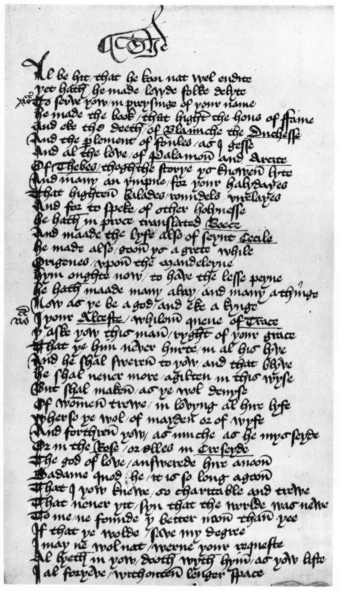
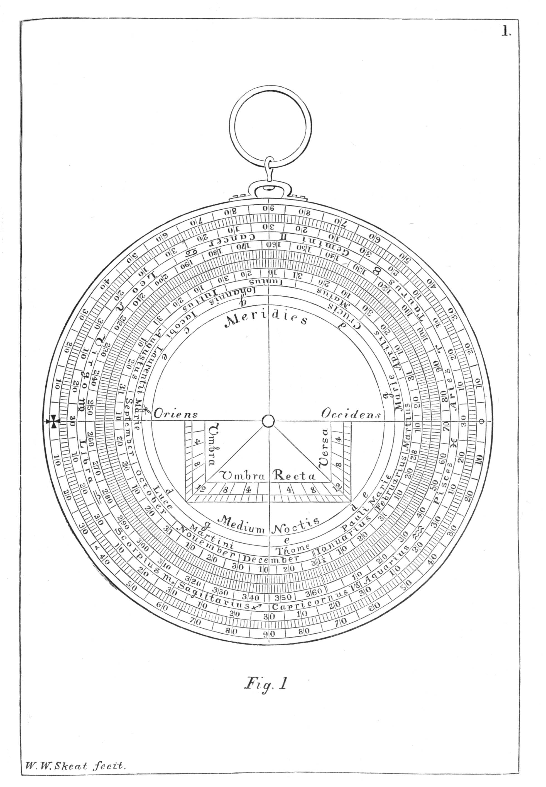
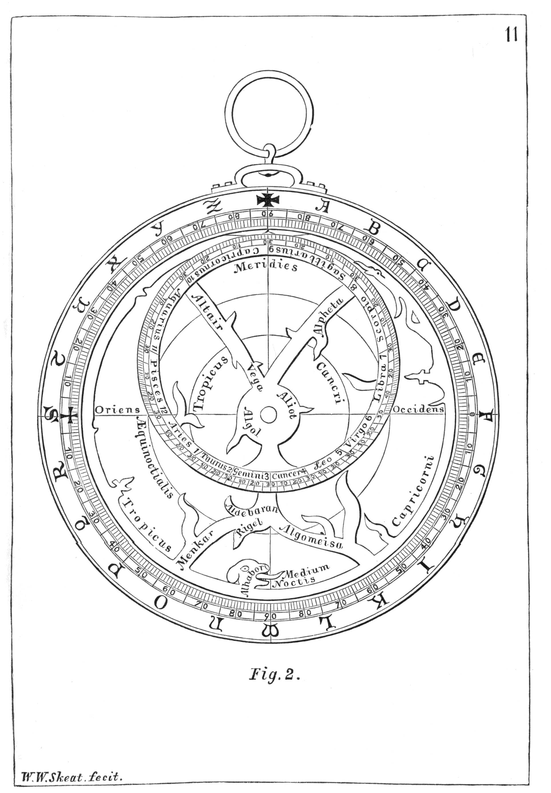
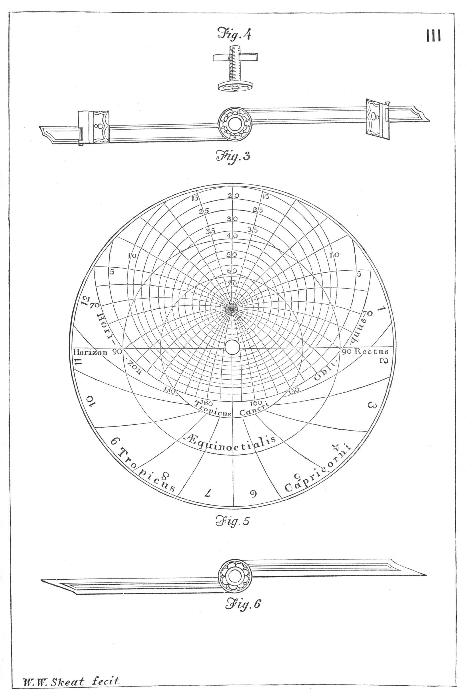
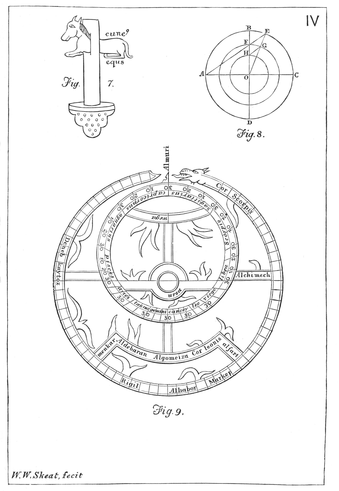
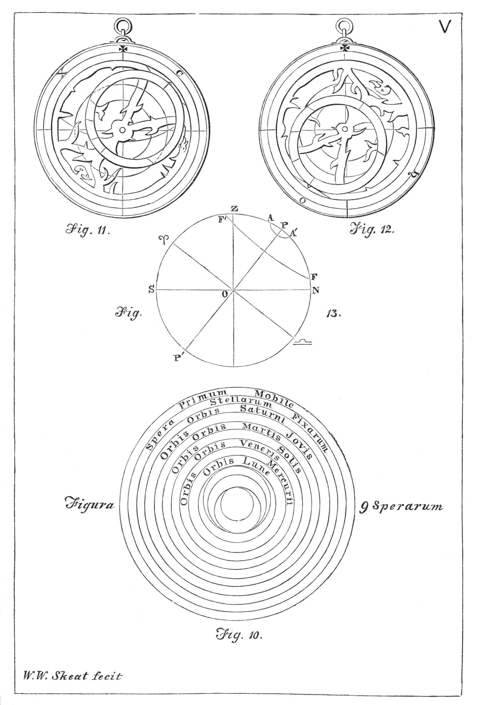
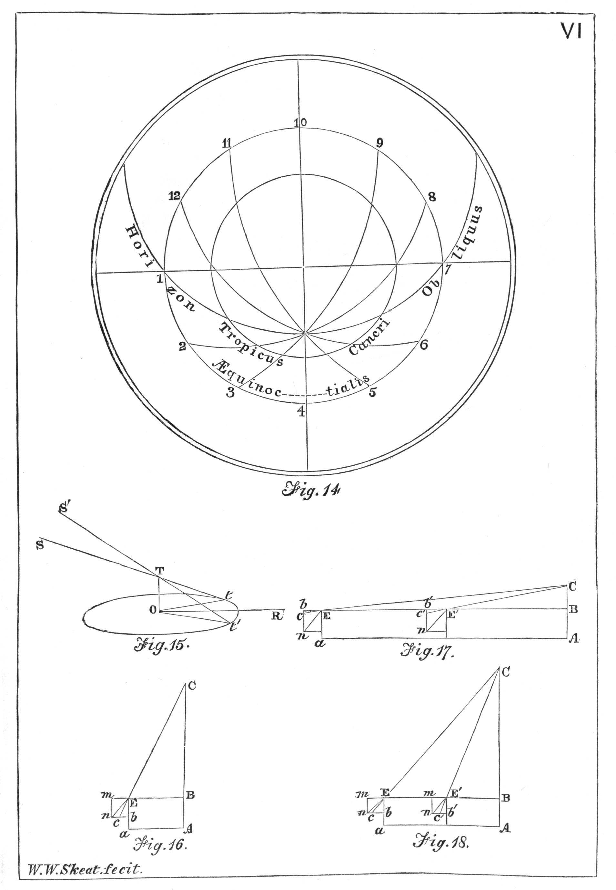

Title: Chaucer's Works, Volume 3 — The House of Fame; The Legend of Good Women; The Treatise on the Astrolabe; The Sources of the Canterbury Tales
Author: Geoffrey Chaucer
Editor: Walter W. Skeat
Release date: February 27, 2014 [eBook #45027]
Most recently updated: October 24, 2024
Language: English
Other information and formats: www.gutenberg.org/ebooks/45027
Credits: Produced by Jonathan Ingram, Keith Edkins and the Online
Distributed Proofreading Team at http://www.pgdp.net
| Transcriber's note: |
In this edition the two versions of the Prologue to the Legend are each assembled for continuous reading. Page numbers {66a} etc. refer to the upper parts of the printed pages, {66b} etc. refer to the lower parts. Skeat's commentary on the Astrolabe (mentioned in the text as "Footnotes") has been similarly separated from Chaucer's text. A Glossary including words from the texts in this volume is included in Skeat's Volume VI, available from Project Gutenberg at http://www.gutenberg.org/files/43097/43097-h/43097-h.htm. |

MS. Fairfax 16. Legend of Good Women, 414-450
Frontispiece***
THE COMPLETE WORKS
OF
GEOFFREY CHAUCER
EDITED, FROM NUMEROUS MANUSCRIPTS
BY THE
Rev. WALTER W. SKEAT, M.A.
Litt.D., LL.D., D.C.L., Ph.D.
ELRINGTON AND BOSWORTH
PROFESSOR OF ANGLO-SAXON
AND FELLOW OF CHRIST'S COLLEGE, CAMBRIDGE
* * *
THE HOUSE OF FAME: THE LEGEND OF
GOOD WOMEN
THE TREATISE ON THE ASTROLABE
WITH AN ACCOUNT OF THE SOURCES OF THE CANTERBURY TALES
'He made the book that hight the Hous of Fame.'
Legend of Good Women; 417.
'Who-so that wol his large volume seke
Cleped the Seintes Legende of Cupyde.'
Canterbury Tales; B 60.
'His Astrelabie, longinge for his art.'
Canterbury Tales; A 3209.
SECOND EDITION
Oxford
AT THE CLARENDON PRESS
M DCCCC
Oxford
PRINTED AT THE CLARENDON PRESS
BY HORACE HART, M.A.
PRINTER TO THE UNIVERSITY
| PAGE | |
| Introduction to the House of Fame.—§ 1. Authorship. § 2. Influence of Dante. § 3. Testimony of Lydgate. § 4. Influence of Ovid. § 5. Date of the Poem. § 6. Metre. § 7. Imitations. § 8. Authorities. § 9. Some Emendations | vii |
| Introduction to the Legend of Good Women.—§ 1. Date of the Poem. § 2. The Two Forms of the Prologue. § 3. Comparison of these. § 4. The Subject of the Legend. § 5. The Daisy. § 6. Agaton. § 7. Chief Sources of the Legend. § 8. The Prologue; Legends of (1) Cleopatra; (2) Thisbe; (3) Dido; (4) Hypsipyle and Medea; (5) Lucretia; (6) Ariadne; (7) Philomela; (8) Phyllis; (9) Hypermnestra. § 9. Gower's Confessio Amantis. § 10. Metre. § 11. 'Clipped' Lines. § 12. Description of the MSS. § 13. Description of the Printed Editions. § 14. Some Improvements in my Edition of 1889. § 15. Conclusion | xvi |
| Introduction to a Treatise on the Astrolabe.—§ 1. Description of the MSS. §§ 2-16. MSS. A., B., C., D., E., F., G., H., I., K., L., M., N., O., P. § 17. MSS. Q., R., S., T., U., W., X. § 18. Thynne's Edition. § 19. The two Classes of MSS. § 20. The last five Sections (spurious). § 21. Gap between Sections 40 and 41. § 22. Gap between Sections 43 and 44. § 23. Conclusion 40. § 24. Extant portion of the Treatise. § 25. Sources. § 26. Various Editions. § 27. Works on the Subject. § 28. Description of the Astrolabe Planisphere. § 29. Uses of the Astrolabe Planisphere. § 30. Stars marked on the Rete. § 31. Astrological Notes. § 32. Description of the Plates | lvii |
| Plates illustrating the description of the Astrolabe | lxxxi |
| The Hous of Fame: Book I. | 1 |
| The Hous of Fame: Book II. | 16 |
| The Hous of Fame: Book III. | 33 |
| 65 | |
| XVIII. The Legend of Cleopatra | 106 |
| XVIII. The Legend of Thisbe | 110 |
| XVIII. The Legend of Dido | 117 |
| XIIIV. The Legend of Hypsipyle and Medea | 131 |
| XIIIV. The Legend of Lucretia | 140 |
| XIIVI. The Legend of Ariadne | 147 |
| XIVII. The Legend of Philomela | 158 |
| XVIII. The Legend of Phyllis | 164 |
| VIIIX. The Legend of Hypermnestra | 169 |
| A Treatise on the Astrolabe | 175 |
| Critical Notes to a Treatise on the Astrolabe | 233 |
| Notes to the House of Fame | 243 |
| Notes to the Legend of Good Women | 288 |
| Notes to a Treatise on the Astrolabe | 352 |
| An Account of the Sources of the Canterbury Tales | 370 |
§ 1. It is needless to say that this Poem is genuine, as Chaucer himself claims it twice over; once in his Prologue to the Legend of Good Women, l. 417, and again by the insertion in the poem itself of the name Geffrey (l. 729)[1].
§ 2. Influence of Dante. The influence of Dante is here very marked, and has been thoroughly discussed by Rambeau in Englische Studien, iii. 209, in an article far too important to be neglected. I can only say here that the author points out both general and particular likenesses between the two poems. In general, both are visions; both are in three books; in both, the authors seek abstraction from surrounding troubles by venturing into the realm of imagination. As Dante is led by Vergil, so Chaucer is upborne by an eagle. Dante begins his third book, Il Paradiso, with an invocation to Apollo, and Chaucer likewise begins his third book with the same; moreover, Chaucer's invocation is little more than a translation of Dante's.
Among the particular resemblances, we may notice the method of commencing each division of the Poem with an invocation[2]. Again, both poets mark the exact date of commencing their poems; Dante descended into the Inferno on Good Friday, 1300 {viii}(Inf. xxi. 112); Chaucer began his work on the 10th of December, the year being, probably, 1383 (see note to l. 111).
Chaucer sees the desert of Lybia (l. 488), corresponding to similar waste spaces mentioned by Dante; see note to l. 482. Chaucer's eagle is also Dante's eagle; see note to l. 500. Chaucer gives an account of Phaethon (l. 942) and of Icarus (l. 920), much like those given by Dante (Inf. xvii. 107, 109); both accounts, however, may have been taken from Ovid[3]. Chaucer's account of the eagle's lecture to him (l. 729) resembles Dante's Paradiso, i. 109-117. Chaucer's steep rock of ice (l. 1130) corresponds to Dante's steep rock (Purg. iii. 47). If Chaucer cannot describe all the beauty of the House of Fame (l. 1168), Dante is equally unable to describe Paradise (Par. i. 6). Chaucer copies from Dante his description of Statius, and follows his mistake in saying that he was born at Toulouse; see note to l. 1460. The description of the house of Rumour is also imitated from Dante; see note to l. 2034. Chaucer's error of making Marsyas a female arose from his misunderstanding the Italian form Marsia in Dante; see note to l. 1229.
These are but some of the points discussed in Rambeau's article; it is difficult to give, in a summary, a just idea of the careful way in which the resemblances between these two great poets are pointed out. I am quite aware that many of the alleged parallel passages are too trivial to be relied upon, and that the author's case would have been strengthened, rather than weakened, by several judicious omissions; but we may fairly accept the conclusion, that Chaucer is more indebted to Dante in this poem than in any other; perhaps more than in all his other works put together.
It is no longer possible to question Chaucer's knowledge of Italian; and it is useless to search for the original of The House of Fame in Provençal literature, as Warton vaguely suggests that we should do (see note to l. 1928). At the same time, I can see no help to be obtained from a perusal of Petrarch's Trionfo della Fama, to which some refer us.
§ 3. Testimony of Lydgate. It is remarkable that Lydgate {ix}does not expressly mention The House of Fame by name, in his list of Chaucer's works. I have already discussed this point in the Introduction to vol. i. pp. 23, 24, where I shew that Lydgate, nevertheless, refers to this work at least thrice in the course of the poem in which his list occurs; and, at the same time, he speaks of a poem by Chaucer which he calls 'Dant in English,' to which there is nothing to correspond, unless it can be identified with The House of Fame[4]. We know, however, that Lydgate's testimony as to this point is wholly immaterial; so that the discussion as to the true interpretation of his words is a mere matter of curiosity.
§ 4. Influence of Ovid. It must, on the other hand, be obvious to all readers, that the general notion of a House of Fame was adopted from a passage in Ovid's Metamorphoses, xii. 39-63. The proof of this appears from the great care with which Chaucer works in all the details occurring in that passage. He also keeps an eye on the celebrated description of Fame in Vergil's Æneid, iv. 173-183; even to the unlucky rendering of 'pernicibus alis' by 'partriches winges,' in l. 1392[5].
I here quote the passage from Ovid at length, as it is very useful for frequent reference (cf. Ho. Fame, 711-24, 672-99, 1025-41, 1951-76, 2034-77):—
'Orbe locus medio est inter terrasque, fretumque,
Caelestesque plagas, triplicis confinia mundi;
{x}Unde quod est usquam, quamuis regionibus absit,
Inspicitur penetratque cauas uox omnis ad aures.
Fama tenet, summaque domum sibi legit in arce;
Innumerosque aditus, ac mille foramina tectis
Addidit, et nullis inclusit limina portis.
Nocte dieque patent. Tota est ex aere sonanti;
Tota fremit, uocesque refert, iteratque quod audit.
Nulla quies intus, nullaque silentia parte.
Nec tamen est clamor, sed paruae murmura uocis;
Qualia de pelagi, si quis procul audiat, undis
Esse solent; qualemue sonum, cum Iupiter atras
Increpuit nubes, extrema tonitrua reddunt.
Atria turba tenet; ueniunt leue uulgus, euntque;
Mixtaque cum ueris passim commenta uagantur
Millia rumorum, confusaque uerba uolutant.
E quibus hi uacuas implent sermonibus aures;
Hi narrata ferunt alio; mensuraque ficti
Crescit, et auditis aliquid nouus adicit auctor.
Illic Credulitas, illic temerarius Error,
Vanaque Laetitia est, consternatique Timores,
Seditioque repens, dubioque auctore Susurri.
Ipsa quid in caelo rerum, pelagoque geratur,
Et tellure uidet, totumque inquirit in orbem.'
A few other references to Ovid are pointed out in the Notes.
By way of further illustration, I here quote the whole of Golding's translation of the above passage from Ovid:—
'Amid the world tweene heauen and earth, and sea, there is a place,
Set from the bounds of each of them indifferently in space,
From whence is seene what-euer thing is practizde any-where,
Although the Realme be neere so farre: and roundly to the eare
Commes whatsoeuer spoken is; Fame hath his dwelling there,
Who in the top of all the house is lodged in a towre.
A thousand entries, glades, and holes are framed in this bowre.
There are no doores to shut. The doores stand open night and day.
The house is all of sounding brasse, and roreth euery way,
Reporting double euery word it heareth people say.
There is no rest within, there is no silence any-where.
Yet is there not a yelling out: but humming, as it were
The sound of surges being heard farre off, or like the sound
That at the end of thunderclaps long after doth redound
When Ioue doth make the clouds to crack. Within the courts is preace
Of common people, which to come and go do neuer ceace.
And millions both of troths and lies run gadding euery-where,
And wordes confuselie flie in heapes, of which some fill the eare
That heard not of them erst, and some cole-cariers part do play,
To spread abroade the things they heard, and euer by the way
The thing that was inuented growes much greater than before,
And euery one that gets it by the end addes somewhat more.
{xi}Light credit dwelleth there, there dwells rash error, there doth dwell
Vaine ioy: there dwelleth hartlesse feare, and brute that loues to tell
Uncertaine newes vpon report, whereof he doth not knowe
The author, and sedition who fresh rumors loues to sowe.
This Fame beholdeth what is done in heauen, on sea, and land,
And what is wrought in all the world he layes to vnderstand.'
§ 5. Date of the Poem. Ten Brink, in his Chaucer Studien, pp. 120, 121, concludes that The House of Fame was, in all probability, composed shortly after Troilus, as the opening lines reproduce, in effect, a passage concerning dreams which appears in the last Book of Troilus, ll. 358-385. We may also observe the following lines in Troilus, from Book I, 517-8:—
'Now, thonked be god, he may goon in the daunce
Of hem that Love list febly for to avaunce.'
These lines, jestingly applied to Troilus by Pandarus, are in the House of Fame, 639, 640, applied by Chaucer to himself:—
'Although thou mayst go in the daunce
Of hem that him list not avaunce.'
Again, the House of Fame preceded the Legend of Good Women, because he here complains of the hardship of his official duties (652-660); whereas, in the Prologue to the Legend, he rejoices at obtaining some release from them. We may also note the quotation from Boethius (note to l. 972). As Boethius and Troilus seem to have been written together, somewhere about 1380, and took up a considerable time, and the apparent date of the Legend is 1385, the probable date of the House of Fame is about 1383 or 1384. Ten Brink further remarks that the references to Jupiter suggest to the reader that the 10th of December was a Thursday (see note to 111). This would give 1383 for beginning the poem; and perhaps no fitter date than the end of 1383 and the spring of 1384 can be found.
§ 6. Metre. Many of Chaucer's metres were introduced by him from the French; but the four-accent metre, with rime as here employed, was commonly known before Chaucer's time. It was used by Robert of Brunne in 1303, in the Cursor Mundi, and in Havelok. It is, however, of French origin, and occurs in the very lengthy poem of Le Roman de la Rose. Chaucer only employed it thrice: (1) in translating the Roman de la Rose; (2) in the Book of the Duchesse; and (3) in the present poem.
For normal lines, with masculine rimes, see 7, 8, 13, 14, 29, {xii}33, &c. For normal lines, with feminine rimes, see 1, 2, 9, 15, 18, &c. Elision is common, as of e in turne (1), in somme (6), in Devyne (14); &c. Sometimes there is a middle pause, where a final syllable need not always be elided. Thus we may read:—
'By abstinencë—or by seknesse' (25):
'In studie—or melancolious' (30):
'And fro unhappë—and ech disese' (89):
'In his substáuncë—is but air' (768).
Two short syllables, rapidly pronounced, may take the place of one:—
'I noot; but who-so of these mirácles' (12):
'By avisiouns, or bý figúres' (47).
The first foot frequently consists of a single syllable; see 26, 35, 40, 44; so also in l. 3, where, in modern English, we should prefer Unto.
The final e, followed by a consonant, is usually sounded, and has its usual grammatical values. Thus we have think-e, infin. (15); bot-e, old accus. of a fem. sb. (32); swich-e, plural (35); oft-e, adverbial (35); soft-e, with essential final e (A.S. sōfte); find-e, pres. pl. indic. (43); com-e, gerund (45): gret-e, pl. (53); mak-e, infin. (56); rod-e, dat. form used as a new nom., of which there are many examples in Chaucer (57); blind-e, def. adj. (138). The endings -ed, -en, -es, usually form a distinct syllable; so also -eth, which, however, occasionally becomes 'th; cf. comth (71). A few common words, written with final e, are monosyllabic; as thise (these); also shulde (should), and the like, occasionally. Remember that the old accent is frequently different from the modern; as in orácles, mirácles (11, 12): distaúnc-e (18), aventúres, figúres (47, 48): povért (88): málicióus (93): &c. The endings -i-al, -i-oun, -i-ous, usually form two distinct syllables.
For further remarks on Metre and Grammar, see vol. v.
§ 7. Imitations. The chief imitations of the House of Fame are The Temple of Glas, by Lydgate[6]; The Palice of Honour, by Gawain Douglas; The Garland of Laurell, by John Skelton; and {xiii}The Temple of Fame, by Pope. Pope's poem should not be compared with Chaucer's; it is very different in character, and is best appreciated by forgetting its origin.
§ 8. Authorities. The authorities for the text are few and poor; hence it is hardly possible to produce a thoroughly satisfactory text. There are three MSS. of the fifteenth century, viz. F. (Fairfax MS. 16, in the Bodleian Library); B. (MS. Bodley, 638, in the same); P. (MS. Pepys 2006, in Magdalene College, Cambridge). The last of these is imperfect, ending at l. 1843. There are two early printed editions of some value, viz. Cx. (Caxton's edition, undated); and Th. (Thynne's edition, 1532). None of the later editions are of much value, except the critical edition by Hans Willert (Berlin, 1883). Of these, F. and B., which are much alike, form a first group; P. and Cx. form a second group; whilst Th. partly agrees with Cx., and partly with F. The text is chiefly from F., with collations of the other sources, as given in the footnotes, which record only the more important variations.
§ 9. Some emendations. In constructing the text, a good deal of emendation has been necessary; and I have adopted many hints from Willert's edition above mentioned; though perhaps I may be allowed to add that, in many cases, I had arrived at the same emendations independently, especially where they were obvious. Among the emendations in spelling, I may particularise misdemen (92), where all the authorities have mysdeme or misdeme; Dispyt, in place of Dispyte (96); barfoot, for barefoot or barefote (98); proces (as in P.) for processe, as in the rest (251); delyt, profyt, for delyte, profyte (309, 310); sleighte for sleight (462); brighte[7], sighte, for bright, sight (503, 504); wighte, highte, for wight, hight (739, 740); fyn, Delphyn (as in Cx.), for fyne, Delphyne (1005, 1006); magyk, syk, for magyke, syke (1269, 1270); losenges, for losynges (1317), and frenges (as in F.) for frynges, as in the rest (1318); dispyt for dispite (1716); laughe for laugh (Cx. lawhe, 1809); delyt for delyte (P. delit, 1831); thengyn (as in Th.) for thengyne (1934); othere for other (2151, footnote). {xiv}These are only a few of the instances where nearly all the authorities are at fault.
The above instances merely relate to questions of spelling. Still more serious are the defects in the MSS. and printed texts as regards the sense; but all instances of emendation are duly specified in the footnotes, and are frequently further discussed in the Notes at the end. Thus, in l. 329, it is necessary to supply I. In 370, allas should be Eneas. In 513, Willert rightly puts selly, i.e. wonderful, for sely, blessed. In 557, the metre is easily restored, by reading so agast for agast so. In 621, we must read lyte is, not lytel is, if we want a rime to dytees. In 827, I restore the word mansioun; the usual readings are tautological. In 911, I restore toun for token, and adopt the only reading of l. 912 that gives any sense. In 1007, the only possible reading is Atlantes. In 1044, Morris's edition has biten, correctly; though MS. F. has beten, and there is no indication that a correction has been made. In 1114, the right word is site; cf. the Treatise on the Astrolabe (see Note). In 1135, read bilt (i.e. buildeth); bilte gives neither sense nor rhythm. In 1173, supply be. Ll. 1177, 1178 have been set right by Willert. In 1189, the right word is Babewinnes[8]. In 1208, read Bret (as in B.). In 1233, read famous. In 1236, read Reyes[9]. In 1303, read hatte, i.e. are named. In 1351, read Fulle, not Fyne. In 1372, adopt the reading of Cx. Th. P., or there is no nominative to streighte; and in 1373, read wonderliche. In 1411, read tharmes (= the armes). In 1425, I supply and hy, to fill out the line. In 1483, I supply dan; if, however, poete is made trisyllabic, then l. 1499 should not contain daun. In 1494, for high the, read highte (as in l. 744). In 1527, for into read in. In 1570, read Up peyne. In 1666, 1701, and 1720, for werkes read werk. In 1702, read clew (see note)[10]. In 1717, lyen is an error for lyuen, i.e. live. In 1750, read To, not The. In 1775, supply ye; or there is no sense. In 1793, supply they for a like reason. In 1804, 5, supply the, and al; for the scansion. In 1897, read {xv}wiste, not wot. In 1940, hattes should be hottes; this emendation has been accepted by several scholars. In 1936, the right word is falwe, not salwe (as in Morris). In 1960, there should be no comma at the end of the line, as in most editions; and in 1961, 2 read werre, reste (not werres, restes). In 1975, mis and governement are distinct words. In 2017, frot[11] is an error for froyt; it is better to read fruit at once; this correction is due to Koch. In 2021, suppress in after yaf. In 2049, for he read the other (Willert). In 2059, wondermost is all one word. In 2076, I read word; Morris reads mothe, but does not explain it, and it gives no sense. In 2156, I supply nevene.
I mention these as examples of necessary emendations of which the usual editions take no notice.
I also take occasion to draw attention to the careful articles on this poem by Dr. J. Koch, in Anglia, vol. vii. App. 24-30, and Englische Studien, xv. 409-415; and the remarks by Willert in Anglia, vii. App. 203-7. The best general account of the poem is that in Ten Brink's History of English Literature.
In conclusion, I add a few 'last words.'
L. 399. We learn, from Troil. i. 654, that Chaucer actually supposed 'Oënone' to have four syllables. This restores the metre. Read:—And Paris to Oënone.
503. Read 'brighte,' with final e; 'bright' is a misprint.
859. Compare Cant. Tales, F 726.
1119. 'To climbe hit,' i.e. to climb the rock; still a common idiom.
2115. Compare Cant. Tales, A 2078. Perhaps read 'wanie.'
§ 1. Date of the Poem: A.D. 1385. The Legend of Good Women presents several points of peculiar, I might almost say of unique interest. It is the immediate precursor of the Canterbury Tales, and enables us to see how the poet was led on towards the composition of that immortal poem. This is easily seen, upon consideration of the date at which it was composed.
The question of the date has been well investigated by Ten Brink; but it may be observed beforehand that the allusion to the 'queen' in l. 496 has long ago been noticed, and it has been thence inferred, by Tyrwhitt, that the Prologue must have been written after 1382, the year when Richard II. married his first wife, the 'good queen Anne.' But Ten Brink's remarks enable us to look at the question much more closely.
He shows that Chaucer's work can be clearly divided into three chief periods, the chronology of which he presents in the following form[12].
First Period.
1366 (at latest). The Romaunt of the Rose.
1369. The Book of the Duchesse.
1372. (end of the period).
{xvii}Second Period.
1373. The Lyf of Seint Cecile.
1373. The Assembly of Foules.
1373. Palamon and Arcite.
1373. Translation of Boethius.
1373. Troilus and Creseide.
1384. The House of Fame.
Third Period.
1385. Legend of Good Women.
1385. Canterbury Tales.
1391. Treatise on the Astrolabe.
It is unnecessary for our present purpose to insert the conjectured dates of the Minor Poems not here mentioned.
According to Ten Brink, the poems of the First Period were composed before Chaucer set out on his Italian travels, i.e. before December, 1372, and contain no allusions to writings by Italian authors. In them, the influence of French authors is very strongly marked.
The poems of the Second Period (he tells us) were composed after that date. The Life of Seint Cecile already marks the author's acquaintance with Dante's Divina Commedia; lines 36-51 are, in fact, a free translation from the Paradiso, canto xxxiii. ll. 1-21. See my note to this passage, and the remarks on the 'Second Nun's Tale' in vol. v. The Parlement of Foules contains references to Dante and a long passage translated from Boccaccio's Teseide; see my notes to that poem in vol. i. The original Palamon and Arcite was also taken from the Teseide; for even the revised version of it (now known as the Knightes Tale, and containing, doubtless, much more of Chaucer's own work) is founded upon that poem, and occasionally presents verbal imitations of it. Troilus is similarly dependent upon Boccaccio's Filostrato. The close connexion between Troilus and the translation of Boethius is seen from several considerations, of which it may suffice here to mention two. The former is the association of these two works in Chaucer's lines to Adam—
'Adam scriveyn, if ever it thee befalle
Boece or Troilus to wryten newe.'
Minor Poems; see vol. i. p. 379.
And the latter is, the fact that Chaucer inserts in Troilus (book iv. {xviii}stanzas 140-154) a long passage on predestination and free-will, taken from Boethius, book v. proses 2, 3; which he would appear to have still fresh in his mind. It is probable that his Boethius preceded Troilus almost immediately; indeed, it is conceivable that, for a short season, both may have been in hand at the same time.
There is also a close connexion between Troilus and the House of Fame, the latter of which shows the influence of Dante in a high degree; see p. vii. This connexion will appear from comparing Troil. v. stt. 52-55 with Ho. Fame, 2-54; and Troil. i. st. 74 (ll. 517-8) with Ho. Fame, 639, 640. See Ten Brink, Studien, p. 121. It would seem that the House of Fame followed Troilus almost immediately. At the same time, we cannot put the date of the House of Fame later than 1384, because of Chaucer's complaint in it of the hardship of his official duties, from much of which he was released (as we shall see) early in 1385. Further, the 10th of December is especially mentioned as being the date on which the House of Fame was commenced (l. 111), the year being probably 1383 (see Note to that line).
It would appear, further, that the Legend was begun soon after the House of Fame was suddenly abandoned, in the very middle of a sentence. That it was written later than Troilus and the House of Fame is obvious, from the mention of these poems in the Prologue; ll. 332, 417, 441. That it was written at no great interval after Troilus appears from the fact that, even while writing Troilus, Chaucer had already been meditating upon the goodness of Alcestis, of which the Prologue to the Legend says so much. Observe the following passages (cited by Ten Brink, Studien, p. 120) from Troilus, bk. v. stt. 219, 254:—
'As wel thou mightest lyen on Alceste
That was of creatures—but men lye—
That ever weren, kindest and the beste.
For whan hir housbonde was in Iupartye
To dye himself, but-if she wolde dye,
She chees for him to dye and go to helle,
And starf anoon, as us the bokes telle.
Besechinge every lady bright of hewe,
And every gentil womman, what she be,
That, al be that Criseyde was untrewe,
That for that gilt she be not wrooth with me.
{xix}Ye may hir gilt in othere bokes see;
And gladlier I wol wryten, if yow leste,
Penelopeës trouthe, and good Alceste.'
There is also a striking similarity between the argument in Troilus, bk. iv. st. 3, and ll. 369-372 (B-text) of the Prologue to the Legend. The stanza runs thus:—
'For how Criseyde Troilus forsook,
Or at the leste, how that she was unkinde,
Mot hennes-forth ben matere of my book,
As wryten folk thorugh whiche it is in minde.
Allas! that they shulde ever cause finde
To speke hir harm; and, if they on hir lye,
Y-wis, hem-self sholde han the vilanye.'
I will here also note the fact that the first line of the above stanza is quoted, almost unaltered, in the earlier version of the Prologue, viz. at l. 265 of the A-text, on p. 88.
From the above considerations we may already infer that the House of Fame was begun, probably, in December, 1383, and continued in 1384; and that the Legend of Good Women, which almost immediately succeeded it, may be dated about 1384 or 1385; certainly after 1382, when King Richard was first married. But now that we have come so near to the date, it is possible to come still nearer; for it can hardly be doubted that the extremely grateful way in which Chaucer speaks of the queen may fairly be connected with the stroke of good fortune which happened to him just at this very period. In the House of Fame we find him groaning about the troublesomeness of his official duties; and the one object of his life, just then, was to obtain greater leisure, especially if it could be had without serious loss of income. Now we know that, on the 17th of February, 1385, he obtained the indulgence of being allowed to nominate a permanent deputy for his Controllership of the Customs and Subsidies; see Furnivall's Trial Forewords to the Minor Poems, p. 25. If with our knowledge of this fact we combine these considerations, viz. that Chaucer expresses himself gratefully to the queen, that he says nothing more of his troublesome duties, and that Richard II. is known to have been a patron of letters (as we learn from Gower), we may well conclude that the poet's release from his burden was brought about by the queen's intercession with the king on his behalf. We may here {xx}notice Lydgate's remarks in the following stanza, which occurs in the Prologue to the Fall of Princes[13]:—
'This poete wrote, at the request of the quene,
A Legende, of perfite holynesse,
Of Good Women, to fynd out nynetene
That did excell in bounte and fayrenes;
But for his labour and besinesse
Was importable, his wittes to encombre,
In all this world to fynd so gret a nombre[14].'
Lydgate can hardly be correct in his statement that Chaucer wrote 'at the request' of the queen: for, had our author done so, he would have let us know it. Still, he has seized the right idea, viz. that the queen was, so to speak, the moving cause which effected the production of the poem.
It is, moreover, much to the point to observe that Chaucer's state of delightful freedom did not last long. Owing to a sudden change in the government we find that, on Dec. 4, 1386, he lost his Controllership of the Customs and Subsidies; and, only ten days later, also lost his Controllership of the Petty Customs. Something certainly went wrong, but we have no proof that Chaucer abused his privilege.
On the whole we may interpret ll. 496, 7 (p. 101), viz.
'And whan this book is maad, yive hit the quene,
On my behalfe, at Eltham[15] or at Shene,'
as giving us a date but little later than Feb. 17, 1385, and certainly before Dec. 4, 1386. The mention of the month of May in ll. 36, 45, 108, 176, is probably conventional; still, the other frequent references to spring-time, as in ll. 40-66, 130-147, 171-174, 206, &c., may mean something; and in particular we may note the reference to St. Valentine's day as being past, in ll. 145, 146; seeing that chees (chose) occurs in the past tense. We can hardly resist the conviction that the right date {xxi}of the Prologue is the spring of 1385, which satisfies every condition.
§ 2. The two forms of the Prologue. So far, I have kept out of view the important fact, that the Prologue exists in two distinct forms, viz. an earlier and a revised form. The lines in which 'the queen' is expressly mentioned occur in the later version only, so that some of the above arguments really relate to that alone. But it makes no great difference, as there is no reason to suppose that there was any appreciable lapse of time between the two versions.
In order to save words, I shall call the earlier version the A-text, and the later one the B-text. The manner of printing these texts is explained at p. 65. I print the B-text in full, in the lower half of the page. The A-text appears in the upper half of the same, and is taken from MS. C. (Camb. Univ. Library, Gg. 4. 27), which is the only MS. that contains it, with corrections of the spelling, as recorded in the footnotes. Lines which appear in one text only are marked with an asterisk (*); those which stand almost exactly the same in both texts are marked with a dagger (†) prefixed to them; whilst the unmarked lines are such as occur in both texts, but with some slight alteration. By way of example, observe that lines B. 496, 497, mentioning the queen, are duly marked with an asterisk, as not being in A. Line 2, standing the same in both texts, is marked with a dagger. And thirdly, line 1 is unmarked, because it is slightly altered. A. has here the older expression 'A thousand sythes,' whilst B. has the more familiar 'A thousand tymes.'
The fact that A. is older than B. cannot perhaps be absolutely proved without a long investigation. But all the conditions point in that direction. In the first place, it occurs in only one MS., viz. MS. C., whilst all the others give the B-text; and it is more likely that a revised text should be multiplied than that a first draft should be. Next, this MS. C. is of high value and great importance, being quite the best MS., as regards age, of the whole set; and it is a fortunate thing that the A-text has been preserved at all. And lastly, the internal evidence tends, in my opinion, to shew that B. can be more easily evolved from A. than conversely. I am not aware that any one has ever doubted this result.
We may easily see that the A-text is, on the whole, more general and vague, whilst the B-text is more particular in its references. {xxii}The impression left on my mind by the perusal of the two forms of the Prologue is that Chaucer made immediate use of the comparative liberty accorded to him on the 17th of February, 1385, to plan a new poem, in an entirely new metre, and in the new form of a succession of tales. He decided, further, that the tales should relate to women famous in love-stories, and began by writing the tale of Cleopatra, which is specially mentioned in B. 566 (and A. 542)[16]. The idea then occurred to him of writing a preface or Prologue, which would afford him the double opportunity of justifying and explaining his design, and of expressing his gratitude for his attainment of greater leisure. Having done this, he was not wholly satisfied with it; he thought the expression of gratitude did not come out with sufficient clearness, at least with regard to the person to whom he owed the greatest debt. So he at once set about to amend and alter it; the first draught, of which he had no reason to be ashamed, being at the same time preserved. And we may be sure that the revision was made almost immediately; he was not the man to take up a piece of work again after the first excitement of it had passed away[17]. On the contrary, he used to form larger plans than he could well execute, and leave them unfinished when he grew tired of them. I therefore propose to assign the conjectural date of the spring of 1385 to both forms of the Prologue; and I suppose that Chaucer went on with one tale of the series after another during the summer and latter part of the same year till he grew tired of the task, and at last gave it up in the middle of a sentence. An expression of doubt as to the completion of the task already appears in l. 2457.
§ 3. Comparison of the two forms of the Prologue. A detailed comparison of the two forms of the Prologue would extend to a great length. I merely point out some of the more remarkable variations.
The first distinct note of difference that calls for notice is at line A. 89 (B. 108), p. 72, where the line—
'When passed was almost the month of May'
is altered to—
'And this was now the firste morwe of May.'
This is clearly done for the sake of greater definiteness, and because of the association of the 1st of May with certain national customs expressive of rejoicing. It is emphasized by the statements in B. 114 as to the exact position of the sun (see note to the line). In like manner the vague expression about 'the Ioly tyme of May' in A. 36 is exchanged for the more exact—'whan that the month of May Is comen'; B. 36. In the B-text, the date is definitely fixed; in ll. 36-63 we learn what he usually did on the recurrence of the May-season; in ll. 103-124, we have his (supposed) actual rising at the dawn of May-day; then the manner in which he spent that day (ll. 179-185); and lastly, the arrival of night, his return home, his falling asleep, and his dream (ll. 197-210). He awakes on the morning of May 2, and sets to work at once (ll. 578, 579).
Another notable variation is on p. 71. On arriving at line A. 70, he puts aside A. 71-80 for the present, to be introduced later on (p. 77); and writes the new and important passage contained in B. 83-96 (p. 71). The lady whom he here addresses as being his 'very light,' one whom his heart dreads, whom he obeys as a harp obeys the hand of the player, who is his guide, his 'lady sovereign,' and his 'earthly god,' cannot be mistaken. The reference is obviously to his sovereign lady the queen; and the expression 'earthly god' is made clear by the declaration (in B. 387) that kings are as demi-gods in this present world.
In A., the Proem or true Introduction ends at l. 88, and is more marked than in B., wherein it ends at l. 102.
The passage in A. contained in ll. 127-138 (pp. 75, 76) is corrupt and imperfect in the MS. The sole existing copy of it was evidently made from a MS. that had been more or less defaced; I have had to restore it as I best could. The B-text has here been altered and revised, though the variations are neither extensive nor important; but the passage is immediately followed by about 30 new lines, in which Mercy is said to be a greater power than Right, or strict Justice, especially when Right is overcome 'through innocence and ruled curtesye'; the application of which expression is obvious.
In B. 183-187 we have the etymology of daisy, the declaration {xxiv}that 'she is the empress of flowers,' and a prayer for her prosperity, i.e. for the prosperity of the queen.
In A. 103 (p. 73), the poet falls asleep and dreams. In his dream, he sees a lark (A. 141, p. 79) who introduces the God of Love. In the B-text, the dream is postponed till B. 210 (p. 79), and the lark is left out, as being unnecessary. This is a clear improvement.
An important change is made in the 'Balade' at pp. 83, 84. The refrain is altered from 'Alceste is here' to 'My lady cometh.' The reason is twofold. The poet wishes to suppress the name of Alcestis for the present, in order to introduce it as a surprise towards the end (B. 518)[18]; and secondly, the words 'My lady cometh' are used as being directly applicable to the queen, instead of being only applicable through the medium of allegory. Indeed, Chaucer takes good care to say so; for he inserts a passage to that effect (B. 271-5); where we may remember, by the way, that free means 'bounteous' in Middle-English. We have a few additional lines of the same sort in B. 296-299.
On the other hand, Chaucer suppressed the long and interesting passage in A. 258-264, 267-287, 289-312, for no very obvious reason. But for the existence of MS. C., it would have been wholly lost to us, and the recovery of it is a clear gain. Most interesting of all is the allusion to Chaucer's sixty books of his own, all full of love-stories and personages known to history, in which, for every bad woman, mention was duly made of a hundred good ones (A. 273-277, p. 88)[19]. Important also is his mention of some of his authors, such as Valerius, Livy, Claudian, Jerome, Ovid, and Vincent of Beauvais.
If, as we have seen, Alcestis in this Prologue really meant the queen, it should follow that the God of Love really meant the king. This is made clear in B. 373-408, especially in the comparison between a just king (such as Richard, of course) and the tyrants of Lombardy. In fact, in A. 360-364, Chaucer said {xxv}a little too much about the duty of a king to hear the complaints and petitions of the people, and he very wisely omitted it in revision. In A. 355, he used the unlucky word 'wilfulhed' as an attribute of a Lombard tyrant; but as it was not wholly inapplicable to the king of England, he quietly suppressed it. But the comparison of the king to a lion, and of himself to a fly, was in excellent taste; so no alteration was needed here (p. 94).
In his enumeration of his former works (B. 417-430), he left out one work which he had previously mentioned (A. 414, 415, p. 96). This work is now lost[20], and was probably omitted as being a mere translation, and of no great account. Perhaps the poet's good sense told him that the original was a miserable production, as it must certainly be allowed to be, if we employ the word miserable with its literal meaning (see p. 307).
At pp. 103, 104, some lines are altered in A. (527-532) in order to get rid of the name of Alcestis here, and to bring in a more immediate reference to the Balade. Line B. 540 is especially curious, because he had not, in the first instance, forgotten to put her in his Balade (see A. 209); but he now wished to seem to have done so.
In B. 552-565, we have an interesting addition, in which Love charges him to put all the nineteen ladies, besides Alcestis, into his Legend; and tells him that he may choose his own metre (B. 562). Again, in B. 568-577, he practically stipulates that he is only to tell the more interesting part of each story, and to leave out whatever he should deem to be tedious. This proviso was eminently practical and judicious.
§ 4. The subject of the Legend. We learn, from B. 241, 283, that Chaucer saw in his vision Alcestis and nineteen other ladies, and from B. 557, that he was to commemorate them all in his Legend, beginning with Cleopatra (566) and ending with Alcestis (549, 550). As to the names of the nineteen, they are to be found in his Balade (555).
Upon turning to the Balade (p. 83), the names actually mentioned include some which are hardly admissible. For example, Absalom and Jonathan are names of men; Esther is hardly {xxvi}a suitable subject, whilst Ysoult belongs to a romance of medieval times. (Cf. A. 275, p. 88.) The resulting practicable list is thus reduced to the following, viz. Penelope, Marcia, Helen, Lavinia, Lucretia, Polyxena, Cleopatra, Thisbe, Hero, Dido, Laodamia, Phyllis, Canace, Hypsipyle, Hypermnestra, and Ariadne. At the same time, we find legends of Medea and Philomela, though neither of these are mentioned in the Balade. It is of course intended that the Balade should give a representative list only, without being exactly accurate.
But we are next confronted by a most extraordinary piece of evidence, viz. that of Chaucer himself, when, at a later period, he wrote the Introduction to the Man of Lawes Prologue (see vol. iv. p. 131). He there expressly refers to his Legend of Good Women, which he is pleased to call 'the Seintes Legende of Cupide,' i.e. the Legend of Cupid's Saints. And, in describing this former work of his, he introduces the following lines:—
'Ther may be seen the large woundes wyde
Of Lucresse, and of Babilan Tisbee;
The swerd of Dido for the false Enee;
The tree of Phillis for hir Demophon;
The pleinte of Dianire and Hermion,
Of Adriane and of Isiphilee;
The bareyne yle stonding in the see;
The dreynte Leander for his Erro;
The teres of Eleyne, and eek the wo
Of Brixseyde, and of thee, Ladomea;
The cruelte of thee, queen Medea,
Thy litel children hanging by the hals
For thy Iason, that was of love so fals!
O Ypermistra, Penelopee, Alceste,
Your wyfhod he comendeth with the beste!
But certeinly no word ne wryteth he
Of thilke wikke example of Canacee'; &c.
We can only suppose that he is referring to the contents of his work in quite general terms, with a passing reference to his vision of Alcestis and the nineteen ladies, and to those mentioned in his Balade. There is no reason for supposing that he ever wrote complete tales about Deianira, Hermione, Hero, Helen, Briseis, Laodamia, or Penelope, any more than he did about Alcestis. But it is highly probable that, just at the period of writing his Introduction to the Man of Lawes Prologue, he was seriously intending to take up again his 'Legend,' and was planning how to continue it. But he never did it.
On comparing these two lists, we find that the following names are common to both, viz. Penelope, Helen, Lucretia, Thisbe, Hero, Dido, Laodamia, Phyllis, Canace, Hypsipyle, Hypermnestra, Ariadne, and (in effect) Alcestis. The following occur in the Balade only, viz. Marcia, Lavinia, Polyxena, Cleopatra. And the following are mentioned in the above-quoted passage only, viz. Deianira, Hermione, Briseis, Medea. We further know that he actually wrote the Legend of Philomela, though it is in neither of the above lists; whilst the story of Canace was expressly rejected. Combining our information, and rearranging it, we see that his intention was to write nineteen Legends, descriptive of twenty women, viz. Alcestis and nineteen others; the number of Legends being reduced by one owing to the treatment of the stories of Medea and Hypsipyle under one narrative. Putting aside Alcestis, whose Legend was to come last, the nineteen women can be made up as follows:—
1. Cleopatra. 2. Thisbe. 3. Dido. 4 and 5. Hypsipyle and Medea. 6. Lucretia. 7. Ariadne. 8. Philomela. 9. Phyllis. 10. Hypermnestra (all of which are extant). Next come—11. Penelope: 12. Helen: 13. Hero: 14. Laodamia (all mentioned in both lists). 15. Lavinia: 16. Polyxena[21] (mentioned in the Balade). 17. Deianira: 18. Hermione: 19. Briseis (in the Introduction to the Man of Lawe).
This conjectural list is sufficient to elucidate Chaucer's plan fully, and agrees with that given in the note to l. 61 of the Introduction to the Man of Lawes Tale, in vol. v.
If we next enquire how such lists of 'martyred' women came to be suggested to Chaucer, we may feel sure that he was thinking of Boccaccio's book entitled De Claris Mulieribus, and of Ovid's Heroides. Boccaccio's book contains 105 tales of Illustrious Women, briefly told in Latin prose. Chaucer seems to have partially imitated from it the title of his poem—'The Legend of Good Women'; and he doubtless consulted it for his purpose. But he took care to consult other sources also, in order to be able to give the tales at greater length, so that the traces of his debt to the above work by Boccaccio are very slight.
We must not, however, omit to take notice that, whilst Chaucer {xxviii}owes but little to Boccaccio as regards his subject-matter, it was from him, in particular, that he took his general plan. This is well shewn in the excellent and careful essay by M. Bech, printed in 'Anglia,' vol. v. pp. 313-382, with the title—'Quellen und Plan der Legende of Goode Women und ihr Verhältniss zur Confessio Amantis.' At p. 381, Bech compares Chaucer's work with Boccaccio's, and finds the following points of resemblance.
1. Both works treat exclusively of women; one of them speaks particularly of 'Gode Women,' whilst the other is written 'De Claris Mulieribus.'
2. Both works relate chiefly to tales of olden time.
3. In both, the tales follow each other without any intermediate matter.
4. Both are compacted into a whole by means of an introductory Prologue.
5. Both writers wish to dedicate their works to a queen, but effect this modestly and indirectly. Boccaccio addresses his Prologue to a countess, telling her that he wishes to dedicate his book to Joanna, queen of Jerusalem and Sicily; whilst Chaucer veils his address to queen Anne under the guise of allegory.
6. Both record the fact of their writing in a time of comparative leisure. Boccaccio uses the words: 'paululum ab inerti uulgo semotus et a ceteris fere solutus curis.'
7. Had Chaucer finished his work, his last Legend would have related to Alcestis, i.e. to the queen herself. Boccaccio actually concludes his work with a chapter 'De Iohanna Hierusalem et Sicilie regina.'
See further in Bech, who quotes Boccaccio's 'Prologue' in full.
To this comparison should be added (as Bech remarks) an accidental coincidence which is even more striking, viz. that the work 'De Claris Mulieribus' bears much the same relation to the more famous one entitled 'Il Decamerone,' that the Legend of Good Women does to the Canterbury Tales.
Boccaccio has all of Chaucer's finished tales, except those of Ariadne, Philomela, and Phyllis[22]; he also gives the stories of some whom Chaucer only mentions, such as the stories of Deianira {xxix}(cap. 22), Polyxena (cap. 31), Helena (cap. 35), Penelope (cap. 38); and others. To Ovid our author is much more indebted, and frequently translates passages from his Heroides (or Epistles) and from the Metamorphoses. The former of these works contains the Epistles of Phyllis, Hypsipyle, Medea, Dido, Ariadne, and Hypermnestra, whose stories Chaucer relates, as well as the letters of most of those whom Chaucer merely mentions, viz. of Penelope, Briseis, Hermione, Deianira, Laodamia, Helena, and Hero. It is evident that our poet was chiefly guided by Ovid in selecting stories from the much larger collection in Boccaccio. At the same time it is remarkable that neither Boccaccio (in the above work) nor Ovid gives the story of Alcestis, and it is not quite certain whence Chaucer obtained it. It is briefly told in the 51st of the Fabulae of Hyginus, but it is much more likely that Chaucer borrowed it from another work by Boccaccio, entitled De Genealogia Deorum[23], where it appears amongst the fifty-one labours of Hercules, in the following words:—
'Alcestem Admeti regis Thessaliae coniugem retraxit [Hercules] ad uirum. Dicunt enim, quod cum infirmaretur Admetus, implorassetque Apollinis auxilium, sibi ab Apolline dictum mortem euadere non posse, nisi illam aliquis ex affinibus atque necessariis subiret. Quod cum audisset Alcestis coniunx, non dubitauit suam pro salute uiri concedere, et sic ea mortua Admetus liberatus est, qui plurimum uxori compatiens Herculem orauit, vt ad inferos uadens illius animam reuocaret ad superos, quod et factum est.'— Lib. xiii. c. 1 (ed. 1532).
§ 5. The Daisy. To this story Chaucer has added a pretty addition of his own invention, that this heroine was finally transformed into a daisy. The idea of choosing this flower as the emblem of perfect wifehood was certainly a happy one, and has often been admired. It is first alluded to by Lydgate, in a Poem against Self-Love (see Lydgate's Minor Poems, ed. Halliwell, p. 161):—
'Alcestis flower, with white, with red and greene,
Displaieth hir crown geyn Phebus bemys brihte.'
And again, in the same author's Temple of Glas, ll. 71-74:—
'I mene Alceste, the noble trewe wyf ...
Hou she was turned to a dayesye.'
The anonymous author of the Court of Love seized upon the same fancy to adorn his description of the Castle of Love, which, as he tells us, was—
'With-in and oute depeinted wonderly
With many a thousand daisy[es] rede as rose
And white also, this sawe I verely.
But what tho deis[y]es might do signifye
Can I not tel, saufe that the quenes floure,
Alceste, it was, that kept ther her soioure,
Which vnder Uenus lady was and quene,
And Admete kyng and souerain of that place,
To whom obeied the ladies good ninetene,
With many a thousand other bright of face[24].'
The mention of 'the ladies good ninetene' at once shews us whence this mention of Alcestis was borrowed.
In a modern book entitled Flora Historica, by Henry Phillips, 2nd ed. i. 42, we are gravely told that 'fabulous history informs us that this plant [the daisy] is called Bellis because it owes its origin to Belides, a granddaughter of Danaus, and one of the nymphs called Dryads, that presided over the meadows and pastures in ancient times. Belides is said to have encouraged the suit of Ephigeus, but whilst dancing on the green with this rural deity she attracted the admiration of Vertumnus, who, just as he was about to seize her in his embrace, saw her transformed into the humble plant that now bears her name.' It is clear that the concocter of this stupid story was not aware that Belides is a plural substantive, being the collective name of the fifty daughters of Danaus, who are here rolled into one in order to be transformed into a single daisy; and all because the words bellis and Belides happen to begin with the same three letters! It may also be noticed that 'in ancient times' the business of the Dryads was to preside over trees rather than 'over meadows and pastures.' Who the 'rural deity' was who is here named 'Ephigeus' I neither know nor care. But it is curious to observe the degeneracy of the story for which Chaucer was (in my belief) originally responsible[25]. See Notes and Queries, 7th S. vi. 186, 309.
Of course it is easy to see that this invention on the part of Chaucer is imitated from Ovid's Metamorphoses, where Clytie becomes a sun-flower, Daphne a laurel, and Narcissus, Crocus, and Hyacinthus become, respectively, a narcissus, a crocus, and a hyacinth. At the same time, Chaucer's attention may have been directed to the daisy in particular, as Tyrwhitt long ago pointed out, by a perusal of such poems as Le Dit de la fleur de lis et de la Marguerite, by Guillaume de Machault (printed in Tarbe's edition, 1849, p. 123), and Le Dittié de la flour de la Margherite, by Froissart (printed in Bartsch's Chrestomathie de l'ancien Français, 1875, p. 422); see Introduction to Chaucer's Minor Poems, in vol. i. p. 36. In particular, we may well compare lines 42, 48, 49, 60-63 of our B-text with Machault's Dit de la Marguerite (ed. Tarbé, p. 123):—
'J'aim une fleur, qui s'uevre et qui s'encline
Vers le soleil, de jour quant il chemine;
Et quant il est couchiez soubz sa courtine
Par nuit obscure,
Elle se clost, ainsois que li jours fine.'
And again, we may compare ll. 53-55 with the lines in Machault that immediately follow, viz.
'Toutes passe, ce mest vis, en coulour,
Et toutes ha surmonté de douçour;
Ne comparer
Ne se porroit nulle à li de coulour': &c.[26]
The resemblance is, I think, too close to be accidental.
We may also compare (though the resemblance is less striking) ll. 40-57 of the B-text of the Prologue (pp. 68, 69) with ll. 22-30 of Froissart's poem on the Daisy:—
'Son doulç vëoir grandement me proufite,
et pour ce est dedens mon coer escripte
si plainnement
que nuit et jour en pensant ie recite
{xxxii}les grans vertus de quoi elle est confite,
et di ensi: "la heure soit benite
quant pour moi ai tele flourette eslite,
qui de bonté et de beauté est dite
la souveraine,"' &c.
At l. 68 of the same poem, as pointed out by M. Sandras (Étude sur G. Chaucer, 1859, p. 58), and more clearly by Bech (Anglia, v. 363), we have a story of a woman named Herés—'une pucelle [qui] ama tant son mari'—whose tears, shed for the loss of her husband Cephëy, were turned by Jupiter into daisies as they fell upon the green turf. There they were discovered, one January, by Mercury, who formed a garland of them, which he sent by a messenger named Lirés to Serés (Ceres). Ceres was so pleased by the gift that she caused Lirés to be beloved, which he had never been before.
This mention of Ceres doubtless suggested Chaucer's mention of Cibella (Cybele) in B. 531. In fact, Chaucer first transforms Alcestis herself into a daisy (B. 512); but afterwards tells us that Jupiter changed her into a constellation (B. 525), whilst Cybele made the daisies spring up 'in remembrance and honour' of her. The clue seems to be in the name Cephëy, representing Cephei gen. case of Cepheus. He was a king of Ethiopia, husband of Cassiope, father of Andromeda, and father-in-law of Perseus. They were all four 'stellified,' and four constellations bear their names even to the present day. According to the old mythology, it was not Alcestis, but Cassiope, who was said to be 'stellified[27].' The whole matter is thus sufficiently illustrated.
§ 6. Agaton. This is, perhaps, the most convenient place for explaining who is meant by Agaton (B. 526). The solution of this difficult problem was first given by Cary, in his translation of Dante's Purgatorio, canto xxii. l. 106, where the original has Agatone. Cary first quotes Chaucer, and then the opinion of Tyrwhitt, that there seems to be no reference to 'any of the Agathoes of antiquity,' and adds: 'I am inclined to believe that Chaucer must have meant Agatho, the dramatic writer, whose name, at least, appears to have been familiar in the Middle Ages; for, besides the mention of him in the text, he is quoted by Dante in the Treatise de Monarchia, lib. iii. "Deus per nuncium facere {xxxiii}non potest, genita non esse genita, iuxta sententiam Agathonis."' The original is to be found in Aristotle, Ethic. Nicom. lib. vi. c. 2:—
Μόνου γὰρ ἀυτοῦ καὶ θεὸς στερίσκεται
Ἀγένητα ποιεῖν ἅσσ' ἄν ᾖ πεπραγμένα.
Agatho is mentioned by Xenophon in his Symposium, by Plato in the Protagoras, and in the Banquet, a favourite book with our author [Dante], and by Aristotle in his Art of Poetry, where the following remarkable passage occurs concerning him, from which I will leave it to the reader to decide whether it is possible that the allusion in Chaucer might have arisen: ἐν ἐνίαις μὲν ἓν ἢ δύο τῶν γνωρίμων ἐστὶν ὀνομάτων, τὰ δὲ ἄλλα πεποιημένα· ἐν ἐνίαις δὲ ὀυθέν· οἷον ἐν τῷ Ἀγάθωνος Ἄνθει. ὁμοίως γὰρ ἐν τούτῳ τά τε πράγματα καὶ τὰ ὀνόματα πεποίηται, καὶ ὀυδὲν ἧττον ἐυφραίνει. Edit. 1794, p. 33. "There are, however, some tragedies, in which one or two of the names are historical, and the rest feigned; there are even some, in which none of the names are historical; such is Agatho's tragedy called 'The Flower'; for in that all is invention, both incidents and names; and yet it pleases." Aristotle's Treatise on Poetry, by Thos. Twining, 8vo. edit. 1812, vol. i. p. 128.'
The peculiar spelling Agaton renders it highly probable that Chaucer took the name from Dante (Purg. xxii. 106), but this does not wholly suffice[28]. Accordingly, Bech suggests that he may also have noticed the name in the Saturnalia of Macrobius, an author whose Somnium Scipionis Chaucer certainly consulted (Book Duch. 284; Parl. Foules, 111). In this work Macrobius mentions, incidentally, both Alcestis (lib. v. c. 19) and Agatho (lib. ii. c. 1), and Chaucer may have observed the names there, though he obtained no particular information about them. Froissart (as Bech bids us remark), in his poem on the Daisy, has the lines:—
'Mercurius, ce dist li escripture,
trouva premier
la belle flour que j'ainc oultre mesure,' &c.
The remark—'ce dist li escripture,' 'as the book says'—may {xxxiv}well have suggested to Chaucer that he ought to give some authority for his story, and the name of Agatho (of whom he probably knew nothing more than the name) served his turn as well as another. His easy way of citing authors is probably, at times, humorously assumed; and such may be the explanation of his famous 'Lollius.' It is quite useless to make any further search.
I may add that this Agatho, or Agathon (Ἀγάθον), was an Athenian tragic poet, and a friend of Euripides and Plato. He was born about B.C. 447, and died about B.C. 400.
Lounsbury (Studies in Chaucer, ii. 402) rejects this explanation; but it is not likely that we shall ever meet with a better one.
§ 7. Chief Sources of the Legend. The more obvious sources of the various tales have frequently been pointed out. Thus Prof. Morley, in his English Writers, v. 241 (1890), says that Thisbe is from Ovid's Metamorphoses, iv. 55-166; Dido, from Vergil and Ovid's Heroides, Ep. vii; Hypsipyle and Medea from Ovid (Met. vii., Her. Ep. vi, xii); Lucretia from Ovid (Fasti, ii. 721) and Livy (Hist. i. 57); Ariadne and Philomela from Ovid (Met. viii. 152, vi. 412-676), and Phyllis and Hypermnestra also from Ovid (Her. Ep. ii. and Ep. xiv). He also notes the allusion to St. Augustine (De Civitate Dei, cap. xix.) in l. 1690, and observes that all the tales, except those of Ariadne and Phyllis[29], are in Boccaccio's De Claris Mulieribus. But it is possible to examine them a little more closely, and to obtain further light upon at least a few other points. It will be most convenient to take each piece in its order. For some of my information, I am indebted to the essay by Bech, above mentioned (p. xxviii).
§ 8. Prologue. Original. Besides mere passing allusions, we find references to the story of Alcestis, queen of Thrace (432[30], 518). As she is not mentioned in Boccaccio's book De Claris Mulieribus, and Ovid nowhere mentions her name, and only alludes in passing to the 'wife of Admetus' in two passages (Ex Ponto, iii. 1. 106; Trist. v. 14. 37), it is tolerably certain that Chaucer must have read her story either in Boccaccio's book De Genealogia Deorum, lib. xiii. c. 1 (see p. xxix), or in the Fables of Hyginus (Fab. 51). A large number of the names {xxxv}mentioned in the Balade (249) were suggested either by Boccaccio's De Claris Mulieribus, or by Ovid's Heroides; probably, by both of these works. We may here also note that the Fables of Hyginus very briefly give the stories of Jason and Medea (capp. 24, 25); Theseus and Ariadne (capp. 41-43); Philomela (cap. 45); Alcestis (cap. 51); Phyllis (cap. 59); Laodamia (cap. 104); Polyxena (cap. 110); Hypermnestra (cap. 168); Nisus and Scylla (cap. 198; cf. ll. 1904-1920); Penelope (cap. 126); and Helena (capp. 78, 92). The probability that Chaucer consulted Machault's and Froissart's poems has already been discussed; see p. xxxi.
It is interesting to note that Chaucer had already praised many of his Good Women in previous poems. Compare such passages as the following:—
'Of Medea and of Iason,
Of Paris, Eleyne, and Lavyne.'
Book of the Duch. 330.
'By as good right as Medea was,
That slow her children for Iason;
And Phyllis als for Demophon
Heng hir-self, so weylaway!
For he had broke his terme-day
To come to her. Another rage
Had Dydo, quene eek of Cartage,
That slow hir-self, for Eneas
Was fals; a! whiche a fool she was!' Id. 726.
—'as moche debonairtee
As ever had Hester in the bible.' Id. 986.
'For love of hir, Polixena— ...
She was as good, so have I reste,
As ever Penelope of Greece,
Or as the noble wyf Lucrece,
That was the beste—he telleth thus,
The Romain, Tytus Livius.' Id. 1071, 1080.
'She passed hath Penelope and Lucresse.'
Anelida; 82.
'Biblis, Dido, Tisbe and Piramus,
Tristram, Isoude, Paris, and Achilles,
Eleyne, Cleopatre, and Troilus.'
Parlement of Foules; 289.
'But al the maner how she [Dido] deyde,
And al the wordes that she seyde,
Who-so to knowe hit hath purpos,
Reed Virgile in Eneidos
{xxxvi}Or the Epistle of Ovyde,
What that she wroot or that she dyde;
And, nere hit to long to endyte,
By god, I wolde hit here wryte.'
House of Fame; 375.
The last quotation proves clearly, that Chaucer was already meditating a new version of the Legend of Dido, to be made up from the Æneid and the Heroides, whilst still engaged upon the House of Fame (which actually gives this story at considerable length, viz. in ll. 140-382); and consequently, that the Legend of Good Women succeeded the House of Fame by a very short interval. But this is not all; for only a few lines further on we find the following passage:—
'Lo, Demophon, duk of Athenis,
How he forswor him ful falsly,
And trayed Phillis wikkedly,
That kinges doghter was of Trace,
And falsly gan his terme pace;
And when she wiste that he was fals,
She heng hir-self right by the hals,
For he had do hir swich untrouthe;
Lo! was not this a wo and routhe?
Eek lo! how fals and reccheles
Was to Briseida Achilles,
And Paris to Oënone;
And Iason to Isiphile;
And eft Iason to Medea;
And Ercules to Dyanira;
For he lefte hir for Iöle,
That made him cacche his deeth, parde!
How fals eek was he, Theseus;
That, as the story telleth us,
How he betrayed Adriane;
The devel be his soules bane[31]!
For had he laughed, had he loured,
He mostë have be al devoured,
If Adriane ne had y-be[32]!' &c. Id. 387.
Here we already have an outline of the Legend of Phyllis; a reference to Briseis; to Jason, Hypsipyle, Medea, and to Deianira; a sufficient sketch of the Legend of Ariadne; and another version of the Legend of Dido.
We trace a lingering influence upon Chaucer of the Roman de la Rose; see notes to ll. 125, 128, 171. Dante is both quoted {xxxvii}and mentioned by name; ll. 357-360. Various other allusions are pointed out in the Notes.
In ll. 280, 281, 284, 305-308 of the A-text of the Prologue (pp. 89, 90), Chaucer refers us to several authors, but not necessarily in connexion with the present work. Yet he actually makes use (at second-hand) of Titus (i.e. Livy, l. 1683), and also further of the 'epistles of Ovyde.' He takes occasion to refer to his own translation of the Roman de la Rose (B. ll. 329, 441, 470), and to his Troilus (ll. 332, 441, 469); besides enumerating many of his poems (417-428).
I. The Legend of Cleopatra. The source of this legend is by no means clear. As Bech points out, some expressions shew that one of the sources was the Epitome Rerum Romanarum of L. Annæus Florus, lib. iv. c. 11; see notes to ll. 655, 662, 679. No doubt Chaucer also consulted Boccaccio's De Claris Mulieribus, cap. 86, though he makes no special use of the account there given. The story is also in the history of Orosius, bk. iv. c. 19; see Sweet's edition of King Alfred's Orosius, p. 247. Besides which, I think he may have had access to a Latin translation of Plutarch, or of excerpts from the same; see the notes.
It is worth while to note here that Gower (ed. Pauli, iii. 361) has the following lines:—
'I sigh [saw] also the woful quene
Cleopatras, which in a cave
With serpents hath her-self begrave
Al quik, and so was she to-tore,
For sorwe of that she hadde lore
Antonie, which her love hath be.
And forth with her I sigh Thisbe'; &c.
It is clear that he here refers to Chaucer's Legend of Good Women, because he actually repeats Chaucer's very peculiar account of the manner of Cleopatra's death. See § 9, p. xl. Compare L. G. W. ll. 695-697; and note that, both in Chaucer and Gower, the Legend of Thisbe follows that of Cleopatra; whilst the Legend of Philomela immediately follows that of Ariadne. This is more than mere coincidence. See Bech's essay; Anglia, v. 365.
II. The Legend of Thisbe. This is from Ovid's Metamorphoses, iv. 55-166, and from no other source. Some of the lines are closely translated, but in other places the phraseology is entirely recast. The free manner in which Chaucer treats {xxxviii}his original is worthy of study; see, as to this, the excellent criticism of Ten Brink, in his Geschichte der Englischen Litteratur, ii. 117. Most noteworthy of all is his suppression of the mythological element. The story gains in pathos in a high degree by the omission of the mulberry-tree, the colour of the fruit of which was changed from white to black by the blood of Pyramus; see note to l. 851. This is the more remarkable, because it was just for the sake of this very metamorphosis that Ovid admitted the tale into his series. See also notes to ll. 745, 784, 797, 798, 814, 835, 869, &c.; and cf. Gower's Confessio Amantis, ed. Pauli, i. 324.
III. The Legend of Dido. Chiefly from Vergil's Aeneid, books i-iv. (see note to l. 928, and compare the notes throughout); but ll. 1355-1365 are from Ovid's Heroides, vii. 1-8, quoted at length in the note to l. 1355. And see, particularly, the House of Fame, ll. 140-382. Cf. Gower, C. A. ii. 4-6[33].
IV. The Legends of Hypsipyle and Medea. The sources mentioned by Morley are Ovid's Metamorphoses, bk. vii., and Heroides, epist. vi.; to which we must add Heroides, epist. xii. But this omits a much more important source, to which Chaucer expressly refers. In l. 1396, all previous editions have the following reading—'In Tessalye, as Ovyde telleth us'; but four important MSS. read Guido for Ovyde, and they are quite right[34]. The false reading Ovyde is the more remarkable, because all the MSS. have the reading Guido in l. 1464, where a change would have destroyed the rime. As a matter of fact, ll. 1396-1461 are from Guido delle Colonne's Historia Troiana, book i. (see notes to ll. 1396, 1463); and ll. 1580-3, 1589-1655 are also from the same, book ii. (see notes to ll. 1580, 1590). Another source which Chaucer may have consulted, though he made but little use of it, was the first and second books of the Argonautica of Valerius Flaccus, expressly mentioned in l. 1457 (see notes to ll. 1457, 1469, 1479, 1509, 1558)[35]. The use made of Ovid, Met. vii., {xxxix}is extremely slight (see note to l. 1661). As to Ovid, Her. vii., xii., see notes to ll. 1564, 1670. The net result is that Guido is a far more important source of this Legend than all the passages from Ovid put together. Chaucer also doubtless consulted the fifth book of the Thebaid of his favourite author Statius; see notes to ll. 1457, 1467. Perhaps he also consulted Hyginus, whose 14th Fable gives the long list of the Argonauts, and the 15th, a sketch of the story of Hypsipyle. Compare also Boccaccio, De Claris Mulieribus, capp. 15, 16; and the same, De Genealogia Deorum, lib. xiii. c. 26. Observe also that Gower gives the story of Medea, and expressly states that the tale 'is in the boke of Troie write,' i.e. in Guido. See Pauli's edition, ii. 236.
V. The Legend of Lucretia. Chaucer refers to Livy's History (bk. i. capp. 57-59); and to Ovid (Fasti, ii. 721-852). With a few exceptions, the Legend follows the latter source. He also refers to St. Augustine; see note to l. 1690[36]. Cf. Boccaccio, De Claris Mulieribus, cap. 46, who follows Livy. Several touches are Chaucer's own; see notes to ll. 1812, 1838, 1861, 1871, 1881.
Gower has the same story (iii. 251), and likewise follows Ovid and Livy.
VI. The Legend of Ariadne. From Ovid, Met. vii. 456-8, viii. 6-182; Her. Epist. x. (chiefly 1-74); cf. Fasti, iii. 461-516. But Chaucer consulted other sources also, probably a Latin translation of Plutarch's Life of Theseus; Boccaccio, De Genealogia Deorum, lib. xi. capp. 27, 29, 30; also Vergil, Aen. vi. 20-30; and perhaps Hyginus, Fabulae, capp. 41-43. Cf. House of Fame, 405-426; and Gower, ii. 302[37].
VII. The Legend of Philomela. Chiefly from Ovid, Met. vi. 424-605; and perhaps from no other source, though the use of the word radevore in l. 2352 is yet to be accounted for. Cf. Boccaccio, De Genealogia Deorum, lib. ix. c. 8; and Gower, Conf. Amantis, ii. 313, who refers us to Ovid.
VIII. The Legend of Phyllis. Chiefly from Ovid, Her. {xl}Epist. ii.; cf. Remedia Amoris, 591-608. But a comparison with the story as told by Gower (C. A. ii. 26) shews that both poets consulted some further source, which I cannot trace. The tale is told by Hyginus (Fab. capp. 59, 243) and Boccaccio in a few lines. Cf. House of Fame, 388-396. A few lines are from Vergil, Æn. i. 85-102, 142; iv. 373. And see notes to Lydgate's Temple of Glas, ed. Schick, p. 75.
IX. The Legend of Hypermnestra. Chiefly from Ovid, Her. Epist. xiv. But Ovid calls her husband Lynceus, whereas Chaucer calls him Lino. Again, Ovid does not give the name of Lynceus' father. Chaucer not only transposes the names of the two fathers[38], but calls Ægyptus by the name of Egiste or Egistes. Hence we see that he also consulted Boccaccio, De Genealogia Deorum, lib. ii. c. 22, where we find the following account: 'Danaus Beli Prisci fuit filius, ut asserit Paulus[39], et illud idem affirmat Lactantius, qui etiam et ante Paulum Orosium, dicit Danaum Beli filium ex pluribus coniugibus .l. filias habuisse, quas cum Ægistus frater eius, cui totidem erant melioris sexus filii, postulasset in nurus, Danaus oraculi responso comperto se manibus generi moriturum, uolens euitare periculum, conscensis nauibus in Argos uenit.... Ægistus autem, quod spretus esset indignans, ut illum sequerentur filiis imperauit, lege data ut nunquam domum repeterent, ni prius Danaum occidissent. Qui cum apud Argos oppugnarent patruum, ab eo diffidente fraude capti sunt. Spopondit enim se illis iuxta Ægisti uotum filias daturum in coniuges, nec defuit promisso fides. Subornatae enim a patre uirorum intrauere thalamos singulis cultris clam armatae omnes, et cum uino laetitiaque calentes iuuenes facile in soporem iuissent, obedientes patri uirgines, captato tempore iugulauerunt uiros, unaquaeque suum, Hypermestra excepta, quae Lino seu Linceo uiro suo miserta pepercit.' We may note, by the way, that Chaucer's spelling Hypermistre is nearer to Boccaccio's Hypermestra than to the form in Ovid.
§ 9. Gower's Confessio Amantis. The relationship of {xli}Gower's Confessio Amantis to Chaucer's Legend has been investigated by Bech; in Anglia, v. 365-371. His conclusion is, that the passages in Gower which resemble Chaucer are only three at most; and I am here concerned to shew that, in two of these, the supposed resemblance is delusive.
1. In Gower's introduction, at the very beginning, ed. Pauli, i.4, we are told that, but for books, the renown of many excellent people would be lost. This seems to be copied from Chaucer's Prologue to the Legend, ll. 17-28. I have no doubt that such is the case; but we must be careful to remember that these lines by Gower form part of the prologue to his second edition, and were not written till 1393; by which time Chaucer's lines were common property, and could be imitated by any one who chose to do it; so we really learn nothing at all from this comparison.
2. In Gower, i. 45-48, there is a passage which bears some resemblance to Chaucer's Prologue to the Legend. But if it be considered impartially, I believe it will be found that the resemblance is too vague to be of any value, and cannot be relied upon. We really must not set much store by such generalities as the mention of the month of May; the address of the poet to Cupid and Venus; the wrathful aspect of Cupid; and the graciousness of Venus, who bids him disclose his malady and shrive himself. If Gower could not 'invent' such common poetical talk, he had small business to write at all. I would rather conclude, that Gower had no opportunity of seeing Chaucer's poem till somewhat later; for it is a striking fact, that, whereas Gower seized the opportunity of copying some of Chaucer's phrases in the Tale of Constance (see this discussed at p. 415), he tells several of Chaucer's Legends, such as those of Thisbe, Dido, Medea, Lucrece, Ariadne, Philomela, and Phyllis in a wholly independent manner; and, when telling the tale of Alcestis (iii. 149), he had no idea that she was ever transformed into a daisy. Moreover, if he had been able to refer to the Legend, l. 1355-6, he would hardly have translated 'Maeandri' by 'king Menander' (ii. 5).
Without hesitation, I dismiss these alleged resemblances as trifling, and the deduction from them as misleading.
3. But when we come to the very end of Gower's work (iii. 357-367), the case is entirely altered, and the resemblances are striking and irrefragable. This is best seen by comparing the whole passage. Gower is in the midst of lamenting his old age, {xlii}a subject to which he afterwards returns, when he suddenly introduces a digression, in which he sees
'Cupide with his bowe bent;
And, like unto a parlement
Which were ordeined for the nones,
With him cam al the world atones
Of gentil folk, that whilom were
Lovers; I sigh hem alle there'....
'Garlondes, nought of o colour,
Some of the lefe, som of the flour,
And some of grete perles were.'
After which we are introduced to Tristram and Isolde, Jason and Hercules, Theseus and Phedra, Troilus and Criseide and Diomede, Pyramus, Dido, Phyllis, Adriane, Cleopatra, Tisbe, Progne and Philomene and Tereus, Lucrece, Alcestis; and even Ceyx and Alcyone (cf. Chaucer's youthful poem). The matter is put beyond doubt by Gower's adoption of Chaucer's peculiar account of Cleopatra's death, as already noted above; see p. xxxvii.
The conclusion to be drawn from these facts is obvious. We see that, in the year 1385, Gower had almost completed his long poem, and communicated the fact to his friend Chaucer; and Chaucer, in return, told him of the new poem (the Legend) upon which he was then himself engaged, so planned as to contain nineteen tales or sections, and likely to extend to some 6,000 lines. Moreover, it was written in a new metre, such as no Englishman had ever employed before. Gower was allowed to see the MS. and to read a considerable portion of it. He was so struck with it as to make room for some remarks about it; and even went out of his way to introduce a personal reference to his friend. He makes Venus say to himself (iii. 374):—
'And grete wel Chaucer, whan ye mete,
As my disciple and my poete....
Forthy now, in his dayes olde[40],
Thou shall telle him this message,
That he, upon his later age[40],
{xliii}To sette an ende of alle his werke,
As he, which is myn owne clerke,
Do make his testament of love,
(As thou hast do thy shrift above),
So that my court it may recorde.'
That is to say, Chaucer, being the poet of Venus, is to make his testament of love, or final declaration concerning love, in a form suitable for being recorded in the court of the goddess. This 'testament' is, of course, the Legend of Good Women, in which the martyrs of love are duly recorded; and their stories, written at the command of Cupid and by way of penance for what he had missaid against women, were to be placed to the good side of the author's account with Venus and her son. Moreover, they were finally to be sent in to the visible representative of the court of Love, viz. to the queen of England and her court.
It is interesting to observe that Gower, like Chaucer himself at the moment, regarded this poem as the crowning effort of Chaucer's poetical career. Neither of them had, at the time, any suspicion that Chaucer would, after all, 'sette an ende of alle his werke' in a very different manner. We may thus confidently date the first edition of Gower's Confessio Amantis in the year 1385, before the Legend of Hypermnestra was abandoned in the middle of a sentence. The date of the second edition of the same is 1393; and it is a great help to have these dates thus settled.
§ 10. Metre. The most interesting point about this poem is that it is the first of the 'third period' of Chaucer's literary work. Here, for the first time, he writes a series of tales, to which he prefixes a prologue; he adopts a new style, in which he seeks to delineate characters; and, at the same time, he introduces a new metre, previously unknown to English writers, but now famous as 'the heroic couplet.' In all these respects, the Legend is evidently the forerunner of the Canterbury Tales, and we see how he was gradually, yet unconsciously, preparing himself for that supreme work. In two notable respects, as Ten Brink remarks, the Legend is inferior to the Tales. The various legends composing it are merely grouped together, not joined by connecting links which afford an agreeable relief. And again, the Prologue to the Legend is mere allegory, whilst the famous Prologue to the Tales is full of real life and dramatic sketches of character.
Chaucer had already introduced the seven-line stanza, unknown to his predecessors—the earliest example being the Compleint unto Pite—as well as the eight-line stanza, employed in his earliest extant poem, the A. B. C. For the hint as to this form of verse, he was doubtless indebted in the first instance to French poets, such as Guillaume de Machault, though he afterwards conformed his lines, as regarded their cadence and general laws, to those of Boccaccio and Dante[41].
The idea of the heroic couplet was also, I suppose, taken from French; we find it in a Complainte written by Machault about 1356-8 (see below, p. 383); but here, again, Chaucer's melody has rather the Italian than the French character. The lines in Froissart's poem on the Daisy (p. xxxi) are of the same length, but rime together in groups of seven lines at a time, separated by short lines having two accents only. Boccaccio's favourite stanza in the Teseide, known as the ottava rima, ends with two lines that form an heroic couplet[42].
§ 11. 'Clipped' Lines. It ought to be clearly understood that the introduction of the new metre was quite an experiment, for which Chaucer himself offers some apology when he makes the God of Love say expressly: 'Make the metres of hem as thee leste' (l. 562). Hence it was that he introduced into the line a variety which is now held to be inadmissible; though we must not forget that even so great a master of melody as Tennyson, after beginning his 'Vision of Sin' with lines of normal length, begins the second portion of it with the lines:—
'Then methought I heard a hollow sound
Gathering up from all the lower ground;
Narrowing in to where they sat assembled,
Low voluptuous music winding trembled,' &c.
It is precisely this variation that Chaucer sometimes allowed himself, and it is easy to see how it came to pass.
In lines of a shorter type we constantly find a similar variation. There are a large number of 'clipped' lines in the House of Fame. Practically, their first foot consists of a single syllable, and they may be scanned accordingly, by marking off that syllable at the beginning. Thus, ll. 2117-2120 run thus:—
'And leet | hem gon. Ther might' I seen
Weng | ed wondres faste fleen,
Twent | ty thousand in a route,
As E | olus hem blew aboute.'
This variation is still admissible, and is, of course, common enough in such poems as Milton's L'Allegro and Il Penseroso. It is considered a beauty.
The introduction of two more syllables in lines of the above type gives us a similar variation in the longer line. If, for example, after the word thousand in the third of the above lines, we introduce the word freres (dissyllabic), we obtain the line:—
'Twen | ty thousand freres in a route.'
It is a remarkable fact, that this very line actually occurs in the Canterbury Tales (Group D, 1695); as I have pointed out in the note to l. 2119 of the House of Fame, at p. 286 below. Persistent efforts have often been made to deny this fact, to declare it 'impossible,' and to deride me for having pointed it out (as I did in 1866, in Morris's edition of Chaucer, i. 174); but I believe that the fact is now pretty generally admitted. It is none the less necessary to say here, that there is rather a large number of such lines in the Legend of Good Women; precisely as we might expect to find in a metre which was, in fact, a new experiment. As it is advisable to present the evidence rather fully, I here cite several of these lines, marking off the first syllable in the right way:—
'That | of all' the flour-es in the med-e'; 41.
'Suf | fisaunt this flour to preys' aright'; 67.
'Of | this flour, when that it shuld unclos-e'; 111.
'Mad' | her lyk a daisie for to sen-e'; 224.
'Half | hir beautee shulde men nat fynd-e'; 245.
'With | the whyt-e coroun, clad in gren-e'; 303.
'Mai | dens been y-kept, for Ielosy-e'; 722.
'For | to met' in o plac' at o tyd-e'; 783.
'With | her fac' y-wimpled subtilly'; 797.
{xlvi}'Both | e with her hert' and with her y-ën'; 859.
'Bet | ing with his hel-es on the ground-e'; 863.
'We | that wer-en whylom children your-e'; 901.
'Been | as trew' and loving as a man'; 911.
'Had | den in this temple been ov'r-al'; 1024.
'We | that wer-en in prosperitee'; 1030.
'Lyk | ed him the bet, as, god do bot-e'; 1076.
'Lov' | wol lov', for no wight wol hit wond-e'; 1187.
'Send' | her lettres, tokens, broches, ring-es'; 1275.
'Mer | cy, lord! hav' pitè in your thoght'; 1324.
'Twen | ty tym' y-swowned hath she than-ne'; 1342.
'With | her meynee, end-e-long the strond-e'; 1498.
'Yift | es gret', and to her officeres'; 1551.
'Fad | er, moder, husbond, al y-fer-e'; 1828.
'Fight | en with this fend, and him defend-e'; 1996.
'Tell | en al his doing to and fro'; 2471.
'Y | permistra, yongest of hem all-e'; 2575.
It is worth notice that they become scarcer towards the end of the poem. For all that, Chaucer regarded this form of the line as an admissible variety, and Hoccleve and Lydgate followed him in this peculiarity. The practice of Hoccleve and Lydgate is entirely ignored by those to whom it is convenient to ignore it. Perhaps they do not understand it. The usual argument of those who wish to regulate Chaucer's verse according to their own preconceived ideas, is to exclaim against the badness of the MSS. and the stupidity of the scribes. This was tolerably safe before Dr. Furnivall printed his valuable and exact copies of the MSS., but is less safe now. We now have twelve MSS. (some imperfect) in type, besides a copy of Thynne's first edition of the poem in 1532, making thirteen authorities in all. Now, as far as this particular matter is concerned, the chief MSS. shew a wonderful unanimity. In ll. 41, 111, 224, 722, 797, 901, 911, 1076, 1187, 1996, there is no variation that affects the scansion. And this means a great deal more than it seems to do at first sight. For the scribes of MSS. A. and T. evidently did not like these lines, and sometimes attempted emendations with all the hardihood of modern editors. The fact that the scribes are unwilling witnesses, with a tendency to corrupt the evidence, makes their testimony upon this point all the stronger. Added to which, I here admit that, wherever there seemed to be sufficient evidence, I have so far yielded to popular prejudice as to receive the suggested emendation. I now leave this matter to the consideration of the unprejudiced reader; merely observing, that I believe a considerable {xlvii}number of lines in the Canterbury Tales have been 'emended' in order to get rid of lines of this character, solely on the strength of the Harleian MS., the scribe of which kept a keen look-out, with a view to the suppression of this eccentricity on the part of his author. To give him much encouragement seems inconsistent with strict morality.
The introduction (ll. 249-269) of a Balade of twenty-one lines makes every succeeding couplet end with a line denoted by an odd number. The whole number of lines is 2,723. Dr. Furnivall was the first person who succeeded in counting their number correctly.
§ 12. Description of the Manuscripts. The MSS. easily fall into two distinct classes, and may be separated by merely observing the reading of l. 1396: see note to that line. MSS. C., T., A. here read Guido or Guydo; whilst MSS. F., Tn., B. read Ouyde. MS. P. is here deficient, but commonly agrees with the former class. Those of the same class will be described together. Besides this, MS. C. is, as regards the Prologue only, unique of its kind; and is throughout of the highest authority, notwithstanding some unpleasant peculiarities of spelling. It is necessary to pay special attention to it.
The list of the MSS. (including Thynne's edition) is as follows:—
A.—Arch. Selden B. 24; Bodleian Library (First class).
Add.—Additional 9832; British Museum (First class).
Additional 12524; British Museum (First class).
B.—Bodley 638; Bodleian Library (Second class).
C.—Cambridge Univ. Library, Gg. 4. 27 (First class).
F.—Fairfax 16; Bodleian Library (Second class).
P.—Pepys 2006; Magd. Coll., Cambridge (First class).
T.—Trinity College, Cambridge, R. 3. 19 (First class).
Th.—Thynne's edition, pr. in 1532 (Second class?).
Tn.—Tanner 346; Bodleian Library (Second class).
α.—Additional 28617; British Museum (First class); but only a fragment, viz. ll. 513-610, 808-1105, 1306-1801, 1852-2110, 2125-2135, 2151-2723.
β.—Cambridge Univ. Library, Ff. 1. 6 (Thisbe only).
γ.—Rawlinson C. 86; Bodleian Library (Dido only).
They may be thus described.
C. (Camb. Univ. Lib. Gg. 4. 27) is the famous Cambridge MS., {xlviii}containing the Canterbury Tales, denoted by the symbol 'Cm.' in the footnotes to vol. iv (i.e. throughout the Canterbury Tales); also by the symbol 'Gg.' in vol. i., i.e. in the Minor Poems; see p. 49 of the Introduction to vol. i. It also contains some other pieces by Chaucer, viz. the A. B. C., Envoy to Scogan, Truth, Troilus, and the Parlement of Foules. It is of early date, and altogether the oldest, best, and most important of the existing copies of the Legend. I shall call all those that resemble it MSS. of the first class.
Its great peculiarity is that it possesses the unique copy of the early draught of the Prologue; see p. xxi. Upon comparison of it with the Fairfax MS. (the best MS. of the second class), it is found to offer slight differences in many places throughout the various Legends, besides presenting large differences throughout the Prologue. The variations are frequently for the better, and it becomes clear that the first class of MSS. is of an older type. The second class is of a later type, and differs in two ways, in one way for the worse, and in another way for the better. In the former respect, it presents corrupted or inferior readings in several passages; whilst, on the other hand, it presents corrections that are real improvements, and may have been due to revision. No doubt there was once in existence a correct edition of the revised text, but no existing MS. represents it. We can, however, practically reconstruct it by a careful collation of MS. C. with MS. F.; and this I have attempted to do. Throughout the Prologue, I take MS. C. as the basis of the 'A-text,' correcting its eccentricities of spelling, but recording them in footnotes wherever the variation is at all important; such a variation as hym for him, or yt for hit, I regard as being of no value. At the same time, I take MS. F. as the basis of the B-text, and correct it, where necessary, by collation with the rest. Throughout the Legends themselves, I take MS. F. as the basis of the text, collating it with C. throughout, so that the text really depends on a comparison of these MSS.; if MS. C. had been made the basis, the result would have been much the same. It was convenient to take F. as the basis, because it agrees, very nearly, with all previous editions of the poem. Unfortunately, leaf 469 of MS. C. has been cut out of it; and, in consequence, ll. 1836-1907 are missing. The scribe has missed ll. 1922, 1923, 2506, 2507, in the process of copying.
Addit. 9832. This is an imperfect MS., ending at l. 1985, no more leaves of the MS. being left after that line. Besides this, the scribe has omitted several lines, viz. ll. 166, 233, 234, 332, 333, 351, 865-872, 960, 961, 1255, 1517, 1744-1746, 1783, 1895, 1945. It belongs to the first class of the MSS., but is an unsatisfactory copy, and I have not fully collated it. It confirms, however, several of the readings of this edition, as distinguished from former editions.
Addit. 12524. This also is only a fragment. The first leaf begins at l. 1640 of the poem, from which point it is complete to the end, though ll. 2454-2461 are partially effaced. It belongs to the first class of MSS., but is a late copy, and I have not fully collated it. It confirms several of my readings.
T.—MS. Trin. Coll. Cam. R. 3. 19. Denoted by the symbol 'Trin.' in my edition of the Minor Poems, and described in vol. i., Introd. p. 56. It is of rather late date, about 1500, but belongs to the first class of MSS. The scribe has omitted the following lines, viz. 233, 234, 332, 333, 489, 960, 961, 1627, 2202, 2203, 2287-2292, and 2569.
A.—MS. Arch. Selden B. 24 (Bodley). Denoted by the symbol 'Ar.' in my edition of the Minor Poems, and described in vol. i., Introd. p. 54. A Scottish copy, written about 1472. It belongs to the first class of MSS., but the Scottish scribe sometimes takes liberties, and gives us a reading of his own. For example, l. 714 becomes:—'As in grete townis the maner is and wone.' But its readings, on the whole, are good. It alone preserves the word 'almychti' in l. 1538, which in all the rest is too short; this may not have been the original reading, but it gives a fair line, and furnishes as good an emendation as we are likely to get. The scribe has omitted ll. 860, 861, 960, 961, 1568-1571, 2226, and 2227; besides which, one leaf of the MS. is missing, causing the loss of ll. 2551-2616.
P.—Pepys 2006, Magd. Coll., Cambridge. Denoted by 'P.' in my edition of the Minor Poems, of which it contains ten. It belongs, on the whole, to the first class of MSS. The scribe has omitted ll. 232, 437, 623, and 1275. Besides this, it has lost at least one leaf, causing the complete loss of ll. 706-776, whilst ll. 777-845 are in a different handwriting. At l. 1377 it breaks off altogether, so that it is only a fragment. It gives l. 1377 in the following extraordinary form:—'And thow wer not fals to oon, {l}but thow wer fals to twoo'; giving six feet at least to the line, and a syllable over.
α.—Addit. 28617. A fair MS., but only a fragment, as already noted (p. xlvii). It confirms many of my readings; as, e.g., in ll. 1995, 2019, 2020, 2199, &c. It varies in l. 1999, but gives there an excellent reading:—That is nat derk, and ther is roum and space.
β.—Camb. Univ. Library, Ff. 1. 6. Contains the Legend of Thisbe only. A late and poor MS., of small account.
γ.—Rawl. C. 86 (Bodleian Library). Contains the Legend of Dido only. A poor text, with many errors. Yet it seems to be of the first class, and preserves ll. 960-1. It confirms my readings of ll. 1048, 1074, 1079, 1139, 1144, 1159, 1174, 1195, 1196, 1215, 1366.
F.—Fairfax 16 (Bodleian Library). This is the valuable MS. which contains so many of the Minor Poems. It is described in my Introd. to the Minor Poems; vol. i. p. 51. I have taken it as the basis of the edition, though it was necessary to correct it in all the places where the MSS. of the first class have better readings. It is the best MS. of the second class, and Bell's edition does little more than follow it, almost too faithfully, though the editor professes to have collated with it the MS. A. described above. The same text, in the main, reappears in the editions by Thynne, Morris, Corson, Gilman. The scribe is careless, and frequently leaves out essential words; he also omits ll. 249, 487, 846, 960, 961, 1490[43], 1643, 1693, 1998, part of 2150, 2151, 2152, part of 2153[44], 2193, 2338 (in place of which a spurious line is inserted in a wrong place), and 2475. Besides this, the scribe often ruins the scansion of a line by omitting an essential word in it, as has already been mentioned. Thus in l. 614, he drops the word for, which occurs in all the other MSS. The scribe often wrongly adds or omits a final e, and is too fond of substituting y for i in such words as him, king. When these variations are allowed for, the spelling of the MS. is, for the most part, clear and satisfactory, and a fair guide to the right pronunciation. Rejected spellings are given in footnotes as far as l. 924; after which I have made such alterations as are purely trivial without giving notice. Even in ll. 1-924 I have changed hym into him, and kyng into king; {li}and, conversely, strif into stryf, (where the y denotes that the vowel is long), without hesitation and without recording the change. My text is, in fact, spelt phonetically; and, after all, the test of a text of Chaucer is to read it with the Middle-English pronunciation as given by Dr. Sweet in his Second Middle-English Primer, and to observe whether the result is perfectly in accord with the flowing melody so manifest in the Canterbury Tales.
B.—Bodley 638. Closely related to MS. F., and almost a duplicate of it, both being derived from a common source. B. is sometimes right where F. is wrong; thus in l. 1196 it has houyn, where F. has heuen. See Introd. to the Minor Poems, vol. i. p. 53. Of course this MS. belongs, like F., to the second class. It preserves l. 1693 (missing in F.); otherwise it omits all the lines that are omitted in F., as well as ll. 157, 262, 623, 1345, 1866; all of which F. retains. Like F., it has a spurious line in place of l. 2338.
Tn.—Tanner 346 (Bodley). This is a MS. of the second class, strongly resembling F.; see Introd. to the Minor Poems, vol. i. p. 54. It preserves ll. 1693, 2193, 2475; otherwise it omits all the lines omitted in F., as well as the latter half of l. 1378 and the former half of l. 1379. It has a spurious line in place of l. 2338. It is clear that F., B., and Tn. are all from a common source, which was an older MS. not now known.
§ 13. Description of the Printed Editions. Th.—Thynne's edition; A.D. 1532. This follows, mainly, the MSS. of the second class; its alliance with F., B., and Tn. is shewn by its containing the spurious form of l. 2338. But it gives the genuine form also, so that in this place three lines rime together. It is more complete than any of those MSS., preserving the lines which they omit (excepting ll. 960, 961), save that it omits ll. 1326, 1327 (doubtless by oversight), which are found in these three MSS., and indeed in all the copies. Probably Thynne used more than one MS., as he sometimes agrees with the MSS. of the first class. Thus, in l. 1163, he reads vpreysed had, as in C., T., A., P., instead of vp-reyseth hath, as in F., Tn., B. He might, however, have corrected this by the light of nature. In ll. 1902, 1923, Thynne alone gives the right reading Alcathoe; unfortunately, both these lines are missing in MS. C. The chief faults of Thynne's edition are its omission of ll. 960, 961, 1326, 1327, and its spurious l. 2338. Thynne was also unfortunate in following, in general, the authority of a MS. of the second class.
Some later editions.—Later editions appeared in the collected editions of Chaucer's Works, viz. in 1542, (about) 1550, 1561, 1598, 1602, 1687; after which came Urry's useless edition of 1721. Excepting the last, I suppose the editions are all mere reprints; each being worse than its predecessor, as is almost always the case. At any rate, the edition of 1561 is a close reprint of Thynne, with a few later spellings, such as guide in place of Thynne's gyde in l. 969. This edition of course omits ll. 960, 961, 1326, 1327; and gives the spurious l. 2338.
According to Lowndes, other later editions of Chaucer's Works are the following:—Edinburgh, 1777; 18mo. 12 vols.—Edinburgh, 1782; 12mo. 14 vols.—In Anderson's British Poets, Edinburgh, 1793-1807; royal 8vo. 13 vols.—In Cooke's British Poets, London, 1798, &c., 18mo. 80 parts.—In Chalmers' English Poets, London, 1810; royal 8vo. 21 vols. I suppose that all of these are mere reprints; such is certainly the case with the edition by Chalmers, which merely reproduces Tyrwhitt's edition of the Canterbury Tales, and follows 'the black-letter editions' throughout the other poems. The same remark applies to the edition printed by Moxon in 1855, and attributed to Tyrwhitt as editor.
Other editions are those by S. W. Singer, London, 1822, fcp. 8vo. 5 vols.; by Sir H. Nicolas (in the Aldine edition of English Poets), London, 1845, post 8vo. 6 vols.; and by Robert Bell, London, 1855, 12mo. 8 vols. The last was really edited by Mr. Jephson.
Bell's (so-called) edition was conveniently reprinted in four volumes, in Bohn's Standard Library; a revised edition of this was published in 1878, with a Preliminary Essay by myself. Of the Legend of Good Women, the editor (Mr. Jephson) remarks that 'the text of the present edition is founded upon a careful collation of the MS. Fairfax 16, in the Bodleian Library, and MS. Arch. Seld. B. 24'; i.e. upon a collation of F. with A. It gives us the text of MS. F., with the missing lines supplied from Thynne or from MS. A. It omits ll. 960, 961, and inserts ll. 1326, 1327 in the wrong place, viz. after l. 1329. At l. 2338, it gives both the correct and the spurious forms of the line; so that here (as in Thynne) three lines rime together. In l. 2150-3, the same confusion occurs as is noticed below, in the account of Morris's edition. The chief gain in this edition is that it has a few explanatory notes. Of these I have freely availed myself, marking them with the word 'Bell' whenever I quote them exactly; though {liii}they were really written, as I am told, by Mr. Jephson, whose name nowhere appears, except at p. 12 of my Essay, as prefixed to the revised edition.
The Aldine edition was reprinted in 1866, on which occasion it was edited by Dr. Morris. With respect to the Legend of Good Women, Dr. Morris says that it is copied from MS. F., collated with MSS. A., C. (privately printed at Cambridge by Mr. H. Bradshaw, 1864), and MSS. Addit. 9832 and 12524. In this edition, variations from the MS. (F.) are denoted by italic letters, but such variations are very few. Practically, we here find a correct print of MS. F., with most of the missing lines supplied by collation, and with very few corrections. Lines 960, 961 are, however, still omitted, though found in MS. C.; but ll. 1326, 1327 (also omitted by Thynne) are duly given, being found, in fact, in MS. F. At l. 2338, the correct line is given, but the spurious line is also retained; so that (as in Thynne) three lines here rime together. In the former part of l. 2153, a part of l. 2150 is repeated, giving us by instead of eek; the fact is that the scribe slipped from gayler in l. 2150 to gayler in l. 2153, omitting all that came between these words. Nothing is said about the interesting form of the Prologue as existing in MS. C. There are no explanatory notes.
Besides the English editions, two editions of the Legend of Good Women have appeared in America, which demand some notice.
Of these, the former is a very handy edition of the Legend of Good Women, published separately for the first time, and edited by Professor Hiram Corson. The text is that of Bell's edition; but the explanatory notes are fuller and better, and I have carefully consulted them. At the end is an Index of all the words explained, which really serves the purpose of a glossary. This is certainly the best edition I have met with.
The other edition is that of Chaucer's Works, edited by Arthur Gilman, and published at Boston in 1879, in three volumes. The Legend of Good Women occurs in vol. iii. pp. 79-183. The harder words are explained in footnotes, and there are just a few notes on the subject-matter. The chief point in this edition is that the editor quotes some of the more remarkable variations in the Prologue from MS. C., which he says is 'evidently an earlier one than the one followed in the text, Fairfax 16, in {liv}the Bodleian Library, Oxford.' Yet his text is a mere reprint from that of Morris; it omits ll. 960, 961, and gives l. 2338 both in its correct and in its spurious form. Consequently, it contains 2722 lines instead of 2723. The true number of lines is odd, because of the Balade of 21 lines at l. 249.
The net result is this; that none of the editions are complete, and they are all much the same. After twenty editions, we are left almost where we started at first. Thynne's edition was founded on a MS. very closely resembling F., but more complete; still it omits four lines, and gives l. 2338 twice over, in different forms. The same is true of all the numerous reprints from it. Bell's edition restores ll. 1326, 1327, but in the wrong place; whilst Morris's edition restores them in the right place. These lines actually occur in MS. F. (in the right place), and could hardly have been unnoticed in collating the proofs with the MS. These editions are both supposed to be collated with MS. A. at least, but the results of such collation are practically nil, as that MS. was merely consulted to supply missing lines. The editors practically ignore the readings of that MS., except where F. is imperfect. Hence they did not discover that MS. A. belongs to a different class of MSS., and that it frequently gives earlier and better readings. But even A. omits ll. 960, 961, though it also rightly suppresses the spurious form of l. 2338.
§ 14. Some Improvements in my Edition of 1889. No real advance towards a better text was made till Dr. Furnivall brought out, for the Chaucer Society, his valuable and exact prints of the manuscripts themselves. This splendid and important work gives the texts in extenso of all the MSS. above mentioned, viz. MSS. C., F., Tn., T., A., and Th. (Thynne's ed.) in the 'Parallel-Text edition of Chaucer's Minor Poems,' Part III; MSS. B., Addit. 9832, P., and Addit. 12524, in the 'Supplementary Parallel-Texts,' Part II; and MSS. α, β, γ, in 'Odd Texts,' 1880. But for the invaluable help thus rendered, the edition of 1889 would never have been undertaken, and I should never have attained to so clear an understanding of the text. I have already said that Dr. Furnivall was the first person who succeeded in numbering the lines of the poem correctly; indeed, most editions have no numbering at all.
I have not thought it necessary to encumber the pages with wholly inferior readings that are of no value, but I have carefully {lv}collated the best MSS., viz. C., F., Tn., T., A., B., and sometimes P., besides keeping an eye upon Th., i.e. Thynne's edition. I thus was enabled to see the true state of the case, viz. that the MSS. of the first class (C., T., A., P., Addit. 9832, 12524, and 28617) have been practically neglected altogether; whilst, of the MSS. &c. of the second class (F., Tn., B., Th.), only F. and Th. have received sufficient attention. It is now abundantly clear that the best authorities are C. and F., as being of different classes, and that the right plan is to consult these first, and then to see how the other MSS. support them. A long list of important emendations, and an exposure of the extreme inaccuracy of most of the previous editions, will be found in the Introduction to my edition of 1889, and need not be repeated here.
§ 15. Conclusion. In conclusion, I may mention the Poem in MS. Ashmole 59, entitled 'The Cronycle made by Chaucier. ¶ Here nowe folowe the names of the nyene worshipfullest Ladyes ... by Chaucier.' It is a poor production, perhaps written by Shirley, and merely gives a short epitome of the contents of the Legend of Good Women. The words 'by Chaucier' refer to Chaucer's authorship of the Legend only, and not to the authorship of the epitome, which, though of some interest, is practically worthless. The author makes the odd mistake of confusing the story of Alcestis with that of Ceyx and Alcyone in the Book of the Duchesse (62-230). This 'Cronycle' was printed by Dr. Furnivall in his Odd-texts of Chaucer's Minor Poems, Part i.
I have now only to record my indebtedness to others, especially to Dr. Furnivall for his invaluable prints in the Parallel-Texts; to the excellent essay by M. Bech, in vol. v. of Anglia[45]; to Mr. Jephson for his notes in 'Bell's' edition; and to the notes in the edition by Professor Corson. Also to Professor Ten Brink, the second part of whose second volume of the Geschichte der englischen Litteratur has just appeared (1893).
Note.—If the reader finds the two forms of the Prologue troublesome, he has only to confine his attention to the 'B-text,' in the lower part of pp. 65-105. The text agrees with that usually given, and contains 579 lines. The first line of 'Cleopatra' is l. 580, the numbering being continuous. Besides this, the lines of each Legend are given separately, within marks of parenthesis. Thus l. 589 is the 10th line of 'Cleopatra'; and so in other cases.
I here subjoin an Additional Note to lines 1896-8.
At p. xxxix. above (footnote no. 2), I give Bech's reference to Godfrey of Viterbo. The passage runs thus:—
'De Ioue primo rege Atheniensi.
A Ioue nostrorum uenit generatio regum,
A Ioue principium recipit descriptio regum,
A Ioue philosophi dogmata prima legunt.
Rex erat ex rege quondam patre natus Athenis,
Indeque quadriuii triuiique scientia uenit;
Legis et artis ibi rex ydioma dedit.'
§ 1. Description of the MSS. The existing MSS. of the 'Astrolabe' are still numerous. I have been successful in finding no less than twenty-two, which I here describe. It is remarkable that, although many printed editions of the treatise have appeared, no first-class MS. has ever hitherto come under the notice of any one of the various editors. This point will appear more clearly hereafter.
§ 2. A.—MS. Dd. 3. 53 (part 2) in the Cambridge University Library. The 'Treatise on the Astrolabie' begins at fol. 212 of the MS. considered as a whole, but the folios are now properly renumbered throughout the treatise. The MS. is of vellum, and the writing clear and good, with a great number of neatly drawn diagrams, which appear wherever the words 'lo here thi figure' occur in the text. This MS. I have made the basis of the text, and it is followed with sufficient exactness, except when notice to the contrary is given in the Critical Notes.
This MS. is of considerable importance. The handwriting exactly resembles that in MS. B., and a comparison of these MSS. leads to the following results. It appears that MSS. A. and B. were written out by the same scribe, nearly at the same time. The peculiarities of spelling, particularly those which are faulty, are the same in both in a great many instances. It is also clear that the said scribe had but a very dim notion of what he was writing, and committed just such blunders as are described in {lviii}Chaucer's Lines to Adam Scriveyn, and are there attributed to 'negligence and rape[46].' It is still more interesting to observe that Chaucer tells us that he had to amend his MSS. by 'rubbing and scraping' with his own hand; for MS. A. and B. differ precisely in this point, viz. that while the latter is left uncorrected, the former has been diligently 'rubbed and scraped' by the hand of a corrector who well knew what he was doing, and the right letters have been inserted in the right places over the erasures. These inserted letters are in the hand of a second scribe who was a better writer than the first, and who was entrusted with the task of drawing the diagrams. The two hands are contemporaneous, as appears from the additions to the diagrams made by the writer of the text. Unfortunately, there are still a good many errors left. This is because the blunders were so numerous as to beguile the corrector into passing over some of them. When, for example, the scribe, having to write 'lo here thy figure' at the end of nearly every section, took the trouble to write the last word 'vigure' or 'vigour' in nearly every instance, we are not surprised to find that, in a few places, the word has escaped correction. It further appears that some of the later sections, particularly sections 39 and 40, have not been properly revised; the corrector may very well have become a little tired of his task by the time he arrived at them. It must also be remembered, that such blunders as are made by a scribe who is not clear as to the meaning of his subject-matter are by no means the blunders which are most puzzling or most misleading; they are obvious at once as evident blotches, and the general impression left upon the mind by the perusal of this MS. is—that a careless scribe copied it from some almost perfect original, and that his errors were partially corrected by an intelligent corrector (possibly the author), who grew tired of his task just towards the end.
The order of the Conclusions in Part ii. differs from that in all the editions hitherto printed, and the MS. terminates abruptly in the middle of a sentence, at the words 'howre after howre' in Conclusion 40 (p. 223). A portion of the page of the MS. below these words is left blank, though the colophon 'Explicit tractatus,' &c. was added at the bottom of the page at a later period.
Certain allusions in the former part of the MS. render it probable that it was written in London, about the year 1400.
§ 3. B.—MS. E Museo 54, in the Bodleian Library, Oxford. This is an uncorrected duplicate of the preceding, as has been explained, and ends in the same way, at the words 'howre after howre,' followed by a blank space. The chief addition is the rubricated title—'Bred and mylk For childeren,' boldly written at the beginning; in the margin are the following notes in a late hand—'Sir Jiffray Chaucer'—'Dominus Gaufredus Chaucerus'—'Galfredi Chauceri Tractatus de Ratione et vsu Astrolabij ad Ludouicum filium.'
§ 4. C.—MS. Rawlinson, Misc. 1262, otherwise 1370 (leaves 22-42), in the Bodleian Library, Oxford.
This is a beautifully written MS., on vellum, with 38 pages of text, and 4 blank pages. It has the Conclusions in the same order as the preceding, six well-executed diagrams, and corrections on nearly every page. It is of early date, perhaps about A.D. 1420, and of considerable importance. It agrees closely with the text, and, like it, ends with 'howre after howre.' Some variations of spelling are to be found in the Critical Notes. In this MS. the Conclusions are numbered in the margin, and the numbers agree with those adopted in this edition.
§ 5. D.—MS. Ashmole 391, in the Bodleian Library. I have made but little use of this MS., on account of its being very imperfect.
§ 6. E.—MS. Bodley 619. This MS., like B., has the title—'Brede and Milke for children.' Like other good MSS., it ends sect. 40 with 'houre after houre.' But after this, there occurs an additional section, probably not genuine, but printed here (for the sake of completeness) as section 46; see p. 229. Cf. § 17.
At fol. 21 is an additional section, not found elsewhere, which is printed in the Notes; see p. 360. This Conclusion has some claims to our notice, because, whether genuine or not, it is translated from Messahala.
§ 7. F.—MS. 424, in the Library of Corpus Christi College, Cambridge. Very imperfect, especially at the beginning, where a large portion has been lost.
The Conclusions follow the right order, as in the best MSS.
§ 8. G.—MS. R. 15, 18, in the Library of Trinity College, Cambridge. This is a curious and interesting volume, as it {lx}contains several tracts in English on astrology and astronomy, with tables of stars, &c.
The copy of the 'Astrolabe' in this MS. is not a good one. It ends in Part ii. sect. 34, l. 14. The Conclusions are in the right order, and there are a few diagrams.
§ 9. H.—MS. Sloane 314, British Museum. A late MS. on paper, absurdly said in a note to be in Chaucer's handwriting, whereas it is clearly to be referred to the end of the fifteenth century.
§ 10. I.—MS. Sloane 261. This is an 'edited' MS., having been apparently prepared with a view to publication. Mr. Brae has made considerable use of it, and gives, in his preface, a careful and interesting account of it. He concludes that this MS. was written by Walter Stevins in 1555, and dedicated by him to Edward Earl of Devonshire; and that MS. H. was one of those which Stevins especially consulted, because it contains marginal notes in Stevins' handwriting. The contents of this MS. can be so well ascertained from Mr. Brae's edition that it is unnecessary to say more about it here. The Conclusions are arranged in the same order as in other MSS. that are not of the first class.
§ 11. K.—MS. Rawlinson Misc. 3, in the Bodleian Library, Oxford. On vellum, 49 folios, with rich gold capitals, beautifully ornamented; in a large clear handwriting, with red rubrics. Title—'Astralabium.' Begins—'Lityl lowys my sone,' &c.—and ends—'For þe mone meuyth the contrarie from other planetys. as yn here epicircle. but in none other maner'; see end of Part ii. sect. 35; p. 217. Order of Conclusions in Part ii. as follows; 1-12, 19-21, 13-18, 22-35; as in other late MSS. There are no diagrams, and the MS., though well written, may perhaps be referred to the latter half of the fifteenth century.
§ 12. L.—MS. Additional 23002, British Museum. A fair MS., on vellum, without diagrams; imperfect. See description of MS. R. in § 17. And see the Note on Part ii. sect. 3 (p. 360).
§ 13. M.—MS. E. 2 in the Library of St. John's College, Cambridge. Small MS. on vellum, without diagrams. The leaves have been misplaced, and bound up in a wrong order, but nothing is lost. I have printed from this MS. the last five words of sect. 40; also 41-43, and 41a-42b; besides collating it for the improvement of the text in sect. 44; sect. 45 is missing. I have also been indebted to it for the Latin rubrics to the Conclusions, which {lxi}I have not found elsewhere. Several various readings from this MS. appear in the Critical Notes (pp. 233-241).
§ 14. N.—MS. Digby 72, in the Bodleian Library. From this MS. I have printed the text of sections 44 and 45 (pp. 226-9), but have made little further use of it.
§ 15. O.—MS. Ashmole 360, in the Bodleian Library. Late MS., on paper; former owner's name, Johan Pekeryng; without diagrams. There are evidently some omissions in it. But it includes sections 44 and 45, and I have given various readings from it in those sections (p. 240). It ends at the end of sect. 43a, with the words—'one to twelfe. & sic finis'; see p. 232.
§ 16. P.—MS. Dd. 12. 51 in the Cambridge University Library. Small MS. on vellum; written in the fifteenth century. The text is by no means a bad one, though the spelling is peculiar. Some of the pages are very much rubbed and defaced. I have taken from it some various readings, recorded in the Critical Notes.
One point deserves particular attention. It not only contains the Conclusions of Part ii. in the right order, but continues it without a break to the end of Conclusion 43 (p. 225); at the end of which is the colophon—Explicit tractatus astrolabii.
§ 17. Q.—MS. Ashmole 393, in the Bodleian Library; on paper. Of little importance.
R.—MS. Egerton 2622, in the British Museum. A neat MS., but without diagrams. Contains: Part I. (except 15-23); Part II. §§ 1-12, 19-21, 13-18, 22-35, 41-43, 44, 45; 41a, 41b, 42a, 43a, 42b, 36, 37. Thus it has all the additional sections except 46; but 38-40 are missing. MS. L. contains the same sections in the same order; see § 12.
S.—MS. Addit. 29250. A poor MS., but remarkable for containing the scarce section no. 46; of which there is but one other copy, viz. that in MS. E (§ 6); cf. pp. 240, 241.
T.—MS. Phillipps 11955; at Cheltenham. On vellum; 31 leaves; said to be of the fourteenth century, which is improbable.
U.—MS. Bodley 68. Imperfect; ends at Part ii. § 36.
W.—MS. E Museo 116, in the Bodleian Library. A mere fragment.
X.—A MS. at Brussels, no. 1591. See F. J. Mone, Quellen und Forschungen, (Aachen, 1830); pp. 549-551.
§ 18. Of the above MSS., Mr. Brae describes H., I., and L. only, and does not seem to have made use of any others. Mr. Todd, in {lxii}his Animadversions on Gower and Chaucer, p. 125, enumerates only four MSS., which are plainly A., P., F., and G. The rest seem to have escaped attention.
In addition to the MS. authorities, we have one more source of text, viz. the Editio Princeps, which may be thus described.
Th.—The edition of Chaucer's Works by Wm. Thynne, printed at London by Thomas Godfray in 1532. This is the first edition in which the Treatise on the Astrolabe appeared; it begins at fol. ccxcviii, back. The Conclusions in Part ii. are in the order following, viz. 1-12, 19-21, 13-18, 22-40; after which come 41-43, and 41a-42b. This order does not agree precisely with that in any MS. now extant, with the exception of I., which imitates it. It has some corrupt additions and exhibits many grave errors. All later editions, down to Urry's in 1721, contribute no new information. The few slight alterations which appear in them are such as could have been made without reference to MSS. at all.
§ 19. Remarks on the Classes of the MSS. On comparing the MSS., it at once appears that they do not agree as to the order of the Conclusions in Part ii. The MSS. A., B., C. (which are unquestionably the oldest), as well as E., F., G., and P., adopt the order which appears in this edition, but which has never appeared in any previous edition. In all other editions we find the three sections 19-21 made to precede sections 13-18. Now we might here appeal to authority only, and say that the order in the oldest MSS. ought to be preferred. But it so happens that we can appeal to internal evidence as well, and there are two considerations which shew that the oldest MSS. are certainly correct. These are as follows. In the first place, sect. 18 amounts to finding the degree of the zodiac which souths with any star, and begins with the words 'Set the centre of the sterre upon the lyne meridional'; whilst sect. 19 amounts to finding the degree of the zodiac that rises with any star, and begins with the words 'Set the sentre of the sterre upon the est orisonte.' Clearly, these Conclusions are closely linked together, and one ought to follow the other. But, in all the editions, this continuity is broken. In the second place, the rubric of sect. 21 is—'To knowe for what latitude in any regioun,' &c.; whilst that of sect. 22 is—'To knowe in special the latitude of oure countray,' &c. Clearly, these Conclusions are closely linked, and in their right order. But, in all the editions, this continuity is again broken; and we have {lxiii}this absurd result, viz. that a proposition headed—'To knowe the degrees of the longitudes of fixe sterres' is followed by one headed—'To knowe in special the latitude of oure countray.' Hence we are enabled to draw a line, and to divide the MSS. into two classes; those in which the order of sections is correct, and those in which it has suffered misplacement, the number in each class being much the same. This gives us the following result.
First Class. A., B., C, (probably D.,) E., F., G., P.
Second Class. H., I., K., L., M., N., O., R.; to which add Th.
But this division immediately leads to another very curious result, and that is, a certain lack of authority for sections after the fortieth, which ends on p. 223.
A. ends with an incomplete sentence, in sect. 40, with the words—'howre after howre.' B., C. end exactly at the same place.
E. ends sect. 40 with the same words; and, after this, has only one additional section (46), which is, in my opinion, spurious; especially as it does not appear in Messahala, of which more anon.
D., F., and G. all fail at an earlier point.
In none of the first-class MSS. (excepting P., which terminates with section 43) is there a word about umbra recta or umbra versa.
Even in the second class of MSS., we find H. breaking off at sect. 36, and K. at sect. 35; so that the sections on the umbrae rest only on MSS. I. (obviously an edition, not a transcript), L., M., N., O., P., and R. Putting aside the first of these, as being 'edited,' we have but six left; and in the first four and the last of these we find that the additional Conclusions appear in a certain order, viz. they insert 44 and 45 (on the 'mene mote') between three sections 41-43 on the 'umbrae' and five other sections 41a-42b on the same.
§ 20. The last five sections spurious. This at once suggests two results. The first is, that, as this gives two sets of sections on the 'umbrae,' we can hardly expect both to be genuine; and accordingly, we at once find that the last five of these are mere clumsy repetitions of the first three; for which reason, I unhesitatingly reject the said last five as spurious. This view is strikingly confirmed by MS. P.; for this, the only first-class MS. that is carried on beyond section 40, contains the first three sections on the 'umbrae' only. The second result is, that if the first three sections on the 'umbrae' are to be received, there is {lxiv}good reason why we should consider the possible genuineness of sections 44 and 45 on the 'mene mote,' which rest very nearly on the same authority.
Now the sections on the 'mene mote' have in their favour one strong piece of internal evidence; for the date 1397 is mentioned in them more than once as being the 'root' or epoch from which to reckon. In most cases, the mention of a date 1397 would lead us to attribute the writing in which it occurs to that year or to a later year, but a date fixed on for a 'root' may very well be a prospective one, so that these sections may have been written before 1397; an idea which is supported by the line 'behold whether thy date be more or lasse than the yere 1397'; sect. 44, l. 5. But I suspect the date to be an error for 1387, since that [see Somer in Tyrwhitt's Glossary] was really the 'rote' used by Nicholas Lenne. In either case, I think we may connect these sections with the previous sections written in 1391[47]. Besides which, Chaucer so expressly intimates his acquaintance with the subjects of these sections in the Canterbury Tales[48], that we may the more readily admit them to be really his. There is still less difficulty about admitting the first three sections (41-43) on the 'umbrae,' because we find similar matter in the treatise of Messahala, from which, as will appear, he derived so much. And hence we may readily conclude that, in the second part, the first forty sections, found in the oldest MSS., are certainly genuine, whilst sections 41-43, as well as 44 and 45, have every claim to be considered genuine also. This need not, however, force us to accept the remaining sections, since they may easily have been added by another hand; a circumstance which is rendered the {lxv}more probable by the fact that sections 41a-42b merely repeat 41-43 in a more clumsy form, and by the consideration that, if genuine, they should have occupied their proper place immediately after sect. 43, instead of being separated from the former set. As to sect. 46, I pronounce no decided opinion; there is but little to be said either for or against it, and it is of little consequence.
§ 21. Gap between §§ 40 and 41. But admitting the genuineness of sections 40-45, it at once becomes evident that there are two distinct gaps or breaks in the continuity of the treatise; the first between 40 and 41; and the second between 43 and 44. A little consideration will account for these. Looking at the Canterbury Tales, we observe the very same peculiarity; at certain points there are distinct breaks, and no mending can link the various groups together in a satisfactory manner. This can be accounted for in part by our knowledge of the fact that the poet died before he had completed the proper linking-together of the tales which he had more or less finished; but I think it also shews him to have been a fragmentary worker. To suppose that, upon reaching Conclusion 40, he suddenly turned to the sections upon the 'umbrae,' which are at once more easy to explain, more suitable for a child, and illustrative of a different and more practical use of the Astrolabe, seems to me natural enough; and more probable than to suppose that anything is here lost. For, in fact, it is to the very MSS. that contain sections 41-43 that we are indebted for the last five words of sect. 40, so curiously omitted in the oldest and best MSS.; and this is a direct argument against the supposition of any matter having been here lost.
§ 22. Gap between §§ 43 and 44. The break between sections 43 and 44 may be explained in a totally different manner. In this case, the break indicates a real, not an accidental, gap. I suppose section 43 to have been really the last section of Part ii, and I refer sections 44 and 45 to the Fourth Part of the Treatise, and not to the Second at all[49]. For if we run through the contents of Parts Three and Four (p. 177), we observe that they chiefly involve tables, with reference to one of which we find the words 'upon which table ther folwith a canon,' &c. Now sections 44 and {lxvi}45 exactly answer the description; they are alternative canons, shewing how certain tables may be used. It happens that Conclusion 40 is particularly dependent upon tables. To supply these was partly the object of Part iv—'the whiche ferthe partie in special shal shewen a table of the verray moeving of the mone from houre to houre, every day and in every signe, after thyn almenak; upon which table ther folwith a canon, suffisant to teche as wel the maner of the wyrking of that same conclusioun, as to knowe in oure orizonte with which degree of the zodiac that the mone ariseth in any latitude; and the arising of any planete after his latitude fro the ecliptik lyne.' The opening words of the same Conclusion are—'Knowe by thyn almenak the degree of the ecliptik of any signe in which that the planete is rekned for to be:' (p. 221). This is easily said; but I suppose that it was not so easy in olden times to know off-hand the exact position of a planet. It must have been shewn by tables, and these tables chiefly considered the 'mene mote,' or average motion of the planets, and that only for periods of years. If you wanted the position of a planet at a given hour on a given day, you had to work it out by figures; the rule for which working was called a 'canon.' This very 'canon' is precisely given at length in sect. 44; and sect. 45 is only another way of doing the same thing, or, in other words, is an alternative canon. When all this is fairly and sufficiently considered, we shall find good grounds for supposing that these sections on the 'mene mote' are perfectly genuine, and that they really belong to Part iv. of the Treatise.
I will only add, that the fact of sections 41a-42b being thus placed after a portion of Part iv. is one more indication that they are spurious.
§ 23. Conclusion 40. But it may be objected, as Mr. Brae has fairly objected, that Conclusion 40 itself ought to belong to Part iv. So it ought perhaps, if Chaucer had followed out his own plan. But it is clear from its contents that the Prologue to the 'Astrolabie' was written before the commencement of the treatise itself, and not, as prefaces generally are, afterwards. He was pleased with his son's progress. Little Lewis had asked him if he might learn something about an astrolabe. The father at once sent him a small astrolabe[50] by way of reward, constructed {lxvii}for the latitude of Oxford, and having 45 circles of latitude on the flat disc (see Fig. 5) instead of having 90 such circles, as the best instruments had[51]. This, however, was a 'sufficient' astrolabe for the purpose. But he believes the Latin treatises to be too hard for his son's use, and the Conclusions in them to be too numerous. He therefore proposes to select some of the more important Conclusions, and to turn them into English with such modifications as would render them easier for a child to understand, He then lays down a table of contents of his proposed five parts, throughout which he employs the future tense, as 'the firste partie shal reherse,'—'the second partie shal teche,' &c. This use of the future would not alone prove much, but taken in connexion with the context, it becomes very suggestive. However, the most significant phrase is in the last line of the Prologue, which speaks of 'other noteful thinges, yif god wol vouche-sauf & his modur the mayde, mo than I behete,' i.e. other useful things, more than I now promise, if God and the Virgin vouchsafe it. In accordance with his habits of seldom finishing and of deviating from his own plans at pleasure, we have but an imperfect result, not altogether answerable to the table of contents. I therefore agree with Mr. Brae that the 40th Conclusion would have done better for Part iv., though I do not agree with him in rejecting it as spurious. This he was led to do by the badness of the text of the MSS. which he consulted, but we can hardly reject this Conclusion without rejecting the whole Treatise, as it is found in all the oldest copies. By way of illustration, I would point out that this is not the only difficulty, for the Conclusions about astrology ought certainly to have been reserved for Part v. These are Conclusions 36 and 37, which concern the 'equaciouns of houses'; and this is probably why, in three of the MSS. (viz. L., N., and R.), these two conclusions are made to come at the end of the Treatise. There is nothing for it but to accept what we have, and be thankful.
§ 24. Extant portion of the Treatise. If, then, the questions be asked, how much of the Treatise has come down to us, and what was to have been the contents of the missing portion, the account stands thus.
Of Part i. we have the whole.
Of Part ii. we have nearly all, and probably all that ever was written, including Conclusions 1-40 on astronomical matters, and Conclusions 41-43 on the taking of altitudes of terrestrial objects. Possibly Conclusion 46 is to be added to these; but Conclusions 41a-42b are certainly spurious.
Part iii. probably consisted entirely of tables, and some at least of these may very well have been transmitted to little Lewis. Indeed, they may have been prepared by or copied from Nicholas of Lynn and John Somer, before Chaucer took the rest in hand. The tables were to have been (and perhaps were) as follows:—
1. Tables of latitude and longitudes of the stars which were represented on the 'Rete' of the Astrolabe. Specimens of such tables are found in MSS.
2. Tables of declinations of the sun, according to the day of the year.
3. Tables of longitudes of cities and towns.
4. Tables for setting clocks and finding the meridian altitudes (of the sun, probably).
Such tables as these are by no means lost. There are MSS. which contain little else, as e.g. MS. Hh. 6. 8 in the Cambridge University Library. The longitudes of towns are given in MS. Camb. Ii. 3. 3, at fol. 214b. Again, in MS. F. 25, in St. John's College Library, Cambridge, we find tables of fixed stars, tables of latitudes and longitudes of towns, tables of altitudes of the sun at different hours, and many others.
Part iv. was to explain the motions of the heavenly bodies, with their causes. This was probably never written, though there is an allusion to it in Part ii. § 11, l. 12. It was also to contain a table to shew the position of the moon, according to an almanac; and such a table is given in the St. John's MS. above mentioned, and in MS. Camb. Ii. 3. 3, at fol. 143. This was to have been followed by a canon, and an explanation of the working of the Conclusion—'to knowe with which degree of the zodiac that the mone ariseth,' and 'the arising of any planete,' &c. The canon is partly accounted for, as regards the planets at least, by sections 44 and 45, and the 'Conclusion' by section 40.
Part v. was to contain the general rules of astrology, with tables of equations of houses, dignities of planets, and other useful things which God and the Virgin might vouchsafe that the author {lxix}should accomplish. Sections 36 and 37 tell us something about the equations of houses; but, in all probability, none (or, at least, no more) of this fifth Part was ever written. Tables of equations of houses, for the latitude of Toledo, are given in MS. Camb. Ii. 3. 3, at fol. 177, and elsewhere. Of the general rules of astrology we find in old MSS. somewhat too much, but they are generally in Latin; however, the Trinity MS. R. 15. 18 has some of them in English.
On the whole, we have quite as much of Chaucer's Treatise as we need care for; and he may easily have changed his mind about the necessity of writing Part v; for we actually find him declaring (and it is pleasant to hear him) that 'natheles, thise ben observauncez of iudicial matiere & rytes of payens, in which my spirit ne hath no feith'; ii. 4. 36; (p. 192).
§ 25. Sources of the Treatise. I next have to point out the sources whence Chaucer's treatise was derived. Mr. Halliwell, in a note at the end of his edition of Mandeville's Travels, speaks of the original treatise on the Astrolabe, written in Sanskrit, on which he supposes Chaucer's treatise to have been founded. Whether the Latin version used by Chaucer was ultimately derived from a Sanskrit copy or not, need not be considered here. The use of the Astrolabe was no doubt well known at an early period in India and among the Persians and Arabs; see the 'Description of a Planispheric Astrolabe constructed for Sháh Sultán Husain Safawí, King of Persia,' by W. H. Morley, in which elaborate and beautifully illustrated volume the reader may find sufficient information. Marco Polo says (bk. ii. c. 33) that there were 5000 astrologers and soothsayers in the city of Cambaluc, adding—'they have a kind of Astrolabe, on which are inscribed the planetary signs, the hours, and critical points of the whole year'; Marco Polo, ed. Yule, i. 399. Compare also the mention of the instrument in the 161st night of the Arabian Nights' Entertainments, where a translation which I have now before me has the words—'instead of putting water into the basin, he [the barber] took a very handsome astrolabe out of his case, and went very gravely out of my room to the middle of the yard, to take the height of the sun'; on which passage Mr. Lane has a note (chap. v. note 57) which Mr. Brae quotes at length in his edition. There is also at least one version of a treatise in Greek, entitled περὶ τῆς τοῦ ἀστρολάβου χρήσεως, by Johannes Philoponus, of which {lxx}the Cambridge University Library possesses two copies, viz. MSS. Dd. 15. 27 and Gg. 2. 33. But it is clear, from his own words, that Chaucer followed the Latin, and I can point out[52] one of the Latin treatises to which he was very considerably indebted. This is the 'Compositio et Operatio Astrolabie,' by Messahala[53], of which copies are, I have no doubt, sufficiently numerous. The Cambridge Library has four, viz. Hh. 6. 8, Ii. 1. 13, Ii. 3. 3[54], and Kk. 1. 1, and there is another copy in St. John's College Library, Cambridge, marked F. 25. The title should be particularly observed; for the treatise is distinctly divisible into two separate parts, viz. the 'Compositio Astrolabii' and the 'Operatio Astrolabii.' The former begins with the words—'Scito quod astrolabium sit nomen Graecum,' and explains how to make an astrolabe, and how to inscribe on it the various necessary lines and circles with sufficient exactness. It is much the longer portion of the treatise, and (in MS. Ii. 3. 3) is illustrated by numerous diagrams, whilst the second part has no such illustrations. But it does not appear that Chaucer made any use of this former part, as his astrolabe had been procured ready-made. The second part of the treatise, or 'Operatio Astrolabii,' begins with the words 'Nomina instrumentorum sunt hec.' This is evidently one of the sources from which Chaucer drew largely[55]. Chaucer's Part i. is almost wholly taken from this, but he has expanded it in several places, with the evident intention of making it more easy to understand. In Part ii. he has taken from it, with more or less exactness, sections 1-3, 5-8, 10, 11, 13-18, 20, 21, 24, 25, 27-31, 33-37, 41 and 42; whilst sections 4, 9, 12, 19, 22, 23, 26, 32, 38-40 and 43 do not appear in it. In other words, Messahala's treatise accounts for {lxxi}thirty-one conclusions out of forty-three, or about two-thirds of the whole. In some places, Chaucer has translated almost word for word, so as to leave no doubt as to his authority. Besides which, I have already remarked that Chaucer's version is directly connected with Messahala by the quotations from the latter which appear in MS. E.; see description of this MS. at p. lix. If it be inquired, whence did Chaucer derive the remaining third of his Second Part, I think it very likely that some of it may be found amongst the varied and voluminous contents of such a MS. as Ii 3. 3, which is a sort of general compendium of astronomical and astrological knowledge. The complete solution of this question I leave to some one with more leisure than myself, being satisfied that to have found the original of Part i. and two-thirds of Part ii. is to have made a good start. It must not be omitted, that the MSS. of Messahala are not all alike; that some copies have propositions which are not in others; and that the order of the Conclusions is not invariable. The chief noteworthy difference between Chaucer's version and the Latin original is in the order of the Conclusions; it is clear that Chaucer not only took what he liked, but rearranged his materials after his own fashion.
§ 26. Various Editions. About the early printed editions of the Astrolabe, I have not much to say. The Editio Princeps of 1532 was clearly derived from some MS. of the second class, and, what between the errors of the scribes and printers, absurdities abound. After a careful examination of the old editions, I came to the conclusion that the less I consulted them the better, and have therefore rather avoided them than sought their assistance. All the editions not only give the conclusions in a wrong order, but (like the MSS. of the second class) absurdly repeat Conclusion I. of Part ii., and reckon the repetition of it as Conclusion III. MSS. of the first class are free from this defect, and may thus be easily known. The only edition worth consulting is that by Mr. A. E. Brae, published quite recently, in 1870. Mr. Brae made much use of MS. I., besides which he consulted the Printed Editions, and MSS. H. and L. See the descriptions of these MSS. above. From this edition I have taken many hints, and I wish to express, very thankfully, my obligations to it. Mr. Brae has brought to bear upon his work much skill and knowledge, and has investigated many points with much patience, minuteness, and critical ability. But I cannot but perceive that he has often {lxxii}expended his labour upon very inferior materials, and has been sometimes misled by the badness of those MSS. to which alone he had access[56].
Besides his print of Chaucer's Astrolabe, Mr. Brae has reprinted some curious and interesting critical notes of his own, and has added some essays on Chaucer's 'prime,' on 'the Carrenare,' and 'shippes opposteres.' To all that he has done I am much indebted.
§ 27. Works on the Subject. The works upon, and descriptions of, the astrolabe, are numerous. I have had neither time nor inclination to make researches into the subject; for which reason I here note the names of a few books which may be examined by the curious reader.
In his Universal Lexicon, Zedler explains that astrolabes are of two kinds, 'universal' and 'particular.' He speaks of the astrolabes (1) of Gemma Frisius; see Petri Apiani Cosmographia, per Gemmam Phrysium restituta; (2) of Johan de Rojas, a Spaniard, A.D. 1550; (3) of De la Hire the elder, professor of mathematics at Paris, A.D. 1702; (4) of Johannes Stoflerinus (or Stöffler), A.D. 1510. The last of these varied from the others in adopting a different and more convenient system of projection, viz. that upon the plane of the equator, or one parallel to it, the eye being in the antarctic pole, and the arctic pole being made the centre of the instrument. This projection is the same as that which was used by Ptolemy, and it is adopted in the diagrams which accompany Chaucer's treatise in some of the MSS. It should be observed here that the term 'astrolabe' alone is vague; it was originally a general name for any circular instrument used for observation of the stars; but in the sixteenth and seventeenth centuries it was restricted to the particular kind called the 'Astrolabe Planisphere,' or astrolabe on a flat surface, in which sense alone the word is used throughout this volume. See the English Cyclopaedia, Arts and Sciences, s.v. Astrolabe.
The simplest work is that by Stöffler or Stoflerinus, as he calls himself; see also Gemma Frisius, Metius, Clavius Bambergensis, the Cursus Mathematicus of Dechales, vol. iv. p. 161, Delambre's History of Astronomy, and other works. The plates in Metius {lxxiii}are most exquisitely engraved, and on a large scale, and give a better representation of the instrument than any others that I have seen.
One of the MSS., viz. MS. E., refers to an astrolabe belonging to Merton College, Oxford[57]. There is a very nice one, made of brass, and by a Dutch engraver, in the library of King's College, Cambridge. It has several discs or plates, or, as Chaucer calls them, 'tables[58].' Of this instrument the same library contains a written description, with some account of the problems it will solve, and an investigation of its probable date, by H. Godfray, Esq., of St. John's College.
There is a book entitled 'A verie briefe and most plaine description of Mr. Blagrave his Astrolabe,' &c., by Mr. Blundevill; London, printed by William Stansby. But it turns out to be of little practical assistance, because Blagrave's astrolabe was on a different principle.
§ 28. Description of the Astrolabe Planisphere. There is not, however, much need of reference to books to understand what the astrolabe used by Chaucer was like. The instrument may be readily understood from a brief description, and from the Plates in this volume.
The most important part of the 'astrolabe planisphere' consisted of a somewhat heavy circular plate of metal from four to seven inches in diameter, which could be suspended from the thumb by a ring (i. 1), working with such freedom as would allow the instrument to assume a perfectly perpendicular position (i. 2). One side of the plate was perfectly flat, and was called the back. This is represented in Fig. 1. On it was described a number of concentric rings, marked with various divisions, which may be readily understood from the figure. Beginning at the outermost ring, the first two represent the ninety degrees into which each quadrant of a circle can be divided (i. 7). The next two represent {lxxiv}the signs of the zodiac, each subdivided into thirty degrees (i. 8). The next two represent the days of the year, and are rather difficult to mark, as the circle has, for this purpose, to be divided into 365¼ equal parts (i. 9). The next three circles shew the names of the months, the number of days in each, and the small divisions which represent each day, which coincide exactly with those representing the days of the year (i. 10). The two innermost rings shew the saints' days, with their Sunday-letters. Thus, above the 21st of December is written 'Thome,' i.e. St. Thomas's day, its Sunday-letter being E; the rest can easily be traced by the tables in a Prayer-book (i. 11). These may be thus briefly recapitulated:—
1 and 2. Circles of degrees of the quadrant and circle.
3 and 4. Circles of the zodiacal signs, with their degrees.
5 and 6. Circles of the days of the year, with their numbers.
7, 8 and 9. Circles of the months, with their days and numbers of the days.
10 and 11. Circles of saints' days, with their Sunday-letters.
Within all these, are the Scales of Umbra Recta and Umbra Versa, in each of which the scale is divided into twelve equal parts, for the convenience of taking and computing altitudes (i. 12). This primitive and loose method of computation has long been superseded by the methods of trigonometry. Besides these circles, there is a perpendicular line, marking the South and North points, and a horizontal line from East to West.
The other side of the plate, called the front, and shewn in Fig. 2, had a thick rim with a wide depression in the middle (i. 3). The rim was marked with three rings or circles, of which the outermost was the Circle of Letters (A to Z) representing the twenty-four hours of the day, and the two innermost the degrees of the quadrants (i. 16). The depressed central portion of the plate was marked only with three circles, the 'Tropicus Cancri,' the 'Æquinoctialis,' and the 'Tropicus Capricorni' (i. 17); and with the cross-lines from North to South, and from East to West (i. 15). But several thin plates or discs of metal were provided, which were of such a size as exactly to drop into the depression spoken of. The principal one of these, called the 'Rete,' is shewn in Fig. 2. It consisted of a circular ring marked with the zodiacal signs, subdivided into degrees, with narrow branching limbs both within and without this ring, having smaller {lxxv}branches or tongues terminating in points, each of which denoted the exact position of some well-known star. The names of these stars, as 'Alhabor,' 'Rigel,' &c., are (some of them) written on the branches (i. 21). The 'Rete' being thus, as it were, a skeleton plate, allows the 'Tropicus Cancri,' &c., marked upon the body of the instrument, to be partially seen below it. Another form of the 'Rete' is shewn in Fig. 9, and other positions of the Rete in Fig. 11 and Fig. 12. But it was more usual to interpose between the 'Rete' and the body of the instrument (called the 'Mother') another thin plate or disc, such as that in Fig. 5, so that portions of this latter plate could be seen beneath the skeleton-form of the 'Rete' (i. 17). These plates are called by Chaucer 'tables,' and sometimes an instrument was provided with several of them, differently marked, for use in places having different latitudes. The one in Fig. 5 is suitable for the latitude of Oxford (nearly). The upper part, above the Horizon Obliquus, is marked with circles of altitude (i. 18), crossed by incomplete arcs of azimuth tending to a common centre, the zenith (i. 19). The lower part of the same plate is marked with arcs denoting the twelve planetary hours (i. 20).
At the back of the astrolabe revolved the 'rule,' made of metal, and fitted with sights, represented in Fig. 3 (i. 13). At the front of it revolved the 'label,' represented in Fig. 6 (i. 22).
All the parts were held together by the central pin (Fig. 4) which passed through the holes in the 'moder,' plates, 'Rete,' rule, and label[59], and was secured by a little wedge (i. 14), which was sometimes fancifully carved to resemble a horse (Fig. 7).
Another 'table' or disc is shewn in Fig. 14, and was used for ascertaining the twelve astrological houses.
§ 29. Uses of the Astrolabe Planisphere. I here briefly enumerate such principal uses of the instrument as are mentioned by Chaucer.
The back (Fig. 1) shews at once the degree of the zodiac answering to every day in the year (ii. 1). The altitude of the sun can be taken by the 'Rule,' elevated at the proper angle (ii. 2). If the Rete be properly adjusted to this altitude, we can thus tell the hour of the day (ii. 3). The duration of twilight can {lxxvi}be calculated by observing when the sun is 18° below the horizon (ii. 6). Observe the times of sunrise and sundown, and the interval is the 'artificial day' (ii. 7). This day, with the duration of morning and evening twilights added to it, is called the 'vulgar day' (ii. 9). The plate in Fig. 5 shews the planetary hours (ii. 12). The placing of the sun's degree on the South-line gives the sun's meridian altitude (ii. 13), and conversely (ii. 14). The back of the instrument can shew what days in the year are of equal length (ii. 15). The degree of the zodiac which souths with any star can be ascertained by observing two altitudes of the star; but the observations must be made when the star is very near the meridian (ii. 17). If the star be marked on the Rete, the said degree is easily found by use of the Rete (ii. 18). We can also find with what degree of the zodiac the same star rises (ii. 19). The use of the Rete also shews the declination of every degree in the zodiac (ii. 20). We can always tell for what latitude a disc such as that in Fig. 5 is constructed, by properly examining it (ii. 21). The latitude of any place can be found by two observations of the altitude of the Pole-star (ii. 23); or of any circumpolar star (ii. 24); or by observing the sun's meridional altitude (ii. 25). The Rete also tells us the 'ascensions of signs,' or how many degrees of the equinoctial circle pass the meridian with a given sign (ii. 27); as also the 'oblique ascensions' of the same (ii. 28). The astrolabe can also be used to discover (but only in an imperfect and approximate manner) the four cardinal points of the compass (ii. 29). We can also compare the altitude of a planet with that of the sun (ii. 30). We can find in what part of the horizon the sun rises (ii. 31); and in what direction to look for a conjunction of the sun and moon (ii. 32); also near what point of the compass the sun is at any given hour (ii. 33). The moon's observed altitude will shew her longitude (ii. 34). We can tell, from two observations of a planet properly made, whether the planet's movement is direct or retrograde (ii. 35). The disc shewn in Fig. 14 helps to shew the 'equations of houses' (ii. 36). The four cardinal points can be found without an astrolabe, by an experiment properly conducted (ii. 38). The astrolabe can be used to find the degree of the zodiac with which any planet ascends, even when the planet is not situated in the ecliptic (ii. 40).
By the use of the Umbra Recta on the back of the instrument, we can take the altitude of an accessible object by a single {lxxvii}observation (ii. 41); or of an inaccessible object by two observations (ii. 43). Or, the height of an inaccessible object may likewise be taken by two observations, by the scale marked Umbra Versa (ii. 42).
The few Conclusions not here referred to are chiefly explanatory, or of minor interest.
§ 30. Stars marked on the Rete. Several of the Latin MSS. upon the Astrolabe give a list of the stars marked upon the Rete. There is a double list, for example, in MS. Ii. 3. 3, in the Cambridge University Library, fol. 70, back. It is given in the form of two tables; the first mentions forty-nine stars, with the degrees of the zodiac which south along with them, and their declinations from the equinoctial line. The second table mentions some only of the same stars, with their longitudes and latitudes, as referred to the ecliptic.
A list of the principal stars usually marked upon the Rete, as shewn in Fig. 2, is given in the Note to Part i. § 21. 4 (p. 357). Fig. 9 shews another Rete, with many of the same stars, with the addition of Markep (ι Argous). Alchimech is the same as Azimech, i.e. α Virginis; Cor Leonis is α Leonis; and Alfart is α Hydræ.
§ 31. Astrological Notes. For a general sketch of Astrology, see the English Cyclopaedia, s.v. Worthless as the science is, it is useful to have a few 'facts' for handy reference. I therefore attempt a synopsis of the chief points of it, drawn from Johannis Hispalensis Isagoge in Astrologiam.
To save space, I give the information in a tabular form, wherein I denote the twelve Signs by A., T., G., C., L., V., Li., S., Sa., Cp., Aq., P.; and the seven Planets, Saturn, Jupiter, Mars, Sun, Venus, Mercury, Moon, by St., J., Ms., Sn., V., My., Mo. What the table exactly means shall be explained presently.
| Signs. | Man. | Ex. | Day. | Nt. | Com. | Face 1. | Face 2. | Face 3. |
| A. | Ms. | Sn. (19) | Sn. | J. | St. | Ms. | Sn. | V. |
| T. | V. | Mn. (3) | V. | Mn. | Ms. | My. | Mn. | St. |
| G. | My. | D. H. | St. | My. | J. | J. | Ms. | Sn. |
| C. | Mn. | J. (15) | V. | Ms. | Mn. | V. | My. | Mn. |
| L. | Sn. | Sn. | J. | St. | St. | J. | Ms. | |
| V. | My. | My. (15) | V. | Mn. | Ms. | Sa. | V. | My. |
| Li. | V. | St. (19) | St. | My. | J. | Mn. | St. | J. |
| S. | Ms. | V. | Ms. | Mn. | Ms. | Sn. | V. | |
| Sa. | J. | D. T. | Sn. | J. | St. | My. | Mn. | St. |
| Cp. | St. | Ms. (28) | V. | Mn. | Ms. | J. | Ms. | Sn. |
| Aq. | St. | St. | My. | J. | V. | My. | Mn. | |
| P. | J. | V. (21) | V. | Ms. | Mn. | St. | J. | Ms. |
The first line is to be read thus.
Aries is the mansion (or house) of Mars; the exaltation (or honour) of the Sun, in the 19th degree of the sign; the lord of the Triplicity of Aries with its attendant signs is the Sun by day, Jupiter by night, and Saturn in Common, both by day and night; the first Face of Aries (degrees 1 to 10) is that of Mars; the second Face (degrees 11 to 20) is that of the Sun; the third Face (degrees 21 to 30) is that of Venus. And so on for the rest; noting that Gemini is the Exaltation of the Dragon's Head (D. H.), and Sagittarius that of the Dragon's Tail (D. T.).
The meanings of the words are as follows:—
A Mansion or House appears to be that sign in which the planet is peculiarly at home for some reason or other.
The Exaltation or Honour is that degree of a sign in which the planet named has its greatest power; but the degree was often neglected, and Aries was called the Exaltation of the Sun, simply.
The Fall (Lat. occasus vel detrimentum) of a planet is the sign opposite its mansion. Libra is opposite Aries; therefore Libra is the Fall of Mars.
The Dejection or Depression (Lat. dedecus) of a planet is the sign opposite to that of its exaltation. Libra is opposite Aries; therefore Libra is the Dejection of the Sun. And so on.
A Triplicity is a combination of three signs in the form of a triangle, each 120° apart. Thus Aries, Leo, and Sagittarius form the first triplicity; Taurus, Virgo, Capricorn, the second; Gemini, Libra, Aquarius, the third; Cancer, Scorpio, Pisces, the fourth. Equal divisions of a sign (third-parts, namely) are called Faces. There were also unequal divisions called Terms.
The 'mobill' or movable signs are Aries, Cancer, Libra, Capricorn. The 'fixe' or fixed signs are Taurus, Leo, Scorpio, Aquarius. The 'common' signs are Gemini, Virgo, Sagittarius, Pisces.
The signs Aries, Gemini, Leo, &c. (taking every other sign) are diurnal or masculine. The rest, Taurus, Cancer, &c., are nocturnal or feminine.
The first six signs, Aries to Virgo, are northern or sinister signs. So called because astrologers looked towards the east or ascendent.
The last six, Libra to Pisces, are southern or dexter signs.
The signs Cancer to Sagittarius are western, sovereign, right, or direct signs. Cf. Astrol. ii. 28, and see Fig. 2.
The rest, Capricorn to Gemini, are eastern, obedient, tortuous, or oblique signs.
This is all that a reader is likely to want. For other points, see the authorities.
DESCRIPTION OF THE PLATES.
§ 32. Plate I. Fig. 1. The flat back of the Astrolabe; see § 28.
Plate II. Fig. 2. The front of the Astrolabe, with raised border. In the wide depression in the middle, the plate called the 'Rete' is dropped in, and is shewn in its primary position. Other positions of it are sketched in Fig. 11 and Fig. 12.
Plate III. Fig. 3. The 'Rewle' carrying two sights, which revolved at the back of the Astrolabe. Astrol. i. 13.
Fig. 4. The central 'Pin,' shewn with the 'Wedge' inserted through it. Astrol. i. 14; cf. Fig. 7.
Fig. 5. One of the Tables or discs, used by being dropped within the depression on the front of the Astrolabe; i. 17. They were marked differently, according to the latitude of the place. The one here drawn is suitable for the latitude of Oxford, nearly.
Fig. 6. The 'Label,' which revolved at the front of the Astrolabe; i. 22.
Plate IV. Fig. 7. Another form of the 'Pin,' shewing the Wedge cut into the shape of a Horse (i. 14); from MS. Camb. Ii. 3. 3.
Fig. 8. Diagram, shewing how to draw the three 'principal circles'; see footnote on p. 183.
Fig. 9. Another form of the 'Rete,' from MS. Ii. 3. 3; cf. Fig. 2. This figure shews the 'Almury' very clearly; Astrol. i. 23.
Plate V. Fig. 10. Diagram of the nine spheres; from MS. Camb. Ii. 3. 3. Astrol. i. 17.
Fig. 11. Rough sketch of the position of the 'Rete' in Astrol. ii. 3 (first part). Denticle opposite C, and first point of Aries opposite X; 9 a.m.
Fig. 12. Rough sketch of the position of the 'Rete' in Astrol. ii. 3 (second part). Denticle near O; first point of Aries near H; 8h. 8m. p.m.
Fig. 13. Diagram of the Elevation of the Pole; Astrol. ii. 23. The arc AN is 56°; A′N is 48°; A′P is 4°; and PN is 52°. A, A′ are two positions of the Pole-star.
Plate VI. Fig. 14. A 'Table' or disc shewing the twelve astrological 'Houses'; Astrol. ii. 36 and 37.
Fig. 15. Diagram shewing how to ascertain the meridional line from two shadows of an upright gnomon; Astrol. ii. 38.
Fig. 16. Diagram illustrating the use of the Umbra Recta; Astrol. ii. 41, 41a, and 41b.
Fig. 17. Diagram of the use of the Umbra Versa, at two observations; Astrol. ii. 42, 42a, and 42b.
Fig. 18. Use of the Umbra Recta, at two observations; Astrol. ii. 43 and 43a.

FIG. 1. BACK OF THE 'ASTROLABE.'

FIG. 2. FRONT OF THE 'ASTROLABE.'

FIG. 3. LABEL. FIG. 4. PIN. FIG. 5. PLATE FOR A CLIMATE. FIG. 6. RULE.

FIG. 7. WEDGE AND HORSE (from a MS.).
FIG. 8. DIAGRAM FOR A PROPOSITION. FIG. 9. STAR-POINTS.

FIG. 10. NINE SPHERES. FIGS. 11, 12, 13. PROBLEMS.

FIG. 14. HOUSES. FIGS. 15-18. UMBRA RECTA AND UMBRA VERSA.
God turne us every dreem to gode!
For hit is wonder, by the rode,
To my wit, what causeth swevenes
Either on morwes, or on evenes;
And why the effect folweth of somme,
And of somme hit shal never come;
And this a revelacioun;
Why this a dreem, why that a sweven,
And nat to every man liche even;
Why this a fantom, these oracles,
I noot; but who-so of these miracles
The causes knoweth bet than I,
Devyne he; for I certeinly
Ne can hem noght, ne never thinke
To besily my wit to swinke,
To knowe of hir signifiaunce
The gendres, neither the distaunce
Of tymes of hem, ne the causes
For-why this more than that cause is;
{2}As if folkes complexiouns
Make hem dreme of reflexiouns;
Or elles thus, as other sayn,
For to greet feblenesse of brayn,
By abstinence, or by seeknesse,
Prison, stewe, or greet distresse;
Or elles by disordinaunce
Of naturel acustomaunce,
That som man is to curious
In studie, or melancolious,
Or thus, so inly ful of drede,
That no man may him bote bede;
Or elles, that devocioun
Of somme, and contemplacioun
Causeth swiche dremes ofte;
Or that the cruel lyf unsofte
Which these ilke lovers leden
That hopen over muche or dreden,
That purely hir impressiouns
Causeth hem avisiouns;
Or if that spirits have the might
To make folk to dreme a-night
Or if the soule, of propre kinde,
Be so parfit, as men finde,
That hit forwot that is to come,
And that hit warneth alle and somme
Of everiche of hir aventures
By avisiouns, or by figures,
But that our flesh ne hath no might
To understonden hit aright,
For hit is warned to derkly;—
But why the cause is, noght wot I.
Wel worthe, of this thing, grete clerkes,
That trete of this and other werkes;
For I of noon opinioun
{3}Nil as now make mencioun,
But only that the holy rode
For never, sith that I was born,
Ne no man elles, me biforn,
Mette, I trowe stedfastly,
So wonderful a dreem as I
The tenthe day [dide] of Decembre,
The which, as I can now remembre,
I wol yow tellen every del.
The Invocation.
But at my ginning, trusteth wel,
I wol make invocacioun,
Unto the god of slepe anoon,
That dwelleth in a cave of stoon
Upon a streem that comth fro Lete,
That is a flood of helle unswete;
Besyde a folk men clepe Cimerie,
Ther slepeth ay this god unmerie
That alway for to slepe hir wone is—
And to this god, that I of rede,
Preye I, that he wol me spede
My sweven for to telle aright,
If every dreem stonde in his might.
That is and was, and ever shal,
So yive hem Ioye that hit here
Of alle that they dreme to-yere,
And for to stonden alle in grace
Of hir loves, or in what place
That hem wer levest for to stonde,
{4}And shelde hem fro povert and shonde,
And fro unhappe and ech disese,
And sende hem al that may hem plese,
That take hit wel, and scorne hit noght,
Ne hit misdemen in her thoght
Through malicious entencioun.
And who-so, through presumpcioun,
Or hate or scorne, or through envye,
Dispyt, or Iape, or vilanye,
Misdeme hit, preye I Iesus god
That (dreme he barfoot, dreme he shod),
That every harm that any man
Hath had, sith [that] the world began,
Befalle him therof, or he sterve,
And graunte he mote hit ful deserve,
Lo! with swich a conclusioun
As had of his avisioun
Cresus, that was king of Lyde,
That high upon a gebet dyde!
This prayer shal he have of me;
I am no bet in charite!
Now herkneth, as I have you seyd,
What that I mette, or I abreyd.
The Dream.
Whan hit was night, to slepe I lay
Right ther as I was wont to done,
And fil on slepe wonder sone,
As he that wery was for-go
On pilgrimage myles two
To the corseynt Leonard,
To make lythe of that was hard.
But as I sleep, me mette I was
Within a temple y-mad of glas;
{5}In whiche ther were mo images
Of gold, stondinge in sondry stages,
And mo riche tabernacles,
And with perre mo pinacles,
And mo curious portreytures,
And queynte maner of figures
Of olde werke, then I saw ever.
For certeynly, I niste never
Wher that I was, but wel wiste I,
Hit was of Venus redely,
The temple; for, in portreyture,
I saw anoon-right hir figure
And also on hir heed, parde,
Hir rose-garlond whyt and reed,
And hir comb to kembe hir heed,
Hir dowves, and daun Cupido,
Hir blinde sone, and Vulcano,
That in his face was ful broun.
But as I romed up and doun,
I fond that on a wal ther was
Thus writen, on a table of bras:
'I wol now singe, if that I can,
The armes, and al-so the man,
That first cam, through his destinee,
Fugitif of Troye contree,
In Itaile, with ful moche pyne,
Unto the strondes of Lavyne.'
And tho began the story anoon,
As I shal telle yow echoon.
First saw I the destruccioun
Of Troye, through the Greek Sinoun,
{6}[That] with his false forsweringe,
And his chere and his lesinge
Made the hors broght into Troye,
Thorgh which Troyens loste al hir Ioye.
And after this was grave, allas!
How Ilioun assailed was
And wonne, and king Priam y-slayn,
And Polites his sone, certayn,
Dispitously, of dan Pirrus.
And next that saw I how Venus,
Whan that she saw the castel brende,
Doun fro the hevene gan descende,
And bad hir sone Eneas flee;
And how he fledde, and how that he
Escaped was from al the pres,
And took his fader, Anchises,
And bar him on his bakke away,
Cryinge, 'Allas, and welaway!'
The whiche Anchises in his honde
Bar the goddes of the londe,
Thilke that unbrende were.
And I saw next, in alle this fere,
How Creusa, daun Eneas wyf,
Which that he lovede as his lyf,
And hir yonge sone Iulo,
And eek Ascanius also,
Fledden eek with drery chere,
That hit was pitee for to here;
And in a forest, as they wente,
At a turninge of a wente,
How Creusa was y-lost, allas!
That deed, [but] noot I how, she was;
{7}How he hir soughte, and how hir gost
Bad him to flee the Grekes ost,
And seyde, he moste unto Itaile,
As was his destinee, sauns faille;
That hit was pitee for to here,
Whan hir spirit gan appere,
The wordes that she to him seyde,
And for to kepe hir sone him preyde.
Ther saw I graven eek how he,
His fader eek, and his meynee,
With his shippes gan to sayle
Toward the contree of Itaile,
As streight as that they mighte go.
Ther saw I thee, cruel Iuno,
That art daun Iupiteres wyf,
That hast y-hated, al thy lyf,
Al the Troyanisshe blood,
Renne and crye, as thou were wood,
On Eolus, the god of windes,
To blowen out, of alle kindes,
So loude, that he shulde drenche
Lord and lady, grome and wenche
Of al the Troyan nacioun,
Withoute any savacioun.
Ther saw I swich tempeste aryse,
That every herte mighte agryse,
To see hit peynted on the walle.
Ther saw I graven eek withalle,
Venus, how ye, my lady dere,
Wepinge with ful woful chere,
Prayen Iupiter an hye
To save and kepe that navye
Of the Troyan Eneas,
Sith that he hir sone was.
Ther saw I Ioves Venus kisse,
And graunted of the tempest lisse.
{8}Ther saw I how the tempest stente,
And how with alle pyne he wente,
And prevely took arrivage
In the contree of Cartage;
And on the morwe, how that he
And a knight, hight Achatee,
Metten with Venus that day,
Goinge in a queynt array,
As she had ben an hunteresse,
With wind blowinge upon hir tresse;
How Eneas gan him to pleyne,
Whan that he knew hir, of his peyne;
And how his shippes dreynte were,
Or elles lost, he niste where;
How she gan him comforte tho,
And bad him to Cartage go,
And ther he shuldë his folk finde,
That in the see were left behinde.
And, shortly of this thing to pace,
She made Eneas so in grace
Of Dido, quene of that contree,
That, shortly for to tellen, she
Becam his love, and leet him do
That that wedding longeth to.
What shulde I speke more queynte,
Or peyne me my wordes peynte,
To speke of love? hit wol not be;
I can not of that facultee.
And eek to telle the manere
How they aqueynteden in-fere,
Hit were a long proces to telle,
And over long for yow to dwelle.
Ther saw I grave, how Eneas
Tolde Dido every cas,
That him was tid upon the see.
And after grave was, how she
{9}Made of him, shortly, at oo word,
Hir lyf, hir love, hir lust, hir lord;
And dide him al the reverence,
And leyde on him al the dispence,
That any woman mighte do,
Weninge hit had al be so,
As he hir swoor; and her-by demed
That he was good, for he swich semed.
Allas! what harm doth apparence,
Whan hit is fals in existence!
For he to hir a traitour was;
Wherfor she slow hir-self, allas!
Lo, how a woman doth amis,
To love him that unknowen is!
For, by Crist, lo! thus hit fareth;
'Hit is not al gold, that glareth.'
For, al-so brouke I wel myn heed,
Ther may be under goodliheed
Kevered many a shrewed vyce;
Therfor be no wight so nyce,
To take a love only for chere,
For speche, or for frendly manere;
For this shal every woman finde
That som man, of his pure kinde,
Wol shewen outward the faireste,
Til he have caught that what him leste;
And thanne wol he causes finde,
And swere how that she is unkinde,
Or fals, or prevy, or double was.
Al this seye I by Eneas
And Dido, and hir nyce lest,
That lovede al to sone a gest;
Therfor I wol seye a proverbe,
That 'he that fully knoweth therbe
{10}May saufly leye hit to his yë';
Withoute dreed, this is no lye.
But let us speke of Eneas,
How he betrayed hir, allas!
And lefte hir ful unkindely.
So whan she saw al-utterly,
That he wolde hir of trouthe faile,
And wende fro hir to Itaile,
She gan to wringe hir hondes two.
'Allas!' quod she, 'what me is wo!
Allas! is every man thus trewe,
That every yere wolde have a newe,
If hit so longe tyme dure,
Or elles three, peraventure?
As thus: of oon he wolde have fame
In magnifying of his name;
Another for frendship, seith he;
And yet ther shal the thridde be,
That shal be taken for delyt,
Lo, or for singular profyt.'
In swiche wordes gan to pleyne
Dido of hir grete peyne,
As me mette redely;
Non other auctour alegge I.
'Allas!' quod she, 'my swete herte,
Have pitee on my sorwes smerte,
And slee me not! go noght away!
O woful Dido, wel away!'
Quod she to hir-selve tho.
'O Eneas! what wil ye do?
O, that your love, ne your bonde,
That ye han sworn with your right honde,
Ne my cruel deeth,' quod she,
'May holde yow still heer with me!
O, haveth of my deeth pitee!
Y-wis, my dere herte, ye
{11}Knowen ful wel that never yit,
As fer-forth as I hadde wit,
Agilte [I] yow in thoght ne deed.
O, have ye men swich goodliheed
In speche, and never a deel of trouthe?
Allas, that ever hadde routhe
Any woman on any man!
Now see I wel, and telle can,
We wrecched wimmen conne non art;
For certeyn, for the more part,
Thus we be served everichone.
How sore that ye men conne grone,
Anoon as we have yow receyved!
Certeinly we ben deceyved;
For, though your love laste a sesoun,
Wayte upon the conclusioun,
And eek how that ye determynen,
And for the more part diffynen.
'O, welawey that I was born!
For through yow is my name lorn,
And alle myn actes red and songe
Over al this lond, on every tonge.
O wikke Fame! for ther nis
Nothing so swift, lo, as she is!
O, sooth is, every thing is wist,
Though hit be kevered with the mist.
Eek, thogh I mighte duren ever,
That I have doon, rekever I never,
That I ne shal be seyd, allas,
Y-shamed be through Eneas,
And that I shal thus Iuged be—
"Lo, right as she hath doon, now she
Wol do eftsones, hardily;"
Thus seyth the peple prevely.'—
{12}But that is doon, nis not to done;
Al hir compleynt ne al hir mone,
Certeyn, availeth hir not a stre.
And whan she wiste sothly he
Was forth unto his shippes goon,
She in hir chambre wente anoon,
And called on hir suster Anne,
And gan hir to compleyne thanne;
And seyde, that she cause was
That she first lovede [Eneas],
And thus counseilled hir therto.
But what! when this was seyd and do,
She roof hir-selve to the herte,
And deyde through the wounde smerte.
But al the maner how she deyde,
And al the wordes that she seyde,
Who-so to knowe hit hath purpos,
Reed Virgile in Eneidos
Or the Epistle of Ovyde,
What that she wroot or that she dyde;
And nere hit to long to endyte,
By god, I woldë hit here wryte.
But, welaway! the harm, the routhe,
That hath betid for swich untrouthe,
As men may ofte in bokes rede,
And al day seen hit yet in dede,
That for to thenken hit, a tene is.
Lo, Demophon, duk of Athenis,
How he forswor him ful falsly,
And trayed Phillis wikkedly,
That kinges doghter was of Trace,
And falsly gan his terme pace;
And when she wiste that he was fals,
She heng hir-self right by the hals,
{13}For he had do hir swich untrouthe;
Lo! was not this a wo and routhe?
Eek lo! how fals and reccheles
Was to Briseida Achilles,
And Paris to Enone;
And Iason to Isiphile;
And eft Iason to Medea;
And Ercules to Dyanira;
For he lefte hir for Iöle,
That made him cacche his deeth, parde.
How fals eek was he, Theseus;
That, as the story telleth us,
How he betrayed Adriane;
The devel be his soules bane!
For had he laughed, had he loured,
He mostë have be al devoured,
And, for she had of him pitee,
She made him fro the dethe escape,
And he made hir a ful fals Iape;
For after this, within a whyle
He lefte hir slepinge in an yle,
Deserte alone, right in the see,
And stal away, and leet hir be;
And took hir suster Phedra tho
With him, and gan to shippe go.
And yet he had y-sworn to here,
On al that ever he mighte swere,
That, so she saved him his lyf,
He wolde have take hir to his wyf;
For she desired nothing elles,
In certein, as the book us telles.
But to excusen Eneas
Fulliche of al his greet trespas,
The book seyth, Mercurie, sauns faile,
Bad him go into Itaile,
{14}And leve Auffrykes regioun,
And Dido and hir faire toun.
Tho saw I grave, how to Itaile
Daun Eneas is go to saile;
And how the tempest al began,
And how he loste his steresman,
Which that the stere, or he took keep,
Smot over-bord, lo! as he sleep.
And also saw I how Sibyle
And Eneas, besyde an yle,
To helle wente, for to see
His fader, Anchises the free.
How he ther fond Palinurus,
And Dido, and eek Deiphebus;
And every tourment eek in helle
Saw he, which is long to telle.
Which who-so willeth for to knowe,
He moste rede many a rowe
On Virgile or on Claudian,
Or Daunte, that hit telle can.
Tho saw I grave al tharivaile
That Eneas had in Itaile;
And with king Latine his tretee,
And alle the batailles that he
Was at him-self, and eek his knightes,
Or he had al y-wonne his rightes;
And how he Turnus refte his lyf,
And wan Lavyna to his wyf;
And al the mervelous signals
Of the goddes celestials;
How, maugre Iuno, Eneas,
For al hir sleighte and hir compas,
Acheved al his aventure;
For Iupiter took of him cure
At the prayere of Venus;
{15}The whiche I preye alway save us,
And us ay of our sorwes lighte!
Whan I had seyen al this sighte
In this noble temple thus,
'A, Lord!' thoughte I, 'that madest us,
Yet saw I never swich noblesse
Of images, ne swich richesse,
As I saw graven in this chirche;
But not woot I who dide hem wirche,
Ne wher I am, ne in what contree.
But now wol I go out and see,
Right at the wiket, if I can
See o-wher stering any man,
That may me telle wher I am.'
When I out at the dores cam,
I faste aboute me beheld.
Then saw I but a large feld,
As fer as that I mighte see,
Withouten toun, or hous, or tree,
Or bush, or gras, or ered lond;
For al the feld nas but of sond
As smal as man may see yet lye
In the desert of Libye;
Ne I no maner creature,
That is y-formed by nature,
Ne saw, me [for] to rede or wisse.
'O Crist,' thoughte I, 'that art in blisse,
Fro fantom and illusioun
Me save!' and with devocioun
Myn yën to the heven I caste.
Tho was I war, lo! at the laste,
That faste by the sonne, as hyë
As kenne mighte I with myn yë,
Me thoughte I saw an egle sore,
But that hit semed moche more
{16}Then I had any egle seyn.
But this as sooth as deeth, certeyn,
Hit was of golde, and shoon so bright,
That never saw men such a sighte,
But-if the heven hadde y-wonne
Al newe of golde another sonne;
So shoon the egles fethres brighte,
And somwhat dounward gan hit lighte.
Explicit liber primus.
The authorities are F. (Fairfax 16); B. (Bodley 638); P. (Pepys 2006); Cx. (Caxton's ed.); Th. (Thynne's ed. 1532). I follow F. mainly, correcting the spelling.
1. P. drem; rest dreme. 8. All have And why; I omit why. 9, 10. F. swevene, evene; Cx. Th. sweuen, euen. 11. Th. B. a fantome; P. a fauntom; Cx. a fanton; F. affaintome; after which, all needlessly insert why. 12. F. Th. B. P. not; Cx. note (= noot). Elide o in so. 20. All wrongly insert is before more. 24. B. of the; rest of her; I omit the (her). 26. F. B. stewe; P. stoe; Cx. stryf; Th. stryfe. 35. P. sweche; rest suche, such. 45. F. B. forwote; rest wote. 50. F. vnderstonde, followed by a metrical mark, indicating a pause: I add n. 58, 62. MSS. dreme (= dreem). 63. See note. 64. B. P. now; F. yow; rest om. 71. P. strem; rest streme (= streem); so P. drem (rest dreme) in l. 80. MSS. cometh (= com'th). 73. Cx. Th. clepe; F. clepeth. 77. F. That; rest And. 78. Th. wol; P. wol; Cx. wyl; F. B. wolde. 85. F. B. stonde; Cx. Th. stande; P. stond. Cx. alle; F. Th. al (wrongly). 88. All pouerte. 89. B. ech; F. eche. 100. I supply that. 103. P. om. a. 109, 110. Cx. seyd, abreyd; the rest seyde (sayde), abreyde (abrayde). Grammar requires seyd, abreyd; (abreyde also occurs). 117, 118. Cx. P. leonard, hard; F. Th. B. leonarde, harde. P. om. of. 119. MSS. slept, slepte; read sleep, as in l. 438. 122. F. Th. golde; Cx. P. gold; B. goold. 126. All queynt. 127. F. B. olde; Th. golde; Cx. P. gold. F. sawgh. 131. Th. This; rest The. 132. F. sawgh. 134. Th. heed; B. hed; F. Cx. hede. Cx. Th. P. parde; F. B. partee (!). 135. B. red; F. Th. rede; Cx. Rose garlondes smellynge as a mede. 136. MSS. combe. B. hed; rest hede. 139. Cx. P. brown; F. broune. 140. Cx. down; F. dovne. 141. P. fond; F. Cx. B. fonde; Th. founde. Cx. Th. wal; B. wall; F. walle. 143. F. B. say; rest synge. F. B. P. om. that. 146. F. B. Troy. 148. Cx. Th. P. Lauyne; F. B. Labyne. 152. Cx. Th. P. Troye; F. B. Troy; see l. 155. 153. All om. That. F. B. P. fals; Cx. fals vntrewe; Th. false vntrewe. 159. Cx. Th. kyng; F. B. kynge. F. y-slayne; rest slayn. 160. Th. Polytes; F. B. Polite. From this point I make no further note of obvious corrections in spelling. 172. Cx. P. Th. goddes; F. B. goddesse (wrongly) 173. F. B. -brende; rest -brenned. 174. Cx. P. this; F. B. his. 184. F. P. That dede not I how she was; B. That ded not I how she was; Cx. That rede note I how it was; Th. That rede nat I howe that it was. Read deed, and insert but. 188. Cx. Th. destyne; F. destanye. 193. Cx. Th. grauen; P. graven; F. grave; B. graue. 196. F. B. Towardes. 199. P. Iubiter; rest Iupiters; read Iupiteres. 204. F. blowe; P. Cx. Th. blowen. 210. Th. herte; rest hert. 220. F. omits from lisse to tempest in next line; the rest are right. 221, 222. F. B. stent, went; Cx. Th. stente, wente. 227. P. Cx. Th. Metten; F. B. Mette. 235. F. P. comfort; rest comforte. 237. P. folk; rest folke; but shulde is here dissyllabic. 242. F. tel; B. telle; P. Cx. Th. tellen. 257, 8. All worde, lorde. 260. Th. the; rest omit. 270. F. vnknowe; rest vnknowen. 278. Th. Or speche; rest Or (F. Of!) for speche; read For speche. Lines 280-2 3 are in Th. only, which reads some; fayrest; lest; than. 285. Cx. Th. (3rd) or; F. B. P. om. 290. F. B. therbe (= the herbe); P. Cx. Th. the herbe. 305. Cx. Th. one; P. on; F. B. love. 309, 310. All delyte, profyte. 313. For mette, Cx. Th. have mette dremyng (!). 314. F. auttour = auctour. 315. F. he; the rest she. 320. F. Th. wol; P. wille; Cx. wyl. 322. F. ha; P. B. haue; rest om. 328. All had. 329. I insert I; which all omit. 332. P. hadde; rest had. 334. Cx. telle; P. tellen; F. tel. 340. F. omits this line; the rest have it. 347. F. B. al youre; Cx. Th. P. myn (om. al). 352. F. B. om. be. 353. Th. duren; F. B. dure. 358. Th. done; rest omit. 362. All insert But before Al. 363. Cx. Th. P. Certeyn; F. B. Certeynly. 365. Cx. goon; P. gon; F. agoon; B. agon. 366. in] All in to. 370. All Allas (alas); read Eneas. 371. F. B. As; rest And. 375. Cx. Th. P. But; F. B. And. 381. F. And nor hyt were to; Cx. And nere it were to; Th. And nere it to; B. P. And ner it were to. Th. B. to endyte; F. Cx. tendyte. 387. P. thenken; F. B. thynke; Cx. Th. thynken. 391. F. B. om. was. 402. Cx. Th. P. And; F. B. omit. 410. Th. al; Cx. all; P. alle; F. B. om. 426. F. B. om. as and us. 428. F. B. om. greet. 429. B. Mercure; F. Mercure; rest om. 433. F. B. how that; rest how. 434. Cx. P. to saylle; Th. for to sayle; F. B. for to assayle. 446. Th. longe is for; F. B. is longe. Cx. P. whyche no tonge can telle. 451. For tharivaile, F. B. Th. have the aryvayle; Cx. the arryuaylle; P. the arevaille. 458. F. labina; rest Lauyna. 468. Cx. P. seyn; rest seen (sene). 473. F. B. grave; rest grauen. 475. F. B. omit in. 478. Th. sterynge any; the rest any stiryng (sterynge). 486. Cx. Th. P. was but of sonde (sande); F. B. nas but sonde. 491. I insert for. Cx. Th. P. insert I after saw; but it is in l. 489. 496. F. B. omit lo. 504. F. B. omit lines 504-507. Colophon and Title. So in Cx.; the rest omit them.
Incipit liber secundus.
Proem.
Now herkneth, every maner man
That English understonde can,
And listeth of my dreem to lere;
For now at erste shul ye here
So selly an avisioun,
That Isaye, ne Scipioun,
Ne king Nabugodonosor,
Ne mette swich a dreem as this!
Now faire blisful, O Cipris,
So be my favour at this tyme!
And ye, me to endyte and ryme
Helpeth, that on Parnaso dwelle
By Elicon the clere welle.
O Thought, that wroot al that I mette,
And in the tresorie hit shette
Of my brayn! now shal men see
If any vertu in thee be,
To tellen al my dreem aright;
Now kythe thyn engyn and might!
{17}The Dream.
This egle, of which I have yow told,
That shoon with fethres as of gold,
Which that so hyë gan to sore,
I gan beholde more and more,
To see hir beautee and the wonder;
But never was ther dint of thonder,
Ne that thing that men calle foudre,
That smoot somtyme a tour to poudre,
And in his swifte coming brende,
That so swythe gan descende,
As this foul, whan hit behelde
That I a-roume was in the felde;
And with his grimme pawes stronge,
Within his sharpe nayles longe,
Me, fleinge, at a swappe he hente,
And with his sours agayn up wente,
Me caryinge in his clawes starke
As lightly as I were a larke,
How high, I can not telle yow,
For I cam up, I niste how.
For so, astonied and a-sweved
Was every vertu in my heved,
What with his sours and with my drede,
That al my feling gan to dede;
For-why hit was to greet affray.
Thus I longe in his clawes lay,
Til at the laste he to me spak
In mannes vois, and seyde, 'Awak!
And be not so a-gast, for shame!'
And called me tho by my name.
And, for I sholde the bet abreyde—
Me mette—'Awak,' to me he seyde,
{18}Right in the same vois and stevene
That useth oon I coude nevene;
And with that vois, soth for to sayn,
My minde cam to me agayn;
For hit was goodly seyd to me,
So nas hit never wont to be.
And herwithal I gan to stere,
And he me in his feet to bere,
Til that he felte that I had hete,
And felte eek tho myn herte bete.
And tho gan he me to disporte,
And with wordes to comforte,
And sayde twyës, 'Seynte Marie!
Thou art noyous for to carie,
And nothing nedeth hit, parde!
As thou non harm shalt have of this;
And this cas, that betid thee is,
Is for thy lore and for thy prow;—
Let see! darst thou yet loke now?
Be ful assured, boldely,
I am thy frend.' And therwith I
Gan for to wondren in my minde.
'O god,' thoughte I, 'that madest kinde,
Shal I non other weyes dye?
Or what thing may this signifye?
Ne Romulus, ne Ganymede
That was y-bore up, as men rede,
To hevene with dan Iupiter,
And maad the goddes boteler.'
Lo! this was tho my fantasye!
But he that bar me gan espye
That I so thoghte, and seyde this:—
'Thou demest of thy-self amis;
For Ioves is not ther-aboute—
I dar wel putte thee out of doute—
{19}To make of thee as yet a sterre.
But er I bere thee moche ferre,
I wol thee telle what I am,
And whider thou shalt, and why I cam
To done this, so that thou take
Good herte, and not for fere quake.'
'Gladly,' quod I. 'Now wel,' quod he:—
'First I, that in my feet have thee,
Of which thou hast a feer and wonder,
Am dwelling with the god of thonder,
Which that men callen Iupiter,
That dooth me flee ful ofte fer
To do al his comaundement.
And for this cause he hath me sent
To thee: now herke, by thy trouthe!
Certeyn, he hath of thee routhe,
That thou so longe trewely
Hast served so ententifly
His blinde nevew Cupido,
And fair Venus [goddesse] also,
Withoute guerdoun ever yit,
And nevertheles hast set thy wit—
Although that in thy hede ful lyte is—
To make bokes, songes, dytees,
In ryme, or elles in cadence,
As thou best canst, in reverence
Of Love, and of his servants eke,
That have his servise soght, and seke;
And peynest thee to preyse his art,
Althogh thou haddest never part;
Wherfor, al-so god me blesse,
Ioves halt hit greet humblesse
And vertu eek, that thou wolt make
A-night ful ofte thyn heed to ake,
{20}In thy studie so thou wrytest,
And ever-mo of love endytest,
In honour of him and preysinges,
And in his folkes furtheringes,
And in hir matere al devysest,
And noght him nor his folk despysest,
Although thou mayst go in the daunce
Of hem that him list not avaunce.
'Wherfor, as I seyde, y-wis,
Iupiter considereth this,
And also, beau sir, other thinges;
That is, that thou hast no tydinges
Of Loves folk, if they be glade,
Ne of noght elles that god made;
And noght only fro fer contree
That ther no tyding comth to thee,
But of thy verray neyghebores,
That dwellen almost at thy dores,
Thou herest neither that ne this;
For whan thy labour doon al is,
And hast y-maad thy rekeninges,
In stede of reste and newe thinges,
Thou gost hoom to thy hous anoon;
And, also domb as any stoon,
Thou sittest at another boke,
Til fully daswed is thy loke,
And livest thus as an hermyte,
Although thyn abstinence is lyte.
'And therfor Ioves, through his grace,
Wol that I bere thee to a place,
Which that hight the Hous of Fame,
To do thee som disport and game,
In som recompensacioun
Of labour and devocioun
That thou hast had, lo! causeles,
To Cupido, the reccheles!
{21}And thus this god, thorgh his meryte,
Wol with som maner thing thee quyte,
So that thou wolt be of good chere.
For truste wel, that thou shalt here,
When we be comen ther I seye,
Mo wonder thinges, dar I leye,
Of Loves folke mo tydinges,
Bothe soth-sawes and lesinges;
And mo loves newe begonne,
And longe y-served loves wonne,
And mo loves casuelly
That been betid, no man wot why,
But as a blind man stert an hare;
And more Iolytee and fare,
Whyl that they finde love of stele,
As thinketh hem, and over-al wele;
Mo discords, and mo Ielousyes,
Mo murmurs, and mo novelryes,
And mo dissimulaciouns,
And feyned reparaciouns;
Withoute rasour or sisoures
Y-maad, then greynes be of sondes;
And eke mo holdinge in hondes,
And also mo renovelaunces
Of olde forleten aqueyntaunces;
Mo love-dayes and acordes
Then on instruments ben cordes;
And eke of loves mo eschaunges
Than ever cornes were in graunges;
Unethe maistow trowen this?'—
Quod he. 'No, helpe me god so wis!'—
Quod I. 'No? why?' quod he. 'For hit
Were impossible, to my wit,
Though that Fame hadde al the pyes
In al a realme, and al the spyes,
{22}How that yet she shulde here al this,
Or they espye hit.' 'O yis, yis!'
Quod he to me, 'that can I preve
By resoun, worthy for to leve,
So that thou yeve thyn advertence
To understonde my sentence.
'First shall thou heren wher she dwelleth,
And so thyn owne book hit telleth;
Hir paleys stant, as I shal seye,
Right even in middes of the weye
Betwixen hevene, erthe, and see;
That, what-so-ever in al these three
Is spoken, in privee or aperte,
The wey therto is so overte,
And stant eek in so Iuste a place,
That every soun mot to hit pace,
Or what so comth fro any tonge,
Be hit rouned, red, or songe,
Or spoke in seurtee or drede,
Certein, hit moste thider nede.
'Now herkne wel; for-why I wille
Tellen thee a propre skile,
And worthy demonstracioun
In myn imagynacioun.
'Geffrey, thou wost right wel this,
That every kindly thing that is,
Hath a kindly stede ther he
May best in hit conserved be;
Unto which place every thing,
Through his kindly enclyning,
Moveth for to come to,
Whan that hit is awey therfro;
As thus; lo, thou mayst al day see
That any thing that hevy be,
As stoon or leed, or thing of wighte,
And ber hit never so hye on highte,
{23}Lat go thyn hand, hit falleth doun.
'Right so seye I by fyre or soun,
Or smoke, or other thinges lighte,
Alwey they seke upward on highte;
Whyl ech of hem is at his large,
Light thing up, and dounward charge.
'And for this cause mayst thou see,
That every river to the see
Enclyned is to go, by kinde.
And by these skilles, as I finde,
Hath fish dwellinge in floode and see,
And treës eek in erthe be.
Thus every thing, by this resoun,
Hath his propre mansioun,
To which hit seketh to repaire,
As ther hit shulde not apaire.
Lo, this sentence is knowen couthe
Of every philosophres mouthe,
And other clerkes many oon;
And to confirme my resoun,
Thou wost wel this, that speche is soun,
Or elles no man mighte hit here;
Now herkne what I wol thee lere.
'Soun is noght but air y-broken,
And every speche that is spoken,
Loud or privee, foul or fair,
In his substaunce is but air;
For as flaumbe is but lighted smoke,
Right so soun is air y-broke.
But this may be in many wyse,
Of which I wil thee two devyse,
As soun that comth of pype or harpe.
For whan a pype is blowen sharpe,
The air is twist with violence,
And rent; lo, this is my sentence;
{24}Eek, whan men harpe-stringes smyte,
Whether hit be moche or lyte,
Lo, with the strook the air to-breketh;
Right so hit breketh whan men speketh.
Thus wost thou wel what thing is speche.
'Now hennesforth I wol thee teche,
How every speche, or noise, or soun,
Through his multiplicacioun,
Thogh hit were pyped of a mouse,
Moot nede come to Fames House.
I preve hit thus—tak hede now—
By experience; for if that thou
Throwe on water now a stoon,
Wel wost thou, hit wol make anoon
A litel roundel as a cercle,
Paraventure brood as a covercle;
And right anoon thou shalt see weel,
That wheel wol cause another wheel,
And that the thridde, and so forth, brother,
Every cercle causing other,
Wyder than himselve was;
And thus, fro roundel to compas,
Ech aboute other goinge,
Caused of othres steringe,
And multiplying ever-mo,
Til that hit be so fer y-go
That hit at bothe brinkes be.
Al-thogh thou mowe hit not y-see
Above, hit goth yet alway under,
Although thou thenke hit a gret wonder.
And who-so seith of trouthe I varie,
And right thus every word, y-wis,
That loude or privee spoken is,
{25}Moveth first an air aboute,
And of this moving, out of doute,
Another air anoon is meved,
As I have of the water preved,
That every cercle causeth other.
Right so of air, my leve brother;
Everich air in other stereth
More and more, and speche up bereth,
Or vois, or noise, or word, or soun,
Ay through multiplicacioun,
Til hit be atte House of Fame;—
Tak hit in ernest or in game.
'Now have I told, if thou have minde,
How speche or soun, of pure kinde,
Enclyned is upward to meve;
This, mayst thou fele, wel I preve.
And that [the mansioun], y-wis,
That every thing enclyned to is,
Hath his kindeliche stede:
That sheweth hit, withouten drede,
That kindely the mansioun
Of every speche, of every soun,
Be hit either foul or fair,
Hath his kinde place in air.
And sin that every thing, that is
Out of his kinde place, y-wis,
Moveth thider for to go
If hit a-weye be therfro,
As I before have preved thee,
Hit seweth, every soun, pardee,
Moveth kindely to pace
Al up into his kindely place.
And this place of which I telle,
Ther as Fame list to dwelle,
{26}Is set amiddes of these three,
Heven, erthe, and eek the see,
As most conservatif the soun.
Than is this the conclusioun,
That every speche of every man,
As I thee telle first began,
Moveth up on high to pace
Kindely to Fames place.
'Telle me this feithfully,
Have I not preved thus simply,
Withouten any subtiltee
Of speche, or gret prolixitee
Of figures of poetrye,
Or colours of rethoryke?
Pardee, hit oghte thee to lyke;
For hard langage and hard matere
Is encombrous for to here
At ones; wost thou not wel this?'
And I answerde, and seyde, 'Yis.'
'A ha!' quod he, 'lo, so I can,
Lewedly to a lewed man
Speke, and shewe him swiche skiles,
That he may shake hem by the biles,
So palpable they shulden be.
But tel me this, now pray I thee,
How thinkth thee my conclusioun?'
[Quod he]. 'A good persuasioun,'
Quod I, 'hit is; and lyk to be
Right so as thou hast preved me.'
'By god,' quod he, 'and as I leve,
Thou shall have yit, or hit be eve,
Of every word of this sentence
A preve, by experience;
And with thyn eres heren wel
Top and tail, and everydel,
{27}That every word that spoken is
Comth into Fames Hous, y-wis,
As I have seyd; what wilt thou more?'
And with this word upper to sore
He gan, and seyde, 'By Seynt Iame!
Now wil we speken al of game.'—
'How farest thou?' quod he to me.
'Wel,' quod I. 'Now see,' quod he,
'By thy trouthe, yond adoun,
Wher that thou knowest any toun,
Or hous, or any other thing.
And whan thou hast of ought knowing,
Loke that thou warne me,
And I anoon shal telle thee
How fer that thou art now therfro.'
And I adoun gan loken tho,
And beheld feldes and plaines,
And now hilles, and now mountaines,
Now valeys, and now forestes,
And now, unethes, grete bestes;
Now riveres, now citees,
Now tounes, and now grete trees,
Now shippes sailinge in the see.
But thus sone in a whyle he
Was flowen fro the grounde so hyë,
That al the world, as to myn yë,
No more semed than a prikke;
Or elles was the air so thikke
That I ne mighte not discerne.
With that he spak to me as yerne,
And seyde: 'Seestow any [toun]
Or ought thou knowest yonder doun?'
I seyde, 'Nay.' 'No wonder nis,'
Quod he, 'for half so high as this
{28}Nas Alexander Macedo;
Ne the king, dan Scipio,
That saw in dreme, at point devys,
Helle and erthe, and paradys;
Ne eek the wrecche Dedalus,
Ne his child, nyce Icarus,
That fleigh so highe that the hete
His winges malt, and he fel wete
In-mid the see, and ther he dreynte,
For whom was maked moch compleynte.
'Now turn upward,' quod he, 'thy face,
And behold this large place,
This air; but loke thou ne be
Adrad of hem that thou shalt see;
For in this regioun, certein,
Of which that speketh dan Plato.
These ben the eyrish bestes, lo!'
And so saw I al that meynee
Bothe goon and also flee.
'Now,' quod he tho, 'cast up thyn yë;
See yonder, lo, the Galaxyë,
Which men clepeth the Milky Wey,
For hit is whyt: and somme, parfey,
Callen hit Watlinge Strete:
That ones was y-brent with hete,
Whan the sonnes sone, the rede,
That highte Pheton, wolde lede
Algate his fader cart, and gye.
The cart-hors gonne wel espye
That he ne coude no governaunce
And gonne for to lepe and launce,
And beren him now up, now doun,
Til that he saw the Scorpioun,
Which that in heven a signe is yit.
And he, for ferde, loste his wit,
Of that, and leet the reynes goon
Of his hors; and they anoon
{29}Gonne up to mounte, and doun descende
Til bothe the eyr and erthe brende;
Til Iupiter, lo, atte laste,
Him slow, and fro the carte caste.
Lo, is it not a greet mischaunce,
To lete a fole han governaunce
Of thing that he can not demeine?'
And with this word, soth for to seyne,
He gan alway upper to sore,
And gladded me ay more and more,
So feithfully to me spak he.
Tho gan I loken under me,
And beheld the eyrish bestes,
Cloudes, mistes, and tempestes,
Snowes, hailes, reines, windes,
And thengendring in hir kindes,
And al the wey through whiche I cam;
'O god,' quod I, 'that made Adam,
Moche is thy might and thy noblesse!'
And tho thoughte I upon Boëce,
That writ, 'a thought may flee so hyë,
With fetheres of Philosophye,
To passen everich element;
And whan he hath so fer y-went,
Than may be seen, behind his bak,
Cloud, and al that I of spak.'
Tho gan I wexen in a were,
And seyde, 'I woot wel I am here;
I noot, y-wis; but god, thou wost!'
For more cleer entendement
Nadde he me never yit y-sent.
And than thoughte I on Marcian,
And eek on Anteclaudian,
{30}That sooth was hir descripcioun
Of al the hevenes regioun,
As fer as that I saw the preve;
Therfor I can hem now beleve.
With that this egle gan to crye:
'Lat be,' quod he, 'thy fantasye;
Wilt thou lere of sterres aught?'
'Nay, certeinly,' quod I, 'right naught;
And why? for I am now to old.'
'Elles I wolde thee have told,'
Quod he, 'the sterres names, lo,
And al the hevenes signes to,
And which they been.' 'No fors,' quod I.
'Yis, pardee,' quod he; 'wostow why?
For whan thou redest poetrye,
How goddes gonne stellifye
Brid, fish, beste, or him or here,
As the Raven, or either Bere,
Or Ariones harpe fyn,
Or Atlantes doughtres sevene,
How alle these arn set in hevene;
For though thou have hem ofte on honde,
Yet nostow not wher that they stonde.'
'No fors,' quod I, 'hit is no nede;
I leve as wel, so god me spede,
Hem that wryte of this matere,
As though I knew hir places here;
And eek they shynen here so brighte,
Hit shulde shenden al my sighte,
To loke on hem.' 'That may wel be,'
Quod he. And so forth bar he me
A whyl, and than he gan to crye,
That never herde I thing so hye,
'Now up the heed; for al is wel;
{31}See here the House of Fame, lo!
'What?' quod I. 'The grete soun,'
Quod he, 'that rumbleth up and doun
In Fames Hous, ful of tydinges,
Bothe of fair speche and chydinges,
And of fals and soth compouned.
Herkne wel; hit is not rouned.
Herestow not the grete swogh?'
'Yis, pardee,' quod I, 'wel y-nogh.'
'And what soun is it lyk?' quod he.
'Peter! lyk beting of the see,'
Quod I, 'again the roches holowe,
Whan tempest doth the shippes swalowe;
And lat a man stonde, out of doute,
A myle thens, and here hit route;
Or elles lyk the last humblinge
After the clappe of a thundringe,
When Ioves hath the air y-bete;
But hit doth me for fere swete.'
'Nay, dred thee not therof,' quod he,
'Hit is nothing wil byten thee;
Thou shalt non harm have, trewely.'
And with this word bothe he and I
As nigh the place arryved were
As men may casten with a spere.
I nistë how, but in a strete
He sette me faire on my fete,
And seyde, 'Walke forth a pas,
And tak thyn aventure or cas,
That thou shalt finde in Fames place.'
'Now,' quod I, 'whyl we han space
To speke, or that I go fro thee,
For the love of god, tel me,
In sooth, that wil I of thee lere,
If this noise that I here
{32}Be, as I have herd thee tellen,
Of folk that doun in erthe dwellen,
And comth here in the same wyse
As I thee herde or this devyse;
And that ther lyves body nis
In al that hous that yonder is,
That maketh al this loude fare?'
'No,' quod he, 'by Seynte Clare,
And also wis god rede me!
But o thinge I wil warne thee
Of the which thou wolt have wonder.
Lo, to the House of Fame yonder
Thou wost how cometh every speche,
Hit nedeth noght thee eft to teche.
But understond now right wel this;
Whan any speche y-comen is
Up to the paleys, anon-right
Hit wexeth lyk the same wight,
Which that the word in erthe spak,
Be hit clothed reed or blak;
And hath so verray his lyknesse
That spak the word, that thou wilt gesse
That hit the same body be,
Man or woman, he or she.
And is not this a wonder thing?'
'Yis,' quod I tho, 'by hevene king!'
And with this worde, 'Farwel,' quod he,
'And here I wol abyden thee;
And god of hevene sende thee grace,
Som good to lernen in this place.'
And I of him took leve anoon,
And gan forth to the paleys goon.
Explicit liber secundus.
511. P. listeth; Th. lysteth; F. Cx. listeneth; B. lystneth. 513. All sely; read selly (Willert). 514. Cx. Th. Scipion; F. P. Cipion; B. Cypyon. 516. Th. Alcanore. 533. Cx. Th. P. her; F. B. the. 535. F. B. kynge (by mistake for thing). 536. Cx. Th. P. smyte; F. B. smote. Cx. Th. P. to; F. B. of. 537. Cx. Th. P. brende; F. beende; B. bende. 543. Cx. Th. P. at; F. B. in. 545. F. cryinge (!). 548. Cx. P. cam; F. came. 552. P. Cx. Th. That; F. B. And. F. felynge. 557. Cx. Th. P. agast so (but read so agast); F. B. omit so. 558. Cx. Th. tho; which F. B. P. omit. 566. B. Th. nas; F. Cx. was. 570. F. that; the rest tho. 573. All seynt. 575. F. B. omit hit. 592. All made. 603. All do; read done (gerund). 618. goddesse is not in the MSS. The line is obviously too short. 621. F. Th. lytel; Cx. lytyl; B. litell; P. litil (all wrong); read lyte. 622. Cx. P. bookes songes or ditees; Th. bokes songes and ditees; F. B. songes dytees bookys. 635. F. B. and in; rest and. 647. F. frerre (by mistake). 650. Cx. Th. dwellen; P. dwelleth; F. B. dwelle. 651. F. ner; B. nor; Cx. Th. P. ne. 653. F. ymade; B. I-made; Cx. made alle thy; Th. made al thy; P. I-made alle thy. 658. Cx. P. daswed; F. B. dasewyd; Th. dased. 673. Cx. Th. comen; F. come. 676. F. sothe sawes; Cx. Th. P. sothsawes. 680. Cx. Th. ben; P. been; F. B. omit. 682. fare] Cx. Th. P. welfare. 685. Cx. Th. and; rest om. 696. F. B. acordes (!). 705. Cx. she; rest he. 711. P. heren; rest here. 715. F. and erthe; rest omit and. 717. Cx. Th. P. in; F. B. either. 723. or] F. B. or in. 727. Cx. Th. a worthy; P. a wurthy; F. worthe a; B. worth a; omit a. 739, 740. I add e in wighte, highte. 746. Cx. Th. vp; F. B. P. vpwarde. Cx. Th. P. transpose 745, 746. 755. B. it; F. om.; Cx. Th. P. he. 764. All herke; see l. 725. 766. Cx. Th. spoken; P. poken (!); F. B. yspoken. 773. Cx. Th. P. As; F. B. Of (copied from l. 772). 780. Cx. Th. P. And ryght so brekyth it; F. B. omit this line. 789. F. Thorwe; B. P. Throw; Cx. Th. Threwe. 794. F. Th. B. whele sercle (for 1st wheel); Cx. P. omit the line. (Sercle is a gloss upon wheel). 798. F. B. this; rest thus. F. B. om. to. 800. Cx. Th. P. Causeth. 803. F. Tyl; rest That. 804. F. om. thogh. 805. F. B. om. alway. 810. F. B. yspoken. 817. F. B. om. in. Read another (Willert). 821. Cx. Th. P. at the. 823. Cx. Th. P. thou haue; F. B. ye haue in. 827. F. And that sum place stide; B. And that som styde; Th. And that some stede; Cx. P. omit ll. 827-864. read And that the mansioun (see ll. 754, 831). 830. For That read Than? 838. MSS. a wey, away. 839. F. Th. B. haue before; Cx. P. omit the line. 853. Th. B. this; F. thus. 859. Th. of; F. B. or. 860. All ought. 866. P. to a lewde; Cx. Th. vnto a lewde; F. trealwed (!); B. talwyd (!). 872. All omit Quod he; cf. ll. 700, 701. 873. P. Cx. Th. I; F. B. he. F. B. me (for be). 886. P. Cx. speken; rest speke. 896. Cx. Th. gan to; rest to (!). 899. F. B. P. om. and. 911. F. B. omit this line; for Seestow, Cx. Th. P. have Seest thou. For toun, all have token; see l. 890. 912. From P.; F. B. omit this line. Cx. Or ought that in the world is of spoken; Th. Or aught that in this worlde is of spoken; see l. 889. 913. F. B. om. I seyde. 932. F. B. om. the. 951. Cx. P. lete (= leet); F. B. lat. 955. F. Cx. Iubiter. 956. F. B. fer fro; P. Cx. Th. om. fer. 957. Cx. P. grete; Th. great; F. mochil; B. mochill. 961. Cx. Th. P. alway vpper; F. B. vpper alway for. Cf. l. 884. 964. F. Th. B. ins. to bef. loken. 969. P. Cx. And; rest om. 973. Cx. Th. wryteth; F. writ. F. B. of (for a). 978. So P. Cx.; rest ins. and erthe bef. and. 984. F. B. Nas (om. he me); Th. Nas me; Cx. P. Nadde he me. 998. to] F. B. ther-to. 999. F. B. insert and before No. 1003. F. B. Briddes; P. Brid; Cx. Byrd; Th. Byrde. 1007. F. Cx. Th. B. Athalantes (-ys); P. athlauntres; see note. 1014. Cx. Th. P. As; F. Alle; B. Al. 1015. Cx. P. they shynen; F. Th. B. thy seluen (!). 1029. F. inserts that before soth. 1030. Cx. Herkne; P. Th. Herken; F. B. Herke. 1034. F. B. P. om. lyk. 1040. Cx. Th. P. the; F. P. a. Cx. Th. P. a; F. B. oo. 1044. F. P. beten; Th. B. byten; Cx. greue. 1056. Th. tel; P. tell; rest telle. 1057. Cx. Th. P. I wyl; F. B. wil I. 1063. F. B. om. And. 1071. F. B. ins. now bef. how. 1072. Th. the efte; Cx. the more; F. B. eft the; P. the. 1079. Cx. Th. hath so very; P. hath so verrey; F. B. so were (!). 1080. Cx. P. That; F. B. Th. And (!). 1088. F. Cx. Th. lerne; read lernen. Colophon.—From Cx. Th.
Incipit liber tercius.
Invocation.
O god of science and of light,
Apollo, through thy grete might,
This litel laste book thou gye!
Nat that I wilne, for maistrye,
Here art poetical be shewed;
But, for the rym is light and lewed,
Yit make hit sumwhat agreable,
Though som vers faile in a sillable;
And that I do no diligence
To shewe craft, but o sentence.
And if, divyne vertu, thou
Wilt helpe me to shewe now
That in myn hede y-marked is—
Lo, that is for to menen this,
The Hous of Fame to descryve—
Thou shalt see me go, as blyve,
Unto the nexte laure I see,
And kisse hit, for hit is thy tree;
Now entreth in my breste anoon!—
The Dream.
Whan I was fro this egle goon,
I gan beholde upon this place.
And certein, or I ferther pace,
I wol yow al the shap devyse
Of hous and site; and al the wyse
How I gan to this place aproche
That stood upon so high a roche,
{34}Hyer stant ther noon in Spaine.
But up I clomb with alle paine,
And though to climbe hit greved me,
Yit I ententif was to see,
And for to pouren wonder lowe,
If I coude any weyes knowe
What maner stoon this roche was;
For hit was lyk a thing of glas,
But that hit shoon ful more clere;
But of what congeled matere
Hit was, I niste redely.
But at the laste espyed I,
And found that hit was, every deel,
A roche of yse, and not of steel.
Thoughte I, 'By Seynt Thomas of Kent!
This were a feble foundement
To bilden on a place hye;
He oughte him litel glorifye
That her-on bilt, god so me save!'
Tho saw I al the half y-grave
With famous folkes names fele,
That had y-been in mochel wele,
And hir fames wyde y-blowe.
But wel unethes coude I knowe
Any lettres for to rede
Hir names by; for, out of drede,
They were almost of-thowed so,
That of the lettres oon or two
Was molte away of every name;
So unfamous was wexe hir fame;
But men seyn, 'What may ever laste?'
Tho gan I in myn herte caste,
That they were molte awey with hete,
And not awey with stormes bete.
For on that other syde I sey
Of this hille, that northward lay,
{35}How hit was writen ful of names
Of folk that hadden grete fames
Of olde tyme, and yit they were
As fresshe as men had writen hem there
The selve day right, or that houre
That I upon hem gan to poure.
But wel I wiste what hit made;
Hit was conserved with the shade—
Al this wrytinge that I sy—
Of a castel, that stood on by,
And stood eek on so cold a place,
That hete mighte hit not deface.
Tho gan I up the hille to goon,
And fond upon the coppe a woon,
That alle the men that ben on lyve
Ne han the cunning to descryve
The beautee of that ilke place,
Ne coude casten no compace
Swich another for to make,
That mighte of beautee be his make,
Ne [be] so wonderliche y-wrought;
That hit astonieth yit my thought,
And maketh al my wit to swinke
On this castel to bethinke.
So that the grete craft, beautee,
The cast, the curiositee
Ne can I not to yow devyse,
My wit ne may me not suifyse.
But natheles al the substance
I have yit in my remembrance:
For-why me thoughte, by Seynt Gyle!
Al was of stone of beryle,
Bothe castel and the tour,
And eek the halle, and every bour,
{36}Withouten peces or Ioininges.
But many subtil compassinges,
Babewinnes and pinacles,
Imageries and tabernacles,
I saw; and ful eek of windowes,
As flakes falle in grete snowes.
And eek in ech of the pinacles
Weren sondry habitacles,
In whiche stoden, al withoute—
Ful the castel, al aboute—
Of alle maner of minstrales,
And gestiours, that tellen tales
Bothe of weping and of game,
Of al that longeth unto Fame.
Ther herde I pleyen on an harpe
That souned bothe wel and sharpe,
Orpheus ful craftely,
And on his syde, faste by,
Sat the harper Orion,
And Eacides Chiron,
And other harpers many oon,
And the Bret Glascurion;
And smale harpers with her gleës
Seten under hem in seës,
And gonne on hem upward to gape,
And countrefete hem as an ape,
Or as craft countrefeteth kinde.
Tho saugh I stonden hem behinde,
A-fer fro hem, al by hemselve,
Many thousand tymes twelve,
That maden loude menstralcyes
{37}And many other maner pype,
That craftely begunne pype
Bothe in doucet and in rede,
That ben at festes with the brede;
And many floute and lilting-horne,
And pypes made of grene corne,
As han thise litel herde-gromes,
That kepen bestes in the bromes.
Ther saugh I than Atiteris,
And of Athenes dan Pseustis,
And Marcia that lost her skin,
Bothe in face, body, and chin,
For that she wolde envyen, lo!
To pypen bet then Apollo.
Ther saugh I famous, olde and yonge,
Pypers of the Duche tonge,
To lerne love-daunces, springes,
Reyes, and these straunge thinges.
Tho saugh I in another place
Stonden in a large space,
Of hem that maken blody soun
In trumpe, beme, and clarioun;
For in fight and blood-shedinge
Is used gladly clarioninge.
Ther herde I trumpen Messenus,
Of whom that speketh Virgilius.
Ther herde I Ioab trumpe also,
Theodomas, and other mo;
And alle that used clarion
That in hir tyme famous were
To lerne, saugh I trumpe there.
{38}Ther saugh I sitte in other seës,
Pleyinge upon sondry gleës,
Whiche that I cannot nevene,
Mo then sterres been in hevene,
Of whiche I nil as now not ryme,
For ese of yow, and losse of tyme:
For tyme y-lost, this knowen ye,
By no way may recovered be.
Ther saugh I pleyen Iogelours,
Magiciens and tregetours,
And phitonesses, charmeresses,
Olde wicches, sorceresses,
That use exorsisaciouns,
And eek thise fumigaciouns;
And clerkes eek, which conne wel
That craftely don hir ententes,
To make, in certeyn ascendentes,
Images, lo, through which magyk
To make a man ben hool or syk.
Ther saugh I thee, queen Medea,
Ther saugh I Hermes Ballenus,
Lymote, and eek Simon Magus.
Ther saugh I, and knew hem by name,
That by such art don men han fame.
Ther saugh I Colle tregetour
Upon a table of sicamour
Pleye an uncouthe thing to telle;
I saugh him carien a wind-melle
Under a walsh-note shale.
What shuld I make lenger tale
{39}Of al the peple that I say,
Fro hennes in-to domesday?
Whan I had al this folk beholde,
And fond me lous, and noght y-holde,
And eft y-mused longe whyle
Upon these walles of beryle,
That shoon ful lighter than a glas,
And made wel more than hit was
To semen, every thing, y-wis,
I gan forth romen til I fond
The castel-yate on my right hond,
Which that so wel corven was
That never swich another nas;
Y-wrought, as often as by cure.
Hit nedeth noght yow for to tellen,
To make yow to longe dwellen,
Of this yates florisshinges,
Ne of compasses, ne of kervinges,
Ne how they hatte in masoneries,
As, corbets fulle of imageries.
But, lord! so fair hit was to shewe,
For hit was al with gold behewe.
But in I wente, and that anoon;
Ther mette I crying many oon,—
'A larges, larges, hold up wel!
God save the lady of this pel,
And hem that wilnen to have name
Of us!' Thus herde I cryen alle,
And faste comen out of halle,
{40}And shoken nobles and sterlinges.
And somme crouned were as kinges,
With crounes wroght ful of losenges;
And many riban, and many frenges
Were on hir clothes trewely.
Tho atte laste aspyed I
That pursevauntes and heraudes,
That cryen riche folkes laudes,
Hit weren alle; and every man
Of hem, as I yow tellen can,
Had on him throwen a vesture,
Which that men clepe a cote-armure,
Enbrowded wonderliche riche,
Al-though they nere nought y-liche.
But noght nil I, so mote I thryve,
Been aboute to discryve
Al these armes that ther weren,
That they thus on hir cotes beren,
For hit to me were impossible;
Men mighte make of hem a bible
Twenty foot thikke, as I trowe.
For certeyn, who-so coude y-knowe
Mighte ther alle the armes seen
Of famous folk that han y-been
In Auffrike, Europe, and Asye,
Sith first began the chevalrye.
Lo! how shulde I now telle al this?
Ne of the halle eek what nede is
To tellen yow, that every wal
Of hit, and floor, and roof and al
Was plated half a fote thikke
Of gold, and that nas no-thing wikke,
But, for to prove in alle wyse,
As fyn as ducat in Venyse,
{41}Of whiche to lyte al in my pouche is?
And they wer set as thikke of nouchis
Fulle of the fynest stones faire,
That men rede in the Lapidaire,
As greses growen in a mede;
But hit were al to longe to rede
The names; and therfore I pace.
But in this riche lusty place,
That Fames halle called was,
Ful moche prees of folk ther nas,
Ne crouding, for to mochil prees.
But al on hye, above a dees,
Sitte in a see imperial,
That maad was of a rubee al,
Which that a carbuncle is y-called,
I saugh, perpetually y-stalled,
A feminyne creature;
That never formed by nature
Nas swich another thing y-seye.
For altherfirst, soth for to seye,
Me thoughte that she was so lyte,
That the lengthe of a cubyte
Was lenger than she semed be;
But thus sone, in a whyle, she
Hir tho so wonderliche streighte,
That with hir feet she therthe reighte,
And with hir heed she touched hevene,
Ther as shynen sterres sevene.
And ther-to eek, as to my wit,
I saugh a gretter wonder yit,
Upon hir eyen to beholde;
But certeyn I hem never tolde;
For as fele eyen hadde she
As fetheres upon foules be,
{42}Or weren on the bestes foure,
That goddes trone gunne honoure,
As Iohn writ in thapocalips.
Hir heer, that oundy was and crips,
As burned gold hit shoon to see.
And sooth to tellen, also she
Had also fele up-stonding eres
And tonges, as on bestes heres;
And on hir feet wexen saugh I
Partriches winges redely.
But, lord! the perrie and the richesse
I saugh sitting on this goddesse!
And, lord! the hevenish melodye
Of songes, ful of armonye,
I herde aboute her trone y-songe,
That al the paleys-walles ronge!
So song the mighty Muse, she
That cleped is Caliopee,
And hir eighte sustren eke,
That in hir face semen meke;
And evermo, eternally,
They songe of Fame, as tho herde I:—
'Heried be thou and thy name,
Goddesse of renoun and of fame!'
Tho was I war, lo, atte laste,
As I myn eyen gan up caste,
That this ilke noble quene
On hir shuldres gan sustene
Of tho that hadde large fame;
That with a sherte his lyf lees!
Thus fond I sitting this goddesse,
In nobley, honour, and richesse;
Of which I stinte a whyle now,
Other thing to tellen yow.
{43}Tho saugh I stonde on either syde,
Streight doun to the dores wyde,
Fro the dees, many a pileer
Of metal, that shoon not ful cleer;
But though they nere of no richesse,
Yet they were maad for greet noblesse,
And in hem greet [and hy] sentence;
And folk of digne reverence,
Of whiche I wol yow telle fonde,
Upon the piler saugh I stonde.
Alderfirst, lo, ther I sigh,
Upon a piler stonde on high,
That was of lede and yren fyn,
Him of secte Saturnyn,
The Ebrayk Iosephus, the olde,
That of Iewes gestes tolde;
And bar upon his shuldres hye
The fame up of the Iewerye.
And by him stoden other sevene,
Wyse and worthy for to nevene,
To helpen him here up the charge,
Hit was so hevy and so large.
And for they writen of batailes,
As wel as other olde mervailes,
Therfor was, lo, this pileer,
Of which that I yow telle heer,
Of lede and yren bothe, y-wis.
For yren Martes metal is,
Which that god is of bataile;
And the leed, withouten faile,
Is, lo, the metal of Saturne,
That hath ful large wheel to turne.
Tho stoden forth, on every rowe,
Of hem which that I coude knowe,
{44}Thogh I hem noght by ordre telle,
To make yow to long to dwelle.
These, of whiche I ginne rede,
Ther saugh I stonden, out of drede:
Upon an yren piler strong,
That peynted was, al endelong,
With tygres blode in every place,
The Tholosan that highte Stace,
That bar of Thebes up the fame
Upon his shuldres, and the name
Also of cruel Achilles.
And by him stood, withouten lees,
Ful wonder hye on a pileer
Of yren, he, the gret Omeer;
And with him Dares and Tytus
Before, and eek he, Lollius,
And English Gaufride eek, y-wis;
And ech of these, as have I Ioye,
Was besy for to bere up Troye.
So hevy ther-of was the fame,
That for to bere hit was no game.
But yit I gan ful wel espye,
Betwix hem was a litel envye.
Oon seyde, Omere made lyes,
Feyninge in his poetryes,
And was to Grekes favorable;
Therfor held he hit but fable.
Tho saugh I stonde on a pileer,
That was of tinned yren cleer,
That Latin poete, [dan] Virgyle,
That bore hath up a longe whyle
The fame of Pius Eneas.
And next him on a piler was,
Of coper, Venus clerk, Ovyde,
That hath y-sowen wonder wyde
{45}The grete god of Loves name.
And ther he bar up wel his fame,
Upon this piler, also hye
As I might see hit with myn yë:
For-why this halle, of whiche I rede
Was woxe on highte, lengthe and brede,
Wel more, by a thousand del,
Than hit was erst, that saugh I wel.
Tho saugh I, on a piler by,
Of yren wroght ful sternely,
The grete poete, daun Lucan,
And on his shuldres bar up than,
As highe as that I mighte see,
The fame of Iulius and Pompee.
And by him stoden alle these clerkes,
That writen of Romes mighty werkes,
That, if I wolde hir names telle,
Al to longe moste I dwelle.
And next him on a piler stood
Of soulfre, lyk as he were wood,
Dan Claudian, the soth to telle,
That bar up al the fame of helle,
Of Pluto, and of Proserpyne,
That quene is of the derke pyne.
What shulde I more telle of this?
The halle was al ful, y-wis,
Of hem that writen olde gestes,
As ben on treës rokes nestes;
But hit a ful confus matere
Were al the gestes for to here,
That they of write, and how they highte.
But whyl that I beheld this sighte,
I herde a noise aprochen blyve,
That ferde as been don in an hyve,
Agen her tyme of out-fleyinge;
Right swiche a maner murmuringe,
{46}For al the world, hit semed me.
Tho gan I loke aboute and see,
That ther com entring in the halle
A right gret company with-alle,
And that of sondry regiouns,
Of alleskinnes condiciouns,
That dwelle in erthe under the mone,
Pore and ryche. And also sone
As they were come into the halle,
They gonne doun on kneës falle
Before this ilke noble quene,
And seyde, 'Graunte us, lady shene,
Ech of us, of thy grace, a bone!'
And somme of hem she graunted sone,
And somme she werned wel and faire;
And somme she graunted the contraire
Of hir axing utterly.
But thus I seye yow trewely,
What hir cause was, I niste.
For this folk, ful wel I wiste,
They hadde good fame ech deserved,
Althogh they were diversly served;
Right as hir suster, dame Fortune,
Is wont to serven in comune.
Now herkne how she gan to paye
That gonne hir of hir grace praye;
And yit, lo, al this companye
Seyden sooth, and noght a lye.
'Madame,' seyden they, 'we be
Folk that heer besechen thee,
That thou graunte us now good fame,
And lete our werkes han that name;
In ful recompensacioun
Of good werk, give us good renoun.'
'I werne yow hit,' quod she anoon,
'Ye gete of me good fame noon,
{47}By god! and therfor go your wey.'
'Alas,' quod they, 'and welaway!
Telle us, what may your cause be?'
'For me list hit noght,' quod she;
'No wight shal speke of yow, y-wis,
Good ne harm, ne that ne this.'
And with that word she gan to calle
Hir messanger, that was in halle,
And bad that he shulde faste goon,
Up peyne to be blind anoon,
'In Trace ther ye shul him finde,
And bid him bringe his clarioun,
That is ful dyvers of his soun,
And hit is cleped Clere Laude,
With which he wont is to heraude
Hem that me list y-preised be:
And also bid him how that he
Bringe his other clarioun,
That highte Sclaundre in every toun,
With which he wont is to diffame
Hem that me list, and do hem shame.'
This messanger gan faste goon,
And found wher, in a cave of stoon,
In a contree that highte Trace,
This Eolus, with harde grace,
Held the windes in distresse,
And gan hem under him to presse,
That they gonne as beres rore,
He bond and pressed hem so sore.
This messanger gan faste crye,
'Rys up,' quod he, 'and faste hye,
Til that thou at my lady be;
And tak thy clarions eek with thee,
And speed thee forth.' And he anon
Took to a man, that hight Triton,
{48}His clariouns to bere tho,
And leet a certeyn wind to go,
That blew so hidously and hye,
That hit ne lefte not a skye
In al the welken longe and brood.
This Eolus no-wher abood
Til he was come at Fames feet,
And eek the man that Triton heet;
And ther he stood, as still as stoon.
And her-withal ther com anoon
Another huge companye
Of gode folk, and gunne crye,
'Lady, graunte us now good fame,
And lat our werkes han that name
Now, in honour of gentilesse,
And also god your soule blesse!
For we han wel deserved hit,
Therfor is right that we ben quit.'
'As thryve I,' quod she, 'ye shal faile,
Good werkes shal yow noght availe
To have of me good fame as now.
But wite ye what? I graunte yow,
That ye shal have a shrewed fame
And wikked loos, and worse name,
Though ye good loos have wel deserved.
Now go your wey, for ye be served;
And thou, dan Eolus, let see!
Tak forth thy trumpe anon,' quod she,
'That is y-cleped Sclaunder light,
And blow hir loos, that every wight
Speke of hem harm and shrewednesse,
In stede of good and worthinesse.
For thou shalt trumpe al the contraire
Of that they han don wel or faire.'
'Alas,' thoughte I, 'what aventures
Han these sory creatures!
{49}For they, amonges al the pres,
Shul thus be shamed gilteles!
But what! hit moste nedes be.'
What did this Eolus, but he
Tok out his blakke trumpe of bras,
That fouler than the devil was,
And gan this trumpe for to blowe,
As al the world shulde overthrowe;
That through-out every regioun
Wente this foule trumpes soun,
As swift as pelet out of gonne,
Whan fyr is in the poudre ronne.
And swiche a smoke gan out-wende
Out of his foule trumpes ende,
Blak, blo, grenish, swartish reed,
As doth wher that men melte leed,
Lo, al on high fro the tuel!
And therto oo thing saugh I wel,
That, the ferther that hit ran,
The gretter wexen hit began,
As doth the river from a welle,
And hit stank as the pit of helle.
Alas, thus was hir shame y-ronge,
And giltelees, on every tonge.
Tho com the thridde companye,
And gunne up to the dees to hye,
And doun on knees they fille anon,
And seyde, 'We ben everichon
Folk that han ful trewely
Deserved fame rightfully,
And praye yow, hit mot be knowe,
Right as hit is, and forth y-blowe.'
'I graunte,' quod she, 'for me list
That now your gode werk be wist;
And yit ye shul han better loos,
Right in dispyt of alle your foos,
{50}Than worthy is; and that anoon:
Lat now,' quod she, 'thy trumpe goon,
Thou Eolus, that is so blak;
And out thyn other trumpe tak
That highte Laude, and blow hit so
That through the world hir fame go
Al esely, and not to faste,
That hit be knowen atte laste.'
'Ful gladly, lady myn,' he seyde;
And out his trumpe of golde he brayde
Anon, and sette hit to his mouthe,
And blew hit est, and west, and southe,
And north, as loude as any thunder,
That every wight hadde of hit wonder,
So brode hit ran, or than hit stente.
And, certes, al the breeth that wente
Out of his trumpes mouthe smelde
As men a pot-ful bawme helde
Among a basket ful of roses;
This favour dide he til hir loses.
And right with this I gan aspye,
Ther com the ferthe companye—
But certeyn they were wonder fewe—
And gonne stonden in a rewe,
And seyden, 'Certes, lady brighte,
We han don wel with al our mighte;
But we ne kepen have no fame.
Hyd our werkes and our name,
For goddes love! for certes we
Han certeyn doon hit for bountee,
And for no maner other thing.'
'I graunte yow al your asking,'
Quod she; 'let your werk be deed.'
With that aboute I clew myn heed,
And saugh anoon the fifte route
That to this lady gonne loute,
{51}And doun on knees anoon to falle;
And to hir tho besoughten alle
To hyde hir gode werkes eek,
And seyde, they yeven noght a leek
For fame, ne for swich renoun;
For they, for contemplacioun
And goddes love, hadde y-wrought;
Ne of fame wolde they nought.
'What?' quod she, 'and be ye wood?
And wene ye for to do good,
And for to have of that no fame?
Have ye dispyt to have my name?
Nay, ye shul liven everichoon!
Blow thy trumpe and that anoon,'
Quod she, 'thou Eolus, I hote,
And ring this folkes werk by note,
That al the world may of hit here.'
And he gan blowe hir loos so clere
In his golden clarioun,
That through the world wente the soun,
So kenely, and eek so softe;
But atte laste hit was on-lofte.
Thoo com the sexte companye,
And gonne faste on Fame crye.
Right verraily, in this manere
They seyden: 'Mercy, lady dere!
To telle certein, as hit is,
We han don neither that ne this,
But ydel al our lyf y-be.
But, natheles, yit preye we,
That we mowe han so good a fame,
And greet renoun and knowen name,
As they that han don noble gestes,
And acheved alle hir lestes,
{52}As wel of love as other thing;
Al was us never broche ne ring,
Ne elles nought, from wimmen sent,
To make us only frendly chere,
But mighte temen us on bere;
Yit lat us to the peple seme
Swiche as the world may of us deme,
That wimmen loven us for wood.
Hit shal don us as moche good,
And to our herte as moche availe
To countrepeise ese and travaile,
As we had wonne hit with labour;
For that is dere boght honour
At regard of our grete ese.
And yit thou most us more plese;
Let us be holden eek, therto,
Worthy, wyse, and gode also,
And riche, and happy unto love.
For goddes love, that sit above,
Though we may not the body have
Of wimmen, yet, so god yow save!
Let men glewe on us the name;
Suffyceth that we han the fame.'
'I graunte,' quod she, 'by my trouthe!
Now, Eolus, with-outen slouthe,
Tak out thy trumpe of gold, let see,
And blow as they han axed me,
That every man wene hem at ese,
Though they gon in ful badde lese.'
This Eolus gan hit so blowe,
That through the world hit was y-knowe.
Tho com the seventh route anoon,
And fel on kneës everichoon,
And seyde, 'Lady, graunte us sone
The same thing, the same bone,
{53}That [ye] this nexte folk han doon.'
'Fy on yow,' quod she, 'everichoon!
Ye masty swyn, ye ydel wrecches,
Ful of roten slowe tecches!
What? false theves! wher ye wolde
Be famous good, and no-thing nolde
Deserve why, ne never roughte?
Men rather yow to-hangen oughte!
For ye be lyk the sweynte cat,
That wolde have fish; but wostow what?
He wolde no-thing wete his clowes.
Yvel thrift come on your Iowes,
And eek on myn, if I hit graunte,
Or do yow favour, yow to avaunte!
Thou Eolus, thou king of Trace!
Go, blow this folk a sory grace,'
Quod she, 'anoon; and wostow how?
As I shal telle thee right now;
Sey: "These ben they that wolde honour
Have, and do noskinnes labour,
Ne do no good, and yit han laude;
And that men wende that bele Isaude
Ne coude hem noght of love werne;
And yit she that grint at a querne
Is al to good to ese hir herte."'
This Eolus anon up sterte,
And with his blakke clarioun
He gan to blasen out a soun,
As loude as belweth wind in helle.
And eek therwith, [the] sooth to telle,
This soun was [al] so ful of Iapes,
As ever mowes were in apes.
And that wente al the world aboute,
{54}That every wight gan on hem shoute,
And for to laughe as they were wode;
Such game fonde they in hir hode.
Tho com another companye,
That had y-doon the traiterye,
The harm, the gretest wikkednesse
That any herte couthe gesse;
And preyed hir to han good fame,
And that she nolde hem doon no shame,
But yeve hem loos and good renoun,
And do hit blowe in clarioun.
'Nay, wis!' quod she, 'hit were a vyce;
Al be ther in me no Iustyce,
Me listeth not to do hit now,
Ne this nil I not graunte you.'
Tho come ther lepinge in a route,
And gonne choppen al aboute
Every man upon the croune,
That al the halle gan to soune,
And seyden: 'Lady, lefe and dere,
We ben swich folk as ye mowe here.
To tellen al the tale aright,
We ben shrewes, every wight,
And han delyt in wikkednes,
As gode folk han in goodnes;
And Ioye to be knowen shrewes,
And fulle of vyce and wikked thewes;
Wherfor we preyen yow, a-rowe,
That our fame swich be knowe
In alle thing right as hit is.'
'I graunte hit yow,' quod she, 'y-wis.
But what art thou that seyst this tale,
That werest on thy hose a pale,
{55}And on thy tipet swiche a belle!'
'Madame,' quod he, 'sooth to telle,
I am that ilke shrewe, y-wis,
That brende the temple of Isidis
In Athenes, lo, that citee.'
'And wherfor didest thou so?' quod she.
'By my thrift,' quod he, 'madame,
I wolde fayn han had a fame,
As other folk hadde in the toun,
Al-thogh they were of greet renoun
For hir vertu and for hir thewes;
Thoughte I, as greet a fame han shrewes,
Thogh hit be [but] for shrewednesse,
As gode folk han for goodnesse;
And sith I may not have that oon,
That other nil I noght for-goon.
And for to gette of Fames hyre,
The temple sette I al a-fyre.
Now do our loos be blowen swythe,
As wisly be thou ever blythe.'
'Gladly,' quod she; 'thou Eolus,
Herestow not what they preyen us?'
'Madame, yis, ful wel,' quod he,
'And I wil trumpen hit, parde!'
And tok his blakke trumpe faste,
And gan to puffen and to blaste,
Til hit was at the worldes ende.
With that I gan aboute wende;
For oon that stood right at my bak,
Me thoughte, goodly to me spak,
And seyde: 'Frend, what is thy name?
Artow come hider to han fame?'
'Nay, for-sothe, frend!' quod I;
'I cam noght hider, graunt mercy!
For no swich cause, by my heed!
Suffyceth me, as I were deed,
{56}That no wight have my name in honde.
I woot my-self best how I stonde;
For what I drye or what I thinke,
I wol my-selven al hit drinke,
Certeyn, for the more part,
As ferforth as I can myn art.'
'But what dost thou here than?' quod he.
Quod I, 'that wol I tellen thee,
The cause why I stondë here:—
Som newe tydings for to lere:—
Som newe thinges, I not what,
Tydinges, other this or that,
Of love, or swiche thinges glade.
For certeynly, he that me made
To comen hider, seyde me,
I shulde bothe here and see,
In this place, wonder thinges;
But these be no swiche tydinges
As I mene of.' 'No?' quod he.
And I answerde, 'No, pardee!
For wel I wiste, ever yit,
Sith that first I hadde wit,
That som folk han desyred fame
Dyversly, and loos, and name;
But certeynly, I niste how
Ne wher that Fame dwelte, er now;
Ne eek of hir descripcioun,
Ne also hir condicioun,
Ne the ordre of hir dome,
Unto the tyme I hider come.'
'[Whiche] be, lo, these tydinges,
That thou now [thus] hider bringes,
{57}That thou hast herd?' quod he to me;
'But now, no fors; for wel I see
What thou desyrest for to here.
Com forth, and stond no longer here,
And I wol thee, with-outen drede,
In swich another place lede,
Ther thou shalt here many oon.'
Tho gan I forth with him to goon
Out of the castel, soth to seye.
Tho saugh I stonde in a valeye,
Under the castel, faste by,
An hous, that domus Dedali,
That Laborintus cleped is,
Nas maad so wonderliche, y-wis,
Ne half so queynteliche y-wrought.
And evermo, so swift as thought,
This queynte hous aboute wente,
That never-mo hit stille stente.
And ther-out com so greet a noise,
That, had hit stonden upon Oise,
Men mighte hit han herd esely
To Rome, I trowe sikerly.
And the noyse which that I herde,
For al the world right so hit ferde,
As doth the routing of the stoon
That from thengyn is leten goon.
And al this hous, of whiche I rede,
Was made of twigges, falwe, rede,
And grene eek, and som weren whyte,
Swiche as men to these cages thwyte,
Or maken of these paniers,
Or elles hottes or dossers;
That, for the swough and for the twigges,
This hous was also ful of gigges,
And also ful eek of chirkinges,
And of many other werkinges;
{58}And eek this hous hath of entrees
As fele as leves been on trees
In somer, whan they grene been;
And on the roof men may yit seen
A thousand holes, and wel mo,
To leten wel the soun out go.
And by day, in every tyde,
Ben al the dores open wyde,
And by night, echoon, unshette;
Ne porter ther is non to lette
No maner tydings in to pace;
Ne never reste is in that place,
That hit nis fild ful of tydinges,
Other loude, or of whispringes;
And, over alle the houses angles,
Is ful of rouninges and of Iangles
Of werre, of pees, of mariages,
Of reste, of labour, of viages,
Of abood, of deeth, of lyfe,
Of love, of hate, acorde, of stryfe,
Of loos, of lore, and of winninges,
Of hele, of sekenesse, of bildinges,
Of faire windes, of tempestes,
Of qualme of folk, and eek of bestes;
Of dyvers transmutaciouns
Of estats, and eek of regiouns;
Of trust, of drede, of Ielousye,
Of wit, of winninge, of folye;
Of plentee, and of greet famyne,
Of chepe, of derth, and of ruyne;
Of good or mis governement,
Of fyr, of dyvers accident.
And lo, this hous, of whiche I wryte,
Siker be ye, hit nas not lyte;
{59}For hit was sixty myle of lengthe;
Al was the timber of no strengthe,
Yet hit is founded to endure
Whyl that hit list to Aventure,
That is the moder of tydinges,
As the see of welles and springes,—
And hit was shapen lyk a cage.
'Certes,' quod I, 'in al myn age,
Ne saugh I swich a hous as this.'
And as I wondred me, y-wis,
Upon this hous, tho war was I
How that myn egle, faste by,
Was perched hye upon a stoon;
And I gan streighte to him goon
And seyde thus: 'I preye thee
That thou a whyl abyde me
For goddes love, and let me seen
What wondres in this place been;
For yit, paraventure, I may lere
Som good ther-on, or sumwhat here
That leef me were, or that I wente.'
'Peter! that is myn entente,'
Quod he to me; 'therfor I dwelle;
But certein, oon thing I thee telle,
That, but I bringe thee ther-inne,
Ne shalt thou never cunne ginne
To come in-to hit, out of doute,
So faste hit whirleth, lo, aboute.
But sith that Ioves, of his grace,
As I have seyd, wol thee solace
Fynally with [swiche] thinges,
Uncouthe sightes and tydinges,
Suche routhe hath he of thy distresse,
That thou suffrest debonairly—
And wost thy-selven utterly
Disesperat of alle blis,
Sith that Fortune hath maad a-mis
{60}The [fruit] of al thyn hertes reste
Languisshe and eek in point to breste—
That he, through his mighty meryte,
Wol do thee ese, al be hit lyte,
And yaf expres commaundement,
To whiche I am obedient,
To furthre thee with al my might,
And wisse and teche thee aright
Wher thou maist most tydinges here;
Shaltow anoon heer many oon lere.'
With this worde he, right anoon,
Hente me up bitwene his toon,
And at a windowe in me broghte,
That in this hous was, as me thoghte—
And ther-withal, me thoghte hit stente,
And no-thing hit aboute wente—
And me sette in the flore adoun.
Of folk, as I saugh rome aboute
Some within and some withoute,
Nas never seen, ne shal ben eft;
That, certes, in the world nis left
So many formed by Nature,
Ne deed so many a creature;
That wel unethe, in that place,
Hadde I oon foot-brede of space;
And every wight that I saugh there
Rouned ech in otheres ere
A newe tyding prevely,
Or elles tolde al openly
Right thus, and seyde: 'Nost not thou
That is betid, lo, late or now?'
{61}'No,' quod [the other], 'tel me what;'—
And than he tolde him this and that,
And swoor ther-to that hit was sooth—
'Thus hath he seyd'—and 'Thus he dooth'—
'Thus shal hit be'—'Thus herde I seye'—
'That shal be found'—' That dar I leye:'—
That al the folk that is a-lyve
Ne han the cunning to discryve
The thinges that I herde there,
What aloude, and what in ere.
But al the wonder-most was this:—
Whan oon had herd a thing, y-wis,
He com forth to another wight,
And gan him tellen, anoon-right,
The same that to him was told,
Or hit a furlong-way was old,
But gan somwhat for to eche
To this tyding in this speche
More than hit ever was.
And nat so sone departed nas
That he fro him, that he ne mette
With the thridde; and, or he lette
Any stounde, he tolde him als;
Were the tyding sooth or fals,
Yit wolde he telle hit nathelees,
And evermo with more encrees
Than hit was erst. Thus north and southe
Went every [word] fro mouth to mouthe,
And that encresing ever-mo,
As fyr is wont to quikke and go
From a sparke spronge amis,
Til al a citee brent up is.
And, whan that was ful y-spronge,
And woxen more on every tonge
{62}Than ever hit was, [hit] wente anoon
Up to a windowe, out to goon;
Or, but hit mighte out ther pace,
Hit gan out crepe at som crevace,
And fleigh forth faste for the nones.
And somtyme saugh I tho, at ones,
A lesing and a sad soth-sawe,
That gonne of aventure drawe
Out at a windowe for to pace;
And, when they metten in that place,
They were a-chekked bothe two,
And neither of hem moste out go;
For other so they gonne croude,
Til eche of hem gan cryen loude,
'Lat me go first!' 'Nay, but lat me!
And here I wol ensuren thee
With the nones that thou wolt do so,
That I shal never fro thee go,
But be thyn owne sworen brother!
We wil medle us ech with other,
That no man, be he never so wrothe,
Shal han that oon [of] two, but bothe
At ones, al beside his leve,
Come we a-morwe or on eve,
Be we cryed or stille y-rouned.'
Thus saugh I fals and sooth compouned
Togeder flee for oo tydinge.
Thus out at holes gonne wringe
Every tyding streight to Fame;
And she gan yeven eche his name.
After hir disposicioun,
And yaf hem eek duracioun,
{63}Some to wexe and wane sone,
As dooth the faire whyte mone,
And leet hem gon. Ther mighte I seen
Wenged wondres faste fleen,
Twenty thousand in a route,
As Eolus hem blew aboute.
And, lord! this hous, in alle tymes,
Was ful of shipmen and pilgrymes,
With scrippes bret-ful of lesinges,
Entremedled with tydinges,
And eek alone by hem-selve.
O, many a thousand tymes twelve
Saugh I eek of these pardoneres,
Currours, and eek messangeres,
With boistes crammed ful of lyes
As ever vessel was with lyes.
And as I alther-fastest wente
Aboute, and dide al myn entente
Me for to pleye and for to lere,
And eek a tyding for to here,
That I had herd of som contree
That shal not now be told for me;—
For hit no nede is, redely;
Folk can singe hit bet than I;
For al mot out, other late or rathe,
Alle the sheves in the lathe;—
I herde a gret noise withalle
In a corner of the halle,
Ther men of love tydings tolde,
And I gan thiderward beholde;
For I saugh renninge every wight,
As faste as that they hadden might;
And everich cryed, 'What thing is that?'
And som seyde, 'I not never what.'
And whan they were alle on an hepe,
Tho behinde gonne up lepe,
{64}And clamben up on othere faste,
And troden faste on othere heles
And stampe, as men don after eles.
Atte laste I saugh a man,
Which that I [nevene] naught ne can;
But he semed for to be
(Unfinished.)
1101. Cx. Th. thou; P. thow; F. nowe; B. now. 1102. Cx. P. now; Th. nowe; F. yowe; B. yow. 1105. Cx. to; rest for to. 1106. F. B. men; rest me. 1107. Cx. lawrer; Th. laurer. 1113. F. B. this; rest the. 1114. F. citee; P. cite (= site); rest cyte (= syte). 1115. F. hys (for this). 1119. Cx. P. it; B. yt; F. Th. om. 1127. Th. I nyste; Cx. I ne wyst; P. I nust; F. B. nyste I neuer. 1132. F. B. fundament; rest foundement. 1135. bilt = bildeth; Th. B. bylte. 1136. F. B. om. al; cf. l. 1151. 1145. Cx. Th. Were; rest Was. 1154. F. B. folkes; rest folk. 1155. F. tymes; rest tyme. F. there; rest they. 1156. Cx. Th. P. there; F. B. here. 1162. F. om. that. 1173. I supply be. 1177. Supply craft from l. 1178, where it occurs, after cast, in Cx. Th. P. (Willert). 1178. F. To; the rest The. 1185. Cx. Th. P. ins. the before castel. 1189. F. Rabewyures or Rabewynres; B. Rabewynnes; Cx. As babeuwryes; Th. As babeuries; P. Babeweuries. 1195. F. B. om. stoden. 1197. F. om. of. 1201. F. B. vpon; rest on. 1202. F. B. sowneth; rest sowned. 1204. P. Cx. his; Th. B. this; F. the. 1206. F. Eaycidis; P. Eaycides; Cx. Th. Gacides. 1208. B. bret; Th. Briton; Cx. Bryton; P. Bretur; F. gret. 1210. F. Saten; B. Sate; Cx. Th. Sat; P. Sett; read Seten. 1210, 1, 2, 4. F. hym (for hem); P. hym (in 1210 only); B. him (in 1211, 2, 4). 1211. Cx. Th. P. gape; F. iape; B. yape. 1220. F. Cx. Th. B. to pipe; P. om. to. 1221. F. B. riede; rest rede. 1222. Cx. Th. P. brede; B. Bryede; F. bride. 1227. F. Atiteris; B. Atyterys; Cx. Th. dan Cytherus; P. an Citherus. F. B. transpose lines 1227 and 1228. 1228. F. Pseustis; B. Pseustys; Cx. Th. proserus; P. presentus. 1233. F. B. fames; rest famous. 1234. F. B. of alle; Th. of al; P. Cx. of. F. om. the. 1236. Cx. Th. Reyes; P. Reyþs; F. B. Reus. 1241. F. seight (!); for fight. 1245. F. B. trumpe Ioab. 1255. Cx. Th. P. as now not; F. B. not now. 1259. Th. pleyeng; rest pley; read pleyen. 1262. F. wrecches (wrongly); for wicches. 1269. P. magyk; rest magyke. 1270. F. B. syke; rest seke. 1271. All the. 1272. Cx. Th. P. Circes; F. Artes; B. Artys. 1273. So in all. 1274. Cx. Th. Lymote; F. Limete; B. Lumete; P. Llymote. 1275, 6. From B.; F. om. both lines. P. hem; Cx. hym; B. Th. om. 1278. Th. Sycamour; F. B. Sygamour; Cx. Sycomour; P. Cicomour. 1283. F. B. y ther; rest that I. 1285. F. B. folkys. 1286. B. I-holde; Cx. Th. P. holde; F. y-colde. 1287. Cx. P. eft; F. oft; B. all; Th. om. F. B. P. I mused. 1293. F. B. to; rest forth. 1299. Cx. P. for; rest more. 1301. B. this; rest these; see 1294. 1303. F. how they hat; B. how they hate; Cx. how the hackyng; P. Th. how the hackynge. 1304. Cx. Th. P. As corbettis(-es) and ymageries; B. As corbettz, full of ymageryes; F. As corbetz, followed by a blank space. 1309. F. hald; rest hold (holde). 1315. Cx. Th. P. shoke; F. shoon; B. shone. 1316. F. B. As (for And). 1317. P. Cx. lesynges; rest losynges; read losenges. 1318. F. frenges; B. Th. frynges. 1321. F. B. herauldes. 1326. F. crepen (!). 1327. P. wonderliche; the rest wonderly. 1328. Cx. P. Alle though; F. Th. B. As though. 1332. Cx. Th. P. cotes; F. B. cote. 1335. F. B. om. as. 1349. F. B. litel; rest lyte. 1350. B. thicke; Th. thyke; F. thik. 1351. P. Cx. Full; rest Fyne. 1353. P. As; Cx. Th. Or as; F. B. Of. 1356. P. Cx. riche lusty; rest lusty and riche. 1361. F. Sit; B. Syt; Cx. P. Sat; Th. Satte; read Sitte. 1369. F. B. om. that. 1371. F. B. omit semed be. 1372. So Cx. Th. P.; F. B. read—This was gret marvaylle to me. 1373. All wonderly; cf. l. 1327. 1374. F. B. erthe. 1377. F. B. om. to. 1404. F. synge; rest songe. 1406. F. B. or; rest and. 1411. Th. the armes; rest armes; read tharmes (i.e. th' armes). 1415. All And thus. 1416. Cx. P. nobley; F. Th. B. noble (= noblee). 1421. F. peler; B. pylere. 1425. I supply and hy. 1431. All fyne. 1432. Cx. Hym that wrote thactes dyuyne; P. om.; F. B. Th. Saturnyne. 1435. Cx. P. bare vpon; F. Th. B. he bare on. 1436. F. B. om. up. 1437. F. stonden; rest stoden. 1442. P. Cx. Th. as of other merveilles. 1443. P. Cx. piler; F. B. pilere. 1444. All here. 1450. F. B. a ful; rest ful. 1456. F. B. stonde; Cx. Th. stande; P. stond. 1460. F. B. Tholausan; Th. Tholason; P. Tolofan; Cx. tholophan. 1477. So Cx. Th. P.; F. B. seyde Omere was. 1483. I supply dan; see l. 1499. 1484. F. B. omit a. 1492. F. And; rest As; B. As I hit myght se with myn ye; P. Cx. Th. As I myght see it wyth myn ye. 1494. F. high the (= highthe); Cx. Th heyght; see l. 744. 1498. F. sturmely. 1507. F. om. a. 1510. F. B. om. al. 1515. F. inserts al of the before olde; B. inserts of the. 1527. All in-to (for in). 1530. F. alle skynnes; Cx. alle kyns. 1543. Cx. Th. grace (for cause). 1546. F. B. om. this line. 1549. F. B. herke. 1551. Cx. Th. P. yet; F. B. right. 1553. Cx. Th. P. sayd; F. quod; B. quoth. 1570. F. B. Vpon the peyn to be blynde, omitting l. 1572; Cx. Th. om. the. Read Vp, the usual idiom. 1572. In Cx. Th. only. 1585. F. B. om. that. 1594. F. B. clarioun; see l. 1597. 1599. F. B. And (for That). 1603. Cx. P. at; rest to. 1609. F. B. om. now. 1614. F. B. insert wel after be. 1618. F. B. wete; rest wote; read wite. 1621. F. B. om. wel. 1623. Cx. Th. P. And thou dan; F. B. Haue doon. 1637. P. blak; F. B. blake. 1647. Cx. Th. P. swartysh; F. B. swart, swarte. 1657. B. thridde; F. thirdde. 1661. F. ben; rest han. 1666. All werkes, pl.; see 1701. Th. That your good workes shal be wyst (perhaps better). 1668. F. B. om. Right. 1675. F. B. om. Al. 1682. F. B. Cx. Th. hath; P. have. 1686. All of bawme; omit of (Koch). 1701. werk] all werkes (werkys); see 1666, 1720, 1. 1702. B. clew; F. clywe; Cx. Th. P. torned, turned. 1707. Cx. P. To hyde; Th. To hyden; F. B. And hidden. 1709. P. Cx. fame; rest no fame. P. Cx. Th. ne (om. for); F. B. for (om. ne). 1717. F. B. Th. lyen (for lyuen); P. be; Cx. om. 1720. werk] all werkes (werkys); but see hit in 1721. 1725. F. B. Th. Al so; rest And so; read So. 1726. So F. B.; Cx. Th. That theyr fame was blowe a lofte. 1735. Cx. P. so good a; Th. as good a; F. B. as good. 1742. Th. Cx. P. in her herte; F. in hem; B. in her. 1744. Th. on; rest upon. 1745. F. B. om. the. 1748, 1749. F. a; rest as. 1750. P. Cx. To; rest The. 1765. F. B. now let se (I omit now); rest quod she. 1775. I supply ye. 1779. P. wher; Cx. Th. where; F. B. or. 1781. F. B. neuer ye; rest om. ye. 1782. F. B. om. to-. 1783. F. swynt; B. sweynte; Cx. Th. P. slepy. 1786. Cx. P. on; the rest to. 1787. Cx. Th. P. on; F. B. to. 1792. F. B. om. thee. 1793. F. B. om. they. 1801. P. blak; F. B. blake. 1804. I supply the. 1805. al is not in the MSS.; but P. has as (= al-so). 1813. All grete, gret; read gretest (Willert). 1816. MSS. doon (don, do) hem. 1818. F. B. in a; P. Cx. Th. in. 1821. B. liste; rest list, short for listeth. F. B. P. om. to; Cx. Th. insert it. 1822. P. not; which F. B. Cx. Th. omit. 1824. F. choppen; B. choppyn; Th. clappen; Cx. P. clappe. 1828. B. P. folk; rest folkes. 1834. P. vice; Cx. Th. vyce; F. B. vices. 1836. F. B. suche be; Cx. Th. P. be suche. 1843. Here P. ends. 1853. F. Th. be noght for; Cx. B. be for; read be but for (Koch). 1862. Cx. Th. they; F. B. this folke. 1880. F. selfe; read selven. 1883. Th. than; Cx. thenne; F. B. om. 1887. All thing, thinge; read thinges. Cf. l. 1889. 1891. All come. 1897. All wote (for wiste); see l. 1901. 1898. All had. 1902. All dwelled or dwellyth. 1903. F. And; rest Ne. 1906. B. the; F. om.. B. hidyr; Th. hyder; Cx. hether; F. thidder. 1907. B. Whi then; rest Why than; Koch suggests Which than; read Which-e. Ll. 1907-9 are probably corrupt; see note. 1908. I supply thus. 1926. Th. it stil; rest stil hyt. 1931. Th. B. that I; F. I haue; Cx. I had. 1938. F. B. Whiche; Cx. Th. Suche. 1940. F. Cx. B. hattes; Th. hutches. Read hottes. 1941. F. twynges (!); B. twigys. 1944. Corrupt. From Cx. Th.; B. omits the line; F. has only As ful this lo. 1946. Cx. Th. as; F. of; B. as of. Th. on; F. B. in; Cx. of. 1948. Cx. roof; Th. rofe; F. B. roue. 1952. Cx. Th. open; F. opened; B. I-opened. 1955. Cx. out (for in). 1957. F. silde; B. fylde; Cx. Th. fylled. 1961. All werres (pl.); read werre. 1962. All restes (pl.). Cx. of labour; F. Th. B. and of labour. 1967. All insert and eek before of; see l. 1968. 1975. All write mis governement as one word. 1976. All and of; omit and. 1984. F. B. and of; Cx. Th. om. of. 1997. Th. paraunter. 2009. I substitute swiche for these. 2010. Th. syghtes; rest syght. 2017. F. The frot; B. The foot; Cx. Th. The swote. Read The fruit (Koch). 2018. Cx. Th. Languysshe; F. B. Laugh. 2020. Th. B. the (for thee); Cx. the an; F. than (perhaps = the an). 2021. All insert in after yaf. 2026. F. B. insert anoon (anon) after here, which Cx. Th. omit. For here anoon read anoon heer. 2028. F. B. omit this line. 2036. F. B. omit this line; it is probably corrupt. Read Many a thousand in a route (Koch). 2042. Cx. one; F. Th. B. a. 2044. F. Rovned in; B. Rownyd yn; Cx. Th. Rowned euerych in. 2048. F. has only—That ys betydde; B. That is betyd late or now; Cx. Th. That ys betyd lo ryght now. 2049. All he; read the other (Willert). 2053. All insert And (twice) before thus; but compare the next line. 2059. All wonder most (moste). 2061. F. B. forth ryght to; Cx. forth vnto; Th. streyght to. 2063. Cx. to; rest om. 2066. F. Tho; rest To. 2069. F. B. That he; Cx. Th. Tho. F. thoo; B. tho; Cx. Th. that. 2076. F. B. Went every mouthe; Cx. Th. Wente euery tydyng. 2081. Cx. Th. vp spronge. 2083. All and (for 2nd hit). 2087. F. flygh; B. fligh; Cx. Th. flewe. 2088. F. om. I. 2090. Cx. Th. drawe; F. B. thrawe. 2091. Cx. Th. at; F. B. to. 2093. F. B. a cheked; Cx. Th. a chekked. 2095-2158. Cx. omits. 2099. B. om. the. 2103. Th. he; F. B. they. 2104. F. han on two (sic); B. haue that oon (om. of two); Th. haue one two. I supply that from B.; and also of. 2106. Th. amorowe; F. B. morwe. 2112. All yeue. 2115. Th. wane; F. B. wynne (!). 2123. Th. scrippes; F. B. shrippes. 2129. F. boystes; Th. boxes; B. bowgys. 2150. Th. gonne; B. bigonne; F. begunne. 2151, 3. F. other; B. othir; read othere (oth're), plural. 2152. F. noyse an highen (!); Th. noyse on hyghen (!); B. nose and yen; read on hye (Koch). 2153. F. B. other; Th. others. 2154. F. B. stampen; Th. stampe. 2156. I supply nevene. 2158. Here F. B. end; Cx. Th. add 12 spurious lines.
The Prologue to this Poem exists in two different versions, which differ widely from each other in many passages. The arrangement of the material is also different.
For the sake of clearness, the earlier version is here called 'Text A,' and the later version 'Text B.'
'Text A' exists in one MS. only, but this MS. is of early date and much importance. It is the MS. marked Gg. 4. 27 in the Cambridge University Library, and is here denoted by the letter 'C.' It is the same MS. as that denoted by the abbreviation 'Cm.' in the footnotes to the Canterbury Tales and Troilus and Criseyde. This text is printed in the upper part of the following pages. The footnotes give the MS. spellings, where these are amended in the text.
'Text B' occupies the lower part of the following pages. It follows the Fairfax MS. mainly, which is denoted by 'F.' In many places, the inferior spellings of this MS. are relegated to the footnotes, amended spellings being given in the text. Various readings are given from Tn. (Tanner MS. 346); T. (Trinity MS., R. 3. 19); A. (Arch. Seld. B. 24 in the Bodleian Library); Th. (Thynne's Edition, 1532); B. (Bodley MS. 638); P. (Pepys MS. 2006); and sometimes from C. (already mentioned) or Add. (Addit. 9832).
Lines which occur in one text only are marked (in either text) by a prefixed asterisk. Lines marked with a dagger (†) stand just the same in both texts. The blank space after A 60 (p. 70) shews that there is nothing in Text A corresponding to B 69-72. Where the corresponding matter is transposed to another place, one or other text has a portion printed in smaller type.
The prologe of .ix. goode Wimmen.
A thousand sythes have I herd men telle,
†That ther is Ioye in heven, and peyne in helle;
{66a}And I acorde wel that hit be so;
But natheles, this wot I wel also,
That ther nis noon that dwelleth in this contree,
That either hath in helle or heven y-be,
†Ne may of hit non other weyes witen,
†But as he hath herd seyd, or founde hit writen;
†For by assay ther may no man hit preve.
But goddes forbode, but men shulde leve
†Wel more thing then men han seen with yë!
†Men shal nat wenen every-thing a lyë
For that he seigh it nat of yore ago.
God wot, a thing is never the lesse so
†Thogh every wight ne may hit nat y-see.
†Bernard the monk ne saugh nat al, parde!
†Than mote we to bokes that we finde,
†Through which that olde thinges been in minde,
{67a}†And to the doctrine of these olde wyse,
†Yeven credence, in every skilful wyse,
And trowen on these olde aproved stories
†Of holinesse, of regnes, of victories,
†Of love, of hate, of other sundry thinges,
†Of whiche I may not maken rehersinges.
†And if that olde bokes were a-weye,
†Y-loren were of remembraunce the keye.
Wel oghte us than on olde bokes leve,
Ther-as ther is non other assay by preve.
And, as for me, though that my wit be lyte,
†On bokes for to rede I me delyte,
†And in myn herte have hem in reverence;
And to hem yeve swich lust and swich credence,
That ther is wel unethe game noon
That from my bokes make me to goon,
{68a}But hit be other up-on the haly-day,
Or elles in the Ioly tyme of May;
Whan that I here the smale foules singe,
†And that the floures ginne for to springe,
Farwel my studie, as lasting that sesoun!
Now have I therto this condicioun
†That, of alle the floures in the mede,
†Than love I most these floures whyte and rede,
†Swiche as men callen daysies in our toun.
†To hem have I so greet affeccioun,
†As I seyde erst, whan comen is the May,
†That in my bed ther daweth me no day
†That I nam up, and walking in the mede
To seen these floures agein the sonne sprede,
Whan hit up-riseth by the morwe shene,
*The longe day, thus walking in the grene.
{69a}From A. 55-58.
This dayesye, of alle floures flour,
Fulfild of vertu and of alle honour,
†And ever y-lyke fair and fresh of hewe,
As wel in winter as in somer newe—
And whan the sonne ginneth for to weste,
Than closeth hit, and draweth hit to reste.
So sore hit is afered of the night,
*Til on the morwe, that hit is dayes light.
This dayesye, of alle floures flour,
Fulfild of vertu and of alle honour,
†And ever y-lyke fair and fresh of hewe,
As wel in winter as in somer newe,
{70a}Fain wolde I preisen, if I coude aright;
*But wo is me, hit lyth nat in my might!
For wel I wot, that folk han her-beforn
†Of making ropen, and lad a-wey the corn;
†And I come after, glening here and there,
†And am ful glad if I may finde an ere
Of any goodly word that they han left.
And, if hit happe me rehersen eft
That they han in her fresshe songes sayd,
I hope that they wil nat ben evel apayd,
Sith hit is seid in forthering and honour
Of hem that either serven leef or flour.
{71a}For trusteth wel, I ne have nat undertake
As of the leef, ageyn the flour, to make;
Ne of the flour to make, ageyn the leef,
†No more than of the corn ageyn the sheef.
For, as to me, is leefer noon ne lother;
I am with-holde yit with never nother.
I not who serveth leef, ne who the flour;
That nis nothing the entent of my labour.
For this werk is al of another tunne,
Of olde story, er swich stryf was begunne.
{72a}†But wherfor that I spak, to yeve credence
To bokes olde and doon hem reverence,
Is for men shulde autoritees beleve,
Ther as ther lyth non other assay by preve.
*For myn entent is, or I fro yow fare,
*The naked text in English to declare
*Of many a story, or elles of many a geste,
*As autours seyn; leveth hem if yow leste!
Whan passed was almost the month of May,
{73a}And I had romed, al the someres day,
*The grene medew, of which that I yow tolde,
Upon the fresshe daysy to beholde,
And that the sonne out of the south gan weste,
And closed was the flour and goon to reste
For derknesse of the night, of which she dredde,
†Hoom to myn hous ful swiftly I me spedde;
†And, in a litel erber that I have,
Y-benched newe with turves fresshe y-grave,
†I bad men shulde me my couche make;
†For deyntee of the newe someres sake,
†I bad hem strowe floures on my bed.
†Whan I was layd, and had myn eyen hed,
I fel a-slepe with-in an houre or two.
Me mette how I was in the medew tho,
{74a}*And that I romed in that same gyse,
To seen that flour, as ye han herd devyse.
*Fair was this medew, as thoughte me overal;
With floures swote enbrowded was it al;
As for to speke of gomme, or erbe, or tree,
†Comparisoun may noon y-maked be.
For hit surmounted pleynly alle odoures,
†And eek of riche beaute alle floures.
†Forgeten had the erthe his pore estat
†Of winter, that him naked made and mat,
And with his swerd of cold so sore had greved.
Now had the atempre sonne al that releved,
And clothed him in grene al newe agayn.
†The smale foules, of the seson fayn,
†That from the panter and the net ben scaped,
{75a}†Upon the fouler, that hem made a-whaped
†In winter, and distroyed had hir brood,
†In his despyt, hem thoughte hit did hem good
†To singe of him, and in hir song despyse
†The foule cherl that, for his covetyse,
†Had hem betrayed with his sophistrye.
†This was hir song—'the fouler we defye!'
Somme songen [layes] on the braunches clere
Of love and [May], that Ioye hit was to here,
In worship and in preysing of hir make,
And of the newe blisful someres sake,
That songen, 'blissed be seynt Valentyn!
[For] at his day I chees yow to be myn,
{76a}†With-oute repenting, myn herte swete!'
†And therwith-al hir bekes gonnen mete.
[They dide honour and] humble obeisaunces,
And after diden other observaunces
Right [plesing] un-to love and to nature;
*So ech of hem [doth wel] to creature.
*This song to herkne I dide al myn entente,
*For-why I mette I wiste what they mente.
{77a}From A. 90.
And I had romed, al the someres day,
From A. 92.
Up-on the fresshe daysy to beholde.
From A. 71-80.
For trusteth wel, I ne have nat undertake
As of the leef, ageyn the flour, to make;
Ne of the flour to make, ageyn the leef,
†No more than of the corn ageyn the sheef.
{78a}For, as to me, is leefer noon ne lother;
I am with-holde yit with never nother.
I not who serveth leef, ne who the flour;
That nis nothing the entent of my labour.
For this werk is al of another tunne,
Of olde story, er swich stryf was begunne.
From A. 93-96.
And that the sonne out of the south gan weste,
And closed was the flour and goon to reste
For derknesse of the night, of which she dredde,
†Hoom to myn hous ful swiftly I me spedde
From A. 106.
To seen that flour, as ye han herd devyse.
From A. 97-104.
†And, in a litel erber that I have,
Y-benched newe with turves fresshe y-grave,
†I bad men shulde me my couche make;
†For deyntee of the newe someres sake,
†I bad hem strowe floures on my bed.
†Whan I was layd, and had myn eyen hed,
I fel a-slepe within an houre or two.
Me mette how I was in the medew tho,
{79a}*Til at the laste a larke song above:
*'I see,' quod she, 'the mighty god of love!
*Lo! yond he cometh, I see his winges sprede!'
From A. 106.
To seen that flour, as ye han herd devyse,
Tho gan I loken endelong the mede,
And saw him come, and in his hond a quene,
Clothed in ryal abite al of grene.
†A fret of gold she hadde next hir heer,
†And up-on that a whyt coroun she beer
With many floures, and I shal nat lye;
For al the world, right as the dayesye
†I-coroned is with whyte leves lyte,
Swich were the floures of hir coroun whyte.
{80a}For of o perle fyn and oriental
†Hir whyte coroun was y-maked al;
†For which the whyte coroun, above the grene,
†Made hir lyk a daysie for to sene,
Considered eek the fret of gold above.
†Y-clothed was this mighty god of love
Of silk, y-brouded ful of grene greves;
A garlond on his heed of rose-leves
*Steked al with lilie floures newe;
*But of his face I can nat seyn the hewe.
For sekirly his face shoon so brighte,
*That with the gleem a-stoned was the sighte;
A furlong-wey I mighte him nat beholde.
But at the laste in hande I saw him holde
†Two fyry dartes, as the gledes rede;
And aungellich his wenges gan he sprede.
{81a}†And al be that men seyn that blind is he,
Al-gate me thoughte he mighte wel y-see;
†For sternely on me he gan biholde,
†So that his loking doth myn herte colde.
†And by the hande he held the noble quene,
†Corouned with whyte, and clothed al in grene,
†So womanly, so benigne, and so meke,
†That in this world, thogh that men wolde seke,
†Half hir beautee shulde men nat finde
†In creature that formed is by kinde,
Hir name was Alceste the debonayre;
I prey to god that ever falle she fayre!
†For ne hadde confort been of hir presence,
†I had be deed, withouten any defence,
†For drede of Loves wordes and his chere,
†As, whan tyme is, her-after ye shal here.
{82a}Byhind this god of love, up-on this grene,
†I saw cominge of ladyës nyntene
†In ryal abite, a ful esy pas,
†And after hem com of wemen swich a tras
That, sin that god Adam made of erthe,
The thredde part of wemen, ne the ferthe,
†Ne wende I nat by possibilitee
Hadden ever in this world y-be;
†And trewe of love thise wemen were echoon.
†Now whether was that a wonder thing or noon,
†That, right anoon as that they gonne espye
†This flour, which that I clepe the dayesye,
†Ful sodeinly they stinten alle at-ones,
And kneled adoun, as it were for the nones.
*And after that they wenten in compas,
*Daunsinge aboute this flour an esy pas,
{83a}*And songen, as it were in carole-wyse,
*This balade, which that I shal yow devyse.
Balade.
†Hyd, Absolon, thy gilte tresses clere;
†Ester, ley them thy meknesse al a-doun;
†Hyd, Ionathas, al thy frendly manere;
†Penalopee, and Marcia Catoun,
†Mak of your wyfhod no comparisoun;
†Hyde ye your beautes, Isoude and Eleyne,
Alceste is here, that al that may desteyne.
†Thy faire body, lat hit nat appere,
†Lavyne; and thou, Lucresse of Rome toun,
†And Polixene, that boghte love so dere,
Eek Cleopatre, with al thy passioun,
Hyde ye your trouthe in love and your renoun;
{84a}And thou, Tisbe, that hast for love swich peyne:
Alceste is here, that al that may desteyne.
Herro, Dido, Laudomia, alle in-fere,
Eek Phyllis, hanging for thy Demophoun,
†And Canace, espyed by thy chere,
Ysiphile, betrayed with Jasoun,
Mak of your trouthe in love no bost ne soun;
Nor Ypermistre or Adriane, ne pleyne;
Alceste is here, that al that may desteyne.
Whan that this balade al y-songen was,
{85a}From A. 179-198.
Hir name was Alceste the debonayre;
I prey to god that ever falle she fayre!
†For ne hadde confort been of hir presence,
†I had be deed, withouten any defence,
†For drede of Loves wordes and his chere,
†As, whan tyme is, her-after ye shal here.
Byhind this god of love, up-on this grene,
†I saw cominge of ladyës nyntene
†In ryal abite, a ful esy pas,
†And after hem com of wemen swich a tras,
That, sin that god Adam made of erthe,
The thredde part of wemen, ne the ferthe,
†Ne wende I nat by possibilitee
Hadden ever in this world y-be.
†And trewe of love these wemen were echoon.
†Now whether was that a wonder thing or noon,
†That, right anon as that they gonne espye
†This flour, which that I clepe the dayesye,
†Ful sodeinly they stinten alle atones,
And kneled adoun, as it were for the nones.
{86a}*Upon the softe and swote grene gras
†They setten hem ful softely adoun,
By ordre alle in compas, alle enveroun.
First sat the god of love, and than this quene
†With the whyte coroun, clad in grene;
†And sithen al the remenant by and by,
As they were of degree, ful curteisly;
†Ne nat a word was spoken in the place
†The mountance of a furlong-wey of space.
I, lening faste by under a bente,
†Abood, to knowen what this peple mente,
†As stille as any stoon; til at the laste,
The god of love on me his eye caste,
{87a}And seyde, 'who resteth ther?' and I answerde
Un-to his axing, whan that I him herde,
†And seyde, 'sir, hit am I'; and cam him neer,
†And salued him. Quod he, 'what dostow heer
In my presence, and that so boldely?
†For it were better worthy, trewely,
A werm to comen in my sight than thou.'
†'And why, sir,' quod I, 'and hit lyke yow?'
†'For thou,' quod he, 'art ther-to nothing able.
*My servaunts been alle wyse and honourable.
Thou art my mortal fo, and me warreyest,
†And of myne olde servaunts thou misseyest,
†And hinderest hem with thy translacioun,
And lettest folk to han devocioun
†To serven me, and haldest hit folye
To troste on me. Thou mayst hit nat denye;
{88a}For in pleyn text, hit nedeth nat to glose,
†Thou hast translated the Romauns of the Rose,
†That is an heresye ageyns my lawe,
†And makest wyse folk fro me withdrawe.
*And thinkest in thy wit, that is ful cool.
*That he nis but a verray propre fool
*That loveth paramours, to harde and hote.
*Wel wot I ther-by thou beginnest dote
*As olde foles, whan hir spirit fayleth;
*Than blame they folk, and wite nat what hem ayleth.
*Hast thou nat mad in English eek the book
How that Crisseyde Troilus forsook,
In shewinge how that wemen han don mis?
*But natheles, answere me now to this,
*Why noldest thou as wel han seyd goodnesse
*Of wemen, as thou hast seyd wikkednesse?
*Was ther no good matere in thy minde,
*Ne in alle thy bokes coudest thou nat finde
*Sum story of wemen that were goode and trewe?
*Yis! god wot, sixty bokes olde and newe
*Hast thou thy-self, alle fulle of stories grete,
*That bothe Romains and eek Grekes trete
{89a}*Of sundry wemen, which lyf that they ladde,
*And ever an hundred gode ageyn oon badde.
*This knoweth god, and alle clerkes eke,
*That usen swiche materes for to seke.
*What seith Valerie, Titus, or Claudian?
*What seith Ierome ageyns Iovinian?
*How clene maydens, and how trewe wyves,
*How stedfast widwes during al hir lyves,
*Telleth Jerome; and that nat of a fewe,
*But, I dar seyn, an hundred on a rewe;
*That hit is pitee for to rede, and routhe,
*The wo that they enduren for hir trouthe.
For to hir love were they so trewe,
*That, rather than they wolde take a newe,
*They chosen to be dede in sundry wyse,
*And deyden, as the story wol devyse;
*And some were brend, and some were cut the hals,
*And some dreynt, for they wolden nat be fals.
*For alle keped they hir maydenhed,
*Or elles wedlok, or hir widwehed.
*And this thing was nat kept for holinesse,
*But al for verray vertu and clennesse,
*And for men shulde sette on hem no lak;
*And yit they weren hethen, al the pak,
*That were so sore adrad of alle shame.
*These olde wemen kepte so hir name,
*That in this world I trow men shal nat finde
*A man that coude be so trewe and kinde,
{90a}*As was the leste woman in that tyde.
*What seith also the epistels of Ovyde
*Of trewe wyves, and of hir labour?
*What Vincent, in his Storial Mirour?
*Eek al the world of autours maystow here,
*Cristen and hethen, trete of swich matere;
*It nedeth nat alday thus for tendyte.
*But yit I sey, what eyleth thee to wryte
*The draf of stories, and forgo the corn?
By seint Venus, of whom that I was born,
Although [that] thou reneyed hast my lay,
As othere olde foles many a day,
Thou shalt repente hit, that hit shal be sene!'
Than spak Alceste, the worthieste quene,
†And seyde, 'god, right of your curtesye,
†Ye moten herknen if he can replye
Ageyns these points that ye han to him meved;
†A god ne sholde nat be thus agreved,
{91a}†But of his deitee he shal be stable,
And therto rightful and eek merciable.
*He shal nat rightfully his yre wreke
*Or he have herd the tother party speke.
*Al ne is nat gospel that is to yow pleyned;
*The god of love herth many a tale y-feyned.
From A. 338, 339.
This man to yow may wrongly been accused,
†Ther as by right him oghte been excused;
†For in your court is many a losengeour,
†And many a queynte totelere accusour,
That tabouren in your eres many a thing
For hate, or for Ielous imagining,
And for to han with yow som daliaunce.
Envye (I prey to god yeve hir mischaunce!)
Is lavender in the grete court alway.
†For she ne parteth, neither night ne day,
{92a}†Out of the hous of Cesar; thus seith Dante;
Who-so that goth, alwey she moot [nat] wante.
This man to yow may wrongly been accused,
†Ther as by right him oghte been excused.
Or elles, sir, for that this man is nyce,
He may translate a thing in no malyce.
But for he useth bokes for to make,
And takth non heed of what matere he take;
*Therfor he wroot the Rose and eek Crisseyde
*Of innocence, and niste what he seyde;
†Or him was boden make thilke tweye
†Of som persone, and durste hit nat with-seye;
*For he hath writen many a book er this.
†He ne hath nat doon so grevously amis
†To translaten that olde clerkes wryten,
†As thogh that he of malice wolde endyten
{93a}Despyt of love, and hadde him-self y-wroght.
†This shulde a rightwys lord han in his thoght,
†And nat be lyk tiraunts of Lumbardye,
That usen wilfulhed and tirannye,
†For he that king or lord is naturel,
†Him oghte nat be tiraunt ne cruel,
†As is a fermour, to doon the harm he can.
†He moste thinke hit is his lige man,
*And that him oweth, of verray duetee,
*Shewen his peple pleyn benignitee,
*And wel to here hir excusaciouns,
*And hir compleyntes and peticiouns,
*In duewe tyme, whan they shal hit profre.
†This is the sentence of the philosophre:
†A king to kepe his liges in Iustyce;
†With-outen doute, that is his offyce.
*And therto is a king ful depe y-sworn,
*Ful many an hundred winter heer-biforn;
{94a}And for to kepe his lordes hir degree,
†As hit is right and skilful that they be
†Enhaunced and honoured, and most dere—
†For they ben half-goddes in this world here—
This shal he doon, bothe to pore [and] riche,
Al be that here stat be nat a-liche,
†And han of pore folk compassioun.
†For lo, the gentil kind of the lioun!
†For whan a flye offendeth him or byteth,
†He with his tayl awey the flye smyteth
†Al esily; for, of his genterye,
†Him deyneth nat to wreke him on a flye,
†As doth a curre or elles another beste.
†In noble corage oghte been areste,
†And weyen every thing by equitee,
†And ever han reward to his owen degree.
{95a}†For, sir, hit is no maystrie for a lord
To dampne a man with-oute answere or word;
†And, for a lord, that is ful foul to use.
†And if so be he may him nat excuse,
[But] axeth mercy with a sorweful herte,
†And profreth him, right in his bare sherte,
†To been right at your owne Iugement,
†Than oghte a god, by short avysement,
†Considre his owne honour and his trespas.
†For sith no cause of deeth lyth in this cas,
†Yow oghte been the lighter merciable;
†Leteth your yre, and beth somwhat tretable!
†The man hath served yow of his conning,
And forthered your lawe with his making.
*Whyl he was yong, he kepte your estat;
*I not wher he be now a renegat.
{96a}But wel I wot, with that he can endyte,
He hath maked lewed folk delyte
†To serve you, in preysing of your name.
†He made the book that hight the Hous of Fame,
†And eek the Deeth of Blaunche the Duchesse,
†And the Parlement of Foules, as I gesse,
†And al the love of Palamon and Arcyte
†Of Thebes, thogh the story is knowen lyte;
†And many an ympne for your halydayes,
†That highten Balades, Roundels, Virelayes;
And for to speke of other besinesse,
†He hath in prose translated Boëce;
*And of the Wreched Engendring of Mankinde,
*As man may in pope Innocent y-finde;
†And mad the Lyf also of seynt Cecyle;
†He made also, goon sithen a greet whyl,
†Origenes upon the Maudeleyne;
†Him oghte now to have the lesse peyne;
{97a}†He hath mad many a lay and many a thing.
†'Now as ye been a god, and eek a king,
†I, your Alceste, whylom quene of Trace,
†I axe yow this man, right of your grace,
†That ye him never hurte in al his lyve;
†And he shal sweren yow, and that as blyve,
†He shal no more agilten in this wyse;
†But he shal maken, as ye wil devyse,
†Of wemen trewe in lovinge al hir lyve,
†Wher-so ye wil, of maiden or of wyve,
†And forthren yow, as muche as he misseyde
†Or in the Rose or elles in Crisseyde.'
†The god of love answerde hir thus anoon,
†'Madame,' quod he, 'hit is so long agoon
†That I yow knew so charitable and trewe,
†That never yit, sith that the world was newe,
{98a}†To me ne fond I better noon than ye.
That, if that I wol save my degree,
†I may ne wol nat warne your requeste;
Al lyth in yow, doth with him what yow leste
†And al foryeve, with-outen lenger space;
†For who-so yeveth a yift, or doth a grace,
†Do hit by tyme, his thank is wel the more;
†And demeth ye what he shal do therfore.
†Go thanke now my lady heer,' quod he.
†I roos, and doun I sette me on my knee,
†And seyde thus: 'Madame, the god above
†Foryelde yow, that ye the god of love
†Han maked me his wrathe to foryive;
†And yeve me grace so long for to live,
†That I may knowe soothly what ye be
That han me holpen, and put in swich degree.
{99a}†But trewely I wende, as in this cas,
†Naught have agilt, ne doon to love trespas.
†Forwhy a trewe man, with-outen drede,
†Hath nat to parten with a theves dede;
†Ne a trewe lover oghte me nat blame,
†Thogh that I speke a fals lover som shame.
†They oghte rather with me for to holde,
†For that I of Creseyde wroot or tolde,
†Or of the Rose; what-so myn auctour mente,
†Algate, god wot, hit was myn entente
†To forthren trouthe in love and hit cheryce;
†And to be war fro falsnesse and fro vyce
†By swich ensample; this was my meninge.'
†And she answerde, 'lat be thyn arguinge;
†For Love ne wol nat countrepleted be
In right ne wrong; and lerne this at me!
{100a}†Thou hast thy grace, and hold thee right ther-to.
†Now wol I seyn what penance thou shalt do
†For thy trespas, and understond hit here:
†Thou shalt, whyl that thou livest, yeer by yere,
The moste party of thy lyve spende
†In making of a glorious Legende
†Of Gode Wemen, maidenes and wyves,
†That were trewe in lovinge al hir lyves;
†And telle of false men that hem bitrayen,
†That al hir lyf ne doon nat but assayen
†How many wemen they may doon a shame;
For in your world that is now holden game.
And thogh thee lesteth nat a lover be,
†Spek wel of love; this penance yeve I thee.
†And to the god of love I shal so preye,
†That he shal charge his servants, by any weye,
{101a}†To forthren thee, and wel thy labour quyte;
Go now thy wey, thy penance is but lyte.'
†The god of love gan smyle, and than he seyde,
†'Wostow,' quod he, 'wher this be wyf or mayde,
†Or quene, or countesse, or of what degree,
†That hath so litel penance yeven thee,
†That hast deserved sorer for to smerte?
†But pitee renneth sone in gentil herte;
†That mayst thou seen, she kytheth what she is.'
†And I answerde, 'nay, sir, so have I blis,
†No more but that I see wel she is good.'
†'That is a trewe tale, by myn hood,'
†Quod Love, 'and that thou knowest wel, pardee,
†If hit be so that thou avyse thee.
{102a}†Hastow nat in a book, lyth in thy cheste,
†The grete goodnesse of the quene Alceste,
†That turned was into a dayesye:
†She that for hir husbonde chees to dye,
†And eek to goon to helle, rather than he,
†And Ercules rescued hir, pardee,
†And broghte hir out of helle agayn to blis?'
†And I answerde ageyn, and seyde, 'yis,
†Now knowe I hir! And is this good Alceste,
†The dayesye, and myn owne hertes reste?
†Now fele I wel the goodnesse of this wyf,
†That bothe after hir deeth, and in hir lyf,
†Hir grete bountee doubleth hir renoun!
†Wel hath she quit me myn affeccioun
†That I have to hir flour, the dayesye!
†No wonder is thogh Iove hir stellifye,
{103a}†As telleth Agaton, for hir goodnesse!
†Hir whyte coroun berth of hit witnesse;
†For also many vertues hadde she,
†As smale floures in hir coroun be.
†In remembraunce of hir and in honour,
†Cibella made the dayesy and the flour
†Y-coroned al with whyt, as men may see;
†And Mars yaf to hir coroun reed, pardee,
†In stede of rubies, set among the whyte.'
†Therwith this quene wex reed for shame a lyte,
†Whan she was preysed so in hir presence.
†Than seyde Love, 'a ful gret negligence
Was hit to thee, to write unstedfastnesse
*Of women, sith thou knowest hir goodnesse
*By preef, and eek by stories heer-biforn;
*Let be the chaf, and wryt wel of the corn.
{104a}*Why noldest thou han writen of Alceste,
*And leten Criseide been a-slepe and reste?
*For of Alceste shulde thy wryting be,
Sin that thou wost that kalender is she
Of goodnesse, for she taughte of fyn lovinge,
†And namely of wyfhood the livinge,
†And alle the boundes that she oghte kepe;
†Thy litel wit was thilke tyme a-slepe.
†But now I charge thee, upon thy lyf,
†That in thy Legend thou make of this wyf,
Whan thou hast othere smale mad before;
†And fare now wel, I charge thee no more.
{105a}†At Cleopatre I wol that thou beginne;
†And so forth; and my love so shalt thou winne.'
And with that word of sleep I gan a-awake,
†And right thus on my Legend gan I make.
Explicit prohemium.
1. thousent sythis. 2. there; heuene. 3. it. 4. wit (over erasure); read wot. 5. ne is; dwellyth; cuntre. 6. heuene. 10. goddis; schulde. 13. say (better seigh). 14. neuere. 21. trowyn; aprouede storyis. 27. ouȝte; thanne; bokys. 28. There; othyr a-say (see l. 9); be (for by). 29. thow; myn. 30, 34. bokys. 33. onethe. 39. stodye; lastynge. 48. sen; flouris a-gen; sunne to sprede. 49. be (for by); schene. 50. walkynge. 51. sunne be-gynnys. 52. it; drawith it. 53. it; a-ferid. 54. it; dayis. 55. flouris. 57. frosch. 58. wyntyr; somyr. 59. preysyn; a-ryht. 60. myn. 62. makynge ropyn. 63. C. om. And; aftyr glenynge; ther. 64. er. 65. ony; laft. 66. reherse. 67. here frosche songis. 68. wele; euele a-payed. 69. Sithe. 70. eythir seruyn lef. 71. trustyth; vndyr-take. 72. lef a-gayn. 73. lef. 74. a-gen; shef. 75. lefere non; lothere. 76. witholde; nothire. 77. ho seruyth lef. 80. old. 81. -fore. 82. bokys; don. 83. schulde autoriteis. 84. There; there; othyr a-say; be. 86. nakede tixt; englis. 87. manye (twice); ellis. 88. autourys; leuyth. 89. monyth. 90. hadde; somerys. 91. medewe. 92. frosche dayseie. 93. souht (!). 94. clothede (error for closed). 95. derknese; nyht; sche dradde. 96. spadde. 97. lytyl. 98. I-benchede; turwis frorsche I-grawe (!). 99. schulde; myn. 100. somerys. 101. flouris. 102. hadde; hid (for hed). 103. with-Inne; our. 104. medewe. 105. romede. 106. sen. 107. medewe. 108. flouris sote embroudit. 110. non I-makede. 111. surmountede; odours. 112. om. eek; beute; flourys. 113. Forgetyn hadde. 114. wyntyr; nakede. 115. hadde greuyd. 116. hadde the tempre; releuyd. 117. clothede; a-geyn. 127. I supply layes. 128. I supply May. 129. worschepe; hire. 130. somerys. 131. sungyn blyssede; volentyn. 132. I supply For; ches. 133. repentynge. 134. here bekys gunne. 135. C. is here corrupt; it has—The honour and the humble obeysaunce. I try to give some sense; in any case we must read obeisaunces. 136. dedyn othere. 137, 138. C. is again corrupt and imperfect; I supply plesing and doth wel. C. has natures, cryaturys; but read nature. 139. herkenyn; dede; entent. 140. ment. 143. comyth; hise wyngis. 144. loke. 146. Clothid. 147. frette; goold; hyre her. 148. corone sche ber. 149. mane (!) flourys. 150. dayseye. 151. I-corounede; leuys. 152. flourys; corene (sic). 159. I-broudede; greuys. 160. hed; leuys. 161. Stekid; lylye flourys. 163. schon; bryhte. 164. glem a-stonede; syhte. 165. myhte; not. 167. Tho (error for Two); fery dartis; gleedys. 168. hyse wengis. 179. the thebonoyre (sic). 180. preye; euere. 186. nynetene. 192. Haddyn euere. 199. aftyr; wentyn. 201. songyn. 202. whiche; schal. 206. Penolope. 209. destene. 221. ȝoure. 224. I-songyn. [179. thebonoyre.] [185. Byhynde.] [186. ladyis nynetene.] [192. Haddyn.] [196. whiche; dayseye.] [197. styntyn; atonys.] [198. knelede; nonys.] 225. sote. 226. settyn. 227. ordere; cumpas; in-veroun. 228. thanne. 231. degre. 234. lenynge; vndyr. 238. ho (for who). 239. axsynge. 243. bettere. 244. come; syht. 247. Myne; ben. 248. myn. 249. mysseyst. 251. lettist. 252. seruyn; haldist. 254. tixt. 258. thyn; cole. 259. fole. 260. louyth paramouris. 262. folis; spryt (sic) faylyth. 263. wete; ealyth. 264. englys ek; bok. 265. forsok. 267. Bit (for But). 268. noldist; a (for have or han); goodnes. 269. wekedenes. 270. matyr; thyn. 271. thyne bokys ne coudist; (I omit ne). 273. lx. bokys. 274. thyn-self; storyis. 275. romaynys; ek grekis. 276. sundery; whiche; ledde. 277. euere; hunderede goode; on. 278. knowith; clerkis ek. 279. vsyn sweche materis; sek. 282. maydenys; wyuys. 283. stedefaste wedewys durynge all here lyuys. 284. Tellyth. 285. hunderede. 286. pete. 287. endure; here. 289. rathere; wole (error for wolde). 290. chose; ded; sundery. 291. deiedyn; wele (for wol). 293. dreynkt (!); thy (for they); woldyn. 294. kepid maydynhed. 295. ellis wedlek; here wedewehed. 299. were hethene. 302. trowe; schal. 303. trowe. 305. epistelle (see note). 306. wyuys. 307. estoryal. 308. te (for the); autourys. 309. Cristene; hethene. 310. nedyth; to endite. 311. seye; eylyth the. 312. storyis; forgete, with gete over erasure; read forgo. 313. Be (for By). 314. Al-thow; I supply that; reneyist (sic) hast myn. 315. folys. 316. so that (for that; I omit so). 317. Thanne; worthyere (!). 320. poyntys; mevid. 322. dede (for deitee; the scribe's error). 323. ek. 325. tothyr. 327. hereth manye; I-feynyd. 328. losenger. 329. totulour. 330. tabourryn; ȝoure; manye. 332. sum. 333. prere (!). 335. che; partyth; nygh (!). 337. mote; I supply nat. 338. ben acused. 339. There; be; oughte ben excusid. 340. sere. 342. vsyth bokis. 343. takyth; hed. 344. ek. 348. wrete manye; bok. 355. vsyn. 357. oughte. 358. don. 359. must. 360. owith; o (error for of); verry. 361. Schewyn; benygnete. 362. heryn here. 363. here compleyntys. 367. Which oughtyn (!). 369. manye; hunderede wyntyr here-. 370. lordys. 372. Enhaunsede; om. 2nd and. 373. goddys. 374. don; I supply and. 388. C. wol; for ful. 389. ascuse. 390. I supply But. 397, 399, 400. ȝoure. 401. where (= whether); renagat. 403. makid lewede folk to; I omit to. 412. othyr. 413. translatid. 414. wrechede engendrynge. 436. I neuere non betere; the. 437. wele; myn. 438. wel. 456. may (for oghte). 507. herte is reste. 518. Of (for In). 526. the; onstedefastnesse. 527. sithe thow knowist here. 528. pref; ek; storyis here. 530. noldist; writyn. 531. latyn; ben. 532. thyn wrytynge. 533. wist (badly); calandier. 544. slep. 545. myn legende.
The prologe of .ix. goode Wimmen.
A thousand tymes have I herd men telle,
†That ther is Ioye in heven, and peyne in helle;
{66b}And I acorde wel that hit is so;
But natheles, yit wot I wel also,
That ther nis noon dwelling in this contree,
That either hath in heven or helle y-be,
†Ne may of hit non other weyes witen,
†But as he hath herd seyd, or founde hit writen;
†For by assay ther may no man hit preve.
But god forbede but men shulde leve
†Wel more thing then men han seen with yë!
†Men shal nat wenen every-thing a lyë
But-if him-self hit seeth, or elles dooth;
For, god wot, thing is never the lasse sooth,
†Thogh every wight ne may hit nat y-see.
†Bernard the monk ne saugh nat al, parde!
†Than mote we to bokes that we finde,
†Through which that olde thinges been in minde.
{67b}†And to the doctrine of these olde wyse,
†Yeve credence, in every skilful wyse,
That tellen of these olde appreved stories,
†Of holinesse, of regnes, of victories,
†Of love, of hate, of other sundry thinges,
†Of whiche I may not maken rehersinges.
†And if that olde bokes were a-weye,
†Y-loren were of remembraunce the keye.
Wel oghte us than honouren and beleve
These bokes, ther we han non other preve.
And as for me, thogh that I can but lyte,
†On bokes for to rede I me delyte,
And to hem yeve I feyth and ful credence,
†And in myn herte have hem in reverence
So hertely, that ther is game noon
That fro my bokes maketh me to goon,
{68b}But hit be seldom, on the holyday;
Save, certeynly, whan that the month of May
Is comen, and that I here the foules singe,
†And that the floures ginnen for to springe,
Farwel my book and my devocioun!
Now have I than swich a condicioun,
†That, of alle the floures in the mede,
†Than love I most these floures whyte and rede,
†Swiche as men callen daysies in our toun.
†To hem have I so greet affeccioun,
†As I seyde erst, whan comen is the May,
†That in my bed ther daweth me no day
†That I nam up, and walking in the mede
To seen this flour agein the sonne sprede,
Whan hit upryseth erly by the morwe;
*That blisful sighte softneth al my sorwe,
{69b}*So glad am I whan that I have presence
*Of hit, to doon al maner reverence,
As she, that is of alle floures flour,
Fulfilled of al vertu and honour,
†And ever y-lyke fair, and fresh of hewe;
And I love hit, and ever y-lyke newe,
*And ever shal, til that myn herte dye;
*Al swere I nat, of this I wol nat lye,
*Ther loved no wight hotter in his lyve.
*And whan that hit is eve, I renne blyve,
As sone as ever the sonne ginneth weste,
To seen this flour, how it wol go to reste,
For fere of night, so hateth she derknesse!
From B. 53-56.
As she, that is of alle floures flour,
Fulfilled of al vertu and honour,
†And ever y-lyke fair, and fresh of hewe;
And I love hit, and ever y-lyke newe.
{70b}*Hir chere is pleynly sprad in the brightnesse
*Of the sonne, for ther hit wol unclose.
*Allas! that I ne had English, ryme or prose,
Suffisant this flour to preyse aright!
*But helpeth, ye that han conning and might,
*Ye lovers, that can make of sentement;
*In this cas oghte ye be diligent
*To forthren me somwhat in my labour,
*Whether ye ben with the leef or with the flour.
For wel I wot, that ye han her-biforn
†Of making ropen, and lad awey the corn;
†And I come after, glening here and there,
†And am ful glad if I may finde an ere
Of any goodly word that ye han left.
And thogh it happen me rehercen eft
That ye han in your fresshe songes sayd,
For-bereth me, and beth nat evel apayd,
Sin that ye see I do hit in the honour
Of love, and eek in service of the flour,
{71b}From B. 188-196.
But natheles, ne wene nat that I make
In preysing of the flour agayn the leef,
†No more than of the corn agayn the sheef.
For as to me, nis lever noon ne lother;
I nam with-holden yit with never nother.
Ne I not who serveth leef, ne who the flour;
Wel brouken they hir service or labour.
For this thing is al of another tonne,
Of olde story, er swich thing was begonne.
*Whom that I serve as I have wit or might.
*She is the clernesse and the verray light,
*That in this derke worlde me wynt and ledeth,
*The herte in-with my sorowful brest yow dredeth,
*And loveth so sore, that ye ben verrayly
*The maistresse of my wit, and nothing I.
*My word, my werk, is knit so in your bonde,
*That, as an harpe obeyeth to the honde
*And maketh hit soune after his fingeringe,
*Right so mowe ye out of myn herte bringe
*Swich vois, right as yow list, to laughe or pleyne.
*Be ye my gyde and lady sovereyne;
*As to myn erthly god, to yow I calle,
*Bothe in this werke and in my sorwes alle.
{72b}†But wherfor that I spak, to give credence
To olde stories, and doon hem reverence,
And that men mosten more thing beleve
Then men may seen at eye or elles preve?
*That shal I seyn, whan that I see my tyme;
*I may not al at ones speke in ryme.
*My besy gost, that thrusteth alwey newe
*To seen this flour so yong, so fresh of hewe,
*Constreyned me with so gledy desyr,
*That in my herte I fele yit the fyr,
*That made me to ryse er hit wer day—
And this was now the firste morwe of May—
*With dredful herte and glad devocioun,
*For to ben at the resureccioun
*Of this flour, whan that it shuld unclose
*Agayn the sonne, that roos as rede as rose,
*That in the brest was of the beste that day,
*That Agenores doghter ladde away.
{73b}*And doun on knees anon-right I me sette,
*And, as I coude, this fresshe flour I grette;
*Kneling alwey, til hit unclosed was,
*Upon the smale softe swote gras,
From B. 180, 182.
The longe day I shoop me for to abyde ...
But for to loke upon the dayesye.
From B. 197-200.
Whan that the sonne out of the south gan weste,
And that this flour gan close and goon to reste
For derknesse of the night, the which she dredde,
†Hoom to myn hous ful swiftly I me spedde;
From B. 203-211.
†And, in a litel herber that I have,
That benched was on turves fresshe y-grave,
†I bad men sholde me my couche make;
†For deyntee of the newe someres sake,
†I bad hem strawen floures on my bed.
†Whan I was leyd, and had my eyen hed,
I fel on slepe in-with an houre or two;
Me mette how I lay in the medew tho,
{74b}To seen this flour, that I so love and drede,
That was with floures swote enbrouded al,
*Of swich swetnesse and swich odour over-al,
That, for to speke of gomme, or herbe, or tree,
†Comparisoun may noon y-maked be;
For hit surmounteth pleynly alle odoures,
†And eek of riche beautee alle floures.
†Forgeten had the erthe his pore estat
†Of winter, that him naked made and mat,
And with his swerd of cold so sore greved;
Now hath the atempre sonne al that releved
That naked was, and clad hit new agayn.
†The smale foules, of the seson fayn,
†That from the panter and the net ben scaped,
{75b}†Upon the fouler, that hem made a-whaped
†In winter, and distroyed had hir brood,
†In his despyt, hem thoughte hit did hem good
†To singe of him, and in hir song despyse
†The foule cherl that, for his covetyse,
†Had hem betrayed with his sophistrye.
†This was hir song—'the fouler we defye,
And al his craft!' And somme songen clere
Layes of love, that Ioye hit was to here,
In worshipinge and preisinge of hir make.
And, for the newe blisful somers sake,
*Upon the braunches ful of blosmes softe,
*In hir delyt, they turned hem ful ofte,
And songen, 'blessed be seynt Valentyn!
For on his day I chees yow to be myn,
{76b}†Withouten repenting, myn herte swete!'
†And therwith-al hir bekes gonnen mete,
Yelding honour and humble obeisaunces
To love, and diden hir other observaunces
That longeth unto love and to nature;
*Construeth that as yow list, I do no cure.
*And tho that hadde doon unkindenesse—
*As dooth the tydif, for new-fangelnesse—
*Besoghte mercy of hir trespassinge,
*And humblely songen hir repentinge,
*And sworen on the blosmes to be trewe,
*So that hir makes wolde upon hem rewe,
*And at the laste maden hir acord.
*Al founde they Daunger for a tyme a lord,
*Yet Pitee, through his stronge gentil might,
*Forgaf, and made Mercy passen Right,
*Through innocence and ruled curtesye.
*But I ne clepe nat innocence folye,
*Ne fals pitee, for 'vertu is the mene,'
*As Etik saith, in swich maner I mene.
*And thus thise foules, voide of al malyce,
*Acordeden to love, and laften vyce
*Of hate, and songen alle of oon acord,
*'Welcome, somer, our governour and lord!'
{77b}*And Zephirus and Flora gentilly
*Yaf to the floures, softe and tenderly,
*Hir swote breth, and made hem for to sprede,
*As god and goddesse of the floury mede;
*In which me thoghte I mighte, day by day,
*Dwellen alwey, the Ioly month of May,
*Withouten sleep, withouten mete or drinke.
*A-doun ful softely I gan to sinke;
*And, leninge on myn elbowe and my syde,
The longe day I shoop me for to abyde
*For nothing elles, and I shal nat lye,
But for to loke upon the dayesye,
*That wel by reson men hit calle may
*The 'dayesye' or elles the 'ye of day,'
*The emperice and flour of floures alle.
*I pray to god that faire mot she falle,
*And alle that loven floures, for hir sake!
But natheles, ne wene nat that I make
In preysing of the flour agayn the leef,
*No more than of the corn agayn the sheef:
{78b}For, as to me, nis lever noon ne lother;
I nam with-holden yit with never nother.
Ne I not who serveth leef, ne who the flour;
Wel brouken they hir service or labour;
For this thing is al of another tonne,
Of olde story, er swich thing was be-gonne.
Whan that the sonne out of the south gan weste,
And that this flour gan close and goon to reste
For derknesse of the night, the which she dredde,
†Hoom to myn hous ful swiftly I me spedde
*To goon to reste, and erly for to ryse,
To seen this flour to sprede, as I devyse.
†And, in a litel herber that I have,
That benched was on turves fresshe y-grave,
†I bad men sholde me my couche make;
†For deyntee of the newe someres sake,
†I bad hem strawen floures on my bed.
†Whan I was leyd, and had myn eyen hed,
I fel on slepe in-with an houre or two;
{79b}Me mette how I lay in the medew tho,
To seen this flour that I so love and drede.
And from a-fer com walking in the mede
The god of love, and in his hande a quene;
And she was clad in real habit grene.
†A fret of gold she hadde next hir heer,
†And upon that a whyt coroun she beer
With florouns smale, and I shal nat lye;
For al the world, ryght as a dayesye
†Y-corouned is with whyte leves lyte,
So were the florouns of hir coroun whyte;
{80b}For of o perle fyne, oriental,
†Hir whyte coroun was y-maked al;
†For which the whyte coroun, above the grene,
†Made hir lyk a daysie for to sene,
Considered eek hir fret of gold above.
†Y-clothed was this mighty god of love
In silke, enbrouded ful of grene greves,
In-with a fret of rede rose-leves,
*The fresshest sin the world was first bigonne.
*His gilte heer was corouned with a sonne,
*In-stede of gold, for hevinesse and wighte;
Therwith me thoughte his face shoon so brighte
That wel unnethes mighte I him beholde;
And in his hande me thoughte I saugh him holde
†Two fyry dartes, as the gledes rede;
And aungellyke his winges saugh I sprede.
{81b}†And al be that men seyn that blind is he,
Al-gate me thoughte that he mighte see;
†For sternely on me he gan biholde,
†So that his loking doth myn herte colde.
†And by the hande he held this noble quene,
†Corouned with whyte, and clothed al in grene,
†So womanly, so benigne, and so meke,
†That in this world, thogh that men wolde seke,
†Half hir beautee shulde men nat finde
†In creature that formed is by kinde.
From B. 276-295.
That is so good, so fair, so debonaire;
I prey to god that ever falle hir faire!
†For, nadde comfort been of hir presence,
†I had ben deed, withouten any defence,
†For drede of Loves wordes and his chere;
†As, when tyme is, her-after ye shal here.
{82b}Behind this god of love, upon the grene,
†I saugh cominge of ladyës nyntene
†In real habit, a ful esy paas;
†And after hem com of women swich a traas,
That, sin that god Adam had mad of erthe
The thridde part of mankynd, or the ferthe,
†Ne wende I nat by possibilitee,
Had ever in this wyde worlde y-be;
†And trewe of love thise women were echoon.
†Now whether was that a wonder thing or noon,
†That, right anoon as that they gonne espye
†This flour, which that I clepe the dayesye,
†Ful sodeinly they stinten alle at ones,
And kneled doun, as it were for the nones,
{83b}*And therfor may I seyn, as thinketh me,
*This song, in preysing of this lady fre.
Balade.
†Hyd, Absolon, thy gilte tresses clere;
†Ester, ley thou thy meknesse al a-doun;
†Hyd, Ionathas, al thy frendly manere;
†Penalopee, and Marcia Catoun,
†Mak of your wyfhod no comparisoun;
†Hyde ye your beautes, Isoude and Eleyne,
My lady cometh, that al this may disteyne.
†Thy faire body, lat hit nat appere,
†Lavyne; and thou, Lucresse of Rome toun,
†And Polixene, that boghten love so dere,
And Cleopatre, with al thy passioun,
Hyde ye your trouthe of love and your renoun;
{84b}And thou, Tisbe, that hast of love swich peyne;
My lady cometh, that al this may disteyne.
Herro, Dido, Laudomia, alle y-fere,
And Phyllis, hanging for thy Demophoun,
†And Canace, espyed by thy chere,
Ysiphile, betraysed with Jasoun,
Maketh of your trouthe neyther boost ne soun;
Nor Ypermistre or Adriane, ye tweyne;
My lady cometh, that al this may disteyne.
This balade may ful wel y-songen be,
*As I have seyd erst, by my lady free;
*For certeynly, alle these mow nat suffyse
*To apperen with my lady in no wyse.
*For as the sonne wol the fyr disteyne,
*So passeth al my lady sovereyne,
{85b}That is so good, so fair, so debonaire;
I prey to god that ever falle hir faire!
†For, nadde comfort been of hir presence,
†I had ben deed, withouten any defence,
†For drede of Loves wordes and his chere;
†As, when tyme is, her-after ye shal here.
Behind this god of love, upon the grene,
†I saugh cominge of ladyës nyntene
†In real habit, a ful esy paas;
†And after hem com of women swich a traas,
That, sin that god Adam had mad of erthe,
The thridde part of mankynd, or the ferthe,
†Ne wende I nat by possibilitee,
Had ever in this wyde worlde y-be;
†And trewe of love thise women were echoon.
†Now whether was that a wonder thing or noon,
†That, right anoon as that they gonne espye
†This flour, which that I clepe the dayesye,
†Ful sodeinly they stinten alle at ones,
And kneled doun, as it were for the nones,
{86b}*And songen with o vois, 'Hele and honour
*To trouthe of womanhede, and to this flour
*That berth our alder prys in figuringe!
*Hir whyte coroun berth the witnessinge!'
And with that word, a-compas enviroun,
†They setten hem ful softely adoun.
First sat the god of love, and sith his quene
†With the whyte coroun, clad in grene;
†And sithen al the remenant by and by,
As they were of estaat, ful curteisly;
†Ne nat a word was spoken in the place
†The mountance of a furlong-wey of space.
I kneling by this flour, in good entente
†Abood, to knowen what this peple mente,
†As stille as any stoon; til at the laste,
This god of love on me his eyen caste,
{87b}And seyde, 'who kneleth ther'? and I answerde
Unto his asking, whan that I hit herde,
†And seyde, 'sir, hit am I'; and com him neer,
†And salued him. Quod he, 'what dostow heer
So nigh myn owne flour, so boldely?
†For it were better worthy, trewely,
A worm to neghen neer my flour than thou.'
†'And why, sir,' quod I, 'and hit lyke yow?'
†'For thou,' quod he, 'art ther-to nothing able.
*Hit is my relik, digne and delytable,
And thou my fo, and al my folk werreyest,
†And of myn olde servaunts thou misseyest,
†And hindrest hem, with thy translacioun,
And lettest folk from hir devocioun
†To serve me, and holdest hit folye
To serve Love. Thou mayst hit nat denye;
{88b}For in pleyn text, with-outen nede of glose,
†Thou hast translated the Romaunce of the Rose,
†That is an heresye ageyns my lawe,
†And makest wyse folk fro me withdrawe.
And of Criseyde thou hast seyd as thee liste,
That maketh men to wommen lasse triste,
{89b}That ben as trewe as ever was any steel.
{90b}*Of thyn answere avyse thee right weel;
For, thogh that thou reneyed hast my lay,
As other wrecches han doon many a day,
By seynt Venus, that my moder is,
If that thou live, thou shalt repenten this
So cruelly, that hit shal wel be sene!'
Tho spak this lady, clothed al in grene,
†And seyde, 'god, right of your curtesye,
†Ye moten herknen if he can replye
Agayns al this that ye han to him meved;
†A god ne sholde nat be thus agreved,
{91b}†But of his deitee he shal be stable,
And therto gracious and merciable.
*And if ye nere a god, that knowen al,
*Than mighte hit be, as I yow tellen shal;
This man to you may falsly been accused,
†Ther as by right him oghte been excused.
†For in your court is many a losengeour,
†And many a queynte totelere accusour,
That tabouren in your eres many a soun,
Right after hir imaginacioun,
To have your daliance, and for envye;
*These been the causes, and I shall nat lye.
Envye is lavender of the court alway;
†For she ne parteth, neither night ne day,
{92b}†Out of the hous of Cesar; thus seith Dante;
Who-so that goth, algate she wol nat wante.
From B. 350, 351.
This man to yow may falsly been accused,
†Ther as by right him oghte been excused.
And eek, paraunter, for this man is nyce,
He mighte doon hit, gessing no malyce,
But for he useth thinges for to make;
Him rekketh noght of what matere he take;
†Or him was boden maken thilke tweye
†Of som persone, and durste hit nat with-seye;
*Or him repenteth utterly of this.
†He ne hath nat doon so grevously amis
†To translaten that olde clerkes wryten,
†As thogh that he of malice wolde endyten
{93b}Despyt of love, and had him-self hit wroght.
†This shulde a rightwys lord have in his thoght,
†And nat be lyk tiraunts of Lumbardye,
Than han no reward but at tirannye.
†For he that king or lord is naturel,
†Him oghte nat be tiraunt ne cruel,
†As is a fermour, to doon the harm he can.
†He moste thinke hit is his lige man,
*And is his tresour, and his gold in cofre.
†This is the sentence of the philosophre:
†A king to kepe his liges in Iustyce;
†With-outen doute, that is his offyce.
{94b}Al wol he kepe his lordes hir degree,
†As hit is right and skilful that they be
†Enhaunced and honoured, and most dere—
†For they ben half-goddes in this world here—
Yit mot he doon bothe right, to pore and riche,
Al be that hir estat be nat y-liche,
†And han of pore folk compassioun.
†For lo, the gentil kynd of the leoun!
†For whan a flye offendeth him or byteth,
†He with his tayl awey the flye smyteth
†Al esily; for, of his genterye,
†Him deyneth nat to wreke him on a flye,
†As doth a curre or elles another beste.
†In noble corage oghte been areste,
†And weyen every thing by equitee,
†And ever han reward to his owen degree.
{95b}†For, sir, hit is no maystrie for a lord
To dampne a man with-oute answere of word;
†And, for a lord, that is ful foul to use.
†And if so be he may him nat excuse,
But asketh mercy with a dredful herte,
†And profreth him, right in his bare sherte,
†To been right at your owne Iugement,
†Than oghte a god, by short avysement,
†Considre his owne honour and his trespas.
†For sith no cause of deeth lyth in this cas,
†Yow oghte been the lighter merciable;
†Leteth your yre, and beth somwhat tretable!
†The man hath served yow of his conning,
And forthred wel your lawe in his making.
{96b}'Al be hit that he can nat wel endyte,
Yet hath he maked lewed folk delyte
†To serve you, in preysing of your name.
†He made the book that hight the Hous of Fame,
†And eek the Deeth of Blaunche the Duchesse,
†And the Parlement of Foules, as I gesse,
†And al the love of Palamon and Arcyte
†Of Thebes, thogh the story is knowen lyte;
†And many an ympne for your halydayes,
†That highten Balades, Roundels, Virelayes;
And, for to speke of other holynesse,
†He hath in prose translated Boëce,
†And mad the Lyf also of seynt Cecyle;
†He made also, goon sithen a greet whyl,
†Origenes upon the Maudeleyne;
†Him oghte now to have the lesse peyne;
{97b}†He hath mad many a lay and many a thing.
†'Now as ye been a god, and eek a king,
†I, your Alceste, whylom quene of Trace,
†I aske yow this man, right of your grace,
†That ye him never hurte in al his lyve;
†And he shal sweren yow, and that as blyve,
†He shal no more agilten in this wyse;
†But he shal maken, as ye wil devyse,
†Of wommen trewe in lovinge al hir lyve,
†Wher-so ye wil, of maiden or of wyve,
†And forthren yow, as muche as he misseyde
†Or in the Rose or elles in Creseyde.'
†The god of love answerde hir thus anoon,
†'Madame,' quod he, 'hit is so long agoon
†That I yow knew so charitable and trewe,
†That never yit, sith that the world was newe,
{98b}†To me ne fond I better noon than ye.
If that I wolde save my degree,
†I may ne wol nat werne your requeste;
Al lyth in yow, doth with him as yow leste.
†I al foryeve, with-outen lenger space;
†For who-so yeveth a yift, or doth a grace,
†Do hit by tyme, his thank is wel the more;
†And demeth ye what he shal do therfore.
†Go thanke now my lady heer,' quod he.
†I roos, and doun I sette me on my knee,
†And seyde thus: 'Madame, the god above
†Foryelde yow, that ye the god of love
†Han maked me his wrathe to foryive;
†And yeve me grace so long for to live,
†That I may knowe soothly what ye be
That han me holpe and put in this degree.
{99b}†But trewely I wende, as in this cas,
†Naught have agilt, ne doon to love trespas.
†Forwhy a trewe man, with-outen drede,
†Hath nat to parten with a theves dede;
†Ne a trewe lover oghte me nat blame,
†Thogh that I speke a fals lover som shame.
†They oghte rather with me for to holde,
†For that I of Creseyde wroot or tolde,
†Or of the Rose; what-so myn auctour mente,
†Algate, god wot, hit was myn entente
†To forthren trouthe in love and hit cheryce;
†And to be war fro falsnesse and fro vyce
†By swich ensample; this was my meninge.'
†And she answerde, 'lat be thyn arguinge;
†For Love ne wol nat countrepleted be
In right ne wrong; and lerne that of me!
{100b}†Thou hast thy grace, and hold thee right ther-to.
†Now wol I seyn what penance thou shalt do
†For thy trespas, and understond hit here:
†Thou shalt, whyl that thou livest, yeer by yere,
The moste party of thy tyme spende
†In making of a glorious Legende
†Of Gode Wommen, maidenes and wyves,
†That weren trewe in lovinge al hir lyves;
†And telle of false men that hem bitrayen,
†That al hir lyf ne doon nat but assayen
†How many wommen they may doon a shame;
For in your world that is now holde a game.
And thogh thee lyke nat a lover be,
†Spek wel of love; this penance yive I thee.
†And to the god of love I shal so preye,
†That he shal charge his servants, by any weye,
{101b}†To forthren thee, and wel thy labour quyte;
Go now thy wey, this penance is but lyte.
*And whan this book is maad, yive hit the quene
*On my behalfe, at Eltham, or at Shene.'
†The god of love gan smyle, and than he seyde,
†'Wostow,' quod he, 'wher this be wyf or mayde,
†Or quene, or countesse, or of what degree,
†That hath so litel penance yiven thee,
†That hast deserved sorer for to smerte?
†But pitee renneth sone in gentil herte;
†That maystow seen, she kytheth what she is.'
†And I answerde, 'nay, sir, so have I blis,
†No more but that I see wel she is good.'
†'That is a trewe tale, by myn hood,'
†Quod Love, 'and that thou knowest wel, pardee,
†If hit be so that thou avyse thee.
{102b}†Hastow nat in a book, lyth in thy cheste,
†The grete goodnesse of the quene Alceste,
†That turned was into a dayesye:
†She that for hir husbonde chees to dye,
†And eek to goon to helle, rather than he,
†And Ercules rescowed hir, pardee,
†And broghte hir out of helle agayn to blis?'
†And I answerde ageyn, and seyde, 'yis,
†Now knowe I hir! And is this good Alceste,
†The dayesye, and myn owne hertes reste?
†Now fele I wel the goodnesse of this wyf,
†That bothe after hir deeth, and in hir lyf,
†Hir grete bountee doubleth hir renoun!
†Wel hath she quit me myn affeccioun
†That I have to hir flour, the dayesye!
†No wonder is thogh Iove hir stellifye,
{103b}†As telleth Agaton, for hir goodnesse!
†Hir whyte coroun berth of hit witnesse;
†For also many vertues hadde she,
†As smale floures in hir coroun be.
†In remembraunce of hir and in honour,
†Cibella made the dayesy and the flour
†Y-coroned al with whyt, as men may see;
†And Mars yaf to hir coroun reed, pardee,
†In stede of rubies, set among the whyte.'
†Therwith this quene wex reed for shame a lyte,
†Whan she was preysed so in hir presence.
†Than seyde Love, 'a ful gret negligence
Was hit to thee, that ilke tyme thou made
*"Hyd, Absolon, thy tresses," in balade,
*That thou forgete hir in thy song to sette,
*Sin that thou art so gretly in hir dette,
{104b}And wost so wel, that kalender is she
*To any woman that wol lover be.
For she taughte al the craft of fyn lovinge,
†And namely of wyfhood the livinge,
†And alle the boundes that she oghte kepe;
†Thy litel wit was thilke tyme a-slepe.
†But now I charge thee, upon thy lyf,
†That in thy Legend thou make of this wyf,
Whan thou hast other smale y-maad before;
†And fare now wel, I charge thee no more.
*'But er I go, thus muche I wol thee telle,
*Ne shal no trewe lover come in helle.
*Thise other ladies sittinge here arowe
*Ben in thy balade, if thou canst hem knowe,
*And in thy bokes alle thou shalt hem finde;
*Have hem now in thy Legend alle in minde,
*I mene of hem that been in thy knowinge.
*For heer ben twenty thousand mo sittinge
{105b}*Than thou knowest, that been good wommen alle
*And trewe of love, for aught that may befalle;
*Make the metres of hem as thee leste.
*I mot gon hoom, the sonne draweth weste,
*To Paradys, with al this companye;
*And serve alwey the fresshe dayesye.
†'At Cleopatre I wol that thou beginne;
†And so forth; and my love so shalt thou winne.
*For lat see now what man that lover be,
*Wol doon so strong a peyne for love as she.
*I wot wel that thou mayst nat al hit ryme,
*That swiche lovers diden in hir tyme;
*It were to long to reden and to here;
*Suffyceth me, thou make in this manere,
*That thou reherce of al hir lyf the grete,
*After thise olde auctours listen to trete.
*For who-so shal so many a storie telle,
*Sey shortly, or he shal to longe dwelle.'
And with that word my bokes gan I take,
†And right thus on my Legend gan I make.
1. T. C. A. have I herd; rest I have herd. F. B. P. om. men; the rest have it. 2. F. B. (only) om. That. 5. F. T. is; rest nis. 6. F. Tn. Th. B. P. ins. 2nd in before helle; T. A. om. 8. F. seyde. 13. F. -selfe; dooth. 14. F. sooth. 16. F. monke; all. 18. F. ben. 20. C. Yeuyn (for Yeve). 23. F. sondry. 25. F. awey; C. Tn. A. aweye. 26. F. Y-lorne; C. I-loryn; P. I-lore. F. key; C. Tn. A. keye. 27. F. ought; thanne. 28. F. there; noon. 29. F. though. A. Th. P. can; T. con; F. Tn. konne. 31. F. yiue; rest yeue. 33. F. hertly; Tn. Th. B. hertely; T. hertyly; A. hertfully. 36. Tn. A. Th. month; B. P. moneth; F. monethe. 39. C. Th. Farwel; F. Faire wel. F. boke. 40. F. thanne. F. B. suche a; T. Th. eke thys; A. lo this; Tn. ek; P. eke a. 41. F. al. 42. F. Thanne; thise. 43. C. Swyche; F. Suche. F. her (for our); rest our. 44. F. grete. 45. C. whan; F. whanne. 47. F. vppe. 48. F. floure ayein. 49. F. vprysith. 50. All sight: read sighte. 52. A. all maner; Add. hit alle maner; Th. alle; F. Th. it al; Tn. B. it alle; P. it alle. 53. Tn. T. alle; F. al (wrongly). 54. F. vertue. 55. F. faire; fressh. 57. F. hert; Tn. herte. 61. F. evere. 64. F. Hire. 66. F. englyssh. 68. F. konnyng. 69. F. sentment; rest sentement. 70. F. case. All oght, ought (wrongly); read oghte. 72. F. Whethir; read Whe'r. 73. F. -biforne. 74. F. makynge; corne. 79. F. fresshe; A. fresche; Th. fresshe. F. sayede; Tn. said. 80. F. euele apayede; Tn. euylle a-paid. 82. F. eke; Tn. ek. 83. F. witte; Tn. wit. 84. F. clerenesse; Tn. clernesse. 85. F. ledyth. 86. All hert. F. sorwfull; dredith. 88. F. witte; Tn. wyt. F. not thing (over erasure); rest nothyng. 89. F. worde. F. werkes; Tn. werkes; T. werke; A. werk. F. youre. Tn. bonde; F. bond. 90. Tn. honde; F. hond. 92. F. oute. Th. B. herte; rest hert. 93. F. pleyn; Tn. pleyne. 94. F. souereyn; Tn. souereyne. 95. F. erthely; yowe. 96. A. B. in my; rest omit 2nd in. 97. F. wherfore. A. spak; F. spake. 100. Tn. Th. B. P. men; A. man; T. they; F. om. F. eighe. 101. Tn. whan; F. whanne. 102. F. (only) om. al. T. A. at ones; Tn. atones; F. attones. 103. F. trusteth (!); A. B. thrustith; Tn. Th. P. thursteth. 104. F. fressh. 105. F. Tn. A. B. P. gledy; T. glad; Th. gredy. 106. F. feele yet the fire. 108. F. om. this. 109. F. hert. 111. F. om. that. 112. F. Agayne. F. rede; better reed, as in Th. 114. F. doghtre. 115. F. dovne; knes anoon ryght. 116. F. koude. F. fresshe; A. fresche. 118. Tn. T. smale; F. smal. 120. F. suetnesse. 124. A. eke rest omit. F. beaute. F. (only) of (for alle). 125. F. estate; C. Tn. estat. 126. F. wynter. F. B. hem; rest him. C. mat; Tn. maat; rest mate. 127. F. colde. 128. Th. the atempre; Tn. A. B. the attempre; F. thatempre; P. the a-tempred. F. alle. 131. C. T. A. from; rest of. F. nette; C. Tn. net. 132. Tn. T. A. fouler; F. foweler. 133. F. hadde; broode. 134. F. dispite; C. dispit. F. goode; C. good. 135. C. song; F. songe. C. Tn. despise; F. dispise. 136. F. cherle. 138. F. hire. Tn. T. A. fouler; C. foulere; F. foweler. 139. F. crafte; T. A. craft. 141. F. Tn. B. in preysinge; rest om. in. 144. F. hire. 146. C. ches; T. chase; P. chose; F. chees (rightly); rest chese. 147. C. herte; F. hert. 148. F. -alle hire. 150. F. hire othere. 151. F. Tn. on to; T. A. Th. B. vnto. 153. F. thoo. Tn. vnkyndenesse; F. vnkyndnesse. 154. F. dooth. 156. F. Tn. B. humblely (trisyllabic); T. Th. humbly. A. P. songen; T. sangen; rest songe. 158. F. hire. 159. F. hire (and elsewhere). 161. F. thurgh. 162. Tn. T. Th. B. P. made; F. mad. 163. F. Thurgh. 164. F. Tn. Th. P. clepe it nat; but T. A. om. it. T. also om. nat; and A. has that for nat. 165. F. vertue. 166. Tn. A. Etic; B. Etyk; F. etike; T. Ethik. 167. Tn. foules; F. foweles. 169. A. songen; T. songyn; F. Tn. B. songe. F. Tn. acorde; T. acord; A. accord. 170. F. oure. F. Tn. lorde; T. A. lord. 171. Tn. zephirus; F. Zepherus. 173. F. Hire swoote. 175. F. whiche; thoght; myght. 176. F. Duellen. Tn. A. month; T. moneth; F. monyth. 177. Tn. sleep; F. slepe. 178. F. A-dovne. 180. F. shoope. Tn. to a-bide; F. tabide. 181. F. ellis. 182. Tn. dayesye; F. daysie. 183. F. B. (only) transpose wel and men. 184. Tn. dayesie; F. daisie. 185. F. floure; A. flour. 186. T. mot; P. may; rest mote. 190. F. corne; Tn. corn. 192. F. mother (!); rest nother. 194. F. browken; her. 196. T. story; F. storye; Tn. storie. F. swiche thinge. 197. All west; read weste (as in MS. Add. 9832). 198. F. floure. All rest; read reste (as in MS. Add. 9832 and in l. 201). 199. Th. dredde (rightly); rest dred. 200. Tn. hom; F. Home. Th. spedde (rightly); rest sped. 202. F. B. (only) omit to. 208. F. leyde; A. laid. 209. F. twoo. 210. Tn. medew; F. medewe; T. A. medow. 211, 212. F. (only) transposes these lines. 211. T. A. Add. so love; rest love so. 212. Tn. com; Th. cam; rest come. 214. Tn. habit; F. habite. 215. C. hadde; rest had (badly). 216. C. whit; P. whyt; F. Tn. B. white. T. coroun; C. corone; F. corwne; Tn. Th. crowne (but corowne in ll. 220, 223). 217 (and 220). Th. florouns; Tn. floruns; F. flourouns; B. flowrouns; rest floures. 218. C. world; F. worlde. Tn. dayesie; F. daysye. 220. P. corown; F. corovne; T. coroune; Tn. Th. B. corowne; A. croun. 222. F. Hire. F. corovne; C. coroun (and in l. 223). 224. F. hire lyke. 225. F. eke; golde. 229. F. worlde; Tn. world. 230. F. Tn. gilte; T. A. gilt. Tn. heer; F. here; A. hair. 231. F. I stede; rest In stede. F. golde; Tn. gold. 232. F. thoght. In 231, 232, most MSS. have wight, bright; but C. has bryhte, riming with syhte. 233. F. myght. 234. F. thoght. 235. F. Twoo. 238. F. thoght; myght. 240. F. dooth; C. both (!). C. herte; F. hert. 241. F. helde; C. held. C. the (for this). 242. F. Corowned. 244. F. om. wolde seke. 245. F. imperfect; has only nat fynde. C. Half hire beute schulde men; A. (only) inserts of after Half. [282. C. this; for the.] [286. C. om. had.] [287. C. thredde. C. Wemen ne; for mankynd or.] 247. F. therfore. 248. F. songe. 249. F. Tn. omit. C. Hyd absalon thynne gilte tressis clere. T. A. Th. absolon thy. 250. C. meknesse; F. mekenesse. C. adoun; F. adowne. 252. C. T. P. Penolope. 253. C. Mak; rest Make. F. youre; Tn. your. C. wyfhod; F. wifhode. 254. F. youre. 255. F. comith (and in l. 262). 257. F. tovne; C. toun. 261. F. Tesbe; C. Tysbe; Tn. A. Th. Tisbe; T. Tisbee. F. Tn. Th. B. P. of; C. T. A. for. C. swich; F. suche. 263. Th. Hero; MSS. Herro. C. Th. Laodomya; rest laudomia. 266. C. T. Th. bytrayed. 267. C. soun; F. sovne. 271. F. seyde; Tn. seid. 272. Tn. mow; F. Th. mowe; T. A. may. 274. F. wole; fire. 276. F. faire; Tn. fair. 279. F. Tn. hadde; T. A. had. F. dede; Tn. deed. 282. F. Behynde; A. Behynd. 283. F. comyng; Tn. comynge. F. Nientene; Tn. nyentene; T. A. nyntene. 284. F. habite. 285. F. coome. F. wymen; T. wemen; Th. B. P. women; A. wommen. 286. F. hadde made. 290. F. echon. 291. F. wheither (pronounced whe'r). F. non. 293. F. daysie; Tn. dayesie. 294. F. styten (miswritten for stynten). T. at ones; F. attones. 295. F. knelede dovne. 296. T. A. hele; Tn. heele; F. heel. 297. F. The (for To); rest To. 298. F. bereth. 299. F. Hire; corowne. F. beryth; Tn. berth. 301. F. softly; Tn. softely. 303. F. corowne; C. corone. 304. F. remenannt; C. remenant. 306. F. worde. 308. F. floure. 309. F. Aboode; Tn. Abood. 310. F. ston. F. last; C. laste. 311. F. hyse eighen. 312. F. there. 314. F. B. (only) om. sir. C. cam; F. come. C. ner; F. nere (see l. 318). 315. A. salued; F. salwed; C. salewede. C. her; F. here. 316. F. ovne floure. 317. C. A. For; rest om. 318. F. worme; Tn. worm; C. werm. Tn. neer; F. ner. 319. F. sire. 321. Tn. relik; F. relyke. 322. F. foo; folke. 323. F. servauntes; Tn. seruauntz. 324. Tn. hindrest; F. hynderest. 325. F. folke. 326, 327. F. om. from me to serve. 328. F. pleyne. 329. F. Tn. B. om. translated (!); perhaps read translat; but see l. 425. 330. F. ayeins. 331. F. folke. 332. F. Creseyde; A. Criseide. F. seyde; the. 335. F. the. 336. T. A. that; rest om. 340. Tn. wel; F. wele. 341. F. Thoo spake. 342. F. youre. 343. A. herknen; C. herkenyn; rest herken. 348. F. alle. 349. F. Thanne myght; shalle. 350. F. mane (!). 351. C. There; rest That. F. oughte ben. 352. F. youre courte. 353. C. Tn. queynte; F. queynt. 354. F. youre; swon (!), for sown. 356. F. youre. 357. F. Thise. 358. F. B. lauendere. 360. C. hous; F. house. 362. F. eke parauntere. 363. F. myght. 364. F. B. (only) om. But. 367. Tn. som; F. somme. 368. T. vttyrly; A. vtirly; F. Tn. outrely. 371. F. Tn. B. P. And; rest As. 372. F. Despite. 373. F. shoolde. 374. F. lyke tirauntez. 376. F. kynge. F. lord ys in; rest om. in. 377. F. oght; C. oughte. F. crewel; B. cruel. 378. F. harme. 379. F. leege; C. Tn. lige; Th. T. A. B. liege. 382. F. leeges; Tn. liges; C. lygis. 384. F. hise. Th. P. in her; rest om. in. 387. F. -goddys. 388. F. mote; T. A. Add. om. bothe; poore. 389. F. hire estaat. 390. F. poore. 391. F. loo; kynde. T. A. leoun; F. lyoun. 392. F. offendith. 393. F. tayle. F. fle; C. Tn. A. B. P. flye. 394. F. esely; A. esily. C. A. genterye; F. gentrye. 396. F. dooth; best. 397. C. oghte; F. ought. F. ben arest. 399. F. Tn. Th. B. vnto; rest to. 401. C. P. or; rest of. 402. C. wol; T. ryght; rest ful. F. foule. 403. C. T. A. if; rest it. 404. C. om. But. 405. F. profereth; P. profreth. 406. F. owen; C. Tn. owene; T. oune. 407. F. oght. 409. F. dethe lyeth; caas. 410. All but T. wrongly insert to before been. 412. F. kunnyng. 413. F. furthred; Tn. forthred. F. youre. 415. C. makid; rest made (line too short). 425. F. proce; rest prose. 426. F. maade; lyfe. 427. A. sithen; rest is. F. grete. 429. F. oughte. 430. F. maade; thinge. 431. F. be; C. A. ben. 435. A. sueren; rest swere to (less happily). C. T. A. as; which the rest omit. 436. C. T. A. no; rest neuer. 437. C. T. A. he; rest om. F. wol. 438. F. lyfe (but see l. 434). 439. F. wol; wyfe. 442. C. F. answerede; Th. answerde (better). F. (only) om. thus. 444. C. knew; F. knewe. 445. C. sith; F. syn. F. worlde. 446. C. T. A. fond; F. founde. 447. F. ye; rest I. F. wolde; P. Add. wolde; rest wol, wole, wolle. 449. C. Th. lyth; Tn. lith; F. lyeth. F. liste. 451. F. yifte; dooth. 454. P. her; rest here. 455. F. dovne. 457. C. Tn. T. A. Add. ye; rest om. 459. F. Tn. Th. B. P. all om. yeve me (wrongly); C. T. A. retain it. 461. C. holpyn; Th. holpen; rest holpe. C. F. Tn. needlessly insert me after put. C. swich (for this). 462. C. trewely; F. trewly. 466. F. oght. All wrongly omit final e in oght; and all but C. wrongly insert to before blame. 467. F. spake; Tn. spede; rest speke. 473. F. ben; C. be. 477. C. this at (for that of). 478. F. holde; all the. 480. C. A. and; rest om. T. to put the out of were (for and—here). 481. F. while; yere by yere. 482. F. most partye. C. lyf (for tyme). 484. C. goode; F. good. F. wymmen; Tn. A. wommen; C. T. wemen. 485. F. trew. C. leuynge (error for lonynge). 486. C. false; F. fals. 487. From C.; F. Tn. omit this line. 488. F. women; Tn. wommen. C. Tn. A. B. P. they; F. that. 489. F. youre worlde. 490. F. the; lovere bee. 491. C. Spek; F. Speke. 493. F. servantez; Tn. seruauntz. 495. F. Goo. C. thyn (for this). 496. F. maade. 497. F. Sheene; Tn. T. Th. Shene. 502, 503. F. omits from sorer to renneth. C. sorere; T. A. sorer; rest sore. C. Tn. Th. smerte. C. pete rennyth; Tn. A. pitee renneth. F. soone. 505. C. answerde; F. answered. C. sere; F. sire; Tn. sir. 506. F. Tn. B. Na; rest No. F. moore. 508. C. T. A. that; rest om. 511. C. Tn. grete; F. gret. 512. C. Tn. dayesye; F. daysye. 514. F. eke. 516. F. agayne. 518. F. hire. 519. C. dayes eye; F. daysie. F. owene. 520. F. weel. 521. C. bothe; F. both. F. aftir hir deth. C. ek (for in). 524. C. dayesye; F. daysye. 526. F. hire goodenesse. 527, 529. C. coroun; F. corowne. 527. F. berith. 528. C. hath (badly). 529. F. Th. florouns; rest floures. 530. F. honoure. 531. In margin of F.—Cibella mater deorum. F. maade; daysye; floure. 532. C. I-coroned; F. Y-crowned. F. white. 533. C. corone; F. corowne. F. reede. 534. C. set; F. sette. 537. F. Thanne. C. gret; F. grete. F. necligence. 538. F. ys (wrongly); rest hit, it. 540. Th. forgete; F. Tn. forgate; T. A. forgat. F. songe. 542. T. A. Add. so; rest om. F. shee. 543. F. bee. 544. C. taughte; F. taught. F. crafte; Tn. T. A. craft. 545. F. wyfhode; lyvyng. 546. F. al; oght. 547. F. witte. 548. F. the. C. lyf; F. lyfe. 549. F. legende. C. wif; F. wyfe. 550. F. y-maade. 551. C. no more; F. namore. 552. F. goo; the. 555. F. Th. my; rest thy. 556. F. bookes. 557. F. misplaces now after legende; Tn. Th. place now after hem. 558. F. ben; knowyng. 559. F. here; thousande moo sittyng. 560. F. Thanne. A. that ben; T. Add. and; rest om. 561. Tn. aught; F. oght. 562. F. lest; Tn. leste. 563. F. home. F. west; Tn. weste. 564. F. thise; rest this. 565. F. fressh; Th. fresshe; A. fresche. 566. F. wole. 567. F. forthe. C. Tn. shalt; F. shal. 569. F. stronge. 571. F. Tn. A. swich; T. Th. P. suche. F. Tn. dide; T. dedyn; P. deden; Add. diden. 573. B. Suffyceth; F. Suffich (!). 574. A. lyf; F. lyfe. 575. A. listen trete; Tn. the lasse to trete (!); Add. the lesse to trete (!); rest listen for to trete (badly; omit for). 576. F. storye. 578. A. word; F. worde. 579. F. legende.
Incipit Legenda Cleopatrie, Martiris, Egipti regine.
After the deeth of Tholomee the king,
That al Egipte hadde in his governing,
Regned his quene Cleopataras;
Til on a tyme befel ther swiche a cas,
That out of Rome was sent a senatour,
For to conqueren regnes and honour
Unto the toun of Rome, as was usaunce,
To have the world unto her obeisaunce;
And, sooth to seye, Antonius was his name.
So fil hit, as Fortune him oghte a shame
Whan he was fallen in prosperitee,
Rebel unto the toun of Rome is he.
And over al this, the suster of Cesar,
He lafte hir falsly, er that she was war,
And wolde algates han another wyf;
For whiche he took with Rome and Cesar stryf.
Natheles, for-sooth, this ilke senatour
Was a ful worthy gentil werreyour,
And of his deeth hit was ful greet damage.
But love had broght this man in swiche a rage,
And him so narwe bounden in his las,
Al for the love of Cleopataras,
{107}That al the world he sette at no value.
Him thoughte, nas to him no thing so due
As Cleopatras for to love and serve;
Him roghte nat in armes for to sterve
In the defence of hir, and of hir right.
This noble quene eek lovede so this knight,
Through his desert, and for his chivalrye;
As certeinly, but-if that bokes lye,
He was, of persone and of gentilesse,
And of discrecioun and hardinesse,
Worthy to any wight that liven may.
And she was fair as is the rose in May.
And, for to maken shortly is the beste,
She wex his wyf, and hadde him as hir leste.
The wedding and the feste to devyse,
To me, that have y-take swiche empryse
Of so many a storie for to make,
Hit were to long, lest that I sholde slake
Of thing that bereth more effect and charge;
For men may overlade a ship or barge;
And forthy to theffect than wol I skippe,
And al the remenant, I wol lete hit slippe.
Octovian, that wood was of this dede,
Shoop him an ost on Antony to lede
Al-outerly for his destruccioun,
With stoute Romains, cruel as leoun;
To ship they wente, and thus I let hem saile.
Antonius was war, and wol nat faile
To meten with thise Romains, if he may;
Took eek his reed, and bothe, upon a day,
{108}His wyf and he, and al his ost, forth wente
To shippe anoon, no lenger they ne stente;
And in the see hit happed hem to mete—
Up goth the trompe—and for to shoute and shete,
And peynen hem to sette on with the sonne.
With grisly soun out goth the grete gonne,
And heterly they hurtlen al at ones,
And fro the top doun cometh the grete stones.
In goth the grapenel so ful of crokes
Among the ropes, and the shering-hokes.
In with the polax presseth he and he;
Behind the mast beginneth he to flee,
And out agayn, and dryveth him over-borde;
He stingeth him upon his speres orde;
He rent the sail with hokes lyke a sythe;
He bringeth the cuppe, and biddeth hem be blythe;
He poureth pesen upon the hacches slider;
With pottes ful of lym they goon to-gider;
And thus the longe day in fight they spende
Til, at the laste, as every thing hath ende,
Antony is shent, and put him to the flighte,
And al his folk to-go, that best go mighte.
Fleeth eek the queen, with al her purpre sail,
For strokes, which that wente as thikke as hail;
No wonder was, she mighte hit nat endure.
And whan that Antony saw that aventure,
'Allas!' quod he, 'the day that I was born!
My worshipe in this day thus have I lorn!'
And for dispeyr out of his witte he sterte,
And roof him-self anoon through-out the herte
Er that he ferther wente out of the place.
His wyf, that coude of Cesar have no grace,
{109}To Egipte is fled, for drede and for distresse;
But herkneth, ye that speke of kindenesse.
Ye men, that falsly sweren many an ooth
That ye wol dye, if that your love be wrooth,
Heer may ye seen of women whiche a trouthe!
This woful Cleopatre hath mad swich routhe
That ther nis tonge noon that may hit telle.
But on the morwe she wol no lenger dwelle,
But made hir subtil werkmen make a shryne
Of alle the rubies and the stones fyne
In al Egipte that she coude espye;
And putte ful the shryne of spycerye,
And leet the cors embaume; and forth she fette
This dede cors, and in the shryne hit shette.
And next the shryne a pit than doth she grave;
And alle the serpents that she mighte have,
She putte hem in that grave, and thus she seyde:
'Now love, to whom my sorweful herte obeyde
So ferforthly that, fro that blisful houre
That I yow swor to been al frely youre,
I mene yow, Antonius my knight!
That never waking, in the day or night,
Ye nere out of myn hertes remembraunce
For wele or wo, for carole or for daunce;
And in my-self this covenant made I tho,
That, right swich as ye felten, wele or wo,
As ferforth as hit in my power lay,
Unreprovable unto my wyfhood ay,
The same wolde I felen, lyf or deeth.
And thilke covenant, whyl me lasteth breeth,
I wol fulfille, and that shal wel be sene;
Was never unto hir love a trewer quene.'
{110}And with that word, naked, with ful good herte,
Among the serpents in the pit she sterte,
And ther she chees to han hir buryinge.
Anoon the neddres gonne hir for to stinge,
And she hir deeth receyveth, with good chere,
For love of Antony, that was hir so dere:—
And this is storial sooth, hit is no fable.
Now, er I finde a man thus trewe and stable,
And wol for love his deeth so freely take,
I pray god lat our hedes never ake!
Explicit Legenda Cleopatrie, martiris.
N.B.—Readings not marked with any letter are from F. (Fairfax MS.)
580. deth. 582. queene. 583. swich. 586. tovne. 587. worlde. C. vn-to; T. vnder; rest at. 589. oght. 591. tovne. 594. wold. 595. which. 597. fulle. 598. F. (only) this; rest his. gret. 599. swich. 600. laas. 601. F. Alle; C. Tn. Al. 602. worlde; noo. 603. C. there nas to hym no thyng so dewe; rest there was no thing to him so due (all too long). 604. F. Tn. B. Cleopataras; rest Cleopatras. 607. ek. C. lovede; F. loved. 608. Thurgh; decert. 609. bookes. 611. All but T. A. Add. insert of after and; I omit it. 612. C. lyuyn; F. leven. 613. faire. 614. F. (only) om. for. 615. MSS. wax, wox; read wex. 616. C. Tn. feste; F. fest. 617. swich. 619. T. A. P. Add. long; rest longe. C. T. A. lest; F. lyst. 621. shippe. 622. A. Add. theffect; C. thefeect (sic); F. effect. 623. remenaunt. 624. woode. 625. oost. 627. Romaynes crewel. T. leoun; F. lyoun. 628. shippe. 630. Romaynes. 631. eke; rede; booth. 632. oost forthe went (C. wentyn). 633. stent; C. stente. 635. gooth. 637. sovne; gooth. 638. C. Tn. heterly; A. hatirly; F. hertely. hurtelen; attones. 639. dovne. 640. gooth. 641. C. Among; F. Amonge. 642. preseth. 643. By-hynde; maste begyneth. 646. sayle. 647. F. A. Add. him; rest hem. 648. slidre. 649. to-gedre. 651. C. Tn. laste; F. last. 652. flyght. 653. folke to-goo; goo myght. 654. ek; queene; sayle. 655. went; thik; hayle. 656. myght. 657. C. saw; F. saugh. 658. borne. 659. worshippe; lorne. 660. dispeyre. 661. thurgh-. 662. went. 665. herkeneth. T. speke; rest speken. 666. C. Tn. oth; F. oothe. 667. C. Tn. wroth; F. wroothe. 668. which. 669. C. Tn. Cleopatre; F. Cleopatrie. made. 671. C. morwe; F. morowe. 672. werknen (!). 673. Tn. rubies; F. rubees. 675. C. Tn. putte; F. put. 676. Tn. leet; C. F. let. C. cors; F. corps (and in l. 677). 678. C. pet; Tn. pyt; F. pitte. dooth. 679. C. alle; F. al. C. myghte; F. myght. 680. C. Tn. putte; F. put. sayde. 682. ferforthely. 683. ben. 687. woo. 688. couenaunt; thoo. 689. T. A. Th. wele; C. F. Tn. wel. 690. C. power; F. powere. 692. life; deethe. 693. couenaunt while. 694. seene. 696. C. word; F. worde. 700. C. receyuyth; F. receveth. 704. F. (only) wolde. 705. oure; neuere. F. take (!); rest ake.
Incipit Legenda Tesbe Babilonie, Martiris.
At Babiloine whylom fil it thus,
The whiche toun the queen Semiramus
Leet dichen al about, and walles make
Ful hye, of harde tyles wel y-bake.
Ther weren dwellinge in this noble toun
Two lordes, which that were of greet renoun,
And woneden so nigh, upon a grene,
That ther nas but a stoon-wal hem bitwene,
As ofte in grete tounes is the wone.
And sooth to seyn, that o man hadde a sone,
Of al that londe oon of the lustieste.
That other hadde a doghter, the faireste,
That estward in the world was tho dwellinge.
The name of everich gan to other springe
By wommen, that were neighebores aboute.
For in that contree yit, withouten doute,
{111}Maidens been y-kept, for Ielosye,
Ful streite, lest they diden som folye.
This yonge man was cleped Piramus,
And Tisbe hight the maid, Naso seith thus;
And thus by report was hir name y-shove
That, as they wexe in age, wex hir love;
And certein, as by reson of hir age,
Ther mighte have been bitwix hem mariage,
But that hir fadres nolde hit nat assente;
And bothe in love y-lyke sore they brente,
That noon of alle hir frendes mighte hit lette
But prively somtyme yit they mette
By sleighte, and speken som of hir desyr;
As, wry the gleed, and hotter is the fyr;
Forbede a love, and it is ten so wood.
This wal, which that bitwix hem bothe stood,
Was cloven a-two, right fro the toppe adoun,
Of olde tyme of his fundacioun;
But yit this clifte was so narwe and lyte,
It as nat sene, dere y-nogh a myte.
But what is that, that love can nat espye?
Ye lovers two, if that I shal nat lye,
Ye founden first this litel narwe clifte;
And, with a soun as softe as any shrifte,
They lete hir wordes through the clifte pace,
And tolden, whyl that they stode in the place,
Al hir compleynt of love, and al hir wo,
At every tyme whan they dorste so.
{112}Upon that o syde of the wal stood he,
And on that other syde stood Tisbe,
The swote soun of other to receyve,
And thus hir wardeins wolde they deceyve.
And every day this wal they wolde threte,
And wisshe to god, that it were doun y-bete.
Thus wolde they seyn—'allas! thou wikked wal,
Through thyn envye thou us lettest al!
Why nilt thou cleve, or fallen al a-two?
Or, at the leste, but thou woldest so,
Yit woldestow but ones lete us mete,
Or ones that we mighte kissen swete,
Than were we covered of our cares colde.
But natheles, yit be we to thee holde
In as muche as thou suffrest for to goon
Our wordes through thy lyme and eek thy stoon.
Yit oghte we with thee ben wel apayd.'
And whan thise ydel wordes weren sayd,
The colde wal they wolden kisse of stoon,
And take hir leve, and forth they wolden goon.
And this was gladly in the even-tyde
Or wonder erly, lest men hit espyde;
And longe tyme they wroghte in this manere
Til on a day, whan Phebus gan to clere,
Aurora with the stremes of hir hete
Had dryed up the dew of herbes wete;
Unto this clifte, as it was wont to be,
Com Pyramus, and after com Tisbe,
And plighten trouthe fully in hir fey
That ilke same night to stele awey,
{113}And to begyle hir wardeins everichoon,
And forth out of the citee for to goon;
And, for the feldes been so brode and wyde,
For to mete in o place at o tyde,
They sette mark hir meting sholde be
Ther king Ninus was graven, under a tree;
For olde payens that ydoles heried
Useden tho in feldes to ben beried
And faste by this grave was a welle.
And, shortly of this tale for to telle,
This covenant was affermed wonder faste;
And longe hem thoughte that the sonne laste,
That hit nere goon under the see adoun.
This Tisbe hath so greet affeccioun
And so greet lyking Piramus to see,
That, whan she seigh her tyme mighte be,
At night she stal awey ful prively
With her face y-wimpled subtilly;
For alle her frendes—for to save her trouthe—
She hath for-sake; allas! and that is routhe
That ever woman wolde be so trewe
To trusten man, but she the bet him knewe!
And to the tree she goth a ful good pas,
For love made her so hardy in this cas;
And by the welle adoun she gan her dresse.
Allas! than comth a wilde leonesse
Out of the wode, withouten more areste,
With blody mouthe, of strangling of a beste,
To drinken of the welle, ther as she sat;
And, whan that Tisbe had espyed that,
She rist her up, with a ful drery herte,
And in a cave with dredful foot she sterte,
{114}For by the mone she seigh hit wel with-alle.
And, as she ran, her wimpel leet she falle,
And took noon heed, so sore she was a-whaped.
And eek so glad of that she was escaped;
And thus she sit, and darketh wonder stille.
Whan that this leonesse hath dronke her fille,
Aboute the welle gan she for to winde,
And right anoon the wimpel gan she finde,
And with her blody mouth hit al to-rente.
Whan this was doon, no lenger she ne stente,
But to the wode her wey than hath she nome.
And, at the laste, this Piramus is come,
But al to longe, allas! at hoom was he.
The mone shoon, men mighte wel y-see,
And in his weye, as that he com ful faste,
His eyen to the grounde adoun he caste,
And in the sonde, as he beheld adoun,
He seigh the steppes brode of a leoun,
And in his herte he sodeinly agroos,
And pale he wex, therwith his heer aroos,
And neer he com, and fond the wimpel torn.
'Allas!' quod he, 'the day that I was born!
This o night wol us lovers bothe slee!
How sholde I axen mercy of Tisbe
Whan I am he that have yow slain, allas!
My bidding hath yow slain, as in this cas.
Allas! to bidde a woman goon by nighte
In place ther as peril fallen mighte,
And I so slow! allas, I ne hadde be
Here in this place a furlong-wey or ye!
Now what leoun that be in this foreste,
My body mote he renden, or what beste
{115}That wilde is, gnawen mote he now myn herte!'
And with that worde he to the wimpel sterte,
And kiste hit ofte, and weep on hit ful sore,
And seide, 'wimpel, allas! ther nis no more
But thou shalt fele as wel the blood of me
As thou hast felt the bleding of Tisbe!'
And with that worde he smoot him to the herte.
The blood out of the wounde as brode sterte
As water, whan the conduit broken is.
Now Tisbe, which that wiste nat of this,
But sitting in her drede, she thoghte thus,
'If hit so falle that my Piramus
Be comen hider, and may me nat y-finde,
He may me holden fals and eek unkinde.'
And out she comth, and after him gan espyen
Bothe with her herte and with her yën,
And thoghte, 'I wol him tellen of my drede
Bothe of the leonesse and al my dede.'
And at the laste her love than hath she founde
Beting with his heles on the grounde,
Al blody, and therwith-al a-bak she sterte,
And lyke the wawes quappe gan her herte,
And pale as box she wex, and in a throwe
Avysed her, and gan him wel to knowe,
That hit was Piramus, her herte dere.
Who coude wryte whiche a deedly chere
Hath Tisbe now, and how her heer she rente,
And how she gan her-selve to turmente,
And how she lyth and swowneth on the grounde,
And how she weep of teres ful his wounde,
{116}How medeleth she his blood with her compleynte,
And with his blood her-selven gan she peynte;
How clippeth she the dede cors, allas?
How doth this woful Tisbe in this cas!
How kisseth she his frosty mouth so cold!
'Who hath doon this, and who hath been so bold
To sleen my leef? O spek, my Piramus!
I am thy Tisbe, that thee calleth thus!'
And therwith-al she lifteth up his heed.
This woful man, that was nat fully deed,
Whan that he herde the name of Tisbe cryen,
On her he caste his hevy deedly yën
And doun again, and yeldeth up the gost.
Tisbe rist up, withouten noise or bost,
And seigh her wimpel and his empty shethe,
And eek his swerd, that him hath doon to dethe;
Than spak she thus: 'My woful hand,' quod she,
'Is strong y-nogh in swiche a werk to me;
For love shal yive me strengthe and hardinesse
To make my wounde large y-nogh, I gesse.
I wol thee folwen deed, and I wol be
Felawe and cause eek of thy deeth,' quod she.
'And thogh that nothing save the deeth only
Mighte thee fro me departe trewely,
Thou shalt no more departe now fro me
Than fro the deeth, for I wol go with thee!
'And now, ye wrecched Ielous fadres oure,
We, that weren whylom children youre,
We prayen yow, withouten more envye,
That in o grave y-fere we moten lye,
{117}Sin love hath brought us to this pitous ende!
And rightwis god to every lover sende,
That loveth trewely, more prosperitee
Than ever hadde Piramus and Tisbe!
And lat no gentil woman her assure
To putten her in swiche an aventure.
But god forbede but a woman can
Been as trewe and loving as a man!
And, for my part, I shal anoon it kythe!'
And, with that worde, his swerd she took as swythe,
That warm was of her loves blood and hoot,
And to the herte she her-selven smoot.
And thus ar Tisbe and Piramus ago.
Of trewe men I finde but fewe mo
In alle my bokes, save this Piramus,
And therfor have I spoken of him thus.
For hit is deyntee to us men to finde
A man that can in love be trewe and kinde.
Heer may ye seen, what lover so he be,
A woman dar and can as wel as he.
Explicit legenda Tesbe.
707. tovne; queene. 710. tovne. 711. grete. 712. C. nygh; F. neigh. 714. grette. 715. C. hadde; F. had (so in l. 717). 716. C. Tn. Th. of; rest om. 717. Tn. doghter; F. doghtre. 718. esteward; worlde. 719. eueryche. 722. C. been; F. ben. 723. Tn. som; C. sum; F. somme. 724. C. Tn. yonge; F. yong. 725. All but C. om. And. Tn. A. Tisbe; C. Th. Tysbe; F. B. Tesbe; T. Thesbe. maide. 726. C. report; F. reporte. 727. C. wex, wex; F. T. wex, wax; Tn. wox, wax; B. wox, wox. 729. C. Tn. bitwixe; F. betwex. 730. nold. 731. booth; soore. 733. Tn. priuely; F. preuely. 734. C. sleyghte; F. sleight. A. speken; Tn. T. Th. spaken; F. C. spoken. Tn. som; F. somme. C. desyr; F. desire. 735. C. wry; F. Tn. wre. glede. C. fyr; F. fire. 736. woode. 737. bitwixe; stoode. 738. a-twoo; adovne. 740. C. clyfte; F. clyft. 741. C. A. nas; rest was. C. sene; F. seene. deere. 743. twoo. 745. C. soun; F. sovne. 746. leete. 747. while. C. stode; F. stoden. 748. woo. 749. soo. 750. F. the; rest that. wale. 751. Tesbe. 752. swoote sovne. 754. C. wal; F. walle. threete. 755. dovne. C. Tn. I-bete; F. y-bette. 756. C. Tn. wal; F. walle. 757. Thurgh. C. Tn. al; F. alle. 758. C. nylt thou; F. nyltow. 759. A. Th. B. leste; C. laste; F. leest. 760. let; meete. 761. oones; myght; sweete. 762. oure. 763. the. 765. Tn. Our; F. Or (!). thurgh; ek. 766. C. oughte; F. oght. the; apayede. 767. sayde. 768. walle. C. kysse; F. kyssen. 769. foorth. 770. F. Alle; rest And. T. A. euyn-tyde; Th. euentyde; C. F. Tn. B. euetyde. 771. espyede. 772. C. wroughte; F. wroght. 775. dewe. 777. F. Come; Tn. Com (twice). Tesbe. 778. C. fey; F. faye. 779. steele awaye (C. awey). 780. euerychone. 781. gone. 782. feeldes; broode. 783. meete. 786. C. Idolys; F. ydoyles. F. heriode (!). 787. thoo; feeldes; beriede. 788. C. Tn. faste; F. fast. 790. couenaunt. 792. F. (only) om. goon. 793. F. Tn. B. om. hath; greete. 794. F. Had (!); rest And. grete lykynge. 795. C. myghte; F. myght. 796. stale. A. priuely; F. prevely. 802. gooth; goode paas. 803. caas. 804. a-downe. 805. Tn. comth; F. comith. 806. woode. 807. strangelynge. 812. moone; saugh. 813. ranne. 814. tooke; hede; soore. 815. eke. T. of; rest om. 816. C. sit; F. sytte 817. T. leones; F. lyonesse. 821. don. 822. woode. 824. home. 825. moone shoone; well. 826. C. weye; F. wey. C. com; F. come. 827. Hise eighen; adovne. 828. behelde a-dovne. 829. broode. T. leoun; F. lyoune. 832. Tn. neer; C. ner; F. nere. C. Tn. com; F. come. C. fond; F. founde. C. torn; F. torne. 833. C. born; F. borne. 834. oo; wole; boothe. 836. slayne. 837. C. as; rest om. 839. F. a; rest as. 840. slowe. 841. yee. 843. F. T. B. om. he. All renten (rente, rent) wrongly; read renden. 846. From C. (which has wep for weep); F. om. this line. 848. feele; blode. 849. bledynge; Tesbe. 852. Tn. Th. conduyt; F. conduyte; C. A. condit. 853. C. wiste nat of this; F. wyst nat this. 854. C. thoughte; F. thought. 855. F. B. om. hit. 856. C. I-fynde; F. fynde. 857. ek. 858. comith. 859. hert; eighen. 861. Booth. Tn. leonesse; F. lyonesse. 863. Tn. Betyng; F. Betynge. helis. 866. F. Th. boxe; rest box. T. wexed (for wex); A. wox; Th. B. woxe; C. F. Tn. P. was (error for wax). F. B. om. and. 868. C. herte; F. hert. 869. dedely. 870. Tesbe; heere. 873. Tn. weep; C. wep; F. wepe. 876. C. Tn. cors; F. corps. 877. dooth; Tesbe. 878. mouthe; colde. 879. ben; bolde. 880. leefe. C. Tn. spek; rest speke (wrongly). F. Tn. Th. B. om. my. 881. Tesbe. 884. C. Th. herde; rest herd. Tesbe. 885. dedely. Tn. B. P. yen; F. eyn; rest eyen. 886. dovne; gooste. 887. vpp; booste. 888. saugh. 889. eke; swerde. 890. C. spak; F. spake. C. myn (for my); rest thy (!). hande. 891. werke. 892. F. (only) puts me before give. 894. wole; folowen deede. 895. eke. 897. the; trewly. 898. F. shal; C. schat (!); rest shalt. C. A. Th. departe now; Tn. departe trewlie; F. T. B. now departe. 899. deth; goo. 900. F. Ielouse; C. gelos. 901. whilome. 903. oo. T. I-fere; which the rest omit (!). 904. C. T. A. brought vs to; F. vs broght (!). pitouse. 906. moore. 907. C. euere ȝit hade; T. euer had yet; rest omit ȝit (yet). 908. noo gentile. 909. puten. 911. Ben. 912. parte. 913. swerde. 914. warme; hoote. 915. smoote (!). 916. Tn. T. ar; F. are; C. A. is. C. I-go; rest a-goo (a go). 917. moo. 918. bookes. 919. therfore.
Incipit Legenda Didonis martiris, Cartaginis regine.
Glory and honour, Virgil Mantuan,
Be to thy name! and I shal, as I can,
Folow thy lantern, as thou gost biforn,
How Eneas to Dido was forsworn.
{118}In thyn Eneïd and Naso wol I take
The tenour, and the grete effectes make.
Whan Troye broght was to destruccioun
By Grekes sleighte, and namely by Sinoun,
Feyning the hors y-offred to Minerve,
Through which that many a Troyan moste sterve;
And Ector had, after his deeth, appered,
And fyr so wood, it mighte nat be stered,
In al the noble tour of Ilioun,
That of the citee was the cheef dungeoun;
And al the contree was so lowe y-broght,
And Priamus the king fordoon and noght;
And Eneas was charged by Venus
To fleen awey, he took Ascanius,
That was his sone, in his right hand, and fledde;
And on his bakke he bar and with him ledde
His olde fader, cleped Anchises,
And by the weye his wyf Creusa he lees.
And mochel sorwe hadde he in his minde
Er that he coude his felawshippe finde.
But, at the laste, whan he had hem founde,
He made him redy in a certein stounde,
And to the see ful faste he gan him hye,
And saileth forth with al his companye
Toward Itaile, as wolde destinee.
But of his aventures in the see
Nis nat to purpos for to speke of here,
For hit acordeth nat to my matere.
But, as I seide, of him and of Dido
Shal be my tale, til that I have do.
So longe he sailed in the salte see
Til in Libye unnethe aryved he,
With shippes seven and with no more navye;
And glad was he to londe for to hye,
So was he with the tempest al to-shake.
And whan that he the haven had y-take,
{119}He had a knight, was called Achates;
And him of al his felawshippe he chees
To goon with him, the contre for tespye;
He took with him no more companye.
But forth they goon, and lafte his shippes ryde,
His fere and he, with-outen any gyde.
So longe he walketh in this wildernesse
Til, at the laste, he mette an hunteresse.
A bowe in honde and arwes hadde she,
Her clothes cutted were unto the knee;
But she was yit the fairest creature
That ever was y-formed by nature;
And Eneas and Achates she grette,
And thus she to hem spak, whan she hem mette.
'Sawe ye,' quod she, 'as ye han walked wyde,
Any of my sustren walke yow besyde,
With any wilde boor or other beste
That they han hunted to, in this foreste,
Y-tukked up, with arwes in her cas?'
'Nay, soothly, lady,' quod this Eneas;
'But, by thy beaute, as hit thinketh me,
Thou mightest never erthely womman be,
But Phebus suster artow, as I gesse.
And, if so be that thou be a goddesse,
Have mercy on our labour and our wo.'
'I nam no goddes, soothly,' quod she tho;
'For maidens walken in this contree here,
With arwes and with bowe, in this manere.
This is the regne of Libie, ther ye been,
Of which that Dido lady is and queen'—
And shortly tolde him al the occasioun
Why Dido com into that regioun,
Of which as now me lusteth nat to ryme;
Hit nedeth nat; hit nere but los of tyme.
{120}For this is al and som, it was Venus,
His owne moder, that spak with him thus;
And to Cartage she bad he sholde him dighte,
And vanished anoon out of his sighte.
I coude folwe, word for word, Virgyle,
But it wolde lasten al to longe a whyle.
This noble queen, that cleped was Dido,
That whylom was the wyf of Sitheo,
That fairer was then is the brighte sonne,
This noble toun of Cartage hath begonne;
In which she regneth in so greet honour,
That she was holde of alle quenes flour,
Of gentilesse, of freedom, of beautee;
That wel was him that mighte her ones see;
Of kinges and of lordes so desyred,
That al the world her beaute hadde y-fyred;
She stood so wel in every wightes grace.
Whan Eneas was come un-to that place,
Unto the maister-temple of al the toun
Ther Dido was in her devocioun,
Ful prively his wey than hath he nome.
Whan he was in the large temple come,
I can nat seyn if that hit be possible,
But Venus hadde him maked invisible—
Thus seith the book, with-outen any lees.
And whan this Eneas and Achates
Hadden in this temple been over-al,
Than founde they, depeynted on a wal,
How Troye and al the lond destroyed was.
'Allas! that I was born,' quod Eneas,
'Through-out the world our shame is kid so wyde,
Now it is peynted upon every syde!
We, that weren in prosperitee,
Be now disslaundred, and in swich degre,
No lenger for to liven I ne kepe!'
And, with that worde, he brast out for to wepe
{121}So tendrely, that routhe hit was to sene.
This fresshe lady, of the citee quene,
Stood in the temple, in her estat royal,
So richely, and eek so fair with-al,
So yong, so lusty, with her eyen glade,
That, if that god, that heven and erthe made,
Wolde han a love, for beaute and goodnesse,
And womanhod, and trouthe, and seemlinesse,
Whom sholde he loven but this lady swete?
There nis no womman to him half so mete.
Fortune, that hath the world in governaunce,
Hath sodeinly broght in so newe a chaunce,
That never was ther yit so fremd a cas.
Which that he wende han loren in the see,
Aryved is, nat fer fro that citee;
For which, the grettest of his lordes some
By aventure ben to the citee come,
Unto that same temple, for to seke
The quene, and of her socour her beseke;
Swich renoun was ther spronge of her goodnesse.
And, whan they hadden told al hir distresse,
And al hir tempest and hir harde cas,
Unto the quene appered Eneas,
And openly beknew that hit was he.
Who hadde Ioye than but his meynee,
That hadden founde hir lord, hir governour?
The quene saw they dide him swich honour,
And had herd ofte of Eneas, er tho,
And in her herte she hadde routhe and wo
That ever swich a noble man as he
Shal been disherited in swich degree;
And saw the man, that he was lyk a knight,
And suffisaunt of persone and of might,
And lyk to been a veray gentil man;
And wel his wordes he besette can,
{122}And had a noble visage for the nones,
And formed wel of braunes and of bones.
For, after Venus, hadde he swich fairnesse,
That no man might be half so fair, I gesse.
And wel a lord he semed for to be.
And, for he was a straunger, somwhat she
Lyked him the bet, as, god do bote,
To som folk ofte newe thing is swote.
Anoon her herte hath pitee of his wo,
And, with that pitee, love com in also;
And thus, for pitee and for gentilesse,
Refresshed moste he been of his distresse.
She seide, certes, that she sory was
That he hath had swich peril and swich cas;
And, in her frendly speche, in this manere
She to him spak, and seide as ye may here.
'Be ye nat Venus sone and Anchises?
In good feith, al the worship and encrees
That I may goodly doon yow, ye shul have.
Your shippes and your meynee shal I save;'
And many a gentil word she spak him to;
And comaunded her messageres go
The same day, with-outen any faile,
His shippes for to seke, and hem vitaile.
She many a beste to the shippes sente,
And with the wyn she gan hem to presente;
And to her royal paleys she her spedde,
And Eneas alwey with her she ledde.
What nedeth yow the feste to descryve?
He never beter at ese was his lyve.
Ful was the feste of deyntees and richesse,
Of instruments, of song, and of gladnesse,
{123}And many an amorous loking and devys.
Out of the swolow of helle, and thus in Ioye
Remembreth him of his estat in Troye.
To dauncing-chambres ful of parements,
Of riche beddes, and of ornaments,
This Eneas is lad, after the mete.
And with the quene whan that he had sete,
And spyces parted, and the wyn agoon,
Unto his chambres was he lad anoon
To take his ese and for to have his reste,
With al his folk, to doon what so hem leste.
Ther nas coursere wel y-brydled noon,
Ne stede, for the Iusting wel to goon,
Ne large palfrey, esy for the nones,
Ne Iuwel, fretted ful of riche stones,
Ne sakkes ful of gold, of large wighte,
Ne ruby noon, that shynede by nighte,
Ne gentil hautein faucon heronere,
Ne hound, for hert or wilde boor or dere,
Ne coupe of gold, with florins newe y-bete,
That in the lond of Libie may be gete,
That Dido ne hath hit Eneas y-sent;
And al is payed, what that he hath spent.
Thus can this [noble] quene her gestes calle,
As she that can in freedom passen alle.
Eneas sothly eek, with-outen lees,
Hath sent un-to his shippe, by Achates,
After his sone, and after riche thinges,
Both ceptre, clothes, broches, and eek ringes,
Som for to were, and som for to presente
To her, that all thise noble thinges him sente;
And bad his sone, how that he sholde make
The presenting, and to the quene hit take.
{124}Repaired is this Achates again,
And Eneas ful blisful is and fain
To seen his yonge sone Ascanius.
But natheles, our autour telleth us,
That Cupido, that is the god of love,
At preyere of his moder, hye above,
Hadde the lyknes of the child y-take,
This noble quene enamoured to make
On Eneas; but, as of that scripture,
Be as be may, I make of hit no cure.
But sooth is this, the quene hath mad swich chere
Un-to this child, that wonder is to here;
And of the present that his fader sente
She thanked him ful ofte, in good entente.
Thus is this quene in plesaunce and in Ioye,
With al this newe lusty folk of Troye.
And of the dedes hath she more enquered
Of Eneas, and al the story lered
Of Troye; and al the longe day they tweye
Entendeden to speken and to pleye;
Of which ther gan to breden swich a fyr,
That sely Dido hath now swich desyr
With Eneas, her newe gest, to dele,
That she hath lost her hewe, and eek her hele.
Now to theffect, now to the fruit of al,
Why I have told this story, and tellen shal.
Thus I beginne; hit fil, upon a night,
When that the mone up-reysed had her light,
This noble quene un-to her reste wente;
She syketh sore, and gan her-self turmente.
She waketh, walweth, maketh many a brayd,
As doon thise loveres, as I have herd sayd.
And at the laste, unto her suster Anne
She made her moon, and right thus spak she thanne.
{125}'Now, dere suster myn, what may hit be
That me agasteth in my dreme?' quod she.
'This ilke Troyan is so in my thoght,
For that me thinketh he is so wel y-wroght,
And eek so lykly for to be a man,
And therwithal so mikel good he can,
That al my love and lyf lyth in his cure.
Have ye not herd him telle his aventure?
Now certes, Anne, if that ye rede hit me,
I wolde fain to him y-wedded be;
This is theffect; what sholde I more seye?
In him lyth al, to do me live or deye.'
Her suster Anne, as she that coude her good,
Seide as her thoughte, and somdel hit with-stood.
But her-of was so long a sermoning,
Hit were to long to make rehersing;
But fynally, hit may not been with-stonde;
Love wol love—for no wight wol hit wonde.
The dawening up-rist out of the see;
This amorous quene chargeth her meynee
The nettes dresse, and speres brode and kene;
An hunting wol this lusty fresshe quene;
So priketh her this newe Ioly wo.
To hors is al her lusty folk y-go;
Un-to the court the houndes been y-broght,
And up-on coursers, swift as any thoght,
Her yonge knightes hoven al aboute,
And of her wommen eek an huge route.
Up-on a thikke palfrey, paper-whyt,
With sadel rede, enbrouded with delyt,
Of gold the barres up-enbossed hye,
Sit Dido, al in gold and perre wrye;
And she is fair, as is the brighte morwe,
That heleth seke folk of nightes sorwe.
{126}Up-on a courser, startling as the fyr,
Men mighte turne him with a litel wyr,
Sit Eneas, lyk Phebus to devyse;
So was he fresshe arayed in his wyse.
The fomy brydel with the bit of gold
Governeth he, right as him-self hath wold.
And forth this noble quene thus lat I ryde
An hunting, with this Troyan by her syde.
The herd of hertes founden is anoon,
With 'hey! go bet! prik thou! lat goon, lat goon!
Why nil the leoun comen or the bere,
That I mighte ones mete him with this spere?'
Thus seyn thise yonge folk, and up they kille
These hertes wilde, and han hem at hir wille.
Among al this to-romblen gan the heven,
The thunder rored with a grisly steven;
Doun com the rain, with hail and sleet so faste,
With hevenes fyr, that hit so sore agaste
This noble quene, and also her meynee,
That ech of hem was glad a-wey to flee.
And shortly, fro the tempest her to save,
She fledde her-self into a litel cave,
And with her wente this Eneas al-so;
I noot, with hem if ther wente any mo;
The autour maketh of hit no mencioun.
And heer began the depe affeccioun
Betwix hem two; this was the firste morwe
Of her gladnesse, and ginning of her sorwe.
For ther hath Eneas y-kneled so,
And told her al his herte, and al his wo,
And sworn so depe, to her to be trewe,
For wele or wo, and chaunge for no newe,
And as a fals lover so wel can pleyne,
That sely Dido rewed on his peyne,
{127}And took him for husband, [to been] his wyf
For ever-mo, whyl that hem laste lyf.
And after this, whan that the tempest stente,
With mirth out as they comen, hoom they wente.
The wikked fame up roos, and that anon,
How Eneas hath with the quene y-gon
In-to the cave; and demed as hem liste;
And whan the king, that Yarbas hight, hit wiste,
As he that had her loved ever his lyf,
And wowed her, to have her to his wyf,
Swich sorwe as he hath maked, and swich chere,
Hit is a routhe and pitee for to here.
But, as in love, al-day hit happeth so,
That oon shal laughen at anothers wo;
Now laugheth Eneas, and is in Ioye
And more richesse than ever he was in Troye.
O sely womman, ful of innocence,
Ful of pitee, of trouthe, and conscience,
What maked yow to men to trusten so?
Have ye swich routhe upon hir feined wo,
And han swich olde ensamples yow beforn?
See ye nat alle, how they been for-sworn?
Wher see ye oon, that he ne hath laft his leef,
Or been unkinde, or doon her som mischeef,
Or pilled her, or bosted of his dede?
Ye may as wel hit seen, as ye may rede;
Tak heed now of this grete gentil-man,
This Troyan, that so wel her plesen can,
That feineth him so trewe and obeising,
So gentil and so privy of his doing,
And can so wel doon alle his obeisaunces,
And waiten her at festes and at daunces,
{128}And when she goth to temple and hoom ageyn,
And fasten til he hath his lady seyn,
And bere in his devyses, for her sake,
Noot I nat what; and songes wolde he make,
Iusten, and doon of armes many thinges,
Sende her lettres, tokens, broches, ringes—
Now herkneth, how he shal his lady serve!
Ther-as he was in peril for to sterve
For hunger, and for mischeef in the see,
And desolat, and fled from his contree,
And al his folk with tempest al to-driven,
She hath her body and eek her reame yiven
In-to his hond, ther-as she mighte have been
Of other lond than of Cartage a queen,
And lived in Ioye y-nogh; what wolde ye more?
This Eneas, that hath so depe y-swore,
Is wery of his craft with-in a throwe;
The hote ernest is al over-blowe.
And prively he doth his shippes dighte,
And shapeth him to stele a-wey by nighte.
This Dido hath suspecioun of this,
And thoughte wel, that hit was al a-mis;
For in his bedde he lyth a-night and syketh;
She asketh him anoon, what him mislyketh—
'My dere herte, which that I love most?'
'Certes,' quod he, 'this night my fadres gost
Hath in my sleep so sore me tormented,
And eek Mercurie his message hath presented,
That nedes to the conquest of Itaile
My destinee is sone for to saile;
For which, me thinketh, brosten is myn herte!'
Ther-with his false teres out they sterte;
And taketh her with-in his armes two.
'Is that in ernest,' quod she; 'wil ye so?
Have ye nat sworn to wyve me to take,
Alas! what womman wil ye of me make?
{129}I am a gentil-woman and a queen,
Ye wil nat fro your wyf thus foule fleen?
That I was born! allas! what shal I do?'
To telle in short, this noble queen Dido,
She seketh halwes, and doth sacrifyse;
She kneleth, cryeth, that routhe is to devyse;
Coniureth him, and profreth him to be
His thral, his servant in the leste gree;
She falleth him to fote, and swowneth there
Dischevele, with her brighte gilte here,
And seith, 'have mercy! let me with yow ryde!
Thise lordes, which that wonen me besyde
Wil me destroyen only for your sake.
And, so ye wil me now to wyve take,
As ye han sworn, than wol I yive yow leve
To sleen me with your swerd now sone at eve!
For than yit shal I dyen as your wyf.
I am with childe, and yive my child his lyf.
Mercy, lord! have pite in your thoght!'
But al this thing availeth her right noght;
For on a night, slepinge, he let her lye,
And stal a-wey un-to his companye,
And, as a traitour, forth he gan to saile
Toward the large contree of Itaile.
Thus hath he laft Dido in wo and pyne;
And wedded ther a lady hight Lavyne.
A cloth he lafte, and eek his swerd stonding,
Whan he fro Dido stal in her sleping,
Right at her beddes heed, so gan he hye
Whan that he stal a-wey to his navye;
Which cloth, whan sely Dido gan awake,
She hath hit kist ful ofte for his sake;
{130}And seide, 'O cloth, whyl Iupiter hit leste,
Tak now my soule, unbind me of this unreste!
I have fulfild of fortune al the cours.'
And thus, allas! with-outen his socours,
Twenty tyme y-swowned hath she thanne.
And, whan that she un-to her suster Anne
Compleyned had, of which I may nat wryte—
So greet a routhe I have hit for tendyte—
And bad her norice and her suster goon
To fecchen fyr and other thing anoon,
And seide, that she wolde sacrifye.
And, whan she mighte her tyme wel espye,
Up-on the fyr of sacrifys she sterte,
And with his swerd she roof her to the herte.
But, as myn autour seith, right thus she seyde;
Or she was hurt, before that she deyde,
She wroot a lettre anoon, that thus began:—
'Right so,' quod she, 'as that the whyte swan
Ayeins his deeth beginneth for to singe,
Right so to yow make I my compleyninge.
Nat that I trowe to geten yow again,
For wel I woot that it is al in vain,
Sin that the goddes been contraire to me.
But sin my name is lost through yow,' quod she,
'I may wel lese a word on yow, or letter,
Al-be-it that I shal be never the better;
For thilke wind that blew your ship a-wey,
The same wind hath blowe a-wey your fey.'—
{131}But who wol al this letter have in minde,
Rede Ovide, and in him he shal hit finde.
Explicit Legenda Didonis martiris, Cartaginis regine.
[Go to Legend of Hypsipyle and Medea]
N.B. From this point onward obvious corrections in the spelling of MS. F. are unnoticed. 928. C. has—In Naso and Eneydos wele [for wol] I take. 932. C. I offerede to; rest offred unto. 950. C. wol (= wel); for ful. 960, 961. These two lines are in C. and P. only; all former editions omit them. 964. C. clepid; rest called. 966. Tn. Th. B. tespye; C. tespie; F. to spye; T. to spy; A. to aspye. 973. C. P. cutte; F. B. knytte; rest cutted (cuttyd, cuttit). 979. So all; Oon (for Any) would read better. 994. F. Tn. Th. B. om. him. 997. Tn. ner; F. Th. B. nere; rest were (wer). 1002. F. by; rest for. 1003. T. P. Addit. a; rest om. 1006. C. Addit. is; rest om. 1018. C. thus (for than). 1019. F. (only) om. large. 1024. P. F. the; rest this. 1028. F. Tn. A. B. om. so. 1046. T. Th. was ther yet; P. more was ther; Add. was their; A. ȝit was sene; rest was yit (or yit was). F. in (for a). 1048. C. A. P. he; rest we (!). 1063. C. she hadde; A. sche had eke; P. she hedd þo; T. Add. had she; B. had; F. and (!). 1066. F. (only) om. that he. 1072. F. Tn. Th. om. he. 1074. C. P. Add. he; rest him. 1079. F. Tn. Th. B. om. that and in. 1081. F. B. mote; P. wold; rest muste (must, moost, most); read moste. 1085. F. Tn. om. and. F. Tn. B. repeat in this manere; rest as ye may here. 1091. C. massangerys; B. messagerys; A. messingeris; F. Tn. messagers; after which all but F. and B. needlessly insert to, or for to. 1094. C. Sche; rest Ful (because they put beest, she for beste, as in C). 1107. C. T. Add. ornamentis; rest pavements (error for parements, caught from l. 1106). 1112. C. For his ese and for to take. 1115. C. to iuste (for the Iusting). 1117. C. T. Add. frettid; A. P. fretted; F. B. frette; Tn. Th. fret. 1119. F. B. rubee; rest ruby. C. shynede; Tn. P. shyned; F. T. A. Th. B. shyneth. 1126. For noble all have honourable, giving two syllables too many; see ll. 1143, 1210, 1222. 1129. A. vnto; C. on to; rest to. 1139. So C. P.; F. Tn. Th. B. For to him yt was reported thus (badly). 1143. C. holy; rest noble 1144. F. T. Th. B. om. as. 1149. F. Tn. Th. B. om. ful. 1155. All but C. P. needlessly put for to (for to) twice. 1159. C. T. A. P. Add. hath; rest om. 1160. C. now comyth the freut. 1163. F. Tn. vp-reyseth (error for vp-reysed). C. A. Th. P. hadde (had); F. Tn. B. hath. C. his; rest hire (hir, her); see note. 1169. P. mon (= A.S. mán); rest mone; read moon. 1171. C. slep; rest dreme. 1173. C. Me thynkith that he. 1174. C. T. P. Add. for; rest om. 1175. T. A. P. therwith al; Th. therwith; C. ek thereto; F. Tn. om. ther. 1178. C. rede it me; rest om. it. 1179. C. T. A. P. Add. wolde; F. Tn. wil; Th. wol. 1195. Add. coursers; C. B. courseris; F. Tn. Th. coursere. 1196. F. Tn. Th. heuen (!); rest houen (houyn). 1200, 1201. C. hye, wrye; F. heighe, wreighe. 1202. C. bright (for fair). 1203. A. B. P. folk; F. Tn. T. Th. folkes; C. men. 1210. F. om. noble. T. thus lat; Addit. thus late; rest this lady (!!). 1211. T. Add. An; A. In; rest On; see l. 1191. 1215. T. A. P. ones mete him; rest him ones mete. 1217. C. T. A. Add. These; rest The. C. bestys wilde; T. A. P. wild bestys; rest wilde hertes; but read hertes wilde. 1221. C. A. it; F. Tn. B. P. is (!). 1238. I propose to read to been; all have and becom (became), which cannot possibly be scanned. 1239. C. Tn. -mo; F. -mor. 1242. C. wikke fame a-ros. 1247. F. Tn. Th. B. om. 2nd her. 1251. C. of; rest at. 1253. T. A. Add. he; rest om. 1255. F. and (for 2nd of). 1258. C. T. A. Th. olde ensamples; F. ensamples olde. 1259. C. A. how that; rest how. 1267. C. trewe; A. besy; rest privy. 1268, 1269. F. Tn. Th. B. -aunce; C. T. A. P. -aunces. 1269. C. And waytyn hire; T. Add. And plesyn hyr; Tn. A. And hir (!); F. Th. To hir (!). 1273. C. Tn. A. Th. Not; F. B. Wot. 1275. All but C. ins. and before ringes. 1281. C. F. T. B. reame; Tn. P. ream; Th. realme; A. regne. 1285. C. A. P. so; rest thus. 1296. C. A. so sore me; Add. sore me; rest me so sore. 1298. F. Tn. B. om. to. 1313. C. gre; rest degree (degre). 1314. C. to-fore (for to fote). 1319. C. T. A. Add. so; rest om. F. now me; rest me now. 1322. F. shal I yet; Tn. C. T. A. Th. yit shall I. 1323. C. T. yeue; F. yive; Tn. yif. 1324. C. hauyth; rest haue. 1326, 1327. The old printed editions omit these two lines. 1327. C. on to; T. A. Add. vnto; F. Tn. B. vpon. 1330. C. Thus; rest And thus. C. Tn. laft; F. lefte. 1332. C. lafte; F. lefte. 1333. F. (only) om. her. 1337. F. Tn. B. om. hit. 1338. All but T. A. Add. insert swete after O. 1339. F. Tn. Th. B. P. om. now. C. and brynge it of this onreste; Tn. T. Th. P. Add. vnbynde me of this vnreste; F. B. vnbynde me of this reste (!); A. me bynd of myn vnrest; I follow Tn. T. Th. P. Add. 1345. F. Tn. Th. P. om. a. C. tendite; rest to endite (endyte). 1346. A. P. Add. suster; C. T. A. sistir; rest sustren (!). 1347. C. T. A. P. Add. thing; rest thinges. 1351. C. Tn. rof. 1352. C. A. right; P. om.; rest yet (yit). 1353. A. Add. before that; C. F. T. Th. B. byforn or (byforne er); P. and befor or. 1355. C. A. that; T. Add. doth; rest om. 1356. C. Aȝens; A. Aȝeynes; Tn. Ayeinste; rest Ayenst. 1357. C. T. A. Add. make I; rest I make. 1359. C. T. A. P. that; rest om. 1360. A. contrair; P. contrarie; C. T. contrary; rest contrarious. 1363. C. T. A. P. Add. that; rest om. 1366. Tn. P. who; rest who so, or who that.
Incipit Legenda Ysiphile et Medee, Martirum.
Part I. The Legend of Hypsipyle.
Thou rote of false lovers, duk Iasoun!
Thou sly devourer and confusioun
Of gentil-wommen, tender creatures,
Thou madest thy reclaiming and thy lures
To ladies of thy statly apparaunce,
And of thy wordes, farced with plesaunce,
And of thy feyned trouthe and thy manere,
With thyn obeisaunce and thy humble chere,
And with thy counterfeted peyne and wo.
Ther other falsen oon, thou falsest two!
O! ofte swore thou that thou woldest dye
For love, whan thou ne feltest maladye
Save foul delyt, which that thou callest love!
If that I live, thy name shal be shove
In English, that thy sleighte shal be knowe!
Have at thee, Iasoun! now thyn horn is blowe!
But certes, hit is bothe routhe and wo
That love with false loveres werketh so;
For they shul have wel better love and chere
Than he that hath aboght his love ful dere,
Or had in armes many a blody box.
For ever as tendre a capoun et the fox,
{132}Thogh he be fals and hath the foul betrayed,
As shal the good-man that ther-for hath payed.
Al have he to the capoun skille and right,
The false fox wol have his part at night.
On Iasoun this ensample is wel y-sene
By Isiphile and Medea the quene.
In Tessalye, as Guido telleth us,
Ther was a king that highte Pelleus,
That had a brother, which that highte Eson;
And, whan for age he mighte unnethes gon,
He yaf to Pelleus the governing
Of al his regne, and made him lord and king.
Of which Eson this Iasoun geten was,
That, in his tyme, in al that lond, ther nas
Nat swich a famous knight of gentilesse,
Of freedom, and of strengthe and lustinesse.
After his fader deeth, he bar him so
That ther nas noon that liste been his fo,
But dide him al honour and companye;
Of which this Pelleus hath greet envye,
Imagining that Iasoun mighte be
Enhaunsed so, and put in swich degree
With love of lordes of his regioun,
That from his regne he may be put adoun.
And in his wit, a-night, compassed he
How Iasoun mighte best destroyed be
Withoute slaunder of his compasment.
And at the laste he took avisement
To senden him in-to som fer contree
Ther as this Iasoun may destroyed be.
This was his wit; al made he to Iasoun
Gret chere of love and of affeccioun,
For drede lest his lordes hit espyde.
So fil hit so, as fame renneth wyde,
{133}Ther was swich tyding over-al and swich los,
That in an yle that called was Colcos,
Beyonde Troye, estward in the see,
That ther-in was a ram, that men mighte see,
That had a flees of gold, that shoon so brighte,
That no-wher was ther swich an-other sighte;
But hit was kept alway with a dragoun,
And many othere merveils, up and doun,
And with two boles, maked al of bras,
That spitten fyr, and moche thing ther was.
But this was eek the tale, nathelees,
That who-so wolde winne thilke flees,
He moste bothe, or he hit winne mighte,
With the boles and the dragoun fighte;
And king Oëtes lord was of that yle.
This Pelleus bethoghte upon this wyle;
That he his nevew Iasoun wolde enhorte
To sailen to that lond, him to disporte,
And seide, 'Nevew, if hit mighte be
That swich a worship mighte fallen thee,
That thou this famous tresor mightest winne,
And bringen hit my regioun with-inne,
Hit were to me gret plesaunce and honour;
Than were I holde to quyte thy labour.
And al the cost I wol my-selven make;
And chees what folk that thou wilt with thee take;
Lat see now, darstow taken this viage?'
Iasoun was yong, and lusty of corage,
And under-took to doon this ilke empryse.
Anoon Argus his shippes gan devyse;
With Iasoun wente the stronge Ercules,
And many an-other that he with him chees.
But who-so axeth who is with him gon,
Lat him go reden Argonauticon,
{134}For he wol telle a tale long y-now.
Philotetes anoon the sail up-drow,
Whan that the wind was good, and gan him hye
Out of his contree called Tessalye.
So long he sailed in the salte see
Til in the yle Lemnoun aryved he—
Al be this nat rehersed of Guido,
Yet seith Ovyde in his Epistles so—
And of this yle lady was and quene
The faire yonge Isiphilee, the shene,
That whylom Thoas doghter was, the king.
Isiphilee was goon in her playing;
And, roming on the clyves by the see,
Under a banke anoon espyed she
Wher that the ship of Iasoun gan aryve.
Of her goodnesse adoun she sendeth blyve
To witen yif that any straunge wight
With tempest thider were y-blowe a-night,
To doon him socour; as was her usaunce
To forthren every wight, and doon plesaunce
Of veray bountee and of curtesye.
This messagere adoun him gan to hye,
And fond Iasoun, and Ercules also,
That in a cogge to londe were y-go
Hem to refresshen and to take the eyr.
The morwening atempre was and fair;
And in his wey the messagere hem mette.
Ful cunningly thise lordes two he grette,
And dide his message, axing hem anoon
Yif they were broken, or oght wo begoon,
Or hadde nede of lodesmen or vitaile;
For of socour they shulde no-thing faile,
{135}For hit was utterly the quenes wille.
Iasoun answerde, mekely and stille,
'My lady,' quod he, 'thanke I hertely
Of hir goodnesse; us nedeth, trewely,
No-thing as now, but that we wery be,
And come for to pleye, out of the see,
Til that the wind be better in our weye.'
This lady rometh by the clif to pleye,
With her meynee, endelong the stronde,
And fynt this Iasoun and this other stonde,
In spekinge of this thing, as I yow tolde.
This Ercules and Iasoun gan beholde
How that the quene hit was, and faire her grette
Anon-right as they with this lady mette;
And she took heed, and knew, by hir manere,
By hir aray, by wordes and by chere,
That hit were gentil-men, of greet degree.
And to the castel with her ledeth she
Thise straunge folk, and doth hem greet honour,
And axeth hem of travail and labour
That they han suffred in the salte see;
So that, within a day, or two, or three,
She knew, by folk that in his shippes be,
That hit was Iasoun, ful of renomee,
And Ercules, that had the grete los,
That soghten the aventures of Colcos;
And dide hem honour more then before,
And with hem deled ever lenger the more,
For they ben worthy folk, with-outen lees.
And namely, most she spak with Ercules;
To him her herte bar, he sholde be
Sad, wys, and trewe, of wordes avisee,
With-outen any other affeccioun
Of love, or evil imaginacioun.
{136}This Ercules hath so this Iasoun preysed,
That to the sonne he hath him up areysed,
That half so trewe a man ther nas of love
Under the cope of heven that is above;
And he was wys, hardy, secree, and riche.—
Of thise three pointes ther nas noon him liche;
Of freedom passed he, and lustihede,
Alle tho that liven or ben dede;
Ther-to so greet a gentil-man was he,
And of Tessalie lykly king to be.
Ther nas no lak, but that he was agast
To love, and for to speke shamefast.
He hadde lever him-self to mordre, and dye
Than that men shulde a lover him espye:—
'As wolde almighty god that I had yive
My blood and flesh, so that I mighte live,
With the nones that he hadde o-wher a wyf
For his estat; for swich a lusty lyf
She sholde lede with this lusty knight!'
And al this was compassed on the night
Betwixe him Iasoun and this Ercules.
Of thise two heer was mad a shrewed lees
To come to hous upon an innocent;
For to be-dote this queen was hir assent.
And Iasoun is as coy as is a maide,
He loketh pitously, but noght he saide,
But frely yaf he to her conseileres
Yiftes grete, and to her officeres.
As wolde god I leiser hadde, and tyme,
By proces al his wowing for to ryme.
But in this hous if any fals lover be,
Right as him-self now doth, right so dide he,
{137}With feyning and with every sotil dede.
Ye gete no more of me, but ye wil rede
Thoriginal, that telleth al the cas.
The somme is this, that Iasoun wedded was
Unto this quene, and took of her substaunce
What-so him liste, unto his purveyaunce;
And upon her begat he children two,
And drow his sail, and saw her never-mo.
A lettre sente she to him certein,
Which were to long to wryten and to sein,
And him repreveth of his grete untrouthe,
And preyeth him on her to have som routhe.
And of his children two, she seide him this,
That they be lyke, of alle thing, y-wis,
To Iasoun, save they coude nat begyle;
And preyed god, or hit were longe whyle,
That she, that had his herte y-raft her fro,
Moste finden him to her untrewe al-so,
And that she moste bothe her children spille,
And alle tho that suffreth him his wille.
And trew to Iasoun was she al her lyf,
And ever kepte her chast, as for his wyf;
Ne never had she Ioye at her herte,
But dyed, for his love, of sorwes smerte.
Part II. The Legend of Medea.
To Colcos comen is this duk Iasoun,
That is of love devourer and dragoun.
As matere appetyteth forme al-wey,
And from forme in-to forme hit passen may,
Or as a welle that were botomlees,
Right so can fals Iasoun have no pees.
For, to desyren, through his appetyt,
To doon with gentil wommen his delyt,
{138}This is his lust and his felicitee.
Iasoun is romed forth to the citee,
That whylom cleped was Iaconitos,
That was the maister-toun of al Colcos,
And hath y-told the cause of his coming
Un-to Oëtes, of that contre king,
Preying him that he moste doon his assay
To gete the flees of gold, if that he may;
Of which the king assenteth to his bone,
And doth him honour, as hit is to done,
So ferforth, that his doghter and his eyr,
Medea, which that was so wys and fair
That fairer saw ther never man with yë,
He made her doon to Iasoun companye
At mete, and sitte by him in the halle.
Now was Iasoun a semely man with-alle,
And lyk a lord, and had a greet renoun,
And of his loke as real as leoun,
And goodly of his speche, and famulere,
And coude of love al craft and art plenere
With-oute boke, with everich observaunce.
And, as fortune her oghte a foul meschaunce,
She wex enamoured upon this man.
'Iasoun,' quod she, 'for ought I see or can,
As of this thing the which ye been aboute,
Ye han your-self y-put in moche doute.
For, who-so wol this aventure acheve,
He may nat wel asterten, as I leve,
With-outen deeth, but I his helpe be.
But natheles, hit is my wille,' quod she,
'To forthren yow, so that ye shal nat dye,
But turnen, sound, hoom to your Tessalye.'
'My righte lady,' quod this Iasoun tho,
'That ye han of my dethe or of my wo
Any reward, and doon me this honour,
I wot wel that my might ne my labour
{139}May nat deserve hit in my lyves day;
God thanke yow, ther I ne can ne may.
Your man am I, and lowly you beseche,
To been my help, with-oute more speche;
But certes, for my deeth shal I nat spare.'
Tho gan this Medea to him declare
The peril of this cas, fro point to point,
And of his batail, and in what disioint
He mote stande, of which no creature,
Save only she, ne mighte his lyf assure.
And shortly, to the point right for to go,
They been accorded ful, betwix hem two,
That Iasoun shal her wedde, as trewe knight;
And term y-set, to come sone at night
Unto her chambre, and make ther his ooth,
Upon the goddes, that he, for leef ne looth,
Ne sholde her never falsen, night ne day,
To been her husbond, whyl he liven may,
As she that from his deeth him saved here.
And her-upon, at night they mette y-fere,
And doth his ooth, and goth with her to bedde.
And on the morwe, upward he him spedde;
For she hath taught him how he shal nat faile
The flees to winne, and stinten his bataile;
And saved him his lyf and his honour;
And gat him greet name as a conquerour
Right through the sleight of her enchantement.
Now hath Iasoun the flees, and hoom is went
With Medea, and tresor ful gret woon.
But unwist of her fader is she goon
To Tessaly, with duk Iasoun her leef,
That afterward hath broght her to mescheef.
{140}For as a traitour he is from her go,
And with her lafte his yonge children two,
And falsly hath betrayed her, allas!
And ever in love a cheef traitour he was;
And wedded yit the thridde wyf anon,
That was the doghter of the king Creon.
This is the meed of loving and guerdon
That Medea received of Iasoun
Right for her trouthe and for her kindenesse,
That loved him better than her-self, I gesse,
And lafte her fader and her heritage.
And of Iasoun this is the vassalage,
That, in his dayes, nas ther noon y-founde
So fals a lover going on the grounde.
And therfor in her lettre thus she seyde
First, whan she of his falsnesse him umbreyde,
'Why lyked me thy yelow heer to see
More then the boundes of myn honestee,
Why lyked me thy youthe and thy fairnesse,
And of thy tonge the infinit graciousnesse?
O, haddest thou in thy conquest deed y-be,
Ful mikel untrouthe had ther dyed with thee!'
Wel can Ovyde her lettre in vers endyte,
Which were as now to long for me to wryte.
Explicit Legenda Ysiphile et Medee, Martirum.
1370. A. T. Add. tender; rest repeat gentil. C. has tendere wemen gentil. 1373. A. C. farced; F. Tn. Th. farsed; B. forsed; P. filled; T. versyd. 1375. P. A. thy; rest om. 1377. Here MS. P. ends. 1386. C. T. A. Th. Add. love and; F. Tn. B. and gretter. 1387. C. A. abought; rest bought. C. T. A. Add. his; rest om. 1389. C. et (= eteth); rest eteth (etith). 1391. C. hath; rest om. (badly). 1392. C. T. Add. Al haue he; F. Alle thof he haue. 1396. F. Tn. B. and; rest as. C. Guido; T. A. Guydo; Add. Gwydo; F. Tn. Th. B. Ouyde. 1397. F. Tn. B. knyght; rest kyng (see l. 1401); see note. 1405. So C.; rest Of fredom, of strength, and of lustynesse. 1409. C. T. Add. hadde. 1418. C. To syndyn; T. Add. To send; Tn. Th. B. That to senden; F. That to selden (!). 1427. F. Tn. Th. B. ther; rest therin. C. may se. 1433. T. Th. moche; F. muche; C. meche othir. 1438. C. Oetes; rest Otes (Otys). 1443. C. T. A. Add. a; rest om. 1444. T. A. C. mightest; rest myghte. 1445. C. T. bryngyn; rest brynge (bring). 1448. C. T. A. Add. cost; rest costes. 1449. C. om. And. A. ches; F. Tn. T. B. chese; Th. chose; C. Schis (!). C. A. that; rest om. 1452. C. T. Add. om. ilke. 1457. T. A. Add. go; rest om. C. ryde; rest rede; better reden. 1460. C. T. Add. that; rest om. 1463. All insert of after yle (needlessly). Th. Lemnon; A. Lennoun; C. lenoun (for lēnoun = lemnoun); F. Tn. B. leonoun; T. Add. lenon (= lemnon). 1471. F. brake (!); A. bonk; rest banke. 1472. So C. T. A. Add.; F. Tn. Th. B. Wher lay the shippe, that Iasoun (no sense). 1476. C. F. B. hem; rest him. 1481. C. A. cog; T. Add. boote; rest cogge. 1483. F. atempree. 1486. C. T. A. Add. axinge; rest askynge. 1487. F. B. om. oght. 1489. C. T. A. Add, of; rest om. 1490. F. Tn. B. omit this line. 1498. C. endelong (as in Kn. Tale); F. endlonge. 1499. C. F. Add. these other; rest this other. 1506. F. hit; C. Tn. Th. B. it; T. A. Add. they. 1512. F. Tn. Th. B. by the (for by). 1519. F. (only) she spake moste; Add. om. most. 1523. C. euyl; A. euill; rest any othir (caught from l. 1522). 1524. C. T. A. Add. so; rest om. 1525. C. T. A. Add. him; rest hyt (it). C. areysid; rest reysed. 1526. C. om. half. 1527. C. cape; rest cope. 1536. F. A. B. Add. He; rest Him (badly). 1538. A. almychti; rest om. 1540. C. With nonys; read With th' nones. 1545. T. made; rest omit; but sense and metre require it. 1547. C. T. Add. assent; B. intente (which will not rime); rest entent (but Chaucer uses entente). 1548. F. Thise; B. As; rest And. 1550. F. B. om. he. 1552. F. B. god wolde; rest wolde god. C. T. Add. I; rest that I. 1559. C. T. somme; A. text; rest sothe (soth). 1564. F. Tn. Th. B. om. to. 1569. F. B. (only) om. they. 1573. C. Th. Muste; F. Tn. B. Most; T. A. Myght. 1578. F. And; rest Ne. 1582. F. nature; C. matier; Tn. Th. B. matire; T. A. matyr. C. apetitith; T. Add. appetyteth; rest appeteth (!). 1583. F. Tn. Th. B. to (for in-to). 1585. A. (only) this false; rest om. this. F. Th. B. om. fals. (Accent Right.) 1590. C. T. Iaconitos; A. Iacomitos; F. Tn. Th. B. Iasonicos; (Latin Iaconites). 1593. F. Vnto tho (!). C. Oetes; Add. Cetes; T Cytees (!); rest Otes. 1599. F. Tn. B. Add. and so feyre. 1605. C. T. Th. B. Add. as a leoun (lyoun). 1613. C. han; T. A. Add. haue; rest and (!). 1626. T. A. Th. lowly; F. louly; B. loulye; C. louely; Tn. lowe. 1631. C. T. A. Add. And; rest om. F. Tn. om. in. 1634. C. T. A. Add. to the point right; rest ryght to the poynt. 1642. C. T. sauyth; rest saued. F. B. there; rest here. 1643. F. Tn. B. omit; C. has And here vp a nyght, &c. 1649. C. T. gat; A. gatt; Add. Th. gate; rest gete. F. B. (only) om. him. T. gret; Add. grete; A. om.; rest a. C. ryth as; T. A. ryght as; Add. lyke as; rest as. 1652. F. Tn. Th. B. tresoures; C. tresor; T. A. Add. tresour. 1657. T. A. his; C. hire; rest om. 1659. C. thef and (for cheef). 1661. C. A. the; rest om. 1667. F. (only) om. the. 1668. C. T. A. Add. ther; rest neuer. 1671. C. Fyrst of his falsenesse whan she hym vpbreyde.
Incipit Legenda Lucrecie Rome, martiris.
Now moot I seyn the exiling of kinges
Of Rome, for hir horrible doinges,
And of the laste king Tarquinius,
As saith Ovyde and Titus Livius.
{141}But for that cause telle I nat this storie,
But for to preise and drawen to memorie
The verray wyf, the verray trewe Lucresse,
That, for her wyfhood and her stedfastnesse,
Nat only that thise payens her comende,
But he, that cleped is in our legende
The grete Austin, hath greet compassioun
Of this Lucresse, that starf at Rome toun;
And in what wyse, I wol but shortly trete,
And of this thing I touche but the grete.
With Romains, that ful sterne were and stoute,
Ful longe lay the sege, and litel wroghte,
So that they were half ydel, as hem thoghte;
And in his pley Tarquinius the yonge
Gan for to iape, for he was light of tonge,
And seyde, that 'it was an ydel lyf;
No man did ther no more than his wyf;
And lat us speke of wyves, that is best;
Praise every man his owne, as him lest,
And with our speche lat us ese our herte.'
A knight, that highte Colatyne, up sterte,
And seyde thus, 'nay, for hit is no nede
To trowen on the word, but on the dede.
I have a wyf,' quod he, 'that, as I trowe,
Is holden good of alle that ever her knowe;
Go we to-night to Rome, and we shul see.'
Tarquinius answerde, 'that lyketh me.'
To Rome be they come, and faste hem dighte
To Colatynes hous, and doun they lighte,
Tarquinius, and eek this Colatyne.
The husbond knew the estres wel and fyne,
{142}And prively into the hous they goon;
Nor at the gate porter was ther noon;
And at the chambre-dore they abyde.
This noble wyf sat by her beddes syde
Dischevele, for no malice she ne thoghte;
And softe wolle our book seith that she wroghte
To kepen her fro slouthe and ydelnesse;
And bad her servants doon hir businesse,
And axeth hem, 'what tydings heren ye?
How seith men of the sege, how shal hit be?
God wolde the walles weren falle adoun;
Myn husbond is so longe out of this toun,
For which the dreed doth me so sore smerte,
Right as a swerd hit stingeth to myn herte
Whan I think on the sege or of that place;
God save my lord, I preye him for his grace:'—
And ther-with-al ful tenderly she weep,
And of her werk she took no more keep,
But mekely she leet her eyen falle;
And thilke semblant sat her wel with-alle.
And eek her teres, ful of honestee,
Embelisshed her wyfly chastitee;
Her countenaunce is to her herte digne,
For they acordeden in dede and signe.
And with that word her husbond Colatyn,
Or she of him was war, com sterting in,
And seide, 'dreed thee noght, for I am here!'
And she anoon up roos, with blisful chere,
And kiste him, as of wyves is the wone.
Tarquinius, this proude kinges sone,
{143}Conceived hath her beautee and her chere,
Her yelow heer, her shap, and her manere,
Her hew, her wordes that she hath compleyned,
And by no crafte her beautee nas nat feyned;
And caughte to this lady swich desyr,
That in his herte brende as any fyr
So woodly, that his wit was al forgeten.
For wel, thoghte he, she sholde nat be geten
And ay the more that he was in dispair,
The more he coveteth and thoghte her fair.
His blinde lust was al his covetinge.
A-morwe, whan the brid began to singe,
Unto the sege he comth ful privily,
And by himself he walketh sobrely,
Thimage of her recording alwey newe;
'Thus lay her heer, and thus fresh was her hewe;
Thus sat, thus spak, thus span; this was her chere,
Thus fair she was, and this was her manere.'
Al this conceit his herte hath now y-take.
And, as the see, with tempest al to-shake,
That, after whan the storm is al ago,
Yet wol the water quappe a day or two,
Right so, thogh that her forme wer absent,
The plesaunce of her forme was present;
But natheles, nat plesaunce, but delyt,
Or an unrightful talent with despyt;
'For, maugre her, she shal my lemman be;
Hap helpeth hardy man alday,' quod he;
'What ende that I make, hit shal be so;'
And girt him with his swerde, and gan to go;
And forth he rit til he to Rome is come,
And al aloon his wey than hath he nome
{144}Unto the house of Colatyn ful right.
Doun was the sonne, and day hath lost his light;
And in he com un-to a privy halke,
And in the night ful theefly gan he stalke,
Whan every night was to his reste broght,
Ne no wight had of tresoun swich a thoght.
Were hit by window or by other gin,
With swerde y-drawe, shortly he comth in
Ther as she lay, this noble wyf Lucresse.
And, as she wook, her bed she felte presse.
'What beste is that,' quod she, 'that weyeth thus?'
'I am the kinges sone, Tarquinius,'
Quod he, 'but and thou crye, or noise make,
Or if thou any creature awake,
By thilke god that formed man on lyve,
This swerd through-out thyn herte shal I ryve.'
And ther-withal unto her throte he sterte,
And sette the point al sharp upon her herte.
No word she spak, she hath no might therto.
What shal she sayn? her wit is al ago.
Right as a wolf that fynt a lomb aloon,
To whom shal she compleyne, or make moon?
What! shal she fighte with an hardy knight?
Wel wot men that a woman hath no might.
What! shal she crye, or how shal she asterte
That hath her by the throte, with swerde at herte?
She axeth grace, and seith al that she can.
'Ne wolt thou nat,' quod he, this cruel man,
'As wisly Iupiter my soule save,
As I shal in the stable slee thy knave,
And leye him in thy bed, and loude crye,
That I thee finde in suche avouterye;
{145}And thus thou shalt be deed, and also lese
Thy name, for thou shalt non other chese.'
Thise Romain wyves loveden so hir name
At thilke tyme, and dredden so the shame,
That, what for fere of slaundre and drede of deeth,
She loste bothe at-ones wit and breeth,
And in a swough she lay and wex so deed,
Men mighte smyten of her arm or heed;
She feleth no-thing, neither foul ne fair.
Tarquinius, that art a kinges eyr,
And sholdest, as by linage and by right,
Doon as a lord and as a verray knight,
Why hastow doon dispyt to chivalrye?
Why hastow doon this lady vilanye?
Allas! of thee this was a vileins dede!
But now to purpos; in the story I rede,
Whan he was goon, al this mischaunce is falle.
This lady sente after her frendes alle,
Fader, moder, husbond, al y-fere;
And al dischevele, with her heres clere,
In habit swich as women used tho
Unto the burying of her frendes go,
She sit in halle with a sorweful sighte.
Her frendes axen what her aylen mighte,
And who was deed? And she sit ay wepinge,
A word for shame ne may she forth out-bringe,
Ne upon hem she dorste nat beholde.
But atte laste of Tarquiny she hem tolde,
This rewful cas, and al this thing horrible.
The wo to tellen hit were impossible,
That she and alle her frendes made atones.
Al hadde folkes hertes been of stones,
{146}Hit mighte have maked hem upon her rewe,
Her herte was so wyfly and so trewe.
She seide, that, for her gilt ne for her blame,
Her husbond sholde nat have the foule name,
That wolde she nat suffre, by no wey.
And they answerden alle, upon hir fey,
That they foryeve hit her, for hit was right;
Hit was no gilt, hit lay nat in her might;
And seiden her ensamples many oon.
But al for noght; for thus she seide anoon,
'Be as be may,' quod she, 'of forgiving,
I wol nat have no forgift for no-thing.'
But prively she caughte forth a knyf,
And therwith-al she rafte her-self her lyf;
And as she fel adoun, she caste her look,
And of her clothes yit she hede took;
For in her falling yit she hadde care
Lest that her feet or swiche thing lay bare;
So wel she loved clennesse and eek trouthe.
Of her had al the toun of Rome routhe,
And Brutus by her chaste blode hath swore
That Tarquin sholde y-banisht be ther-fore,
And al his kin; and let the peple calle,
And openly the tale he tolde hem alle,
And openly let carie her on a bere
Through al the toun, that men may see and here
The horrible deed of her oppressioun.
Ne never was ther king in Rome toun
Sin thilke day; and she was holden there
A seint, and ever her day y-halwed dere
As in hir lawe: and thus endeth Lucresse,
The noble wyf, as Titus bereth witnesse.
I tell hit, for she was of love so trewe,
Ne in her wille she chaunged for no newe.
And for the stable herte, sad and kinde,
That in these women men may alday finde;
{147}Ther as they caste hir herte, ther hit dwelleth.
For wel I wot, that Crist him-selve telleth,
That in Israel, as wyd as is the lond,
That so gret feith in al the lond he ne fond
As in a woman; and this is no lye.
And as of men, loketh which tirannye
They doon alday; assay hem who so liste,
The trewest is ful brotel for to triste.
Explicit Legenda Lucrecie Rome, Martiris.
1681. F. B. dedes; rest doinges. 1682. Addit. (12524) And; rest om. 1685. F. B. to (for and); rest and. 1686. C. trewe; rest om. 1689. F. Tn. Th. B. om. he. 1693. F. omits this line; I give the spelling as in MS. T., changing thyng into thing. 1696, 1697. C. F. Tn. Th. B. wroughten, thoughten; but thoughten is bad grammar; T. A. Add. wrought, thought. 1701. C. no; rest om. 1705. C. highte; Tn. hat; rest hyght (perhaps read hatte). 1710. So C. T. Add.; rest to Rome to nyght. 1715. B. estres; C. A. estris; F. Tn. esters; T. estes (!); Th. efters (!!). 1716. All but T. Add. needlessly insert ful after And. 1718. C. they gan abyde. 1720. C. Discheuele; F. Disshevely. 1721. T. Add. oure boke seyth; C. seyth (om. our book); Th. saith Liui; rest seyth our boke. 1725. C seith; F. sayne. 1727. C. Th. so; rest to. 1728. C. sore; rest to (badly). 1729, 1730. C. has—That with a swerd me thynkyth that to myn herte It styngith me whan I thynke on that place. 1730. T. A. Add. the sege; F. Tn. B. these (for the sege); Th. this. 1731. F. my; rest his (before grace). 1736. F. the (for her). A. T. honestee; C. oneste; B. heuyte (!); F. hevytee (!); Tn. Th. heuynesse. 1737. C. Emblemyschid (!). Th. chastnesse. C. puts ll. 1738-9 after l. 1743. 1744. C. kiste; rest kissed. 1747. C. T. A. Add. shap; rest bounte. 1749. C. nas; rest was. 1751. C. brende; B. brente; F. Tn. brent. 1752. C. is al; Th. A. was al; rest was. 1754. C. T. A. Add. that; rest om. 1757. F. Tn. Th. B. On; rest A. 1760. C. Thymage; rest The ymage. 1763. F. T. This; rest Thus. 1764. C. A. now; rest newe (new). 1766. C. Yit (for That). 1770. C. om. But. 1773. C. T. A. alday; rest alway. 1776. C. forth he rit; A. Addit. (12524) forth he ride; F. Tn. Th. he forth right (!). 1784. C. T. A. Add. Were hit; rest Whether. 1787. F. felt; C. felte. 1793. C. thour-out; T. thorout; A. throughout; rest om. out. 1795. C. T. A. Add. point; rest swerd. C. vp-on; T. opon; Tn. Th. on; rest unto. 1798. C. T. A. fynt; Add. fyndyth; rest fayneth or feyneth (!). C. lomb; Add. lombe; T. A. Th. lambe; rest loue (!). 1801. C. T. A. Add. that; rest om. 1802. F. Add. sterte; rest asterte (astert). 1804. C. T. A. Add. seyth; rest seyde. 1805. C. A. Add. he; T. tho; rest om. 1807. F. Tn. Th. B. om. As. 1809. C. auouterye; F. avowtrye. 1811. C. T. A. Add. non other; rest not. 1815. C. at onys bothe; rest bothe atones. 1816. C. wex; B. wexe; Tn. wax; T. wexed; A. wox; F. Th. woxe. 1821. F. Tn. Th. B. om. 2nd as. C. worthi (for verray). 1823. C. T. A. Add. this; rest thy. 1824. C. vileyn; A. T. vileyns; Add. vilons; F. B. Tn. vilenouse; Th. villaynous. 1825. F. Tn. Th. B. insert the after to. 1829. F. Tn. Th. B. om. al. C. herys; A. heeres; F. heer; Tn. T. Th. B. here (heare, heere). C. has lost ll. 1836-1907. 1840. Add. made; T. maden; A. maid; rest make. 1846. So all but F. Tn. B.; F. B. That nolde she suffre; Tn. That wolde she suffren nat. 1847. T. opon; A. vpon; rest vnto (badly). 1857. T. A. Add. she hede; rest hede she. 1862. So T. A. Add.; rest hath by hir chaste blood. 1873. T. A. Add. as; rest om. 1876. T. A. Add. for the; rest in her. 1879. All him-self or him-selfe. 1882. F. Add. om. and. 1883. F. women; rest men. C. has lost ll. 1836-1907.
Incipit Legenda Adriane de Athenes.
Iuge infernal, Minos, of Crete king,
Now cometh thy lot, now comestow on the ring;
Nat for thy sake only wryte I this storie,
But for to clepe agein unto memorie
Of Theseus the grete untrouthe of love;
For which the goddes of the heven above
Ben wrothe, and wreche han take for thy sinne.
Be reed for shame! now I thy lyf beginne.
Minos, that was the mighty king of Crete,
That hadde an hundred citees stronge and grete,
To scole hath sent his sone Androgeus,
To Athenes; of the whiche hit happed thus,
That he was slayn, lerning philosophye,
Right in that citee, nat but for envye.
The grete Minos, of the whiche I speke,
His sones deeth is comen for to wreke;
{148}Alcathoe he bisegeth harde and longe.
But natheles the walles be so stronge,
And Nisus, that was king of that citee,
So chivalrous, that litel dredeth he;
Of Minos or his ost took he no cure,
Til on a day befel an aventure,
That Nisus doghter stood upon the wal,
And of the sege saw the maner al.
So happed hit, that, at a scarmishing,
She caste her herte upon Minos the king,
For his beautee and for his chivalrye,
So sore, that she wende for to dye.
And, shortly of this proces for to pace,
She made Minos winnen thilke place,
So that the citee was al at his wille,
To saven whom him list, or elles spille;
But wikkedly he quitte her kindenesse,
And let her drenche in sorowe and distresse,
Nere that the goddes hadde of her pite;
But that tale were to long as now for me.
Athenes wan this king Minos also,
And Alcathoe and other tounes mo;
And this theffect, that Minos hath so driven
Hem of Athenes, that they mote him yiven
Fro yere to yere her owne children dere
For to be slayn, as ye shul after here.
This Minos hath a monstre, a wikked beste,
That was so cruel that, without areste,
Whan that a man was broght in his presence,
He wolde him ete, ther helpeth no defence.
And every thridde yeer, with-outen doute,
They casten lot, and, as hit com aboute
{149}On riche, on pore, he moste his sone take,
And of his child he moste present make
Unto Minos, to save him or to spille,
Or lete his beste devoure him at his wille.
And this hath Minos don, right in despyt;
To wreke his sone was set al his delyt,
And maken hem of Athenes his thral
Fro yere to yere, whyl that he liven shal;
And hoom he saileth whan this toun is wonne.
This wikked custom is so longe y-ronne
Til that of Athenes king Egeus
Mot sende his owne sone, Theseus,
Sith that the lot is fallen him upon,
To be devoured, for grace is ther non.
And forth is lad this woful yonge knight
Unto the court of king Minos ful right,
And in a prison, fetered, cast is he
Til thilke tyme he sholde y-freten be.
Wel maystow wepe, O woful Theseus,
That art a kinges sone, and dampned thus.
Me thinketh this, that thou were depe y-holde
To whom that saved thee fro cares colde!
And now, if any woman helpe thee,
Wel oughtestow her servant for to be,
And been her trewe lover yeer by yere!
But now to come ageyn to my matere.
The tour, ther as this Theseus is throwe
Doun in the botom derke and wonder lowe,
Was ioyning in the walle to a foreyne;
And hit was longing to the doghtren tweyne
{150}Of king Minos, that in hir chambres grete
Dwelten above, toward the maister-strete,
In mochel mirthe, in Ioye and in solas.
Not I nat how, hit happed ther, per cas,
As Theseus compleyned him by nighte,
The kinges doghter, Adrian that highte,
And eek her suster Phedra, herden al
His compleyning, as they stode on the wal
And lokeden upon the brighte mone;
Hem leste nat to go to bedde sone.
And of his wo they had compassioun;
A kinges sone to ben in swich prisoun
And be devoured, thoughte hem gret pitee.
Than Adrian spak to her suster free,
And seyde, 'Phedra, leve suster dere,
This woful lordes sone may ye nat here,
How pitously compleyneth he his kin,
And eek his pore estat that he is in,
And gilteless? now certes, hit is routhe!
And if ye wol assenten, by my trouthe,
He shal be holpen, how so that we do!'
Phedra answerde, 'y-wis, me is as wo
For him as ever I was for any man;
And, to his help, the beste reed I can
Is that we doon the gayler prively
To come, and speke with us hastily,
And doon this woful man with him to come.
For if he may this monstre overcome,
Than were he quit; ther is noon other bote.
Lat us wel taste him at his herte-rote,
{151}That, if so be that he a wepen have,
Wher that he dar, his lyf to kepe and save,
Fighten with this fend, and him defende.
For, in the prison, ther he shal descende,
Ye wite wel, that the beste is in a place
That nis nat derk, and hath roum eek and space
To welde an ax or swerd or staf or knyf,
So that, me thinketh, he sholde save his lyf;
If that he be a man, he shal do so.
And we shul make him balles eek also
Of wexe and towe, that, whan he gapeth faste,
Into the bestes throte he shal hem caste
To slake his hunger and encombre his teeth;
And right anon, whan that Theseus seeth
The beste achoked, he shal on him lepe
To sleen him, or they comen more to-hepe.
This wepen shal the gayler, or that tyde,
Ful privily within the prison hyde;
And, for the hous is crinkled to and fro,
And hath so queinte weyes for to go—
For hit is shapen as the mase is wroght—
Therto have I a remedie in my thoght,
That, by a clewe of twyne, as he hath goon,
The same wey he may returne anoon,
Folwing alwey the threed, as he hath come.
And, whan that he this beste hath overcome,
Then may he fleen awey out of this drede,
{152}And eek the gayler may he with him lede,
And him avaunce at hoom in his contree,
Sin that so greet a lordes sone is he.
This is my reed, if that he dar hit take.'
What sholde I lenger sermoun of hit make?
The gayler cometh, and with him Theseus.
And whan thise thinges been acorded thus,
Adoun sit Theseus upon his knee:—
'The righte lady of my lyf,' quod he,
'I, sorweful man, y-dampned to the deeth,
Fro yow, whyl that me lasteth lyf or breeth,
I wol nat twinne, after this aventure,
But in your servise thus I wol endure,
That, as a wrecche unknowe, I wol yow serve
For ever-mo, til that myn herte sterve.
Forsake I wol at hoom myn heritage,
And, as I seide, ben of your court a page,
If that ye vouche-sauf that, in this place,
Ye graunte me to han so gret a grace
That I may han nat but my mete and drinke;
And for my sustenance yit wol I swinke,
Right as yow list, that Minos ne no wight—
Sin that he saw me never with eyen sight—
Ne no man elles, shal me conne espye;
So slyly and so wel I shal me gye,
And me so wel disfigure and so lowe,
That in this world ther shal no man me knowe,
To han my lyf, and for to han presence
Of yow, that doon to me this excellence.
And to my fader shal I senden here
This worthy man, that is now your gaylere,
And, him to guerdon, that he shal wel be
Oon of the grettest men of my contree.
{153}And yif I dorste seyn, my lady bright,
I am a kinges sone, and eek a knight;
As wolde god, yif that hit mighte be
Ye weren in my contree, alle three,
And I with yow, to bere yow companye,
Than shulde ye seen yif that I ther-of lye!
And, if I profre yow in low manere
To ben your page and serven yow right here,
But I yow serve as lowly in that place,
I prey to Mars to yive me swiche a grace
That shames deeth on me ther mote falle,
And deeth and povert to my frendes alle;
And that my spirit by nighte mote go
After my deeth, and walke to and fro;
That I mote of a traitour have a name,
For which my spirit go, to do me shame!
And yif I ever claime other degree,
But-if ye vouche-sauf to yive hit me,
As I have seid, of shames deeth I deye!
And mercy, lady! I can nat elles seye!'
A seemly knight was Theseus to see,
And yong, but of a twenty yeer and three;
But who-so hadde y-seyn his countenaunce,
He wolde have wept, for routhe of his penaunce;
For which this Adriane in this manere
Answerde to his profre and to his chere.
'A kinges sone, and eek a knight,' quod she,
'To been my servant in so low degree,
God shilde hit, for the shame of women alle!
And leve me never swich a cas befalle!
{154}But sende yow grace and sleighte of herte also,
Yow to defende and knightly sleen your fo,
And leve herafter that I may yow finde
To me and to my suster here so kinde,
That I repente nat to give yow lyf!
Yit were hit better that I were your wyf,
Sin that ye been as gentil born as I,
And have a rëaume, nat but faste by,
Then that I suffred giltles yow to sterve,
Or that I let yow as a page serve;
Hit is not profit, as unto your kinrede;
But what is that that man nil do for drede?
And to my suster, sin that hit is so
That she mot goon with me, if that I go,
Or elles suffre deeth as wel as I,
That ye unto your sone as trewely
Doon her be wedded at your hoom-coming.
This is the fynal ende of al this thing;
Ye swere hit heer, on al that may be sworn.'
'Ye, lady myn,' quod he, 'or elles torn
Mote I be with the Minotaur to-morwe!
And haveth her-of my herte-blood to borwe,
Yif that ye wile; if I had knyf or spere,
I wolde hit leten out, and ther-on swere,
For than at erst I wot ye wil me leve.
By Mars, that is the cheef of my bileve,
So that I mighte liven and nat faile
To-morwe for tacheve my bataile,
I nolde never fro this place flee,
Til that ye shuld the verray preve see.
{155}For now, if that the sooth I shal yow say,
I have y-loved yow ful many a day,
Thogh ye ne wiste hit nat, in my contree.
And aldermost desyred yow to see
Of any erthly living creature;
Upon my trouthe I swere, and yow assure,
Thise seven yeer I have your servant be;
Now have I yow, and also have ye me,
My dere herte, of Athenes duchesse!'
This lady smyleth at his stedfastnesse,
And at his hertly wordes, and his chere,
And to her suster seide in this manere,
Al softely, 'now, suster myn,' quod she,
'Now be we duchesses, bothe I and ye,
And sikered to the regals of Athenes,
And bothe her-after lykly to be quenes,
And saved fro his deeth a kinges sone,
As ever of gentil women is the wone
To save a gentil man, emforth hir might,
In honest cause, and namely in his right.
Me thinketh no wight oghte her-of us blame,
Ne beren us ther-for an evel name.'
And shortly of this matere for to make,
This Theseus of her hath leve y-take,
And every point performed was in dede
As ye have in this covenant herd me rede.
His wepen, his clew, his thing that I have said,
Was by the gayler in the hous y-laid
Ther as this Minotaur hath his dwelling,
Right faste by the dore, at his entring.
And Theseus is lad unto his deeth,
And forth un-to this Minotaur he geeth,
And by the teching of this Adriane
He overcom this beste, and was his bane;
And out he cometh by the clewe again
{156}Ful prevely, whan he this beste hath slain;
And by the gayler geten hath a barge,
And of his wyves tresor gan hit charge,
And took his wyf, and eek her suster free,
And eek the gayler, and with hem alle three
Is stole awey out of the lond by nighte,
And to the contre of Ennopye him dighte
Ther as he had a frend of his knowinge.
Ther festen they, ther dauncen they and singe;
And in his armes hath this Adriane,
That of the beste hath kept him from his bane;
And gat him ther a newe barge anoon,
And of his contree-folk a ful gret woon,
And taketh his leve, and hoomward saileth he.
And in an yle, amid the wilde see,
Ther as ther dwelte creature noon
Save wilde bestes, and that ful many oon,
He made his ship a-londe for to sette;
And in that yle half a day he lette,
And seide, that on the lond he moste him reste.
His mariners han doon right as him leste;
And, for to tellen shortly in this cas,
Whan Adriane his wyf a-slepe was,
For that her suster fairer was than she,
He taketh her in his hond, and forth goth he
To shippe, and as a traitour stal his way
Whyl that this Adriane a-slepe lay,
And to his contree-ward he saileth blyve—
A twenty devil way the wind him dryve!—
And fond his fader drenched in the see.
Me list no more to speke of him, parde;
Thise false lovers, poison be hir bane!
But I wol turne again to Adriane
{157}That is with slepe for werinesse atake.
Ful sorwefully her herte may awake.
Allas! for thee my herte hath now pite!
Right in the dawening awaketh she,
And gropeth in the bedde, and fond right noght.
'Allas!' quod she, 'that ever I was wroght!
I am betrayed!' and her heer to-rente,
And to the stronde bar-fot faste she wente,
And cryed, 'Theseus! myn herte swete!
Wher be ye, that I may nat with yow mete,
And mighte thus with bestes been y-slain?'
The holwe rokkes answerde her again;
No man she saw, and yit shyned the mone,
And hye upon a rokke she wente sone,
And saw his barge sailing in the see.
Cold wex her herte, and right thus seide she.
'Meker than ye finde I the bestes wilde!'
Hadde he nat sinne, that her thus begylde?
She cryed, 'O turne again, for routhe and sinne!
Thy barge hath nat al his meiny inne!'
Her kerchef on a pole up stikked she,
Ascaunce that he sholde hit wel y-see,
And him remembre that she was behinde,
And turne again, and on the stronde her finde;
But al for noght; his wey he is y-goon.
And doun she fil a-swown upon a stoon;
And up she rist, and kiste, in al her care,
The steppes of his feet, ther he hath fare,
And to her bedde right thus she speketh tho:—
'Thou bed,' quod she, 'that hast receyved two,
{158}Thou shalt answere of two, and nat of oon!
Wher is thy gretter part away y-goon?
Allas! wher shal I, wrecched wight, become!
For, thogh so be that ship or boot heer come,
Hoom to my contree dar I nat for drede;
I can my-selven in this cas nat rede!'
What shal I telle more her compleining?
Hit is so long, hit were an hevy thing.
In her epistle Naso telleth al;
But shortly to the ende I telle shal.
The goddes have her holpen, for pitee;
And, in the signe of Taurus, men may see
The stones of her coroun shyne clere.—
I wol no more speke of this matere;
But thus this false lover can begyle
His trewe love. The devil quyte him his whyle!
Explicit Legenda Adriane de Athenes.
1886. F. B. Tn. Grece; rest Crete; see l. 1894. 1888. F. B. oonly for thy sake; rest for thy sake only. F. Tn. Th. B. writen is; T. A. Add. wryte I. 1890. F. vntrewe; rest vntrouthe (vntrouth). 1891. T. A. Add. the; rest om. (after of). 1895. T. A. Th. had; B. wanne; F. whan (!); Tn. om. 1897. F. happeth; A. hapned; Add. appynyd; rest happed. 1902. Th. Alcathoe (rightly); A. Alcitoe; Tn. Alcie; T. All the cyte; F. B. And the citee. 1910. F. B. hyt happed; rest happed hit. 1911. C. caughte. 1912. C. T. A. Add. for; rest om. C. om. 1922, 1923. 1923. Th. As Alcathoe; A. As Alcitoe; F. B. And Alcites; T. With all the cyte; see l. 1902. 1924. C. But (for And). 1925. F. B. Tn. B. om. that. 1927. C. T. righ[t] as ye shal here; A. rycht thus as ye schall here. 1930. C. T. A. Add. in; rest in-to. 1932. C. om. yeer. 1933. C. T. A. Add. and; rest om. C. fil (for com). 1934. C. or; Th. Add. and; rest on. 1936. T. Add. Vn-to; rest To. C. Theseus (for Minos). 1938. C. T. A. Th. Add. right; rest om. 1940. F. B. To; rest And. 1941. C. T. A. that; rest om. 1944. C. T. Add. that; rest om. 1945. Tn. Mot; C. T. Th. Mote; rest Moste (Must). 1948. C. gon (for lad). 1949. C. T. A. Add. court; rest contree. C. T. A. Add. right; rest of might. 1951. A. thilke; C. the ilke; rest the. 1954. C. T. A. Add. were depe; F. B. depe were; Tn. depe; Th. arte depe. 1955. C. hym; T. theym; rest whom. 1960. C. A. as; T. Add. that; rest om. 1962. C. T. A. Add. in; rest to. C. Tn. T. A. Add to; F. B. Th. of. 1964. A. king; rest om. C. Of Thesius that, &c. 1965. C. T. A. Add. toward; rest om. 1966. T. In mochell myrthe; Add. In moche myrth; Th. Of the towne; rest Of Athenes(!); see note. 1967. C. Tn. Th. Not; F. A. B. Wot. T. But I not how. A. happinit; rest happed. Add. ther; T. there; rest om. 1969. F. Tn. B. Add. that Adriane (badly); Th. that Ariadne. 1971. C. T. A. Add. compleynyge; rest compleynt. 1972. C. T. lokedyn; rest loked. 1973. F. B. (only) om. 1st to. C. A. sone; rest so sone. 1980. F. Tn. B. om. he. 1982. C. now certeyn; T. A. now certes; rest certes now. 1987. F. A. B. insert that before I. 1991. F. B. the; rest this. 1995. So C.; F. B. that hys lyf he dar kepe or; Tn. Th. that he his lif dar kepe or; T. that he dar his lyfe kepe and. 1997. F. Tn. B. Th. ther as; C. T. A. om. as. 1998. F. Tn. B. omit this line. So C. Th. A. Wel wote ȝe, &c. T. The best, ye wot well that he ys, &c. 1999. Addit. (12524) rome eke and space; C. bothe roum and space; rest roume (roum) and eke space. 2003. F. Tn. B. om. him. 2007. C. what (error for whan) that; Th. T. whan that; F. Tn. A. B. whan. 2008. T. A. C. achoked; Th. acheked (!); F. Tn. asleked; B. aslakyd. 2009. F. (only) the (for they). F. to helpe (!); rest to hepe. 2012. Tn. crenkled; Th. crencled; B. cruklyd. 2015. T. (only) om. a. 2016. F. B. clywe. 2019. So C. A.; so Addit. (12625) with monstre for beste; F. Tn. Th. B. And whan this best ys ouercome (!); T. And when that he thus hath ouercome (!). 2020. C. T. A. drede; rest stede; (drede gives the better rime). 2025. T. A. Th. sermoun; C. sarmoun; rest om. 2027. C. And; rest om. 2028. C. T. A. Adoun; rest Doun. 2031. C. T. A. whil; rest whiles. F. Tn. Th. B. om. lyf or. 2032. F. Tn. B. wolde; rest wil (wol). 2035. C. A. -mo; rest -more. 2039. C. A. so gret a; T. so gret; rest suche a. 2046. F. B. so me; T. so; rest me so. 2048. C. A. for; rest om. 2051. C. now; rest om. 2052. C. F. to; Tn. T. Th. B. so; A. om. 2060. F. Tn. Th. B. insert that after if. 2063. C. A. so (for 2nd to). C. A. a; rest om. 2064. C. T. A. Th. deth; F. B. dede; Tn. deed; see l. 2072. 2065. T. pouert; rest pouerte; cf. Cant. Ta. C 441. 2068. A. a traytour; rest om. a. 2069. A. go; C. T. goth; Th. mote go; F. Tn. B. mot go (for mot-e go); see l 2066. [Go = may go.] 2070. F. B. ever y; T. C. A., I ever. 2071. C. T. A. if; rest om. 2073. F. B. no more; Tn. nat; rest nat elles. 2074. F. Tn. Th. B. this Theseus; C. T. A. om. this. 2075. C. a; rest om. 2080. F. Tn. B. badly have And a. 2083. A. leue; Th. lene; C. F. B. leue or lene; Tn. leen; (leve is right); see l. 2086. 2084. C. T. A. But; rest And. 2085. So C. A. B.; F. Tn. T. Th. to sleen (badly). 2086. F. leve (sic); A. lyve; C. B. leue (or lene); Th. lene; Tn. leen; T. graunt. C. T. A. that; rest om. 2088. C. T. A., I; rest I ne. 2089. C. T. A. that; rest om. 2090. C. T. A. that; rest om. 2091. T. reaume; Tn. reame; C. reume; rest realme. 2092. C. T. giltles ȝow; A. ȝow giltles; F. Tn. Th. B. your gentilesse (!). 2095. C. that; rest that that. C. men; T. a man; rest man. C. nyl don; A. nyl do; T. wyll do (!); F. Tn. Th. B. wol not do. 2100. F. B. to be; rest om. to. 2102. A. on; rest vpon. 2107. B. lete; F. C. Tn. T. laten; A. latten; Th. letten. 2109. C. T. A. the; rest om. 2111. C. tacheue; T. A. to acheue; F. Tn. Th. B. to taken (!). C. myn; A. T. Th. my; F. Tn. B. by (!). 2113. C. prene (rightly); F. T. prefe; Tn. A. prof; Th. profe; B. trouth. 2115. C. I-louyd; A. yloued; rest loved. 2116. F. Tn. Th. B. om. hit. 2119. C. ensure. 2124. C. Th. hertely; B. hertilye; rest hertly (hertely is more correct). F. Tn. Th. B. and at his chere. 2126. C. T. A. Al; rest And. 2134. C. her-of us; rest us her-of. 2138. All was performed; the improvement is obvious. 2139. F. B. the; rest this. 2149. F. hath thys beste; rest this beste hath. 2150-2153. F. Tn. B. omit from geten to gayler (owing to repetition of gayler). 2150. So C.; T. has getyn he hath; A. Th. gotten hath. 2151. So C. T. Th.; A. has he for hit. 2152. So C. T. A. Th. 2155. C. Ennepye; F. Tn. B. Eunopye or Ennopye; T. Ennopy; A. Ennopie; Th. Enupye. 2160. C. T. A. newe; rest noble. 2161. F. Tn. B. om. ful. 2164. C. dwellede; B. Th. dwelte; Tn. A. dwelt; F. T. dwelleth. 2168. F. Tn. B. om. that. 2182. C. atake; rest y-take. 2184. C. now; T. A. gret; rest om. 2186. C. T. graspeth; A. grapid; rest gropeth. 2188. C. & al hire her. 2193. F. B. omit this line. 2194. C. shynede; T. shynyd; A. schyneth; F. Tn. Th. B. shone. 2199. C. Hadde; T. A. Had; rest Hath. F. Tn. Th. needlessly insert he after that. 2201. F. thy (for his). 2202, 2203. T. omits these lines. 2203. C. Tn. Th. B. Ascaunce; A. Ascances; F. Aschaunce. C. A. that; rest om. 2206. C. I-gon; A. ygone; T. agone; rest goon (gone). 2207. C. T. A. upon; rest on. 2208. C. kyssith; rest kyssed (but read kiste). 2210. C. om. she. 2213. C. thyn; T. A. thy; rest the. C. I-gon; A. y-gone; rest goon (gone). 2214. C. wreche. 2215. So T.; A. that any bote her come; C. that boot here ne come (wrongly); Tn. F. B. that bote none here come (wrongly); see note. 2217. C. myn selue; F. my selfe (read my selven); rest my self. 2221. C. T. A. I telle; rest telle I. 2226, 2227. A. omits these lines. 2226. C. T. Th. this false louer; F. Tn. B. these false lovers. 2227. C. Tn. T. Th. His; F. Hyr; B. Her; but all have him. Perhaps him quyte would give a smoother line.
Incipit Legenda Philomene.
Deus dator formarum.
Thou yiver of the formes, that hast wroght
The faire world, and bare hit in thy thoght
Eternally, or thou thy werk began,
Why madest thou, unto the slaundre of man,
{159}Or—al be that hit was not thy doing,
As for that fyn to make swiche a thing—
Why suffrest thou that Tereus was bore,
That is in love so fals and so forswore,
That, fro this world up to the firste hevene,
Corrumpeth, whan that folk his name nevene?
And, as to me, so grisly was his dede,
That, whan that I his foule story rede,
Myn eyen wexen foule and sore also;
Yit last the venim of so longe ago,
That hit enfecteth him that wol beholde
The story of Tereus, of which I tolde.
Of Trace was he lord, and kin to Marte,
The cruel god that stant with blody darte;
And wedded had he, with a blisful chere,
King Pandiones faire doghter dere,
That highte Progne, flour of her contree,
Thogh Iuno list nat at the feste be,
Ne Ymeneus, that god of wedding is;
But at the feste redy been, y-wis,
The furies three, with alle hir mortel brond.
The owle al night aboute the balkes wond,
That prophet is of wo and of mischaunce.
This revel, ful of songe and ful of daunce,
Lasteth a fourtenight, or litel lasse.
But, shortly of this story for to passe,
For I am wery of him for to telle,
Five yeer his wyf and he togeder dwelle,
Til on a day she gan so sore longe
To seen her suster, that she saw nat longe,
That for desyr she niste what to seye.
But to her husband gan she for to preye,
{160}For goddes love, that she moste ones goon
Her suster for to seen, and come anoon,
Or elles, but she moste to her wende,
She preyde him, that he wolde after her sende;
And this was, day by day, al her prayere
With al humblesse of wyfhood, word, and chere.
This Tereus let make his shippes yare,
And into Grece him-self is forth y-fare
Unto his fader in lawe, and gan him preye
To vouche-sauf that, for a month or tweye,
That Philomene, his wyves suster, mighte
On Progne his wyf but ones have a sighte—
'And she shal come to yow again anoon.
Myself with her wol bothe come and goon,
And as myn hertes lyf I wol her kepe.'
This olde Pandion, this king, gan wepe
For tendernesse of herte, for to leve
His doghter goon, and for to yive her leve;
Of al this world he lovede no-thing so;
But at the laste leve hath she to go.
For Philomene, with salte teres eke,
Gan of her fader grace to beseke
To seen her suster, that her longeth so;
And him embraceth with her armes two.
And therwith-al so yong and fair was she
That, whan that Terëus saw her beautee,
And of array that ther was noon her liche,
And yit of bountee was she two so riche,
He caste his fyry herte upon her so
That he wol have her, how so that hit go,
And with his wyles kneled and so preyde,
Til at the laste Pandion thus seyde:—
'Now, sone,' quod he, 'that art to me so dere,
I thee betake my yonge doghter here,
{161}That bereth the key of al my hertes lyf.
And grete wel my doghter and thy wyf,
And yive her leve somtyme for to pleye,
That she may seen me ones er I deye.'
And soothly, he hath mad him riche feste,
And to his folk, the moste and eek the leste,
That with him com; and yaf him yiftes grete,
And him conveyeth through the maister-strete
Of Athenes, and to the see him broghte,
And turneth hoom; no malice he ne thoghte.
The ores pulleth forth the vessel faste,
And into Trace arriveth at the laste,
And up into a forest he her ledde,
And to a cave privily him spedde;
And, in this derke cave, yif her leste,
Or leste noght, he bad her for to reste;
Of whiche her herte agroos, and seyde thus,
'Wher is my suster, brother Tereus?'
And therwith-al she wepte tenderly,
And quook for fere, pale and pitously,
Right as the lamb that of the wolf is biten;
Or as the colver, that of the egle is smiten,
And is out of his clawes forth escaped,
Yet hit is afered and awhaped
Lest hit be hent eft-sones, so sat she.
But utterly hit may non other be.
By force hath he, this traitour, doon that dede,
That he hath reft her of her maydenhede,
Maugree her heed, by strengthe and by his might.
Lo! here a dede of men, and that a right!
She cryeth 'suster!' with ful loude stevene,
And 'fader dere!' and 'help me, god in hevene!'
Al helpeth nat; and yet this false theef
Hath doon this lady yet a more mischeef,
{162}For fere lest she sholde his shame crye,
And doon him openly a vilanye,
And with his swerd her tong of kerveth he,
And in a castel made her for to be
Ful privily in prison evermore,
And kepte her to his usage and his store,
So that she mighte him nevermore asterte.
O sely Philomene! wo is thyn herte;
God wreke thee, and sende thee thy bone!
Now is hit tyme I make an ende sone.
This Tereus is to his wyf y-come,
And in his armes hath his wyf y-nome,
And pitously he weep, and shook his heed,
And swor her that he fond her suster deed;
For which this sely Progne hath swich wo,
That ny her sorweful herte brak a-two;
And thus in teres lete I Progne dwelle,
And of her suster forth I wol yow telle.
This woful lady lerned had in youthe
So that she werken and enbrouden couthe,
And weven in her stole the radevore
As hit of women hath be woned yore.
And, shortly for to seyn, she hath her fille
Of mete and drink, and clothing at her wille,
And coude eek rede, and wel y-nogh endyte,
But with a penne coude she nat wryte;
But lettres can she weven to and fro,
So that, by that the yeer was al a-go,
She had y-woven in a stamin large
{163}How she was broght from Athenes in a barge,
And in cave how that she was broght;
And al the thing that Tereus hath wroght,
She waf hit wel, and wroot the story above,
How she was served for her suster love;
And to a knave a ring she yaf anoon,
And prayed him, by signes, for to goon
Unto the quene, and beren her that clooth,
And by signes swor him many an ooth,
She sholde him yeve what she geten mighte.
This knave anoon unto the quene him dighte,
And took hit her, and al the maner tolde.
And, whan that Progne hath this thing beholde,
No word she spak, for sorwe and eek for rage;
But feyned her to goon on pilgrimage
To Bachus temple; and, in a litel stounde,
Her dombe suster sitting hath she founde,
Weping in the castel her aloon.
Allas! the wo, the compleint, and the moon
That Progne upon her dombe suster maketh!
In armes everich of hem other taketh,
And thus I lete hem in hir sorwe dwelle.
The remenant is no charge for to telle,
For this is al and som, thus was she served,
That never harm a-gilte ne deserved
Unto this cruel man, that she of wiste.
Ye may be war of men, yif that yow liste.
For, al be that he wol nat, for his shame,
Doon so as Tereus, to lese his name,
Ne serve yow as a mordrour or a knave,
Ful litel whyle shul ye trewe him have,
{164}That wol I seyn, al were he now my brother,
But hit so be that he may have non other.
Explicit Legenda Philomene.
Title. From F. After which, F. has Deus dator formatorum; B. has Deus dator formarum. 2233. C. T. A. fyn; rest fende. 2239. C. A. his; F. Tn. B. this. T. that sorrowfull story. 2241. F. B. laste (error for last); Tn. A. laft (!); C. lestyth; T. Th. lasteth. 2242. C. T. A. it; rest om. C. wele; T. wyll; Add. (12524) woll; rest wolde. 2243. B. Th. Tereus; A. Tireus; C. Therius; T. Thereus; F. Teseus; Tn. Theseus (!). [Of which I tolde = whom I mentioned (l. 2234).] See next line. 2246. C. T. A. a; rest om. 2249. C. T. A. lyst; Th. lyste; F. Tn. B. baste (!). 2252, 2253. C. Tn. A. brond, wond; rest bronde, wonde. 2256. A. Lestith; rest Laste (Last). 2277. All but C. T. badly insert I after her. 2282. T. C. loueth. 2285. F. B. Tn. for; rest of. 2286. So F. Tn. Th. B.; C. T. she loueth so; A. sche loued so. 2287-92. T. omits. 2291. B. bounte; F. bounde (error for bounte); rest beaute (but see l. 2289). A. twys; Th. to; rest two (twoo); see 736. 2294. C. wilis he so fayre hire preyede. 2297. C. T. A. here; rest repeat dere. 2301. C. Tn. T. er; rest or. 2311. F. T. in-to; rest to. 2314. Tn. a-groos; A. agros; Th. agrose; F. agrosse; T. agrysyd; C. aros (!). 2316. C. Tn. Th. B. wepte; F. wepe; T. wepyd. 2319. F. Tn. Or of; B. Or; rest Or as. 2320. F. Tn. B. om. his. 2324. C. he; rest om. 2325. F. Tn. B. om. of her. 2328. F. B. longe; rest loude. 2329. C. A. and; rest om. 2332. F. B. Tn. ferde; A. fered; rest fere. 2334. A. C. kerveth; T. kutteth; rest kerf (kerfe). 2338. So C. T. A.; Th. she ne might (om. him). F. Tn. B. omit this line and have a spurious line after 2339. 2339. C. T. A. is; F. Tn. Th. B. is in. 2345. C. say (for fond). 2346. F. B. the (for this). 2350. C. T. A. lerned; rest y-lerned. 2352. F. Tn. Th. B. om. her. F. Tn. T. Th. B. radeuore (or radenore); C. radyuore (or radynore); A. raduor. 2353. F. wore (error for yore); rest yore. 2355. C. T. A. and; rest of. 2356. C. A. coude; rest kouthe (couthe, couth). P. Tn. Th. B. put and after y-nogh. 2357. C. A. coude she: T. couthe she; rest she kouthe (couth, coulde). 2359. All but T. A. om. 2nd that. F. (only) om. al. 2360. A. C. ywouen; rest wouen (woued). C. T. A. stamyn; rest stames. 2364. C. waf; Tn. B. wafe; rest waue (wave). 2369. F. Tn. Th. B. signe; rest signes. C. swor hym; T. sware she; A. suore; Th. swore; F. B. sworne (!); Tn. sworen (!). 2375. C. Th. on; T. A. in; F. Tn. B. a. 2378. Tn. her; C. here (for her); A. all hir; F. T. Th. B. hir self. 2379. So A.; so T. (omitting 3rd the); C. Allas the compleynt the wo & the mone; F. Th. Allas the wo constreynt (!) and the mone. 2380. So all. 2388. C. his; rest om. 2389. C. so; rest om. 2390. B. mordrer; F. morderere; Th. murtherer; C. T. A. morderour; Tn. mordroure. 2393. C. T. A. non othir; rest a-nother (!).
Incipit Legenda Phillis.
By preve as wel as by auctoritee,
That wikked fruit cometh of a wikked tree,
That may ye finde, if that it lyketh yow.
But for this ende I speke this as now,
To telle you of false Demophon.
In love a falser herde I never non,
But-if hit were his fader Theseus.
'God, for his grace, fro swich oon kepe us!'
Thus may thise women prayen that hit here.
Now to theffect turne I of my matere.
Destroyed is of Troye the citee;
This Demophon com sailing in the see
Toward Athenes, to his paleys large;
With him com many a ship and many a barge
Ful of his folk, of which ful many oon
Is wounded sore, and seek, and wo begoon.
And they han at the sege longe y-lain.
Behinde him com a wind and eek a rain
That shoof so sore, his sail ne mighte stonde,
Him were lever than al the world a-londe,
So hunteth him the tempest to and fro.
So derk hit was, he coude nowher go;
And with a wawe brosten was his stere.
His ship was rent so lowe, in swich manere,
{165}That carpenter ne coude hit nat amende.
The see, by nighte, as any torche brende
For wood, and posseth him now up now doun,
Til Neptune hath of him compassioun,
And Thetis, Chorus, Triton, and they alle,
And maden him upon a lond to falle,
Wher-of that Phillis lady was and quene,
Ligurgus doghter, fairer on to sene
Than is the flour again the brighte sonne.
Unnethe is Demophon to londe y-wonne,
Wayk and eek wery, and his folk for-pyned
Of werinesse, and also enfamyned;
And to the deeth he almost was y-driven.
His wyse folk to conseil han him yiven
To seken help and socour of the queen,
And loken what his grace mighte been,
And maken in that lond som chevisaunce,
To kepen him fro wo and fro mischaunce.
For seek was he, and almost at the deeth;
Unnethe mighte he speke or drawe his breeth,
And lyth in Rodopeya him for to reste.
Whan he may walke, him thoughte hit was the beste
Unto the court to seken for socour.
Men knewe him wel, and diden him honour;
For at Athenes duk and lord was he,
As Theseus his fader hadde y-be,
That in his tyme was of greet renoun,
No man so greet in al his regioun;
And lyk his fader of face and of stature,
And fals of love; hit com him of nature;
{166}As doth the fox Renard, the foxes sone,
Of kinde he coude his olde faders wone
Withoute lore, as can a drake swimme,
Whan hit is caught and caried to the brimme.
This honourable Phillis doth him chere,
Her lyketh wel his port and his manere.
But for I am agroted heer-biforn
To wryte of hem that been in love forsworn,
And eek to haste me in my legende,
Which to performe god me grace sende,
Therfor I passe shortly in this wyse;
Ye han wel herd of Theseus devyse
In the betraising of fair Adriane,
That of her pite kepte him from his bane.
At shorte wordes, right so Demophon
The same wey, the same path hath gon
That dide his false fader Theseus.
For unto Phillis hath he sworen thus,
To wedden her, and her his trouthe plighte,
And piked of her al the good he mighte,
Whan he was hool and sound and hadde his reste;
And doth with Phillis what so that him leste.
And wel coude I, yif that me leste so,
Tellen al his doing to and fro.
He seide, unto his contree moste he saile,
For ther he wolde her wedding apparaile
As fil to her honour and his also.
And openly he took his leve tho,
And hath her sworn, he wolde nat soiorne,
But in a month he wolde again retorne.
And in that lond let make his ordinaunce
As verray lord, and took the obeisaunce
{167}Wel and hoomly, and let his shippes dighte,
And hoom he goth the nexte wey he mighte;
For unto Phillis yit ne com he noght.
And that hath she so harde and sore aboght,
Allas! that, as the stories us recorde,
She was her owne deeth right with a corde,
Whan that she saw that Demophon her trayed.
But to him first she wroot and faste him prayed
He wolde come, and her deliver of peyne,
As I reherse shal a word or tweyne.
Me list nat vouche-sauf on him to swinke,
Ne spende on him a penne ful of inke,
For fals in love was he, right as his syre;
The devil sette hir soules bothe a-fyre!
But of the lettre of Phillis wol I wryte
A word or tweyne, al-thogh hit be but lyte.
'Thyn hostesse,' quod she, 'O Demophon,
Thy Phillis, which that is so wo begon,
Of Rodopeye, upon yow moot compleyne,
Over the terme set betwix us tweyne,
That ye ne holden forward, as ye seyde;
Your anker, which ye in our haven leyde,
Highte us, that ye wolde comen, out of doute,
Or that the mone ones wente aboute.
But tymes foure the mone hath hid her face
Sin thilke day ye wente fro this place,
And foure tymes light the world again.
But for al that, yif I shal soothly sain,
{168}Yit hath the streem of Sitho nat y-broght
From Athenes the ship; yit comth hit noght.
And, yif that ye the terme rekne wolde,
As I or other trewe lovers sholde,
I pleyne not, god wot, beforn my day.'—
But al her lettre wryten I ne may
By ordre, for hit were to me a charge;
Her lettre was right long and ther-to large;
But here and there in ryme I have hit laid,
Ther as me thoughte that she wel hath said.—
She seide, 'thy sailes comen nat again,
Ne to thy word ther nis no fey certein;
But I wot why ye come nat,' quod she;
'For I was of my love to you so free.
And of the goddes that ye han forswore,
Yif that hir vengeance falle on yow therfore,
Ye be nat suffisaunt to bere the peyne.
To moche trusted I, wel may I pleyne,
Upon your linage and your faire tonge,
And on your teres falsly out y-wronge.
How coude ye wepe so by craft?' quod she;
'May ther swiche teres feyned be?
Now certes, yif ye wolde have in memorie,
Hit oghte be to yow but litel glorie
To have a sely mayde thus betrayed!
To god,' quod she, 'preye I, and ofte have prayed,
That hit be now the grettest prys of alle,
And moste honour that ever yow shal befalle!
And whan thyn olde auncestres peynted be,
In which men may hir worthinesse see,
{169}Than, preye I god, thou peynted be also,
That folk may reden, for-by as they go,
"Lo! this is he, that with his flaterye
Betrayed hath and doon her vilanye
That was his trewe love in thoghte and dede!"
But sothly, of oo point yit may they rede,
That ye ben lyk your fader as in this;
For he begyled Adriane, y-wis,
With swiche an art and swiche sotelte
As thou thy-selven hast begyled me.
As in that point, al-thogh hit be nat fayr,
Thou folwest him, certein, and art his eyr.
But sin thus sinfully ye me begyle,
My body mote ye seen, within a whyle,
Right in the haven of Athenes fletinge,
With-outen sepulture and buryinge;
Thogh ye ben harder then is any stoon.'
And, whan this lettre was forth sent anoon,
And knew how brotel and how fals he was,
She for dispeyr for-dide herself, allas!
Swich sorwe hath she, for she besette her so.
Be war, ye women, of your sotil fo,
Sin yit this day men may ensample see;
And trusteth, as in love, no man but me.
Explicit Legenda Phillis.
[Go to Legend of Hypermnestra]
2400. F. Tn. Th. B. om. if. 2402. F. Tn. Th. B. om. may. 2408. C. his; rest om. 2409. C. sek (read seek); rest seke. 2410. A. Th. the sege; F. Tn. B. a sege; T. sege; C. thasege (good). 2412. C. T. A. ne myghte; rest myght not. 2418. C. A. ne; T. noon; rest om. 2420. A. So wood. C. A. now vp now doun; T. now vp and doun; rest vp and doun. 2422. Th. Chorus; T. Thora; rest Thorus (see note). F. Tn. B. om. Triton. 2423. F. Th. B. vp; rest vp-on. 2425. A. B. Ligurgus; C. Tn. T. Ligurges; Th. Lycurgus; F. Bygurgus (error for Lygurgus). 2430. C. That (for And). C. almost was (better than was almost in the rest). 2435. C. T. A. To; rest And. 2437. C. T. A. his; rest om. 2438. A. om. for. 2440. C. T. A. court; rest contree. 2443. F. Tn. Th. B. hath. 2444. C. T. A. of gret; rest grete of. 2445. C. of (for in). C. the; T. A. that; rest his. 2449. C. owene (for olde). 2452. A. phillis; C. Philes; Th. T. quene Phillis; rest quene. 2453. F. B. And; rest Her (Hire, Hir). 2454. A. Th. agroted; B. agrotyd; C. agrotyed; F. Tn. agroteyd; T. agroteyed. 2455. C. T. ben in love; A. ar of loue; rest in loue ben. 2459. C. T. A. deuyse; F. Tn. B. the nyse (sic); Th. the gyse. 2470, 1. T. I couthe ryght well, yef that hyt lykyd me Tell all hys doyng; but hyt ys vanyte. 2472. C. T. vnto; A. into; rest to. F. Th. B. him; rest he. 2475. F. B. omit. 2476. C. hath hire sworn; A. hath to hir suorn; Tn. to her sworne; F. T. Th. B. to hir swore. 2477. So C. A.; F. Tn. Th. B. ageyn he wolde. 2480. C. homly; F. T. B. homely; A. huimly; Tn. humble; Th. hombly. C. let; rest om. 2482. C. ne; rest om. 2483. A. C. Th. abought; F. Tn. B. yboght. 2484. F. Tn. B. om. as. A. T. stories; rest story (but this would require recordeth; indeed, C. has recordith!). 2485. C. T. A. ryght; rest om. 2487. F. Tn. Th. B. But firste wrote she to hym. 2488. C. T. A. hire delyuere; rest delyuer hir. F. pyne (error for peyne). 2489. F. B. oo; Tn. one; rest a; see l. 2495. 2491. C. T. A. Ne spende; rest Dispenden. 2493. C. a fere; T. afyre; A. in fyre; F. Tn. Th. B. on a fire (badly). 2496. C. Ostesse thyn. T. A. o thow Demophon. 2498. F. Tn. B. om. moot. 2504. F. Tn. B. om. hid. 2505. Th. thylke; C. F. Tn. B. that thilke (!); A. that ilke; T. that. 2506, 7. C. omits. 2506. A. hath lycht this. 2507. T. yef; A. if; F. B. Th. yet (error for yef); Tn. yit (error for yif). 2508. C. storm (error for streem); rest streme. Th. Scython; C. B. Sytoye; A. Cytoye; T. Sitoy; F. Tn. Sitoio (Ovid has Sithonis unda). T. y-brought; rest broght (brought). 2509. C. comyth it; T. A. cometh; F. Tn. B. come hit; Th. came it. 2517. C. A. wel hath; rest hath wel. 2518. C. T. A. thyne (thy); rest the. C. come; T. comen; F. Tn. Th. B. cometh. 2519. C. T. A. thyn (thy); rest the. 2523. C. T. A. Yif (only); F. Tn. Th. B. That (only); but read Yif that. 2525. C. T. A. pleyne; rest seyne (!). 2527. C. I-wronge; A. yronne (error for ywronge); F. Tn. Th. B. wronge. 2529. A. Quhethir ther may (but this is Scottish). 2532. All mayde. 2539. C. T. A. for by; rest forth by. 2546. A. C. T. subtilitee. 2549. C. T. A. him; rest om. A. has lost ll. 2551-2616. 2555. F. Tn. B. om. sent. 2561. So C. T.; so Tn. Th. (with now for as); F. B. And as in love truste no man but me.
Incipit Legenda Ypermistre.
In Grece whylom weren brethren two,
Of whiche that oon was called Danao,
That many a sone hath of his body wonne,
As swiche false lovers ofte conne.
{170}Among his sones alle ther was oon
That aldermost he lovede of everichoon.
And whan this child was born, this Danao
Shoop him a name, and called him Lino.
That other brother called was Egiste,
That was of love as fals as ever him liste,
And many a doghter gat he in his lyve;
Of which he gat upon his righte wyve
A doghter dere, and dide her for to calle
Ypermistra, yongest of hem alle;
The whiche child, of her nativitee,
To alle gode thewes born was she,
As lyked to the goddes, or she was born,
That of the shefe she sholde be the corn;
The Wirdes, that we clepen Destinee,
Hath shapen her that she mot nedes be
Pitouse, sadde, wyse, and trewe as steel;
And to this woman hit accordeth weel.
For, though that Venus yaf her greet beautee,
With Iupiter compouned so was she
That conscience, trouthe, and dreed of shame,
And of her wyfhood for to kepe her name,
This, thoughte her, was felicitee as here.
And rede Mars was, that tyme of the yere,
So feble, that his malice is him raft,
Repressed hath Venus his cruel craft;
What with Venus and other oppressioun
Of houses, Mars his venim is adoun,
That Ypermistra dar nat handle a knyf
In malice, thogh she sholde lese her lyf.
But natheles, as heven gan tho turne,
To badde aspectes hath she of Saturne,
That made her for to deyen in prisoun,
As I shal after make mencioun.
{171}To Danao and Egistes also—
Al-thogh so be that they were brethren two,
For thilke tyme nas spared no linage—
Hit lyked hem to maken mariage
Betwix Ypermistra and him Lino,
And casten swiche a day hit shal be so;
And ful acorded was hit witterly;
The array is wroght, the tyme is faste by.
And thus Lino hath of his fadres brother
The doghter wedded, and eche of hem hath other.
The torches brennen and the lampes brighte,
The sacrifices been ful redy dighte;
Thencens out of the fyre reketh sote,
The flour, the leef is rent up by the rote
To maken garlands and corounes hye;
Ful is the place of soun of minstralcye,
Of songes amorous of mariage,
As thilke tyme was the pleyn usage.
And this was in the paleys of Egiste,
That in his hous was lord, right as him liste;
And thus the day they dryven to an ende;
The frendes taken leve, and hoom they wende.
The night is come, the bryd shal go to bedde;
Egiste to his chambre faste him spedde,
And privily he let his doghter calle.
Whan that the hous was voided of hem alle,
He loked on his doghter with glad chere,
And to her spak, as ye shul after here.
'My righte doghter, tresor of myn herte!
Sin first that day that shapen was my sherte,
Or by the fatal sustren had my dom,
So ny myn herte never thing me com
As thou, myn Ypermistra, doghter dere!
Tak heed what I thy fader sey thee here,
{172}And werk after thy wyser ever-mo.
For alderfirste, doghter, I love thee so
That al the world to me nis half so leef;
Ne I nolde rede thee to thy mischeef
For al the gode under the colde mone;
And what I mene, hit shal be seid right sone,
With protestacioun, as in this wyse,
That, but thou do as I shal thee devyse,
Thou shalt be deed, by him that al hath wroght!
At shorte wordes, thou nescapest noght
Out of my paleys, or that thou be deed,
But thou consente and werke after my reed;
Tak this to thee for ful conclusioun.'
This Ypermistra caste her eyen doun,
And quook as dooth the leef of aspe grene;
Deed wex her hewe, and lyk as ash to sene,
And seyde, 'lord and fader, al your wille,
After my might, god wot, I shal fulfille,
So hit to me be no confusioun.'
'I nil,' quod he, 'have noon excepcioun;'
And out he caughte a knyf, as rasour kene;
'Hyd this,' quod he, 'that hit be nat y-sene;
And, whan thyn husbond is to bedde y-go,
Whyl that he slepeth, cut his throte a-two.
For in my dremes hit is warned me
How that my nevew shal my bane be,
But whiche I noot, wherfor I wol be siker.
Yif thou sey nay, we two shul have a biker
As I have seyd, by him that I have sworn.'
This Ypermistra hath ny her wit forlon;
And, for to passen harmles of that place,
She graunted him; ther was non other grace.
And therwith-al a costrel taketh he,
And seyde, 'herof a draught, or two or three,
{173}Yif him to drinke, whan he goth to reste,
And he shal slepe as longe as ever thee leste,
The narcotiks and opies been so stronge:
And go thy wey, lest that him thinke longe.'
Out comth the bryd, and with ful sober chere,
As is of maidens ofte the manere,
To chambre is broght with revel and with songe,
And shortly, lest this tale be to longe,
This Lino and she ben sone broght to bedde;
And every wight out at the dore him spedde.
The night is wasted, and he fel a-slepe;
Ful tenderly beginneth she to wepe.
She rist her up, and dredfully she quaketh,
As doth the braunche that Zephirus shaketh,
And husht were alle in Argon that citee.
As cold as any frost now wexeth she;
For pite by the herte her streyneth so,
And dreed of death doth her so moche wo,
That thryes doun she fil in swiche a were.
She rist her up, and stakereth heer and there,
And on her handes faste loketh she.
'Allas! and shul my handes blody be?
I am a maid, and, as by my nature,
And by my semblant and by my vesture,
Myn handes been nat shapen for a knyf,
As for to reve no man fro his lyf.
What devil have I with the knyf to do?
And shal I have my throte corve a-two?
Than shal I blede, allas! and me beshende;
And nedes cost this thing mot have an ende;
Or he or I mot nedes lese our lyf.
Now certes,' quod she, 'sin I am his wyf,
{174}And hath my feith, yit is it bet for me
For to be deed in wyfly honestee
Than be a traitour living in my shame.
Be as be may, for ernest or for game,
He shal awake, and ryse and go his way
Out at this goter, or that hit be day!'—
And weep ful tenderly upon his face,
And in her armes gan him to embrace,
And him she roggeth and awaketh softe;
And at the window leep he fro the lofte
Whan she hath warned him, and doon him bote.
This Lino swifte was, and light of fote,
And from his wyf he ran a ful good pas.
This sely woman is so wayk, allas!
And helples so, that, or that she fer wente,
Her cruel fader dide her for to hente.
Allas! Lino! why art thou so unkinde?
Why ne haddest thou remembred in thy minde
To taken her, and lad her forth with thee?
For, whan she saw that goon awey was he,
And that she mighte nat so faste go,
Ne folwen him, she sette her doun right tho,
Til she was caught and fetered in prisoun.
This tale is seid for this conclusioun....
[Unfinished.]
[Go to Treatise on the Astrolabe]
2563. C. clepid; rest called. 2571. F. B. in; rest of. 2574. F. B. hyt (for her). 2577. C. T. thewis goode I-born. 2578. Tn. B. goddesse (!); F. goddesses (!). 2581. C. mot; rest moste (muste, most). 2582. F. B. Pitouse (fem.); C. Pyetous; Tn. T. Piteous. Th. sadde (fem.?); rest sad. C. T. and; rest om. 2590. C. beraft. 2592. Th. And what; C. T. That what; F. Tn. B. And; I propose What. 2597. C. F. Tn. B. To; T. Ryght; Th. Two. 2598. C. for; rest om. 2599. C. T. As; rest And. 2600. Th. Of (for To); without authority. 2601. C. Al thow; rest And thogh (less clearly). 2603. T. C. Th. lyked; rest lyketh. 2606. F. Tn. B. witterly; rest vttyrly. 2615. F. Tn. B. om. of soun. 2619. F. Tn. B. om. right. 2620. F. Tn. Th. B. that (for the). 2624. F. Tn. Th. B. om. he. 2625. F. Tn. Th. B. voided was. F. B. om. hem. 2627. F. om. after. 2629. F. om. 1st that. 2632. C. myn; T. A. ins. my before doghter; rest om. 2633. F. Tn. Th. B. om. I. T. say; A. seye; rest seyth. 2637. C. A., I; rest om. 2640. C. A. as in this; T. now on thys; F. Tn. Th. B. as seyn these. 2643. C. nescapist; Tn. Th. B. ne scapest; F. ne schapest (!). 2652. F. Tn. Th. B. be to me. 2655. Tn. Th. y-sene; rest sene. 2656. Tn. y-goo; A. ygo; rest goo (go). 2661. F. make; rest haue. 2666. So C. T. A. (but with costret for costrel); rest And with-al a costrel taketh he tho (badly). 2667. F. Tn. Th. B. om. or three (leaving the line too short). 2668. A. to; rest om. 2670. F. B. Martotikes (for narcotikes). T. A. opies; C. opijs; Th. apies; F. Tn. B. Epies (for opies). 2671. F. Tn. Th. B. ins. to before longe. 2674. F. Tn. Th. B. om. is. 2676. F. B. beth. T. sone byn; rest om. sone. C. a (for to). 2682. F. hushst (for husht); Th. hushte; C. A. hust; Tn. houste. 2684. F. Tn. B. streyneth hir; Th. strayned her; C. T. hire streynyth; A. hir stryngith. 2686. F. Th. B. swich (suche) a were; Tn. suche awere; C. this awer; A. this awere; T. that were. 2689. F. Tn. Th. B. om. and. 2696. F. Tn. Th. B. om. me. 2697. F. B. (only) Or for And. 2709. C. T. A. at a (for at the). 2712. So T. A.; C. from his wif ran; rest from her ran. 2714. C. A. or that; rest om. that. C. forth (for fer). 2717. C. T. haddist; rest hast. 2718. C. T. To; rest And. 2721. Addit (12524), sette hyr; C. set hire; T. A. sat hyr; rest sate (om. her). 2722. F. Tn. Th. And til (for Til); B. And then.
Litell Lowis my sone, I have perceived wel by certeyne
evidences thyn abilite to lerne sciencez touchinge noumbres
and proporciouns; and as wel considere I thy bisy preyere in
special to lerne the Tretis of the Astrolabie. Than, for as mechel
as a philosofre seith, 'he wrappeth him in his frend, that condescendeth
to the rightful preyers of his frend,' ther-for have I
geven thee a suffisaunt Astrolabie as for oure orizonte, compowned
after the latitude of Oxenford; up-on which, by mediacion of this
litel tretis, I purpose to teche thee a certein nombre of conclusions
apertening to the same instrument. I seye a certein of conclusiouns,
for three causes. The furste cause is this: truste wel that alle the
conclusiouns that han ben founde, or elles possibly mighten be
founde in so noble an instrument as an Astrolabie, ben un-knowe
perfitly to any mortal man in this regioun, as I suppose. A-nother
cause is this; that sothly, in any tretis of the Astrolabie that I have
seyn, there ben some conclusions that wole nat in alle thinges
performen hir bihestes; and some of hem ben to harde to thy
tendre age of ten yeer to conseyve. This tretis, divided in fyve
{176a}parties, wole I shewe thee under ful lighte rewles and naked
wordes in English; for Latin ne canstow yit but smal, my lyte
sone. But natheles, suffyse to thee thise trewe conclusiouns in
English, as wel as suffyseth to thise noble clerkes Grekes thise same
conclusiouns in Greek, and to Arabiens in Arabik, and to Iewes in
Ebrew, and to the Latin folk in Latin; whiche Latin folk han hem
furst out of othre diverse langages, and writen in hir owne tonge,
that is to sein, in Latin. And god wot, that in alle thise langages,
and in many mo, han thise conclusiouns ben suffisantly lerned and
taught, and yit by diverse rewles, right as diverse pathes leden
diverse folk the righte wey to Rome. Now wol I prey meekly
every discret persone that redeth or hereth this litel tretis, to have
my rewde endyting for excused, and my superfluite of wordes, for
two causes. The firste cause is, for that curious endyting and hard
sentence is ful hevy atones for swich a child to lerne. And the
seconde cause is this, that sothly me semeth betre to wryten un-to
a child twyes a good sentence, than he for-gete it ones. And
Lowis, yif so be that I shewe thee in my lighte English as trewe
conclusiouns touching this matere, and naught only as trewe but
as many and as subtil conclusiouns as ben shewed in Latin in any
commune tretis of the Astrolabie, con me the more thank; and
preye god save the king, that is lord of this langage, and alle that
him feyth bereth and obeyeth, everech in his degree, the more and
the lasse. But considere wel, that I ne usurpe nat to have founde
this werk of my labour or of myn engin. I nam but a lewd compilatour
of the labour of olde Astrologiens, and have hit translated
in myn English only for thy doctrine; and with this swerd shal I
sleen envye.
I. The firste partie of this tretis shal reherse the figures and the
membres of thyn Astrolabie, bi-cause that thou shalt han the
grettre knowing of thyn owne instrument.
{177a}II. The second partie shal teche thee werken the verrey
practik of the forseide conclusiouns, as ferforth and as narwe
as may be shewed in so smal an instrument portatif aboute.
For wel wot every astrologien that smalest fraccions ne wol
nat ben shewed in so smal an instrument, as in subtil tables
calculed for a cause.
III. The thridde partie shal contienen diverse tables of
longitudes and latitudes of sterres fixe for the Astrolabie, and
tables of declinacions of the sonne, and tables of longitudes
of citeez and of townes; and as wel for the governance of a
clokke as for to finde the altitude meridian; and many another
notable conclusioun, after the kalendres of the reverent clerkes,
frere I. Somer and frere N. Lenne.
IV. The ferthe partie shal ben a theorik to declare the
moevinge of the celestial bodies with the causes. The whiche
ferthe partie in special shal shewen a table of the verray
moeving of the mone from houre to houre, every day and in
every signe, after thyn almenak; upon which table ther folwith
a canon, suffisant to teche as wel the maner of the wyrking of
that same conclusioun, as to knowe in oure orizonte with which
degree of the zodiac that the mone ariseth in any latitude;
and the arising of any planete after his latitude fro the ecliptik
lyne.
V. The fifte partie shal ben an introductorie after the statutz
of oure doctours, in which thou maist lerne a gret part of the
general rewles of theorik in astrologie. In which fifte partie
shaltow finde tables of equacions of houses aftur the latitude of
Oxenford; and tables of dignetes of planetes, and other noteful
thinges, yif god wol vouche-sauf and his modur the mayde, mo
than I be-hete, &c.
Here biginneth the descripcion of the Astrolabie.
1. Thyn Astrolabie hath a ring to putten on the thoumbe of
thy right hand in taking the heighte of thinges. And tak keep, for
from hennes-forthward, I wol clepe the heighte of any thing that
is taken by thy rewle, the altitude, with-oute mo wordes.
2. This ring renneth in a maner turet, fast to the moder of
thyn Astrolabie, in so rowm a space that hit desturbeth nat the
instrument to hangen after his righte centre.
3. The Moder of thyn Astrolabie is the thikkeste plate, perced
with a large hole, that resseyveth in hir wombe the thinne plates
compowned for diverse clymatz, and thy riet shapen in manere
of a net or of a webbe of a loppe; and for the more declaracioun,
lo here the figure.
4. This moder is devyded on the bak-half with a lyne, that
cometh dessendinge fro the ring down to the nethereste bordure.
The whiche lyne, fro the for-seide ring un-to the centre of the
large hole amidde, is cleped the south lyne, or elles the lyne
meridional. And the remenant of this lyne downe to the bordure
is cleped the north lyne, or elles the lyne of midnight. And for
the more declaracioun, lo here the figure.
{179a}5. Over-thwart this for-seide longe lyne, ther crosseth him
another lyne of the same lengthe from est to west. Of the
whiche lyne, from a litel croys + in the bordure un-to the centre
of the large hole, is cleped the Est lyne, or elles the lyne Orientale;
and the remenant of this lyne fro the forseide + un-to the bordure,
is cleped the West lyne, or the lyne Occidentale. Now hastow
here the foure quarters of thin Astrolabie, devyded after the foure
principals plages or quarters of the firmament. And for the more
declaracioun, lo here thy figure.
6. The est side of thyn Astrolabie is cleped the right side, and
the west side is cleped the left side. Forget nat this, litel Lowis.
Put the ring of thyn Astrolabie upon the thoumbe of thy right
hand, and thanne wole his right syde be toward thy left syde, and
his left syde wol be toward thy right syde; tak this rewle general,
as wel on the bak as on the wombe-side. Upon the ende of this
est lyne, as I first seide, is marked a litel +, wher-as evere-mo
generaly is considered the entring of the first degree in which the
sonne aryseth. And for the more declaracioun, lo here the
figure.
7. Fro this litel + up to the ende of the lyne meridional, under
the ring, shaltow finden the bordure devyded with 90 degrees;
and by that same proporcioun is every quarter of thin Astrolabie
devyded. Over the whiche degrees ther ben noumbres of augrim,
that devyden thilke same degrees fro fyve to fyve, as sheweth by
longe strykes by-twene. Of whiche longe strykes the space by-twene
contienith a mile-wey. And every degree of the bordure
contieneth foure minutes, that is to seyn, minutes of an houre.
And for more declaracioun, lo here the figure.
8. Under the compas of thilke degrees ben writen the names of
the Twelve Signes, as Aries, Taurus, Gemini, Cancer, Leo, Virgo,
{180a}Libra, Scorpio, Sagittarius, Capricornus, Aquarius, Pisces; and
the nombres of the degrees of tho signes ben writen in augrim
above, and with longe devisiouns, fro fyve to fyve; devyded fro
tyme that the signe entreth un-to the laste ende. But understond
wel, that thise degrees of signes ben everich of hem considered
of 60 minutes, and every minute of 60 secondes, and so
forth in-to smale fraccions infinit, as seith Alkabucius. And
ther-for, know wel, that a degree of the bordure contieneth foure
minutes, and a degree of a signe contieneth 60 minutes, and
have this in minde. And for the more declaracioun, lo here
thy figure.
9. Next this folweth the Cercle of the Dayes, that ben figured
in maner of degrees, that contienen in noumbre 365; divyded
also with longe strykes fro fyve to fyve, and the nombres in
augrim writen under that cercle. And for more declaracioun, lo
here thy figure.
10. Next the Cercle of the Dayes, folweth the Cercle of the
names of the Monthes; that is to seyen, Ianuare, Februare,
Marcius, Aprile, Mayus, Iuin, Iulius, Augustus, Septembre,
October, Novembre, Decembre. The names of thise monthes
were cleped in Arabiens, somme for hir propretees, and some by
statutz of lordes, some by other lordes of Rome. Eek of thise
monthes, as lyked to Iulius Cesar and to Cesar Augustus, some
were compowned of diverse nombres of dayes, as Iuil and
August. Thanne hath Ianuare 31 dayes, Februare 28, March
31, Aprille 30, May 31, Iunius 30, Iulius 31, Augustus 31,
September 30, Octobre 31, Novembre 30, December 31.
Natheles, al-though that Iulius Cesar took 2 dayes out of Feverer
and put hem in his moneth of Iuille, and Augustus Cesar cleped
the moneth of August after his name, and ordeyned it of 31 dayes,
{181a}yit truste wel, that the sonne dwelleth ther-for nevere the more ne
lesse in oon signe than in another.
11. Than folwen the names of the Halidayes in the Kalender,
and next hem the lettres of the Abc. on which they fallen. And
for the more declaracioun, lo here thy figure.
12. Next the forseide Cercle of the Abc., under the cros-lyne,
is marked the scale, in maner of two squyres, or elles in manere
of laddres, that serveth by hise 12 poyntes and his devisiouns of
ful many a subtil conclusioun. Of this forseide scale, fro the
croos-lyne un-to the verre angle, is cleped umbra versa, and the
nether partie is cleped the umbra recta, or elles umbra extensa.
And for the more declaracioun, lo here the figure.
13. Thanne hastow a brood Rewle, that hath on either ende a
square plate perced with a certein holes, some more and some
lesse, to resseyven the stremes of the sonne by day, and eek
by mediacioun of thyn eye, to knowe the altitude of sterres by
nighte. And for the more declaracioun, lo here thy figure.
14. Thanne is ther a large Pyn, in maner of an extree, that
{182a}goth thorow the hole that halt the tables of the clymates and the
riet in the wombe of the Moder, thorw which Pyn ther goth a
litel wegge which that is cleped 'the hors,' that streyneth alle
thise parties to-hepe; this forseide grete Pyn, in maner of an
extree, is imagined to be the Pol Artik in thyn Astrolabie.
And for the more declaracioun, lo here the figure.
15. The wombe-side of thyn Astrolabie is also devyded with a
longe croys in foure quarters from est to west, fro south to north,
fro right syde to left syde, as is the bak-syde. And for the more
declaracioun, lo here thy figure.
16. The bordure of which wombe-side is devyded fro the poynt
of the est lyne un-to the poynt of the south lyne under the ring,
in 90 degres; and by that same proporcioun is every quarter
devyded as is the bak-syde, that amonteth 360 degrees. And
understond wel, that degrees of this bordure ben answering and
consentrik to the degrees of the Equinoxial, that is devyded in
the same nombre as every othere cercle is in the heye hevene.
This same bordure is devyded also with 23 lettres capitals and a
smal croys + above the south lyne, that sheweth the 24 houres
equals of the clokke; and, as I have said, 5 of thise degrees
maken a mile-wey, and 3 mile-wey maken an houre. And every
degree of this bordure conteneth 4 minutes, and every minut 60
secoundes; now have I told thee twye. And for the more
declaracioun, lo here the figure.
17. The plate under thy riet is descryved with 3 principal
{183a}cercles; of which the leste is cleped the cercle of Cancer, by-cause
that the heved of Cancer turneth evermor consentrik up-on
the same cercle. In this heved of Cancer is the grettest declinacioun
northward of the sonne. And ther-for is he cleped the
Solsticioun of Somer; whiche declinacioun, aftur Ptholome, is 23
degrees and 50 minutes, as wel in Cancer as in Capricorne. This
signe of Cancre is cleped the Tropik of Somer, of tropos, that is
to seyn 'agaynward'; for thanne by-ginneth the sonne to passe
fro us-ward. And for the more declaracioun, lo here the figure.
The middel cercle in wydnesse, of thise 3, is cleped the Cercle
Equinoxial; up-on whiche turneth evermo the hedes of Aries and
Libra. And understond wel, that evermo this Cercle Equinoxial
turneth iustly fro verrey est to verrey west; as I have shewed thee
in the spere solide. This same cercle is cleped also the Weyere,
equator, of the day; for whan the sonne is in the hevedes of
Aries and Libra, than ben the dayes and the nightes ilyke of
lengthe in al the world. And ther-fore ben thise two signes
called the Equinoxies. And alle that moeveth with-in the
hevedes of thise Aries and Libra, his moeving is cleped northward;
and alle that moeveth with-oute thise hevedes, his moeving
{184a}is cleped south-ward as fro the equinoxial. Tak keep of thise
latitudes north and sowth, and forget it nat. By this Cercle
Equinoxial ben considered the 24 houres of the clokke; for
everemo the arysing of 15 degrees of the equinoxial maketh an
houre equal of the clokke. This equinoxial is cleped the girdel
of the firste moeving, or elles of the angulus primi motus vel
primi mobilis. And nota, that firste moeving is cleped 'moeving'
of the firste moevable of the 8 spere, whiche moeving is fro est to
west, and eft agayn in-to est; also it is clepid 'girdel' of the first
moeving, for it departeth the firste moevable, that is to seyn, the
spere, in two ilyke parties, evene-distantz fro the poles of this
world.
The wydeste of thise three principal cercles is cleped the
Cercle of Capricorne, by-cause that the heved of Capricorne
turneth evermo consentrik up-on the same cercle. In the heved
of this for-seide Capricorne is the grettest declinacioun southward
of the sonne, and ther-for is it cleped the Solsticioun of Winter.
This signe of Capricorne is also cleped the Tropik of Winter, for
thanne byginneth the sonne to come agayn to us-ward. And for
the more declaracioun, lo here thy figure.
18. Upon this forseide plate ben compassed certein cercles
that highten Almicanteras, of which som of hem semen perfit
cercles, and somme semen inperfit. The centre that standith
a-middes the narwest cercle is cleped the Senith; and the
netherest cercle, or the firste cercle, is clepid the Orisonte, that
is to seyn, the cercle that devydeth the two emisperies, that is,
the partie of the hevene a-bove the erthe and the partie be-nethe.
Thise Almicanteras ben compowned by two and two, al-be-it so
that on divers Astrolabies some Almicanteras ben devyded by oon,
and some by two, and somme by three, after the quantite of the
Astrolabie. This forseide senith is imagened to ben the verrey
point over the crowne of thyn heved; and also this senith is the
{185a}verrey pool of the orisonte in every regioun. And for the
more declaracioun, lo here thy figure.
19. From this senith, as it semeth, ther come a maner crokede
strykes lyke to the clawes of a loppe, or elles like to the werk of a
womanes calle, in kerving overthwart the Almikanteras. And
thise same strykes or divisiouns ben cleped Azimuthz. And they
devyden the orisonte of thyn Astrolabie in four and twenty
devisiouns. And thise Azimutz serven to knowe the costes of the
firmament, and to othre conclusiouns, as for to knowe the cenith
of the sonne and of every sterre. And for more declaracioun, lo
here thy figure.
20. Next thise azimutz, under the Cercle of Cancer, ben ther
twelve devisiouns embelif, moche like to the shap of the azimutes,
that shewen the spaces of the houres of planetes; and for more
declaracioun, lo here thy figure.
21. The Riet of thyn Astrolabie with thy zodiak, shapen in
maner of a net or of a loppe-webbe after the olde descripcioun,
which thow mayst tornen up and doun as thy-self lyketh, conteneth
certein nombre of sterres fixes, with hir longitudes and latitudes
determinat; yif so be that the makere have nat erred. The names
of the sterres ben writen in the margin of the riet ther as they sitte;
of whiche sterres the smale poynt is cleped the Centre. And
understond also that alle sterres sittinge with-in the zodiak of thyn
Astrolabie ben cleped 'sterres of the north,' for they arysen by
northe the est lyne. And alle the remenant fixed, out of the
zodiak, ben cleped 'sterres of the south;' but I sey nat that they
{186a}arysen alle by southe the est lyne; witnesse on Aldeberan and
Algomeysa. Generally understond this rewle, that thilke sterres
that ben cleped sterres of the north arysen rather than the degree
of hir longitude, and alle the sterres of the south arysen after the
degree of hir longitude; this is to seyn, sterres fixed in thyn
Astrolabie. The mesure of this longitude of sterres is taken in the
lyne ecliptik of hevene, under which lyne, whan that the sonne
and the mone ben lyne-right or elles in the superfice of this lyne,
than is the eclips of the sonne or of the mone; as I shal declare,
and eek the cause why. But sothly the Ecliptik Lyne of thy
zodiak is the outtereste bordure of thy zodiak, ther the degrees ben
marked.
Thy Zodiak of thyn Astrolabie is shapen as a compas which that
conteneth a large brede, as after the quantite of thyn Astrolabie;
in ensample that the zodiak in hevene is imagened to ben a superfice
contening a latitude of twelve degrees, wheras al the remenant
of cercles in the hevene ben imagined verrey lynes with-oute eny
latitude. Amiddes this celestial zodiak ys imagined a lyne, which
that is cleped the Ecliptik Lyne, under which lyne is evermo the
wey of the sonne. Thus ben ther six degrees of the zodiak on
that on side of the lyne, and six degrees on that other. This
zodiak is devided in twelve principal devisiouns, that departen the
twelve signes. And, for the streitnes of thin Astrolabie, than is
every smal devisioun in a signe departid by two degrees and two;
I mene degrees contening sixty minutes. And this forseide
hevenissh zodiak is cleped the Cercle of the Signes, or the Cercle
of the Bestes; for zodia in langage of Greek sowneth 'bestes' in
Latin tonge; and in the zodiak ben the twelve signes that ban
names of bestes; or elles, for whan the sonne entreth in any of the
signes, he taketh the propretee of swich bestes; or elles, for that
the sterres that ben there fixed ben disposed in signes of bestes,
or shape like bestes; or elles, whan the planetes ben under thilke
{187a}signes, they causen us by hir influence operaciouns and effectes
lyk to the operaciouns of bestes. And understonde also, that whan
an hot planete cometh in-to an hot signe, than encresseth his hete;
and yif a planete be cold, thanne amenuseth his coldnesse, by-cause
of the hote signe. And by this conclusioun maystow take ensample
in alle the signes, be they moist or drye, or moeble or fix; rekening
the qualitee of the planete as I first seide. And everich of
thise twelve signes hath respecte to a certein parcelle of the body
of a man and hath it in governance; as Aries hath thyn heved, and
Taurus thy nekke and thy throte, Gemini thyn armholes and thyn
armes, and so forth; as shal be shewed more pleyn in the fifte
partie of this tretis. This zodiak, which that is part of the eighte
spere, over-kerveth the equinoxial; and he over-kerveth him again
in evene parties; and that on half declineth southward, and that
other northward, as pleynly declareth the tretis of the spere. And
for more declaracioun, lo here thy figure.
22. Thanne hastow a label, that is schapen lyk a rewle, save that
it is streit and hath no plates on either ende with holes; but, with
the smale point of the forseide label, shallow calcule thyne
equaciouns in the bordure of thin Astrolabie, as by thyn almury.
And for the more declaracioun, lo here thy figure.
23. Thyn Almury is cleped the Denticle of Capricorne, or elles
the Calculer. This same Almury sit fix in the bed of Capricorne,
{188a}and it serveth of many a necessarie conclusioun in equaciouns of
thinges, as shal be shewed; and for the more declaracioun, lo here
thy figure.
Here endeth the descripcion of the Astrolabie.
Here biginnen the Conclusions of the Astrolabie.
1. To fynde the degree in which the sonne is day by day, after hir cours a-boute.
[Hic incipiunt Conclusiones Astrolabii; et prima est ad inveniendum gradus solis in quibus singulis diebus secundum cursum sol est existens.]
Rekene and knowe which is the day of thy monthe; and ley
thy rewle up that same day; and thanne wol the verray point of
thy rewle sitten in the bordure, up-on the degree of thy sonne.
Ensample as thus; the yeer of oure lord 1391, the 12 day of
March at midday, I wolde knowe the degree of the sonne. I
soughte in the bak-half of myn Astrolabie, and fond the cercle of
the dayes, the which I knowe by the names of the monthes writen
under the same cercle. Tho leide I my rewle over this forseide
day, and fond the point of my rewle in the bordure up-on the
firste degree of Aries, a litel with-in the degree; and thus knowe
I this conclusioun. Another day, I wolde knowe the degree of
my sonne, and this was at midday in the 13 day of Decembre; I
fond the day of the monthe in maner as I seide; tho leide I my
rewle up-on this forseide 13 day, and fond the point of my rewle
{189a}in the bordure up-on the first degree of Capricorne, a lite with-in
the degree; and than hadde I of this conclusioun the ful
experience. And for the more declaracioun, lo here thy figure.
2. To knowe the altitude of the sonne, or of othre celestial bodies.
[De altitudine solis et aliorum corporum supra celestium.]
Put the ring of thyn Astrolabie up-on thy right thoumbe, and
turne thy lift syde agayn the light of the sonne. And remeve
thy rewle up and doun, til that the stremes of the sonne shyne
thorgh bothe holes of thy rewle. Loke thanne how many degrees
thy rewle is areised fro the litel crois up-on thyn est line, and tak
ther the altitude of thy sonne. And in this same wyse maistow
knowe by nighte the altitude of the mone, or of brighte sterres.
This chapitre is so general ever in oon, that ther nedith no more
declaracion; but forget it nat. And for the more declaracioun,
lo here the figure.
3. To knowe every tyme of the day by light of the sonne, and every tyme of the night by the sterres fixe, and eke to knowe by night or by day the degree of any signe that assendeth on the Est Orisonte, which that is cleped communly the Assendent, or elles Oruscupum.
[Ad cognoscendum quodlibet tempus diei per solis indicacionem, et quodlibet tempus noctis per quasdam stellas in celo fixas; ac eciam ad inveniendum et cognoscendum signum super orizontem qui communiter vocatur ascendens.]
Tak the altitude of the sonne whan thee list, as I have said; and
set the degree of the sonne, in cas that it be by-forn the middel of
the day, among thyn almikanteras on the est side of thyn
Astrolabie; and yif it be after the middel of the day, set the degree
{190a}of thy sonne up-on the west side; tak this manere of setting for a
general rewle, ones for evere. And whan thou hast set the degree
of thy sonne up as many almikanteras of heyghte as was the
altitude of the sonne taken by thy rewle, ley over thy label, up-on
the degree of the sonne; and thanne wol the point of thy label
sitten in the bordure, up-on the verrey tyd of the day. Ensample
as thus: the yeer of oure lord 1391, the 12 day of March, I wold
knowe the tyd of the day. I took the altitude of my sonne, and
fond that it was 25 degrees and 30 of minutes of heyghte in the
bordure on the bak-syde. Tho turnede I myn Astrolabie, and by-cause
that it was by-forn midday, I turnede my riet, and sette the
degree of the sonne, that is to seyn, the 1 degree of Aries, on the
right syde of myn Astrolabie, up-on that 25 degrees and 30 of
minutes of heyghte among myn almikanteras; tho leide I my label
up-on the degree of my sonne, and fond the poynte of my label in
the bordure, up-on a capital lettre that is cleped an X; tho rekened
I alle the capitalles lettres fro the lyne of midnight un-to this forseide
lettre X, and fond that it was 9 of the clokke of the day.
Tho loked I down up-on the est orisonte, and fond there the 20
degree of Geminis assending; which that I tok for myn assendent.
And in this wyse hadde I the experience for ever-mo in which
maner I sholde knowe the tyd of the day, and eek myn assendent.
Tho wolde I wite the same night folwing the hour of the
night, and wroughte in this wyse. Among an heep of sterris fixe,
it lyked me for to take the altitude of the feire white sterre that is
cleped Alhabor; and fond hir sitting on the west side of the lyne
of midday, 18 degres of heighte taken by my rewle on the bak-syde.
Tho sette I the centre of this Alhabor up-on 18 degrees among
myn almikanteras, up-on the west syde; by-cause that she was
{191a}founden on the west syde. Tho leide I my label over the degree
of the sonne that was descended under the weste orisonte, and
rikened alle the lettres capitals fro the lyne of midday un-to the
point of my label in the bordure; and fond that it was passed 8 of
the clokke the space of 2 degrees. Tho loked I doun up-on myn
est orisonte, and fond ther 23 degrees of Libra assending, whom I
tok for myn assendent; and thus lerned I to knowe ones for ever
in which manere I shuld come to the houre of the night and to
myn assendent; as verreyly as may be taken by so smal an instrument.
But natheles, in general, wolde I warne thee for evere, ne
mak thee nevere bold to have take a iust ascendent by thyn
Astrolabie, or elles to have set iustly a clokke, whan any celestial
body by which that thow wenest governe thilke thinges ben ney
the south lyne; for trust wel, whan that the sonne is ney the
meridional lyne, the degree of the sonne renneth so longe consentrik
up-on the almikanteras, that sothly thou shalt erre fro the iust
assendent. The same conclusioun sey I by the centre of any
sterre fix by night; and more-over, by experience, I wot wel that
in oure orisonte, from 11 of the clokke un-to oon of the clokke,
in taking of a iust assendent in a portatif Astrolabie, hit is to hard
to knowe. I mene, from 11 of the clokke biforn the houre of
noon til oon of the clok next folwing. And for the more declaracion,
lo here thy figure.
4. Special declaracion of the assendent.
[Specialis declaracio de ascendente.]
The assendent sothly, as wel in alle nativitez as in questiouns
and elecciouns of tymes, is a thing which that thise astrologiens
gretly observen; wher-fore me semeth convenient, sin that I
speke of the assendent, to make of it special declaracioun. The
assendent sothly, to take it at the largeste, is thilke degree that
{192a}assendeth at any of thise forseide tymes upon the est orisonte;
and there-for, yif that any planet assende at that same tyme in
thilke for-seide degree of his longitude, men seyn that thilke
planete is in horoscopo. But sothly, the hous of the assendent,
that is to seyn, the firste hous or the est angle, is a thing more
brood and large. For after the statutz of astrologiens, what
celestial body that is 5 degres above thilk degree that assendeth,
or with-in that noumbre, that is to seyn, nere the degree that
assendeth, yit rikne they thilke planet in the assendent. And
what planete that is under thilke degree that assendith the space
of 25 degrees, yit seyn they that thilke planete is lyk to him that
is in the hous of the assendent; but sothly, yif he passe the
bondes of thise forseide spaces, above or bynethe, they seyn
that the planete is failling fro the assendent. Yit sein thise
astrologiens, that the assendent, and eke the lord of the assendent,
may be shapen for to be fortunat or infortunat, as thus: a fortunat
assendent clepen they whan that no wykkid planete, as Saturne
or Mars, or elles the Tail of the Dragoun, is in the hous of the
assendent, ne that no wikked planete have non aspecte of enemite
up-on the assendent; but they wol caste that they have a fortunat
planete in hir assendent and yit in his felicitee, and than sey they
that it is wel. Forther-over, they seyn that the infortuning of an
assendent is the contrarie of thise forseide thinges. The lord of
the assendent, sey they, that he is fortunat, whan he is in good
place fro the assendent as in angle; or in a succedent, where-as
he is in his dignitee and conforted with frendly aspectes of planetes
and wel resceived, and eek that he may seen the assendent, and
that he be nat retrograd ne combust, ne ioigned with no shrewe
in the same signe; ne that he be nat in his descencioun, ne
ioigned with no planete in his discencioun, ne have up-on him
non aspecte infortunat; and than sey they that he is wel. Natheles,
thise ben observauncez of iudicial matiere and rytes of payens,
in which my spirit ne hath no feith, ne no knowing of hir horoscopum;
for they seyn that every signe is departed in 3 evene
parties by 10 degrees, and thilke porcioun they clepe a Face.
{193a}And al-thogh that a planete have a latitude fro the ecliptik, yit
sey some folk, so that the planete aryse in that same signe with
any degree of the forseide face in which his longitude is rekned,
that yit is the planete in horoscopo, be it in nativite or in eleccioun,
&c. And for the more declaracioun, lo here the figure.
5. To knowe the verrey equacioun of the degree of the sonne, yif so be that it falle by-twixe thyn Almikanteras.
[Ad cognoscendum veram equacionem de gradu solis, si contigerit fore in duas Almicanteras.]
For as moche as the almikanteras in thyn Astrolabie been
compouned by two and two, where-as some almikanteras in
sondry Astrolabies ben compouned by on and on, or elles by two
and two, it is necessarie to thy lerning to teche thee first to knowe
and worke with thyn owne instrument. Wher-for, whan that the
degree of thy sonne falleth by-twixe two almikanteras, or elles yif
thyn almikanteras ben graven with over gret a point of a compas,
(for bothe thise thinges may causen errour as wel in knowing of
the tyd of the day as of the verrey assendent), thou most werken
in this wyse. Set the degree of thy sonne up-on the heyer
almikanteras of bothe, and waite wel wher as thin almury toucheth
the bordure, and set ther a prikke of inke. Set doun agayn the
degree of thy sonne up-on the nethere almikanteras of bothe, and
set ther another prikke. Remewe thanne thyn almury in the
bordure evene amiddes bothe prikkes, and this wol lede iustly the
degree of thy sonne to sitte by-twixe bothe almikanteras in his
right place. Ley thanne thy label over the degree of thy sonne;
and find in the bordure the verrey tyde of the day or of the night.
And as verreyly shaltow finde up-on thyn est orisonte thyn assendent.
And for more declaracioun, lo here thy figure.
6. To knowe the spring of the dawing and the ende of the evening, the which ben called the two crepusculis:
[Ad cognoscendum ortum solis et eius occasum, que vocatur vulgariter crepusculum.]
Set the nadir of thy sonne up-on 18 degrees of heighte among
thyn almikanteras on the west syde, and ley thy label on the degree
{194a}of thy sonne, and thanne shal the poynt of thy label schewe the
spring of day. Also set the nadir of thy sonne up-on 18 degrees
of heighte a-mong thyn almikanteras on the est side, and ley over
thy label up-on the degree of the sonne, and with the point of
thy label find in the bordure the ende of the evening, that is,
verrey night. The nadir of the sonne is thilke degree that is
opposit to the degree of the sonne, in the seventhe signe, as thus:
every degree of Aries by ordre is nadir to every degree of Libra
by ordre; and Taurus to Scorpion; Gemini to Sagittare; Cancer
to Capricorne; Leo to Aquarie; Virgo to Pisces; and yif any degree
in thy zodiak be dirk, his nadir shal declare him. And for the
more declaracioun, lo here thy figure.
7. To knowe the arch of the day, that some folk callen the day artificial, from the sonne arysing til hit go to reste.
[Ad cognoscendum archum diei, quem vulgus vocat diem artificialem, in hoc, ab ortu solis usque ad occasum.]
Set the degree of thy sonne up-on thyn est orisonte, and ley
thy label on the degree of the sonne, and at the poynt of thy
label in the bordure set a prikke. Turn thanne thy riet aboute
til the degree of the sonne sit up-on the west orisonte, and ley
thy label up-on the same degree of the sonne, and at the point of
thy label set a-nother prikke. Rekne thanne the quantitee of
tyme in the bordure by-twixe bothe prikkes, and tak ther thyn ark
of the day. The remenant of the bordure under the orisonte is
the ark of the night. Thus maistow rekne bothe arches, or
every porcion, of whether that thee lyketh. And by this manere
of wyrking maistow see how longe that any sterre fix dwelleth above
the erthe, fro tyme that he ryseth til he go to reste. But
{195a}the day natural, that is to seyn 24 houres, is the revolucioun of
the equinoxial with as moche partie of the zodiak as the sonne
of his propre moevinge passeth in the mene whyle. And for the
more declaracioun, lo here thy figure.
8. To turn the houres in-equales in houres equales.
[Ad convertendum horas inequales in horas equales.]
Knowe the nombre of the degrees in the houres in-equales, and
departe hem by 15, and tak ther thyn houres equales. And for
the more declaracioun, lo here thy figure.
9. To knowe the quantitee of the day vulgare, that is to seyen, from spring of the day un-to verrey night.
[Ad cognoscendum quantitatem diei vulgaris, viz. ab ortu diei usque ad noctem.]
Know the quantitee of thy crepusculis, as I have taught in the
chapitre bi-forn, and adde hem to the arch of thy day artificial;
and tak ther the space of alle the hole day vulgar, un-to verrey
night. The same manere maystow worke, to knowe the quantitee
of the vulgar night. And for the more declaracioun, lo here the
figure.
10. To knowe the quantite of houres in-equales by day.
[Ad cognoscendum horas inequales in die.]
Understond wel, that thise houres in-equales ben cleped houres
of planetes, and understond wel that som-tyme ben they lengere
by day than by night, and som-tyme the contrarie. But understond
wel, that evermo, generaly, the hour in-equal of the day
with the houre in-equal of the night contenen 30 degrees of the
{196a}bordure, whiche bordure is ever-mo answering to the degrees of
the equinoxial; wher-for departe the arch of the day artificial in
12, and tak ther the quantitee of the houre in-equal by day.
And yif thow abate the quantitee of the houre in-equal by daye
out of 30, than shal the remenant that leveth performe the houre
inequal by night. And for the more declaracioun, lo here the
figure.
11. To knowe the quantite of houres equales.
[Ad cognoscendum quantitatem horarum inequalium.]
The quantitee of houres equales, that is to seyn, the houres of
the clokke, ben departed by 15 degrees al-redy in the bordure
of thyn Astrolabie, as wel by night as by day, generaly for evere.
What nedeth more declaracioun? Wher-for, whan thee list to
know how manye houres of the clokke ben passed, or any part of
any of thise houres that ben passed, or elles how many houres or
partie of houres ben to come, fro swich a tyme to swich a tyme,
by day or by nighte, knowe the degree of thy sonne, and ley thy
label on it; turne thy riet aboute ioyntly with thy label, and with
the point of it rekne in the bordure fro the sonne aryse un-to
the same place ther thou desirest, by day as by nighte. This
conclusioun wol I declare in the laste chapitre of the 4 partie of
this tretis so openly, that ther shal lakke no worde that nedeth to
the declaracioun. And for the more declaracioun, lo here the
figure.
12. Special declaracioun of the houres of planetes.
[Specialis declaracio de horis planetarum.]
Understond wel, that evere-mo, fro the arysing of the sonne til
it go to reste, the nadir of the sonne shal shewe the houre of the
{197a}planete, and fro that tyme forward al the night til the sonne
aryse; than shal the verrey degree of the sonne shewe the houre
of the planete. Ensample as thus. The 13 day of March fil
up-on a Saterday per aventure, and, at the arising of the sonne, I
fond the secounde degree of Aries sitting up-on myn est orisonte,
al-be-it that it was but lite; than fond I the 2 degree of Libra,
nadir of my sonne, dessending on my west orisonte, up-on which
west orisonte every day generally, at the sonne ariste, entreth
the houre of any planete, after which planete the day bereth his
name; and endeth in the nexte stryk of the plate under the
forseide west orisonte; and evere, as the sonne climbeth uppere
and uppere, so goth his nadir dounere and dounere, teching by
swich strykes the houres of planetes by ordre as they sitten in
the hevene. The first houre inequal of every Satterday is to
Saturne; and the secounde, to Iupiter; the 3, to Mars; the 4,
to the Sonne; the 5, to Venus; the 6, to Mercurius; the 7, to
the Mone; and thanne agayn, the 8 is to Saturne; the 9, to
Iupiter; the 10, to Mars; the 11, to the Sonne; the 12, to
Venus; and now is my sonne gon to reste as for that Setterday.
Thanne sheweth the verrey degree of the sonne the houre of
Mercurie entring under my west orisonte at eve; and next him
succedeth the Mone; and so forth by ordre, planete after
planete, in houre after houre, al the night longe til the sonne
aryse. Now ryseth the sonne that Sonday by the morwe; and
{198a}the nadir of the sonne, up-on the west orizonte, sheweth me the
entring of the houre of the forseide sonne. And in this maner
succedeth planete under planete, fro Saturne un-to the Mone,
and fro the Mone up a-gayn to Saturne, houre after houre
generaly. And thus knowe I this conclusioun. And for the
more declaracioun, lo here the figure.
13. To knowe the altitude of the sonne in middes of the day, that is cleped the altitude meridian.
[Ad cognoscendum altitudinem solis in medio diei, que vocatur altitudo meridiana.]
Set the degree of the sonne up-on the lyne meridional, and
rikene how many degrees of almikanteras ben by-twixe thyn est
orisonte and the degree of the sonne. And tak ther thyn altitude
meridian; this is to seyne, the heyest of the sonne as for that day.
So maystow knowe in the same lyne, the heyest cours that any
sterre fix climbeth by night; this is to seyn, that whan any sterre
fix is passed the lyne meridional, than by-ginneth it to descende,
and so doth the sonne. And for the more declaracioun, lo here
thy figure.
14. To knowe the degree of the sonne by thy riet, for a maner curiositee, &c.
[Ad cognoscendum gradum solis curiose.]
Sek bysily with thy rewle the heyest of the sonne in midde of
the day; turne thanne thyn Astrolabie, and with a prikke of ink
marke the nombre of that same altitude in the lyne meridional.
Turne thanne thy riet a-boute til thou fynde a degree of thy
{199a}zodiak acording with the prikke, this is to seyn, sittinge on the
prikke; and in sooth, thou shalt finde but two degrees in al the
zodiak of that condicioun; and yit thilke two degrees ben in
diverse signes; than maistow lightly by the sesoun of the yere
knowe the signe in whiche that is the sonne. And for the
more declaracioun, lo here thy figure.
15. To know which day is lyk to which day as of lengthe, &c.
[Ad cognoscendum quales dies in longitudine sunt similes.]
Loke whiche degrees ben y-lyke fer fro the hevedes of Cancer
and Capricorn; and lok, whan the sonne is in any of thilke
degrees, than ben the dayes y-lyke of lengthe. This is to seyn,
that as long is that day in that monthe, as was swich a day in
swich a month; ther varieth but lite. Also, yif thou take two
dayes naturaly in the yer y-lyke fer fro eyther pointe of the
equinoxial in the opposit parties, than as long is the day artificial
of that on day as is the night of that othere, and the contrarie.
And for the more declaracioun, lo here thy figure.
16. This chapitre is a maner declaracioun to conclusiouns that folwen.
[Illud capitulum est quedam declaracio ad certas conclusiones sequentes.]
Understond wel that thy zodiak is departid in two halfe cercles,
as fro the heved of Capricorne un-to the heved of Cancer; and
agaynward fro the heved of Cancer un-to the heved of Capricorne.
{200a}The heved of Capricorne is the lowest point, wher-as the sonne
goth in winter; and the heved of Cancer is the heyest point, in
whiche the sonne goth in somer. And ther-for understond wel,
that any two degrees that ben y-lyke fer fro any of thise two
hevedes, truste wel that thilke two degrees ben of y-lyke declinacioun,
be it southward or northward; and the dayes of hem
ben y-lyke of lengthe, and the nightes also; and the shadwes
y-lyke, and the altitudes y-lyke at midday for evere. And for
more declaracioun, lo here thy figure.
17. To knowe the verrey degree of any maner sterre straunge or unstraunge after his longitude, though he be indeterminat in thyn Astrolabie; sothly to the trowthe, thus he shal be knowe.
[Ad cognoscendum verum gradum alicuius stelle aliene secundum eius longitudinem, quamvis sit indeterminata in astrolabio; veraciter isto modo.]
Tak the altitude of this sterre whan he is on the est side of the
lyne meridional, as ney as thou mayst gesse; and tak an assendent
a-non right by som maner sterre fix which that thou
knowest; and for-get nat the altitude of the firste sterre, ne thyn
assendent. And whan that this is don, espye diligently whan this
same firste sterre passeth any-thing the south westward, and hath
him a-non right in the same noumbre of altitude on the west side
of this lyne meridional as he was caught on the est side; and tak
a newe assendent a-non right by som maner sterre fixe which that
{201a}thou knowest; and for-get nat this secounde assendent. And
whan that this is don, rikne thanne how manye degrees ben by-twixe
the firste assendent and the seconde assendent, and rikne
wel the middel degree by-twene bothe assendentes, and set thilke
middel degree up-on thin est orisonte; and waite thanne what degree
that sit up-on the lyne meridional, and tak ther the verrey degree
of the ecliptik in which the sterre stondeth for the tyme. For in
the ecliptik is the longitude of a celestial body rekened, evene fro
the heved of Aries un-to the ende of Pisces. And his latitude is
rikned after the quantite of his declinacion, north or south to-warde
the poles of this world; as thus. Yif it be of the sonne or of any
fix sterre, rekene his latitude or his declinacioun fro the equinoxial
cercle; and yif it be of a planete, rekne than the quantitee of his
latitude fro the ecliptik lyne. Al-be-it so that fro the equinoxial
may the declinacion or the latitude of any body celestial be rikned,
after the site north or south, and after the quantitee of his declinacion.
And right so may the latitude or the declinacion of any
body celestial, save only of the sonne, after his site north or south,
and after the quantitee of his declinacioun, be rekned fro the
{202a}ecliptik lyne; fro which lyne alle planetes som tyme declynen
north or south, save only the for-seide sonne. And for the more
declaracioun, lo here thy figure.
18. To knowe the degrees of the longitudes of fixe sterres after that they ben determinat in thin Astrolabie, yif so be that they ben trewly set.
[Ad cognoscendum gradus longitudinis de stellis fixis que determinantur in astrolabio, sicut in suis locis recte locentur.]
Set the centre of the sterre up-on the lyne meridional, and tak
keep of thy zodiak, and loke what degree of any signe that sit on
the same lyne meridional at that same tyme, and tak the degree in
which the sterre standeth; and with that same degree comth that
same sterre un-to that same lyne fro the orisonte. And for more
declaracioun, lo here thy figure.
19. To knowe with which degree of the zodiak any sterre fixe in thyn Astrolabie aryseth up-on the est orisonte, althogh his dwelling be in a-nother signe.
[Ad cognoscendum cum quibus gradibus zodiaci que stella fixa in astrolabio ascendit super orizontem orientalem, quamvis eius statio sit in alio signo.]
Set the centre of the sterre up-on the est orisonte, and loke
what degree of any signe that sit up-on the same orisonte at that
same tyme. And understond wel, that with that same degree
aryseth that same sterre; and this merveyllous arysing with a
{203a}strange degree in another signe is by-cause that the latitude of the
sterre fix is either north or south fro the equinoxial. But sothly
the latitudes of planetes ben comunly rekned fro the ecliptik,
bi-cause that non of hem declineth but fewe degrees out fro the
brede of the zodiak. And tak good keep of this chapitre of arysing
of the celestial bodies; for truste wel, that neyther mone ne sterre
as in oure embelif orisonte aryseth with that same degree of his
longitude, save in o cas; and that is, whan they have no latitude
fro the ecliptik lyne. But natheles, som tyme is everiche of thise
planetes under the same lyne. And for more declaracioun, lo
here thy figure.
20. To knowe the declinacioun of any degree in the zodiak fro the equinoxial cercle, &c.
[Ad cognoscendum declinacionem alicuius gradus in zodiaco a circulo equinoctiali.]
Set the degree of any signe up-on the lyne meridional, and rikne
his altitude in almikanteras fro the est orizonte up to the same
degree set in the forseide lyne, and set ther a prikke. Turne up
thanne thy riet, and set the heved of Aries or Libra in the same
meridional lyne, and set ther a-nother prikke. And whan that
this is don, considere the altitudes of hem bothe; for sothly the
difference of thilke altitudes is the declinacion of thilke degree
fro the equinoxial. And yif so be that thilke degree be northward
{204a}fro the equinoxial, than is his declinacion north; yif it be southward,
than is it south. And for the more declaracioun, lo here
thy figure.
21. To knowe for what latitude in any regioun the almikanteras of any table ben compouned.
[Ad cognoscendum pro qua latitudine in aliqua regione almicantre tabule mee sunt composite.]
Rikne how manye degrees of almikanteras, in the meridional
lyne, be fro the cercle equinoxial un-to the senith; or elles fro the
pool artik un-to the north orisonte; and for so gret a latitude or
for so smal a latitude is the table compouned. And for more
declaracion, lo here thy figure.
22. To knowe in special the latitude of oure countray, I mene after the latitude of Oxenford, and the heighte of oure pol.
[Ad cognoscendum specialiter latitudinem nostri regionis, scilicet latitudinem Oxonie, et altitudinem poli nostri.]
Understond wel, that as fer is the heved of Aries or Libra in the
equinoxial from oure orisonte as is the senith from the pole artik;
and as hey is the pol artik fro the orisonte, as the equinoxial is
fer fro the senith. I prove it thus by the latitude of Oxenford.
Understond wel, that the heyghte of oure pool artik fro oure north
orisonte is 51 degrees and 50 minutes; than is the senith from
oure pool artik 38 degrees and 10 minutes; than is the equinoxial
{205a}from oure senith 51 degrees and 50 minutes; than is oure south
orisonte from oure equinoxial 38 degrees and 10 minutes. Understond
wel this rekning. Also for-get nat that the senith is 90
degrees of heyghte fro the orisonte, and oure equinoxial is 90
degrees from oure pool artik. Also this shorte rewle is soth, that
the latitude of any place in a regioun is the distance fro the senith
unto the equinoxial. And for more declaracioun, lo here thy
figure.
23. To prove evidently the latitude of any place in a regioun, by the preve of the heyghte of the pol artik in that same place.
[Ad probandum evidenter latitudinem alicuius loci in aliqua regione, per probacionem altitudinis de polo artico in eodem loco.]
In some winters night, whan the firmament is clere and thikke-sterred,
waite a tyme til that any sterre fix sit lyne-right perpendiculer
over the pol artik, and clepe that sterre A. And
wayte a-nother sterre that sit lyne-right under A, and under the
pol, and clepe that sterre F. And understond wel, that F is nat
considered but only to declare that A sit evene overe the pool.
Tak thanne a-non right the altitude of A from the orisonte, and
forget it nat. Lat A and F go farwel til agayns the dawening a
gret whyle; and come thanne agayn, and abyd til that A is evene
under the pol and under F; for sothly, than wol F sitte over the pool,
and A wol sitte under the pool. Tak than eft-sones the altitude of
A from the orisonte, and note as wel his secounde altitude as his
firste altitude; and whan that this is don, rikne how manye degrees
{206a}that the firste altitude of A excedeth his seconde altitude, and tak
half thilke porcioun that is exceded, and adde it to his seconde
altitude; and tak ther the elevacioun of thy pool, and eke the
latitude of thy regioun. For thise two ben of a nombre; this is
to seyn, as many degrees as thy pool is elevat, so michel is the
latitude of the regioun. Ensample as thus: par aventure, the
altitude of A in the evening is 56 degrees of heyghte. Than
wol his seconde altitude or the dawing be 48; that is 8 lasse than
56, that was his firste altitude at even. Take thanne the half of
8, and adde it to 48, that was his seconde altitude, and than
hastow 52. Now hastow the heyghte of thy pol, and the latitude
of the regioun. But understond wel, that to prove this conclusioun
and many a-nother fair conclusioun, thou most have a plomet
hanging on a lyne heyer than thin heved on a perche; and thilke
lyne mot hange evene perpendiculer by-twixe the pool and thyn
eye; and thanne shaltow seen yif A sitte evene over the pool and
over F at evene; and also yif F sitte evene over the pool and
over A or day. And for more declaracion, lo here thy figure.
24. Another conclusioun to prove the heyghte of the pool artik fro the orisonte.
[Alia conclusio ad probandum altitudinem de polo artico ab orizonte.]
Tak any sterre fixe that nevere dissendeth under the orisonte in
thilke regioun, and considere his heyest altitude and his lowest
altitude fro the orisonte; and make a nombre of bothe thise
altitudes. Tak thanne and abate half that nombre, and tak ther
the elevacioun of the pol artik in that same regioun. And for
more declaracioun, lo here thy figure.
{207a}25. A-nother conclusioun to prove the latitude of the regioun, &c.
[Alia conclusio ad probandum latitudinem regionis.]
Understond wel that the latitude of any place in a regioun is
verreyly the space by-twixe the senith of hem that dwellen there
and the equinoxial cerkle, north or southe, taking the mesure in
the meridional lyne, as sheweth in the almikanteras of thyn
Astrolabie. And thilke space is as moche as the pool artik is hey
in the same place fro the orisonte. And than is the depressioun
of the pol antartik, that is to seyn, than is the pol antartik by-nethe
the orisonte, the same quantite of space, neither more ne lasse.
Thanne, yif thow desire to knowe this latitude of the regioun, tak
the altitude of the sonne in the middel of the day, whan the sonne
is in the hevedes of Aries or of Libra; (for thanne moeveth the
sonne in the lyne equinoxial); and abate the nombre of that same
sonnes altitude out of 90, and thanne is the remenaunt of the
noumbre that leveth the latitude of the regioun. As thus: I
suppose that the sonne is thilke day at noon 38 degrees and 10
minutes of heyghte. Abate thanne thise degrees and minutes out
of 90; so leveth there 51 degrees and 50 minutes, the latitude.
I sey nat this but for ensample; for wel I wot the latitude of
Oxenforde is certein minutes lasse, as I mighte prove. Now yif
so be that thee semeth to long a taryinge, to abyde til that the
sonne be in the hevedes of Aries or of Libra, thanne waite whan
the sonne is in any other degree of the zodiak, and considere the
degree of his declinacion fro the equinoxial lyne; and yif it so be
that the sonnes declinacion be northward fro the equinoxial, abate
thanne fro the sonnes altitude at noon the nombre of his declinacion,
and thanne hastow the heyghte of the hevedes of Aries
and Libra. As thus: my sonne is, par aventure, in the firste
{208a}degre of Leoun, 58 degrees and 10 minutes of heyghte at noon
and his declinacion is almost 20 degrees northward fro the
equinoxial; abate thanne thilke 20 degrees of declinacion out of
the altitude at noon, than leveth thee 38 degrees and odde minutes;
lo ther the heved of Aries or Libra, and thyn equinoxial in that
regioun. Also yif so be that the sonnes declinacioun be southward
fro the equinoxial, adde thanne thilke declinacion to the
altitude of the sonne at noon; and tak ther the hevedes of Aries
and Libra, and thyn equinoxial. Abate thanne the heyghte of
the equinoxial out of 90 degrees, and thanne leveth there the
distans of the pole, 51 degrees and 50 minutes, of that regioun
fro the equinoxial. Or elles, yif thee lest, take the heyest altitude
fro the equinoxial of any sterre fix that thou knowest, and tak his
nethere elongacioun lengthing fro the same equinoxial lyne, and
wirke in the maner forseid. And for more declaracion, lo here
thy figure.
26. Declaracioun of the assensioun of signes, &c.
[Declaracio de ascensione signorum.]
The excellence of the spere solide, amonges other noble conclusiouns,
sheweth manifeste the diverse assenciouns of signes
in diverse places, as wel in the righte cercle as in the embelif
cercle. Thise auctours wryten that thilke signe is cleped of right
ascensioun, with which more part of the cercle equinoxial and
lasse part of the zodiak ascendeth; and thilke signe assendeth
embelif, with whiche lasse part of the equinoxial and more part of
{209a}the zodiak assendeth. Ferther-over they seyn, that in thilke
cuntrey where as the senith of hem that dwellen there is in the
equinoxial lyne, and her orisonte passing by the poles of this
worlde, thilke folke han this right cercle and the right orisonte;
and evere-mo the arch of the day and the arch of the night is ther
y-like long, and the sonne twyes every yeer passinge thorow the
senith of her heved; and two someres and two winteres in a yeer
han this forseide poeple. And the almikanteras in her Astrolabies
ben streighte as a lyne, so as sheweth in this figure. The utilite to
knowe the assenciouns in the righte cercle is this: truste wel that
by mediacioun of thilke assenciouns thise astrologiens, by hir
tables and hir instrumentz, knowen verreyly the assencioun of
every degree and minut in al the zodiak, as shal be shewed. And
{210a}nota, that this forseid righte orisonte, that is cleped orison rectum,
divydeth the equinoxial in-to right angles; and the embelif orisonte,
wher-as the pol is enhaused up-on the orisonte, overkerveth the
equinoxial in embelif angles, as sheweth in the figure. And for
the more declaracioun, lo here the figure.
27. This is the conclusioun to knowe the assenciouns of signes in the right cercle, that is, circulus directus, &c.
[Ad cognoscendum ascenciones signorum in recto circulo, qui vocatur circulus directus.]
Set the heved of what signe thee liste to knowe his assending in
the right cercle up-on the lyne meridional; and waite wher thyn
almury toucheth the bordure, and set ther a prikke. Turne
thanne thy riet westward til that the ende of the forseide signe
sitte up-on the meridional lyne; and eft-sones waite wher thyn
almury toucheth the bordure, and set ther another prikke. Rikne
thanne the nombre of degrees in the bordure by-twixe bothe
prikkes, and tak the assencioun of the signe in the right cercle.
And thus maystow wyrke with every porcioun of thy zodiak, &c.
And for the more declaracioun, lo here thy figure.
28. To knowe the assencions of signes in the embelif cercle in every regioun, I mene, in circulo obliquo.
[Ad cognoscendum ascenciones signorum in circulo obliquo, in omni regione.]
Set the heved of the signe which as thee list to knowe his
{211a}ascensioun up-on the est orisonte, and waite wher thyn almury
toucheth the bordure, and set ther a prikke. Turne thanne thy
riet upward til that the ende of the same signe sitte up-on the est
orisonte, and waite eft-sones wher as thyn almury toucheth the
bordure, and set ther a-nother prikke. Rikne thanne the noumbre
of degrees in the bordure by-twixe bothe prikkes, and tak ther the
assencioun of the signe in the embelif cercle. And understond
wel, that alle signes in thy zodiak, fro the heved of Aries unto the
ende of Virgo, ben cleped signes of the north fro the equinoxial;
and these signes arysen by-twixe the verrey est and the verrey
north in oure orisonte generaly for evere. And alle signes fro the
heved of Libra un-to the ende of Pisces ben cleped signes of the
south fro the equinoxial; and thise signes arysen ever-mo by-twixe
the verrey est and the verrey south in oure orisonte. Also every
signe by-twixe the heved of Capricorne un-to the ende of Geminis
aryseth on oure orisonte in lasse than two houres equales; and
thise same signes, fro the heved of Capricorne un-to the ende of
Geminis, ben cleped 'tortuos signes' or 'croked signes,' for
they arisen embelif on oure orisonte; and thise crokede signes
ben obedient to the signes that ben of right assencioun. The
signes of right assencioun ben fro the heved of Cancer to the
ende of Sagittare; and thise signes arysen more upright, and they
ben called eke sovereyn signes; and everich of hem aryseth in
more space than in two houres. Of which signes, Gemini obeyeth
to Cancer; and Taurus to Leo; Aries to Virgo; Pisces to Libra;
Aquarius to Scorpioun; and Capricorne to Sagittare. And thus
{212a}ever-mo two signes, that ben y-lyke fer fro the heved of Capricorne,
obeyen everích of hem til other. And for more declaracioun, lo
here the figure.
29. To knowe iustly the foure quarters of the world, as est, west, north, and sowth.
[Ad cognoscendum evidenter quatuor partes mundi, scilicet, orientem, austrum, aquilonem, et occidentem.]
Take the altitude of thy sonne whan thee list, and note wel the
quarter of the world in which the sonne is for the tyme by the
azimutz. Turne thanne thyn Astrolabie, and set the degree of
the sonne in the almikanteras of his altitude, on thilke side that
the sonne stant, as is the manere in taking of houres; and ley thy
label on the degree of the sonne, and rikene how many degrees of
the bordure ben by-twixe the lyne meridional and the point of thy
label; and note wel that noumbre. Turne thanne a-gayn thyn
Astrolabie, and set the point of thy gret rewle, ther thou takest
thyne altitudes, up-on as many degrees in his bordure fro his
meridional as was the point of thy label fro the lyne meridional on
the wombe-syde. Tak thanne thyn Astrolabie with bothe handes
sadly and slely, and lat the sonne shyne thorow bothe holes of thy
rewle; and sleyly, in thilke shyninge, lat thyn Astrolabie couch
adoun evene up-on a smothe grond, and thanne wol the verrey
lyne meridional of thyn Astrolabie lye evene south, and the est
lyne wole lye est, and the west lyne west, and north lyne north, so
that thou werke softly and avisely in the couching; and thus
hastow the 4 quarters of the firmament. And for the more
declaracioun, lo here the figure.
{213a}30. To knowe the altitude of planetes fro the wey of the sonne, whether so they be north or south fro the forseide wey.
[Ad cognoscendum altitudinem planetarum a cursu solis, utrum sint in parte australi vel boreali a cursu supra dicto.]
Lok whan that a planete is in the lyne meridional, yif that hir
altitude be of the same heyghte that is the degree of the sonne for
that day, and than is the planete in the verrey wey of the sonne,
and hath no latitude. And yif the altitude of the planete be
heyere than the degree of the sonne, than is the planete north fro
the wey of the sonne swich a quantite of latitude as sheweth by
thyn almikanteras. And yif the altitude of the planete be lasse
than the degree of the sonne, thanne is the planete south fro the
wey of the sonne swich a quantite of latitude as sheweth by thyn
almikanteras. This is to seyn, fro the wey wher-as the sonne
wente thilke day, but nat from the wey of the sonne in every place
of the zodiak. And for the more declaracioun, lo here the figure.
31. To knowe the senith of the arysing of the sonne, this is to seyn, the partie of the orisonte in which that the sonne aryseth.
[Ad cognoscendum signum de ortu solis, scilicet, illam partem orientis in qua oritur sol.]
Thou most first considere that the sonne aryseth nat al-wey
verrey est, but some tyme by north the est, and som tyme by southe
the est. Sothly, the sonne aryseth never-mo verrey est in oure
{214a}orisonte, but he be in the heved of Aries or Libra. Now is thyn
orisonte departed in 24 parties by thy azimutz, in significacion of
24 partiez of the world; al-be-it so that shipmen rikne thilke
partiez in 32. Thanne is ther no more but waite in which azimut
that thy sonne entreth at his arysing; and take ther the senith of
the arysing of the sonne. The manere of the devisioun of thyn
Astrolabie is this; I mene, as in this cas. First is it devided in
4 plages principalx with the lyne that goth from est to west, and
than with a-nother lyne that goth fro south to north. Than is it
devided in smale partiez of azimutz, as est, and est by southe,
whereas is the firste azimut above the est lyne; and so forth, fro
partie to partie, til that thou come agayn un-to the est lyne.
Thus maistow understond also the senith of any sterre, in which
partie he ryseth, &c. And for the more declaracion, lo here
the figure.
32. To knowe in which partie of the firmament is the coniunccioun.
[Ad cognoscendum in qua parte firmamenti sunt coniuncciones solis et lune.]
Considere the tyme of the coniunccion by thy kalender, as thus;
lok how many houres thilke coniunccion is fro the midday of the
day precedent, as sheweth by the canoun of thy kalender. Rikne
thanne thilke nombre of houres in the bordure of thyn Astrolabie,
{215a}as thou art wont to do in knowing of the houres of the day or of
the night; and ley thy label over the degree of the sonne; and
thanne wol the point of thy label sitte up-on the hour of the coniunccion.
Loke thanne in which azimut the degree of thy sonne
sitteth, and in that partie of the firmament is the coniunccioun.
And for the more declaracioun, lo here thy figure.
33. To knowe the senith of the altitude of the sonne, &c.
[Ad cognoscendum signa de altitudine solis.]
This is no more to seyn but any tyme of the day tak the altitude
of the sonne; and by the azimut in which he stondeth, maystou
seen in which partie of the firmament he is. And in the same
wyse maystou seen, by the night, of any sterre, whether the
sterre sitte est or west or north, or any partie by-twene, after the
name of the azimut in which is the sterre. And for the more
declaracioun, lo here the figure.
34. To knowe sothly the degree of the longitude of the mone, or of any planete that hath no latitude for the tyme fro the ecliptik lyne.
[Ad cognoscendum veraciter gradum de longitudine lune, vel alicuius planete qui non habet longitudinem pro tempore causanto linea ecliptica.]
Tak the altitude of the mone, and rikne thyn altitude up among
{216a}thyne almikanteras on which syde that the mone stande; and set
there a prikke. Tak thenne anon-right, up-on the mones syde,
the altitude of any sterre fix which that thou knowest, and set his
centre up-on his altitude among thyn almikanteras ther the sterre
is founde. Waite thanne which degree of the zodiak toucheth the
prikke of the altitude of the mone, and tak ther the degree in
which the mone standeth. This conclusioun is verrey soth, yif
the sterres in thyn Astrolabie stonden after the trowthe; of
comune, tretis of Astrolabie ne make non excepcioun whether the
mone have latitude, or non; ne on whether syde of the mone the
altitude of the sterre fix be taken. And nota, that yif the mone
shewe himself by light of day, than maystow wyrke this same
conclusioun by the sonne, as wel as by the fix sterre. And for the
more declaracioun, lo here thy figure.
35. This is the workinge of the conclusioun, to knowe yif that any planete be directe or retrograde.
[Hec conclusio operatur ad cognoscendum si aliqua planeta sit directa vel retrograda.]
Tak the altitude of any sterre that is cleped a planete, and note
it wel. And tak eek anon the altitude of any sterre fix that thou
knowest, and note it wel also. Come thanne agayn the thridde or
the ferthe night next folwing; for thanne shaltow aperceyve wel the
moeving of a planete, whether so he moeve forthward or bakward.
{217a}Awaite wel thanne whan that thy sterre fix is in the same altitude that
she was whan thou toke hir firste altitude; and tak than eftsones
the altitude of the forseide planete, and note it wel. For trust
wel, yif so be that the planete be on the right syde of the meridional
lyne, so that his seconde altitude be lasse than his firste altitude
was, thanne is the planete directe. And yif he be on the west
syde in that condicion, thanne is he retrograd. And yif so be
that this planete be up-on the est syde whan his altitude is taken,
so that his secounde altitude be more than his firste altitude,
thanne is he retrograde, and yif he be on the west syde, than is he
directe. But the contrarie of thise parties is of the cours of the
mone; for sothly, the mone moeveth the contrarie from othere
planetes as in hir episicle, but in non other manere. And for
the more declaracioun, lo here thy figure.
36. The conclusiouns of equaciouns of houses, after the Astrolabie, &c.
[Conclusio de equacione domorum.]
Set the by-ginning of the degree that assendeth up-on the ende
of the 8 houre inequal; thanne wol the by-ginning of the 2 hous
sitte up-on the lyne of midnight. Remove thanne the degree that
assendeth, and set him on the ende of the 10 hour inequal; and
thanne wol the byginning of the 3 hous sitte up-on the midnight
lyne. Bring up agayn the same degree that assendeth first, and
set him up-on the orisonte; and thanne wol the be-ginning of the
4 hous sitte up-on the lyne of midnight. Tak thanne the nadir of
{218a}the degree that first assendeth, and set him on the ende of the 2
houre inequal; and thanne wol the by-ginning of the 5 hous sitte
up-on the lyne of midnight; set thanne the nadir of the assendent
on the ende of the 4 houre, than wol the byginning of the 6 house
sitte on the midnight lyne. The byginning of the 7 hous is nadir
of the assendent, and the byginning of the 8 hous is nadir of the
2; and the by-ginning of the 9 hous is nadir of the 3; and the
by-ginning of the 10 hous is the nadir of the 4; and the byginning
of the 11 hous is nadir of the 5; and the byginning of the 12 hous
is nadir of the 6. And for the more declaracion, lo here the
figure.
37. A-nother manere of equaciouns of houses by the Astrolabie.
[De aliqua forma equacionis domorum secundum astrolabium.]
Tak thyn assendent, and thanne hastow thy 4 angles; for wel
thou wost that the opposit of thyn assendent, that is to seyn, thy
by-ginning of the 7 hous, sit up-on the west orizonte; and the
byginning of the 10 hous sit up-on the lyne meridional; and his
opposit up-on the lyne of midnight. Thanne ley thy label over
the degree that assendeth, and rekne fro the point of thy label
alle the degrees in the bordure, til thou come to the meridional
lyne; and departe alle thilke degrees in 3 evene parties, and take
the evene equacion of 3; for ley thy label over everich of 3 parties,
and than maistow see by thy label in which degree of the zodiak is
the by-ginning of everich of thise same houses fro the assendent:
that is to seyn, the beginning of the 12 house next above thyn
{219a}assendent; and thanne the beginning of the 11 house; and
thanne the 10, up-on the meridional lyne; as I first seide. The
same wyse wirke thou fro the assendent doun to the lyne of
midnight; and thanne thus hastow other 3 houses, that is to seyn,
the byginning of the 2, and the 3, and the 4 houses; thanne is
the nadir of thise 3 houses the by-ginning of the 3 houses that
folwen. And for the more declaracioun, lo here thy figure.
38. To finde the lyne merydional to dwelle fix in any certein place.
[Ad inveniendum lineam meridionalem per subtiles operaciones.]
Tak a rond plate of metal; for warping, the brodere the bettre;
and make ther-upon a iust compas, a lite with-in the bordure; and
ley this ronde plate up-on an evene grond, or on an evene ston, or
on an evene stok fix in the gronde; and ley it even by a level.
And in centre of the compas stike an evene pin or a wyr upright;
the smallere the betere. Set thy pin by a plom-rewle evene
upright; and let this pin be no lengere than a quarter of the
diametre of thy compas, fro the centre. And waite bisily, aboute
10 or 11 of the clokke and whan the sonne shyneth, whan the
shadwe of the pin entreth any-thing with-in the cercle of thy plate
an heer-mele, and mark ther a prikke with inke. Abyde thanne
stille waiting on the sonne after 1 of the clokke, til that the
schadwe of the wyr or of the pin passe ony-thing out of the cercle
of the compas, be it never so lyte; and set ther a-nother prikke
of inke. Take than a compas, and mesure evene the middel
by-twixe bothe prikkes; and set ther a prikke. Take thanne
a rewle, and draw a stryke, evene a-lyne fro the pin un-to the
{220a}middel prikke; and tak ther thy lyne meridional for evere-mo, as
in that same place. And yif thow drawe a cros-lyne over-thwart
the compas, iustly over the lyne meridional, than hastow est and
west and south; and, par consequence, than the nadir of the
south lyne is the north lyne. And for more declaracioun, lo here
thy figure.
39. Descripcion of the meridional lyne, of longitudes, and latitudes of citees and townes from on to a-nother of clymatz.
This lyne meridional is but a maner descripcion of lyne
imagined, that passeth upon the poles of this world and by
the senith of oure heved. And hit is y-cleped the lyne meridional;
for in what place that any maner man is at any tyme of the yeer,
whan that the sonne by moeving of the firmament cometh to his
verrey meridian place, than is hit verrey midday, that we clepen
oure noon, as to thilke man; and therfore is it cleped the lyne of
midday. And nota, for evermo, of 2 citees or of 2 tounes, of
whiche that o toun aprocheth more toward the est than doth
that other toun, truste wel that thilke tounes ban diverse meridians.
Nota also, that the arch of the equinoxial, that is conteyned
or bounded by-twixe the 2 meridians, is cleped the longitude
of the toun. And yif so be that two tounes have y-lyke
meridian, or oon meridian, than is the distance of hem bothe y-lyke
fer fro the est; and the contrarie. And in this manere they
chaunge nat her meridian, but sothly they chaungen her almikanteras;
for the enhausing of the pool and the distance of the
{221a}sonne. The longitude of a clymat is a lyne imagined fro est to
west, y-lyke distant by-twene them alle. The latitude of a clymat
is a lyne imagined from north to south the space of the erthe,
fro the byginning of the firste clymat unto the verrey ende of
the same climat, evene directe agayns the pole artik. Thus seyn
some auctours; and somme of hem seyn that yif men clepen the
latitude, thay mene the arch meridian that is contiened or intercept
by-twixe the senith and the equinoxial. Thanne sey they that
the distaunce fro the equinoxial unto the ende of a clymat,
evene agayns the pole artyk, is the latitude of a clymat for sothe.
And for more declaracioun, lo here thy figure.
40. To knowe with which degree of the zodiak that any planete assendith on the orisonte, whether so that his latitude be north or south.
Knowe by thyn almenak the degree of the ecliptik of any signe
in which that the planete is rekned for to be, and that is cleped
the degree of his longitude; and knowe also the degree of his
latitude fro the ecliptik, north or south. And by thise samples
folwinge in special, maystow wirke for sothe in every signe of the
zodiak. The degree of the longitude, par aventure, of Venus or
of another planete, was 6 of Capricorne, and the latitude of him
{222a}was northward 2 degrees fro the ecliptik lyne. I tok a subtil
compas, and cleped that oon poynt of my compas A, and that
other poynt F. Than tok I the point of A, and set it in the
ecliptik lyne evene in my zodiak, in the degree of the longitude
of Venus, that is to seyn, in the 6 degree of Capricorne; and
thanne sette I the point of F upward in the same signe, bycause
that the latitude was north, up-on the latitude of Venus, that is to
seyn, in the 6 degree fro the heved of Capricorne; and thus have
I 2 degrees by-twixe my two prikkes. Than leide I doun softely
my compas, and sette the degree of the longitude up-on the
orisonte; tho tok I and wexede my label in maner of a peyre
tables to resceyve distinctly the prikkes of my compas. Tho tok
I this forseide label, and leide it fix over the degree of my
longitude; tho tok I up my compas, and sette the point of A in
the wex on my label, as evene as I coude gesse over the ecliptik
lyne, in the ende of the longitude; and sette the point of F
endlang in my label up-on the space of the latitude, inwarde and
over the zodiak, that is to seyn, north-ward fro the ecliptik. Than
leide I doun my compas, and lokede wel in the wey upon the
prikke of A and of F; tho turned I my riet til that the prikke of
F sat up-on the orisonte; than saw I wel that the body of Venus,
in hir latitude of 2 degrees septentrionalis, assended, in the ende
of the 6 degree, in the heved of Capricorne. And nota, that in the
same maner maistow wirke with any latitude septentrional in alle
signes; but sothly the latitude meridional of a planete in Capricorne
may not be take, by-cause of the litel space by-twixe the ecliptik
and the bordure of the Astrolabie; but sothly, in alle other signes
it may.
{223a}Also the degree, par aventure, of Iuppiter or of a-nother planete,
was in the first degree of Pisces in longitude, and his latitude was
3 degrees meridional; tho tok I the point of A, and sette it in
the firste degree of Pisces on the ecliptik, and thanne sette I the
point of F dounward in the same signe, by-cause that the latitude
was south 3 degrees, that is to seyn, fro the heved of Pisces; and
thus have I 3 degrees by-twixe bothe prikkes; thanne sette I the
degree of the longitude up-on the orisonte. Tho tok I my label,
and leide it fix upon the degree of the longitude; tho sette I the
point of A on my label, evene over the ecliptik lyne, in the ende
evene of the degree of the longitude, and sette the point of F
endlang in my label the space of 3 degrees of the latitude fro the
zodiak, this is to seyn, southward fro the ecliptik, toward the
bordure; and turned my riet til the prikke of F sat up-on the
orisonte; thanne saw I wel that the body of Iuppiter, in his
latitude of 3 degrees meridional, ascended with 14 degrees of Pisces
in horoscopo. And in this maner maistow wirke with any latitude
meridional, as I first seide, save in Capricorne. And yif thou wolt
pleye this craft with the arysing of the mone, loke thou rekne wel
hir cours houre by houre; for she ne dwelleth nat in a degree of
hir longitude but a litel whyle, as thou wel knowest; but natheles,
yif thou rekne hir verreye moeving by thy tables houre after houre,
Explicit tractatus de Conclusionibus Astrolabii, compilatus per Galfridum Chauciers ad Filium suum Lodewicum, scolarem tunc temporis Oxonie, ac sub tutela illius nobilissimi philosophi Magistri N. Strode, etc.
41. Umbra Recta.
Yif it so be that thou wilt werke by umbra recta, and thou may
come to the bas of the toure, in this maner thou schalt werke.
Tak the altitude of the tour by bothe holes, so that thy rewle ligge
even in a poynt. Ensample as thus: I see him thorw at the
poynt of 4; than mete I the space be-tween me and the tour, and I
finde it 20 feet; than be-holde I how 4 is to 12, right so is the space
betwixe thee and the tour to the altitude of the tour. For 4 is the
thridde part of 12, so is the space be-tween thee and the tour the
thridde part of the altitude of the tour; than thryes 20 feet is the
heyghte of the tour, with adding of thyn owne persone to thyn
eye. And this rewle is so general in umbra recta, fro the poynt of
oon to 12. And yif thy rewle falle upon 5, than is 5 12-partyes
of the heyght the space be-tween thee and the toure; with adding
of thyn owne heyght.
42. Umbra Versa.
Another maner of werkinge, by vmbra versa. Yif so be that
thou may nat come to the bas of the tour, I see him thorw the
nombre of 1; I sette ther a prikke at my fote; than go I neer to
the tour, and I see him thorw at the poynt of 2, and there I sette
{225a}a-nother prikke; and I beholde how 1 hath him to 12, and ther
finde I that it hath him twelfe sythes; than beholde I how 2
hath him to 12, and thou shalt finde it sexe sythes; than thou shalt
finde that as 12 above 6 is the numbre of 6, right so is the space
between thy two prikkes the space of 6 tymes thyn altitude. And
note, that at the ferste altitude of 1, thou settest a prikke; and
afterward, whan thou seest him at 2, ther thou settest an-other
prikke; than thou findest between two prikkys 60 feet; than thou
shalt finde that 10 is the 6-party of 60. And then is 10 feet the
altitude of the tour. For other poyntis, yif it fille in umbra versa,
as thus: I sette caas it fill upon 2, and at the secunde upon 3;
than schalt thou finde that 2 is 6 partyes of 12; and 3 is 4 partyes
of 12; than passeth 6 4, by nombre of 2; so is the space between
two prikkes twyes the heyghte of the tour. And yif the differens
were thryes, than shulde it be three tymes; and thus mayst thou
werke fro 2 to 12; and yif it be 4, 4 tymes; or 5, 5 tymes; et sic
de ceteris.
43. Umbra Recta.
An-other maner of wyrking be umbra recta. Yif it so be that
thou mayst nat come to the baas of the tour, in this maner thou
schalt werke. Sette thy rewle upon 1 till thou see the altitude,
and sette at thy foot a prikke. Than sette thy rewle upon 2, and
beholde what is the differense be-tween 1 and 2, and thou shalt
finde that it is 1. Than mete the space be-tween two prikkes, and
that is the 12 partie of the altitude of the tour. And yif ther were
2, it were the 6 partye; and yif ther were 3, the 4 partye; et sic
deinceps. And note, yif it were 5, it were the 5 party of 12; and
7, 7 party of 12; and note, at the altitude of thy conclusioun,
adde the stature of thyn heyghte to thyn eye.
{226a}44. Another maner conclusion, to knowe the mene mote and the argumentis of any planete. To know the mene mote and the argumentis of every planete fro yere to yere, from day to day, from houre to houre, and from smale fraccionis infinite.
[Ad cognoscendum medios motus et argumenta de hora in horam cuiuslibet planete, de anno in annum, de die in diem.]
In this maner shall thou worche: consider thy rote first, the
whiche is made the beginning of the tables fro the yere of oure
lord 1397, and entere hit in-to thy slate for the laste meridie of
December; and than consider the yere of oure lord, what is the
date, and be-hold whether thy date be more or lasse than the yere
1397. And yf hit so be that hit be more, loke how many yeres
hit passeth, and with so many entere into thy tables in the first
lyne ther-as is writen anni collecti et expansi. And loke where the
same planet is writen in the hede of thy table, and than loke
what thou findest in directe of the same yere of oure lord whiche
is passid, be hit 8, or 9, or 10, or what nombre that evere it be, til
the tyme that thou come to 20, or 40, or 60. And that thou
findest in directe wryte in thy slate under thy rote, and adde hit
to-geder, and that is thy mene mote, for the laste meridian of the
December, for the same yere whiche that thou hast purposed.
And if hit so be that hit passe 20, consider wel that fro 1 to 20
ben anni expansi, and fro 20 to 3000 ben anni collecti; and if thy
nombere passe 20, than take that thou findest in directe of 20, and
if hit be more, as 6 or 18, than take that thou findest in directe
there-of, that is to sayen, signes, degrees, minutes, and secoundes,
and adde to-gedere un-to thy rote; and thus to make rotes; and
{227a}note, that if hit so be that the yere of oure lord be lasse than the
rote, whiche is the yere of oure lord 1397, than shalt thou wryte in
the same wyse furst thy rote in thy slate, and after entere in-to thy
table in the same yere that be lasse, as I taught be-fore; and
than consider how many signes, degrees, minutes, and secoundes
thyn entringe conteyneth. And so be that ther be 2 entrees,
than adde hem togeder, and after with-drawe hem from the
rote, the yere of oure lord 1397; and the residue that leveth
is thy mene mote fro the laste meridie of December, the whiche
thou hast purposed; and if hit so be that thou wolt weten thy
mene mote for any day, or for any fraccioun of day, in this
maner thou shalt worche. Make thy rote fro the laste day
of Decembere in the maner as I have taught, and afterward
behold how many monethis, dayes, and houres ben passid from
the meridie of Decembere, and with that entere with the laste
moneth that is ful passed, and take that thou findest in directe
of him, and wryte hit in thy slate; and entere with as mony
dayes as be more, and wryte that thou findest in directe of the
same planete that thou worchest for; and in the same wyse in
the table of houres, for houres that ben passed, and adde alle these
to thy rote; and the residue is the mene mote for the same day
and the same houre.
45. Another manere to knowe the mene mote.
Whan thou wolt make the mene mote of eny planete to be by
Arsechieles tables, take thy rote, the whiche is for the yere of oure
lord 1397; and if so be that thy yere be passid the date, wryte
that date, and than wryte the nombere of the yeres. Than withdrawe
the yeres out of the yeres that ben passed that rote.
{228a}Ensampul as thus: the yere of oure lord 1400, I wolde witen,
precise, my rote; than wroot I furst 1400. And under that
nombere I wrote a 1397; than withdraw I the laste nombere
out of that, and than fond I the residue was 3 yere; I wiste
that 3 yere was passed fro the rote, the whiche was writen in
my tables. Than after-ward soghte I in my tables the annis
collectis et expansis, and amonge myn expanse yeres fond I
3 yeer. Than tok I alle the signes, degrees, and minutes, that
I fond directe under the same planete that I wroghte for, and
wroot so many signes, degrees, and minutes in my slate, and
afterward added I to signes, degrees, minutes, and secoundes,
the whiche I fond in my rote the yere of oure lord 1397;
and kepte the residue; and than had I the mene mote for
the laste day of Decembere. And if thou woldest wete the
mene mote of any planete in March, Aprile, or May, other
in any other tyme or moneth of the yere, loke how many
monethes and dayes ben passed from the laste day of Decembere,
the yere of oure lord 1400; and so with monethes
and dayes entere in-to thy table ther thou findest thy mene
mote y-writen in monethes and dayes, and take alle the signes,
degrees, minutes, and secoundes that thou findest y-write in
directe of thy monethes, and adde to signes, degrees, minutes,
and secoundes that thou findest with thy rote the yere of
oure lord 1400, and the residue that leveth is the mene mote
for that same day. And note, if hit so be that thou woldest
wete the mene mote in ony yere that is lasse than thy rote, withdrawe
the nombere of so many yeres as hit is lasse than the
yere of oure lord a 1397, and kepe the residue; and so many
yeres, monethes, and dayes entere in-to thy tabelis of thy mene
mote. And take alle the signes, degrees, and minutes, and
secoundes, that thou findest in directe of alle the yeris, monethes,
and dayes, and wryte hem in thy slate; and above thilke nombere
wryte the signes, degrees, minutes, and secoundes, the whiche
thou findest with thy rote the yere of oure lord a 1397; and
{229a}with-drawe alle the nethere signes and degrees fro the signes and
degrees, minutes, and secoundes of other signes with thy rote;
and thy residue that leveth is thy mene mote for that day.
46. For to knowe at what houre of the day, or of the night, shal be flode or ebbe.
First wite thou certeinly, how that haven stondeth, that thou
list to werke for; that is to say in whiche place of the firmament
the mone being, maketh fulle see. Than awayte thou redily in
what degree of the zodiak that the mone at that tyme is inne.
Bringe furth than the labelle, and set the point therof in that
same cost that the mone maketh flode, and set thou there the
degree of the mone according with the egge of the label. Than
afterward awayte where is than the degree of the sonne, at that
tyme. Remeve thou than the label fro the mone, and bringe and
sette it iustly upon the degree of the sonne. And the point of
the label shal than declare to thee, at what houre of the day or of
the night shal be flode. And there also maist thou wite by the
same point of the label, whether it be, at that same tyme, flode or
ebbe, or half flode, or quarter flode, or ebbe, or half or quarter
ebbe; or ellis at what houre it was last, or shal be next by night or
by day, thou than shalt esely knowe, &c. Furthermore, if it so be
that thou happe to worke for this matere aboute the tyme of the
coniunccioun, bringe furthe the degree of the mone with the
labelle to that coste as it is before seyd. But than thou shalt
understonde that thou may not bringe furthe the label fro the
{230a}degree of the mone as thou dide before; for-why the sonne is
than in the same degree with the mone. And so thou may at that
tyme by the point of the labelle unremeved knowe the houre of
the flode or of the ebbe, as it is before seyd, &c. And evermore
as thou findest the mone passe fro the sonne, so remeve thou the
labelle than fro the degree of the mone, and bringe it to the
degree of the sonne. And worke thou than as thou dide before,
&c. Or elles knowe thou what houre it is that thou art inne, by
thyn instrument. Than bringe thou furth fro thennes the labelle
and ley it upon the degree of the mone, and therby may thou wite
also whan it was flode, or whan it wol be next, be it night or
day; &c.
[The following sections are spurious; they are numbered so as to shew what propositions they repeat.]
41a. Umbra Recta.
Yif thy rewle falle upon the 8 poynt on right schadwe, than make
thy figure of 8; than loke how moche space of feet is be-tween thee
and the tour, and multiplye that be 12, and whan thou hast multiplied
it, than divyde it be the same nombre of 8, and kepe the residue; and
adde therto up to thyn eye to the residue, and that shal be the verry
heyght of the tour. And thus mayst thou werke on the same wyse, fro
1 to 12.
41b. Umbra Recta.
An-other maner of werking upon the same syde. Loke upon which
poynt thy rewle falleth whan thou seest the top of the tour thorow two
litil holes; and mete than the space fro thy foot to the baas of the
tour; and right as the nombre of thy poynt hath him-self to 12, right
so the mesure be-tween thee and the tour hath him-self to the heighte
{231a}of the same tour. Ensample: I sette caas thy rewle falle upon 8;
than is 8 two-thrid partyes of 12; so the space is the two-thrid partyes
of the tour.
42a. Umbra Versa.
To knowe the heyghth by thy poyntes of umbra versa. Yif thy
rewle falle upon 3, whan thou seest the top of the tour, set a prikke
there-as thy foot stont; and go ner til thou mayst see the same top at
the poynt of 4, and sette ther another lyk prikke. Than mete how
many foot ben be-tween the two prikkes, and adde the lengthe up to
thyn eye ther-to; and that shal be the heyght of the tour. And note,
that 3 is [the] fourthe party of 12, and 4 is the thridde party of 12.
Now passeth 4 the nombre of 3 be the distaunce of 1; therfore the
same space, with thyn heyght to thyn eye, is the heyght of the tour.
And yif it so be that ther be 2 or 3 distaunce in the nombres, so shulde
the mesures be-tween the prikkes be twyes or thryes the heyghte of
the tour.
43a. Ad cognoscendum altitudinem alicuius rei per umbram rectam.
To knowe the heyghte of thinges, yif thou mayst nat come to the
bas of a thing. Sette thy rewle upon what thou wilt, so that thou may
see the top of the thing thorw the two holes, and make a marke ther
thy foot standeth; and go neer or forther, til thou mayst see thorw
another poynt, and marke ther a-nother marke. And loke than what
is the differense be-twen the two poyntes in the scale; and right as
that difference hath him to 12, right so the space be-tween thee and
the two markes hath him to the heyghte of the thing. Ensample: I
set caas thou seest it thorw a poynt of 4; after, at the poynt of 3.
Now passeth the nombre of 4 the nombre of 3 be the difference of 1;
{232a}and right as this difference 1 hath him-self to 12, right so the mesure
be-tween the two markes hath him to the heyghte of the thing, putting
to the heyghte of thy-self to thyn eye; and thus mayst thou werke
fro 1 to 12.
42b. Per umbram versam.
Furthermore, yif thou wilt knowe in umbra versa, by the craft of
umbra recta, I suppose thou take the altitude at the poynt of 4, and
makest a marke; and thou goost neer til thou hast it at the poynt of
3, and than makest thou ther a-nother mark. Than muste thou
devyde 144 by eche of the poyntes be-fornseyd, as thus: yif thou
devyde 144 be 4, and the nombre that cometh ther-of schal be 36, and
yif thou devyde 144 be 3, and the nombre that cometh ther-of schal be
48, thanne loke what is the difference be-tween 36 and 48, and ther
shalt thou fynde 12; and right as 12 hath him to 12, right so the space
be-tween two prikkes hath him to the altitude of the thing.
Little Lewis my son, I perceive that thou wouldst learn the Conclusions of the Astrolabe; wherefore I have given thee an instrument constructed for the latitude of Oxford, and purpose to teach thee some of these conclusions. I say some, for three reasons; (1) because some of them are unknown in this land; (2) because some are uncertain; or else (3) are too hard. This treatise, divided into five {176b}parts, I write for thee in English, just as Greeks, Arabians, Jews, and Romans were accustomed to write such things in their own tongue. I pray all to excuse my shortcomings; and thou, Lewis, shouldst thank me if I teach thee as much in English as most common treatises can do in Latin. I have done no more than compile from old writers on the subject, and I have translated it into English solely for thine instruction; and with this sword shall I slay envy.
The first part gives a description of the instrument itself.
The second teaches the practical working of it.
The third shall contain tables of latitudes and longitudes of fixed stars, declinations of the sun, and the longitudes of certain towns.
The fourth shall shew the motions of the heavenly bodies, and especially of the moon.
The fifth shall teach a great part of the general rules of astronomical theory.
Here begins the first part; i.e. the description of the Astrolabe itself.
1. The Ring. See figs. 1 and 2. The Latin name is Armilla suspensoria; the Arabic name is spelt alhahuacia in MS. Camb. Univ. Ii. 3. 3, but Stöffler says it is Alanthica, Alphantia, or Abalhantica. For the meaning of 'rewle,' see § 13.
2. The Turet. This answers nearly to what we call an eye or a swivel. The metal plate, or loop, to which it is fastened, or in which it turns, is called in Latin Ansa or Armilla Reflexa, in Arabic Alhabos.
3. The Moder. In Latin, Mater or Rotula. This forms the body of the instrument, the back of which is shewn in fig. 1, the front in fig. 2. The 'large hole' is the wide depression sunk in the front of it, into which the various discs are dropped. In the figure, the 'Rete' is shewn fitted into it.
4. See fig. 1; Chaucer describes the 'bak-half' of the instrument first. The centre of the 'large hole amydde' is the centre of the instrument, where a smaller hole is pierced completely through. The Southe lyne (marked Meridies in figs. 1 and 2) is also called Linea Meridiei; the North lyne is also named Linea Mediæ Noctis.
5. The Est lyne is marked with the word Oriens; the West lyne, with Occidens.
6. The rule is the same as in heraldry, the right or dexter side being towards the spectator's left.
7. As the 360 degrees answer to 24 hours of time, 15° answer to an hour, and 5° to twenty minutes, or a Mile-way, as it is the average time for walking a mile. So also 1° answers to 4 minutes of time. See the two outermost circles in fig. 1, and the divisions of the 'border' in fig. 2.
8. See the third and fourth circles (reckoning inwards) in fig. 1.
9. See the fifth and sixth circles in fig. 1.
10. See the seventh, eighth, and ninth circles in fig. 1. The names of the months are all Roman. The month formerly called Quinctilis was first called Julius in B.C. 44; that called Sextilis was named Augustus in B.C. 27. It is a mistake to say that Julius and Augustus made the alterations spoken of in the text; what Julius Cæsar really did, was to add 2 days to the months of January, August (Sextilis), and December, and 1 day to April, June, September, and November. February never had more than 28 days till he introduced bissextile years.
11. See the two inmost circles in fig. 1. The names given are adopted from a comparison of the figures in the Cambridge University and Trinity MSS., neither of which are quite correct. The letters of the 'Abc.' are what we now call the Sunday letters. The festivals marked are those of St. Paul (Jan. 25), The Purification (Feb. 2), The Annunciation (Mar. 25), The Invention of the Holy Cross (May 3), St. John the Baptist (June 24), St. James (July 25), St. Lawrence (Aug. 10), The Nativity of the Blessed Virgin (Sept. 8), St. Luke (Oct. 18), St. Martin of Tours (Nov. 11), and St. Thomas (Dec. 21).
12. The 'scale' is in Latin Quadrans, or Scala Altimetra. It is certain that Chaucer has here made a slip, which cannot be fairly laid to the charge of the scribes, as the MSS. agree in transposing versa and recta. The side-parts of the scale are called Umbra versa, the lower part Umbra recta or extensa. This will appear more clearly at the end of Part II. (I here give a corrected text.)
13. See fig. 3, Plate III. Each plate turns on a hinge, just like the 'sights' of a gun. One is drawn flat down, the other partly elevated. Each plate (tabella vel pinnula) has two holes, the smaller one being the lower. This Rewle is named in Arabic Alhidada or Al´idāda; in Latin Verticulum, from its turning easily on the centre; in Greek Dioptra, as carrying the sights. The straight edge, passing through the centre, is called the Linea Fiduciæ. It is pierced by a hole in the centre, of the same size as that in the Mother.
14. See fig. 4, Plate III. The Pin is also called Axis or Clavus, in {182b}Latin-Arabic Alchitot; it occupies the position of the Arctic or North Pole, passing through the centre of the plates that are required to turn round it. The Wedge is called cuneus, or equus restringens, in Arabic Alfaras or the horse, because it was sometimes cut into the shape of a horse, as shewn in fig. 7, Plate IV, which is copied from MS. Univ. Camb. Ii. 3. 3.
15. See fig. 2, Plate II. In the figure, the cross-lines are partly hidden by the Rete, which is separate and removable, and revolves within the border.
16. The Border was also called Margilabrum, Margolabrum, or Limbus. It is marked (as explained) with hour-letters and degrees. Each degree contains 4 minutes of time, and each of these minutes contains 60 seconds of time.
17. We may place under the Rete any plates we please. If only the Mother be under it, without any plate, we may suppose the Mother marked as in fig. 2. The plate or disc (tympanum) which was usually {183b}dropped in under the Rete is that shewn in fig. 5, Plate III, and which Chaucer now describes. Any number of these, marked differently for different latitudes, could be provided for the Astrolabe. The greatest declination of the sun measures the obliquity of the ecliptic, the true value of which is slightly variable, but was about 23° 31′ in Chaucer's time, and about 23° 40′ in the time of Ptolemy, who certainly assigns to it too large a value. The value of it must be known before the three circles can be drawn. The method of finding their relative magnitudes is very simple. Let ABCD (fig. 8, Pl. IV) be the tropic of Capricorn, BO the South line, OC the West line. Make the angle EOB equal to the obliquity (say 23½°), and join EA, meeting BO in F. Then OF is the radius of the Equatorial circle, and if GH be drawn parallel to EF, OH is the radius of the Tropic of Cancer. In the phrase angulus primi motus, angulus must be taken to mean angular motion. The 'first moving' (primus motus) has its name of 'moving' (motus) from its denoting motion due to the primum mobile or 'first moveable.' This primum mobile (usually considered as the ninth sphere) causes the rotation of the eighth sphere, or sphæra stellarum fixarum. See the fig. in MS. Camb. Univ. Ii. 3. 3 (copied in fig. 10, Pl. V). Some authors make 12 heavens, viz. those of the 7 planets, the firmamentum (stellarum fixarum), the nonum cœlum, decimum cœlum, primum mobile, and cœlum empyræum.
18. See fig. 5, Pl. III. This is made upon the alt-azimuth system, and the plates are marked according to the latitude. The circles, called in Latin circuli progressionum, in Arabic Almucantarāt, are circles of altitude, the largest imperfect one representing the horizon (horizon obliquus), and the central dot being the zenith, or pole of the horizon. In my figure, they are 'compounded by' 5 and 5, but Chaucer's shewed every second degree, i.e. it possessed 45 such circles. For the method of drawing them, see Stöffler, leaf 5, back.
19. Some Astrolabes shew 18 of these azimuthal circles, as in my figure (fig. 5, Pl. III). See Stöffler, leaf 13, where will be found also the rules for drawing them.
20. If accurately drawn, these embelife or oblique lines should divide the portions of the three circles below the horizon obliquus into twelve equal parts. Thus each arc is determined by having to pass through three known points. They are called arcus horarum inequalium, as they shew the 'houres inequales.'
21. In fig. 2, Pl. II, the Rete is shewn as it appears when dropped into the depression in the front of the instrument. The shape of it varied much, and another drawing of one (copied from Camb. Univ. MS. Ii. 3. 3, fol. 66 b) is given in fig. 9, Pl. IV. The positions of the stars are marked by the extreme points of the metal tongues. Fig. 2 is taken from the figures in the Cambridge MSS., but the positions of the stars have been corrected by the list of latitudes and longitudes {186b}given by Stöffler, whom I have followed, not because he is correct, but because he probably represents their positions as they were supposed to be in Chaucer's time very nearly indeed. There was not room to inscribe the names of all the stars on the Rete, and to have written them on the plate below would have conveyed a false impression. A list of the stars marked in fig. 2 is given in the note to § 21, l. 4. The Ecliptic is the circle which crosses the Equinoctial at its East and West points (fig. 2). In Chaucer's description of the zodiac, {187b}carefully note the distinction between the Zodiac of the Astrolabe and the Zodiac of Heaven. The former is only six degrees broad, and shews only the northern half of the heavenly zodiac, the breadth of which is imagined to be 12 degrees. Chaucer's zodiac only shewed every other degree in the divisions round its border. This border is divided by help of a table of right ascensions of the various degrees of the ecliptic, which is by no means easily done. See Note on l. 4 of this section. I may add that the Rete is also called Aranea or Volvellum; in Arabic, Al´ancabūt (the spider).
22. The Label. See fig. 6, Pl. III. The label is more usually used on the front of the instrument, where the Rete and other plates revolve. The rule is used on the back, for taking altitudes by help of the scale.
23. The Almury; called also denticulus, ostensor, or 'calculer.' In fig. 2, it may be seen that the edge of the Rete is cut away near the head of Capricorn, leaving only a small pointed projecting tongue, which is the almury or denticle, or (as we should now say) pointer. As the Rete revolves, it points to the different degrees of the border. See also fig. 9, where the almury is plainly marked.
Part II, § 1. [The Latin headings to the propositions are taken from the MS. in St. John's College, Cambridge.] See fig. 1. Any straight edge laid across from the centre will shew this at once. Chaucer, reckoning by the old style, differs from us by about eight days. The first degree of Aries, which in his time answered to the 12th of March, now vibrates between the 20th and 21st of that month. This difference of eight days must be carefully borne in mind in calculating Chaucer's dates.
2. Here 'thy left side' means the left side of thine own body, and therefore the right or Eastern edge of the Astrolabe. In taking the altitude of the sun, the rays are allowed to shine through the holes; but the stars are observed by looking through them. See figs. 1 and 3.
3. Drop the disc (fig. 5) within the border of the mother, and the Rete over it. Take the sun's altitude by § 2, and let it be 25½°. As the {190b}altitude was taken by the back of the Astrolabe, turn it over, and then let the Rete revolve westward till the 1st point of Aries is just within the altitude-circle marked 25, allowing for the ½ degree by guess. This will bring the denticle near the letter C, and the first point of Aries near X, which means 9 A.M. At the same time, the 20th degree of Gemini will be on the horizon obliquus. See fig. 11, Pl. V. This result can be approximately verified by a common globe thus; elevate the pole nearly 52°; turn the small brass hour-circle so that the figure XII lies on the equinoctial colure; then turn the globe till IX lies under the brass meridian. In the next example, by the Astrolabe, let the height of Alhabor (Sirius) be about 18°. Turn the denticle {191b}Eastward till it touches the 58th degree near the letter O, and it will be found that Alhabor is about 18° high among the almicanteras, whilst the first point of Aries points to 32° near the letter H, i.e. to 8 minutes past 8 P.M.; whilst at the same time, the 23rd degree of Libra is almost on the Horizon obliquus on the Eastern side. By the globe, at about 8 minutes past 8 P.M., the altitude of Sirius is very nearly 18°, and the 23rd of Libra is very near the Eastern horizon. See fig. 12, Pl. V.
4. The ascendent at any given moment is that degree of the zodiac {192b}which is then seen upon the Eastern horizon. Chaucer says that astrologers reckoned in also 5 degrees of the zodiac above, and 25 below; the object being to extend the planet's influence over a whole 'house,' which is a space of the same length as a sign, viz. 30°. See § 36 below.
5. This merely amounts to taking the mean between two results.
6. This depends upon the refraction of light by the atmosphere, {194b}owing to which light from the sun reaches us whilst he is still 18° below the horizon. The nadir of the sun being 18° high on the W. side, the sun itself is 18° below the Eastern horizon, giving the time of dawn; and if the nadir be 18° high on the E. side, we get the time of the end of the evening twilight. Thus, at the vernal equinox, the sun is 18° high soon after 8 A.M. (roughly speaking), and hence the evening twilight ends soon after 8 P.M., 12 hours later, sunset being at 6 P.M.
7. Ex. The sun being in the first point of Cancer on the longest day, its rising will be shewn by the point in fig. 5 where the horizon obliquus and Tropicus Cancri intersect; this corresponds to a point between P {195b}and Q in fig. 2, or to about a quarter to 4 A.M. So too the sunset is at about a quarter past 8, and the length of the day 16½ hours; hence also, the length of the night is about 7½ hours, neglecting twilight.
8. On the same day, the number of degrees in the whole day is about 247½, that being the number through which the Rete is turned in the example to § 7. Divide by 15, and we have 16½ equal hours.
9. The 'day vulgar' is the length of the 'artificial day,' with the length of the twilight, both at morn and at eve, added to it.
10. If, as in § 7, the day be 16½ hours long, the length of each 'hour {196b}inequal' is 1 h. 22½ m.; and the length of each 'hour inequal' of the night is the 12th part of 7½ hours, or 37½ m.; and 1 h. 22½ m., added to 37½ m., will of course make up 2 hours, or 30°.
11. This merely repeats that 15° of the border answer to an hour of the clock. The '4 partie of this tretis' was never written.
12. This 'hour of the planet' is a mere astrological supposition, involving no point of astronomy. Each hour is an 'hour inequal,' or the 12th part of the artificial day or night. The assumptions are so made {197b}that first hour of every day may resemble the name of the day; the first hour of Sunday is the hour of the Sun, and so on. These hours may be easily found by the following method. Let 1 represent both Sunday and the Sun; 2, Monday and the Moon; 3, Tuesday and Mars; 4, Wednesday and Mercury; 5, Thursday and Jupiter; 6, Friday and Venus; 7, Saturday and Saturn. Next, write down the following succession of figures, which will shew the hours at once.
1642753|16427531642753164275316.
Ex. To find the planet of the 10th hour of Tuesday. Tuesday is the third day of the week; begin with 3, to the left of the upright line, and reckon 10 onwards; the 10th figure (counting 3 as the first) is 6, i.e. Venus. So also, the planet of the 24th hour of Friday is the Moon, and Saturday begins with Saturn. It may be observed that this table can be carried in the memory, by simply observing that the numbers are written, beginning with 1, in the reverse order of the spheres, i.e. Sun, Venus, Mercury, Moon; and then (beginning again at the outmost sphere) Saturn, Jupiter, Mars. This is why Chaucer takes a Saturday; {198b}that he may begin with the remotest planet, Saturn, and follow the reverse order of the spheres. See fig. 10, Pl. V. Here, too, we have the obvious reason for the succession of the names of the days of the week, viz. that the planets being reckoned in this order, we find the Moon in the 25th place or hour from the Sun, and so on.
13. The reason of this is obvious from what has gone before. The sun's meridional altitude is at once seen by placing the sun's degree on the South line.
14. This is the exact converse of the preceding. It furnishes a method of testing the accuracy of the drawing of the almikanteras.
15. This is best done by help of the back of the instrument, fig. 1. Thus May 13 (old style), which lies 30° to the W. of the S. line, is nearly of the same length as July 13, which lies 30° to the E. Secondly, the day of April 2 (old style), 20° above the W. line, is nearly of the same length as the night of Oct. 2, 20° below the E. line, in the opposite point of the circle. This is but an approximation, as the divisions on the instrument are rather minute.
16. This merely expresses the same thing, with the addition, that on days of the same length, the sun has the same meridional altitude, and the same declination from the equator.
17. Here passeth any-thing the south westward means, passes somewhat to the westward of the South line. The problem is, to find the degree of the zodiac which is on the meridian with the star. To do this, find the altitude of the star before it souths, and by help of problem 3, find out the ascending degree of the zodiac; secondly, find the ascending degree at an equal time after it souths, when the star has the same altitude as before, and the mean between these will be the degree that ascends when the star is on the meridian. Set this degree upon the Eastern part of the horizon obliquus, and then the degree which is upon the meridional line souths together with the star. Such is the solution given, but it is but a very rough approximation, and by no means always near to the truth. An example will shew why. Let Arcturus have the same altitude at 10 P.M. as at 2 A.M. In the first case the 4th of Sagittarius is ascending, in the second (with {201b}sufficient accuracy for our purpose) the 2nd of Aquarius; and the mean between these is the 3rd of Capricorn. Set this on the Eastern horizon upon a globe, and it will be seen that it is 20 min. past midnight, that 10° of Scorpio is on the meridian, and that Arcturus has past the meridian by 5°. At true midnight, the ascendent is the 29° of Sagittarius. The reason of the error is that right ascension and longitude are here not sufficiently distinguished. By observing the degrees of the equinoctial, instead of the ecliptic, upon the Eastern horizon, we have at the first observation 272°, at the second 332°, and the mean of these is 302°; from this subtract 90°, and the result, 212°, gives the right ascension of Arcturus very nearly, corresponding to which is the beginning of the 5° of Scorpio, which souths along with it. This latter method is correct, because it assumes the motion to take place round the axis of the equator. The error of Chaucer's method is that it identifies the motion of the equator with that of the ecliptic. The amount of the error varies considerably, and may be rather large. But it can easily be diminished, (and no doubt was so in practice), by taking the observations as near the south line as possible. Curiously enough, the rest of the section explains the difference between the two methods of reckoning. The modern method is to call the co-ordinates right ascension and declination, if reckoned from the equator, and longitude and latitude, if from the ecliptic. Motion in longitude is not the same thing as motion in right ascension.
18. The 'centre' of the star is the technical name for the extremity of the metal tongue representing it. The 'degree in which the star standeth' is considered to be that degree of the zodiac which souths along with it. Thus Sirius or Alhabor has its true longitude nearly equal to that of 12° of Cancer, but, as it souths with the 9th degree, it would be said to stand in that degree. This may serve for an example; but it must be remembered that its longitude was different in the time of Chaucer.
19. Also it rises with the 19th degree of Leo, as it is at some distance from the zodiac in latitude. The same 'marvellous arising in a strange sign' is hardly because of the latitude being north or {203b}south from the equinoctial, but rather because it is north or south of the ecliptic. For example, Regulus (α Leonis) is on the ecliptic, and of course rises with that very degree in which it is. Hence the reading equinoctial leaves the case in doubt, and we find a more correct statement just below, where we have 'whan they have no latitude fro the ecliptik lyne.' At all places, however, upon the earth's equator, the stars will rise with the degrees of the zodiac in which they stand.]
20. Here the disc (fig. 5) is supposed to be placed beneath the Rete (fig. 2). The proposition merely tells us that the difference between the meridian altitudes of the given degree of the zodiac and of the 1st point of Aries is the declination of that degree, which follows from the very definition of the term. There is hardly any necessity for setting the second prick, as it is sufficiently marked by being the point where the equinoctial circle crosses the south line. If the given degree lie outside this circle, the declination is south; if inside, it is north.
21. In fig. 5, the almicanteras, if accurately drawn, ought to shew as many degrees between the south point of the equinoctial circle and the zenith as are equal to the latitude of the place for which they are described. The number of degrees from the pole to the northern point of the horizon obliquus is of course the same. The latitude of the place for which the disc is constructed is thus determined by inspection.
22. In the first place where 'orisonte' occurs, it means the South point of the horizon; in the second place, the North point. By referring to fig. 13, Plate V, it is clear that the arc ♈S, representing the distance between the equinoctial and the S. point, is equal to the arc ZP, which {205b}measures the distance from the pole to the zenith; since PO♈ and ZOS are both right angles. Hence also Chaucer's second statement, that the arcs PN and ♈Z are equal. In his numerical example, PN is 51° 50′; and therefore ZP is the complement, or 38° 10′. So also ♈Z is 51° 50′; and ♈S is 38° 10′. Briefly, ♈Z measures the latitude.
23. Here the altitude of a star (A) is to be taken twice; firstly, when it is on the meridian in the most southern point of its course, and secondly, when on the meridian in the most northern point, which would be the case twelve hours later. The mean of these altitudes is the altitude of the pole, or the latitude of the place. In the example given, the star A is only 4° from the pole, which shews that it is the {206b}Pole-star, then farther from the Pole than it is now. The star F is, according to Chaucer, any convenient star having a right ascension differing from that of the Pole-star by 180°; though one having the same right ascension would serve as well. If then, at the first observation, the altitude of A be 56, and at the second be 48, the altitude of the pole must be 52. See fig. 13, Plate V.
24. This comes to much the same thing. The lowest or northern altitude of Dubhe (α Ursæ Majoris) may be supposed to be observed to be 25°, and his highest or southern altitude to be 79°. Add these; the sum is 104; 'abate' or subtract half of that number, and the result is 52°; the latitude.
25. Here, as in § 22, Chaucer says that the latitude can be measured by the arc Z♈ or PN; he adds that the depression of the Antarctic pole, viz. the arc SP′ (where P′ is the S. pole), is another measure of the latitude. He explains that an obvious way of finding the latitude is by finding the altitude of the sun at noon at the time of an equinox. If this altitude be 38° 10′, then the latitude is the complement, or 51° 50′. But this observation can only be made on two days in the year. If then this seems to be too long a tarrying, observe his midday {208b}altitude, and allow for his declination. Thus, if the sun's altitude be 58° 10′ at noon when he is in the first degree of Leo, subtract his declination, viz. 20°, and the result is 38° 10′, the complement of the latitude. If, however, the sun's declination be south, the amount of it must be added instead of subtracted. Or else we may find ♈A′, the highest altitude of a star A′ above the equinoctial, and also ♈A, its nether elongation extending from the same, and take the mean of the two.
26. The 'Sphere Solid' answers nearly to what we now call a globe. By help of a globe it is easy to find the ascensions of signs for any latitude, whereas by the astrolabe we can only tell them for those latitudes for which the plates bearing the almicanteras are constructed. The signs which Chaucer calls 'of right (i.e. direct) ascension' are those signs of the zodiac which rise more directly, i.e. at a greater {209b}angle to the horizon than the rest. In latitude 52°, Libra rises so directly that the whole sign takes more than 2¾ hours before it is wholly above the horizon, during which time nearly 43° of the equinoctial circle have arisen; or, in Chaucer's words, 'the more part' (i.e. a larger portion) of the equinoctial ascends with it. On the other hand, the sign of Aries ascends so obliquely that the whole of it appears above the horizon in less than an hour, so that a 'less part' (a smaller portion) of the equinoctial ascends with it. The following is a rough table of Direct and Oblique Signs, shewing approximately how long each sign takes to ascend, and how many degrees of the equinoctial ascend with it, in lat. 52°.
| Oblique Signs. |
Degrees of the Equinoctial. |
Time of ascending. |
Direct Signs. |
Degrees of the Equinoctial. |
Time of ascending. |
| Capricornus | 26° | 1 h. 44 m. | Cancer | 39° | 2 h. 36 m. |
| Aquarius | 16° | 1 h. 4 m. | Leo | 42° | 2 h. 48 m. |
| Pisces | 14° | 0 h. 56 m. | Virgo | 43° | 2 h. 52 m. |
| Aries | 14° | 0 h. 56 m. | Libra | 43° | 2 h. 52 m. |
| Taurus | 16° | 1 h. 4 m. | Scorpio | 42° | 2 h. 48 m. |
| Gemini | 26° | 1 h. 44 m. | Sagittarius | 39° | 2 h. 36 m. |
These numbers are sufficiently accurate for the present purpose.
In ll. 8-11, there is a gap in the sense in nearly all the MSS., but the Bodley MS. 619 fortunately supplies what is wanting, to the effect that, at places situated on the equator, the poles are in the horizon. At such places, the days and nights are always equal. Chaucer's next statement is true for all places within the tropics, the peculiarity of them being that they have the sun vertical twice in a year. The statement about the 'two summer and winters' is best explained by the following. 'In the tropical climates, ... seasons are caused more by the effect of the winds (which are very regular, and depend mainly on the sun's position) than by changes in the direct action of the sun's light and heat. The seasons are not a summer and winter, so much {210b}as recurrences of wet and dry periods, two in each year.'—English Cyclopædia; Seasons, Change of. Lastly, Chaucer reverts to places on the equator, where the stars all seem to move in vertical circles, and the almicanteras are therefore straight lines. The line marked Horizon Rectus is shewn in fig. 5, where the Horizon Obliquus is also shewn, cutting the equinoctial circle obliquely.
27. The real object in this section is to find how many degrees of the equinoctial circle pass the meridian together with a given zodiacal sign. Without even turning the rete, it is clear that the sign Aries, for instance, extends through 28° of the equinoctial; for a line drawn from the centre, in fig. 2, through the end of Aries will (if the figure be correct) pass through the end of the 28th degree below the word Oriens.
28. To do this accurately requires a very carefully marked Astrolabe, {211b}on as large a scale as is convenient. It is done by observing where the ends of the given sign, estimated along the outer rim of the zodiacal circle in fig. 2, cross the horizon obliquus as the rete is turned about. Thus, the beginning of Aries lies on the horizon obliquus, and as the rete revolves to the right, the end of it, on the outer rim, will at last lie exactly on the same curved line. When this is the case, the rete ought to have moved through an angle of about 14°, as explained in § 26. By far the best way is to tabulate the results once for all, as I have there done. It is readily seen, from fig. 2, that the signs from Aries to Virgo are northern, and from Libra to Pisces are southern signs. The signs from Capricorn to Gemini are the oblique signs, or as Chaucer calls them, 'tortuous,' and ascend in less than 2 hours; whilst the direct signs, from Cancer to Sagittarius, take more than 2 hours to ascend; as shewn in the table on p. 209. The eastern signs in fig. 2 are said to obey to the corresponding western ones.
29. Here both sides of the Astrolabe are used, the 'rewle' being made to revolve at the back, and the 'label' in front, as usual. First, by the back of the instrument and the 'rewle,' take the sun's altitude. Turn the Astrolabe round, and set the sun's degree at the right altitude among the almicanteras, and then observe, by help of the label, how far the sun is from the meridian. Again turn the instrument round, and set the 'rewle' as far from the meridian as the label was. Then, holding the instrument as near the ground and as horizontal as possible, let the sun shine through the holes of the 'rewle,' and immediately after lay the Astrolabe down, without altering the azimuthal direction of the meridional line. It is clear that this line will then point southwards, and the other points of the compass will also be known.
30. This turns upon the definition of the phrase 'the wey of the sonne.' It does not mean the zodiacal circle, but the sun's apparent path on a given day of the year. The sun's altitude changes but little in one day, and is supposed here to remain the same throughout the time that he is, on that day, visible. Thus, if the sun's altitude be 61½°, the way of the sun is a small circle, viz. the tropic of Cancer. If the planet be then on the zodiac, in the 1st degree of Capricorn, it is 47° S. from the way of the sun, and so on.
31. The word 'senith' is here used in a peculiar sense; it does not mean, as it should, the zenith point, or point directly overhead, but is made to imply the point on the horizon, (either falling upon an {214b}azimuthal line, or lying between two azimuths), which denotes the point of sunrise. In the Latin rubric, it is called signum. This point is found by actual observation of the sun at the time of rising. Chaucer's azimuths divide the horizon into 24 parts; but it is interesting to observe his remark, that 'shipmen' divide the horizon into 32 parts, exactly as a compass is divided now-a-days. The reason for the division into 32 parts is obviously because this is the easiest way of reckoning the direction of the wind. For this purpose, the horizon is first divided into 4 parts; each of these is halved, and each half-part is halved again. It is easy to observe if the wind lies half-way between S. and E., or half-way between S. and S.E., or again half-way between S. and S.S.E.; but the division into 24 parts would be unsuitable, because third-parts are much more difficult to estimate.
32. The Latin rubric interprets the conjunction to mean that of the sun and moon. The time of this conjunction is to be ascertained from a calendar. If, e.g. the calendar indicates 9 A.M. as the time of conjunction on the 12th day of March, when the sun is in the first point of {215b}Aries, as in § 3, the number of hours after the preceding midday is 21, which answers to the letter X in the border (fig. 2). Turn the rete till the first point of Aries lies under the label, which is made to point to X, and the label shews at the same moment that the degree of the sun is very nearly at the point where the equinoctial circle crosses the azimuthal circle which lies 50° to the E. of the meridian. Hence the conjunction takes place at a point of which the azimuth is 50° to the E. of the S. point, or 5° to the eastward of the S.E. point. The proposition merely amounts to finding the sun's azimuth at a given time. Fig. 11 shews the position of the rete in this case.
33. Here 'senyth' is again used to mean azimuth, and the proposition is, to find the sun's azimuth by taking his altitude, and setting his degree at the right altitude on the almicanteras. Of course the two co-ordinates, altitude and azimuth, readily indicate the sun's exact position; and the same for any star or planet.
34. The moon's latitude is never more than 5¼° from the ecliptic, {216b}and this small distance is, 'in common treatises of Astrolabie,' altogether neglected; so that it is supposed to move in the ecliptic. First, then, take the moon's altitude, say 30°. Next take the altitude of some bright star 'on the moon's side,' i.e. nearly in the same azimuth as the moon, taking care to choose a star which is represented upon the Rete by a pointed tongue. Bring this tongue's point to the right altitude among the almicanteras, and then see which degree of the ecliptic lies on the almicantera which denotes an altitude of 30°. This will give the moon's place, 'if the stars in the Astrolabe be set after the truth,' i.e. if the point of the tongue is exactly where it should be.
35. The motion of a planet is called direct, when it moves in the direction of the succession of the zodiacal signs; retrograde, when in the contrary direction. When a planet is on the right or east side of the Meridional line, and is moving forward along the signs, without {217b}increase of declination, its altitude will be less on the second occasion than on the first at the moment when the altitude of the fixed star is the same as before. The same is true if the planet be retrograde, and on the western side. The contrary results occur when the second altitude is greater than the first. But the great defect of this method is that it may be rendered fallacious by a change in the planet's declination.
36. See fig. 14, Plate VI. If the equinoctial circle in this figure be supposed to be superposed upon that in fig. 5, Plate III, and be further supposed to revolve backwards through an angle of about 60° till the point 1 (fig. 14) rests upon the point where the 8th hour-line crosses the equinoctial, the beginning of the 2nd house will then be found to be on the line of midnight. Similarly, all the other results mentioned follow. For it is easily seen that each 'house' occupies a space equal {218b}to 2 hours, so that the bringing of the 3rd house to the midnight line brings 1 to the 10th hour-line, and a similar placing of the 4th house brings 1 to the 12th hour-line, which is the horizon obliquus itself. Moving onward 2 more hours, the point 7 (the nadir of 1) comes to the end of the 2nd hour, whilst the 5th house comes to the north; and lastly, when 7 is at the end of the 4th hour, the 6th house is so placed. To find the nadir of a house, we have only to add 6; so that the 7th, 8th, 9th, 10th, 11th, and 12th houses are the nadirs of the 1st, 2nd, 3rd, 4th, 5th, and 6th houses respectively.
37. Again see fig. 14, Plate VI. Here the 10th house is at once seen to be on the meridional line. In the quadrant from 1 to 10, the even division of the quadrant into 3 parts shews the 12th and 11th {219b}houses. Working downwards from 1, we get the 2nd and 3rd houses, and the 4th house beginning with the north line. The rest are easily found from their nadirs.
38. This problem is discussed in arts. 144 and 145 of Hymes's Astronomy, 2nd ed. 1840, p. 84. The words 'for warping' mean 'to prevent the errors which may arise from the plate becoming warped.' The 'broader' of course means 'the larger.' See fig. 15, Plate VI. If the shadow of the sun be observed at a time before midday when its extremity just enters within the circle, and again at a time after midday when it is just passing beyond the circle, the altitude of the sun at these two observations must be the same, and {220b}the south line must lie half-way between the two shadows. In the figure, S and S′ are the 2 positions of the sun, OT the rod, Ot and Ot′ the shadows, and OR the direction of the south line. Ott′ is the metal disc.
39. This begins with an explanation of the terms 'meridian' and 'longitude.' 'They chaungen her Almikanteras' means that they differ in latitude. But, when Chaucer speaks of the longitude and latitude of a 'climate,' he means the length and breadth of it. A 'climate' (clima) is a belt of the earth included between two fixed parallels of latitude. The ancients reckoned seven climates; in the sixteenth century there were nine. The 'latitude of the climate' is the breadth of this belt; the 'longitude' of it he seems to consider as measured along lines lying equidistant between the parallels of latitude {221b}of the places from which the climates are named. See Stöffler, fol. 20 b; and Petri Apiani Cosmographia, per Gemmam Phrysium restituta, ed. 1574, fol. 7 b. The seven climates were as follows:—
1. That whose central line passes through Meroë (lat. 17°); from nearly 13° to nearly 20°.
2. Central line, through Syene (lat. 24°); from 20° to 27°, nearly.
3. Central line through Alexandria (lat. 31°); from 27° to 34°, nearly.
4. Central line through Rhodes (lat. 36°); from 34° to 39°, nearly.
5. Central line through Rome (lat. 41°); from 39° to 43°, nearly.
6. Central line through Borysthenes (lat. 45°); from 43° to 47°.
7. Through the Riphæan mountains (lat. 48°); from 47° to 50°. But Chaucer must have included an eighth climate (called ultra Mæotides paludes) from 50° to 56°; and a ninth, from 56° to the pole. The part of the earth to the north of the 7th climate was considered by the ancients to be uninhabitable. A rough drawing of these climates is given in MS. Camb. Univ. Lib. Ii. 3. 3, fol. 33 b.
40. The longitude and latitude of a planet being ascertained from an almanac, we can find with what degree it ascends. For example, {222b}given that the longitude of Venus is 6° of Capricorn, and her N. latitude 2°. Set the one leg of a compass upon the degree of longitude, and extend the other till the distance between the two legs is 2° of latitude, from that point inward, i.e. northward. The 6th degree of Capricorn is now to be set on the horizon, the label (slightly coated with wax) to be made to point to the same degree, and the north latitude is set off upon the wax by help of the compass. The spot thus marking the planet's position is, by a very slight movement of the Rete, to be brought upon the horizon, and it will be found that the planet (situated 2° N. of the 6th degree) ascends together with the head (or beginning of the sign) of Capricorn. This result, which is not quite exact, is easily tested by a globe. When the latitude of {223b}the planet is south, its place cannot well be found when in Capricorn for want of space at the edge of the Astrolabe.
As a second example, it will be found that, when Jupiter's longitude is at the end of 1° of Pisces, and his latitude 3° south, he ascends together with the 14th of Pisces, nearly. This is easily verified by a globe, which solves all such problems very readily.
It is a singular fact that most of the best MSS. leave off at the word 'houre,' leaving the last sentence incomplete. I quote the last five words—'þou shalt do wel y-now'—from the MS. in St. John's College, Cambridge; they also occur in the old editions.
41. Sections 41-43 and 41a-42b are from the MS. in St. John's College, Cambridge. For the scale of umbra recta, see fig. 1, Plate I. Observe that the umbra recta is used where the angle of elevation of an object is greater than 45°; the umbra versa, where it is less. See also fig. 16, Plate VI; where, if AC be the height of the tower, BC the same height minus the height of the observer's eye (supposed to be placed at E), and EB the distance of the observer from the tower, then bc : Eb :: EB : BC. But Eb is reckoned as 12, and if bc be 4, we find that BC is 3 EB, i.e. 60 feet, when EB is 20. Hence AC is 60 feet, plus the height of the observer's eye. The last sentence is to be read thus—'And if thy "rewle" fall upon 5, then are 5-12ths of the height equivalent to the space between thee and the tower (with addition of thine own height).' The MS. reads '5 12-partyes þe heyȝt of þe space,' &c.; but the word of must be transposed, in order to make sense. It is clear that, if bc = 5, then 5 : 12 :: EB : BC, which is the same as saying that EB = 5⁄12 BC. Conversely, BC is 12⁄5 EB = 48, if EB = 20.
42. See fig. 1, Plate I. See also fig. 17, Plate VI. Let Eb = 12, bc {225b}= 1; also E′b′ = 12, b′c′ = 2; then EB = 12 BC, E′B = 6 BC; therefore EE′ = 6 BC. If EE′ = 60 feet, then BC = 1⁄6 EE′=10 feet. To get the whole height, add the height of the eye. The last part of the article, beginning 'For other poyntis,' is altogether corrupt in the MS.
43. Here versa (in M.) is certainly miswritten for recta, as in L. See fig. 18, Plate VI. Here Eb = E′b′ = 12; b′c′ = 1, bc = 2. Hence E′B = 1⁄12 BC, EB = 2⁄12 BC. whence EE′ = 1⁄12 BC. Or again, if bc become = 3, 4, 5, &c., successively, whilst b′c′ remains = 1, then EE′ is successively = 2⁄12 or 1⁄6, 3⁄12 or 1⁄4, 5⁄12, &c. Afterwards, add in the height of E.
44. Sections 44 and 45 are from MS. Digby 72. This long explanation of the method of finding a planet's place depends upon the tables which were constructed for that purpose from observation. The general idea is this. The figures shewing a planet's position for the last day of December, 1397, give what is called the root, and afford us, in fact, a starting-point from which to measure. An 'argument' is the angle upon which the tabulated quantity depends; for example, a very important 'argument' is the planet's longitude, upon which its declination may be made to depend, so as to admit of tabulation. The planet's longitude for the given above-mentioned date being {227b}taken as the root, the planet's longitude at a second date can be found from the tables. If this second date be less than 20 years afterwards, the increase of motion is set down separately for each year, viz. so much in 1 year, so much in 2 years, and so on. These separate years are called anni expansi. But when the increase during a large round number of years (such as 20, 40, or 60 years at once) is allowed for, such years are called anni collecti. For example, a period of 27 years includes 20 years taken together, and 7 separate or expanse years. The mean motion during smaller periods of time, such as months, days, and hours, is added in afterwards.
45. Here the author enters a little more into particulars. If the {228b}mean motion be required for the year 1400, 3 years later than the starting-point, look for 3 in the table of expanse years, and add the result to the number already corresponding to the 'root,' which is calculated for the last day of December, 1397. Allow for months and days afterwards. For a date earlier than 1397 the process is just reversed, involving subtraction instead of addition.
46. This article is probably not Chaucer's. It is found in MS. Bodley 619, and in MS. Addit. 29250. The text is from the former of these, collated with the latter. What it asserts comes to this. Suppose it be noted, that at a given place, there is a full flood when the moon is in a certain quarter; say, e.g. when the moon is due east. And suppose that, at the time of observation, the moon's actual longitude is such that it is in the first point of Cancer. Make the label point due east; then bring the first point of Cancer to the east by turning the Rete a quarter of the way round. Let the sun at the time be in the first point of Leo, and bring the label over this point by the motion of the label only, keeping the Rete fixed. The label then points nearly to the 32nd degree near the letter Q, or about S.E. by E.; shewing that the sun is S.E. by E. (and the moon consequently due E.) at about 4 A.M. In fact, the article merely asserts that the moon's {230b}place in the sky is known from the sun's place, if the difference of their longitudes be known. At the time of conjunction, the moon and sun are together, and the difference of their longitudes is zero, which much simplifies the problem. If there is a flood tide when the moon is in the E., there is another when it comes to the W., so that there is high water twice a day. It may be doubted whether this proposition is of much practical utility.
41a: This comes to precisely the same as Art. 41, but is expressed with a slight difference. See fig. 16, where, if bc = 8, then BC = 12⁄8 EB.
41b: Merely another repetition of Art. 41. It is hard to see why it should be thus repeated in almost the same words. If bc = 8 in fig. 16, {231b}then EB = 8⁄12 BC = 2⁄3 BC. The only difference is that it inverts the equation in the last article.]
42a This is only a particular case of Art. 42. If we can get bc = 3, and b′c′ = 4, the equations become EB = 4BC, E′B = 3BC; whence EE′ = BC, a very convenient result. See fig. 17.]
43a: The reading versam (as in the MS.) is absurd. We must also read 'nat come,' as, if the base were approachable, no such trouble need be taken; see Art. 41. In fact, the present article is a mere repetition of Art. 43, with different numbers, and with a slight difference in the method of expressing the result. In fig. 18, if b′c′ = 3, bc = 4, we have E′B = 3⁄12 BC, EB = 4⁄12 BC; or, subtracting, EE′ = (4-3)/12 BC; or BC = 12 EE′. Then add the height of E, viz. Ea, which = AB.
42b.: Here, 'by the craft of Umbra Recta' signifies, by a method similar to that in the last article, for which purpose the numbers must be adapted for computation by the umbra recta. Moreover, it is clear, from fig. 17, that the numbers 4 and 3 (in lines 2 and 4) must be transposed. If the side parallel to bE be called nm, and mn, Ec be produced to meet in o, then mo : mE :: bE : bc; or mo : 12 :: 12 : bc; or mo = 144, divided by bc (= 3) = 48. Similarly, m′o′ = 144, divided by b′c′ (= 4) = 36. And, as in the last article, the difference of these is to 12, as the space EE′ is to the altitude. This is nothing but Art. 42 in a rather clumsier shape.
Hence it appears that there are here but 3 independent propositions, viz. those in articles 41, 42, and 43, corresponding to figs. 16, 17, and 18 respectively. Arts. 41a and 41b are mere repetitions of 41; 42a and 42b, of 42; and 43a, of 43.
As, in the preceding pages which contain the text, the lower portion of each page is occupied with a running commentary, such Critical Notes upon the text as seem to be most necessary are here subjoined.
Title. Tractatus, &c.; adopted from the colophon. MS. F has 'tractatus astrolabii.' A second title, 'Bred and mylk for childeren,' is in MSS. B. and E.
[The MSS. are as follows:—A. Cambridge Univ. Lib. Dd. 3. 53.—B. Bodley, E Museo 54.—C. Rawlinson 1370.—D. Ashmole 391.—E. Bodley 619.—F. Corpus 424.—G. Trin. Coll. Cam. R. 15. 18.—H. Sloane 314.—I. Sloane 261.—K. Rawlinson Misc. 3.—L. Addit. 23002. (B. M.)—M. St. John's Coll. Cam.—N. Digby 72.—O. Ashmole 360.—P. Camb. Univ. Lib. Dd. 12. 51.—Q. Ashmole 393.—R. Egerton 2622 (B. M.).—S. Addit. 29250 (B. M.) See the descriptions of them in the Introduction.]
Prologue. l. 26. thise B; þese C; miswritten this A; see above, ll. 21, 22.
32. curious BC; miswritten curios A.
Many similar very slight alterations of spelling have been silently made in the text, and are not worth specifying here. A complete list of them is given in my edition of this treatise for the Early English Text Society. I give, however, the real variations of reading. Thus, in l. 58, A. has som for sonne; and in l. 64 omits the second the.
Part I. § 1, l. 3. wol B; wolde AC.
§ 2, l. 2. Rowm is here an adjective, meaning large, ample. It is the right reading; we find Rowm AB rowme C; rvm M.
§ 3, l. 1. AB omit the.
§ 9, l. 3. nombre AB; noumbre C; but nombres in old editions.
§ 12, l. 5. The MSS. all[60] read—'vmbra recta or elles vmbra extensa, & the nether partie is cleped the vmbra versa.' This is certainly wrong.
§ 13, l. 2. a certein] so in AB; CM omit a. But Chaucer certainly uses the phrase 'a certain'; cf. 'of unces a certain,' C. T., G 776; and see G 1024.
§ 14, ll. 2, 5. The word halt for holdeth, and the expression to-hepe, together, both occur in Troil. iii. 1764:—
'And lost were al, that Love halt now to-hepe.'
§ 17, l. 1. principal C; tropikal AB; M om. The reading tropikal is absurd, because there are but two such; besides which, see l. 34 below.
17. the nyht (over an erasure) B; thee nyht (over an erasure) A; þe niȝtes C; þe nyȝtes M.
§ 20, l. 4. figure; here (and sometimes elsewhere) miswritten vigur A. Throughout the whole treatise, the scribe has commonly written 'vigur'; in many places, it has been corrected to 'figure.'
§ 21, l. 15. the (before sterres) supplied from BC.
27. where as C; wher AB.
56. ouerkeruyd A; ouerkerued B; ouerkerueth (the latter part of the word over an erasure) C; first time only.
Part II. § 2, l. 8. euer M; euere C; euery (wrongly) AB.
§ 3, ll. 31, 32. A has 12 degres, corrected to 18 degres; B. has 12 degrees; C has 18. The numbers in the MSS. in these propositions are somewhat uncertain; it seems probable that some alteration was made by Chaucer himself.
The readings in MS. B give one set of calculations, which are no doubt the original ones; for in MS. A the same set is again found, but altered throughout, by the scribe who drew the diagrams. The sets of readings are these:—
Ll. 31, 32. 12 degrees B; so in A, but altered to 18; C has 18.
37. passed 9 of the clokke the space of 10 degrees B; so in A, with 9 altered to 8, and 10 altered to 2; C has ij for 9, but agrees with A in the reading 2.
39. fond ther 10 degrees of taurus B; so in A originally, but 10 has been corrected to 23, and libra is written over an erasure. C agrees with neither, having 20 for 10, but agreeing with A as to libra. The later MSS. sometimes vary from all these.
42. an supplied from C; AB omit.
§ 4, l. 5. largest C; largesse AB.
6. upon C; vn (!) AB.
8. forseide degree of his longitude] forseyde same degre of hys longitude C; forseid same gre of his longitude P; forseyde latitude his longitude (sic!) AB.
9. planete ys C; miswritten planetes AB, but is is added in margin of A.
16. For '25 degrees,' all the MSS. have '15 degrees.' The mistake is probably Chaucer's own; the correction was made by Mr. Brae, who remarks that it is a mere translation from the Latin version of Ptolemy's Tetrabiblos, which has—'Signum ascendentis, quod est a quinque gradibus qui super horizontem ante ipsum ascenderant usque ad viginti quinque qui ad ascendentem remanserint'; Lib. iii. c. 10. In fact, it is clear that 25 must be added to 5 to make up the extent of a 'house,' which was 30 degrees.
16. ys like C; is lik P; miswritten illyk AB.
17. in is supplied from GM; ABC omit it.
23. second the supplied from CP; AB omit.
32. wel supplied from CPM; AB omit.
36. than] þan CM; þenne P; AB omit.
40. The number 10 is supplied from C; AB omit.
42. some folk supplied from CPG; AB omit.
44. yit is] AB wrongly have yit it is; but CPGM omit it.
§ 5, l. 3. by 2 and 2 ACG; by 3 and 3 P; left blank in B. Either reading makes sense, but it is clear that divisions representing three degrees each must have been very awkward.
10. of supplied from CPGM: AB omit.
§ 6, l. 5. est C; west A (which is absurd); west (corrected to est) B.
9. signe CGP; signes ABM.
§ 10, l. 3. than B; þan C; A has & by nyht, which is absurd.
4, 5. A omits day with the howr inequal of the, which is supplied from BCP; the number 30 is also supplied from BCM, as A has a blank space here; see l. 10.
§ 11, l. 12. The number 4 is from CP; AB omit; old edd. fourthe.
13. ther supplied from PM; þere C; AB omit.
§ 12, l. 1. the supplied from BC; A omits.
8. The figure 2 is from BCP; G has secunde; A omits.
§ 14, l. 9, 10. The last clause supplied from B.
§ 15, l. 6. pointe] point P; pointes A; pointz B; poyntes C; but grammar requires the singular.
9. the supplied from CP; AB omit.
§ 16, l. 5. AB wrongly insert the before Cancer; CP omit it.
8. y-lyke] Ilyke G; ilik P; y-like C; ilke AB; see l. 7.
§ 17. Latin rubric; for latitudinem (as in M) read longitudinem. l. 18. heued B; hed ACP; see sect. 16, l. 3. The word 'the' (rightly placed in BCMP) is, in A, wrongly placed before 'Aries' instead of before 'ende.'
23. second the] þe C; AB omit.
§ 19. Latin Rubric; for orizon (as in M) read statio.
§ 20. Latin Rubric; the MS. (M) transposes the words in and a, having a zodiaco in circulo, which contradicts the sense.
§ 22. Latin Rubric; for centri (as in M) read regionis.
§ 23, l. 21. The figure '8' is omitted in AB.
23. than] A omits; thanne inserted afterwards in B.
§ 25, l. 3. first the] supplied from B; AC omit.
15. CP om. and 10 minutes.
16. CP om. and minutes out. For 51 degrees and 50 minutes, C has 52, þan is 52 degrees; and P has 52. Þenne is .52. grees.
19. CP om. as I mighte prove.
20. the supplied from CP; AB om.
27. the firste degree] 10 degrees C; 10 gree P.
28. 58 degrees and 10 minutes] almost 56 C (meaning 56 degrees); almost .56. grees P.
29. almost 20] almost 18 C.
31. thee] C om. and odde Minutes] CP om.
It thus appears that there is a second set of readings, involving a different calculation. The second set supposes the Sun to be in the 10th degree of Leo, his altitude to be 56°, and his declination 18°; the difference, viz. 38°, is the complement of the latitude. Either set of readings suits the sense, but the one in the text agrees best with the former latitude, viz. 51°. 50′.
37. After there, C inserts 38 grees, þat is; and omits the words of the pole, 51 degrees and 50 minutes. But this is a mere repetition of the 'height of the Equinoctial,' and is obviously wrong. After pole, in l. 38, A inserts an that, which is unmeaning, and omitted in B.
§ 26, l. 8. Nearly all the MSS. omit from Fertherover down to right orisonte. The missing clause appears in MS. Bodley 619; I have not found it elsewhere. It is obviously correct, and agrees sufficiently closely with the conjectural addition by Mr. Brae, in his edition of Chaucer's Astrolabe, p. 48.
§ 27, l. 2. second the] supplied from BCPM; A om.
§ 28. Latin Rubric. MS. has in recto circulo; read obliquo.
3. set] sett C; sete P; AB omit.
11. these] þese C; thise B; the A.
23. ende] heed A; heued C. In fact, heed, heued, or hed seems to be the reading of all the MSS. and printed copies, and may have been a slip of the pen in the first instance. The reading ende is, however, amply justified by its previous occurrence, four times over, in lines 10, 13, 16, 18. We thus have
Six Northern signs. From head of Aries to end of Virgo.
Six Southern signs. From head of Libra to end of Pisces.
Six Tortuous signs. From head of Capricorn to end of Gemini.
Six Direct signs. From head of Cancer to end of Sagittarius.
Opposite 'sagittare' is written 'sagittarie' in the margin of A, probably as a correction; but it is left uncorrected in l. 27.
§ 29, l. 3. Turne thanne] Turne þan C; turne the thanne AB.
9. thou] þou C; two AB.
14. rewle] rule CP; miswritten rewles AB; see l. 9.
§ 30. l. 11. wey A; place C. After zodiak C inserts—for on þe morowe wol þe sonne be in a-noþer degre þan þan, et cetera; P inserts—For yn þe morowe wol þe sonne be yn an oþer gree, & norþer or souþer par aventure. Nothing can be plainer than that 'the way of the sun' in this passage means the small circle formed by the sun's apparent path during a day; the text says expressly—'the wey wher as the sonne wente thilke day.' We need not argue about the impossibility of a planet being found in 'the way of the Sun' at midnight at the time of the Summer solstice, because Chaucer makes no assertion whatever here about the relative positions of the sun and planet; indeed, he carefully repeats 'if' three times. He is only concerned with defining the phrase—'the latitude of a planet from the way of the sun'; and in every possible case, it is clear that a planet can be either (1) situate in the small circle called in the Latin rubric cursus solis, or (2) to the north of such a circle, or (3) to the south of such a circle. About this there need be no difficulty at all. It is all copied from Messahala.
§ 31, l. 7. azimut] azymutz ABC; cf. sect. 32, l. 8.
§ 33, l. 2. Azimut] Azymutz ABC; minutis P; the same error as in sect. 31, l. 7; but see sect. 32, l. 8.
3. second in] yn P; ABC omit.
4. the night] so in AB; CP om. the.
§ 34. English Rubric; latitude for] so in CP; latitude and for AB.
6. toucheth] touchiþ P; to which (sic) ABC; see sect. 27, l. 6.
§ 35, l. 15. After west side, AB add & yf he be on the est syde, a mere superfluous repetition; see l. 11.
17. sothly] soþly CP; miswritten he settes (!) AB.
18. hir Episicle] so in CP; by an odd mistake, AB put hire after manere, instead of before Episicle.
§ 37, l. 10. than] þan C; AB omit. is] AS omit; but it is obviously wanted; C varies here.
12. 12 house next] 12 hous next C; howses nex (sic) AB.
13. thanne] þan C; A omits. howse] hous C; howses AB.
17. AB absurdly insert fro before the byginning.
18. first the] þe C; AB omit.
§ 38, l. 1. warpyng MP; werpynge C; weripinge (sic) A.
2. first a CP; AB omit.
3, 4. an euene C; a enene AB (twice).
8. fro the centre; i.e. above the centre. The length of the pin, measured from the centre in which it is inserted, is to be not more than a quarter of the diameter, or half the radius. This would make the ratio of the gnomon to the shadow (or radius) to be one-half, corresponding to an altitude a, where tan a = ½; i.e. to an altitude of about 26½°. As Chaucer talks about the sun's altitude being 25½° at about 9 o'clock, at the time of the equinoxes (sect. 3), there is nothing that is particularly absurd in the text of this section. For Mr. Brae's conjectural emendations, see p. 56 of his edition.
16. tak thanne] so in P; tak me thanne AB; take me þan C. But there seems no sufficient reason for thus inserting me here.
§ 39. At this point MS. A, which has so far, in spite of occasional errors of the scribe, afforded a very fair text, begins to break down; probably because the corrector's hand has not touched the two concluding sections, although section 40 is much less corrupt. The result is worth recording, as it shews what we may expect to find, even in good MSS. of the Astrolabe. The section commences thus (the obvious misreadings being printed in italics):—
'This lyne Meridional ys but a Maner descripcion or the ymagined, that passeth vpon the pooles of þis the world And by the cenyth of owre heued / And hit is the same lyne Meridional / for in what place þat any maner man [omission] any tyme of the yer / whan that the sonne schyneth ony thing of the firmament cometh to his verrey Middel lyne of the place / than is hit verrey Midday, þat we clepen owre noon,' &c.
It seems clear that this apparent trash was produced by a careless scribe, who had a good copy before him; it is therefore not necessary to reject it all as unworthy of consideration, but it is very necessary to correct it by collation with other copies. And this is what I have done.
MS. B has almost exactly the same words; but the section is considerably better, in general sense, in MSS. C and P, for which reason I here quote from the former the whole section.
[Rawl. MS. Misc. 1370, fol. 40 b.]
Descripcioun of þe meridional lyne, of þe longitudes and latitudes of Citees and townes, as wel as of a (sic) clymatz.
39. conclusio. This lyne meridional is but a maner discripcion̄ or lyne ymagyned, þat passeþ upon þe pooles of þis worlde, and by þe Cenith of oure heued. ¶ And yt is cleped þe lyne meridional, for in what place þat any man ys at any time of þe ȝere, whan þat þe sonne by menynge of þe firmament come to his uerrey meridian place / þan is it þe uerrey mydday þat we clepe none, as to þilke man. And þerefore is yt cleped þe lyne of mydday. And nota, þat euermo of any .2. citees or of 2 townes, of which þat oo towne a-procheþ neer þe est þan doþ þe oþer towne, trust wel þat þilke townes han diuerse meridians. Nota also, þat þe arche of þe equinoxial, þat is contened or bownded by-twixe þe two meridians, is cleped þe longitude of þe towne. ¶ & ȝif so be / {238}þat two townes haue I-like meridian or one merydian, ¶ Than ys þe distaunce of hem boþe I-like fer from þe est, & þe contrarye. And in þis maner þei chaunge not her meridyan, but soþly, þei chaungen her almykanteras, For þe enhaunsynge of þe pool / and þe distaunce of þe sonne. ¶ The longitude of a clymate ys a lyne ymagyned fro þe est to þe west, I-like distaunte fro þe equinoxial. ¶ The latitude of a clymat may be cleped þe space of þe erþe fro þe by-gynnynge of þe first clymat unto þe ende of þe same clymat / euene-directe a-ȝens þe pool artyke. ¶ Thus seyn somme auctours / and somme clerkes seyn / þat ȝif men clepen þe latitude of a contrey[61], þe arche mer[i]dian þat is contened or intercept by-twixe þe Cenyth & þe equinoxial; þan sey þei þat þe distaunce fro þe equinoxial unto þe ende of a clymat, euene[62] a-gaynes þe pool artik, is þe latitude off þat climat[62] forsoþe.
The corrections made in this section are here fully described.
1. of lyne P; of a line I; or lyne C; or the AB.
2. this] þis the AB, absurdly; CP omit the, rightly.
3. ycleped the] y-clupid þe P; cleped þe C; the same (sic) AB.
4. is at; supplied from PCI; AB omit.
5. by moeving] by meuynge C; by mevyng PI; schyneth ony thing (sic) A; schyned eny thing B; for the spelling moeving, see sect. 35, l. 5.
6. meridian CP; meridianale I; Middel lyne of the (sic) AB.
8. 2 citees CI; too citees P; any lynes (sic) AB.
9. aprocheth] a-procheþ C; aprochiþ P; miswritten aprochid AB.
more toward] neer C; ner P; neerer I; thoward AB.
11. conteyned I; conteynyd P; contened C; consideered (sic) A; contined B.
13. yf P; ȝif C; if it I; AB omit. N.B. It is best to use the spelling yif, as the word is commonly so spelt in A.
22. same CPI; seconde AB. The reading same is right; for the 'latitude of a climate' means the breadth of a zone of the earth, and the latitude of the first climate (here chosen by way of example) is the breadth as measured along a great circle perpendicular to the equator, from the beginning of the said first climate to the end of the same. The words 'evene-directe agayns the poole Artik' mean in the direction of the North pole; i.e. the latitude of a climate is reckoned from its beginning, or southernmost boundary-line, towards the end of the same, viz. its northern boundary-line.
22. þe poole Artik P; þe pool artyke C; the pole artike I; from north to south AB. Observe that this singular error in A, 'euene directe agayns from north to south,' probably arose from a confusion of the text 'euene directe agayns þe poole Artik' with a gloss upon it, which was 'from north to south.' It is important as throwing light on the meaning of the phrase, and proving that the interpretation of it given above (note to l. 22) is correct.
24. intercept CP; intercepte I; except (over an erasure) AB.
The only reading about which there is any doubt is that in line 18, which may be either 'illike distant by-twene them alle' (A), or 'I-like distaunte fro þe equinoxial' (C). But it is immaterial which reading be adopted, since Illike-distant is here used merely in the sense of parallel, and the boundaries of the climates are parallel both to one another, and to the equinoctial. The climates themselves were of different breadths.
§ 40, l. 4. this samples AB; þese ensamples C.
5. for sothe] miswritten for sonne AB; in general C; yn special P; the reading sonne points to sothe, and makes it very probable that for sothe is the true reading.
6. the longitude] þe longitude C; latitude AB (absurdly); see l. 11.
7. planete; miswritten that A, but corrected to planete in the margin; C has planete, correctly. The figure 6 is omitted in C; so are all the other figures further on. him] hir C.
8. I tok] Than toke I C. 8, 16. 2 degrees A; 3 degrees B.
10. Than tok I] Than toke I C; for tok AB wrongly have stykke, afterwards altered to stokke in A. second the] supplied from C, which has þe; AB omit.
23. the] þe C; AB omit.
27. prikke] prickes C; perhaps prikkes would be a better reading.
29. AB omit the figure 2; but see l. 8.
31. in alle] in al C; A has septentrionalle, an obvious mistake for septentrional in alle, by confusion of the syllable 'al' in the former with 'al' in the latter word; B has septentrional, omitting in alle.
34. signes C] tymes AB (wrongly); see l. 32.
46. Perhaps evene before of should be omitted, as in C. AB have in the ende euene ouer of thee, where euene ouer is repeated from the former part of the line.
47. F endlang] F endlonge C; A euene AB; but see ll. 23, 24.
A omits of and degrees, yet both are required; BC omit of 3 degrees altogether.
49. til] tyl þat C; tho AB (absurdly).
50. saw] sey C; may AB; see l. 28.
56. hir] his ABC. a] ABC omit.
57. At the word houre four of the best MSS. break off, viz. MSS. ABCE, although E adds one more section, viz. sect. 46; others come to a sudden end even sooner, viz. MSS. DFGHK. But MS. P carries us on to the end of sect. 43, and supplies the words—þu shalt do wel ynow, as in the old editions.
§ 41. 7. betwixe] be M (wrongly); betwixe R; by-twyx L.
M inserts & before to þe altitude; a mere slip. For; miswritten Fro M.
8. thridde; miswritten ridde M; þrydde R.
13. LM wrongly place of after the heyȝt instead of before it.
§ 42, l. 2. see] so in LR; miswritten sette M; see sect. 41, l. 4.
3. second I] so L; y R; M omits.
8. M omits as, above, and is þe; L has 12 passethe 6 the.
11. seest] so in LR; miswritten settest M.
12. 60] so in LNR; sexe M.
13. M omits from 10 is to 10 feet, which is supplied from NLPR.
14. For] so in LNR; fro M.
15. For 2, M has 6; so also R. For 3, M has 4.
16. For 2, M has 6; for 6, M has 2; and the words and 3 is 4 partyes of 12 are omitted, though L has—& 4 is the thrid partye of 12.
17. betwen R] by-twene L; bitwixe P; miswritten be M; cf. sect. 41, 7.
19. thre R] 3 LP; miswritten þe M.
§ 43. Rubric in M, Umbra Versa; obviously a mistake for Recta. The error is repeated in l. 1. LPR rightly read Recta.
3. M omits 1, which is supplied from LPR; see l. 5.
11. After heythe (as in M), LNR add to thyn eye. In place of lines 9-11, P has—& so of alle oþer, &c.
§ 44. From MS. Digby 72 (N). Also in LMOR.
2. fro] so in LO; for M.
3. into] so in L; in M. for] so in O; fro M.
6. ȝeris M; LNO omit.
7. tabelis NO; table M; tables L.
8. where L; qwere O; wheþer N.
9. loke LM; N omits.
11, 2. NM omit from or what to or; supplied from O, which has—or qwat nombre þat euere it be, tyl þe tyme þat þou come to 20, or 40, or 60. I have merely turned qwat into what, as in L, which also has this insertion.
13. wreten N; the alteration to wryte is my own; see l. 23.
under] so in L; vndirneþe M.
14. to-geder] too-geder M; miswritten to 2 degreis N; to the 2 degrees L.
15. hast M; miswritten laste N; last L.
16. that (1); supplied from M; LN omit. For 1 (as in M) LN have 10.
21. to-gedere M; to the degreis N; 2 grees O; to degrees L.
22. that (2); supplied from M; LNO omit.
lasse] passid LNO; M omits. Of course passid is wrong, and equally of course lasse is right; see ll. 5, 6 above, and l. 25 below.
25. that] so in L; þat MO; if hit N.
27. entringe] entre M; entre L. ther] so in M; miswritten the ȝere N; the ȝeer L.
30. merydie LM; merdie N.
32. for LM; fro N (twice).
34. thaȝthe N; have tauȝt M; have tawȝt O; haue tauht L.
36. the (1); supplied from M; LNO omit.
with the] so in M; wyche N; see l. 36.
40. in (2)] in-to N; yn M.
§ 45. From MS. Digby 72 (N); also in LOR; but not in M.
4. that N; the L; þe O (after wryte in l. 3).
6. wrytoun O; Iwyton N. But L has I wold wyttyn; read—I wolde witen precise my rote; cf. ll. 19, 30.
8. 1397] miswritten 1391 LN; O has 1391, corrected to 1397; see l. 3.
11. soȝth N; sowte O; sowthe L; read soghte.
14. vnder N; vndyr-nethe O; vndre-nethe L.
20, 1. oþer in any oþer tyme or monyth N; or any oder tymys or monthys O; or in eny other moneth L.
27. adde] supplied from L; NO omit. There is no doubt about it, for see l. 16.
31. wete the] so in O; wete thi L; miswritten with thy N; see l. 19.
35. and (3)] supplied from LO; N omits.
§ 46, 5, 6. þat same E; þe same S.
10. it S; E omits.
13. þat same (om. tyme) E; þe same tyme S.
16. þou þan esely E; than shallt thou easly S.
17. tyme of E; tyme of the S.
20. S meve (for bringe furþe).
§ 41a. This and the remaining sections are certainly spurious. They occur in LMNR, the first being also found in O. The text of 41a-42b is from M.
3. hast] supplied from LR; M omits.
§ 42a, 1. heyth by þy N; heyth by the L; heythe bi þi R; M om.
4. lyk] lykk M; L. omits. mete] mette M; mett L.
9. is L; miswritten bys M.
§ 43a, 1. nat] not R; nott L; M omits; see the footnote. In the rubric, M has versam; but L has the rubric—Vmbra Recta.
§ 42b, 5. as] so in LR; miswritten & M.
6. 4 is supplied from LR; M omits.
Written in three Books; but I number the lines consecutively throughout, for convenience; at the same time giving the separate numbering (of Books II. and III.) within marks of parenthesis. The title of the poem is expressly given at l. 663. The author gives his name as Geffrey; l. 729.
Lydgate's Temple of Glass is partly imitated from the House of Fame; Warton, Hist. E. Poetry, 1871, iii. 61. The same is true of the Palice of Honour, by Gawain Douglas. For further remarks, see the Introduction.
As the poem is not quite easy to follow, I here subjoin a brief Argument of its contents.
Book I. A discussion on dreams. I will tell you my dream on the 10th of December. But first let me invoke Morpheus. May those who gladly hear me have joy; but may those who dislike my words have as evil a fate as Crœsus, King of Lydia! (1-110).
I slept, and dreamt I was in a temple of glass, dedicated to Venus. On a table of brass I found the opening words of Vergil's Æneid; after which I saw the destruction of Troy, the death of Priam, the flight of Æneas, the loss of Creusa, the voyage of Æneas to Italy, the storm at sea sent by Juno, the arrival of Æneas at Carthage, how kindly Dido received him, and how Æneas betrayed and left her, causing Dido's lament and suicide. Similar falsehood was seen in Demophon, Achilles, Paris, Jason, Hercules, and Theseus. Next, Æneas sailed to Italy, and lost Palinurus; he visited the lower regions, where he saw Anchises, Palinurus, Dido, and Deiphobus. Afterwards he warred in Italy, slew Turnus, and won Lavinia (111-467).
After this I went out of the temple, and found a large plain. Looking up, I saw an eagle above me, of enormous size and having golden feathers (468-508).
Book II. Such a strange vision as mine never appeared to Scipio, Nebuchadnezzar, Pharaoh, or Turnus. O Venus and Muses, help me to tell it! The great eagle swooped down upon me, seized me, and bore me aloft, and told me (in a man's voice) not to be afraid. I thought I was being borne up to the stars, like Enoch or Ganymede. The eagle then addressed me, and told me some events of my own life, and said that he would bear me to the House of Fame, where I should hear many wonderful things (509-710).
The House stood in the midst, between heaven, earth, and sea; and all sounds travelled thither, 'Geoffrey,' said he, 'you know how all things tend to seek their own proper place; a stone sinks down, while smoke flies up. Sound is merely broken air, and if you would know how all sounds come to Fame's House, observe how, when a stone is thrown into water, the rings made by the ripples extend from the spot where it fell till they reach the shore. Just so all earthly sounds travel till they reach Fame's House.' He then bade me look below me, and asked what I saw. I saw fields, hills, rivers, towns, and sea; but soon he had soared so high that the earth dwindled to a point. I was higher up (I said) than ever was Alexander, Scipio, or Dædalus. He then bade me look upward; I saw the zodiac, the milky way, and clouds, snows, and rain beneath me. Then I thought of the descriptions of heaven in Boethius and Marcian. The eagle would have taught me the names of the stars; I refused to learn. He then asked if I could now hear the sounds that murmured in the House of Fame. I said they sounded like the beating of the sea on rocks (711-1045).
Then he set me down upon my feet in a way that led to the House, and bade me go forward; observing that I should find that the words that flew about in Fame's House assumed the outward forms of the men upon earth who uttered them (1046-90).
Book III. Apollo, aid me to write this last book! My rime is artless; I aim at expressing my thoughts only (1091-1109).
The House of Fame stood high upon a lofty rock, which I climbed laboriously. The rock was formed of ice. On the southern side it was covered with names, many of the letters of which were melted away. On the northern side, it was likewise covered with names, which remained unmelted and legible. On the top of the mountain I found a beautiful House, which I cannot describe though I remember it. It was all of beryl, and full of windows. In niches round about were harpers and minstrels, such as Orpheus, Arion, Chiron, and Glasgerion. Far from these, by themselves, was a vast crowd of musicians. There were Marsyas, Misenus, Joab, and others. In other seats were jugglers, sorcerers, and magicians; Medea, Circe, Hermes, and Coll Tregetour. I next beheld the golden gates. Then I heard the cries of those that were heralds to the goddess Fame. How shall I describe the great {245}hall, that was plated with gold, and set with gems? High on a throne of ruby sat the goddess, who at first seemed but a dwarf, but presently grew so that she reached, from earth to heaven. Her hair was golden, and she was covered with innumerable ears and tongues. Her shoulders sustained the names of famous men, such as Alexander and Hercules. On either side of the hall were huge pillars of metal. On the first of these, composed of lead and iron, was the Jew Josephus; the iron was the metal of Mercury, and the lead of Saturn. Next, on an iron pillar, was Statius; and on other iron pillars were Homer, Dares, Dictys, Guido, and the English Geoffrey, who upbore the fame of Troy. On a pillar of iron, but covered over with tin, was Vergil; and beside him Ovid and Lucan. On a pillar of sulphur stood Claudian (1110-1512).
Next I saw a vast company, all worshipping Fame. These she rejected, but would say of them neither good nor bad. She then sent a messenger to fetch Æolus, the god of wind, who should bring with him two trumpets, namely of Praise and Slander. Æolus, with his man Triton, came to Fame. And when many undeserving suppliants approached her, she bade Æolus blow his black trump of Slander. He did so, and from it there issued a stinking smoke; and so this second company got renown, but it was evil. A third company sued to her, and she bade Æolus blow his golden trump of Praise. Straightway he did so, and the blast had a perfume like that of balm and roses. A fourth company, a very small one, asked for no fame at all, and their request was granted. A fifth company modestly asked for no fame, though they had done great things; but Fame bade Æolus blow his golden trumpet, till their praise resounded everywhere. A sixth company of idle men, who had done no good, asked for fame; and their request was granted. A seventh company made the same request; but Fame reviled them; Æolus blew his black trump, and all men laughed at them. An eighth company, of wicked men, prayed for good fame; but their request was refused. A ninth company, also of wicked men, prayed for a famous but evil name, and their request was granted. Among them was the wretch who set on fire the temple at Athens (1513-1867).
Then some man perceived me, and began to question me. I explained that I had come to learn strange things, and not to gain fame. He led me out of the castle and into a valley, where stood the house of Dædalus (i.e. the house of Rumour). This strange house was made of basket-work, and was full of holes, and all the doors stood wide open. All sorts of rumours entered there, and it was sixty miles long. On a rock beside it I saw my eagle perched, who again seized me, and bore me into it through a window. It swarmed with people, all of whom were engaged in telling news; and often their stories would fly out of a window. Sometimes a truth and a lie would try to fly out together, and became commingled before they could get away. Every piece of news then flew to Fame, who did as she pleased with {246}each. The house of Dædalus was thronged with pilgrims, pardoners, couriers, and messengers, and I heard strange things. In one corner men were telling stories about love, and there was a crush of men running to hear them. At last I saw a man whom I knew not; but he seemed to be one who had great authority—(here the poem ends, being incomplete; ll. 1868-2158).
The general idea of the poem was plainly suggested by the description of Fame in Vergil, the house of Fame as described near the beginning of the twelfth book of Ovid's Metamorphoses, and various hints in Dante's Divina Commedia. For a close and searching comparison between the House of Fame and Dante's great poem, see the article by A. Rambeau in Engl. Studien, iii. 209.
1. For this method of commencing a poem with a dream, compare The Book of the Duchesse, Parl. of Foules, and The Romance of the Rose.
For discourses on dreams, compare the Nonne Preestes Tale, and the remarks of Pandarus in Troilus, v. 358-385. Chaucer here propounds several problems; first, what causes dreams (a question answered at some length in the Nonne Preestes Tale, B 4116); why some come true and some do not (discussed in the same, B 4161); and what are the various sorts of dreams (see note to l. 7 below).
There is another passage in Le Roman de la Rose, which bears some resemblance to the present passage. It begins at l. 18699:—
'Ne ne revoil dire des songes,
S'il sunt voirs, ou s'il sunt mençonges;
Se l'en les doit du tout eslire,
Ou s'il sunt du tout à despire:
Porquoi li uns sunt plus orribles,
Plus bel li autre et plus paisible,
Selonc lor apparicions
En diverses complexions,
Et selonc lors divers corages
Des meurs divers et des aages;
Ou se Diex par tex visions
Envoie revelacions,
Ou li malignes esperiz,
Por metre les gens en periz;
De tout ce ne m'entremetrai.'
2. This long sentence ends at line 52.
7. This opens up the question as to the divers sorts of dreams. Chaucer here evidently follows Macrobius, who, in his Commentary on the Somnium Scipionis, lib. i. c. 3, distinguishes five kinds of dreams, viz. somnium, visio, oraculum, insomnium, and visum. The fourth kind, insomnium, was also called fantasma; and this provided Chaucer with the word fantome in l. 11. In the same line, oracles answers to the Lat. oracula. Cf. Ten Brink, Studien, p. 101.
18. The gendres, the (various) kinds. This again refers to Macrobius, who subdivides the kind of dream which he calls somnium into five species, viz. proprium, alienum, commune, publicum, and generale, according to the things to which they relate. Distaunce of tymes, i.e. whether the thing dreamt of will happen soon, or a long time afterwards.
20. 'Why this is a greater (more efficient) cause than that.'
21. This alludes to the four chief complexions of men; cf. Nonne Preestes Tale, B 4114. The four complexions were the sanguine, phlegmatic, melancholy, and choleric; and each complexion was likely to have certain sorts of dreams. Thus, in the Nonne Preestes Tale, B 4120, the choleric man is said to dream of arrows, fire, fierce carnivorous beasts, strife, and dogs; whilst the melancholy man will dream of bulls and bears and black devils.
22. Reflexiouns, the reflections or thoughts to which each man is most addicted; see Parl. of Foules, 99-105.
24. 'Because of too great feebleness of their brain (caused) by abstinence,' &c.
43. Of propre kynde, owing to its own nature.
48. The y in By is run on to the a into avísióuns.
53. 'As respects this matter, may good befall the great clerks that treat of it.' Of these great clerks, Macrobius was one, and Jean de Meun another. Vincent of Beauvais has plenty to say about dreams in his Speculum Naturale, lib. xxvi.; and he refers us to Aristotle, Gregory (Moralia, lib. viii.), Johannes de Rupella, Priscianus (ad Cosdroe regem Persarum) Augustinus (in Libro de diuinatione dæmonum), Hieronimus (super Matheum, lib. ii.), Thomas de Aquino, Albertus, &c.
58. Repeated (nearly) from l. 1.
63. I here give the text as restored by Willert, who shows how the corruptions in ll. 62 and 63 arose. First of all dide was shifted into l. 62, giving as dide I; as in Caxton's print. Next, an additional now was put in place of dide in l. 63; as in P., B., F., and Th., and dide was dropped alltogether. After this, F. turned the now of l. 64 into yow, and Cx. omitted it. See also note to l. 111.
64. 'Which, as I can (best) now remember.'
68. Pronounced fully:—With spé-ci-ál de-vó-ci-óun.
69. Morpheus; see Book of Duch. 137. From Ovid, Met. xi. 592-612; esp. ll. 602, 3:—
'Saxo tamen exit ab imo
Riuus aquae Lethes.'
73. 'Est prope Cimmerios,' &c.; Met. xi. 592.
75. See Ovid, Met. xi. 613-5; 633.
76. That ... hir is equivalent to whose; cf. Kn. Tale, 1852.
81. Cf. 'Colui, che tutto move,' i.e. He who moves all; Parad. i. 1.
88. Read povért; cf. Clerkes Tale, E 816.
92. MSS. misdeme; I read misdemen, to avoid an hiatus.
93. Read málicióus.
98. 'That, whether he dream when bare-footed or when shod'; whether in bed by night or in a chair by day; i.e. in every case. The that is idiomatically repeated in l. 99.
105. The dream of Crœsus, king of Lydia, and his death vpon a gallows, form the subject of the last story in the Monkes Tale. Chaucer got it from the Rom. de la Rose, which accounts for the form Lyde. The passage occurs at l. 6513:—
'Cresus ...
Qui refu roi de toute Lyde, ...
Qu'el vous vuet faire au gibet pendre.'
109, 10. The rime is correct, because abreyd is a strong verb. Chaucer does not rime a pp. with a weak pt. tense, which should have a final e. According to Mr. Cromie's Rime-Index, there is just one exception, viz. in the Kn. Tale, A 1383, where the pt. t. seyde is rimed with the 'pp. leyde.' But Mr. Cromie happens to have overlooked the fact that leyde is here not the pp., but the past tense! Nevertheless, abreyd-e also appears in a weak form, by confusion with leyd-e, seyd-e, &c.; see C. T., B 4198, E 1061. Cf. Book of the Duchess, 192. In l. 109, he refers to l. 65.
111. Here again, as in l. 63, is a mention of Dec. 10. Ten Brink (Studien, p. 151) suggests that it may have been a Thursday; cf. the mention of Jupiter in ll. 608, 642, 661. If so, the year was 1383.
115. 'Like one that was weary with having overwalked himself by going two miles on pilgrimage.' The difficulty was not in the walking two miles, but in doing so under difficulties, such as going barefoot for penance.
117. Corseynt; O.F. cors seint, lit. holy body; hence a saint or sainted person, or the shrine where a saint was laid. See Robert of Brunne, Handlyng Synne, 8739:—
'And hys ymage ful feyre depeynte,
Ryȝt as he were a cors seynt.'
See also P. Plowman, B. v. 539; Morte Arthure, 1164; and (the spurious) Chaucer's Dream, 942.
118. 'To make that soft (or easy) which was formerly hard.' The allusion is humorous enough; viz. to the bonds of matrimony. Here again Chaucer follows Jean de Meun, Rom. de la Rose, 8871:—
'Mariages est maus liens,
Ainsinc m'aïst saint Juliens
Qui pelerins errans herberge,
Et saint Lienart qui defferge
Les prisonniers bien repentans,
Quant les voit à soi démentans';
i.e. 'Marriage is an evil bond—so may St. Julian aid me, who harbours wandering pilgrims; and St. Leonard, who frees from their fetters (lit. un-irons) such prisoners as are very repentant, when he sees them giving themselves the lie (or recalling their word).' The 'prisoners' are married people, who have repented, and would recall their plighted vow.
St. Leonard was the patron-saint of captives, and it was charitably hoped that he would extend his protection to the wretched people who had unadvisedly entered into wedlock, and soon prayed to get out of it again. They would thus exchange the hard bond for the soft condition of freedom. 'St. Julian is the patron of pilgrims; St. Leonard and St. Barbara protect captives'; Brand, Pop. Antiquities, i. 359. And, at p. 363 of the same, Brand quotes from Barnabee Googe:—
'But Leonerd of the prisoners doth the bandes asunder pull,
And breaks the prison-doores and chaines, wherewith his church is full.'
St. Leonard's day is Nov. 6.
119. The MSS. have slept-e, which is dissyllabic. Read sleep, as in C. T. Prol. 397.
120. Hence the title of one of Lydgate's poems, The Temple of Glass, which is an imitation of the present poem.
130. Cf. the description of Venus' temple (Cant. Tales, A 1918), which is imitated from that in Boccaccio's Teseide.
133. Cf. 'naked fleting in the large see.... And on hir heed, ful semely for to see, A rose garland, fresh and wel smellinge'; Cant. Tales, A 1956.
137. 'Hir dowves'; C. T., A 1962. 'Cupido'; id. 1963.
138. Vulcano, Vulcan; note the Italian forms of these names. Boccaccio's Teseide has Cupido (vii. 54), and Vulcano (vii. 43). His face was brown with working at the forge.
141, 2. Cf. Dante, Inf. iii. 10, 11.
143. A large portion of the rest of this First Book is taken up with a summary of the earlier part of Vergil's Aeneid. We have here a translation of the well-known opening lines:—
'Arma uirumque cano, Troiae qui primus ab oris
Italiam, fato profugus, Lauinia uenit
Littora.'
147. In, into, unto; see note to l. 366.
152. Synoun, Sinon; Aen. ii. 195.
153. I supply That, both for sense and metre.
155. Made the hors broght, caused the horse to be brought. On this idiom, see the note to Man of Lawes Tale, B 171.
158. Ilioun, Ilium. Ilium is only a poetical name for Troy; but the medieval writers often use it in the restricted sense of the citadel of Troy, where was the temple of Apollo and the palace of Priam. {250}Thus, in the alliterative Troy-book, 11958, ylion certainly has this sense; and Caxton speaks of 'the palays of ylyon'; see Spec. of English, ed. Skeat, p. 94. See also the parallel passage in the Nonne Preestes Tale, B 4546. Still more clearly, in the Leg. Good Women (Dido, 13), Chaucer says, of 'the tour of Ilioun,' that it 'of the citee was the cheef dungeoun.' In l. 163 below, it is called castel.
160. Polites, Polites; Aen. ii. 526. Also spelt Polite in Troil. iv. 53.
163. Brende, was on fire; used intransitively, as in l. 537.
164-73. See Aen. ii. 589-733.
174. Read this, rather than his. Cf. Aen. ii. 736.
177. Iulus and Ascanius were one and the same person; see Æn. i. 267. Perhaps Ch. was misled by the wording of Æn. iv. 274. (On the other hand, Brutus was not the same person as Cassius; see Monkes Tale, B 3887). Hence, Koch proposes to read That hight instead of And eek; but we have no authority for this. However, Chaucer has it right in his Legend of Good Women, 941; and in l. 192 below, we find sone, not sones; hence l. 178 may be merely parenthetical.
182. Wente, foot-path; Aen. ii. 737. Cf. Book Duch. 398.
184. 'So that she was dead, but I know not how.' Vergil does not say how she died.
185. Gost, ghost; see Aen. ii. 772.
189. Repeated from l. 180.
198. Here Chaucer returns to the first book of the Æneid, which he follows down to l. 255.
204. 'To blow forth, (with winds) of all kinds'; cf. Æn. i. 85.
219. Ioves, Jove, Jupiter. This curious form occurs again, ll. 586, 597, 630; see note to l. 586. Boccaccio has Giove.
226. Achatee (trisyllabic), Achates, Æn. i. 312; where the abl. form Achate occurs.
239. The story of Dido is told at length in Le Rom. de la Rose, 13378; in The Legend of Good Women; and in Gower, Conf. Amantis, bk. iv., ed. Pauli, ii. 4. Chaucer now passes on to the fourth book of the Æneid, till he comes to l. 268 below.
265. 'Mès ja ne verrés d'aparence Conclurre bonne consequence'; Rom. Rose, 12343.
272. 'It is not all gold that glistens.' A proverb which Chaucer took from Alanus de Insulis; see note to Can. Yem. Tale, G 962.
273. 'For, as sure as I hope to have good use of my head.' Brouke is, practically, in the optative mood. Cf. 'So mote I brouke wel myn eyen tweye'; Cant. Ta., B 4490; so also E 2308. The phrase occurs several times in the Tale of Gamelyn; see note to l. 334 of that poem.
280-3. These four lines occur in Thynne's edition only, but are probably quite genuine. It is easy to see why they dropped out; viz. owing to the repetition of the word finde at the end of ll. 279 and 283. This is a very common cause of such omissions. See note to l. 504.
286. By, with reference to.
288. Gest, guest; Lat. aduena, Æn. iv. 591.
290. 'He that fully knows the herb may safely lay it to his eye.' So in Cotgrave's Dict., s.v. Herbe, we find; 'L'herbe qu'on cognoist, on la doit lier à son doigt; Prov. Those, or that, which a man knowes best, he must use most.'
305. In the margin of MSS. F. and B. is here written:—'Cauete uos, innocentes mulieres.'
315. Swete herte; hence E. sweetheart; cf. l. 326.
321. Understand ne (i.e. neither) before your love. Cf. Æn. iv. 307, 8.
329. I have no hesitation in inserting I after Agilte, as it is absolutely required to complete the sense. Read—Agílt' I yów, &c.
343. Pronounce détermínen (i as ee in beet).
346. Cf. Æn. iv. 321-3.
350. 'Fama, malum quo non aliud uelocius ullum,' Æn. iv. 174; quoted in the margin of MSS. F. and B.
351. 'Nichil occultum quod non reueletur'; Matt. x. 26: quoted in the margin of MSS. F. and B.
355. Seyd y-shamed be, said to be put to shame.
359. Eft-sones, hereafter again. In the margin of MSS. F. and B. we here find:—'Cras poterunt turpia fieri sicut heri.' By reading fieri turpia, this becomes a pentameter; but it is not in Ovid, nor (I suppose) in classical Latin.
361. Doon, already done. To done, yet to be done. Cf. Book Duch. 708.
366. I read in for into (as in the MSS.). For similar instances, where the scribes write into for in, see Einenkel, Streifzüge durch die Mittelengl. Syntax, p. 145. Cf. l. 147.
367. In the margin of MSS. F. and B. is an incorrect quotation of Æn. iv. 548-9:—'tu prima furentem His, germana, malis oneras.'
378. Eneidos; because the books are headed Æneidos liber primus, &c.
379. See Ovid, Heroides, Epist. vii—Dido Æneæ.
380. Or that, ere that, before.
381. Only Th. has the right reading, viz. And nere it to longe to endyte (where longe is an error for long). The expressions And nor hyt were and And nere it were are both ungrammatical. Nere = ne were, were it not.
388. In the margin of F. and B. we find:—'Nota: of many vntrewe louers. Hospita, Demaphoon, tua te R[h]odopeia Phyllis Vltra promissum tempus abesse queror.' These are the first two lines of Epistola ii. in Ovid's Heroides, addressed by Phyllis to Demophoon. All the examples here given are taken from the same work. Epist. iii. is headed Briseis Achilli; Epist. v., Oenone Paridi; Epist. vi., Hypsipyle Iasoni; Epist. xii., Medea Iasoni; Epist. ix., Deianira Herculi; Epist. x., Ariadne Theseo. These names were evidently suggested by the {252}reference above to the same work, l. 379. See the long note to Group B, l. 61, in vol. v.
Demophoon, son of Theseus, was the lover of Phyllis, daughter of king Sithon in Thrace; she was changed into an almond-tree.
392. His terme pace, pass beyond or stay behind his appointed time. He said he would return in a month, but did not do so. See the story in The Legend of Good Women. Gower (ed. Pauli, iii. 361) alludes to her story, in a passage much like the present one; and in Le Rom. de la Rose, 13417, we have the very phrase—'Por le terme qu'il trespassa.'
397. In the margin of F. and B.:—'Ouidius. Quam legis a rapta Briseide litera venit'; Heroid. Ep. iii. 1.
401. In the same:—'Ut [miswritten Vbi] tibi Colc[h]orum memini regina uacaui'; Heroid. Ep. xii. 1. For the accentuation of Medea, cf. Leg. of Good Women, 1629, 1663.
402. In the margin of F. and B.:—'Gratulor Oechaliam'; Heroid. Ep. ix. 1; but Oechaliam is miswritten yotholia.
405. Gower also tells this story; ed. Pauli, ii. 306.
407. In F. and B. is quoted the first line of Ovid, Heroid. x. 1. Adriane, Ariadne; just as in Leg. Good Wom. 2171, &c., and in C. T., Group B, l. 67. Gower has Adriagne.
409. 'For, whether he had laughed, or whether he had frowned'; i.e. in any case. Cf. l. 98.
411. 'If it had not been for Ariadne.' We have altered the form of this idiom.
416. Yle, isle of Naxos; see notes to Leg. Good Wom. 2163, and C. T., Group B, l. 68 (in vol. v.).
426. Telles is a Northern and West-Midland form, as in Book Duch. 73. Cf. falles, id. 257. A similar admixture of forms occurs in Havelok, Will. of Palerne, and other M.E. poems.
429. The book, i.e. Vergil; Æn. iv. 252.
434. Go, gone, set out; correctly used. Chaucer passes on to Æneid, bk. v. The tempest is that mentioned in Æn. v. 10; the steersman is Palinurus, who fell overboard; Æn. v. 860.
439. See Æn. bk. vi. The isle intended is Crete, Æn. vi. 14, 23; which was not at all near (or 'besyde') Cumæ, but a long way from it. Æneas then descends to hell, where he sees Anchises (vi. 679); Palinurus (337); Dido (450); Deiphobus, son of Priam (495); and the tormented souls (580).
447. Which refers to the various sights in hell.
449. Claudian, Claudius Claudianus, who wrote De raptu Proserpinae about A.D. 400. Daunte is Dante, with reference to his Inferno, ii. 13-27, and Paradiso, xv. 25-27.
451. Chaucer goes on to Æn. vii-xii, of which he says but little.
458. Lavyna is Lavinia; the form Lavina occurs in Dante, Purg. xvii. 37.
468. I put seyën for seyn, to improve the metre; cf. P. Pl. C. iv. 104.
474. 'But I do not know who caused them to be made.'
475. Read ne in as nin; as in Squi. Tale, F 35.
482. This waste space corresponds to Dante's 'gran diserto,' Inf. i. 64; or, still better, to his 'landa' (Inf. xiv. 8), which was too sterile to support plants. So again, l. 486 corresponds to Dante's 'arena arida e spessa,' which has reference to the desert of Libya; Inf. xiv. 13.
487. 'As fine [said of the sand] as one may see still lying.' Jephson says yet must be a mistake, and would read yt. But it makes perfect sense. Cx. Th. read at eye (put for at yë) instead of yet lye, which is perhaps better. At yë means 'as presented to the sight'; see Kn. Ta., A 3016.
498. Kenne, discern. The offing at sea has been called the kenning; and see Kenning in Halliwell.
500. More, greater. Imitated from Dante, Purgat. ix. 19, which Cary translates thus:—
'Then, in a vision, did I seem to view
A golden-feather'd eagle in the sky,
With open wings, and hovering for descent.'
Cf. also the descent of the angel in Purg. ii. 17-24.
504-7. The omission of these lines in F. and B. is simply due to the scribe slipping from bright in l. 503 to brighte in l. 507. Cf. note to l. 280.
511. Listeth, pleases, is pleased; the alteration (in MS. F.) to listeneth is clearly wrong, and due to confusion with herkneth above. (I do not think listeth is the imp. pl. here.)
514. Isaye, Isaiah; actually altered, in various editions, to I saye, as if it meant 'I say.' The reference is to 'the vision of Isaiah'; Isa. i. 1; vi. 1. Scipioun, Scipio; see note to Parl. Foules, 31, and cf. Book of the Duch. 284.
515. Nabugodonosor, Nebuchadnezzar. The same spelling occurs in the Monkes Tale (Group B, 3335), and is a mere variant of the form Nabuchodonosor in the Vulgate version, Dan. i-iv. Gower has the same spelling; Conf. Amant. bk. i., near the end.
516. Pharo; spelt Pharao in the Vulgate, Gen. xli. 1-7. See Book of the Duchesse, 280-3.
Turnus; alluding to his vision of Iris, the messenger of Juno; Æneid ix. 6. Elcanor; this name somewhat resembles Elkanah (in the Vulgate, Elcana), 1 Sam. i. 1; but I do not know where to find any account of his vision, nor do I at all understand who is meant. The name Alcanor occurs in Vergil, but does not help us.
518. Cipris, Venus, goddess of Cyprus; called Cipryde in Parl. Foules, 277. Dante has Ciprigna; Par. viii. 2.
519. Favour, favourer, helper, aid; not used in the ordinary sense of Lat. fauor, but as if it were formed from O.F. faver, Lat. fauere, to {254}be favourable to. Godefroy gives an example of the O.F. verb faver in this sense.
521. Parnaso; the spelling is imitated from the Ital. Parnaso, i.e. Parnassus, in Dante, Par. i. 16. So also Elicon is Dante's Elicona, i.e. Helicon, Purg. xxix. 40. But the passage in Dante which Chaucer here especially imitates is that in Inf. ii. 7-9:—
'O Muse, o alto ingegno, or m' aiutate;
O mente, che scrivesti ciò ch' io vidi,
Qui si parrà la tua nobilitate.'
This Cary thus translates:—
'O Muses! O high genius, now vouchsafe
Your aid. O mind, that all I saw hast kept
Safe in a written record, here thy worth
And eminent endowments come to proof.'
Hence ye in l. 520 answers to Dante's Muse, the Muses; and Thought in l. 523 answers to Dante's mente, Cf. also Parad. xviii. 82-87. And see the parallel passage in Anelida, 15-19.
The reason why Chaucer took Helicon to be a well rather than a mountain is because Dante's allusion to it is dubiously worded; see Purg. xxix. 40.
528. Engyn is accented on the latter syllable, as in Troil. ii. 565, iii. 274.
529. Egle, the eagle in l. 499; cf. ll. 503-7.
534. Partly imitated from Dante, Purg. ix. 28-30:—
'Poi mi parea che, più rotata un poco,
Terribil come fulgor discendesse,
E me rapisse suso infino al foco.'
Cary's translation is:—
'A little wheeling in his aëry tour,
Terrible as the lightning, rushed he down,
And snatch'd me upward even to the fire.'
But Chaucer follows still more closely, and verbally, a passage in Machault's Jugement du Roi de Navarre, ed. Tarbé, 1849, p. 72, which has the words—
'la foudre
Que mainte ville mist en poudre';
i.e. literally, 'the foudre (thunder-bolt) which reduces many a town to powder.' Machault nearly repeats this; ed. Tarbé, p. 97.
Curiously enough, almost the same words occur in Boethius, bk. i. met. 4, where Chaucer's translation has:—'ne þe wey of thonder-leyt, that is wont to smyten heye toures.' It hence appears that Chaucer copies Machault, and Machault translates Boethius. There {255}are some curious M.E. verses on the effects of thunder in Popular Treatises on Science, ed. Wright, p. 136.
Foudre represents the Lat. fulgur. One of the queer etymologies of medieval times is, that fulgur is derived a feriendo; Vincent of Beauvais, Spec. Nat. iv. 59. It was held to be quite sufficient that both fulgur and ferire begin with f.
537. Brende, was set on fire; cf. l. 163. The idea is that of a falling thunderbolt, which seems to have been conceived of as being a material mass, set on fire by the rapidity of its passage through the air; thus confusing the flash of lightning with the fall of a meteoric stone. See Mr. Aldis Wright's note on thunder-stone, Jul. Cæs. i. 3. 49.
543. Hente, caught. We find a similar use of the word in an old translation of Map's Apocalypsis Goliæ, printed in Morley's Shorter Eng. Poems, p. 13:—
'And by and by I fell into a sudden trance,
And all along the air was marvellously hent.'
544. Sours, sudden ascent, a springing aloft. It is well illustrated by a passage in the Somp. Tale (D 1938):—
'Therfor, right as an hauk up, at a sours,
Up springeth into their, right so prayeres
Of charitable and chaste bisy freres
Maken hir sours to Goddes eres two.'
It is precisely the same word as M.E. sours, mod. E. source, i.e. rise, spring (of a river). Etymologically, it is the feminine of O.F. sors, pp. of sordre, to rise (Lat. surgere). At a later period, the r was dropped, and the word was strangely confused in sound with the verb souse, to pickle. Moreover, the original sense of 'sudden ascent' was confused with that of 'sudden descent,' for which the correct term was (I suppose) swoop. Hence the old verb to souse, in the sense 'to swoop down,' or 'to pounce upon,' or 'to strike,' as in Shak. K. John, v. 2. 150; Spenser, F. Q. i. 5. 8; iii. 4. 16; iv. 3. 19. 25; iv. 4. 30; iv 5. 36; iv. 7. 9. The sense of 'downward swoop' is particularly clear in Spenser, F. Q. ii. 11. 36:—
'Eft fierce retourning, as a faulcon fayre,
That once hath failed of her souse full neare,
Remounts againe into the open ayre,
And unto better fortune doth her-selfe prepayre.'
Such is the simple solution of the etymology of Mod. E. souse, as used by Pope (Epilogue to Satires, Dial. ii. 15)—'Spread thy broad wing, and souse on all the kind.'
557. Cf. Dante, Inf. ii. 122:—'Perchè tanta viltà nel core allette?' Also Purg. ix. 46:—'Non aver tema.'
562. 'One that I could name.' This personal allusion can hardly {256}refer to any one but Chaucer's wife. The familiar tone recalls him to himself; yet the eagle's voice sounded kindly, whereas the poet sadly tells us that his wife's voice sounded far otherwise: 'So was it never wont to be.' See Ward's Chaucer, pp. 84, 85; and cf. l. 2015 below. Perhaps Chaucer disliked to hear the word 'Awak!'
573. It would appear that, in Chaucer, sëynt is sometimes dissyllabic; but it may be better here to use the feminine form seynt-e, as in l. 1066. Observe the rime of Márie with cárie.
576. 'For so certainly may God help me, as thou shall have no harm.'
586. Ioves, Jove, Jupiter; cf. l. 597. This remarkable form occurs again in Troil. ii. 1607, where we find the expression 'Ioves lat him never thryve'; and again in Troil. iii. 3—'O Ioves doughter dere'; and in Troil. iii. 15, where Ioves is in the accusative case. The form is that of an O.F. nominative; cf. Charles, Jacques, Jules.
Stellifye, make into a constellation; 'whether will Jupiter turn me into a constellation.' This alludes, of course, to the numerous cases in which it was supposed that such heroes as Hercules and Perseus, or such heroines as Andromeda and Callisto were changed into constellations: see Kn. Tale, A 2058. Cf. 'No wonder is thogh Iove hir stellifye'; Leg. Good Women, prol. 525. Skelton uses the word (Garland of Laurell, 963); and it is given in Palsgrave.
588. Perhaps imitated from Dante, Inf. ii. 32, where Dante says that he is neither Æneas nor Paul. Chaucer here refers to various men who were borne up to heaven, viz. Enoch (Gen. v. 24), Elijah (2 Kings ii. 11), Romulus, and Ganymede. Romulus was carried up to heaven by Mars; Ovid, Metam. xiv. 824; Fasti, ii. 475-512. Ganymede was carried up to heaven by Jupiter in the form of an eagle; cf. Vergil, Æn. i. 28, and see Ovid, Metam. x. 160, where Ovid adds:
'qui nunc quoque pocula miscet,
Invitaque Iovi nectar Iunone ministrat.'
In the passage in Dante (Purg. ix. 19-30), already alluded to above (note to l. 534), there is a reference to Ganymede (l. 23).
592. Boteler, butler. No burlesque is here intended. 'The idea of Ganymede being butler to the gods appears ludicrous to us, who are accustomed to see the office performed by menial servants. But it was not so in the middle ages. Young gentlemen of high rank carved the dishes and poured out the wine at the tables of the nobility, and grace in the performance of these duties was highly prized. One of the oldest of our noble families derives its surname from the fact that its founder was butler to the king'; Bell. So also, the royal name of Stuart is merely steward.
597. Therabout, busy about, having it in intention.
600-4. Cf. Vergil's words of reassurance to Dante; Inf. ii. 49.
608. The eagle says he is Jupiter's eagle; 'Iouis ales,' Æn. i. 394.
614-40. A long sentence of 27 lines.
618. I supply goddesse, to complete the line. Cf. 'In worship of Venús, goddésse of love'; Kn. Tale, A 1904; and again, 'goddésse,' id. A 1101, 2.
621. The necessity for correcting lytel to lyte is obvious from the rime, since lyte is rimes with dytees. Chaucer seems to make lyte dissyllabic; it rimes with Arcite, Kn. Ta., A 1334, 2627; and with hermyte in l. 659 below. In the present case, the e is elided—lyt'is. For similar rimes, cf. nones, noon is, C. T. Prol. 523; beryis, mery is, Non. Pr. Ta., B 4155; swevenis, swevene is, id. B 4111.
623. In a note to Cant. Ta. 17354 (I 43), Tyrwhitt says that perhaps cadence means 'a species of poetical composition distinct from riming verses.' But it is difficult to shew that Chaucer ever composed anything of the kind, unless it can be said that his translation of Boethius or his Tale of Melibeus is in a sort of rhythmical prose. It seems to me just possible that by rime may here be meant the ordinary riming of two lines together, as in the Book of the Duchess and the House of Fame, whilst by cadence may be meant lines disposed in stanzas, as in the Parliament of Foules. There is nothing to shew that Chaucer had, at this period, employed the 'heroic verse' of the Legend of Good Women. However, we find the following quotation from Jullien in Littré's Dictionary, s.v. Cadence:—'Dans la prose, dans les vers, la cadence n'est pas autre chose que le rhythme ou le nombre: seulement on y joint ordinairement l'idée d'une certaine douceur dans le style, d'un certain art dans l'arrangement des phrases ou dans le choix des mots que le rhythme proprement dit ne suppose pas du tout.' This is somewhat oracular, as it is difficult to see why rhythm should not mean much the same thing.
637. 'And describest everything that relates to them.' (Here hir = their), with reference to lovers.
639-40. 'Although thou mayst accompany those whom he is not pleased to assist.' Nearly repeated in Troilus, i. 517, 518.
652. In a note upon the concluding passage of the Cant. Tales, Tyrwhitt says of the House of Fame:—'Chaucer mentions this among his works in the Leg. Good Women, verse 417. He wrote it while he was Comptroller of the Custom of Wools, &c. (see Bk. ii. l. 144-8 [the present passage]), and consequently after the year 1374.' See Ward's Chaucer, pp. 76, 77, with its happy reference to Charles Lamb and his 'works'; and compare a similar passage in the Prol. to Legend of Good Women, 30-6.
662. Cf. Dante, Inf. i. 113, which Cary thus translates:—
—'and I, thy guide,
Will lead thee hence through an eternal space.'
678. Long y-served, faithfully served for a long time, i.e. after a long period of devotion; alluding to the word servant in the sense of lover.
681. Alluding to sudden fallings in love, especially 'at first sight.' {258}Such take place at haphazard; as if a blind man should accidentally frighten a hare, without in the least intending it. We find in Hazlitt's collection of Proverbs—'The hare starts when a man least expects it'; p. 373.
682. Iolytee and fare, happiness and good speed. The very same words are employed, but ironically, by Theseus in the Knight's Tale, A 1807, 1809. The hare also accompanies them; id. A 1810.
683. 'As long as they find love to be as true as steel.' Cf. Troilus, iv. 325:—'God leve that ye finde ay love of steel.'
689. 'And more beards made in two hours,' &c. 'Yet can a miller make a clerkes berd'; (Reves Tale), C. T., A 4096. 'Yet coude I make his berd'; C. T., D 361. Tyrwhitt's note on the former passage is: 'make a clerkes berd,' i.e. cheat him. Faire la barbe is to shave, or trim the beard; but Chaucer translates the phrase literally, at least when he uses it in its metaphorical sense. Boccace has the same metaphor, Decamerone, viii. 10. Speaking of some exorbitant cheats, he says that they applied themselves 'non a radere, ma a scorticare huomini' [not to shave men, but to scarify them]; and a little lower—'si a soavemente la barbiera saputo menare il rasoio' [so agreeably did the she-barber know how to handle the razor]. Barbiera has a second and a bad sense; see Florio's Dictionary.
'Myght I thaym have spyde,
I had made thaym a berd.'
Towneley Mysteries, p. 144.
692. Holding in hond means keeping in hand, attaching to oneself by feigned favours; just as to bear in hand used to mean to make one believe a thing; see my note to Man of Lawes Tale, B 620.
695. Lovedayes, appointed days of reconciliation; see note in vol. v. to Chaucer's Prol. 258, and my note to P. Plowman, B. iii. 157. 'What, quod she, maked I not a louedaie bitwene God and mankind, and chese a maide to be nompere [umpire], to put the quarell at ende?' Test. of Love, bk. i. ed. 1561, fol. 287.
696. Cordes, chords. Apparently short for acordes, i.e. musical chords, as Willert suggests. It is rather a forced simile, like cornes in l. 698.
698. Cornes, grains of corn; see note to Monkes Tale (Group B, 3225).
700. Wis, certainly; cf. y-wis. The i is short.
702. Impossíble, (accent on i); cf. Clerkes Tale, E 713.
703. Pyes, mag-pies, chattering birds; Squi. Ta., F 650.
708. Worthy for to leve, worthy to believe, worthy of belief.
712. Thyn owne book, i.e. the book you are so fond of, viz. Ovid's Metamorphoses, which Chaucer quotes so continually. Libraries in those days were very small (Cant. Ta. Prol. 294); but we may be almost certain that Chaucer had a copy of the Metamorphoses of his {259}own. The reference here is to Ovid's description of the House of Fame, Metam. xii. 39-63. See Golding's translation of this passage in the Introduction.
730. This passage is founded on one in Boethius; cf. Chaucer's translation, bk. iii. pr. 11, ll. 98-110. Imitated also in Le Rom. de la Rose, 16963-9. Cf. Dante, Par. i. 109, which Cary thus translates:—
'All natures lean,
In this their order, diversely,' &c.
738. That practically goes with hit falleth doun, in l. 741. The sentence is ill-constructed, and not consistent with grammar, but we see what is meant.
742. By, with reference to (as usual in M. E). Cf. Dante, Purg. xviii. 28, which Cary thus translates:—
'Then, as the fire points up, and mounting seeks
His birth-place and his lasting seat,' &c.
745. At his large, unrestrained, free to move. Cf. at thy large, Cant. Ta., A 1283, 1292.
746. Charge, a heavy weight, opposed to light thing. The verb seke is understood from l. 744. 'A light thing (seeks to go) up, and a weight (tends) downwards.' In Tyrwhitt's glossary, the word charge, in this passage, is described as being a verb, with the sense 'to weigh, to incline on account of weight.' How this can be made to suit the context, I cannot understand. Charge occurs as a sb. several times in Chaucer, but chiefly with the secondary sense of 'importance'; see Kn. Tale, A 1284, 2287; Can. Yem. Ta., G 749. In the Clerkes Tale, E 163, it means 'weight,' nearly as here.
750. Skilles, reasons. The above 'reasons' prove nothing whatever as regards the fish in the sea, or the trees in the earth; but the eagle's mode of reasoning must not be too closely enquired into. The fault is not Chaucer's, but arises from the extremely imperfect state of science in the middle ages. Chaucer had to accept the usual account of the four elements, disposed, according to their weight, in four layers; earth being at the bottom, then water, then air, and lastly fire above the air. See the whole scheme in Gower, Conf. Amant. bk. vii.; ed. Pauli, ii. 104: or Popular Treatises on Science, ed. Wright, p. 134.
752. See Chaucer's tr. of Boethius, bk. iii. pr. 11, l. 72. Hence Boethius is one of the 'clerkes' referred to in l. 760.
759. Dante mentions these two; Inf. iv. 131-4.
765. So also in Cant. Tales, D 2233:—
'every soun
Nis but of eir reverberacioun,
And ever it wasteth lyte and lyte awey.'
The theory of sound is treated of in Vincent of Beauvais, Speculum {260}Naturale, lib. iv. c. 14. The ancients seem to have understood that sound is due to the vibration of the air; see ll. 775, 779. Thus, in the treatise by Boethius, De Musica (to which Chaucer expressly refers in Non. Preest. Tale, B 4484), lib. i. c. 3, I find:—'Sonus vero præter quendam pulsum percussionemque non redditur.... Idcirco definitur sonus, aeris percussio indissoluta usque ad auditum.'
788. Experience, i.e. experiment. The illustration is a good one; I have no doubt that it is obtained, directly or at secondhand, from Boethius. Vincent of Beauvais, Spec. Nat. lib. xxv. c. 58, says:—'Ad quod demonstrandum inducit idem Boetius tale exemplum: Lapis proiectus in medio stagni facit breuissimum circulum, et ille alium, et hoc fit donec vel ad ripas peruenerit vel impetus defecerit.' This merely gives the substance of what he says; it will be of interest to quote the original passage, from the treatise De Musica, lib. i. c. 14, which chapter I quote in full:—
'Nunc quis modus sit audiendi disseramus. Tale enim quiddam fieri consuevit in uocibus, quale cum paludibus uel quietis aquis iactum eminus mergitur saxum. Prius enim in paruissimum orbem undam colligit, deinde maioribus orbibus, undarum globos spargit, atque eo usque dum fatigatus motus ab eliciendis fluctibus conquiescat. Semperque posterior et maior undula pulsu debiliori diffunditur. Quod si quid sit, quod crescentes undulas possit offendere, statim motus ille reuertitur, et quasi ad centrum, unde profectus fuerat, eisdem undulis rotundatur. Ita igitur cum aer pulsus fecerit sonum, pellit alium proximum, et quodammodo rotundum fluctum aeris ciet. Itaque diffunditur et omnium circunstantium (sic) simul ferit auditum, atque illi est obscurior uox, qui longius steterit, quoniam ad eum debilior pulsi aeris unda peruenit.'
792. Covercle, a pot-lid. Cotgrave cites the proverb—'Tel pot tel couvercle, Such pot, such potlid, like master, like man.'
794. Wheel must have been glossed by cercle (circle) in an early copy; hence MSS. F. and B. have the reading—'That whele sercle wol cause another whele,' where the gloss has crept into the text.
798. Roundel, a very small circle; compas, a very large circle. Roundel is still a general term for a small circular charge in heraldry; if or (golden), it is called a bezant; if argent (white), it is called a plate; and so on. In the Sec. Non. Tale, G 45, compas includes the whole world.
801. Multiplying, increasing in size.
805. 'Where you do not observe the motion above, it is still going on underneath.' This seems to allude to some false notion as to a transmission of motion below the surface.
808. This is an easy way of getting over a difficulty. It is no easy task to prove the contrary of every false theory!
811. An air aboute, i.e. a surrounding layer, or hollow sphere, of air.
822. I would rather 'take it in game'; and so I accept it.
826. Fele, experience, understand by experiment.
827. I here take the considerable liberty of reading the mansioun, by comparison with l. 831. Those who prefer to read sum place stide, or som styde, or some stede, can do so! The sense intended is obviously—'And that the dwelling-place, to which each thing is inclined to resort, has its own natural stead,' i.e. position. Fishes, for example, naturally exist in water; the trees, upon the earth; and sounds, in the air; water, earth, air, and fire being the four 'elements.' Cf. the phrase—'to be in his element.'
836. Out of, i.e. not in; answering to l. 838.
846. Referring to Ovid's description, Met. xii. 39, 40.
'Orbe locus medio est inter terrasque fretumque
Coelestesque plagas, triplicis confinia mundi.'
I suspect that Ovid's triplicis confinia mundi is the origin of Chaucer's phrase tryne compas, in Sec. Non. Tale, G 45.
857. The 'terms of philosophy' are all fully and remorselessly given by Gower, Conf. Amant. bk. vii.
861. It is remarkable that Chaucer, some years later, repeated almost the same thing in the Prologue to his Treatise on the Astrolabe, in somewhat different words, viz. 'curious endyting and hard sentence is full hevy atones for swich a child to lerne'; l. 32.
866. Lewedly, in unlearned fashion; in his Astrolabe, l. 43, Chaucer says he is 'but a lewd compilatour of the labour of olde Astrologiens.'
868. The eagle characteristically says that his reasons are so 'palpable,' that they can be shaken by the bills, as men shake others by the hand. It is perhaps worth adding that the word bill was too vulgar and familiar to be applied to a hawk, which had only a beak (the French term, whereas bill is the A.S. bile). 'Ye shall say, this hauke has a large beke, or a shortt beke; and call it not bille'; Book of St. Alban's, fol. a 6, back. The eagle purposely employs the more familiar term.
873. Chaucer meekly allows that the eagle's explanation is a likely one. He was not in a comfortable position for contradiction in argument, and so took a wiser course. The eagle resents this mild admission, and says he will soon find out the truth, 'top, and tail, and every bit.' He then eases his mind by soaring 'upper,' resumes his good temper, and proposes to speak 'all of game.'
888. Cf. Dante, Par. xxii. 128, which Cary thus translates:
'Look downward, and contemplate, what a world
Already stretch'd under our feet there lies.'
900. Unethes, with difficulty; because large animals could only just be discerned. The graphic touches here are excellent.
901. Rivér-es, with accent on the former e (pronounced as a in bare). Cf. Ital. riviera.
907. Prikke, a point. 'Al the environinge of the erthe aboute ne halt nat but the resoun of a prikke at regard of the greetnesse of hevene'; tr. of Boethius, bk. ii. pr. 7. 17.
'And doun fro thennes faste he gan avyse
This litel spot of erthe, that with the see
Enbraced is';
Troilus, bk. v. ll. 1814-6.
'Vidi questo globo
Tal, ch' io sorriso del suo vil sembiante.'
Dante, Parad. xxii. 134.
See also Parl. Foules, 57, 58; and note that the above passage from Troilus is copied from the Teseide (xi. 2).
915. The note in Gilman's Chaucer as to Alexander's dreams is entirely beside the mark. The word dreme (l. 917) refers to Scipio only. The reference is to the wonderful mode in which Alexander contrived to soar in the air in a car upborne by four gigantic griffins.
'Now is he won þurȝe þar wingis vp to the wale cloudis;
So hiȝe to heuen þai him hale in a hand-quile,
Midil-erth bot as a mylnestane, na mare, to him semed.'
Wars of Alexander, ed. Skeat (E.E.T.S.), 5523.
Macedo, the Macedonian.
916. King, kingly hero; not king in the strict sense. Dan Scipio, lord Scipio. See notes to Parl. Foules, 29; Book of the Duch. 284; Ho. Fame, 514.
917. At point devys, with great exactness; see Rom. Rose, 830, 1215.
919. Dedalus (i.e. Dædalus) and Ycarus (Icarus) are mentioned in the Rom. de la Rose, 5242; and cf. Gower, Conf. Amant. bk. iv., ed. Pauli, ii. 36; and Dante, Inf. xvii. 109. All take the story from Ovid, Metam. viii. 183. Dædalus constructed wings for himself and his son Icarus, and flew away from Crete. The latter flew too high, and the sun melted the wax with which some of the feathers were fastened, so that he fell into the sea and was drowned. Hence Dædalus is here called wrecche, i.e. miserable, because he lost his son; and Icarus nyce, i.e. foolish, because he disobeyed his father's advice, not to fly too high.
922. Malt, melted. Gower has the same word in the same story; ed. Pauli, ii. 37.
925. Cf. Dante, Par. xxii. 19, which Cary thus translates:
'But elsewhere now I bid thee turn thy view.'
930. See note to l. 986 below, where the original passage is given.
931. This line seems to refer solely to the word citizein in l. 930. The note in Bell's Chaucer says: 'This appears to be an allusion to Plato's Republic.' But it was probably suggested by the word respublica in Alanus (see note to l. 986).
932. Eyrish bestes, aerial animals; alluding to the signs of the zodiac, such as the Ram, Bull, Lion, Goat, Crab, Scorpion, &c.; and to other constellations, such as the Great Bear, Eagle, Swan, Pegasus, &c. Chaucer himself explains that the 'zodiak is cleped the cercle of the signes, or the cercle of the bestes; for zodia in langage of Greek sowneth bestes in Latin tonge'; Astrolabe, Part 1, § 21, 1. 37. Cf. 'beasts' in Rev. iv. 6. The phrase recurs in l. 965 below; see also ll. 1003-7.
934. Goon, march along, walk on, like the Ram or Bull; flee, fly like the Eagle or Swan. He alludes to the apparent revolution of the heavens round the earth.
936. Galaxye, galaxy, or milky way, formed by streaks of closely crowded stars; already mentioned in the Parl. of Foules, 56; see note to the same, l. 50. Cary, in a note to Dante, Parad. xxv. 18, says that Dante, in the Convito, p. 74, speaks of la galassia—'the galaxy, that is, the white circle which the common people call the way of St. James'; on which Biscioni remarks:—'The common people formerly considered the milky way as a sign by night to pilgrims, who were going to St. James of Galicia; and this perhaps arose from the resemblance of the word galaxy to Galicia; [which may be doubted]. I have often,' he adds, 'heard women and peasants call it the Roman road, la strada di Roma.'
The fact is simply, that the Milky Way looks like a sort of road or street; hence the Lat. name uia lactea, as in Ovid, Metam. i. 168. Hence also the Roman peasants called it strada di Roma; the pilgrims to Spain called it the road to Santiago (Quarterly Review, Oct. 1873, p. 464); and the English called it the Walsingham way, owing to this being a route much frequented by pilgrims, or else Watling-street, which was a famous old road, and probably ran (not as usually said, from Kent to Cardigan Bay, but) from Kent to the Frith of Forth; see Annals of England, p. 6. The name of Vatlant Streit (Watling Street) is given to the milky way in the Complaint of Scotland, ed. Murray, p. 58; and G. Douglas calls it Watling Streit in his translation of Vergil, Æn. iii. 516, though there is no mention of it in the original; see Small's edition of the Works of G. Douglas, vol. ii. p. 151. And again, it is called Wadlyng Strete in Henrysoun's Traite of Orpheus; see Jamieson's Scottish Dictionary. So also: 'Galaxia, that is Watling-Strete'; Batman on Bartholome, lib. viii. c. 33. See my note to P. Plowman, C. i. 52; Florence of Worcester, sub anno 1013; Laws of Edward the Confessor, cap. 12; Towneley Myst., p. 308; Cutts, Scenes, &c. of the Middle Ages, p. 178; Grimm's Mythology, tr. by Stallybras, i. 357.
942. Gower also relates this story (Conf. Amant. ii. 34), calling the sun Phebus, and his son Pheton, and using carte in the sense of 'chariot,' as Chaucer does. Both copy from Ovid, Metam. ii. 32-328.
944. Cart-hors, chariot-horses (plural). There were four horses, {264}named Pyroeïs, Eous, Aethon, and Phlegon; Met. ii. 153. Hence gonne and beren are in the plural form; cf. l. 952.
948. Scorpioun, the well-known zodiacal constellation and sign; called Scorpius in Ovid, Met. ii. 196.
972. Boece, Boethius. He refers to the passage which he himself thus translates: 'I have, forsothe, swifte fetheres that surmounten the heighte of the hevene. Whan the swifte thought hath clothed it-self in tho fetheres, it dispyseth the hateful erthes, and surmounteth the roundnesse of the greet ayr; and it seeth the cloudes behinde his bak'; bk. iv. met. 1. Hence, in l. 973, Ten Brink (Studien, p. 186) proposes to read—'That wryteth, Thought may flee so hye.'
981, 2. Imitated from 2 Cor. xii. 2.
985. Marcian. Cf. C. T., E 1732 (March. Tale):—
'Hold thou thy pees, thou poete Marcian,
That wrytest us that ilke wedding murie
Of hir, Philologye, and him, Mercurie.'
Martianus Minneus Felix Capella was a satirist of the fifth century, and wrote the Nuptials of Mercury and Philology, De Nuptiis inter Mercurium et Philologiam, above referred to. It consists of two books, followed by seven books on the Seven Sciences; see Warton's Hist. E. Poetry, ed. 1871, iii. 77. 'Book viii (l. 857) gives a hint of the true system of astronomy. It is quoted by Copernicus'; Gilman.
986. Anteclaudian. The Anticlaudianus is a Latin poem by Alanus de Insulis, who also wrote the De Planctu Naturæ, alluded to in the Parl. of Foules, 316 (see note). This poem is printed in Anglo-Latin Satirical Poets, ed. Wright, pp. 268 428; see, in particular, Distinctio Quarta, capp. 5-8, and Distinctio Quinta, cap. 1; pp. 338-347. It is from this poem that Chaucer probably borrowed the curious word citizein (l. 930) as applied to the eyrish bestes (l. 932). Thus, at pp. 338, 360 of Wright's edition, we find—
'Vestigans, videt intuitu meliore vagantes
Aerios cives.'
'Hic cives habitant supremi regis in urbe;
Civibus his servanda datur respublica coeli.'
So again, ll. 966-969 above may well have been suggested by these lines (on p. 340), and other similar lines:—
'Aeris excurso spatio, quo nubila coeli
Nocte sua texunt tenebras, quo pendula nubes
In se cogit aquas, quo grandinis ingruit imber,
Quo certant venti, quo fulminis ira tumescit,
Æthera transgreditur Phronesis.'
1003. Or him or here, or him or her, hero or heroine; e.g. Hercules, Perseus, Cepheus, Orion; Andromeda, Callisto (the Great Bear), Cassiopeia. Cf. Man of Lawes Tale, B 460.
1004. Raven, the constellation Corvus; see Ovid, Fasti, ii. 243-266. Either bere; Ursa Major and Ursa Minor.
1005. Ariones harpe, Arion's harp, the constellation Lyra; Ovid's Fasti, i. 316; ii. 76.
1006. Castor, Pollux; Castor and Pollux; the constellation Gemini. Delphyn, Lat. Delphin; the constellation Delphin (Ovid, Fasti, i. 457) or Delphinus, the Dolphin.
'Astris Delphina recepit
Iupiter, et Stellas iussit habere nouem.'
Ovid's Fasti, ii. 117.
1007. Atlante does not mean Atalanta, but represents Atlante, the ablative case of Atlas. Chaucer has mistaken the form, having taken the story of the Pleiades (the seven daughters of Atlas and Pleione) from Ovid's Fasti, v. 83:—
'Hinc sata Pleïone cum coelifero Atlante
iungitur, ut fama est; Pleïadasque parit.'
1021. Up the heed, up with your head; look about you.
1022. 'St. Julian (to our speed); lo! (here is) a good hostelry.' The eagle invokes or praises St. Julian, because they have come to their journey's end, and the poet may hope for a good reception in the House of Fame. St. Julian was the patron saint of hospitality; see Chaucer's Prologue, 340. In Le Roman de la Rose, 8872, I find (cf. note to l. 118 above):—
'Ainsinc m'aïst saint Juliens,
Qui pelerins errans herberge.'
In Bell's Chaucer, i. 92, is the following: '"Ce fut celluy Julien qui est requis de ceux qui cheminent pour avoir bon hostel"; Legende Dorée. Having by mischance slain his father and mother, as a penance he established a hospital near a dangerous ford, where he lodged and fed travellers gratuitously.'
See Tale xviii. in the Gesta Romanorum, in Swan's Translation; Caxton's Golden Legende; and the Metrical Lives of Saints in MS. Bodley 1596, fol. 4, 'I pray God and St. Julian to send me a good lodging at night'; translation of Boccaccio, Decam. Second Day, nov. 2; quoted in Swan's tr. of Gesta Romanorum, p. 372. See Warton, Hist. Eng. Poet., ed. Hazlitt, i. 247; ii. 58.
1024. 'Canst thou not hear that which I hear?'
1034. Peter! By St. Peter; a common exclamation, which Warton amazingly misunderstood, asserting that Chaucer is here addressed by the name of Peter (Hist. E. P., ed. Hazlitt, ii. 331, note 6); whereas it is Chaucer himself who uses the exclamation. The Wyf of Bathe uses it also, C. T., D 446; so does the Sumpnour, C. T., D 1332; and the wife in the Shipman's Tale, C. T., B 1404; and see l. 2000 below. See also my note to l. 665 of the Canon's Yeoman's Tale. {266}But Warton well compares the present passage with Ovid, Met. xii. 49-52:—
'Nec tamen est clamor, sed paruae murmura uocis;
qualia de pelagi, si quis procul audiat, undis
esse solent: qualemve sonum, quum Iupiter atras
increpuit nubes, extrema tonitrua reddunt.'
1044. Beten, beat, occurs in MSS. F. and B. But the other reading byten (bite) seems better. Cf. Troil. iii. 737, and the common saying 'It won't bite you.'
1048. Cf. Dante, Purg. iii. 67-69. So also Inf. xxxi. 83.
1063. Lyves body, a person alive; lyves is properly an adverb.
1066. Seynte; see note to l. 573. Seynte Clare, Saint Clara, usually Saint Clare, whose day is Aug. 12. She was an abbess, a disciple of St. Francis, and died A.D. 1253.
1091-1109. Imitated from Dante, Parad. i. 13-27. Compare ll. 1106, 1107, with Cary's translation—
'If thou to me of thine impart so much, ...
Thou shalt behold me of thy favour'd tree
Come to the foot, and crown myself with leaves.'
And compare l. 1109 with—'Entra nel petto mio.'
1098. This shews that Chaucer occasionally, and intentionally, gives a syllable too little to the verse. In fact, he does so just below, in l. 1106; where Thou forms the first foot of the verse, instead of So thou, or And thou. This failure of the first syllable is common throughout the poem.
1099. And that, i.e. And though that; see l. 1098.
1109. Entreth is the imperative plural; see note to A. B. C. 17.
1114. MSS. cite, cyte (F. citee!); but site in Astrol. pt. ii. 17. 25 (p. 201).
1116. 'Fama tenet, summaque domum sibi legit in arce'; Ovid, Met. xii. 43. Cf. Dante, Purg. iii. 46-48; also Ovid, Met. ii. 1-5.
1131. 'And swoor hir ooth by Seint Thomas of Kent'; C. T., A 3291. It alludes to the celebrated shrine of Beket at Canterbury.
1136. Half, side; al the half, all the side of the hill which he was ascending, which we find was the south side (l. 1152).
1152. This suggests that Chaucer, in his travels, had observed a snow-clad mountain; the snow lies much lower on the north side than on the south side; see ll. 1160 (which means that it, i.e. the writing, was preserved by the shade of a castle), 1163, 1164.
1159. What hit made, what caused it, what was the cause of it.
1167-80. This passage somewhat resembles one in Dante, Par. i. 4-12.
1177. Craft, art; cast, plan. Craft, in the MSS., has slipt into l. 1178.
1183. Gyle, Giles; St. Ægidius. His day is Sept. 1; see note to Can. Yem. Tale, G 1185, where the phrase by seint Gyle recurs.
1189. Babewinnes is certainly meant; it is the pl. of babewin (O. Fr. babuin, Low Lat. babewynus, F. babouin), now spelt baboon. It was particularly used of a grotesque figure employed in architectural decoration, as in Early Eng. Allit. Poems, ed. Morris, B. 1411, where the pl. form is spelt baboynes, and in Lydgate, Chron. Troy, II. xi; both passages are given in Murray's Dict., s.v. Baboon. 'Babewyn, or babewen, detippus, ipos, figmentum, chimera'; Prompt. Parv. 'Babwyne, beest, baboyn'; Palsgrave. In Shak. Macb. iv. 1. 37—'Coole it with a báboones blood'—the accent on the a is preserved. The other spellings are inferior or false.
1192. Falle, pres. pl., fall; (or perhaps fallen, the past participle).
1194. Habitacles, niches; such as those which hold images of saints on the buttresses and pinnacles of our cathedrals. They are described as being al withoute, all on the outside.
1196. Ful the castel, the castle (being) full, on all sides. This line is parenthetical.
1197. Understand Somme, some, as nom. to stoden. 'In which stood ... (some) of every kind of minstrels.' So in l. 1239. As to minstrels, &c., see note to Sir Topas (B 2035).
1203. Orpheus, the celebrated minstrel, whose story is in Ovid, Met. x. 1-85; xi. 1-66. Chaucer again mentions him in C. T., E 1716; and in Troil. iv. 791.
1205. Orion; so in all the copies; put for Arion. His story is in Ovid, Fasti, ii. 79-118.
Spelt Arione in Gower, Conf. Amant. (end of prologue), ed. Pauli, i. 39. We might read Arion here; see l. 1005.
1206. Chiron; called Chiro in Gower, C. A. ii. 67 (bk. iv). Chiron, the centaur, was the tutor of Achilles; and Achilles, being the grandson of Æacus, was called Æacides; Ovid, Met. xii. 82; Fasti, v. 390. Hence Eacides is here in the genitive case; and Eacides Chiron means 'Achilles' Chiron,' i.e. Chiron, tutor of Achilles. In fact, the phrase is copied from Ovid's Æacidæ Chiron, Art of Love, i. 17. Another name for Chiron is Phillyrides; Ovid, Art of Love, i. 11; or Philyrides; Verg. Georg. iii. 550; cf. Ovid, Fasti, v. 391. In a similar way, Chaucer calls the paladin Oliver, friend of Charles the Great, by the name of Charles Olyuer; Monkes Tale, B 3577.
1208. Bret, Briton, one of the British. This form is quite correct, being the A.S. Bret, a Briton (see A.S. Chronicle, an. 491), commonly used in the pl. Brettas. This correct spelling occurs in MS. B. only; MS. P. turns it into Bretur, Th. and Cx. read Briton, whilst MS. F. turns Bret into gret, by altering the first letter. The forms gret and Bretur are clearly corruptions, whilst Briton spoils the scansion.
Glascurion; the same as Glasgerion, concerning whom see the Ballad in the Percy Folio MS., ed. Hales and Furnivall, i. 246. Of {268}this 'a traditional version, under the name of Glenkindie, a various form of Glasgerion, is given in Jamieson's Popular Songs and Ballads, and in Alex. Laing's Thistle of Scotland (1823).' G. Douglas associates 'Glaskeriane' with Orpheus in his Palice of Honour, bk. i. (ed. Small, i. 21); this poem is a palpable imitation of Chaucer's House of Fame. The name is Celtic, as the epithet Bret implies. Cf. Irish and Welsh glas, pale.
1213. 'Or as art imitates nature.' Imitated from Le Rom. de la Rose, where Art asks Nature to teach her; l. 16233 is—
'E la contrefait comme singes.'
1218. There is a similar list of musical instruments in Le Rom. de la Rose, 21285-21308:—
'Puis chalemiaus, et chalemele
Et tabor, et fléute, et timbre ...
Puis prent sa muse, et se travaille
As estives de Cornoaille.'
And in Le Remède de Fortune, by G. de Machault, 1849, p. 87, is a similar long list:—
'Cornemuses, flaios, chevrettes,
Dousainnes, cimbales, clochettes,
Timbre, la flahute brehaigne,
Et le grant cornet d'Alemaigne,
Flaiot de saus, fistule, pipe'; &c.
And a few lines below there is mention of the muse de blez (see note to l. 1224). Warton, Hist. E. Poet., ed. Hazlitt, iii. 177. quotes a similar passage from Lydgate's poem entitled Reason and Sensualite, ending with—
'There were trumpes, and trumpettes,
Lowde shallys [shalmys?] and doucettes.'
Cf. also Spenser, F. Q. vi. 9, 5; Shep. Kal. Feb. 35-40. In the latter passage, the imitation of ll. 1224-6 is obvious. Cornemuse is a bagpipe; shalmye is a shawm, which was a wind-instrument, being derived from Lat. calamus, a reed; Chaucer classes both instruments under pipe. Willert (on the House of Fame, p. 36) suggests (and, I think, correctly) that doucet and rede are both adjectival. Thus doucet would refer to pipe; cf. 'Doucet, dulcet, pretty and sweet, or, a little sweet'; Cotgrave. Rede would also refer to pipe, and would mean 'made with a reed.' A reed-instrument is one 'in which the sound was produced by the vibration of a reed, as in the clarionet or hautboys'; note in Bell's Chaucer. There is no instrument properly called a doucet in Old French, but only dousainne (see above) and doucine (Godefroy).
1222. Brede, roast meat; A.S. brǽde, glossed by 'assura, vel {269}assatura' in Ælfric's Glossary, ed. Wülcker, col. 127, l. 17. Cf. G. Braten. Not elsewhere in Chaucer, but found in other authors.
'To meit was greithed beef and motoun,
Bredes, briddes, and venysoun.'
Kyng Alisaunder, ed. Weber, 5248.
In the allit. Morte Arthure, it occurs no less than five times. Also in Havelok, l. 98, where the interpretation 'bread' is wrong. Also in Altenglische Dichtungen, ed. Böddeker, p. 146, l. 47—'Cud as Cradoc in court that carf the brede,' i.e. carved the roast meat; but the glossary does not explain it. The scribe of MS. F. turns brede into bride, regardless of the rime. I cannot agree with the wholly groundless conjecture of Willert, who reads rude in l. 1221, in order to force brude into the text. For minstrelsy at feasts, see C. T., A 2197.
1223. Cf. G. Douglas, tr. of Vergil, Æn. vii. 513, 4:—'And in ane bowand horne, at hir awyne will, A feindlych hellis voce scho lyltis schyll.'
1224. Alluding to the simple pipes fashioned by rustics. The glossary to Machault's Works (1849) has: 'Muse de blez, chalumeau fait avec des brins de paille.' The O.F. estive, in the quotation in the note to l. 1218, has a like sense. Godefroy has: 'estive, espèce de flûte, de flageolet ou pipeau rustique, qui venait, ce semble, de Cornouaille.' Cf. the term corne-pipe, in the Complaint of Scotland, ed. Murray, p. 65, l. 22; also my note to R. Rose, 4250 (vol. i. p. 436).
1227-8. Nothing is known as to Atiteris (or Cytherus); nor as to Pseustis (or Proserus). The forms are doubtless corrupt; famous musicians or poets seem to have been intended. I shall venture, however, to record my guess, that Atiteris represents Tyrtaeus, and that Pseustis is meant for Thespis. Both are mentioned by Horace (Ars Poet. 276, 402); and Thespis was a native of Attica, whose plays were acted at Athens. Another guess is that Atiteris means Vergil's Tityrus; Athenæum, Apr. 13, 1889. Willert suggests that there is here an allusion to the so-called Ecloga Theoduli, a Latin poem of the seventh or eighth century, wherein the shepherd Pseustis and the shepherdess Alithia [who represent Falsehood and Truth] contend about heathendom and Christianity; and Pseustis adduces various myths and tales, from Ovid, Vergil, and Statius. He refers us to H. Dunger, Die Sage v. troj. Kriege in den Bearbeitungen des Mittelalters: Dresden, 1869, p. 76; cf. Leyser, Hist. Poet. Medii Aevi, p. 295. This only accounts for Pseustis; Atiteris can hardly be Alithia.
1229. This is a curious example of how names are corrupted. Marcia is Dante's Marsia, mentioned in the very passage which Chaucer partly imitates in ll. 1091-1109 above. Dante addresses Apollo in the words—
'Entra nel petto mio, e spira tue
Si come quando Marsia traesti
Della vagina delle membra sue.'
As Chaucer had here nothing to guide him to the gender of Marsia, he guessed the name to be feminine, from its termination; and Dante actually has Marzia (Inf. iv. 128), with reference to Marcia, wife of Cato. But Dante's Marsia represents the accus. case of Marsyas, or else the Lat. nom. Marsya, which also occurs. Ovid, Met. vi. 400, has 'Marsya nomen habet,' and tells the story. Apollo defeated the satyr Marsyas in a trial of musical skill, and afterwards flayed him alive; so that he 'lost his skin.'
1231. Envyën (accent on y), vie with, challenge (at a sport). So strong is the accent on the y, that the word has been reduced in E. to the clipped form 'vie; see Vie in my Etym. Dict. It represents Lat. inuitare, to challenge; and has nothing to do with E. envy. Florio's Ital. Dict. has: 'Inuito, a vie at play, a vie at any game; also an inuiting.'
1234. 'Pipers of every Dutch (German) tongue.'
1236. Reyes, round dances, dances in a ring. The term is Dutch. Hexham's Du. Dict. (1658), has: een Rey, or een Reye, a Daunce, or a round Daunce'; and 'reyen, to Daunce, or to lead a Daunce.' Cf. G. Reihen, a dance, Reihentanz, a circular dance; M.H.G. reie, reige; which does not seem to be connected, as might be thought, with G. Reihe, a row; see Kluge and Weigand. Perhaps the Du. word was borrowed from O.F. rei, roi, order, whence also the syllable -ray in E. ar-ray; and the G. word may have been borrowed from the Dutch; but this is a guess. 'I can daunce the raye'; Barclay's First Egloge, sig. A ii. ed. 1570; quoted in Dyce's Skelton, ii. 194.
1239. Understand Somme, some; see note to l. 1197. The expression blody soun recurs in Kn. Tale, A 2512, in connection with trumpe and clarioun. Our author explains his meaning here; ll. 1241-2.
1243. Missenus, Misenus, son of Æolus, trumpeter to Hector, and subsequently to Æneas; Verg. Æn. iii. 239; vi. 162-170.
1245. Joab and Theodomas are again mentioned together in a like passage in the Merch. Tale (C. T., E 1719). 'Joab blew a trumpet'; 2 Sam. ii. 28; xviii. 16; xx. 22. Theodomas is said by Chaucer (Merch. Tale) to have blown a trumpet 'At Thebes, when the citee was in doute.' He was therefore a trumpeter mentioned in some legendary history of Thebes. With this hint, it is easy to identify him with Thiodamas, mentioned in books viii. and x. of the Thebaid of Statius. He succeeded Amphiaraus as augur, and furiously excited the besiegers to attack Thebes. His invocation was succeeded by a great sound of trumpets (Theb. viii. 343), to which Chaucer here refers. But Statius does not expressly say that Thiodamas blew a trumpet himself.
1248. Cataloigne and Aragon, Catalonia and Arragon, in Spain, immediately to the S. of the Pyrenees. Warton remarks: 'The martial musicians of English tournaments, so celebrated in story, were a more natural and obvious allusion for an English poet'; Hist. E. P. {271}ii. 331. The remark is, I think, entirely out of place. Chaucer is purposely taking a wide range; and, after mentioning even the pipers of the Dutch tongue, as well as Joab of Judæa and Thiodamas of Thebes, is quite consistent in mentioning the musicians of Spain.
1257. Repeated, at greater length, in C. T., Group B, ll. 19-28; see note to that passage.
1259. Iogelours, jugglers. See Squi. Tale, F 219.
1260. Tregetours; see C. T., F 1141, on which Tyrwhitt has a long note. A jogelour was one who amused people, either by playing, singing, dancing, or tricks requiring sleight of hand; a tregetour was one who brought about elaborate illusions, by the help of machinery or mechanical contrivance. Thus Chaucer tells us (in the Frank. Tale, as above) that tregetoures even caused to appear, in a dining-hall, a barge floating in water, or what seemed like a lion, or a vine with grapes upon it, or a castle built of lime and stone; which vanished at their pleasure. Sir John Maundeville, in his Travels, ch. 22, declares that the 'enchanters' of the Grand Khan could turn day into night, or cause visions of damsels dancing or carrying cups of gold, or of knights justing; 'and many other thinges thei don, be craft of hire Enchauntementes; that it is marveyle for to see.' See note to l. 1277 below. Gawain Douglas imitates this passage in his Palice of Honour; see his Works, ed. Small, i. 65.
1261. Phitonesses, pythonesses. The witch of Endor is called a phitonesse in the Freres Tale, C. T., D 1510; and in Gower, Conf. Amant. bk. iv, ed. Pauli, ii. 66; in Barbour's Bruce, ed. Skeat, iv. 753; and in Skelton's Phyllyp Sparowe, 1345. The Vulgate version has mulier pythonem habens, 1 Sam. xxviii. 7 (cf. Acts xvi. 16); but also the very word pythonissam in 1 Chron. x. 13, where the witch of Endor is again referred to. Ducange notices phitonissa as another spelling of pythonissa.
1266. Cf. Chaucer's Prologue, 417-420. There is a parallel passage in Dante, Inf. xx. 116-123, where the word imago occurs in the sense of 'waxen image.' This of course refers to the practice of sticking needles into a waxen image, with the supposed effect of injuring the person represented. See Ovid, Heroid. vi. 91, and Ben Jonson's Masque of Queens (3rd Charm). But this is only a particular case of a much more general principle. Images of men or animals (or even of the things representing the zodiacal signs) could be made of various substances, according to the effect intended; and by proper treatment were supposed to cause good or evil to the patient, as required. Much could be done, it was supposed, by choosing the right time for making them, or for subjecting them to celestial influences. To know the right time, it was necessary to observe the ascendent (see note to l. 1268). See much jargon on this subject in Cornelius Agrippa, De Occulta Philosophia, lib. ii. capp. 35-47.
1268. The ascendent is that point of the zodiacal circle which is seen to be just ascending above the horizon at a given moment. Chaucer {272}defines it in his Treatise on the Astrolabe, and adds that astrologers, in calculating horoscopes, were in the habit of giving it a wider meaning; they further reckoned in 5 degrees of the zodiac above the horizon, and 25 degrees below the ascending point, so as to make the whole ascendent occupy 30 degrees, which was the length of a 'sign.' In calculating nativities, great importance was attached to this ascendent, the astrological concomitants of which determined the horoscope. The phrase to be 'in the ascendant' is still in use. Thus in certeyn ascendentes is equivalent to 'in certain positions of the heavens, at a given time,' such as the time of one's birth, or the time for making an image (see last note). See p. 191 (above).
1271. Medea, the famous wife of Jason, who restored her father Æson to youth by her magical art; Ovid, Met. vii. 162. Gower tells the whole story, C. A. bk. v. ed. Pauli, ii. 259.
1272. Circes, Circe, the enchantress; Homer's Odyssey, bk. x; Ovid, Met. xiv. Ovid frequently has the form Circes, in the gen. case; Met. xiv. 10, 69, 71, 247, 294. Cf. Chaucer's Boethius, b. iv. met. 3. 24.
Calipsa, Calypso, the nymph who detained Ulysses in an island; Odyssey, bk. i; Ovid, ex Ponto, iv. 10. 13.
1273. Hermes is mentioned in the Can. Yeom. Tale, C. T., Group G, 1434, where the reference is to Hermes Trismegistus, fabled to have been the founder of alchemy, though none of the works ascribed to him are really his. The name Balenus occurs, in company with the names of Medea and Circe, in the following passage of the Rom. de la Rose, l. 14599:—
'Que ja riens d'enchantement croie,
Ne sorcerie, ne charroie,
Ne Balenus, ne sa science,
Ne magique, ne nigromance, ...
Onques ne pot tenir Medée
Jason por nul enchantement;
N'onc Circe ne tint ensement
Ulixes qu'il ne s'enfoïst,' &c.
(Charroie is the dance of witches on their sabbath.) Hermes Ballenus is really a compound name, the true significance of which was pointed out to me by Prof. Cowell, and explained in my letter to The Academy, Apr. 27, 1889, p. 287. Ballenus is 'the sage Belinous,' who discovered, beneath a statue of Hermes, a book containing all the secrets of the universe. Hence Hermes' Ballenus (where Hermes is an epithet) means 'Belinous, who adopted the philosophy of Hermes.' For an explanation of the whole matter, see the fourth volume of the Notices et Mémoires des Manuscrits de la Bibliothèque du Roi, p. 107. In this there is an article by De Sacy, describing MS. Arabe de la Bibl. du Roi, no. 959, the title of which is 'Le Livre du Secret de la Creature, par le sage Belinous.' Belinous possessed the art of {273}talismans, which he professed to have learnt from Hermes. There is some reason for identifying him with Apollonius of Tyana.
1274. Lymote, according to Warton, is Limotheus; but he omits to tell us where he found such a name; and the suggestion seems no better than his mistake of supposing Calipsa (l. 1272) to mean the muse Calliope! Considering that he is mentioned in company with Simon Magus, or Simon the magician (Acts viii. 9), the suggestion of Prof. Hales seems probable, viz. that Lymote or Lymete (as in F.) means Elymas the sorcerer (Acts xiii. 8).
1275. 'I saw, and knew by name, those that,' &c.
1277. Colle tregetour, Colle the juggler; see l. 1260. Colle is here a proper name, and distinct from the prefix col- in col-fox, Non. Pr. Tale, B 4405. Colle is the name of a dog; Non. Pr. Tale, B 4573. Colyn and Colle are names of grooms; Polit. Songs, p. 237. Tyrwhitt quotes a passage from The Testament of Love, bk. ii:—'Buserus [Busiris] slew his gestes, and he was slayne of Hercules his gest. Hugest betraished many menne, and of Collo was he betraied'; ed. 1561, fol. 301, col. 2. With regard to tregetour, see the account of the performances of Eastern jugglers in Yule's edition of Marco Polo; vol. i. p. 342, and note 9 to Bk. i. c. 61. Col. Yule cites the O.F. forms tregiteor and entregetour; also Ital. tragettatore, a juggler, and Prov. trasjitar, trajitar, to juggle. Bartsch, in his Chrestomathie Française, has examples of trasgeter, to mould, form, tresgeteïs, a work of mechanical art; and, in his Chrestomathie Provençale, col. 82, has the lines—
'Non saps balar ni tras-gitar
a guiza de juglar guascon';
i.e. thou know'st not how to dance, nor how to juggle, after the manner of a Gascon juggler. A comparison of the forms leaves no doubt as to the etymology. The Prov. trasgitar answers to a Low Lat. form trans-iectare = tra-iectare, frequentative of Lat. trans-icere, tra-icere, to throw across, transfer, cause to pass. Thus, the orig. sense of tregetour was one who causes rapid changes, by help of some mechanical contrivance. The F. trajecter, to ferry, transport, in Cotgrave, is the same word as the Prov. trasgitar, in a different (but allied) sense.
1292. 'As is the usual way with reports.'
1295. Accent Which and so.
1297. 'And yet it was wrought by haphazard quite as often as by heed.'
1300. To longe, too long; not 'to dwell long.' The barbarous practice of inserting an adverb between to and an infinitive, as in 'to ungrammatically talk,' is of later date, though less modern than we might perhaps imagine. Cf. l. 1354.
1302. Elide the former Ne; read N'of.
1303. Read—Ne hów they hátt' in másonéries; i.e. nor how they are {274}named in masonry, as, for example, corbets full of imageries. They hatte, i.e. they are called, was turned into hakking, and the sense lost.
1304. Corbets, corbels. Florio's Ital. Dict. has, 'Corbella, Corbetta, a little basket'; shewing the equivalence of such forms. The E. corbel is the same word as O.F. corbel (F. corbeau), apparently from the Lat. coruus. The spelling with z (= ts) in MSS. F. and B. shews that the form is really corbetts or corbets, not corbelles. Spenser has the simple form corb; F. Q. iv. 10. 6:—
'It was a bridge ybuilt in goodly wise
With curious corbes and pendants graven faire.'
'A Corbel, Corbet, or Corbill in masonrie, is a iutting out like a bragget [bracket] as carpenters call it, or shouldering-peece in timber-work'; Minsheu's Dict. ed. 1627. Tyrwhitt explains corbets by 'niches for statues'; but 'imageries' are not necessarily statues or images, but rather specimens of carved work.
1309. 'A bounty! a bounty! hold up (your hands) well (to catch it).' Sir W. Scott explains largesse as 'the cry with which heralds and pursuivants were wont to acknowledge the bounty received from the knights'; note to Marmion, canto i. St. 11. The word is still in use amongst gleaners in East Anglia; see my note to P. Plowman, C. viii. 109.
1311. In Anglia, xiv. 236, Dr. Köppell points out some resemblances between the present poem and Boccaccio's Amorosa Visione. He compares this line with the A. V. vi. 75:—'Io son la Gloria del popol mondano.'
1316, 7. Kinges, i.e. kings-at-arms; losenges, lozenges (with g as j).
1326. Cote-armure, surcoat; see Way's note in Prompt. Parv.
1329-35. Imitated from Rom. Rose, 6762-4.
1330. Been aboute, used like the old phrase go about.
1342-6. Cf. Boccaccio, Amorosa Visione, iv. 9:—'Ed in una gran sala ci trovammo; Chiara era e bella e risplendente d'oro.'
1346. Wikke, poor, much alloyed.
1352. Lapidaire, 'a treatise on precious stones, so entitled; probably a French translation of the Latin poem of Marbodus De Gemmis, which is frequently cited by the name of Lapidarius; Fabricius, Bibl. Med. Æt., in v. Marbodus'; Tyrwhitt's Glossary. The Lapidarium of Abbot Marbodus (Marbœuf), composed about 1070-80, is chiefly taken from Pliny and Solinus. A translation in English verse is given in King's Antique Gems. See note to l. 1363 below. There is some account of several precious stones in Philip de Thaun's Bestiary, printed in Wright's Popular Treatises on Science; at p. 127 he refers to the Lapidaire. Vincent of Beauvais refers to it repeatedly, in book viii. of his Speculum Naturale. There is a note about this in Warton, Hist. E. P. ed. 1871, ii. 324. And see note to l. 1363.
1360. Dees, daïs; see the note to Prol. 370, in vol. v. Lines 1360-7 {275}may be compared with various passages in Boccaccio's Amorosa Visione, which describe a lady in a rich vesture, seated on a royal throne:—
'Tutti li soprastava veramente
Di ricche pietre coronata e d'oro' ...
'Il suo vestire a guisa imperiale
Era, e teneva nella man sinestra
Un pomo d'oro; e'n trono alla reale
Vidi sedeva' ...
'Odi: che mai natura con sua arte
Forma non diede a si bella figura' ...
'Donna pareva li leggiadra e pura'....
See Am. Vis. vi. 49, 58, 43, 48. See note to l. 1311 above.
1361. The reading Sit would mean 'sitteth' or 'sits'; the reading Sat would mean 'sat.' Both are wrong; the construction is sitte I saugh = I saugh sitte, I saw sit; so that sitte is the infin. mood.
1363. Carbuncle. Vincent of Beauvais, Spec. Nat bk. viii. c. 51, has: 'Carbunculus, qui et Græcè anthrax dicitur, vulgariter rubith.' An account of the Carbunculus is given in King's Natural History of Precious Stones and Gems. He remarks that the ruby 'must also be included among the numerous species of the carbunculus described by Pliny, although he gives the first rank to the Carbunculi amethystizontes, our Almandines or Garnets of Siam.' See also his Antique Gems, where he translates sect. 23 of the Lapidarium of Marbodus thus:—
'The Carbuncle eclipses by its blaze
All shining gems, and casts its fiery rays
Like to the burning coal; whence comes its name,
Among the Greeks as Anthrax known to fame.
Not e'en by darkness quenched, its vigour tires;
Still at the gazer's eye it darts its fires;
A numerous race; within the Lybian ground
Twelve kinds by mining Troglydytes are found.'
1368-76. Cf. Boethius, in Chaucer's translation; bk. i. pr. 1, ll. 8-13 (vol. ii. p. 2).
1376. Sterres sevene, the seven planets.
1380. Tolde, counted; observe this sense.
1383. Bestes foure, four beasts; Rev. iv. 6. Cf. Dante, Purg. xxix. 92.
1386. Thynne remarks that oundy, i.e. wavy, is a term in heraldry; cf. E. ab-ound, red-ound, surr-ound (for sur-ound); all from Lat. unda. Cf. Chaucer's use of ounded in Troilus, iv. 736, and Le Roman de la Rose, 21399, 21400:—
'Et voit ses biaus crins blondoians
Comme undes ensemble ondoians.'
1390. 'And tongues, as (there are) hairs on animals.' 'Her feet are furnished with partridge-wings to denote swiftness, as the partridge is remarkable for running with great swiftness with outstretched wings. This description is taken almost literally from the description of Fame in the Æneid [iv. 176-183], except the allusion to the Apocalypse and the partridge-wings'; note in Bell's Chaucer. But it is to be feared that Chaucer simply blundered, and mistook Vergil's pernicibus as having the sense of perdicibus; cf. 'pedibus celerem et pernicibus alis'; Aen. iv. 180.
1400. Caliopee, Calliope the muse; her eight sisters are the other Muses. With ll. 1395-1405 cf. Dante, Par. xxiii. 97-111.
1411. Read—Bóth-e th'ármes. Armes, i.e. coats of arms. Name, name engraved on a plate or written on a scroll.
1413. Alexander; see Monkes Tale, in C. T., B 3821. Hercules; see the same; the story of the shirt is given in B 3309-3324. In Le Roman de la Rose, l. 9238, it is called 'la venimeuse chemise.' Cf. Dante, Inf. xii. 68.
1431. Lede, lead, the metal of Saturn; yren, iron, the metal of Mars. See note to Can. Yeom. Tale, G 820, and ll. 827, 828 of the same; also ll. 1446, 1448 below.
1433. Read—Th'Ebráyk Jósephús. In a note on Gower's Conf. Amantis, Warton remarks—'Josephus, on account of his subject, had long been placed almost on a level with the Bible. He is seated on the first pillar in Chaucer's House of Fame. His Jewish History, translated into Latin by Rufinus in the fourth century, had given rise to many old poems and romances; and his Maccabaics, or History of the seven Maccabees, martyred with their father Eleazar under the persecution of Antiochus Epiphanes, a separate work translated also by Rufinus, produced the Judas Maccabee of Belleperche in the year 1240, and at length enrolled the Maccabees among the most illustrious heroes of romance.'—ed. Hazlitt, iii. 26.
1436. Iewerye, kingdom of the Jews; cf. Prior. Tale, B 1679.
1437. Who the other seven are, we can but guess; the reference seems to be to Jewish historians. Perhaps we may include Moses, Joshua, Samuel, Isaiah, Daniel, Nehemiah; and, in any case, Ezra. The number seven was probably taken at random. With l. 1447 cf. Troil. ii. 630.
1450. Wheel, orbit. The orbit of Saturn is the largest of the (old) seven planets; see Kn. Tale, 1596 (A 2454). The reason why Josephus is placed upon Saturn's metal, is because history records so many unhappy casualties, such as Saturn's influence was supposed to cause. All this is fully explained in the Kn. Tale, 1597-1611 (A 2455-69).
1457. Yren, the metal of Mars; see note to l. 1431.
1459. This allusion to 'tiger's blood' is curious; but is fully accounted for by the account of the two tigers in bk. vii. of the Thebaid. A peace had nearly been made up between the Thebans {277}and the other Greeks, when two tigers, sacred to Bacchus, broke loose, and killed three men. They were soon wounded by Aconteus, whereupon 'They fly, and flying, draw upon the plain A bloody line'; according to Lewis's translation. They fall and die, but are avenged; and so the whole war was renewed. Lydgate reduces the two tigers to one; see his chapter 'Of a tame Tigre dwelling in Thebes'; in part 3 of his Sege of Thebes.
1460. Stace (as in Troil. bk. v, near the end, and Kn. Tale, A 2294) is Publius Papinius Statius, who died A.D. 96, author of the Thebais and Achilleis (see l. 1463), the latter being left incomplete. Tholosan means Toulousan, or inhabitant of Toulouse; and he is here so called because by some (including Dante, whom Chaucer follows) he was incorrectly supposed to have been a native of Toulouse. He was born at Naples, A.D. 61. Dante calls him Tolosano in Purg. xxi. 89, on which Cary remarks:—'Dante, as many others have done, confounds Statius the poet, who was a Neapolitan, with a rhetorican of the same name, who was of Tolosa or Thoulouse. Thus Chaucer; and Boccaccio, as cited by Lombardi: "E Stazio di Tolosa ancora caro"; Amorosa Vis. cant. 5.'
Dr. Köppell quotes the last passage, from Boccaccio, Am. Vis. v. 34, in Anglia, xiv. 237, and shews that other passages in the same resemble other lines in the Hous of Fame. See notes to ll. 1311, 1342, 1360, 1483, 1487, and 1499.
1463. 'Cantai di Tebe, e poi del grande Achille'; Dante, Purg. xxi. 92.
1466. Omeer, Homer; see ll. 1477-1480 below.
1467. In Chaucer's Troil. i. 146, is the line—'In Omer, or in Dares, or in Dyte.' Dares means Dares Phrygius; and Tytus is doubtless intended for the same person as Dyte, i.e. Dictys Cretensis. See the account in Warton, Hist. E. Poet., ed. Hazlitt, ii. 127, beginning:—'But the Trojan story was still kept alive in two Latin pieces, which passed under the names of Dares Phrygius and Dictys Cretensis,' &c.; and further in vol. iii. p. 81. The chief source of the romantic histories of Troy in the middle ages is the Roman de Troie by Benoit de Sainte-Maure, which appeared between 1175 and 1185, and has lately been edited by M. Joly. This was copied by Guido delle Colonne (see note to l. 1469 below), who pretended, nevertheless, to follow Dares and Dictys. Chaucer cites Dares and Dictys at second-hand, from Guido.
1468. Lollius; evidently supposed by Chaucer to be a writer on the Trojan war. See Tyrwhitt's note on the words the boke of Troilus, as occurring at the end of the Persones Tale. Chaucer twice quotes Lollius in Troilus, viz. in bk. i. 394 and bk. v. 1653. At the beginning of sect. xiv of his Hist. of Eng. Poetry, Warton shews that there was a Lollius Urbicus among the Historici Latini profani of the third century; 'but this could not be Chaucer's Lollius; ... none of his works remain.' The difficulty has never been wholly cleared up; we know, however, that the Troilus is chiefly taken from Boccaccio's Filostrato, {278}just as his Knight's Tale is chiefly taken from Boccaccio's Teseide. My idea of the matter is that, in the usual mode of appealing to old authorities, Chaucer refers us (not to Boccaccio, whom he does not mention, but) to the authorities whom he supposed Boccaccio must have followed. Accordingly, in his Troilus, he mentions Homer, Dares, Dictys, and Lollius, though he probably knew next to nothing of any one of these authors. On this account, the suggestion made by Dr. Latham (Athenæum, Oct. 3, 1868, p. 433) seems quite reasonable, viz. that he got the idea that Lollius wrote on the Trojan war by misunderstanding the lines of Horace, Epist. i. 2:—
'Troiani belli scriptorem, maxime Lolli,
Dum tu declamas Romæ, Præneste relegi.'
See Ten Brink, Studien, p. 87. This supposition becomes almost a certainty when we observe how often medieval writers obtained their information from MSS. containing short extracts. Chaucer clearly never read Horace at all; he merely stumbled on a very few extracts from him in notebooks. In this way, he may easily have met with the first line above, apart from its context. Cf. vol. ii. pp. lii, liii.
1469. Guido delle Colonne, or Guido de Columnis (not da Colonna), finished his translation or version of Benoit de Sainte-Maure's Roman de Troie in the year 1287. His work is called Historia Troiana. The 'Geste Hystoriale' of the Destruction of Troy, edited by Panton and Donaldson for the Early English Text Society, is a translation of Guido's Historia into Middle English alliterative verse. See Warton, Hist. E. P., ed. Hazlitt, iii. 81; and Introd. to vol. ii. pp. liv-lxv.
1470. Gaufride, Geoffrey, viz. Geoffrey of Monmouth, who died A.D. 1154, and wrote a History of the Britons in Latin, full of extravagant but lively fictions, which was completed in 1147; see Morley's Hist. E. Writers, i. 496. He is rightly mentioned among the writers who 'bore up Troy,' because he makes the Britons the descendants of Æneas. See note below.
1477. Oon seyde, one (of them) said. Guido was one of those who said this; this appears from the Gest Hystoriale above mentioned, which was translated from Guido; see ll. 41-47, and 10312-10329 of Panton and Donaldson's edition. Guido asserts, for example, that Achilles slew Hector by treachery, and not, as Homer says, in fair fight; and Chaucer asserts the same, Troil. v. 1560. The fact is, that the Latin races declined to accept an account which did not sufficiently praise the Trojans, whom they regarded as their ancestors. Geoffrey of Monmouth ingeniously followed up this notion, by making the Trojans also the ancestors of the ancient Britons. Hence English writers followed on the same side; Lydgate, as well as Chaucer, exclaims against Homer. See Warton, ed. Hazlitt, iii. 82. But Dante exalts Homer above Horace, Ovid, and Lucan: Inf. iv. 88.
1482. 'Homer's iron is admirably represented as having been by Virgil covered over with tin'; note in Bell's Chaucer.
1483. There is a similar mention of Vergil in Boccaccio, Amorosa Visione, v. 7. See note to l. 1460.
1487. Ovide, Ovid; from whom perhaps Chaucer borrows more than from any other Latin writer. He stands on a pillar of copper, the metal sacred to Venus. See note to l. 820 of Can. Yeom. Tale. And cf. Boccaccio, Amorosa Visione, v. 25: 'Eravi Ovidio, lo quale poetando Iscrisse tanti versi per amore.'
1494. High the (as in F.) is an error for highthe, height; Cx. Th. have heyght. Read highte, as in l. 744.
1499. Lucan; alluding to Lucan's Pharsalia, which narrates the war between Cæsar and Pompey. See Man of Lawes Tale, B 401; Monkes Tale, De Caesare, B 3909 (and note), and a fourth mention of him in Troilus, v. 1792. There is an English translation by Rowe. Cf. Boccaccio, Amorosa Visione, v. 19: 'A' quai Lucan seguitava, ne' cui Atti parea ch'ancora la battaglia Di Cesare narrasse, e di colui Magno Pompeo chiamato.'
1509. Claudius Claudianus, in the fourth century, wrote a poem De Raptu Proserpinæ, alluded to here and in the Merchant's Tale (C. T., E 2232), and several other pieces. See note to Parl. Foules, 99.
1512. Imitated from Dante, Inf. ix. 44: 'Della regina dell' eterno pianto.'
1519. Write, wrote; pt. t. pl. Highte, were named.
1521. Perhaps from Dante, Inf. xvi. 1, which Cary translates:—
'Now came I where the water's din was heard,...
Resounding like the hum of swarming bees,
When forth together issued from a troop,' &c.
1527. Cf. Ovid, Met. xii. 53: 'Atria turba tenent; ueniunt leue uulgus, euntque.'
1530. Alles-kinnes is in the gen. sing., and Of governs condiciouns; thus the line is equivalent to—'Of conditions of every kind'; whereas modern English uses—'Of every kind of condition.' This peculiar idiom was formerly common; and precisely similar to it is the phrase noskinnes, for which see note to l. 1794. Observe that the phrase is oddly written alle skynnes in MS. F., by a misdivision of the words. So in Piers Plowman, A. ii. 175, we have the phrase for eny kunnes yiftus, for gifts of any kind, where one MS. has any skynes. In my note to P. Plowman, C. xi. 128, I give numerous examples, with references, of phrases such as none kynnes riche, many kynnes maneres, summes kunnes wise, what kyns schape, &c.
1550. 'Those that did pray her for her favour.'
1564. 'Because it does not please me.'
1570. I here alter Vpon peyne to Vp peyne, as the former will not scan, and the latter is the usual idiom. See up peyne in Kn. Tale, A 1707, 2543; Man of Lawes Tale, B 795, 884. Cf. vp the toft, upon the toft, P. Plowman, B. i. 12; vp erthe, upon earth, id. B. ix. 99.
1571. Cf. Rom. Rose, 18206—'Car Eolus, li diex des vens.' From {280}Vergil, Æn. i. 52; cf. Ovid, Met. xiv. 223, where Æolus is said to reign over the Tuscan sea. The connection of Æolus with Thrace is not obvious; cf. l. 1585. Ovid, however, has 'Threicio Borea'; Art. Am. ii. 431. And see Lounsbury, Studies in Chaucer, ii. 382.
1596. Took to, delivered to. Triton, Triton; imitated from Ovid, Met. i. 333, where Neptune calls Triton, and bids him sound his 'shell,' the sound of which resounded everywhere.
1598. We rarely find to used after leet; the usual formula is leet go. But cf. leet to glyde in Cant. Ta., F 1415. Or read to-go, to-glyde.
1618. Wite is badly spelt wete or wote in the MS. copies; but the very phrase wite ye what occurs in C. T., E 2431. However, Ch. certainly uses the phrase ye woot instead of ye wite, more than once.
1640. Overthrowe, be overthrown; as in the Tale of Gamelin, 512. Cf. Melibeus, B 2755.
1643. A pelet was a stone ball, such as used to be fired from the earliest kind of cannon, of which this is a very early mention. See my glossary to P. Plowman (Clar. Press).
1670. Lat goon, let go, lay aside.
1702. The word turned, which is dissyllabic, has evidently been substituted here in the printed editions and in MS. P. for the older and rare word clew, which does not occur elsewhere in Chaucer. The line means—'With that (therupon) I rubbed my head all round'; which is a rustic way of expressing perplexity. The verb clawen, to scratch, stroke, is not uncommon, but the usual pt. t. is clawed. We find, however, at least one other example of the strong form of the past tense in the Seven Sages, ed. Weber, l. 925—He clew the bor on the rigge,' he stroked the boar on the back, and made him go to sleep; cf. 'thi maister the clawes,' i.e. your master strokes you, to flatter you, in l. 937 of the same. Chaucer has, 'to clawen [rub] him on his hele' [heel], Troil. iv. 728; 'he clawed him on the bak,' he stroked him on the back, to encourage him, Cook's Prol., A 4326 (where clew would suit the line better). See claw in Jamieson's Scot. Dict.
1708. 'They would not give a leek.' Cf. 'dere ynough a leek'; Can. Yeom. Tale, Group G, 795.
1740. 'Although no brooch or ring was ever sent us.'
1742-4. 'Nor was it once intended in their heart to make us even friendly cheer, but they might (i.e. were ready to) bring us to our bier'; i.e. so far from caring to please us, they would be satisfied to see us dead.
The M.E. temen, to produce, to bring, is the same word as mod. E. teem, to produce. To temen on bere is parallel to the old phrase to bringen on bere; cf. Gaw. Douglas, tr. of Æneid, bk. x. ch. 10, l. 138 (ed. Small, iii. 326), where brocht on beyr means 'brought to their grave.' See Bier in the New Eng. Dictionary.
1747. For wood, as (if) mad, 'like mad.' The same phrase recurs in Leg. Good Women, Phyllis, l. 27; cf. as it were wood, Kn. Tale, A 2950; and for pure wood, Rom. Rose, 276.
1759-62. Cf. Rom. de la Rose, 9887-90:—
'Si se sunt maint vanté de maintes;
Par paroles fauces et faintes,
Dont les cors avoir ne pooient,
Lor non à grant tort diffamoient.'
1761. The name, the name of it, the credit of it.
1777. Masty (miswritten maisty in F., but masty in the rest) means fat, fattened up, and hence unwieldy, sluggish. Bell alters it to maisly, and Moxon's edition to nastie; both being wrong. Palsgrave has: 'Masty, fatte, as swyne be, gras.' The Promp. Parv. has: 'Mast-hog or swyne, [or] mastid swyne, Maialis'; and 'Mastyn beestys, sagino, impinguo.' Way rightly explains masty as 'glutted with acorns or berries'; cf. 'Acorne, mast for swyne, gland,' in Palsgrave. See The Former Age, l. 37.
1779. Wher, whether, 'is it the case that?'
1782. As the word oughte is never followed by to with a following gerund, it is certain that to-hangen is all one word, the prefix to- being intensive. MSS. F. and B. omit to, but the rest have it, and the syllable is wanted. I know of no other example of to-hangen, to hang thoroughly, but this is of little moment. The prefix to- was freely added to all sorts of verbs expressing strong action; Stratmann gives more than a hundred examples. Cf. note to l. 1598.
1783. We must read sweynte, the form preserved in MS. B, where the final e is added to the pp. sweynt, as if it were an adjective used in the definite form. The reading swynt is false, being an error for sweynte. The reading slepy is a mere gloss upon this rare word, but fairly expresses the meaning. Bell's Chaucer has swynt, which the editor supposes to be put for swinkt = swinked, pp. of swinken, to toil, as in Milton's 'swinkd hedger'; Comus, 293. He is, however, entirely wrong, for Milton's swink'd is quite a late form; in Chaucer's time the verb swinken was strong, and the pp. was swunken! Chaucer has queynt as the pp. of quenchen, Kn. Tale, A 2321; and dreynt as the pp. of drenchen, Non. Prest. Tale, B 4272. Similarly sweynt is the pp. of swenchen, to cause to toil, to fatigue, tire out, the causal verb formed from the aforesaid strong intransitive verb swinken, to toil. For examples, see swenchen in Stratmann; I may instance, 'Euwer feond eou ne scal ... swenchen,' your enemies shall not harass you, Old Eng. Homilies, ed. Morris, i. 13; and 'hi swencten swiðe heom-seolfe,' they sore afflicted themselves, id. 101. Hence, 'the sweynte cat' means the over-toiled or tired-out cat; or, secondarily, a cat that will take no trouble, a slothful or sleepy cat, as the gloss says. Compare Gower, Conf. Amant. ed. Pauli, ii. 39, where the same cat is brought forward as an example of the deadly sin of Sloth:—
'For he [a knight] ne wol no travail take
To ride for his ladies sake,
{282}But liveth al upon his wisshes,
And—as a cat wolde ete fisshes
Withoute weting of his clees—
So wolde he do, but netheles
He faileth ofte of that he wolde.'
The 'adage' is referred to in Macbeth, i. 7. 45. It occurs in MS. Harl. 2321, fol. 146, printed in Reliq. Antiquæ, i. 207, in the form: 'The cat doth love the fishe, she will not wett her foote.' In Heywood's Proverbs, 1562 (p. 28, ed. Spenser Soc.): 'The cat would eate fyshe, and would not wet her feete.' So also in Camden's Remains, 1614, p. 312. Hazlitt gives a rimed version:—
'Fain would the cat fish eat,
But she's loth to wet her feet.'
In Piers the Plowman's Crede, 405, is the allusion:—
'Thou woldest not weten thy fote, and woldest fich cacchen.'
In a medieval Latin verse, it appears as: 'Catus amat piscem, sed non vult tingere plantam'; see Proverbialia Dicteria ... per A. Gartnerum, 1574, 8vo. Ray quotes the French: 'Le chat aime le poisson, mais il n'aime pas à mouiller la patte.' The German form is—'Die Katze hätt' der Fische gern; aber sie will die Füsse nit nass machen'; N. and Q. 4 S. ix. 266.
1794. Noskinnes; miswritten no skynnes in MSS. F. and B.; Th. and Cx. no kyns. Nos-kinnes is short for noneskinnes, of no kind; noskinnes labour is 'work of no kind'; in mod. E. 'no kind of work.' It also occurs without the former s; as in no kyne catel, property of no kind, P. Plowm. C. xi. 250; none kynnes riche, rich men of no kind, id. B. xi. 185. Cf. also of foure kunne thinges, of things of four kinds, of four kinds of things, where one MS. has of foure skynnes thinges; P. Plowm. A. x. 2. And see note to l. 1530 above.
1796. Bele Isaude, Isaude (or Isoude, or Isolde) the fair; here a type of a high form of female beauty. See Parl. Foules, 290; and the note.
1798. 'She that grinds at a hand-mill'; a poor slave.
1810. Hir (their) refers to the 'seventh company.' 'Such amusement they found in their hoods'; a phrase meaning 'so much did they laugh at them'; see Troil. ii. 1110. Cf. the phrase 'to put an ape in a man's hood,' i.e. to make him look like an ape, or look foolish; see note to C. T., Group B, 1630.
1823. 'Then a company came running in.'
1824. Choppen, strike downwards. They began hitting people on the head, regardless of consequences. The same expression occurs in Richard the Redeless, iii. 230—'And ich man i-charchid to schoppe at his croune'; where i-charchid = i-charged, i.e. was charged, was commanded, and schoppe = choppe.
1840. Pale, a perpendicular stripe; chiefly used as an heraldic term. The object of the conspicuous stripe upon the hose was to draw men's {283}attention to him; for the same reason, he wore a bell on his tippet, and, in fact, his dress resembled that of the professional fool. Paled or striped hose were sometimes worn for display.
'Buskins he wore of costliest cordwayne,
Pinckt upon gold, and paled part per part,
As then the guize was for each gentle swayne.'
Spenser, F. Q. vi. 2. 6.
I.e. his buskins were adorned with golden dots or eyelets, and regularly intersected with stripes arranged perpendicularly.
1844. Isidis, Isis; Isidis being a form of the genitive case. Chaucer doubtless refers to Herostratus, the wretch who set fire to the temple of Diana at Ephesus, in order to immortalise his name. Why Diana here appears as Isis, and Ephesus as Athens, I cannot explain. Perhaps it was due to a defect of memory; we are apt to forget how very largely medieval authors had to trust to their memories for names and facts. It is almost impossible for us moderns, with our facilities for reference, to imagine what were the difficulties of learned men in the olden time. Perhaps Chaucer was thinking of Ovid's line (ex Ponto, i. 1. 51)—'Uidi ego linigerae numen uiolasse fatentem Isidis.' The story is in Solinus, Polyhistor, cap. xl. § 3.
'See, Erostratus the second
Fires again Diana's fane.'
Rejected Addresses; Drury's Dirge, st. 5.
1853. Thynne prints—'(Though it be naught) for shreudness'; but this is very forced. MS. B. and Caxton both omit noght, rightly.
1857. 'And, in order to get (some) of the meed of fame.'
1880. An allusion to the old proverb—'As I brew, so must I needs drink'; in Camden's Remains. Gower has it, Conf. Amant. bk. iii, ed. Pauli, ii. 334:—
'And who so wicked ale breweth,
Ful ofte he mot the werse drinke.'
1908. The form bringes, for bringest, though (strictly speaking) a Northern form, is not uncommon in East Midland. It occurs frequently, for example, in Havelok the Dane. But, as there is no other clear example in Chaucer, Koch thinks the passage is corrupt, and proposes to read:—
'Which than be, lo! thise tydinges,
That bringe thee hider, and thise thinges
That thou wilt here'; &c.
1920. Here that means 'that very.' The description of 'the house of Dædalus' is in Ovid, Met. viii. 159; and the word labyrinthus, used with reference to it, is in Vergil, Æn. v. 588. Chaucer again refers to it in the Leg. of Good Women (Ariadne), 2010; and it is {284}mentioned in his translation of Boethius, bk. iii. pr. 12. 118 (vol. ii. p. 89). And see Gower, Conf. Amant. ed. Pauli, ii. 304.
1926. This somewhat resembles Dante, Inf. iii. 53, which Cary translates:—
'Which whirling ran about so rapidly
That it no pause obtain'd.'
1928. Oise, a river which flows into the Seine, from the north, not far below Paris. Chaucer says the sound might have been heard from there to Rome. From this vague statement, Warton would wish us to infer that the whole poem was founded on some foreign production now (and probably always) unknown. There is no need to draw any such conclusion. The English were fairly familiar with the north of France in days when a good deal of French soil belonged more or less to the king of England. The Oise, being a northern affluent of the Seine, must have been a well-known river. I think the allusion proves just nothing at all.
1933. This is an excellent and picturesque allusion, but in these days can no longer be appreciated. Compare Barbour's Bruce, xvii. 681:—
'The engynour than deliuerly
Gert bend the gyne in full gret hy,
And the stane smertly swappit out.
It flaw out, quhedirand, with a rout.'
1940. Though the authorities read hattes (Th. hutches), I alter this word to hottes without hesitation. We do not make hats with twigs or osiers. Chaucer says that some of the twigs were white, such as men use to make cages with, or panniers (i.e. baskets), or hottes, or dossers. Now Cotgrave explains F. Panier by 'a Pannier, or Dosser; also, a Pedlers Pack; also, a fashion of trunke made of wicker'; and he explains F. Hotte by 'a Scuttle, Dosser, Basket to carry on the back; the right hotte is wide at the top, and narrow at the bottom.' Dr. Murray kindly refers me to Cursor Mundi, l. 5524:—
'Apon þer neckes sal þai bere
Hott wit stan and wit morter.'
He also tells me that in Caxton's Golden Legend (1483), fol. cix. col. 2, is the sentence—'And bare on hys sholdres vij. hottis or baskettis fulle of erthe.' In a Glossary of North of England Words, printed as Gloss. B. 1, by the Eng. Dial. Society, I find: 'Hots, s. pl. a sort of panniers to carry turf or slate in'; and Halliwell gives it as a Cumberland word. Dickenson's Cumberland Glossary has: 'Muck-hots, panniers for conveying manure on horseback.' Brockett's Gloss. of Northern Words has: 'Hot, a sort of square basket, formerly used for taking manure into fields of steep ascent; the bottom opened by two wooden pins to let out the contents.' Thus the existence of the word in English is fully proved; and the fitness of it is evident.
1943. 'Al ful of chirking was that sory place'; Kn. Tale, A 2004.
1946. Again from Ovid, Met. xii. 44-47.
1970. Read—'Of estáts and éek of regióuns.' The e in estat was very light; hence mod. E. state.
1975. Mis is here an adjective, meaning 'bad' or 'wrong'; cf. 'But to correcten that is mis I mente'; Can. Yeom. Tale, G 999.
1980. 'Although the timber,' &c.
1982. 'As long as it pleases Chance, who is the mother of news, just as the sea (is mother) of wells and springs.'
1997. Paráventure; also spelt paraunter, shewing how rapidly the third syllable could be slurred over.
2000. Peter! by St Peter; see note to l. 1034.
2004. Cunne ginne, know how to begin. (Gin, a contrivance, is monosyllabic).
2009. I substitute the dissyllabic swich-e for the monosyllabic these, to preserve the melody.
2011. 'To drive away thy heaviness with.'
2017. MS. F. has frot, which has no meaning, but may be a misspelling of froit, which is another form of fruit. As Koch says, we must read The fruit, remembering that Chaucer uses fruit in the peculiar sense of 'upshot' or 'result.'
'And for it is no fruit but los of tyme'; Squi. Ta., F 74.
'The fruyt of this matere is that I telle'; Man of Lawes Ta., B 411.
In the present case, it would be used in a double sense; (1) of result, (2) of a fruit that withers and is ready to burst open. As to the spelling froit, we find froyte in the Petworth MS. in the latter of the above quotations, where other MSS. have fruyt or fruite. The swote (Cx. Th.) means 'the sweetness.'
2019. That, in this line, goes back to Sith that in l. 2007.
2021. I suppress in after yaf, because it is not wanted for the sense, and spoils the metre.
2034-40. Suggested by Dante, Inf. iii. 55-57, just as ll. 1924-6 above are by the two preceding lines in Dante; see note to l. 1926. Cary has:—
'and following came
Such a long train of spirits, I should ne'er
Have thought that death so many had despoil'd.'
In l. 2038, left means 'left alive.'
2044. I substitute ech for euerych (in Caxton). The two MSS. (F. and B.) have merely Rouned in others ere, which is of course defective.
2048. I here follow B. (except that it wrongly omits lo).
2059. Wondermost; superl. of wonder, which is very common as an adjective.
2076. As the reading of the MSS. is obviously wrong (the word mouth being repeated three times), whilst the reading of the printed {286}editions (Wente every tydyng) cannot be right on account of the scansion, I put word for the first of the three mouths. This gives the right sense, and probably Chaucer actually wrote it.
2089. Again from Ovid, Met. xii. 54, 55. A sad soth-sawe, a sober truth.
2099. With the nones, on the condition; see Leg. of Good Women, 1540; and the note. So also in the Tale of Gamelyn, 206.
2101. See Kn. Tale, 273, 274 (A 1131).
2105. Beside, without; without asking his leave.
2119. Cf. Cant. Tales, D 1695—'Twenty thousand freres on a route,' where Tyrwhitt prints A twenty. But the MSS. (at least the seven best ones) all omit the A. Just as the present line wants its first syllable, and is to be scanned—'Twénty thoúsand ín a roúte'; so the line in the Cant. Tales wants its first syllable, and is to be scanned—Twénty thoúsand fréres ón a roúte. For having called attention to this fact, my name (misspelt) obtained a mention in Lowell's My Study Windows, in his (otherwise excellent) article on Chaucer. 'His (Chaucer's) ear would never have tolerated the verses of nine[63] syllables with a strong accent on the first, attributed to him by Mr. Skeate and Mr. Morris. Such verses seem to me simply impossible in the pentameter iambic as Chaucer wrote it.' Surely this is assumption, not proof. I have only to say that the examples are rather numerous, and nine-syllable lines are not impossible to a poet with a good ear; for there are twelve consecutive lines of this character in Tennyson's Vision of Sin. It may suffice to quote one of them:—
'Pánted hánd in hánd with fáces pále.'
I will merely add here, that similar lines abound in Lydgate's 'Sege of Thebes,' and that there are 25 clear examples of such lines in the Legend of Good Women, as I shew in my Introduction to that Poem.
2123. Cf. P. Plowman; B. prol. 46-52. Bretful, brim-ful, occurs in P. Pl. C. i. 42; also in Chaucer, Prol. 687; Kn. Tale, 1306 (A 2164).
2130. Lyes; F. lies, E. lees. 'Lie, f. the lees, dregs, grounds'; Cotgrave.
2140. Sooner or later, every sheaf in the barn has to come out to be thrashed.
2152. 'And cast up their noses on high.' I adopt this reading out of deference to Dr. Koch, who insists upon its correctness. Otherwise, I should prefer the graphic reading in MS. B.—'And up the nose and yën caste.' Each man is trying to peer beyond the rest.
2154. 'And stamp, as a man would stamp on a live eel, to try to secure it.' Already in Plautus, Pseudolus, 2. 4. 56, we have the proverb anguilla est, elabitur, he is an eel, he slips away from you; said of a sly or slippery fellow. In the Rom. de la Rose, 9941, we are told that it is as hard to be sure of a woman's constancy as it is to hold a live eel by the tail. 'To have an eel by the tail' was an old {287}English proverb; see Eel in Nares' Glossary, ed. Halliwell and Wright.
2158. The poem ends here, in the middle of a sentence. It seems as if Chaucer did not quite know how to conclude, and put off finishing the poem till that more 'convenient season' which never comes. Practically, nothing is lost.
The copy printed by Caxton broke off still earlier, viz. at l. 2094. In order to make a sort of ending to it, Caxton added twelve lines of his own, with his name—Caxton—at the side of the first of them; and subjoined a note in prose, as follows:—
And wyth the noyse of them [t]wo[64]
I Sodeynly awoke anon tho[65]
And remembryd what I had seen
And how hye and ferre I had been
In my ghoost / and had grete wonder
Of that [that?] the god of thonder
Had lete me knowen / and began to wryte[66]
Lyke as ye haue herd me endyte
Wherfor to studye and rede alway[67]
I purpose to doo day by day
Thus in dremyng and in game
Endeth thys lytyl book of Fame.
I fynde nomore of this werke to-fore sayd. For as fer as I can vnderstonde / This noble man Gefferey Chaucer fynysshed at the sayd conclusion of the metyng of lesyng and sothsawe / where as yet they ben chekked and may nat departe / whyche werke as me semeth is craftyly made'; &c. (The rest is in praise of Chaucer). But, although Caxton's copy ended at l. 2094, lines 2095-2158 appear in the two MSS., and are obviously genuine. Thynne also printed them, and must have found them in the MS. which he followed. After l. 2158, Thynne subjoins Caxton's ending, with an alteration in the first three lines, as unsuitable to follow l. 2158. Hence Thynne prints them as follows:—
And therwithal I abrayde
Out of my slepe halfe a frayde
Remembri[n]g wel what I had sene.
We thus see that it was never pretended that the lines following l. 2158 were Chaucer's. They are admittedly Caxton's and Thynne's. Even if we had not been told this, we could easily have detected it by the sudden inferiority in the style. Caxton's second line will not scan at all comfortably; neither will the third, nor the fourth. (The seventh can be improved by altering began to gan). And Thynne's lines are but little better.
*** N.B. The references are to the B-text, except where special mention of the A-text is made. The latter is denoted by the letter 'A', preceded by a short line.
2. Compare Chaucer's Troilus, book ii. ll. 894-6.
5. Nis noon = ne is noon, is not none, i.e. is no one. This use of the double negative, as in modern provincial English, is extremely common, and need not be again remarked upon. Cf. ll. 7, 15, &c.
9. 'For there may no man prove it by actual trial.'
10. Leve, believe. Notice the numerous senses of leve, viz. (1) believe; (2) leave, v.; (3) grant; (4) dear; (5) leave, sb.; (6) leaf (dat. case).
11. Wel more thing, many more things. The word thing was originally neuter, and long remained unchanged in the plural. In l. 23, we have thinges. The M.E. more usually means 'greater'; it is seldom used (as here) in the modern sense.
12. Men shal nat, people ought not to. The use of men in the general sense of 'people' is extremely common in Chaucer, and the student should notice that it usually takes a singular verb, when thus used. With ll. 12, 13 cf. Hamlet, i. 5. 166.
13. But-if, unless, except. Great attention should be paid to the exact sense of these apparently less important words. Frequently the whole sense of a sentence is missed, even by editors, owing to inattention to their use.
14. 'For, God knoweth, a thing is none the less true, although no one can see it.'
16. In the margins of MSS. C. and F. is written the Latin proverb here referred to, viz. 'Bernardus monachus non uidit omnia'; i.e. Bernard the monk (even) did not see everything. The reference is to the great learning and experience of St. Bernard of Clairvaux (born A.D. 1091, died Aug. 20, 1153). This we know from an entry in J. J. Hofmann's Lexicon Universale (Basileæ, 1677), s.v. Bernardus, where we find: 'Nullos habuit præceptores præter quercus et fagos. Hinc proverb: Neque enim Bernardus vidit omnia.' See an account of St. Bernard in Alban Butler's Lives of the Saints, or in Chambers' Book of Days, under the date of Aug. 20.
18. Minde, remembrance; see l. 26. Cf. 'to bear in mind.'
25. Cf. Le Rom. de la Rose, ed. Méon, 9669-72:—
'Car par l'escript que nous avons,
Les fais des anciens savons;
Si les en devons mercier,
Et loer et regracier.'
26. Rémembráunce; accented on the first and last syllables. The melody of innumerable lines in Chaucer is only apparent to those who perceive the difference between the present and the old accentuation, especially in the case of French words. Besides, such accent is frequently variable; Chaucer has hónour, rénoun, &c. at one time, and honóur, renóun, &c. at another. Thus in l. 27 we have honóuren; and in l. 31 credénce.
27. Wel oghte us, it is very necessary for us, it well behoves us. Us is here the dative case, and oghte is the impersonal verb; in accordance with Chaucer's usual method. But, in this case, there is a grammatical difficulty; for the past tense oghte is here used with the sense of the present; the right form would be expressed, in modern English, by oweth, and in M.E. by ah (also awe, oȝe). Such use of the right form of the present tense is exceedingly rare; and (possibly owing to a sense of uncertainty about its true form) the form of the past tense was used both for past and present, whether personal or impersonal, precisely as we now use must in place both of M.E. mot (present) and moste (past). Mätzner only gives three examples of the present tense of this verb, when used impersonally; viz. 'Hym awe to rise,' it behoves him to rise, Metrical Homilies, p. 77; 'Vus oȝe,' it behoves us, Allit. Poems, ed. Morris, i. 552; 'Him owith to mynystre,' Reliquiæ Antiquæ, ii. 48.
The only right way of thoroughly understanding Chaucer's grammar is by comparing one passage with another, observing how particular expressions occur. This is best done by the proper process of reading the text; but even the usual glossarial indexes will often furnish ready examples. Thus the glossary to the Prioresses Tale gives the following examples:—
'And ther she was honoured as hir oughte'; E 1120.
—'wel more us oughte
Receyven al in gree that god us sent'; E 1150.
The glossary to the Man of Law's Tale gives:—
'Alla goth to his in, and, as him oughte,' &c.; B 1097.
'But that they weren as hem oughte be'; G 1340.
'Wel oughten we to doon al our entente'; G 6.
'Wel oughte us werche, and ydelnes withstonde'; G 14.
As to the spelling of the word, it may be remarked that oghte is the more correct form, because ō answers to A.S. ā, and gh to A.S. h in the A.S. form āhte. But a confusion between the symbols ogh, ugh, and ough soon arose, and all three were merged in the form ough; hence neither ogh nor ugh occurs in modern English. See Skeat, Eng. Etymology, § 333, p. 361.
The full explanation of this and similar phrases would extend these notes to an inordinate length. Only brief hints can here be given.
28. Ther, where. The sense 'where' is commoner than the sense 'there.'
29. Can but lyte, know but little. Cf. Prior. Tale, B 1726, 1898.
30. For to rede, to read. The use of for to with the gerundial infinitive is found in Layamon and the Ormulum, and may have been suggested by the like use of the French pour, O. Fr. por (and even por a). See Mätzner, Engl. Grammatik, ii. 2. 54. Compare Parl. Foules, 16, 695; Ho. Fame, 657.
36. This connection of 'the month of May' with song and poetry is common in Mid. Eng. poetry, from the natural association of spring with a time of joy and hope. We even find something of the kind in A.S. poetry. See The Phœnix, l. 250; Menologium, l. 75.
The earliest song in Middle English relates to the cuckoo; and, before Chaucer, we already find, in the Romance of Alexander, l. 2049, such lines as—
'In tyme of May hot is in boure;
Divers, in medewe, spryngith floure;
The ladies, knyghtis honourith;
Treowe love in heorte durith'; &c.
See also the poem on Alisoun, in Morris and Skeat, Spec. of Eng., part ii. p. 43. Again, we have a like mention of the May-season and of the singing of birds in the introduction to the Roman de la Rose; see vol. i. p. 96.
Nevertheless, the whole of the present passage is highly characteristic of the author, and extremely interesting. Cf. ll. 108, 176.
40. Condicioun, temperament, character, disposition. Prof. Corson here refers us to Shakespeare, Merch. Ven. i. 2. 143; Cor. v. 4. 10; Oth. iv. 1. 204; Jul. Cæs. ii. 1. 254, &c.
41. On the scansion, see note to l. 67.
43. Daysyes, daisies; here dissyllabic. But in l. 182 we have the full form day-es-y-e, of four syllables, answering to the A.S. dæges éage (or ége), lit. day's eye, or eye of day, as Chaucer himself says in l. 184. And it is worth adding that his etymology is perfectly correct; for, in the few instances in which etymologies are suggested in Middle English, they are usually ludicrously wrong. In l. 184, the word is only trisyllabic (day-es-y'), the last syllable suffering elision. The A.S. dægesége occurs in a list of plants in A.S. Leechdoms, ed. Cockayne, iii. 292, l. 8; and we also find in Wright's A.S. Vocabularies, ed. Wülker, col. 135, l. 22, and col. 322, l. 11, the following entries:—'Consolda, dægesege,' and 'Consolda, dægeseage.'
The primary meaning of dæges éage is doubtless the sun; the daisy is named from its supposed likeness to the sun, the white petals being the rays, and the yellow centre the sun's sphere.
Compare Lydgate's Troy-book, ed. 1555, fol. K 6, back:—
'And next, Appollo, so clere, shene, and bright,
The dayes eye, and voyder of the nyght.'
46. 'That, when in my bed, no day dawns upon me on which I am not (at once) up, and (am soon) walking in the meadow.' Nam = ne am, am not.
49. By the morwe, with the (dawn of the) morning.
50. Sight-e is dissyllabic, as the scansion shews. In l. 15, wight is monosyllabic. It is often difficult to ascertain Chaucer's usage of such forms, and we have to observe, where we can, any instances that are helpful. The Rime-Indexes to the Canterbury Tales and to the Minor Poems are often of great service. We learn from them that wight rimes with the monosyllables bright, knight, might, night, right, &c., whereas sighte rimes with the infin. moods light-e, fight-e, &c., as well as with monosyllables, and is therefore used somewhat capriciously. Another helpful list is that given in Ellis's Early Eng. Pronunciation, ch. iv. § 5, founded upon Prof. Child's articles on Chaucer and Gower. This at once refers us to C. T. 2118 (It were a lusty sight-e for to see); 2335 (But sodeinly she saugh a sight-e queynte); &c.
We should also consider the etymology. Now wight = A.S. wiht, is monosyllabic, and gives no difficulty. On the other hand, the A.S. for 'sight' is gesiht or gesihþ; but it is a fem. sb., and makes all its oblique cases with a final -e, viz. gesiht-e or gesihþ-e. In such instances, the nominative case often lost its distinctive form, and took the form of the other cases, so that already in the Ormulum (l. 12670) we find the nom. case sihhþ-e, dissyllabic. Such usages have received careful attention in the present edition, and in almost every case the addition of a final e in an unexpected place can be amply justified by instances of Chaucer's usage in other passages. If the student will endeavour to verify some of the examples here given, he will soon come to a clearer knowledge of the matter.
52. Hit, it, i.e. the daisy. But in l. 53 it is referred to as she. We shall see why this is hereafter. As a mere flower, it is neuter; but as being the type of Alcestis, it is feminine. Cf. ll. 62, 63.
53. We have come to the first instance in which Chaucer transposed the order of his material in the course of revision. Line 53 of the B-text corresponds to A. 55, whilst B. 61 corresponds to A. 51. All such instances are clearly shewn by printing the transposed passages twice over, once in their right place, and again in their changed place in a smaller type. By this arrangement all such transpositions can be understood at a glance.
The blank space which here appears in the A-text corresponds to ll. 50-52 in B, which are marked with an asterisk as being peculiar to the latter text. In order to save space, a small blank space (of one or two lines only) often corresponds to an insertion in the other text of some length.
56. 'And I love it, and ever (do so) equally anew,' i.e. unalterably.
57. The word herte is so common that it is worth while to remember that it is usually dissyllabic; the A.S. form being heorte.
58. Al, although (very common). Of this, in this matter.
61. Weste, is here a verb; 'to turn to the west.' See l. 197.
65. Probably to be scanned thus: Óf | the sónn' | for thér | hit wól | unclós-e. See note to l. 67, and cf. l. 111.
66. Ne had, pronounced as nad; and often so written.
67. The first syllable of a line is often wanting in Chaucer; so that the first foot consists of a single emphatic syllable. Such lines are now considered faulty, though examples may be found in Tennyson's 'Vision of Sin,' which cannot be called unmelodious; but they were once common, especially in Lydgate. Some examples from the present poem are the following:—
That | of alle the floures in the mede; 41.
Suf | fisant this flour to preyse aright; 67.
Of | this flour, whan that hit shulde unclose; 111.
Made | hir lyk a daysie for to sene; 224.
So also ll. 245, 303, 722, 783, 797, 859, 863, 901, 911, 1024, 1030, 1076, 1187, 1275, 1324, 1342, 1498, 1551, 1828, 1996, 2471, 2575.
68. Conning, knowledge. Many words now used with a changed signification are well explained in Trench's Select Glossary, which should be consulted for them. Thus, in the article upon cunning, Trench quotes the following from the examination of Wm. Thorpe, as preserved in Foxe's Book of Martyrs:—'I believe that all these three Persons [in the Godhead] are even in power and in cunning and in might'.
69. Make, compose poetry; of sentement, concerning your feelings. So in l. 74, making is 'poetry.' See Trench, s.v. make; where it is shewn that the use of the word arose quite independently of the Gk. use of ποιεῖν and ποιητής. 'One of the earliest instances of the use of {293}makyere in the sense of "author" occurs in the Kentish Ayenbite of Inwyt, ed. Morris, p. 269; written A.D. 1340. The A.S. scóp and O.H.G. scóf mean "a shaper." The G. Dichter means an "arranger"; the Fr. trouvère, Provençal troubadour, and Ital. trovatore means a "finder."'—Skeat, note to P. Plowman, B. xii. 16 (where makynges means 'poems').
72. Cf. l. 193. There appears to be here some reference to a poem of the kind called in F. tenson (O.F. tençon) or in O. Provençal tenso, i.e. 'dispute,' in which the relative merits of two subjects are discussed. An early example in English is the poem called The Owl and the Nightingale, in which these birds contend for the superiority. In the present case, the suggestion is to discuss the value of the Leaf, representing no doubt constancy or any enduring virtue, as compared with that of the Flower, the representative of perishable beauty and the freshness of first love. Chaucer probably refers to some such poem in French, but I cannot point out the exact source.
On the other hand, the present passage doubtless suggested the poem called 'The Flower and the Leaf,' a pretty but somewhat tedious poem of the fifteenth century, in which Chaucer's style is imitated with no remarkable exactness or success. This poem was formerly rashly attributed to Chaucer himself without any evidence, though it was printed for the first time as late as 1598. See it discussed in vol. i. p. 44. Gower also refers to the present passage; C. A. iii. 358.
In scanning this line, remember to pronounce Whether as Whe'r, a monosyllable. This is common also in Shakespeare, as in his 59th Sonnet: 'Whe'r we are mended, or whe'r better they.'
74. Making, poetry; ropen, reaped. 'For I well know, that ye (poets) have long ere this reaped the field of poetry, and carried away the corn from it; and I come after you as a gleaner.' See note to l. 69. Compare Parl. Foules, 22-25.
The A.S. rípan, to reap, was a strong verb; pt. t. ráp, pp. ripen. The M.E. forms are various and corrupt, and not very common. In P. Plowman, B. xiii. 374, the pt. t. is rope, pl. ropen. The proper form of the pp. is rĭpen; the form ropen is due to that confusion between the past tense and past participle which is so extremely common in English. See Morris, Hist. Outlines of Eng. Accidence, p. 160.
80. Evel apayd, ill pleased, displeased; a common phrase. See Cler. Tale, E 1052; Can. Yem. Tale, G 921, 1049. Apayd, pleased, occurs in the Kn. Tale, 1010 (A 1868).
85. Wynt, windeth, turns (me) about, directs (me). These contracted forms of the third person singular of the present indicative are almost universal in Anglo-Saxon, and very common in M.E. Chaucer has fynt = findeth, rit = rideth, hit = hideth, et = eateth, l. 1389, &c. A much earlier example of wint for windeth is in the Ancren Riwle, p. 296.
86. In-with, within. This curious form is not very common in Chaucer. Still it occurs in l. 228 below; in the Prior. Tale, B 1794; {294}Cler. Tale, E 870; March. Tale, E 1944; Troilus, ii. 508, iii. 1499, &c. See Mätzner.
88. Nothing I, I am not at all (the master of it).
90. This is a fine simile. His lady sovereign can evoke from him any tone at will. And maketh = and (the hand) makes. Bell puts That for And, without authority.
93. Yow list, it pleases you. List = listeth; cf. note to l. 85.
97. 'But why said I that we should give credence?' See ll. 10, 20.
In the A-text (l. 81) But wherfor is used differently, and means—'But the reason why,' &c.
100. Seen at eye, see evidently. So in the Can. Yem. Tale, G 1059. Cf. fair at yë, fair to the sight, id. G 964; Cler. Tale, E 1168. The promise made in l. 101 was not fulfilled.
103. Besy gost, active spirit. Thrusteth, thirsteth.
105. Gledy, glowing; an adj. formed from gleed, a glowing coal. I know of no other example of this word. The compound adj. gled-read, glede-red, i.e. red as a glowing coal, occurs in O. Eng. Homilies, ed. Morris, i. 249.
108. The first of May was a favourite time for joyful observances. See note to Kn. Tale, A 1500.
109. Dredful, timid, timorous; as in Kn. Tale, A 1479.
112. Agayn, against, towards, turned towards; as in l. 48.
113. The beste, i.e. the Bull, the sign Taurus. Agenores doghter is Europa, daughter of Agenor of Phœnicia, who, according to the fable, was carried off by Jupiter in the form of a bull. Hence Ovid uses the expression 'Agenoreus bos,' Fast. vi. 712; and calls Europa 'Agenore nata,' Met. ii. 858. For the story, see the latter reference.
Chaucer here tells us that the Sun, on the 1st of May, was 'in the breast' of Taurus, i.e. in the middle of it. It was, in fact, far advanced in the sign, near the 20th degree. See Fig. 1 in this volume, which shews the back of the Astrolabe.
118. Cf. Book of the Duchesse, 399.
125. Cf. Book of the Duchesse, ll. 410-2, which is a parallel passage. Both passages are borrowed from the Roman de la Rose, 55-58; see vol. i. p. 95.
126. Mat, dead; a term borrowed from the game of chess. See Anelida, 176; Book Duch., 660; and Kn. Tale, A 955.
128. Atempre, temperate, mild. See Book of the Duch., 341, and the note. This again is from the Rom. de la Rose, 125. Releved, raised up again, revived. Cotgrave gives: 'Relevé, raised, lift, or set up again; relieved, revived, fully restored.'
130. 'In the classical and middle ages small birds were a common article of food, as they are on the continent at the present time; and the season for catching them with a panter, or bag-net, was winter, when the scarcity of food made them tame. The poet here represents their songs in the spring, as the expression of their exultation {295}at having baffled the stratagems, quaintly called sophistries, by which the fowler had endeavoured to lure them to their destruction.'—Bell.
The word panter is curiously preserved in the mod. E. painter, a rope for mooring a boat. I quote the following from my Etym. Dict.: '"Painter, a rope employed to fasten a boat"; Hawkesworth's Voyages, 1773, vol. i. p. xxix. Corrupted (by assimilation to the ordinary sb. painter) from M.E. panter, a noose, esp. for catching birds. See Chaucer, Leg. of Good Women, 131; Prompt. Parv., p. 381; spelt paunter, Polit. Songs, ed. Wright, p. 344.—O.F. pantiere, a kind of snare for birds, Roquefort; panthiere, "a great swoop-net"; Cotgrave. Cf. Ital. pantiera, "a kind of tramell or fowling net"; Florio; panthera, "a net or haie to catch conies with, also a kind of fowling-net"; id.—Lat. panther, a hunting-net for catching wild beasts. Cf. panthera, an entire capture.—Gk. πανθηρός, catching all; cf. πανθήρα, the whole booty (a very late word).—Gk. πᾶν, neut. of πᾶς, every; and θήρ, a wild beast.
'The Irish painteir, Gael. painntear, a gin, snare, are forms of the same word [but were borrowed from English or French]. It is remarkable that, in America, a panther is also called a painter. See Cooper, The Pioneers, cap. xxviii.'
132. Upon, against, in scorn of; cf. in his despyt, l. 134. A-whaped, scared.
—A. 127. The A-text is hereabouts very imperfect, and some lines are too short. I supply words within square brackets, in order to fill out the lines, and to make sense.
145. See Parl. of Foules, 309, 683, and the note to the former passage in vol. i. p. 516. Birds were supposed to choose their mates on St. Valentine's day (Feb. 14).
146. Chees, chose: the past tense; A.S. céas.
154. Tydif, the name of some small bird, guessed by Skinner to be the titmouse; more probably the tydy mentioned by Drayton, which is supposed to mean a wren. See Tydy in Nares. Cf. Squi. Tale, F 648; id. 610, 611.
158. 'Provided that their mates would pity them.'
160. Daunger usually means 'power to harm.' These allegorical personages were suggested by the Roman de la Rose. In the English version (l. 3018) Daunger is the name of the 'foul churl,' who is set beside the Rose, to prevent strangers from plucking it. In Chaucer's Complaint unto Pite, he introduces such personages as Crueltee (corresponding to Daunger), Pite, Bountee, Gentilesse, and Curtesye. So here, we are told that although Daunger (i.e. power to harm or to repel) seemed for a time to have the upper hand, yet at the last Pity induced relenting, and caused Mercy to surpass (or prevail over) Right (or Justice). Just as Pity is opposed to Danger or Cruelty, so we find, in the old theological allegories, that Mercy is opposed to Justice. The pleading of Mercy against Justice will be found at length in Grosteste's {296}Chastel d'Amour, in the Cursor Mundi, p. 550, and in the Gesta Romanorum, Tale 55. See my note to P. Plowman, C. xxi. 120.
163. 'By means of innocence and well-mannered courtesy.'
164. 'But I do not call folly, or false pity, by the name of innocence'; i.e. the poet does not approve of immodesty or weakness, because in all things the chief virtue is moderation, or the 'golden mean.' Beauty should be neither too yielding nor too pitiless.
166. Etik, Lat. Ethica; alluding to the Ethics of Aristotle, in which happiness and virtue are discussed, and the nature of virtue is said to shew itself in its appearing as the medium or mean between two extremes. Similarly, Gower in his Conf. Amantis (ed. Pauli, iii. 153) refers us to Aristotle's advice to Alexander, to keep the mean between avarice and prodigality. See also Gower's remarks on ethique; id. iii. 140. Cf. Lounsbury, Studies in Chaucer, ii. 387.
170. So in the Parl. of Foules, 680, the birds are described as joining in the roundel—'Now welcom somer, with thy sonne softe.'
171. Here again is a reminiscence of the Roman de la Rose, ll. 8449-51:—
'Zephirus et Flora, sa fame,
Qui des flors est deesse et dame,
Cil dui font les floretes nestre,' &c.
i.e. Zephirus and his wife Flora, who is the goddess and lady of flowers, these two make the little flowers grow. See Book of the Duchesse, 402; and the note upon it.
184. 'The daisy, or, otherwise, the eye of day'; see note to l. 43.
186. 'I pray that she may fall fairly,' that she may light upon good fortune. All the MSS. have she; otherwise we might read her, as such is the more usual idiom, in which case it would mean—'that it may befall her fairly.' We have a similar case in the Manciple's Prologue, H 40, where six MSS. have the usual idiom 'foule mot thee falle,' whilst the Ellesmere MS. alone has 'foule mot thou falle.' For a similar variation, cf. l. 277 below with A. 180, i.e. with the corresponding line in the earlier text.
191. 'For, as regards me, neither of them is dearer or more hateful than the other; I am not yet retained on the side of either of them.' The sense with-holden is detained, kept back, hence reserved to one side, committed to a particular view.
195. Thing = werk (A. 79), i.e. poem. Of another tonne, out of quite a different cask. Cf. 'Nay, thou shalt drinken of another tonne Er that I go'; C. T., D 170. Cf. Rom. Rose (French Text), 6838.
196. Swich thing, such a thing as the strife between the Leaf and the Flower. The A-text (l. 80) helps us here, as it reads 'swich stryf.'
203. Herber, an arbour. This difficult word is fully explained in the New E. Dict., s.v. arbour. It is there shewn that the original sense of the M.E. herber or erber was 'a plot of ground covered with grass or turf; a garden-lawn or green.' In the Medulla Grammatices, ab. {297}1460, we find:—'Viretum, locus pascualis virens, a gres-yerd, or an herber.' Subsequently it meant a herb-garden or flower-garden; a fruit-garden or orchard; trees or shrubs trained on frame-work; and then a bower, or 'shady retreat, of which the sides and roof are formed by trees and shrubs closely planted or intertwined, or of lattice-work covered with climbing shrubs and plants, as ivy, vine, &c.' Dr. Murray remarks that 'the original characteristic of the arbour seems to have been the floor and benches of herbage [as here]; in the modern idea the leafy covering is the prominent feature.'
The present passage was imitated and amplified by the authoress of The Flower and the Leaf, beginning at l. 49:—
'a pleasaunt herber well ywrought,
That benched was, and with turfes new,
Freshly turved, wherof the grene gras,
So small, so thicke, so short, so fresh of hew,
That most like unto green woll wot I it was;
The hegge also, that yede in compas
And closed in all the grene herbere,
With sicamour was set and eglatere'; &c.
So too, in the Assembly of Ladies, st. 7:—
'Which broght me to an herber fair and grene
Made with benches ful crafty and clene.'
208. Hed, hidden. This rare form occurs again in Will. of Palerne, 688. The usual M.E. forms are hud and hid. Similarly Chaucer uses ken for 'kin' in Book Duch. 438, the usual M.E. forms being kun and kin; and we find ken also in Will. of Palerne, 722. These forms are Southern, and mostly Kentish.
213. The god of love, Cupid; cf. Parl. Foules, 212. Cf. the description in the E. version of the Rom. of the Rose, ll. 890, 1003.
In his hande, i.e. leading by the hand; see l. 241.
A quene, a queen, viz. Alcestis, as we afterwards learn. She is so clothed as to represent a daisy; hence her green dress, golden hair-ornament or caul, and white crown; see l. 218, and note to l. 227.
215. Fret here means a caul of gold wire. They were sometimes set with stones. Cf. Rom. Rose, 1108, and The Flower and the Leaf, 152:—'A riche fret of gold,' &c. See Fairholt, Costume in England.
217. The pause after smale saves the final e from elision. See examples in the Cant. Tales, B 2153, 3281, 3989; &c. We may translate the phrase and I shal nat lye by 'if I am not to lie'; see l. 357, and the note.
221. Oriental, eastern; here, of superior quality. 'The precious stones called by lapidaries oriental ruby, oriental topaz, oriental amethyst, and oriental emerald are red, yellow, violet, and green sapphires, distinguished from the other gems of the same name which have not {298}the prefix oriental, by their greatly superior hardness, and greater specific gravity'; Engl. Cyclopædia, s.v. Adamantine Spar. Cf. P. Plowman, B. 2. 14.
223. For which, by means of which, whereby.
227. In the Rom. of the Rose the 'god of love' is said to be clothed 'not in silk, but all in flowers'; his garment was all covered with flowers, intermingled with rose-leaves; and he had a chaplet of red roses upon his head. See the E. version, l. 890. In l. 228, fret means merely 'ornament' or 'border' of embroidery, whereas in l. 215 it is used in the sense of a caul or net worn on the head. The A-text (160) has garlond, and adds that lilies were stuck about among the rose-leaves. Moreover, a 'rose-leaf' here means a petal, or it would not be described as red. Greves is properly 'groves or bushes,' but must here mean sprays or small boughs.
231. For hevinesse, to save him from the heaviness and weight of gold. The peculiar use of for in the sense of 'against,' or 'to prevent,' should be noticed. See the note to Sir Thopas, B 2052.
242. Corouned is pronounced as Coróun'd.
—A. 179. Notice this mention of Alcestis in the A-text. This is altered in the later version, so that the poet does not know who the queen is till l. 511, though she actually announces herself in l. 432. See note to l. 255 (B.) below.
249. Absolon, Absalom; remarkable for the beauty of his hair; see 2 Sam. xiv. 26. Cf. 'Absalom o ses treces soves'; Rom. de la Rose, 14074. I have little doubt that the general idea of this Ballade is taken from one quoted from MS. du Roi, à Paris (fonds de Saint-Victor, no. 275, fol. 45, recto, col. 2), by M. Michel, in his edition of Tristan, i. lxxxviii. It begins as follows:—
'Hester, Judith, Penelope, Helaine,
Sarre, Tisbe, Rebeque, et Sairy,
Lucresse, Yseult, Genèvre, chastelaine
La très loial nommée de Vergy,
Rachel, et la dame de Fayel
Onc ne furent si precieulx jouel
D'onneur, bonté, senz, beauté et valour
Con est ma très doulce dame d'onnour.
Se d'Absalon la grant beauté humaine,' &c.
The refrain being, as before, 'Con est ma très doulce dame d'onnour.'
250. Ester, Esther; cited as an example of 'debonairte' in the Book of the Duch. 986; see also C. T., E 1371, 1744 (Merch. Tale); and the Tale of Melibeus, B 2291.
251. Ionathas, Jonathan; remarkable for his 'friendliness' towards David; 1 Sam. xix. 2.
252. Penalopee, Penelope, wife of Ulysses; see the note to Book of the Duch. 1081; and Ovid, Her. i. Marcia Catoun, formerly said to {299}be Marcia, wife of M. Cato Uticensis [not Cato the Censor, as Bell says]. Bell notes that 'her complaisance, apparently, in consenting to be lent to Cato's friend, Hortensius, is the ground of her praise in this place.' Gilman refers us to Clough's tr. of Plutarch, iv. 394, where the story is given. This, however, is not the right solution. Prof. Lounsbury (Studies in Chaucer, ii. 294) points out that the reference is clearly to Marcia, daughter of the same Cato, because Chaucer got the story from Hieronymus contra Iovinianum (i. 46), where we find:—'Marcia Catonis filia minor, quum quæreretur ab ea, cur post amissum maritum, denuo non nuberet, respondit, non se inuenire uirum, qui se magis vellet quam sua.' A much better example would have been her sister Porcia, the devoted wife of Marcus Brutus (Jul. Cæsar, ii. 1).
254. Isoude, the heroine of the romance of Sir Tristram; see Parl. of Foules, 288 (and the note on the line); also Ho. Fame, 1796. Eleyne, Helen, heroine of the Trojan war.
255. Note how the original refrain of this Balade, beginning 'Alceste is here,' is altered to 'My lady cometh'; in order to prevent the premature mention of Alcestis' name. See note to A. 179 above, following the note to l. 242. Disteyne, bedim; viz. by outshining them.
257. Lavyne, Lavinia, the heroine of the latter part of the Æneid; cf. Book of the Duch. 331; Ho. Fame, 458. Lucresse, Lucretia of Rome, whose 'Legend' is related at length below; l. 1680. Cf. Cant. Tales, F 1405.
258. Polixene, Polyxena, daughter of Priam, who, like Lucretia, bought love too dearly; for she was sacrificed on the tomb of Achilles, according to Ovid, Met. xiii. 448. But according to Guido delle Colonne, whom Chaucer probably regarded as a better authority, she was slain by Pyrrhus. Cf. Book of the Duch. 1071. Note also:—'Alas, your love, I bye hit al to dere'; Anelida, 255.
259. Cleopatre, Cleopatra; whose Legend is the first of the series below: l. 580.
261. Tisbe, Thisbe; whose Legend follows that of Cleopatra; l. 706.
263. Herro, Hero of Sestos, beloved by Leander; see Ovid, Her. xviii, xix. Spelt Erro, Pref. to Man of Law, B 69; whence we learn that the Legend of Hero was intended to be one of the set. Dido; whose Legend occurs below; l. 924. Laudomia, Laodamia, wife of Protesilaus; see Ovid, Her. xiii. Spelt Ladomea, and accented (as here) on the o; Pref. to Man of Law, B 71. And see Cant. Tales, F 1445.
264. Phyllis; whose Legend occurs at l. 2394.
265. Canace, daughter of Æolus, beloved by Macareus; see Ovid, Her. xi. See Pref. to Man of Law, B 78; whence we learn that Chaucer had no intention of including her Legend in the set, but expressly rejected it. Chere, sad countenance.
266. Ysiphile, Hypsipyle; whose Legend occurs at l. 1368.
268. Ypermistre, Hypermnestra; whose Legend occurs at l. 2562.
Adriane, Ariadne; whose Legend occurs at l. 1886.
For further remarks, see my long note to the Man of Law's Tale, B 61.
270. Bell remarks that the above beautiful Balade has been often imitated; and cites a poem by Surrey with the title 'A Praise of his Love, wherein he reproveth them that compare their ladies with his,' and beginning—'Geue place, ye louers, here before That spent your bostes and bragges in vaine.' See Tottell's Miscellany, ed. Arber, p. 20. Another such poem occurs in the same collection, at p. 163; beginning—'Geue place, you Ladies, and begon'; this, it appears, was written by John Heywood; Warton, Hist. E. Poet. (1840), iii. 56 (note). With respect to Surrey's verses, Warton (Hist. E. P. 1840, iii. 33) remarks that 'the leading compliment, which has been used by later writers, is in the spirit of Italian fiction.' But it is probable that we here see Surrey's original before us. Among the beautiful songs on this theme, we should not neglect 'You meaner beauties of the night,' by Sir Henry Wotton. Cf. ll. 274, 275 below.
271. By, with respect to. My lady is the queen Alcestis, whose name Chaucer is supposed not to know as yet. See l. 432.
277. See note to l. 186 above.
278. Nadde = ne hadde. 'For, had not the comfort of her presence existed.' We should now say, 'Had it not been for the comfort.' Cf. Spec. Eng. Literature, pt. iii. note to § xv (b). l. 96.
295. For the nones, for the once, for this special occasion. See the note to Chaucer's Prologue, l. 379. The phrase was first explained, carefully and fully, by Price, in a note to Warton's Hist. Eng. Poet. ed. 1840, ii. 74, 75.
298. 'That bears away the prize from us all in external beauty or figure.' Our alder, of us all; where our = A.S. úre, gen. pl. of the first personal pronoun, and alder is a more emphatic form of aller (A.S. ealra), gen. pl. of all. See Chaucer's Prol. 586, 710, 799, 823. Hence alderliefest, dearest of all, in 2 Hen. VI. i. 1. 28; probably borrowed from alderlevest in Chaucer's Troilus, v. 576 (in vol. ii.). Prof. Corson cites altherbeste, best of all, from Gower, C. A. ed. Pauli, i. 106; althermest, most of all, from the same, i. 147; althertrewest, id. i. 176; altherwerst, id. i. 53. In Chaucer's Minor Poems the reader will find our alder, of us all, ABC, 84; also alderbeste, Book Duch. 246; alderfaireste, id. 1050; and aldernext, Parl. Foules, 244.
300. A-compas enviroun, in a circle, all round about.
304. By and by, one after another, in order; see the New E. Dict.
307. Furlong-wey, lit. two minutes and a-half; or the time of walking a furlong, at 3 miles an hour. See Anelida, 328; Ho. Fame, 2064.
314. Hit am I, it is I; the usual M.E. idiom. See Kn. Tale, A 1736; Man of Law's Tale, B 1109, and note. Him neer, nearer to him: neer is the comparative of neh or nigh; cf. l. 316.
318. Dante has 'che noi siam vermi'; Purg. x. 124.
323. Servaunt in Chaucer frequently means 'lover'; such is necessarily the case here.
329. Chaucer here certainly seems to imply that he translated the whole of the Romance of the Rose, or at any rate that part of it which is especially directed against women. The existing English version consists of three fragments, apparently by different authors, and I see little reason for connecting more than fragment A (ll. 1-1705) with Chaucer. None of the fragments contain such passages as the God of Love would most have objected to; but we find some of them practically reproduced in the Prologue to the Wyf of Bathes Tale. We also find numerous imitations of passages from that poem scattered up and down throughout Chaucer's works; and it is remarkable that such passages usually lie outside the contents of the English fragments. Where they do not, Chaucer frequently varies from the English version of the Romance. Thus where Chaucer (Book Duch. 419) has:—
'And every tree stood by himselve
Fro other wel ten foot or twelve.
So grete trees, so huge of strengthe'—
the Eng. version of the Rom. of the Rose (1391) has:—
'These trees were set, that I devyse,
Oon from another, in assyse,
Five fadome or sixe, I trowe so,
But they were hye and grete also.'
We may here note the variation between ten foot or twelve and five fadom or six; the original has cinq toises, ou de sis. Other passages in the Book of the Duchesse which resemble the existing E. version of the Rom. of the Rose are these. (1) Book Duch. 424; cf. R. R. 1396. (2) Book Duch. 291; cf. R. R. 49. (3) Book Duch. 410; cf. R. R. 59. (4) Book Duch. 283; R. R. 7. (5) Book Duch. 340; R. R. 130. (6) Book Duch. 1152; R. R. 2084.
For a fuller discussion of this question, see the Pref. to Ch. Minor Poems, in vol. i. p. 1.
—A. 260. Paramours seems to be an adverb here, meaning 'with a lover's affection.' So in the Kn. Tale, A 1155:—
'For par amour I loved hir first er thow.'
And again, in A 2112:—
'Ye knowen wel, that every lusty knight
That loveth paramours, and hath his might.'
So also in Troilus, v. 158, 332, and in Barbour's Bruce, xiii. 485—'he lufit his [Ross's] sistir paramouris.' Tyrwhitt quotes from Froissart, bk. i. c. 196—'Il aima adonc par amours, et depuis espousa, Madame Ysabelle de Juiliers.'
The following phrase 'too hard and hot' merely intensifies the sense of paramours.
332. Criseyde. The allusion is to Chaucer's long poem entitled Troilus and Criseyde (or Creseyde). The A-text is more outspoken here, as it alludes to the inconstancy of the heroine in direct terms.
—A. 280. Valerie, Valerius; see note to A. 281 below.
Titus; Titus Livius; see l. 1683, and the note. Claudian; Claudius Claudianus, who wrote, amongst other things, a poem De Raptu Proserpinae, to which Chaucer refers; see Ho. Fame, 449, 1509. He flourished about A.D. 400.
—A. 281. Ierome; Hieronymus, usually known as St. Jerome, a celebrated father of the Latin Church; died Sept. 30, 420. In the Wyf of Bathes Prologue (C. T. 6251, Group D, l. 669) we find:—
'He hadde a book, that gladly, night and day,
For his desport he wolde rede alway;
He cleped it Valerie and Theofraste,
At whiche book he lough alwey ful faste.
And eek ther was somtyme a clerk at Rome,
A cardinal, that highte Seint Ierome,
That made a book agayn Iovinian'; &c.
In Tyrwhitt's Introductory discourse, he says of this Prologue—'The greatest part must have been of Chaucer's own invention, though one may plainly see he had been reading the popular invectives against marriage and women in general; such as, the Roman de la Rose; Valerius ad Rufinum de non ducenda uxore; and particularly Hieronymus contra Iovinianum.' He adds, in a note—'The holy Father, by way of recommending celibacy, has exerted all his learning and eloquence (and he certainly was not deficient in either) to collect together and aggravate whatever he could find to the prejudice of the female sex. Among other things he has inserted his own translation (probably) of a long extract from what he calls "Liber aureolus Theophrasti de nuptiis."
'Next to him in order of time was the treatise entitled Epistola Valerii ad Rufinum de non ducenda uxore (MS. Reg. 12 D. iii.). It has been printed, for the similarity of its contents, I suppose, among the works of St. Jerome, though it is evidently of a much later date.... To these two books Jean de Meun has been obliged for some of the severest strokes in his [part of the] Roman de la Rose; and Chaucer has transfused the quintessence of all the three works, upon the subject of Matrimony, into his Wife of Bathes Prologue and Merchant's Tale.'
Tyrwhitt further observes that the Epistola Valerii was written, according to Tanner, by Walter Map; of this there appears to be no doubt. Lounsbury (Studies, ii. 276) takes Valerie to mean Valerius Maximus, which is here improbable.
It is, at first, not very clear why the God of Love is here represented {303}as appealing to books against women; but we are bidden to observe that, even there, good women are incidentally mentioned; see A. 284. Even Valerius praises Lucretia and Penelope.
—A. 288. Cf. the long passage in the Franklein's Tale about chaste women; C. T. 11676-11766 (F 1364-1456). It is nearly all taken from Jerome.
—A. 305. Epistels rather than epistelle in the singular. The reference is to Ovid's Heroides, which contains twenty-one love-letters. Cf. Chaucer's Introd. to Man of Law, B 55, where he alludes to Ovid's mention of lovers 'in his Epistelles.'
—A. 307. Vincent is Vincent of Beauvais, who compiled an encyclopædia of universal knowledge in the 13th century. One portion of this great work, treating of universal history, is called Speculum Historiale, which Chaucer has here turned into Storial Mirour. See Lounsbury's Studies in Chaucer, ii. 375.
338. As Chaucer is pleased to call his poem by the name of 'seintes legende of Cupyde' in the Introd. to Man of Law, B 61, he here turns Venus into a saint, to keep up the analogy between his present undertaking and the Legenda Sanctorum. But John de Meun had previously said much the same thing. In Le Rom. de la Rose, 10863, Cupid is made to swear 'par sainte Venus ma mere.' See the Eng. version, l. 5953. (Perhaps read seynte in Text B.)
343. In accordance with the proverb—'Audi alteram partem.' See A. 325. Cf. Seneca, Medea, 195.
348. 'And even if you were not an omniscient god.'
352. From the Rom. of the Rose; the E. version has (ll. 1050, 1):—
'Hir court hath many a losengere,
And many a traytour envious.'
Again repeated in Cant. Tales, B 4515-8.
353. Totelere (C. totulour), tattling; properly a sb., meaning 'tattler,' but here used in apposition, and, practically, as an adjective. Tyrwhitt explains it by 'whisperer.' Halliwell quotes 'Be no totiler' from MS. Bibl. Reg. 17 B. xvii. fol. 141. It clearly means a gossiping tattler, or tale-bearer.
The word is scarce, but we find a helpful passage in P. Plowman, B. xx. 297:—
'Of alle taletellers and tyterers in ydel.'
Here tyterers means gossipers, or retailers of tittle-tattle; and various readings give the forms titeleris (as printed by Wright) and tutelers (as printed by Crowley). The last form tuteler is clearly identical with Chaucer's totelere, spelt tutelere in MS. Arch. Selden B. 24.
357. 'These are the causes why, if I am not to lie'; &c. See note to l. 217.
358. Lavender, laundress, washerwoman; (Bell's interpretation of {304}'gutter' is utter nonsense). See Laundress in my Etym. Dict., where I refer to the present passage. Laundress is formed by adding -ess to launder or laundre, the contracted form of lavender as here used. In Barbour's Bruce, ed. Skeat, xvi. 273, 292, the word for 'washerwoman' is spelt lauender, laynder, and landar. Palsgrave's Eng. and Fr. Dict. gives—'Laundre, that wassheth clothes; lauendiere'; and Cotgrave explains the Fr. lauandiere by the Eng. launderesse. Chaucer's presentation to us of Envy as the person who washes all the dirty linen in the court, is particularly happy. As a matter of fact, he is here quoting Dante, but he has substituted lavender (perhaps in an ill sense, though I do not feel sure of this) for the meretrice of the original. The passage referred to is in the Inferno, xiii. 64:—
'La meretrice, che mai dall' ospizio
Di Cesare non torse gli occhi putti,
Morte comune, e delle corti vizio,
Infiammò contre me gli animi tutti.'
Cary's translation has:—
'The harlot, who ne'er turned her gloating eyes
From Cæsar's household, common vice and pest
Of courts, 'gainst me inflamed the minds of all.'
Gower (C. A. ed. Pauli, i. 263) says:—
'Senec witnesseth openly
How that envie properly
Is of the court the comun wenche.'
Note that parteth in l. 359 means 'departeth.'
361. 'Whoever goes away, at any rate she will not be wanting.' Men come and go, but Envy remains. This is the right sense; but Bell, whom Prof. Corson follows, gives it quite a false twist. He says, 'Whosoever goes, i.e. falls, she will not be in want'; a desperate and unmeaning solution, due to not appreciating the force of the verb to want, which here simply means 'to be absent,' and can be applied to persons as well as to things. 'There wanteth but a mean to fill your song'; Two Gent. of Verona, i. 2. 295; 'though bride and bridegroom wants,' i.e. are absent, Tam. Shrew, iii. 2. 248: 'There wanteth now our brother of Gloucester here'; Rich. III. ii. 1. 43.
364. 'But only because he is accustomed to write poems.'
366. 'Or it was enjoined him by some patron to compose those two poems (the Romaunce of the Rose and Troilus; see A. 344); and he did not dare to refuse.'
371. As thogh that, as he would have done if.
372. And had, i.e. and had composed it all himself.
374. 'The allusion is to the several successful adventurers, like the Visconti, who in the 13th and 14th centuries succeeded in seizing upon {305}the governments of Milan, and other free cities of Lombardy'; Bell. See the article Visconti in the Eng. Cyclopædia; we are there referred to Verri, Storia di Milano, and to Muratori, Annali d' Italia. Cf. Dante, Inf. xxviii. 74, 81; and see Chaucer's reference to 'Barnabo Viscounte' in the Monkes Tale, B 3589.
375. Reward at, regard to. Reward and regard are etymologically identical. Observe the accent on the former syllable. Cf. l. 399.
378. Fermour, a farmer of taxes; who is naturally exacting and oppressive.
380. Before is supply hit, which, as in l. 379, refers to a suppliant culprit. His own vassals are a lord's treasures, to be cherished, not oppressed.
381. Bech refers us to Seneca, De Clementia, lib. i. c. 3, § 3; c. 5, § 4. Or perhaps Aristotle is meant, whose supposed advice to Alexander is fully given in Gower's Confessio Amantis, bk. vii. See particularly the passage in Pauli's edition, iii. 176:—
'What is a king in his legeaunce,
Wher that ther is no law in londe?'
There is a similar long and tedious passage in Lancelot of the Laik, ed. Skeat, ll. 1463-1998. Gower calls Aristotle 'the philosophre'; C. A. iii. 86. We may also compare Hoccleve, De Regimine Principum, ed. Wright, pp. 102-3, translated from Ægidius, De Reg. Princ., lib. i. pars 1, cap. xiv; where the reference to Aristotle is:—'Propter quod V. Ethicorum scribitur, quod principatus uirum ostendit.'
384. Al, although. 'Although he will preserve their rank for his lords.' Note that his lordes is in the dative case. It was probably from not observing this that Thynne's edition and the Pepys MS. have needlessly inserted the word in before hir. Cf. A. 370.
387. Half-goddes, demi-gods. Cf. 'the demi-god Authority'; Meas. for Meas. i. 2. 124.
391. So, in his Epitaph on Inigo Jones, Ben Jonson says:—'The Libyan lion hunts no butterflies'; which he took from Martial, Epig. xii. 61. 6. And see Pliny, Nat. Hist. viii. 16.
397. Areste. Bell seems to suggest the sense of 'restraint,' and Prof. Corson, following him, suggests 'self-command'; but such a sense does not exactly appear in Murray's Dictionary. Nevertheless, 'self-restraint' suits not only this passage, but also the passage cited from the Harleian MS. in the foot-note to the Somnour's Tale, D 2048, in vol. iv. p. 381.
399. Here, as in l. 375, reward means 'regard,' and is accented on the e.
400. Maystrie, masterly act; no maystrie, an easy matter.
405. This is not altogether a metaphorical expression. We remember something very like it at the siege of Calais in 1347, when, according to Froissart, Edward III. sent for the six inhabitants of Calais, who were to present themselves 'with bare heads and feet, {306}with ropes round their necks'; see Froissart, tr. by Johnes, bk. i. c. 145.
415. In the earlier text (A 403), the word He stands alone in the first foot, which is less pleasing.
417. See Introd. to the Minor Poems (in vol. i.) for a discussion of some of the poems here mentioned. He here mentions, first of all, three of his lesser poems, in the order of their length; viz. the Hous of Fame, the Deeth of Blaunche, and the Parlement of Foules.
420. The 'Palamoun and Arcyte' here referred to was no doubt a translation of Boccaccio's Teseide, or of selections from it, in seven-line stanzas. Though not preserved to us in its entirety, several fragments of it remain. These are to be found (1) in sixteen stanzas of the Parl. of Foules (ll. 183-294), translated from the Teseide, bk. vii. st. 51-66; (2) in part of the first ten stanzas of Anelida, from the same, bk. i. st. 1-3, and bk. ii. st. 10-12; (3) in three stanzas near the end of Troilus (viz. st. 7, 8, and 9 from the end), from the same, xi. 1-3; and (4) in a re-written form, in what is now known as the Knightes Tale. See Notes to Anelida, in vol. i. pp. 529, 530.
421. 'Though the story is little known.' Tyrwhitt remarks that these words 'seem to imply that it [Chaucer's original version of Palamon and Arcite] had not made itself very popular.' Unfortunately, Tyrwhitt, who so very seldom goes astray, has here misled nearly all who have consulted him. Chaucer is not referring to his own version of the story, nor even to Boccaccio's version, but to the old story itself; and he is merely repeating Boccaccio's own remark, when (in the Teseide, i. 2) he speaks of it as
'—una storia antica,
Tanto negli anni riposta e nascosa,
Che Latino autor non par ne dica,
Per quel ch'io senta, in libro alcuna cosa.'
And, in truth, the story must have been known but to very few, till Boccaccio rescued it from oblivion. This is all that is meant; and there is no difficulty. Note further that Chaucer refers to the very same passage in another poem; see note to Anelida, l. 8.
423. A Balade is, properly, a poem in three stanzas, in which each stanza ends with the same line, called the refrain. There is also usually a fourth stanza, called Lenvoy, or the Envoy, which is sometimes shorter than the other three. Most of Chaucer's Balades have probably perished, as only a few are now known. These are: Fortune, consisting of 3 Balades, each in 8-line stanzas, followed by a single Envoy; Truth, a Balade with Envoy, in 7-line stanzas; Gentilesse, without Envoy; Lak of Stedfastnesse, with Envoy; (probably) A Balade against women unconstaunt, without Envoy; The Complaint of Venus, consisting of 3 Balades, with a general Envoy; The Compleint to his Purse, with Envoy of five lines only; To Rosemounde, without Envoy; and the Balade included in the present poem, at ll. 249-269 above.
A Roundel is a poem of from nine to fourteen lines, in which only eight lines are different from each other, the rest being repetitions of lines that have already occurred. See this fully explained in the note to l. 675 of the Parl. of Foules. The one certain example is the Roundel included in the Parl. of Foules, beginning at l. 680. There is also a beautiful example of a Triple Roundel, which I have included in the Minor Poems, with the title of Merciless Beauty. No doubt Chaucer wrote many more, but they are lost.
A Virelay is a poem in an unusual metre, of which examples are very rare. Only one entire poem of this character has been conjecturally assigned to Chaucer, but it is written in later English, and cannot possibly be his. It is not a true Virelay (in the French sense), and first appeared in the edition of 1561; see vol. i. p. 33. In this poem, lines 1, 2, 3, 5, 6, 7 all rime together; and l. 4 rimes with l. 8. Then comes the 'veer' or 'turn,' which requires that, in the next stanza, lines 9, 10, 11, 13, 14, 15 shall rime with lines 4 and 8, as, in fact, they do; but lines 12 and 16 introduce a new rime, as they should not do. We find, however, two fair examples of the Virelay in the poem of Anelida, viz. in lines 256-271 and 317-332. In the former of these, the rime in -ee (-e) appears in lines 256-8 and 260-2, and the rime in -yte ends lines 259 and 263; whereas, conversely, the rime in -yte ends lines 264-6 and 268-270, whilst lines 267 and 271 repeat the rime in -ee. Similarly, ll. 317-332 exhibit veering rimes in -eye and -ure.
In Hoccleve's Poems, ed. Furnivall (Early Eng. Text Soc., Extra Series, 1892), there are several clever and intricate examples of the Virelay. Thus, in Balade IV, at p. 39, there are five stanzas, but only three rimes, viz. in -al, -ee, and -ay. The formula of rimes, for the first and third stanzas, is a b a b b c b c; for the second and fourth stanzas, c b c b b a b a; and for the fifth stanza, a c a c c b c b. See also the same, pp. 41, 47, 49, 58, 59, 61, 62. Beyond all doubt, Hoccleve copied the forms of Chaucer's lost virelays.
424. Holynesse, holy employment, religious composition. This is, clearly, an intentional substitution for the besinesse, i.e. 'laborious employment,' in the A-text, l. 412.
425. Chaucer made an excellent prose translation of Boethius de Consolatione Philosophiæ, a Latin treatise much admired in the middle ages, and still worthy of admiration. For further remarks, see vol. iii.
—A. 414. This is the only notice we possess of a work by Chaucer which is no longer extant. We gather from it that he made a translation of the Latin prose treatise by Pope Innocent III., entitled De Miseria Conditionis Humanæ, a gloomy enumeration of human woes without a single alleviating touch of hope, fiercely and unrelentingly set forth. It is probable that it was written in 7-line stanzas; for portions of it appear to be preserved in the Prologue to the Man of Lawes Tale, B 99-126, and in other stanzas of the same (B 421-7, 771-7, 925-931, 1135-8).
426. The Lyf of Seynt Cecyle is happily preserved. It was one of Chaucer's early productions; but he himself rescued it from possible disappearance by introducing it into the Canterbury Tales, with the title of the Second Nonnes Tale.
428. This is another of the lost works. We gather that he made a translation from a piece attributed to Origen, one of the most eminent of the early Christian writers, who was born at Alexandria in 186. Tyrwhitt says the piece meant is doubtless 'the Homily de Maria Magdalena, which has been commonly, though falsely, attributed to Origen; see Opp. Origenis, Tom. ii. p. 291, ed. Paris, 1604.' Tyrwhitt adds, very justly and incontrovertibly—'I cannot believe that the Poem entitled The Lamentation of Marie Magdaleine, which is in all the [older] editions of Chaucer, is really that work of his. It can hardly be considered as a translation, or even as an imitation, of the Homily; and the composition, in every respect, is infinitely meaner than the worst of his genuine pieces.'
432. Here, in the B-text, the name of Alcestis is first mentioned; yet strange to say, Chaucer does not realise who she is till later; see l. 518. She was the wife of Admetus, not king of Thrace (as here said) but of Pheræ in Thessaly. Apollo obtained from the Moiræ a promise to grant Admetus deliverance from death if, at the hour of his death, his father, mother, or wife, would consent to die for him. Alcestis consented to die in his stead, and is therefore here taken as the chief type of wifely devotion. The mention of Alcestis in the Court of Love, st. 15, is merely copied from Chaucer; so also Lydgate's use of Alceste to mean 'a daisy,' in his Legend of St. Edmund, l. 235 of the additional stanzas found in MS. Ashmole 46, as printed in Horstmann, Alteng. Legenden, Neue Folge (1881), p. 443. Gower has the story of Alcestis in his Confessio Amantis; ed. Pauli, iii. 149.
452. An allusion to the common proverb—'Bis dat, qui cito dat'; he who gives at once, gives twice. Publius Syrus has: 'Bis gratum est, quod dato opus est, ultro si offeras,' v. 44; and again: 'Inopi beneficium bis dat, qui dat celeriter'; v. 235.
465. 'Has no participation in the deed of a thief.' Similarly, in the Squi. Tale, F 537, Chaucer tells us that 'A trew wight and a theef thenken nat oon,' i.e. do not think alike. Trew means 'honest.'
466. The first foot contains Ne a trew-; e in Ne is elided.
475, 6. Closely imitated in the Court of Love, st. 61:—
'And argue not for reason ne for skill
Againe thy ladies pleasure ne entent,
For love will not be counterpleted indeede.'
The substitution of the dissyllabic indeede for Chaucer's monosyllabic be just ruins the scansion of the line; but we must not expect always to find melody in that grossly over-rated poem.
496, 7. Observe that these lines are not in the A-text. They must necessarily have been added after 1382, when Richard II. married Anne {309}of Bohemia, and of course long before 1394, when 'the good queen Anne' died, and her husband at once forsook their favourite residence of Shene, now Richmond; see Annals of England, p. 201.
499. This is a strange question, seeing that Alcestis has already announced her name at l. 432; we must suppose that the poet did not realise that she was the very Alcestis whom he longed to see. But it looks like an oversight, due to his partially rewriting this Prologue.
503. Literally Chaucer's favorite line; for it reappears three times more, viz. in the Kn. Ta., A 1761; March. Ta., E 1986; and Squi. Ta., F 479. And, in the Man of Law's Tale, B 660, we have—'As gentil herte is fulfild of pitee.' It is admirable.
510. Here Chaucer seems to be imitating Froissart; see the Introduction. I cannot find any early account of Alcestis that turns her into a daisy[68]. See notes to ll. 432, 515.
515. Alcestis 'was afterwards brought back from the lower world by Hercules, and restored to her husband'; Lewis and Short, Lat. Dict. s.v. Alcestis. And see the Introduction.
522. Bountee, goodness. See Clerk. Ta., E 157, 415; and Trench, Sel. Glossary.
526. Agaton, Agathon or Agatho; Dante's Agatone (Purg. xxii. 107). An Athenian poet (B.C. 447-400); who wrote a tragedy called 'the Flower.' See the Introduction.
531. Cibella, Cybela, or more commonly Cybele, a Phrygian goddess, later worshipped at Rome as Ops or Mater Magna. She was the goddess of the earth, and especially represented its fertility; hence she is naturally said to produce flowers. She here answers to the 'Ceres' of Froissart; see the Introduction.
533. The reference is to the red tips on the white petals of the daisy, the 'wee, modest, crimson-tippèd flower.' This is said to be the gift of Mars, as he was associated with that colour. He is called 'Mars the rede'; see l. 2589 below; Anelida, l. 1; Kn. Ta., A 1969. The colour of the planet Mars is reddish.
In the present passage reed is a sb.; 'And Mars gave redness to her crown.'
539. Referring to the Balade at l. 249. In the A-text, Alcestis was actually mentioned in the refrain; but Chaucer rewrote it so as to exclude her name. He now writes (in l. 540) as if he had forgotten to put it in. Of course ll. 539-541 are peculiar to the B-text, as marked.
542. Kalender. 'A kalendar is an almanac by which persons are guided in their computation of time; hence it is used, as here, for a guide or example generally'; Bell. The New E. Dict. quotes this passage, and explains the word by 'a guide, directory; an example, model'; and cites Hamlet, v. 2. 114—'He is the card or calendar of {310}gentry.' Nevertheless, I doubt whether this sense arose from the mere usefulness of the calendar. I believe that Chaucer regarded it in quite another aspect, viz. as containing the record or list of the saints whose lives are worthy of imitation. Hence Schmidt explains the word in Hamlet as 'note-book' or 'record'; as is certainly the case in All's Well, i. 3. 4, which Murray duly quotes with the sense of 'record.' So in the present case kalender does not mean 'example' merely, but a whole list or complete record of examples, which gives the word a much greater force. Compare Chaucer's ABC, under the letter K, and the note (l. 73).
549. We hence learn that Chaucer's nineteenth[69] and last Legend was to have been the Legend of Alcestis; but he never wrote more than the former half of the work. Cf. A-text, 532.
555. Thy balade; see ll. 249-268; F. and Th. read my. We here learn that the Ladies about whom the Legends were to be written (l. 557) are all mentioned in the Ballad, which is an important hint. We must of course remove the names of Absalom and Jonathan; and there is reason for supposing that we should exclude Esther. Next, we set aside Lucretia, Cleopatra, Thisbe, Dido, Phyllis, Hypsipyle, Hypermnestra, and Ariadne, whose Legends we possess; observing at the same time that we also have the Legend of Philomela (though she is not mentioned), and of Medea, who shares a Legend with Hypsipyle. The names still left are those of Penelope, Martia, Isoude, Helen, Lavinia, Polyxena, Hero, Laodamia, Canace, and Alcestis. But this list only partially agrees with Chaucer's scheme as given elsewhere, viz. in the Introduction to the Man of Law's Tale. See further in the Introduction.
574. The grete, the substance; as in Book of the Duch. 1242; Parl. Foules, 35.
575. 'According as these old authors are pleased to treat (them).'
576. Shal telle, has to narrate.
It is not clear what account Chaucer followed; see the Introduction. The chief sources for the history are Plutarch, Appian, Dion Cassius, and Orosius (bk. vi. c. 19). I shall refer to the Life of M. Antonius in my edition of Shakespeare's Plutarch (denoted below by Sh. Plut.). Bech points out that one of Chaucer's sources was Florus; see note to l. 655.
581. Ptolemy XI., or Ptolemy Auletes, king of Egypt, died B.C. 51, leaving two sons, both called Ptolemy, and two daughters, Cleopatra and Arsinoe. Cleopatra was then 17 years of age, and was appointed queen of Egypt in conjunction with her brother, the elder Ptolemy, {311}whom she was to marry; but she was expelled from the throne by Ptolemy's guardians. In B.C. 47 she was replaced upon it by Julius Cæsar, but still in conjunction with her brother. This led to the Alexandrine war, in the course of which this elder Ptolemy perished. After this, she reigned, nominally, in conjunction with the younger Ptolemy, to whom also she was nominally married; but he was still quite a child, and was murdered by her orders in less than four years, after which she was sole queen, in name as well as in reality.
We thus see that the Ptolemy here mentioned may be either of Cleopatra's brothers of that name; but it is more likely that Chaucer refers to the elder of them. Shakespeare also uses the expression 'queen of Ptolemy'; Ant. i. 4. 6.
583. On a tyme; viz. not long after the battle of Philippi, which took place in B.C. 42. 'Antonius, going to make war with the Parthians, sent to command Cleopatra to appear personally before him when he came into Cilicia, to answer unto such accusations as were laid against her, being this: that she had aided Cassius and Brutus in their war against him ... Cleopatra on the other side ... guessing by the former access and credit she had with Julius Cæsar and C. Pompey (the son of Pompey the Great) only for her beauty, she began to have good hope that she might more easily win Antonius. For Cæsar and Pompey knew her when she was but a young thing, and knew not then what the world meant; but now she went to Antonius at the age when a woman's beauty is at the prime, and she also of best judgment.'—Sh. Plut. p. 174. Almost immediately after this passage follows the celebrated description of Cleopatra in her barge upon the Cydnus, familiar to all in the words of Shakespeare; Ant. and Cleop. ii. 2. 196.
591. 'Octavius Cæsar reporting all these things unto the Senate, and oftentimes accusing him to the whole people and assembly in Rome, he thereby stirred up all the Romans against him.'—Sh. Plut. p. 202.
592. After the death of his first wife, Fulvia, Antony had married Octavia, sister of Octavianus (better known to us as Augustus). But in a few years he deserted her, and surrendered himself wholly to the charms of Cleopatra. Cf. Ant. and Cleop. iii. 6.
597. Cf. Sh. Plut. p. 192; Ant. and Cleop. i. 4. 55.
605. Sterve, to die. See Starve, in Trench, Sel. Glossary.
624. Octovian, Octavianus. 'Now for Cæsar, he had 250 ships of war, 80,000 footmen, and well near as many horsemen as his enemy Antonius'; Sh. Plut. p. 207.
634. See the account of the battle of Actium, B.C. 31; in Sh. Plut. p. 210. The vivid description here given by Chaucer resembles the parallel passage in the Kn. Tale, A 2600-20, which should be compared. 'The soldiers fought with their pikes, halbards and darts, and threw halbards and darts with fire. Antonius' ships, on the other side, bestowed among them, with their crossbows and engines of battery, {312}great store of shot from their high towers of wood that were set upon their ships.'—Sh. Plut. p. 211. There is some description of the hostile fleets and of the battle in Florus (see note to l. 655), who tells us that, whilst Octavius had 400 ships against the 200 ships of Antony, the latter were nearly double the size of the former; so that the fleets were thus of equal strength.
637. Bell says this is 'a ludicrous anachronism'; but it is nothing of the kind. The word gonne is here used in the sense of 'shot' or 'missile'; and the line means—'with terrible sound out rushes the huge missile,' being hurled from one of the 'engines of battery' mentioned in the last note. It is the missile, not the engine, that 'out goth'; as a moment's reflection would have informed the commentator, whose remark was needless. The use of gonne in the sense of 'missile' is curious, but not unexampled; for, in the Avowynge of Arthur, st. 65, we read that 'there come fliand a gunne,' i.e. there came flying along a missile. I believe it is also used in the sense of missile in Sir Ferumbras, 5176, though the passage is not decisive.
Even if this were not the case, there is no 'anachronism'; for gonne was originally used in the sense of 'catapult,' as may be seen by consulting the Prompt. Parvulorum, where the Latin for it is petraria, and mangonale. The grisly soun alludes to the whizzing of the ponderous missile through the air; Barbour says of a great stone, hurled from a catapult, that 'It flaw out, quhedirand, with a rout,' i.e. it flew out, whirring, with a great noise. See The Bruce, xvii. 684.
On the other hand, in Ho. Fame, 1643, Chaucer certainly uses gonne in the sense of 'cannon'; but that does not affect the sense of the present passage.
638. Hurtlen, push, dash, ram one against the other; cf. Kn. Ta., A 2616. 'Somtyme they hurtled to-gyder that they felle grovelyng on the ground'; Morte Arthure; by Sir T. Malory, bk. vii. c. 12. Heterly, vehemently, fiercely, occurs frequently in the Wars of Alexander, ed. Skeat (E. E. T. S.) Compare Vergil's description of the battle, in Æn. viii. 689, &c.: 'Una omnes ruere.'
640. In goth, in there go. Goth is singular in form, because of its position in the sentence; but it has two nominatives, viz. 'grapnel' and 'shearing-hooks.' The former was a contrivance for clutching the ropes, and the latter for severing them.
642. This is wonderfully graphic. A boarder bursts in with a pole-axe; a sailor, on the defence, flees behind the mast, then dashes forward again, and drives the assailant overboard.
646. Rent, rendeth; the present tense.
648. By pouring hard peas upon the hatches, they became so slippery that the boarders could not stand.
649. Some carried pots full of quicklime, which they threw into the eyes of their enemies. See Notes and Queries, 5 S. x. 188. The English did this very thing, when attacking a French fleet, in the time of Henry III. Strutt (Manners and Customs, 1774, ii. 11) quotes from {313}Matthew Paris to this effect:—'Calcem quoque vivam et in pulverém subtilem reductam, in altum projicientes, vento illam ferente, Francorum oculos excaecaverunt.' Cf. Æn. viii. 694.
652. Put, short for putteth, puts; pres. tense.
653. To-go, disperse themselves; pres. tense. The prefix to has the same force as the Lat. dis-, i.e. 'in different directions.' We even find to-ga used as a past tense in Barbour's Bruce (viii. 351, ix. 263, 269, xvii. 104, 575), with the sense 'fled in different directions,' or 'fled away.' Cf. 'the wlcne to-gað,' the clouds part asunder; Morris; Spec. of Eng. pt. I. p. 7, l. 169. And again, 'thagh the fourme of brede to-go,' though the form of bread disappear; Shoreham's Poems, p. 29.
That best go mighte, each in the way he could best go; each made the best of his way to a safe place. 'Sauve qui peut.'
655. 'Suddenly they saw the threescore ships of Cleopatra busily about their yard-masts, and hoising sail to fly'; Sh. Plut. p. 212. Cf. Ant. and Cleop. iii. 10. 10; Vergil, Æn. viii. 707-8. The remark about Cleopatra's 'purple sails' may remind us of Plutarch's description of Cleopatra on the Cydnus, already referred to above (note to l. 583):—'the poop [of her barge] was of gold, the sails of purple'; Sh. Plut. p. 174; Ant. and Cleop. ii. 2. 198.
The truth is, however, that (as Bech points out) Chaucer has borrowed this and a few other incidents from L. Annaeus Florus, who wrote an Epitome Rerum Romanarum in the second century. In relating the battle of Actium, he says:—'Prima dux fugae regina, cum aurea puppe ueloque purpureo, in altum dedit. Mox secutus Antonius: sed instare uestigiis Caesar. Itaque nec praeparata in Oceanum fuga, nec munita praesidiis utraque Ægypti cornua, Paraetonium atque Pelusium, profuere: prope manu tenebantur. Prior ferrum occupauit Antonius. Regina ad pedes Caesaris prouoluta tentauit oculos ducis: frustra. Nam pulchritudo intra pudicitiam principis fuit. Nec illa de uita, quae offerebatur, sed de parte regni, laborabat. Quod ubi desperauit a principe, seruarique se triumpho uidit, incautiorem nacta custodiam, in Mausoleum se (sepulcra regum sic uocant) recipit: ibi maximos, ut solebat, induta cultus, in differto odoribus solio, iuxta suum se collocauit Antonium: admotisque ad uenas serpentibus, sic morte quasi somno, soluta est.'—Florus, Epit. Rerum Romanarum, lib. iv. c. 11.
662. Chaucer (following Florus) has hastened the catastrophe. Antony stabbed himself at Alexandria, in the following year, B.C. 30. See Sh. Plut. 221; Ant. and Cleop. iv. 14. 102.
672. Shryne; for 'solio' in Florus; cf. l. 675. Plutarch says only that Cleopatra 'did sumptuously and royally bury him with her own hands'; Sh. Plut. p. 224. Afterwards, however, she 'crowned the tomb with garlands and sundry nosegays, and marvellous lovingly embraced the same'; Sh. Plut. p. 227. But see the account by Florus, in the note to l. 655.
677. Dede cors, dead body; as in l. 876. Chaucer uses cors of the living body, as, e.g. in Sir Thopas, B 2098.
678. Chaucer seems to think that Florus meant, 'in sepulcrum [suum] se recipit ... iuxta Antonium.'
679. Shakespeare follows closely the account in Plutarch, except that he makes mention of two asps, whereas Plutarch mentions but one, called by Sir Thos. North 'an aspick'; Sh. Plut. p. 227. However, Florus uses the plural serpentibus. Cf. Cower, C. A., iii. 361.
681. Cf. Cleopatra's lament in Sh. Plut. p. 226; Ant. and Cleop. iv. 15. 59; v. 2. 283.
691. Pronounce unreprovable, as unréprovábl'.
694. Sene, evident. Note that this is an adjective (A.S. gesýne), and not the past participle; cf. l. 2655, and note. See also ll. 340, 741, and my note to the Balade against Women Inconstaunt, l. 13.
696. Naked. It looks as if Chaucer took induta (note to l. 655) to mean 'not clothed.' Perhaps he read it as nudata.
702. Storial sooth, historical truth. The old editions actually put the comma after storial instead of after sooth; and modern editors have followed them. Surely the editors, in some passages, have never attempted to construe their own texts.
Chaucer follows Ovid, Metamorph. iv. 55-166; and frequently very closely. The reader should compare the Latin text throughout. For example, Ovid begins thus:—
'Pyramus et Thisbe, iuuenum pulcherrimus alter,
altera, quas Oriens habuit, praelata puellis,
contiguas habuere domos, ubi dicitur altam
coctilibus muris cinxisse Semiramis urbem.'
In Golding's translation, fol. 43, back, thus:—
'Within the town (of whose huge walles so monstrous high and thicke,
The fame is giuen Semiramis for making them of bricke)
Dwelt hard together two young folke in houses ioynde so nere,
That under all one roofe well nie both twaine conuayed were.
The name of him was Pyramus, and Thisbe call'd was she;
So faire a man in all the East was none aliue as he.
Nor nere a woman, mayde, nor wife in beautie like to her.'
This at once explains the allusion to Semiramis, the celebrated but mythical queen who was said to have surrounded Babylon with walls of fabulous strength, having a deep ditch outside them. See Orosius, as translated by King Alfred, in Sweet's A.S. Reader, fourth ed. pp. 28, 29. Gower tells the same story, and likewise follows Ovid; C. A. i. 324.
718. Estward; evidently from Ovid's 'Oriens'; see above.
722. The first foot consists of the single syllable Mai-.
725. Naso, i.e. Ovid; really named Publius Ouidius Naso.
726. Réport; accented on the e. Y-shove, pushed (into notice); cf. l. 1381.
727. 'Tempore creuit amor'; Met. iv. 60.
730. 'Sed uetuere patres'; id. 61.
735. 'As (to quote the proverb) cover up the glowing coal, and the hotter the fire becomes.' Ovid has—'Quoque magis tegitur, tanto magis aestuat ignis'; 64. Wry is in the imperative mood, singular. Cf. Troilus, ii. 538-9.
741. Sene, visible; see note to l. 694. Dere y-nogh a myte, even in a slight degree; lit. '(to an extent) dear enough at a mite.' A singular use of the phrase. Cf. 'dere ynogh a leek'; Can. Yem. Ta., G 795; 'not worth a myte'; id., G 633.
742. 'Quid non sentit amor?' Met. iv. 68.
745. 'In a tone as low as if uttering a confession.' A curious medieval touch. Ovid says, 'murmure ... minimo'; 70.
756. 'Inuide, dicebant, paries, quid amantibus obstas?' 73.
763. Holde, beholden. 'Nec sumus ingrati'; 76.
773. Chaucer practically transposes the offices of Phoebus and Aurora.
'Postera nocturnos Aurora remouerat ignes,
solque pruinosas radiis siccauerat herbas'; 82.
782. And for, and because, &c.
783. For stands alone in the first foot. Cf. l. 797.
784. 'Conueniant ad busta Nini, lateantque sub umbra Arboris'; 88. Ll. 786, 787 are explanatory, and added by Chaucer. Ninus, the supposed founder of Nineveh, was the husband of Semiramis. Cf. Shak. Mid. Nt. Dr. v. 1. 139.
786. Lounsbury (Studies in Chaucer, i. 403) says that the pt. t. of herien is heried-e, with final e. But the form is right; héried-e is hardly pronounceable, and the final e is naturally dropped when the accent is thrown so far back. The forms of the past tenses of weak verbs are variable; whether they take a final e or not often depends on the form of the stem. See Ten Brink, Chaucer's Sprache, § 194.
797. Y-wimpled, covered with a wimple, or cloth covering the neck and fitting close round the face, chiefly worn by nuns. Another medieval touch. Ovid has 'adopertaque uultum'; 94. See note to l. 813.
798-801. These four lines are mainly original, and quite in Chaucer's own manner. Ovid has merely 'fallitque suos.'
803. 'Audacem faciebat amor'; 96.
804. She gan her dresse, she settled herself, lit. directed herself. Lat. 'sedit.'
810. Rist, riseth; pres. tense, as in l. 887. So arist, Man of Law's Tale, B 265.
811. With dredful foot; so again in Kn. Ta., A 1479. 'Timido pede fugit in antrum'; 100. See Dreadful in Trench, Select Glossary; and cf. ll. 109, 404 above.
813. 'Dumque fugit, tergo uelamina lapsa reliquit'; 101. 'For fere, and let her wimple falle.'—Gower, Conf. Amant. i. 326.
814-6. These three lines are original. Sit, sitteth. Darketh, lies close. 'The child than darked in his den'; Will. of Palerne, 17; 'drawe [drew] him into his den, and darked ther stille'; id. 44. And again in the same poem, ll. 1834, 2851.
823-31. Considerably expanded from the Latin:—
'Serius egressus uestigia uidit in alto
puluere certa ferae, totoque expalluit ore
Pyramus'; 105.
830. Agroos, shuddered; and again in l. 2314; and in Troil. ii. 930. The infin. agryse is in the Man of Law's Tale, B 614.
834. 'Una duos, inquit, nox perdet amantes'; 108.
835. This line is Chaucer's own.
842. What, whatsoever; 'quicunque ... leones'; 114.
847-9. 'Accipe nunc, inquit, nostri quoque sanguinis haustus'; 118.
'Cruor emicat alte
non aliter quam quum uitiato fistula plumbo
scinditur, et tenues stridente foramine longe
eiaculatur aquas, atque ictibus aera rumpit'; 121.
With much good taste, Chaucer omits the next three lines, just as he has omitted to tell us that the trysting-tree was 'a faire high Mulberie with fruite as white as snow,' as Golding says. The blood of Pyramus turned this fruit black, and so it remains to this day! Gower likewise suppresses the mulberry-tree, but Shakespeare mentions it; see Mid. Nt. Dr. v. 1. 149.
853-61. Admirably expanded out of three lines:—
'Ecce metu nondum posito, ne fallat amantem,
illa redit; iuuenemque oculis animoque requirit;
quantaque uitarit narrare pericula gestit'; 128.
859. The first syllable of Bothe forms a foot by itself. So also in ll. 863, 901, 911, &c.
'Dum dubitat, tremebunda uidet pulsare cruentum
membra solum; retroque pedem tulit; oraque buxo
pallidiora gerens, exhorruit aequoris instar,
quod fremit, exigua quum summum stringitur aura'; 133.
869-82. Fourteen lines where Ovid has eight. Chaucer has greatly improved l. 882, where Ovid makes Thisbe ask Pyramus to lift up his head:—'uultusque attolle iacentes'; 144.
887. This line is original. Bost, noise, outcry; such is the original sense of the word now spelt boast, which see in the New E. Dict. Cf. 'Now ariseth cry and boost'; King Alisaunder, 5290; and see P. Plowman, C. xvii. 89. Whitaker, writing in 1813, remarks that boost, in the sense of noise, is 'a provincial word still familiar in the Midland counties.'
894.
'Persequar extinctum; letique miserrima dicar
caussa comesque tui'; 151.
905-12. Admirably substituted for Thisbe's address to the mulberry-tree, requesting it to keep its berries always black thenceforth.
'Dixit; et aptato pectus mucrone sub imum
incubuit ferro, quod adhuc a caede tepebat'; 162.
916-23. These lines are original. With l. 917 cf. Le Rom. de la Rose, 14345:—'Mes moult est poi de tex amans.'
This Legend purports to be taken from Vergil and Ovid; see l. 928. There is very little of it from Ovid, viz. only the last 16 lines, which depend on Ovid's Heroides, vii. 1-8, and ll. 1312-6, which owe something to the same epistle.
The rest is from the Æneid, bks. i-iv, as will be pointed out.
Note that Chaucer had already given the story of Dido at some length in his Hous of Fame, 151-382, which should be compared. He mentions Ovid there also; l. 379.
924. Mantuan, born near Mantua. Publius Vergilius [not Virgilius] Maro was born on the 15th Oct., B.C. 70, at Andes, now Pietola, a small village near Mantua in Cisalpine Gaul; and died Sept. 22, B.C. 19. It is said that an inscription was placed on his tomb, beginning 'Mantua me genuit.'
926. Cf. 'chi vi fu lucerna?' Dante, Purg. i. 43.
927. Eneas, Æneas, hero of the Æneid.
928. The late editions, for some mysterious reason, put a full stop after Eneid and insert of before Naso. The sense is—'I will take the general tenour (of the story as I find it) in thine Æneid and in Naso,' i.e. in Ovid; 'and I will versify the chief circumstances.'
Roughly speaking, ll. 930-949 are from the Æneid, bk. ii; ll. 950-957 from bk. iii; ll. 958-1155 from bk. i; and ll. 1156-1351 from bk. iv.
931. 'By the craft of the Greeks, and especially by Sinon.' Sinon allowed himself to be taken prisoner by the Trojans, and persuaded them to take in a wooden horse through the walls, which he said had been made as an atonement to Minerva for the Palladium carried away by the Greeks. In the dead of night Sinon let out the armed {318}men concealed within the horse, and thus Troy was taken by a stratagem. See Æn. ii. 57-267; and cf. Ho. Fame, 152-6.
934. The ghost of Hector appeared to Æneas, and advised him to flee; Æn. ii. 268-298.
935. The verb agreeing with fyr is appered. 'And there appeared also so mad a fire that it could not be controlled.' See Æn. ii. 311.
936. Ilioun, the usual M.E. form of Ilium; Æn. i. 68, ii. 241, 325, 625. Ilium is only another name for Troy, but the medieval writers invented the explanation here adopted by Chaucer, viz. that it was the palace of Priam, and the castle of Troy in particular. Perhaps they interpreted the word domus in too narrow a sense in the passage—'O patria, O Divum domus Ilium'; Æn. ii. 241. This use of the word is invariable in Guido delle Colonne, author of the Historia Destructionis Troie, a work which was considered of the highest authority in the middle ages, though it was shamelessly copied from the French Roman de Troie by Benoit de Sainte-Maure. In fact, a long description of Priam's palace, called Ilion, is given in the alliterative Troy-book, l. 1629, which is translated from Guido; and in Lydgate's Troy-book, ed. 1555, fol. F 6, back, and R 5, back. See the notes to Book Duch. 1070, Ho. Fame, 158, 1467, 1469, 1477.
939. For the death of Priam, killed by Pyrrhus, see Æn. ii. 531-558. Fordoon, slain. Noght, nothing; this alludes to Vergil's 'sine nomine corpus'; Æn. ii. 558.
940. Venus appears to her son Æneas; Æn. ii. 591. Cf. Ho. Fame, 162.
942. Cf. 'dextrae se paruus Iülus [Ascanius] Implicuit'; Æn. ii. 724. See note to Ho. Fame, 177.
945. Lees, lost; 'erepta Creüsa'; Æn. ii. 738; Ho. Fame, 183.
947. Felawshippe, company, companions; 'ingentem comitum numerum'; Æn. ii. 796.
949. Stounde, hour, time; usually dissyllabic in M.E.
953. For these adventures, see Æn. bk. iii; which Chaucer passes over. But see Ho. Fame, 198-221.
959. Libye, Libya, on the N. coast of Africa; Æn. i. 158. For the seven ships saved, see the same, i. 170.
960, 1. These two lines are in no previous edition, (except my own), being preserved only in MSS. C. and P. But they are obviously genuine and necessary; otherwise, the word So (l. 962) is meaningless.
962. Al to-shake, all shaken to pieces, sorely distressed. Cf. l. 820.
964. Æneas and Achates sally forth, Æn. i. 312; Ho. Fame, 226.
971. Hunteresse, huntress; i.e. Venus so disguised; id. i. 319. 'As she had been an hunteresse'; Ho. Fame, 229.
973. Cutted, cut short; 'nuda genu'; id. i. 320. The same expression occurs as 'cutted to the kne' in P. Ploughman's Crede, 296. Compare also l. 434 of the same poem:—
'His wyf walked him with, with a longe gode [goad],
In a cutted cote, cutted full heyȝe.'
The editions have knytte, which is an erroneous spelling either of knyt or of knytted; neither of which readings can be right.
978-82. Translated from Æn. i. 321-4.
982. Y-tukked up, with robe tucked up; 'Succinctam.' This settles the meaning of tukked in Ch. Prol. 621.
983-93. Shortened from Æn. i. 325-340.
986. 'Phoebus' sister'; Vergil has 'Phoebi soror'; 329.
994-1001. Alluding to Æn. i. 341-410.
997. Hit nere but, it would only be; nere = ne were.
998. Al and som, the whole matter; wholly and in particulars.
1005. Sitheo, so in all the copies. Nothing is commoner than a confusion between c and t in old MSS.; hence Sitheo is for Sichco, i.e. Sichaeus. Sichaeus (Æn. i. 343) is Vergil's name for Acerbas, a wealthy Tyrian priest, who married Elissa (Vergil's Dido) sister of Pygmalion. Pygmalion murdered Acerbas, hoping to appropriate his treasure; but Elissa fled from Tyre, taking the treasure with her, and founded Carthage. Dante has the form Sicheo; Inf. v. 62.
1010. Fredom, liberality; the old sense of free being 'liberal.' Of here means 'for'; in l. 1012 it means 'by.'
1016. Maister-temple, chief temple; cf. maistre-strete, chief street (Kn. Ta., A 2902), and maistre-tour, chief tower (Squi. Tale, F 226). It was the temple of Juno; Æn. i. 446.
1022. 'So the book says'; Vergil says that Venus shrouded Æneas and Achates with a cloud (i. 412, 516).
1024. The first syllable of Hadden forms a foot by itself; cf. l. 1030. Ov'r al forms the last foot.
1025. 'Uidet Iliacas ex ordine pugnas'; i. 456.
1028. 'Bellaque iam fama totum uulgata per orbem'; i. 457.
1032. Kepe, care; usually with a negative; see Kn. Ta., A 2238, 2960.
1035. See Æn. i. 496, &c. Vergil likens Dido to Diana. In l. 1039 Chaucer uses god in the heathen sense, meaning Jupiter.
1044-6. These lines are original. Fremd, strange; A.S. fremede. In the Squi. Tale, F 429, it means 'foreign.' 'To frende ne to fremmed,' to friend nor to stranger; P. Plowm. B. xv. 137. Misspelt frenne (riming with glenne) in Spenser, Shep. Kal. April, 28, with the sense of 'stranger'; unless he means it for foreign.
1047-60. Epitomised from Æn. i. 509-612.
1048. Wende han loren, he supposed to have lost, he supposed that he had lost.
1050. For which, on which account, wherefore.
1059. Meynee, attendants, followers, lit. household; O.F. meisnee, mesnee, meinee. Very common in Chaucer. The derived adj. menial is still in use. See l. 1089.
1061-5. From Æn. i. 613, 614. Ll. 1066-1074 are from the same, 588-591.
1075. 'Non ignara mali, miseris succurrere disco'; id. 630.
1076. The first syllable of Lyked forms a foot by itself. God do bote, may God give (us) help! A parenthetical explanation. All former editions (except my own) omit the necessary comma after as.
1077-85. Chaucer here gives a general outline of the state of the case, without following Vergil's words.
1086-90. This answers to Æn. i. 615-630.
1091-1102. From Æn. i 631-642.
1099. His lyve, in his life, during his life.
1103-27. This passage is, practically, original. Chaucer here tells the story in his own language, and gives it a wholly medieval cast.
1104. The M.E. swolow usually means 'a whirlpool' or 'gulf,' and such is Tyrwhitt's explanation. See the Catholicon Anglicum, p. 373, note 1, for examples. Thus, in Wyclif's Works, ed. Matthew, p. 97, we find—'Swolwis of the see and helle, that resceyuen al that thei may and ȝelden not aȝen.' Very rarely, it is used of an open mouth; thus in Allit. Poems, ed. Morris, iii. 250, it is said that the whale 'opened his swolȝ' to engulf Jonah. Hence, probably, arose the suggestion in Bell's note, that the reference is to the open mouth of hell, as represented in medieval drawings. Nevertheless, I believe Tyrwhitt is right; though either sense will serve. It is the mod. E. swallow, used as a sb. Cf. Dante, Inf. xxxiv. 137-9.
1106. Parements, ornaments; probably hangings. Cf. 'chambre of parementz' in Squi. Ta., F 269, and Tyrwhitt's note, quoted in my note to the line. In the Kn. Ta., A 2501, paramentz means 'rich clothes.' See Æn. i. 637-9.
1107. For ornaments, which is preserved in MSS. C. and T. only, the other MSS. and all the old editions have the odd reading pavements, which is strangely out of place. I think it clear that this arose from a repetition of the word parements, which was afterwards turned into pavements by way of desperate emendation. The letters v and r are often somewhat alike, and have been mistaken for one another, as shewn in my paper on 'ghost-words' in the Phil. Soc. Transactions, 1886.
1109. The MSS. (except T.) and the black-letter editions have he. Morris's, Bell's, and Corson's editions have she, which gives no sense, and will not suit l. 1111. I do not undertake to notice all the vagaries of the various editions, as the readings of the MSS. are so much more satisfactory. In the present case, I suppose that she is a mere misprint in Bell, preserved in the editions that follow him. Sete is short for seten, the usual M.E. pp. of sitten, to sit; see Kn. Ta., A 1452. It answers to the A.S. pp. seten, with short e. The e in mete was also short in A.S.; hence the rime is perfect.
1110. Cf. Squi. Ta., F 294—'The spyces and the wyn is come anon.' This refers to the custom of serving wine mixed with spices to the guests before going to rest; see a long note in Warton, Hist. E. Poetry, {321}ed. 1840, i. 178 (on the word piment); Weber's note on King Alisaunder, 4178; and Our English Home, p. 85.
1114. The first syllable Ther probably constitutes the first foot of the line. I believe Chaucer accents courser on the former syllable; see Kn. Ta., A 1502, 1704; Squi. Ta., F 195, 310.
1117. Fretted, adorned; not 'fraught,' as in Corson's note.
1119. Shynedè; trisyllabic; in MS. C. only; rest, shyned, shyneth, which will not scan. Cf. lakkedè, Prol. 756; knokkeden, Compl. Mars, 84. Line 2194 has shinèd, and l. 1428 has shoon. Shynede occurs in both the Wycliffite versions of Luke ii. 9; and is therefore an old form. We still have shined as a pt. t. in Ezek. xliii. 2, Acts ix. 3, xii. 7.
1120. 'Nor gentle high-flying falcon for striking herons.' Chaucer has gentil faucon in his Parl. of Foules, 337. Cotgrave, s.v. haultain, has:—'Faulcon haultain, a high-flying hawke.' Heronere means 'used for flying at herons'; only the best hawks would serve for this.
1122. Y-bete, in the Knight's Ta., A 979, means 'ornamented with beaten gold,' or with gold flattened out by the hammer (F. or batu). It might mean 'ornamented by means of the hammer'; but as 'new florins' can hardly be said to be used for decorating cups, it seems best to take with in the sense of 'as well as'; in which case florins newe y-bete means 'florins newly struck.' The allusion to florins is curious; see note to P. Plowman, B. iii. 45. Cf. Æn, i. 640—'Ingens argentum mensis, caelataque in auro Fortia facta patrum.'
1128-35. From Æn. i. 643-656.
1135. Take, present, offer, deliver. This sense was once common; see Sec. Non. Ta., G 223; Can. Yem. Ta., G 1030, 1034, 1365; P. Plowman, B. i. 56, iv. 58, &c.
1136-49. Much abridged from Æn. i. 657-722.
1145. 'Let it be as it may; I care little about it.'
1150-55. Chaucer here comes to the end of Æn. bk. i, and passes over the second book with the remark in l. 1153.
1155. Entendeden, gave their attention. Corson and Gilman explain it by 'attend,' as if it were the present tense.
1156. Chaucer here passes on to Vergil's fourth book, which he epitomises, and seldom follows quite exactly.
1157. Sely, simple, unsuspecting; see l. 1254. See Silly in Trench, Select Glossary.
1161. 'Why I have told the story so far, and must tell the rest.'
1163. The reading his (for her) in MS. C. can be justified, and may be right. The A.S. móna was masculine, but the Lat. luna was feminine. Hence arose a confusion, so that the M.E. mone was of either gender. Hence, in Chaucer's Astrolabe, pt. ii. § 34, l. 12, we find—'And nota, that yif the mone shewe himself by light of day,' &c.; whereas in the same, pt. ii. § 40, l. 54, we find—'the mone, loke thou rekne wel hir cours houre by houre; for she,' &c.
1166. Brayd, start, sudden movement. In the Cursor Mundi, 7169, we read of Samson, that—
'Vte of thair handes son he stert
And gaue a braid sa fers and fast,
That all the bandes of him brast.'
See Braid in the New E. Dictionary.
1170-81. From Vergil's Æn. iv. 9-29.
1174. 'And eke so likely to be a hero.' Man is here used emphatically; cf. 'quam forti pectore et armis'; iv. 11.
1182, 3. Cf. Æn. iv. 31-53; but Chaucer cuts it short.
1187. Love (A.S. lufu) is here monosyllabic; cf. Kn. Ta., A 1135. 'Love desires (to have) love; for no one will it desist.' Cf. A.S. wandian, to turn aside, blench, fear. And see wol, in l. 1191.
1188-1211. From Æn. iv. 129-159.
1191. An hunting, on hunting, a-hunting. Here an is another form of the prep. on, and hunting is a substantive, like Lat. uenatio. See Skeat, Principles of Eng. Etymology, Ser. 1, p. 260.
Wol, desires (to go); cf. wol in l. 1187.
1196. Hoven, wait in readiness, hover. Cf. 'where that she hoved and abode'; Gower, C. A. iii. 63; and see P. Plowman, B. prol. 210, xviii. 83. It just expresses the notion of slight movement, whilst remaining nearly in the same place. The old editions read heven, which gives no sense; for it never means 'mount,' as has been suggested. Cf. Vergil's 'expectant'; iv. 134.
1198. Paper-whyt, as white as paper; a curious and rare compound. Printed paper white (as two words!) in former editions.
1200. The 4th sense of Bar in the New E. Dict. is—'An ornamental transverse band on a girdle, saddle, &c.; subsequently, an ornamental boss of any shape.'
1201. Sit, sits. Wrye, covered; A.S. wrigen, pp.
1204. Startling, moving suddenly; the frequentative form of starting, which Chaucer preferred when repeating this same line in his Kn. Tale, A 1502.
1205. A litel wyr, i.e. a small bridle-bit. See l. 1208.
1206. Phebus; Vergil's 'Apollo'; iv. 144. To devyse, to describe (him).
1209. Wold, willed, desired; the pp. of willen. This form is very rare, but we again find hath wold in l. 11 of the Compl. of Venus; and hadde wold in P. Plowman, B. xv. 258. Prof. Corson aptly quotes three examples from Malory's Morte Arthur, ed. T. Wright, with the references 'vol. i. c. 33, vol. iii. c. 119, and vol. iii. c. 123.' The first of these answers to bk. ii. c. 8, p. 54 in the 'Globe' edition, where we find—'Then said Merlin to Balin, Thou hast done thyself great hurt, because thou savedst not this lady that slew herself, that might have saved her and thou wouldest.' Caxton (ed. 1485) also has woldest; but Wright, following the edition of 1634, has had would. For the other passages, see bk. xviii. capp. 15 and 19, where Caxton has 'and he had wold,' and 'and I had wolde.'
1212-31. From Vergil, Æn. iv. 154-170.
1213. Go bet, go more quickly, hasten; a term of encouragement. See Pard. Tale, C 667, and the note. Prik thou, spur thou, push on; a like term. Lat goon, let (the dogs) go.
1230. 'Ille dies primus leti, primusque malorum Causa fuit'; iv. 169. It looks as if Chaucer has translated leti by 'gladnesse,' as if it were letitiae. (Bech makes a similar remark.)
1232-41. These lines are original. Cf. Ho. Fame, 253-292.
1242. Here follows, in Vergil, the celebrated description of Fame, which Chaucer had already introduced into his Hous of Fame, 1368-1392; it is therefore here omitted. He passes on to Æn. iv. 195.
1245. Yarbas, i.e. Iarbas, son of Ammon; Æn. iv. 196.
1254-84. Original; but see Ho. Fame, 269-292.
1262. Pilled, robbed. 'A knight ... sholde deffenden holy chirche, and nat robben it ne pilen it'; Persones Tale, De Avaritia, I 767.
1277. Ther-as, whereas. Sterve, to die.
1287. Perhaps copied by the author of fragment B. of the Romaunt of the Rose. We there find (l. 4838, Glasgow MS.)—'The hoote ernes [ernest?] they al foryeten'; there being nothing answering to it in the French text.
1288. 'And he secretly causes his ships to be prepared'; lit. 'causes (men) to prepare his ships.'
1289. Shapeth him, intends, purposes. See Prologue, 772.
1295. 'Me patris Anchisae ... Admonet ... imago'; iv. 351.
1297. Mercurie, Mercury; 'interpres Divûm'; iv. 356.
1305. What womman, what sort of a woman.
1310. Seketh halwes, repairs to saints' shrines; a curious medieval touch. Vergil only mentions the sacrifice; iv. 453. Cf. Prologue, 14, and the note. 'To go seken halwes'; C. T. (Wyf of Bathes Prol.), D 657.
1312, 3. 'Si pudet uxoris, non nupta, sed hospita dicar,' &c.; Ovid, Her. vii. 167.
1316. Cf. 'Sed neque fers tecum'; Her. vii. 79.
1317. Thise lordes; 'Nomadumque tyranni'; Æn. iv. 320. Also Pygmalion and Iarbas, id. 325, 6.
1324. The former syllable of Mercy forms the first foot in the line; cf. l. 1342. 'Have pitee on my sorwes smerte!' Ho. Fame, 316; which see.
1331. Lavyne, Lavinia, daughter of King Latinus; Æn. vii. 359.
1332. A cloth. This refers to the Trojan garments left behind by Æneas; 'Iliacas uestes'; iv. 648. The sword is mentioned by Vergil just two lines above; 646.
1338-40. Here the cloth answers to the Lat. exuuiae; and whyl hit leste = whilst it pleased. These three lines are a close imitation of Vergil, Æn. iv. 651-3:—
'Dulces exuuiae, dum fata Deusque sinebant;
Accipite hanc animam, meque his exsoluite curis;
Vixi, et quem dederat cursum fortuna, peregi.'
We hence see that, in l. 1339, the right reading is unbind me of this unreste, a close translation from the Latin. Me of are run together; see note to Complaint to Pitè, l. 11.
1341. Withouten, without any succour from Æneas.
1346. Her norice, her nurse, or rather the nurse of Sichæus, named Barce; Æn. iv. 632.
1351. 'She roof hir-selve to the herte'; Ho. Fame, 373.
1352. Here Chaucer, having done with Vergil, takes up Ovid, who is intended by the words myn autour.
1354. A lettre, i.e. the 7th Epistle in Ovid's Heroides. See l. 1367.
1355-65. From the first 8 lines in the above Epistle.
'Sic, ubi fata uocant, udis abiectus in herbis,
ad uada Maeandri concinit albus olor.
Nec, quia te nostra sperem prece posse moueri,
alloquor. Aduerso mouimus ista deo.
Sed merita et famam, corpusque animumque pudicum
quum male perdiderim, perdere uerba leue est.
Certus es ire tamen, miseramque relinquere Dido;
atque îdem uenti uela fidemque ferent.'
The chief sources of this fourth Legend are Guido delle Colonne's Historia Troiana, Ovid's Metamorphoses, bk. vii, and Heroides, letters vi. and xii. The story of Hypsipyle is also in Statius' Thebaid, bk. v, and in l. 1437 (see note) there is a reference to the Argonauticon of Valerius Flaccus. See further in the Preface; and see the notes to ll. 1396, 1467.
1368-95. This is a Prologue to the Legend, and is original.
1371. Reclaiming, enticement, power to subdue; lit. a calling back. Halliwell has: 'To reclaim a hawk, to make her gentle and familiar, to bring her to the wrist by a certain call. It is often used metaphorically, to tame.' Cf. 'since this same wayward girl is so reclaimed'; Romeo, iv. 2. 47.
1373. Of, by means of. Farced, stuffed; as in Prol. to C. T., 233.
1377. 'Where others betray one, thou betrayest two.'
1381. Shove, pushed forward, brought into notice; cf. l. 726.
1383. Have at thee! let me attack (or pursue) thee. Thyn horn is blowe, the horn is blown that summons all to pursue thee; a metaphor taken from the chase.
1387. Aboght, bought; pp. of abye, which was corrupted into abide; whence 'thou shalt dearly abide it.'
1388. Box, blow, buffet; now only used of 'a box on the ear.'
1389. Et, eateth; pres. tense. So in the Ayenbite of Inwyt, p. 135, l. 10, and in Ælfric's Grammar, ed. Zupitza, p. 200.
1391. Prof. Lounsbury would read 'the goodë man that ther-for payede,' and remarks that this gives a false rime, because the preterite form payede will not rime with the pp. betrayed. He adds—'in order to follow the reading of the one MS. that makes payed a participial form, the adj. goode, of the definite declension, has to be shorn of its final e in pronunciation.'—Studies in Chaucer, i. 405. I take good-man to be, practically, one word, as in the A. V., Matt. xx. 11, so that the def. form of the adj. is not really required. And I prefer the reading hath payed, though it rests on the authority of one (the best) MS. only. If, however, we adopt the proposed reading, it makes no difference at all to the rime. For the pt. t. of verbs of F. origin, as payen, serven, is usually payed, served, the full ending -ede (with both syllables sounded) being extremely rare in Chaucer; cf. note to l. 1119. We even have shined, not shinede, in l. 2194, in a word of E. origin. Hence there is really no fault to be found, whichever reading be taken; and the cricitism, which is quite superfluous, comes to nothing.
1394, 5. On, in the case of. Y-sene, evident; as in l. 2655. By, with reference to.
1396. The reading Guido (in MSS. C., T., A.) where the other MSS. and the editions have Ouyde, is important; especially as it is correct, and gives us a new clue. The Historia Troiana of Guido delle Colonne begins with the story of Jason, and it is evident that Chaucer follows him, at least as far as l. 1461. This can easily be seen by comparing the present passage with the beginning of Book I. of the alliterative Troy-book, ed. Panton and Donaldson, otherwise called the Gest Historiale of the Destruction of Troy, which is closely translated from Guido; or else with Lydgate's Troy-book, bk. i. capp. 1-3. Gower also tells the story of Jason (C. A. ii. 236), and says that the tale 'is in the boke of Troie write.'
1397. Pelleus; so spelt in the allit. Troy-book, l. 104; Gower has Peleus. Medieval names are strangely confused. The right form is not Peleus, but Pelias. He was king of Thessaly, half-brother of Æson, and guardian of Jason. The reading king gives him his title in anticipation, but is right. So also, in the allit. Troy-book, l. 103: 'There was a kyng in that coste,' &c.; and Guido has 'rex' here.
1398. Eson (as in Gower); Æson, the aged father of Jason.
1420. Al made he, although he made.
1425. Colcos, properly Colchis, now Mingrelia; between the Caucasus and the Eastern shore of the Black Sea. In the allit. Troy-book, it is called Colchos, l. 152; and so in Gower. It is not really an island, but Chaucer follows the Latin text, which has 'insula'; see note to l. 1590.
1430. Kept, guarded; with, by. Compare the Troy-book, l. 164:—
'Thus coyntly it kept was, all with clene art,
By too oxen, oribull on for to loke,
And a derfe dragon, drede to behold.'
1438. Oëtes (as in Guido); properly Aeëtes, Ovid, Her. xii. 51. He was king of Colchis, and father of Medea.
1447. 'Then should I be bound to requite thy toil.'
1453. Argus, the builder of the ship Argo, in which Jason undertook the voyage. The name is given by Guido (see the E. Troy-book, l. 273), by Valerius Flaccus, in his Argonauticon, lib. i. 314, and in the Argonautics of Apollonius Rhodius.
1457. As Bech points out, Chaucer here copies the remark in Dares:—'Demonstrare cos qui cum Iasone profecti sunt non uidetur nostrum esse: sed qui uolunt eos cognoscere, Argonautas legant.'—De excidio Troiae historia, ed. Meister, 1873; cap. 1. The reference is to the Argonauticon of Valerius Flaccus, lib. i., where the list of the Argonauts may be found. It also occurs in bk. i. of the Argonautics of Apollonius Rhodius. It is a dreary catalogue; or, as Chaucer says, a sufficiently long tale. There is a shorter list in Statius, Thebaid, bk. v. All the lists make much of Hercules (see l. 1454).
1459. Philotetes (so spelt by Guido, see the Eng. version, p. 12, ll. 6 and 10, where the passage from Guido is quoted) was the name of the pilot to the expedition. Valerius Flaccus identifies him with Philoctetes, son of Pœas or Pæas; as he introduces him by the name of Pœantius; Argon, i. 391.
1463. Lemnoun, Lemnos; it is very common to quote proper names in forms resembling the accusative case. This, as Chaucer says, is not in Guido, but in Ovid; see Ovid's Heroid. vi. 50, 117, 136. At the same time it would be interesting to know what version of Guido Chaucer followed; for it is a very singular fact, that whilst the story of Hypsipyle is neither in the alliterative Eng. version, nor in Lydgate, it does occur, at this point, in a Spanish version, printed at Medina in 1587. There the heading of bk. ii. c. x. is—'Como Iason aporto con tormenta a la Isla de Lemos, y caso con la infanta Hisifile.'
1467. Isiphilee, Hypsipyle, daughter of Thoas, and queen of Lemnos; she saved her father when the women of Lemnos killed all the other men in the island, and subsequently entertained Jason. As the letter in Ovid does not give all the circumstances, perhaps Chaucer consulted Valerius Flaccus, Argonauticon, lib. ii., and Statius, Thebais, lib. v., or, perhaps, the Fables of Hyginus, cap. xv.; but he makes more of Hercules than do these authorities, and seems to be inventing.
1468. Thoas doghter the king, the daughter of king Thoas. This is the usual idiom; see my note to Squi. Tale, F 209.
1469. Cf. Valerius Flaccus, Argon. ii. 311:—
'Ecce procul ualidis Lemnon tendentia remis
Arma notant: rapitur subito regina tumultu,
Conciliumque uocat: non illis obuia tela
Ferre, nec infestos deerat furor improbus ignes,
Ni Ueneris saeuas fregisset Mulciber iras.'
In Statius, Theb. v., the Lemnian women receive the Argonauts with hostility at first, and attack them with missiles.
1476. Socour; cf. 'succurrere disco'; Verg. Æn. i. 630.
1479. This is a curious error; him should be her. As the Lemnian women had just killed every man in the island, the messenger must needs have been a woman. In fact, her name was Iphinoë; Val. Flacc. Argon. ii. 327. The account in Apollonius Rhodius is somewhat fuller; but I find no mention of the cogge.
1481. Cogge, a cock-boat; from the O. Fr. coque, also spelt cogue, a kind of vessel, sometimes a ship of war, but also a merchant-vessel, and here a small boat. See coque or cogue in Godefroy's O. Fr. Dict. Cogge occurs in the Morte Arthure, 476, 738; Allit. Poems, ed. Morris, iii. 152; &c. 'Cogboote, cokbote, scafa'; Prompt. Parv.
1487. Broken, ship-wrecked. 'The ships were broken' 1 Kings xxii. 48; cf. Jonah i. 4. Oght wo begoon, in any way distressed. Note resemblances to the tale of Dido.
1488. Lodesmen, pilots; see note to Ch. Prol. 403. 'Lodesman of a shippe, pilotte'; Palsgrave.
1509. Cf. Valerius Flaccus, Arg. ii. 351:—
'Praecipueque ducis casus mirata requirit
Hypsipyle; quae fata trahant, quae regis agat uis.'
1514. Los; spelt loos in MS. Tn.; for the o is long. It means 'praise' or 'renown,' and occurs six times in Ho. Fame (1620, 1621, 1626, 1722, 1817, 1900). Los, with short o, means 'loss.'
1515. Read th'áventúres, in four syllables.
1528. Prof. Corson cites some parallel passages, viz:—
'And therto he was hardy, wys, and riche'; Squi. Ta., F 19.
'Hardy, and wyse, and riche, and therto free'; Ship. Ta., B 1366.
'We alle desyren, if hit mighte be,
To have housbondes hardy, wyse, and free,
And secree'; Non. Pr. Ta., B 4103.
1529. Three pointes. The reference is not to l. 1528, which mentions four points, but to ll. 1530-3 following. I.e. the three points are fredom, lustihede, and being a greet gentil-man; or otherwise, liberality, youthful vigour, and high birth. Cf. l. 1405.
1533. Accent Tessálie on the second syllable.
1535. Shamefast (from A.S. sceamu) is here trisyllabic. On the corrupt modern spelling shamefaced see Trench, Eng. Past and Present.
1536. He hadde lever, he would have it dearer, he would rather.
1538-40. In order to scan l. 1538, the word almighty is necessary, though found in MS. A. only. Or else we must insert him, and read—'As wolde God that I hadde him i-yive.' The sense is—'As (I pray) that God would permit that I might have given [him] my blood and flesh, provided that I might still live (to see the result), on the condition that he had anywhere a wife (suitable) to his rank.' So that {328}means 'provided that'; as in 'so that ye be not wroth,' C. T., D 2248 (Sompnoures Tale), in the Harleian MS.; and in the following:—
'Sche saide, sire, ich wille help the,
So that thou wille spousi me.'—Seven Sages, ed. Weber, 2663.
As to the expression with the nones, we may compare it with such expressions as with-than, with-thon-that, with-tho-the, with-that, all meaning 'provided that,' and all occurring in the Glossary to Spec. of Eng., Part I. And since for the nones means 'for the occasion' (see Prologue to C. T., 379), so with the nones is 'with the occasion,' and hence 'provided that.' I cannot at all agree with what seems to me the ludicrous emendation in some late editions, which change nones into bones, and delete the comma after live; 'provided that I might live with the bones.' At any rate, there is no authority for this. The old editions and MSS. all alike read nones; and we have the phrase again (pronounced with th' non-es), in the Ho. Fame, 2099.
1546. To come to hous upon, to become at home with, to become familiar with.
1551. The former syllable in Yiftes forms a foot by itself.
1552. As wolde god, as (I wish) that God might will or permit; as in l. 1538.
1558. Thoriginal, the original. As this 'tells all the case,' i.e. all Jason's subtlety, he is probably referring to Ovid, Her. Ep. vi. Flaccus says that Hercules induced Jason to quit Lemnos, and proceed on his voyage. Statius mentions Hypsipyle's twin sons, and relates some of her later history.
1564. Chaucer here follows the sixth letter of Ovid's Heroides. Lines 1569-1575 follow four lines of the Latin text, viz. 123-4, and 159-60, which refer to the twins and Medea:—
'Si quaeris, cui sunt similes; cognosceris illis.
Fallere non norunt; caetera patris habent....
Quam fratri germana fuit, miseroque parenti
filia; tam natis, tam sit acerba uiro.'
1580. From this line to l. 1655 Chaucer mainly follows the second book of Guido delle Colonne's Historia Troiana, which he epitomises. See Gower, C. A. ii. 236-258.
1581. 'Who is a devourer of love, and a very dragon'; with reference to the supposed insatiability of dragons.
1582. 'As matter always seeks to have a definite form, and may pass from one form into another.' Mr. Archer Hind refers me to Aristotle, Metaphysica, Λ. vii. 1072 b. 3:—κινεῖ δὲ ὡς ἐρώμενον, κινούμενον δὲ τἆλλα κινεῖ. Bech shews that this is all from Guido, who has: 'Scimus {329}enim mulieris animum semper uirum appetere, sicut appetit materia semper formam.... Sed sicut ad formam de forma procedere materiam notum est, sic mulieris concupiscentia dissoluta procedere de uiro ad uirum ... sine fine, cum sit quaedam profunditas sine fundo,' &c. Hence Lydgate, in his Troy-book, bk. i. c. 5 (fol. C 6, back) has:—
'For as nature by kyndly appetyte
Kyndly seketh to sewen after fourme,' &c.
1590. Iaconitos, Iaconites. This is a clear proof that Chaucer follows Guido. At p. 12* of the alliterative Troy-book, ed. Panton and Donaldson, the following passage is quoted from Guido, lib. ii.: 'In insula igitur Colcos erat tunc temporis quaedam ciuitas nomine Iaconites, caput regni pro sua magnitudine constituta.' Further extracts from this Latin text are given by Horstmann, in his edition entitled 'Barbours Legendensammlung,' vol. ii. (Heilbronn, 1882), p. 221; where will also be found a parallel passage in a fifteenth-century poem which has wrongly been ascribed to Barbour. Hence Lydgate, in his Troy-book, bk. i. c. 5 (fol. C 3, back), says of the chief city of Colchos:—'And Iaconites tho it bare the name.'
1594. Read Preyíng; and drop the final e of moste.
1597. Compare the allit. Troy-book, ll. 388-391:—
'The kyng was full curtais, calt on a maiden,
Bede his doughter come downe, and his dere heire,
To sit by that semely, and solas to make.
This mayden full mylde Medea was callid.'
1605. 'And in his mien as royal as a lion.'
1606. Famulere, familiar, affable. See Ch. Prol. 215.
1609. 'And, as Fortune owed her an evil mishap.'
1617. Cf. the Troy-book, l. 544:—
'That causes me with counsell to caste for your helpe,
And put you in plite your purpos to wyn,
In sound for to saile home, and your sute all.'
1620. Cf. the same, l. 554:—
'Now louely and leell, for your lefe speche
I thanke you a thowsande tymes in my thro hert,
That ye kythe me suche kyndnes withouten cause why;
And here I put me full plainly in your pure wille,
To do with me, damsell, as your desyre thynke.'
1631. Disioint, perilous situation, peril. Cf. Kn. Ta., A 2962. 'But sith I see I stonde in this disioint'; Shipman's Tale, B 1601.
1639. Cf. the Troy-book, 942; and 711:—
'Yow swiftly shall sweire vppon swete goddes,
This couenaunt to kepe and for no case chaunge.'
'And swiftly he sware on that swete[70] god,
All tho couenaundes to kepe, and for no cause let,
Whill hym lastes the lyffe; he laid on his hond.'
1653. Unwist of, unknown to. Cf. Troy-book, 987:—
'Then leuyt thai the lond, and no leue toke,
Stale from the styth king stylle by night;
With the maiden Medea and myche other goodes,
Thai turne into Tessaile with-outen tale more.'
Here Chaucer ceases to follow Guido, except in ll. 1662-6.
1661. Her name was Creusa; cf. Ovid, Met. vii. 391-6; Horace, Epod. v. 64.
1662. Cf. the Troy-book, l. 718:—
'And thou hedis not the harme of that hend lady,
Ne tentes not thy trouth that thou tynt has;
Soche a maiden to mar that the most louet,
That forsec hir fader and hir fre londe.'
1667. Vassalage, prowess; cf. Kn. Ta., A 3054. It is here used ironically. Trench refers us to Lydgate's Minor Poems, ed. Halliwell, p. 176:—
'And Catoun seith, is noon so greet encress
Of wordly tresour, as for to live in pees,
Which among vertues hath the vasselage.'
1670. Lettre, letter; i.e. the 12th letter in Ovid's Heroides; see l. 1678. Lines 1672-7 answer to lines 13, 14, and 19 in Ovid:—
'Cur mihi plus aequo flaui placuere capilli,
et decor, et linguae gratia ficta tuae?...
Quantum perfidiae tecum, scelerate, perîsset!'
1672. Why lyked me, why did it please me? But, in l. 1674, lyked is a personal verb.
Chaucer cites Ovid and Livy, and in l. 1873 again appeals to Livy as the authority. The story is in Livy, bk. i. c. 57-59; and in Ovid, Fasti, ii. 721-852. Chaucer doubtless appeals to Livy as being a professed historian, but the reader will find that, as a matter of fact, he follows mainly the account in Ovid from beginning to end, and sometimes almost word for word. Livy and Ovid were contemporary; the former was born B.C. 59, and died A.D. 17; the latter was born B.C. {331}43, and died A.D. 18. Gower also tells this story, and likewise follows Ovid and (near the end) Livy; C. A. iii. 251.
1680. Ovid tells the story of Lucretia under the date Feb. 22 (viii Kal. Martii), which was commemorated as 'Fuga Tarquinii Superbi,' and begins his account in the Fasti, ii. 685. Chaucer here borrows from Ovid's first line, viz.:—'Nunc mihi dicenda est regis fuga.'
Ll. 1680-1693 form Chaucer's own Prologue to the story.
1682. The 'last king' of Rome was Tarquinius Superbus, father of the Tarquinius Sextus whom Chaucer calls in l. 1698 'Tarquinius the yonge.' The word And, at the beginning of the line, though absolutely necessary to the sense, is preserved only in MS. Addit. 12524, a bad copy from a good type. It reads:—'And specially off the last king Tarquinius'; but no other MS. retains specially, and of course it makes the line too long.
1684. 'I do not tell the story for the sake of Tarquin's exile.'
1690. 'St. Augustin, commenting on the story in the milder and more rational spirit of Christian morality, while he admires the purity of Lucrece, blames her folly in committing the crime of self-murder as a punishment on herself for that of which she was really innocent. "Si adultera," he asks, "cur laudata? Si pudica, cur occisa?" See August. De Civitate Dei, c. xix.'—Bell.
1694. Here Chaucer begins his close copy of Ovid, Fast. ii. 721:—'Cingitur interea Romanis Ardea signis.' The original should be compared throughout. Ardea, capital of the Rutuli; in Latium.
1696. Wroghte, pt. t. 'The siege (or the besiegers) lay before the city long, and accomplished little'; G. L. Kittredge, Harvard Studies, p. 7.
1698. 'Tarquinius iuuenis'; i.e. Tarquinius Sextus.
1705. Colatyne. Chaucer found the name in Livy (or Augustine). Ovid merely has: 'cui dederat clarum Collatia nomen.' Livy has: 'ubi et Collatinus cenebat Tarquinius, Egerii filius.' Collatinus was the cousin of Sextus, and took his name from Collatia, an ancient town of the Sabines, in the neighbourhood of Rome.
1707. From Ovid: 'Non opus est uerbis, credite rebus, ait.'
1708. From Livy: 'paucis id quidem horis posse sciri, quantum ceteris praestet Lucretia sua.'
1711. 'That pleases me.' Ovid: 'Dicta placent'; l. 736.
1715. Cf. 'And knew the estres bet than dide this John'; C. T., A 4295 (Reves Tale); and see Kn. Ta., A 1971; also, in particular, the Romaunt of the Rose, 1448, where the F. text has l'estre (shewing where Ch. found the word); see vol. i. p. 153.
We may explain estres by 'inner premises' of a house or building. Godefroy's O. Fr. Dict. gives numerous examples. Cotgrave gives the verb estre, to be; whence the sb. estre, a being, substance, state; and then cites: 'les estres d'une maison, the inward conveyances, private windings and turnings within, entries into, issues out of, a house.' The word is very common in Old French, and not uncommon {332}in Middle English. Gower even has the sing. estre in the sense of 'state'; C. A. i. 272. Cf. F. 'il sait tous les êtres de cette maison.'
For all this, the old editions turned the form into efters, and Bell follows them! Moreover, eftures is gravely quoted in Halliwell's Dictionary, with a reference to Sir T. Malory. The passage is:—'Pleaseth it you to see the eftures of this castle?' bk. xix. c. 7 (p. 444 in the Globe edition). Here eftures is a mere misprint (in Caxton's original edition) for estres, due to reading the long s (ſ) as an f. Efters and Eftures are mere 'ghost-words,' the products of ignorance.
1716, 7. 'Tecta petunt; custos in fore nullus erat'; l. 738.
1720. Dischevele, with hair hanging loose. Malice, evil.
1721. 'Ante torum calathi lanaque mollis erat'; l. 742. Of course 'our book' means Ovid; yet Thynne reads 'saith Liui.'
1729. A fine line; but I think Chaucer has wholly misunderstood l. 752 of the original.
'Desinit in lacrimas, intentaque fila remittit,
in gremium uultum deposuitque suum.
Hoc ipsum decuit: lacrimae decuere pudicae,
et facies animo dignaque parque fuit'; l. 755.
1740-3. 'Pone metum, ueni, coniux ait. Illa reuixit.'
1745-55. Six lines in Ovid; ll. 761-6.
1757. 'Iam dederat cantus lucis praenuntius ales'; l. 767.
1759-71. Twelve lines in Ovid; ll. 769-80.
1765. Al to-shake, wholly tossed about; see l. 962.
1771. 'Or a wicked inclination, with malice.' 'The original meaning (as of talento in Italian, talante in Spanish) was will, inclination, from talentum (τάλαντον), balance, scales, and then inclination of balance.'—Trench, Select Glossary, s.v. Talent.
1773. 'Audentes Forsque deusque iuuant.' We say, 'Fortune favours the bold.' Cf. 'Audentes fortuna iuuat'; Verg. Æn. x. 284; 'Audentes deus ipse iuuat'; Ovid, Met. x. 586.
1774. 'Whatever the event may be, my resolve is taken.' Audebimus ultima, dixit'; l. 781.
1775. Girt, girdeth; pr. t. So rit, rideth, in l. 1776.
1780. Halke, corner, hiding-place; as in Sec. Non. Ta. G 311.
1781. Gan he stalke, he moved stealthily; as in Clerk. Ta. E 525. It is remarkable that Shakespeare uses the same word in his Lucrece, l. 365:—'Into the chamber wickedly he stalks.' Prof. Corson notices its use by Gower; see Pauli's edition, vol. i. pp. 72, 187; ii. 256, 346, 347, 353, 360.
1798. 'Parua sub infesto quum iacet agna lupo'; l. 800.
1800-3. Cf. Fast. ii. 801, 2:—
'Quid faciat? Pugnet? uincetur femina pugna;
Clamet? at in dextra, qui uetet, ensis erat.'
1812-26. These lines are original, and breathe the spirit of chivalry.
1827-36. Eight lines in Ovid; 815, 816; 813, 814; 817-20.
1838-46. This passage is original.
1847-53. Compare Ovid, 829, 830. But Chaucer here follows Livy, who has: 'Dant ordine omnes fidem; consolantur aegram animi, auertendo noxam ab coacta in auctorem delicti; mentem peccare, non corpus; et unde consilium afuerit, culpam abesse.' Cf. Gower, C. A. iii. 261.
1856-60. Two lines in Ovid; 833, 834:—
'Tunc quoque, iam moriens, ne non procumbat honeste,
respicit. Haec etiam cura cadentis erat.'
1861. Chaucer here tells the tale more succinctly. Ll. 1864-5 answer to ll. 849, 850 in Ovid; l. 1866 answers to l. 847 and l. 1869 to l. 852. The rest is, practically, all Chaucer's own.
1871. This canonisation of Lucretia is strikingly medieval. It was evidently suggested by the fact that Ovid gives her story under a particular date, so that she seemed to have her own day, like a saint. Cf. note to l. 1680.
1880. Probably the syllables That in Is- form the first foot of the line. Otherwise, Israel is dissyllabic.
1881. The reference must be to the Syro-phenician woman; Matt. xv. 28; Mark, vii. 29. But it may be feared that Chaucer was really thinking of the centurion; Matt. viii. 10; Luke, vii. 9. Read he ne as he n'.
1883, 4. As of, in the case of. Alday, always; F. toujours. 'Let whoever wishes (it) test them.'
For a remark upon the title, see note to l. 1966.
It is difficult to say whence Chaucer derived all of this Legend. The beginning is from Ovid, Metam. vii. 456-8, viii. 6-176; the main part of the story is like Plutarch's Life of Theseus, or some similar source; and the conclusion from Ovid's Heroides, epist. x. Further, ll. 2222-4 refer to Met. viii. 176-182. See also Hyginus, Fabulae, capp. xli-xliii; Æneid, vi. 20-30; and cf. Gower, C. A. ii. 302-311.
1886. 'O Minos, king of Crete, judge in the infernal regions, now comes thy lot, now comest thou into the ring (concourse).' In l. 1894 we again have mention of Minos, king of Crete; which looks as if Chaucer has confused the two kings of this name. The 'infernal judge' was, however, the grandfather of the second Minos; at least, such is the usual account. The mention of 'the lot' in connection with Minos looks as if Chaucer was thinking of Vergil's lines, Æn. vi. 431, 2:—
'Nec uero hae sine sorte datae, sine iudice sedes.
Quaesitor Minos urnam mouet.'
Cf. also Æn. vi. 22:—'stat ductis sortibus urna.'
1889. Memóri-e has four syllables, and is accented on the second.
1895. Hadde, had, possessed; referring to Crete. This seems better than the reading wan (i.e. won), referring to Minos. Cf. Ovid, Her. x. 67:—'Non ego te, Crete, centum digesta per urbes.'
1896. Cf. Ovid, Met. vii. 456-8:—
'Bella parat Minos ...
Androgeique necem iustis ulciscitur armis.'
Androgeus is again mentioned in Ovid, Her. x. 99; and in Vergil, Æn. vi. 20.
'There came certain of king Minos' ambassadors out of Creta, to ask a tribute, being now the third time that it was demanded; which the Athenians paid for this cause. Androgeus, the eldest son of king Minos, was slain by treason within the country of Attica: for which cause Minos, pursuing the revenge of his death, made very hot and sharp wars upon the Athenians, and did them great hurt.'—Shakespeare's Plutarch, p. 280.
1900. From this point to l. 1921 Chaucer follows Ovid, Met. viii. 6-176, but gives a mere outline of the story of Scylla. See note to l. 1908.
1902. Alcathoe, the citadel of Megara, and hence a name for Megara. It was named after Alcathous, founder of Megara; indeed, in Ovid, Met. viii. 8, it is called Alcathoi urbs; but Chaucer found the right form in Met. vii. 443.
1904. Nisus, Nisus, king of Megara; Met. viii. 8.
1908. Nisus' daughter was named Scylla. In order to gain the love of Minos, she cut off her father's purple hair, on which the safety of his kingdom depended; whereupon Nisus was changed into a sparrow-hawk, and Scylla into the bird ciris; Met. viii. 9-151. But Chaucer omits these details. Cf. Parl. of Foules, 292, and the note.
1922. Chaucer here leaves Ovid; this part of the story is partly given in Plutarch and Hyginus, but Chaucer seems to have filled in details from some source unknown to me.
1925. 'Whereupon the Athenians sent immediately unto him, and intreated him for peace: which he granted them, with condition that they should be bound to send him yearly, into Creta, seven young boys and as many young girls. Now thus far all the historiographers do very well agree, but in the rest not. And they which seem furthest off from the troth [including Chaucer] do declare, that when these young boys were delivered in Creta, they caused them to be devoured by the Minotaur within the labyrinth.'—Shakespeare's Plutarch, p. 280.
1928. The Minotaur was a monster, half bull and half man, dwelling {335}in a labyrinth at Crete, constructed by Dædalus. He annually devoured the fourteen Athenian young people, as above said, till slain by Theseus. Cf. Ovid, Met. viii. 155.
1932. Every thridde yeer, every third year. This is due to Ovid's expression—'tertia sors annis domuit repetita nouenis' (Met. viii. 171), which Golding translates by—'The third time at the ninth yeares end the lot did chance to light On Theseus,' &c. But Hyginus (Fab. xli) says:—'Instituit autem ut anno unoquoque septenos liberos suos Minotauro ad epulandum mitterent.'
1944. Egeus, Ægeus, king of Athens; Met. vii. 402, 404.
1954. 'That thou wouldst be deeply indebted to any one who,' &c.
1960. 'Furthermore, after he [Theseus] was arrived in Creta, he slew there the Minotaur ... by the means and help of Ariadne: who being fallen in fancy with him, did give him a clue of thread, by the help wherof she taught him, how he might easily wind out of the turnings and crancks of the labyrinth.'—Shak. Plutarch, p. 283. Cf. Ovid, Met. viii. 172; Hyginus, Fab. xlii.
1962. Foreyne, outer chamber; belonging to the chambres grete, or set of larger rooms occupied by the daughters of the king. It seems to answer to the A.S. búr, mod. E. bower, explained in Murray's Dict. as 'an inner apartment, esp. as distinguished from the "hall," or large public room; also, esp. applied to a lady's private apartment; boudoir.' It is merely a peculiar use of our word foreign; the O. Fr. forain (fem. foraine) often meant 'outer,' as in the phrases une foraine rue, an outer (more retired) street; es tenebres forennes, into outer darkness; see Godefroy's F. Dict. I agree with Mätzner, that there is no sufficient reason for explaining the word in this passage by 'privy,' though it admittedly has that meaning also (as given in Levins).
1965. Maister-strete, principal street; as in Kn. Ta., A 2902.
1966. Most MSS. begin the line with Of Athenes, as in l. 2306. This would be a most extraordinary oversight, as the scene is laid in Crete, in the town of Gnossus. MS. T. substitutes 'In mochell myrthe'; and the old printed editions have 'Of the towne,' which scans badly, though 'Of thilke toune' would do well enough. We seem justified in rejecting the reading Of Athenes, because Chaucer distinctly mentions Athenes in ll. 1940, 1944, as being the place whence Theseus was sent 'unto the court of Minos'; l. 1949. Besides this, in l. 2122 Theseus calls Ariadne by the prospective title of 'duchess of Athens'; on which Ariadne playfully remarks that she and her sister are now 'assured to royal positions in Athens'; l. 2128. From all which it does not seem fair to charge the error upon Chaucer himself; and I therefore make the bold alteration suggested by MS. T., and supported by MS. Addit. 9832, which has 'In moche myrth.' In the title of the poem, Ariadne is called 'Adriane de Athenes,' but this is another matter, and has reference to l. 2122. She became 'duchess of Athens' in the right of her husband Theseus.
1969. Adrian or Adriane, the M.E. spellings of Ariadne: see Ho. {336}Fame, 407; Prol. to Man of Law, B 67. Ariadne and Phædra were the daughters of Minos; Theseus took both of them away from Crete; and, on the voyage, deserted Ariadne for her sister.
1990. 'And make this sorrowful man come with him.'
1992. Quit, free, delivered. It seems to have been an understood thing, that if a captive Athenian should succeed in slaying the Minotaur, he should go free, and the tribute paid by the Athenians should be remitted. One account in Plutarch says that Minos himself 'chose Theseus, upon condition agreed between them; ... and that after the death of the Minotaur this tribute should cease.'—Sh. Plut. p. 282. One condition was, that the captives should be unarmed. This explains Phædra's plan, in l. 1994, for arming Theseus surreptitiously; cf. l. 2011.
1993. Taste, test. The word test was formerly used only as a sb., of a vessel in which gold or silver was tested; the place of the mod. E. verb to test was supplied by the M.E. tasten, and there can be little doubt that the words taste and test have been partially confused; see these words in my Etym. Dict., whence I quote the following: 'The M.E. tasten meant both to feel and to taste. "I rede thee, lat thyn hand upon it falle, And taste it wel, and stoon thou shalt it finde"; Ch. C. T. 15970 (G 502). "Every thyng Himseolf schewith in tastyng;" King Alisaunder, 4042.—F. taster, to taste or take an assay of; also to handle, feel, touch; Cotgrave. Cf. mod. F. tâter; Ital. tastare, "to taste, to assaie, to feele, to grope, to trye, to proofe, to touch"; Florio.'
1996. The former syllable of Fighten forms a foot by itself.
1997. 'Where he will have to descend.'
2002. Shal do, will be sure to do.
2004. Bell remarks that this resembles the stratagem by which Daniel destroyed the dragon at Babylon. 'Tulit igitur Daniel picem, et adipem, et pilos, et coxit pariter: fecitque massas, et dedit in os draconis, et diruptus est draco'; Dan. xiv. 26 (Vulgate).
2009. To-hepe, together; i.e. 'before they come to closer quarters.' Bell alters this, the reading of all the MSS. and old editions, to to kepe, which gives no sense; and Morris and Corson follow suit. Yet to-hepe, lit. 'to a heap,' but used adverbially in the precise sense of 'together,' is not a recondite expression. Morris explains it rightly elsewhere, viz. in Chaucer's tr. of Boethius, bk. iv. pr. 6, l. 182, where 'y-medled to-hepe' means 'mixed together.' It is also in Troil. iii. 1764:—'that Love halt now to-hepe,' which Love now holds together. And yet again, in Ch. Astrolabe, pt. i. § 14. 5. See also P. Plowm. Crede, 727.
2012. The hous, i.e. the famous labyrinth. Crinkled, full of turns or 'cranks'; see note to l. 1960. Cf. Mid. Du. krunckel-winckel, or krinckel-winckel, 'crooked here and there'; Hexham (A.D. 1658); Du. krinkel, a winding, krinkelen or kronkelen, to wind about; all allied to E. crank, a twist, hence a twisted handle. Cf. Ovid, Met. viii. 173; Æn. vi. 27. And see Trevisa, tr. of Higden, i. 9.
2020. Read drede, dread; not stede, place. The Rime-indexes shew that, in the ending -ede in Chaucer, the former e is usually long (-ēde, -eede). However, stĕde, in the sense of 'stead' (A.S. stĕde), rimes once with drēde, in Ho. Fame, 829.
2028. Sit on his knee, kneels down. We also find to setten him on knees, to fallen on knees, to knelen on knees, he lay on kne, &c. See Mätzner, s.v. cneo, p. 442. 'On knes she sat adoun'; Lay le Freine, 159. Cf. Man of Lawes Tale, B 638.
2029. The righte; here used as a vocative case.
2037. Cf. Arcite's service as a page; Kn. Ta., A 1427.
2040. Nat but, only, merely; the familiar Northern E. nob-but. See l. 2091.
2041. Swinke, toil, labour hard. It is curious that this word should be obsolete. Perhaps no word that is now obsolete was once more common. It occurs in Chaucer, Langland, Gower, Spenser, &c.; but not in Shakespeare.
2044. 'Nor any one else, shall be able to espy me.'
2048. 'In order to have my life, and to retain your presence.' The sense is quite clear. The note in Corson—'presence seems to mean here presentiment or suspicion'—is due to some mistake.
2051. Only MS. C. retains now; and it would be better before is than after it.
2056. Yif, if; answering to than, then, in l. 2059.
2063. 'I pray Mars to do me such a favour.'
2064. Shames deeth, a death of shame; see l. 2072.
2065. Póvert occurs as a dissyllable, in Cant. Ta., C 441.
2066. Pronounce spirit nearly as spir't.
Go, walk about, roam. He prays that he may be punished by being made to walk as a ghost after death. A reference to the supposed restlessness of the spirits of wicked men; see Parl. of Foules, 80. But good spirits also 'walked' sometimes; Wint. Tale, iii. 3. 17.
2069. For which, for which cause, on which account. Go, may walk; the subjunctive mood.
2070. Other degree, i.e. a higher degree than that of page. He professes not to aspire to this, unless she vouchsafes to give it him.
2072. 'May I die by a death of shame.' The of depends on deye; cf. Man of Lawes Tale, B 819.
2075. A twenty, about twenty. A is here used as expressly an approximative result; as in 'an eight days,' Luke ix. 28; so 'a ten,' Squi. Tale, F 383. Only MS. C. retains a, but it is wanted for the metre.
2082. God shilde hit, God defend or forbid it.
2083. Leve, grant. We also find lene, to grant, give, but it is only used with a following case; whilst leve is only used with a following clause. Me is governed by befalle. 'And grant that such a case may never befall me,' i.e. for Theseus to be merely her page.
2086. And leve, and may He also grant.
2089. 'Yet it would be better'; followed by Then (= than) in l. 2092.
2094. The latter syllable of profit comes at the caesura, and is easily read quickly. We need not change unto into to, as in MS. A. only.
2096. To my, as for my.
2099. That, (I propose) that. Sone, Hippolytus. Yet, in l. 2075, Theseus was only 23 years old! Perhaps she proposes, in banter, a purely whimsical condition; cf. ll. 2102, 2120, 2127.
2100. Hoom-coming, arrival at home; cf. Kn. Tale, 26 (A 884).
2101. Fynal ende, definite settlement.
2105. To borwe, as a pledge; cf. Squi. Ta., F 596.
2107. To draw blood on oneself was a frequent mode of attestation. Cf. Wright's note on K. Lear, ii. I. 34; and note how Faustus stabs his arm in Marlowe's play; Act ii. sc. 1.
2120. Servant, devoted lover; the usual phrase. This asseveration of Theseus shews that he thought Ariadne immeasurably credulous.
2122. Of Athenes duchesse, (whom I hail as) duchess of Athens. That is, he promises her marriage. In l. 2127 Ariadne grows pleasant on the subject.
2128. 'And assured to the royalties (or regal attributes) of Athens'; i.e. we are secure of our future royal rank.
2130. And saved, and we have saved. Chaucer has be just above; so that he has changed the idiom.
2132. Emforth hir might, even-forth with her might, to the extent of her power; cf. Kn. Ta., 1377 (A 2235).
2134. 'It seems to me, no one ought to blame us for this; nor give us an evil name on this account.'
2145. Geeth, goeth, goes; A.S. gǽð. For two more examples, see geð in Gloss. to Spec. of English, Part I.
2150. By, by help of, with the help of.
2151. Of, with. Gan hit charge, did load it. 'And they say, that having killed this Minotaur, he returned back again the same way he went, bringing with him those other young children of Athens [whom Chaucer forgets to mention], whom with Ariadne also he carried afterwards away.'—Sh. Plutarch, p. 283.
2155. Ennopye, Œnopia, another name for Ægina; which was on their way from Crete to Athens. Chaucer got the name from Ovid, Met. vii. 472, 473, 490; and introduces it naturally enough, because Æacus, then dwelling there, was an old ally of the Athenians; id. 485; cf. l. 2156 in our poem. Gilman suggests that Enope (i.e. Gerenia in Messenia) is meant, which is merely a wild guess.
2161. Woon, number. Originally, a hope; also, a resource, a store, a quantity; and hence gret woon = a great number. For examples, see wān in Stratmann; and cf. note to Troil. iv. 1181.
2163. Yle, island; usually said to be Naxos, on the supposition that it is not much out of the way in sailing from Gnossus in Crete to Attica. Chaucer has inadvertently brought Theseus to Ægina {339}already; but we need not trouble about the geographical conditions. The description of the island is from Ovid, Her. x. 59:—'Uacat insula cultu'; &c.
2167. Lette, tarried; pt. t. of the weak verb letten; quite distinct from leet or lēt (pt. t. of leten), which would not rime with set-te. This latter part of the story is nearly all from Ovid, Her. x.
Compare, e.g. ll. 4-6:—
'unde tuam sine me uela tulere ratem;
In quo me somnusque meus male prodidit, et tu,
pro facinus! somnis insidiate meis.'
2176. To his contre-ward, i.e. toward his country. Cf. 'To Thebes-ward'; Kn. Ta. 109 (A 967).
2177. A twenty devil way, in the way of twenty devils; i.e. in all sorts of evil ways or directions; cf. Can. Yem. Ta., G 782.
2178. His fader, king Ægeus (l. 1944). The story is that Theseus went to Crete in a ship with a black sail, in token of his unhappy fate. He had agreed to exchange this for a white sail, if his expedition was successful; but this he omitted to do. Hence Ægeus, 'seeing the black sail afar off, being out of all hope ever more to see his son again, took such a grief at his heart, that he threw himself headlong from the top of a cliff, and killed himself.'—Shak. Plutarch, p. 284.
2182. Atake, overtaken with sleep; cf. C. T. 6966 (D 1384).
2186. 'Perque torum moueo brachia; nullus erat'; Her. x. 12.
'Alta puellares tardat arena pedes.
Interea toto clamanti littore, Theseu!' id. 20.
2192. Suggested by Ovid; ll. 81-6.
2193. 'Reddebant nomen concaua saxa tuum'; id. 22. The Latin and English lines are alike beautiful.
2194. 'Luna fuit; specto, si quid, nisi littora, cernam'; id. 17.
2195-7. These three lines represent eight in Ovid; 25-32.
2198. This line answers to the first line in Ovid, Epist. x.
2200, 1. His meiny, its (complete) crew. Inne, within; A.S. innan.
'Quo fugis, exclamo, scelerate? Reuertere, Theseu;
flecte ratem; numerum non habet illa suum'; id. 35.
2202.
'Candidaque imposui longae uelamina uirgae,
scilicet oblitos admonitura mei'; id. 41.
2208-17. Paraphrased from Ovid; Her. x. 51-64.
2212. Answere of, answer for; 'redde duos.'
2214. Wher shal I become? Where shall I go to? the old idiom. We now say, 'what will become of me?' On this expression, see Bicome in my Gloss. to P. Plowman (Clar. Press Series).
2215. 'For even if a ship or boat were to come this way, I dare not go home to my country, for fear (of my father).'
The reading that bote none here come is nonsense, and expresses the converse of what is meant. The corresponding line in Ovid is—'Finge dari comitesque mihi, uentosque, ratemque'; 63.
2218. What, for what, why? See Cant. Ta., B 56, &c.
2220. Naso, Ouidius Naso. Her epistle, the epistle above quoted, the title of which is—'Ariadne Theseo.'
2223, 4. The story is that Bacchus took compassion on Ariadne, and finally placed her crown as a constellation in the heavens; see Ovid, Fasti, iii. 461-516; Met. viii. 178-182. This constellation is the Northern Crown, or Corona Borealis, which is just in the opposite side of the sky from Taurus. Ovid says—'qui medius nixique genu est anguemque tenentis,' Met. viii. 182. Here the holder of the snake is Ophiuchus; and Nixus genu or Engonasin (ἐν γόνασιν) was a name for Hercules; see Hyginus, Poet. Ast. lib. ii. c. 6; lib. iii. c. 5; Ausonius, Eclog. iii. 2. The Northern Crown comes to the meridian with the sign Scorpio, not Taurus. We can only bring the sense right by supposing that in the signe of Taurus means when the sun is in that sign, viz. in April. In the nights of April, in our latitude, the Northern Crown is very conspicuous.
2227. Quyte him his whyle, repay him for his time, i.e. for the way in which he had spent his time; cf. Man of Law's Ta., B 584.
Chaucer's Prologue ends at l. 2243. The tale is from Ovid, Met. vi. 424-605, with some omissions, and ends at l. 2382. Gower has the same story; C. A. bk. v. ed. Pauli, ii. 313.
2228. The words 'Deus dator formarum' are written after the title in MS. B.; and part of the first line corresponds to this expression. In MS. F. it appears as 'Deus dator formatorum[71],' which can hardly be right.
Corson has the following note:—'In these verses (2228-30) the Platonic doctrine of forms or ideas is expressed. For whatever knowledge Chaucer may have had of the philosophy of Plato, he was probably indebted to the Italian poets, with whom, especially Petrarch, Plato was a favourite.' Corson also quotes the following from Sir Wm. Hamilton:—'Plato agreed with the rest of the ancient philosophers in this—that all things consist of matter and form; and that matter of which all things were made, existed from eternity, without form; but he likewise believed that there are external forms of all possible things which exist, without matter; and to these eternal and immaterial forms he gave the name of ideas. In the Platonic sense, then, ideas were the patterns to which the Deity fashioned the phenomenal or ectypal world.' See also Spenser, Hymne in honour of Beautie, st. 5. And cf. l. 1582 above.
However, Chaucer here follows Boethius, De Consolatione Philosophiae, lib. iii. met. 9:—
... 'Tu cuncta superno
ducis ab exemplo, pulcrum pulcerrimus ipse
mundum mente gerens, similique in imagine formans.'
See Chaucer's version of the same, ll. 1-12. Cf. Le Rom. de la Rose, 16931-8, also copied from Boethius, who follows Plato.
2233. As for that fyn, with that particular object.
2236. Fro this world, i.e. from the centre of the universe; according to the old Ptolemaic system which made the earth the fixed centre of all things. The firste hevene, the first or outermost sphere, that of Saturn; see note to Complaint of Mars, 29.
2237. Understand al (everything) as the nom. case to corrumpeth; i.e. everything becomes corrupt, is infected.
2238. As to me, as for me, in my opinion.
2241. Yit last, still lasts, still endures.
2243. Read—The stóry of Térë-ús, &c.; the -y in story being rapidly slurred over.
2244. Here begins Ovid, Met. vi. 424:—'Threïcius Tereus.' Tereus was king of Thrace; and Ovid says he could trace his descent from Gradivus, i.e. Mars (l. 427).
Marte, Mars. Corson here notes that 'Marte is the ablative case of Mars, as Jove is of Jupiter.' It is worth while to say that this view is quite erroneous; for these forms did not arise in that way. Marte was formed from Martem, the accusative case, by dropping the final m; and, generally, the Romance languages formed most of their substantives from accusative cases, owing to the frequent use of that case, especially in the construction of the accus. with the infinitive, which in medieval Latin was very common. See Sir G. Cornewall Lewis' Essay on the Romance Languages, and Diez, Grammatik der Romanischen Sprachen, vol. ii. Thus the F. corps represents the Lat. acc. corpus, not the abl. corpore; as is sufficiently obvious.
2247. Read—Pán-di-ón-es. Pandion, a king of Athens, was father of Progne and Philomela. Cf. The Passionate Pilgrim, xxi. 395.
2249. The original Latin should be consulted, as Chaucer sometimes copies Ovid literally, and sometimes goes his own way.
'Non pronuba Iuno,
non Hymenaeus adest illi, non Gratia lecto.
Eumenides tenuere faces de funere raptas:
Eumenides strauere torum: tectoque profanus
incubuit bubo, thalamique in culmine sedit.'—428.
2253. Wond, wound; aboute the balkes wond, kept winding (flying in circular wise) round about the balks (or transverse beams beneath the roof). Three good MSS. read wond, which is the past tense of winden, to wind. Bell and others read wonde, explained by {342}'dwelt'; but this is open to two objections, viz. (1) the pt. t. of wonien to dwell, is woned or wonede, not wonde; and (2) an owl cannot dwell about a balk, but only on it. The pt. pl. woneden (three syllables) occurs in the Kn. Ta. 2069 (A 2927); and we learn from the Clerkes Tale, E 339, that the pp. woned rimes with astoned. Ovid, indeed, has incubuit and sedit; but that does not prove much; for Chaucer expresses things in his own manner at will.
2256. This original line refers to the medieval wedding-feasts, which sometimes lasted even forty days. See Havelok, l. 2344; and the note.
2259-68. From Ovid, Met. vi. 438-442.
2261. Saw not longe, had not seen for a long time.
2264. Moste, might. Ones, for once; lit. once.
2265. And come anoon, and return again soon.
2266. 'Or else, unless she might go to see her.'
2270. 'Caused his ships to be made ready.'
2270-8. From Ovid, Met. vi. 444-450. Chaucer next passes on to ll. 475, 483. Ll. 2288-2294 are abridged from ll. 451-471 of the Latin. Ll. 2295-2301 answer to ll. 495-501; ll. 2302-2307 to ll. 488, 489; but many touches are Chaucer's own, and he is seldom literal.
2282. Read lovede as lov'de; cf. preyde, 2294. This line is imitated in Kn. Ta. 338 (A 1196)—'For in this world he lovede no man so.'
2290, 1. 'And that there was none like her in (royal) array'; Met. vi. 451. Two so riche, twice as rich; cf. ten so wood, in l. 736.
2308. Cf. Ovid, Met. vi. 512.
2312, 3. 'If it might please her, or (even) if it might not please her.'
2318-22. Ovid has these images of the lamb (l. 527) and of the dove (529).
2335. This 'castle' answers to Ovid's 'custodia' (572).
2340. 'God avenge thee, and grant thee thy petition (for vengeance).'
2342-9. Cf. Ovid, Met. vi. 563-570.
2352. Stole, stool, frame for tapestry work. Hexham's Du. Dict. (1658) gives: 'Stoel-doeck, Tapistrie, or Hangings'; lit. stool-cloth. Cf. G. Weberstuhl, a loom; lit. weaver-stool. Radevore, a kind of serge; here, the material on which tapestry-work was executed. The only other example I have met with is in a poem beginning—'As ofte as syghes ben in herte trewe,' in the Tanner MS. 346, fol. 73. One stanza begins thus:—
'As ofte tymes as Penelapye
Renewed her werk in the raduore,
To saue her-selfe onely in honeste
Vnto Vlixes, that she louyd so sore.'
(Another copy of these lines is in MS. Ff. 1. 6 in the Cambridge Univ. Library, fol. 11.)
Here raduore is clearly an error for radeuore or radevore, as the scansion shews. Urry's Glossary gives the following explanation: 'Ras in French means any stuff [it means serge or satin], as Ras de Chalons, Ras de Gennes; Ras de Vore or Vaur may be a stuff made at such a place.' On which Tyrwhitt remarks—'There is a town in Languedoc called La Vaur; but I know not that it was ever famous for tapestry.' Cotgrave gives: 'Ras, serge'; also 'Ras de Milain, the finest kind of bare serge, or a silke serge.' Littré cites ras de Châlons from Scarron, Virg. iv.; also 'bas de soye, raz de Millan et d'estame.' Ras, in fact, is the same as the Tudor-English word rash. The loss of the s in ras de Vore is regular, because s drops before d in Anglo-French, though it is preserved in ras when used alone. I find, on consulting the English Cyclopædia, that La Vaur, in the department of Tarn, produces silk and serge to this day; so that Urry is certainly right. The whole account in ll. 2350-72 is expanded from five lines in the Latin text, 576-580:—
'Stamina barbarica suspendit candida tela:
purpureasque notas filis intexuit albis'; &c.
Observe that, in l. 2360, the stuff is called 'a stamin.'
2359. By that, by the time that.
2360. A stamin large, a large piece of stamine. Stamin or stamine is usually explained as a kind of woollen cloth. Cotgrave gives: 'Estamine, the stuffe tamine.' Godefroy gives both estamin, masc. and estamine, fem. explained by 'tissu léger de laine ou de coton.' Palsgrave has:—'Stamell, fyne worstede, estamine'; and—'Stamyne, estamine.' The Prompt. Parv. has:—'Stamyn, clothe, stamina.' Stamin was used as a material for shirts, and was worn by way of penance; Fosbrooke explains it as 'a shirt made of woollen and linen, used instead of a penitentiary hair-shirt.' 'Stamin habbe whoso wule,' whoso will may have a stamin; Ancren Riwle, p. 418. Chaucer uses it thus near the end of the Persones Tale (I 1052); 'Also in weringe of heyres or of stamin or of haubergeons on hir naked flesh for Cristes sake, and swiche manere penances.'
MSS. C. T. A. have stamyn, which seems the better form; the rest (like the printed editions) have stames, which may be an error for stamel, O.F. estamel, used in the same sense as O.F. estamine. Else it may answer to O.F. estame, 'laine peignée, tricot de laine' in Godefroy. The fact that Ovid's word is stamina is in favour of the spelling stamin. (Bell remarks that 'the printed copies read flames, which is nonsense.' He seems to have misread stames (with long s) as flames. The editions of 1532, 1550, and 1561 certainly have stames.)
2373-82. Abridged from Met. vi. 581-605. Ovid mentions the triennial festival to Bacchus.
2379. Compleint is a much better reading than the constreynte of the old editions.
2383. No charge, of no consequence; Squi. Ta., F 359.
2383-93. All Chaucer's own. The last line is characteristic: 'unless it happens to be the case that he cannot get another,' i.e. a new love. For non other, old editions have another!
2385. Here deserved is the usual Chaucerian form of the pt. tense. Prof. Lounsbury (Studies in Chaucer, i. 403) calls this a false form. But cf. wyped, lipsed (in -ed, not -ede); Prol. to C. T., 133, 264.
Gower tells the same story in his Confessio Amantis, bk. iv. (ed. Pauli, ii. 26); and it is likely that he and Chaucer derived it from the same source, whatever that may have been. A portion of the latter part, from l. 2496, is taken from Ovid, Heroides, Ep. ii. And see note to l. 2423.
2395. An allusion to Matt. vii. 16, and to Legend VI, above.
2398. Demophon, usually Demophoön, son of Theseus and Phædra, who, on his return from Troy, gained the love of Phyllis, daughter of Sithon, king of Thrace. Observe that Gower says that Demophoön was on his way towards Troy.
2400. 'Unless it were.'
2401. Observe that grac-e is dissyllabic, as in l. 2433.
2403. 'Now I turn to the effect (the pith) of what I have to say.'
2413. Him seems to stand alone in the first foot; for were, in this phrase, is usually monosyllabic; cf. Mancip. Prol., H 23. But it also occurs as a dissyllable, in which case the line is normal. Or else the -er in lever is dwelt on.
2416. 'And his rudder was broken by a wave.'
2420. For wood, as (if) mad, 'like mad.' For is not a prefix, but a separate word; as shewn by 'for pure wood,' Rom. Rose, 276; and see Ho. Fame, 1747. Posseth, pusheth, tosseth. Bech observes that ll. 2411-21 are from Vergil, Æn. i. 85-90, 102, 142.
2422. Chorus; so in Thynne's edition; the MSS. have Thorus (except T., which has Thora). Both Chorus and Thorus are unknown as sea-divinities; but I think I can guess Chaucer's authority, viz. Verg. Æn. v. 823-5:—
'Et senior Glauci chorus, Inousque Palaemon,
Tritonesque citi, Phoreique exercitus omnis.
Laeua tenent Thetis et Melite, Panopeaque uirgo.'
Here we find Thetis, chorus, Triton; whilst 'and they alle' answers to exercitus omnis. (So also Bech.) Chorus is used for Caurus, the north-east wind, in Chaucer's Boethius, bk. iv. met. 5. 17; but this is not the purpose.
2423. Lond, i.e. Thrace. Phyllis, as said above, was the daughter of Sithon, king of Thrace; but both Chaucer and Gower make her father's name to be 'Ligurgus,' i.e. Lycurgus. This substitution may {345}have been suggested by Ovid, Her. ii. 111—'quae tibi subieci latissima regna Lycurgi.' He is the same as the Lycurgus in Statius, Theb. iv. 386; in Ovid, Met. iv. 22, and in Homer, vi. 130; and was king of the Edoni, a people of Thrace. This accounts also for the introduction into the Knight's Tale of 'Ligurge himself, the grete king of Thrace'; l. 1271 (A 2129). Prof. Lounsbury (Studies in Chaucer, ii. 232) has usefully pointed out that the immediate authority for making Lycurgus the father of Phyllis was Boccaccio's De Genealogia Deorum, lib. xi. c. 25, headed—'De Phyllidi Lycurgi filia.'
2425. On to sene, to look upon; cf. the parallel line, Kn. Ta., 177 (A 1035).
2427. Is y-wonne, is arrived. Cf. Æn. i. 173.
2434. Chevisaunce, borrowing; properly an agreement for borrowing money. See C. T. 13259, 13277, 13321 (B 1519, 1537, 1581); P. Plowman, B. 5. 249, and the note; and the Gloss. to Spenser.
2438. Rodopeya, the country near Rhodope, which was a mountain-range of Thrace, now a part of the Hæmus range. See l. 2498.
2448. 'As Reynard the fox doth, so (doth) the fox's son.' The line is incomplete, but the sense is clear. 'Reynard, which with us is a duplicate for fox, while in the French renard has quite excluded the older volpils, was originally not the name of a kind, but the proper name of the fox-hero, the vulpine Ulysses, in that famous beast-epic of the middle ages, Reineke Fuchs; the immense popularity of which we gather from many evidences, from none more clearly than this. Chanticleer is in like manner the name of the cock, and Bruin of the bear in the same poem.'—Trench, Eng. Past and Present. Reynard is from M.H.G. ragin-hart, strong in counsel; from ragin, counsel, and hart, strong.
2454. Agroted, surfeited, cloyed. A rare word; used also by Lydgate. See the New E. Dict.
2456. This is a hint that Chaucer was already getting tired of his task.
2477. In a month. So in Ovid; see l. 2503.
2485. With a corde, i.e. by hanging. Cf. Ovid, Her. ii. 141:—
'Colla quoque, infidis quae se nectenda lacertis
praebuerant, laqueis implicuisse libet.'
2493. Hir soules, their souls; of Theseus and Demophoön.
2495. 'Although it be but a small part of the whole letter.' In fact, Chaucer gives us ll. 1-8 of Ovid's second Epistle (in the Heroides); and, from l. 2518 onward, sentences made up from ll. 26, 27, 43, 44, 49-52, 63-68, 73-78, and 134-137 of the same.
2496. Compare these lines with Ovid, Her. ii. 1-8:—
'Hospita, Demophoon, tua te Rhodopeïa Phyllis
ultra promissum tempus abesse queror.
Cornua quum Lunae pleno semel orbe coissent,
litoribus nostris ancora pacta tua est.
{346}Luna quater latuit, toto quater orbe recrevit,
nec uehit Actæas Sithonis unda rates.
Tempora si numeres, bene quae numeramus amantes,
non uenit ante suum nostra querela diem.'
Hostess-e is trisyllabic; MS. C. has—'Ostess-e thyn.'
2502. Highte, promised. But Chaucer seems to have mistaken the sense of Ovid's fourth line (in the note to l. 2496).
2508. 'Sithonis unda'; see note to l. 2496. Here Sithonis is an adj. (gen. Sithonidis), and means 'Sithonian,' i.e. Thracian; because Sithon or Sitho, her father, was king of Thrace. I substitute Sitho for the MS. spellings.
2518. See note to l. 2495 for references.
2521. For, because: 'quid feci, nisi non sapienter amaui?'
2529. May occupies the first foot of the line.
2534. She prays that the glory of having betrayed her will be the greatest glory he will ever attain to. 'Di faciant, laudis summa sit ista tuae!' (66).
2551. Mote ye, may ye. 'Ad tua me fluctus proiectam littora portent'; (135).
2556. And knew, i.e. and she knew.
2558. Read—'Such sórw' hath shé,' &c. Bell altered the second she in this line to he, without authority, and unnecessarily. The word besette does not mean 'served' or 'treated,' as those who keep this reading have to assert, but 'bestowed' or 'gave up,' and her means 'herself.' The sense is therefore—'Such sorrow hath she, because she so disposed of herself.' See Beset in the New E. Dict. § 7. Caxton has: 'Orgarus thought his doughter shol wel be maryed, and wel beset upon hym'; Chron. Eng. cxii.
2561. Trusteth, imp. pl. As in love, in the matter of love. This playful line is in the same spirit as l. 2393 above.
The story is told in Ovid, Her. xiv. But Chaucer has taken some of the details from Boccaccio, De Genealogia Deorum, lib. ii. c. 22. Cf. Hyginus, Fab. 168. See the Introduction.
2563. Danao, Danaus. Danaus and Ægyptus were twin brothers. Ægyptus had 50 sons, and Danaus 50 daughters. Danaus had reason to fear his nephews, and fled with his daughters to Argos. Thither he was followed by the sons of Ægyptus, who demanded his daughters in marriage, and promised faithful alliance. Danaus distributed his daughters amongst them, but to each of them gave a dagger, with which they were to kill their husbands on the bridal night. They all did so, except Hypermnestra, who saved her husband Lynceus. Thus {347}the attempt of Danaus failed, and he was slain by Lynceus, in accordance with the destiny predicted for him.
It must be particularly noted that Chaucer makes Ægyptus and Danaus change places. According to him, Ægyptus was the father of the daughters, and consequently attempted the life of Lynceus; whilst Danaus was the father of the sons, and therefore of Lynceus.
2569. Lino; by which perverted name Lynceus is meant; Boccaccio has 'Lino seu Linceo' (dat. case).
2570. Egiste represents Boccaccio's Ægistus, i.e. Ægyptus.
2574. 'And caused (men) to call her,' i.e. had her named.
2575. Ypermistra, i.e. Hypermestra, a corrupter form of Hypermnestra; see the account in the Introduction. Note that the first syllable Y- forms the first foot in the line.
2576. Of her nativitee, by her horoscope; see l. 2584.
2577. Thewes, qualities. Craik has a long note on this word in his edition of Julius Cæsar. It merely comes to this, that thew must have meant strength or some excellent bodily quality in the first instance, and some excellent mental quality afterwards. Nevertheless it is remarkable that (with one exception in Layamon, 6361) the usual old sense is the latter; and the usual modern sense (notably in Jul. Cæs. i. 3. 81, 2 Hen. IV. iii. 2. 276) is the former. The A.S. form is þéaw. Craik's notion that this word was confused with A.S. þéoh, the thigh, is entirely out of the question, and gives no help.
2580. Wirdes, Fates; Lat. Parcæ; Gk. Moiræ. Corson shews that G. Douglas translates the Lat. fata by werdes in Æn. i. 18, and Parcæ by werd sisteris in the same, iii. 379. He also quotes from Holinshed's Hist. of Scotland—'the weird sisters, that is, as ye would say, the goddesses of destinie'; reproduced by Shakespeare in Macb. iv. 1. 136.
2582. The scansion suggests that Pitous-e, sad-de, are treated like French adjectives, the final e denoting the feminine gender. This is natural in the case of pitous-e, fem. of pitous, just as we have dispitous-e, Book of the Duch. 624; but the distinction is not often made in M.E. Sweet's A.S. grammar gives til-u as an occasional fem. form of the nom. of the indef. adjective; so that sæd-u might have been used. Wys-e is likewise dissyllabic, though the A.S. form was wís even in the feminine. But the definite forms of the M.E. adj. were sad-de, wys-e; and there may have been consequent confusion. In fact, Prof. Child gives a list of adjectives of this kind, being monosyllabic in A.S., but dissyllabic in Chaucer. He includes wise, but not sad, his examples being taken from the Canterbury Tales only, and thence only in clear cases. Dispitous-e occurs as a vocative case, in Troil. ii. 435.
2584. Here comes in the old belief in astrology. Venus, Jupiter, Mars, and Saturn, as here mentioned, are not the gods, but the planets; and each planet had (it was thought) its peculiar influence, which was stronger or weaker according to its position in the heavens at the time {348}of birth of the person whom it affected. The influences of Venus and Jupiter were for good (see note to Troil. iii. 1417); whilst the influences of Mars and Saturn were evil. See further below.
2585. With is explained by Corson to mean 'by'; and such a sense is, of course, usual and common. For all that, it may here mean 'with.' The sense seems to me to be—'For, though the influence of the planet Venus gave her great beauty, she was (also) so compounded with a share of Jupiter,' &c. It does not make much difference, and the reader can choose.
2588. Thoughte her, it seemed to her.
2589. Rede Mars, red Mars, because the planet is reddish; see note to l. 533. Cf. Kn. Ta., 1111 (A 1969). As to the bad influence of Mars, compare the following:—
'Allas! thou felle Mars!' Kn. Ta. 701 (A 1559).
'Noght was foryeten by the infortune of Marte'; id. 1163 (A 2021).
'By manasyng of Mars'; id. 1177 (A 2035).
... 'that no wykkid planete, as Saturne or Mars'
Treatise on the Astrolabe, ii. 4. 22 (p. 192, above).
2592. Venus was supposed to have much influence in repressing the evil influence of Mars, on account of their connection in mythology. See the Compleint of Mars. Moreover Mars is here said to be suppressed by 'the oppression of houses'; i.e. by the fact that he was in a 'house' or 'mansion,' which had such effect. The terms 'house' and 'mansion' are equivalent, and are names given to the signs of the zodiac. Every sign had a planet assigned to it, and was called the 'house' of that planet. When a planet was in its own house, its influence would be felt. The mansions of Mars were Aries and Scorpio. Besides this, each planet had a sign called its 'exaltation,' in which it had the greatest power of all. The 'exaltation' of Mars was Capricornus. Mars had also his positions of least influence; two of these, called his 'fall,' were the signs opposite to his mansions, viz. Libra and Taurus, and the third, called his 'depression,' was the sign opposite his exaltation, viz. Cancer. We may conclude that, at the period of taking Hypermnestra's horoscope, Mars was in Cancer, or else in Taurus or in Libra. Both Taurus and Libra were mansions of Venus; and, if Mars was in either of these, his evil influence would be kept under by her.
2594. Probably the whole of Chaucer's astrological talk was intended to shew why Hypermnestra disliked handling a knife in malice. He has made much of the weak influence of Mars, precisely because those who were born under his influence were very ready with a knife. See the note to the Kn. Ta., 1163 (A 2021), where the Compost of Ptolemeus is quoted to shew that a man born under Mars is apt to be 'a maker of swordes and knyves, and a sheder of mannes blode, ... and good to be a barboure and a blode-letter, and to draw tethe, and is peryllous of his handes.'
2597. 'She had too evil aspects of Saturn, which caused her to die in prison.' All the MSS. have To (= too, excessively), except T., which has Ryght bad. Thynne has Two, but there is no authority for this, nor does it give any sense. The evil influence of Saturn is spoken of at length in the Kn. Tale, 1596-1611 (A 2454-69). Note especially l. 1599, where Saturn says:—
'Myn is the prison in the derke cote,
Myn is the strangling and hanging by the throte.'
2600. Here Egiste (see l. 2570) is turned into Egistes.
2602. 'For, at that time, no lineage was spared'; i.e. no consanguinity was considered as being a bar to marriage.
2603. Hem is in apposition with Danao and Egistes; 'it pleased these two.'
2604. Note the shifted accentuation—Ypérmistrá. Chaucer (except in l. 2660) entirely drops all mention of Hypermnestra's 49 sisters, and of Lynceus' 49 brothers. This is extremely judicious, as it concentrates the interest on the heroine.
2610. Chaucer is here thinking of Ovid, Her. xiv. 25:—
'Undique collucent praecinctae lampades auro.
Dantur in inuitos impia tura focos.
Uulgus "Hymen, Hymenaee" uocant.'
2624. 'He caused men to call his daughter'; he had his daughter called to him.
2629. 'Ever since the day when my shirt was first shaped for me.' The sense is—'ever since the day of my birth.' The shirt here refers, as Tyrwhitt remarks, to the linen in which a new-born babe is wrapped. See Kn. Ta., 708 (A 1566); and cf. Troil. iii. 733:—
'O fatal sustren, which, er any cloth
Me shapen was, my destenee me sponne.'
2630. Supply I before had. Cf. note to l. 2580.
2634. After thy wyser, according to the advice of thy superior in wisdom.' Cf. 'Thenne doth we as the wise'; O. English Miscellany, ed. Morris, p. 79, l. 228. 'And gif yow list nocht wirk eftir the wise'; G. Douglas, tr. of Vergil, Prol. to bk. vi. l. 15.
2637. Read Ne I as N'I. 'Nor would I advise thee to thy harm.'
2640. 'And, at the same time, I make protestation in this manner, viz. that, unless thou do as I shall direct thee.'
2653. 'I will not have any reservation.'
2655. Y-sene, visible; an adj., not a pp. See l. 1394; and Prol. to Cant. Tales, 592.
2660. Siker, secure. The use of the word is precisely like that in the well-known anecdote of Kirkpatrick of Closeburn. Meeting Bruce at the door of the Greyfriars' Church in Dumfries, he asked what tidings. 'Bad tidings,' answered Bruce, 'I doubt I have slain {350}Comyn.' 'Doubtest thou?' said Kirkpatrick; 'I make sicker.' With these words, he and Lindsay rushed into the church and despatched the wounded Comyn. See Note K to Scott's Lord of the Isles, c. 1. st. 27, c. 2. st. 13.
2661. Biker, quarrel, altercation; also a skirmish, encounter.
2662. 'By him that I have (already) sworn by.' See l. 2642.
2666. Costrel, a flask, a kind of bottle. 'Costred, or costrelle, grete botelle, Onopherum, aristophorum'; Prompt. Parv.; see Way's note. 'A Costrelle, oneferum, &c., vbi a flakett'; Cath. Angl. p. 77; see Herrtage's note. See costa, costarez, costarium, costrelli, in Ducange; and coste, costeret, costerel, in Godefroy. In the Craven dialect, a costril is the little wooden barrel carried by reapers.
2671. 'Lest that the time may seem long to him.' Ovid alludes to the narcotic drink; Her. xiv. 42:—'quaeque tibi dederam uina, soporis erant.' Cf. Kn. Tale, 614 (A 1472).
2676. The line is too short in most MSS. Unless sone be supplied from MS. T., we shall have to scan the line by putting This (with a strong accent) alone in the first foot. Cf. l. 2711, and slur over the o in Lino before and.
2680. Cf. Her. xiv. 44:—'Erigor, et capio tela tremente manu.'
2681. Accent Zephírus on the i. From Her. xiv. 39:—
'Utque leui Zephyro graciles uibrantur aristae,
frigida populeas ut quatit aura comas.'
2682. From Her. xiv. 34:—'Securumque quies alta per Argos erat.'
2683. 'Sanguis abit; mentemque calor corpusque reliquit'; Her. xiv. 37. And, in the next line—'frigida facta.'
2686. 'Ter male sublato decidit ense manus'; 46.
2690. From Her. xiv. 55, &c.:—
'Femina sum et uirgo, natura mitis et annis.
Non faciunt molles ad fera tela manus....
Quid mihi cum ferro? Quo bellica tela puellae?'
2696. And me beshende, and bring myself to ruin, and perish. I know of only one other example of this rare word, viz. the example given by Murray from Cursor Mundi, l. 14838, where the Trinity MS. has: 'Allas! nu has he ȝu bischent'; alas! now has he ruined you. But it is a perfectly legitimate compound from the M.E. shenden. All former editions give this line wrongly; they omit me, and read 'and be shende,' explained by 'and be destroyed.' Now, in the first place, this will not scan; and secondly, the idea of adding a final e to the pp. beshend (more correctly beshent) is a characteristic commentary on that ignorance of M.E. grammar which is only too common. Yet the final e must needs be added, for ende (in l. 2697) is essentially dissyllabic. Hence it follows, irresistibly, that shende is not a past participle; and we are driven to see that beshende is the infinitive mood of a compound verb.
2697. Nedes cost, by condition of necessity, i.e. necessarily; see Kn. Ta., 619 (A 1477), and the note.
2700. Supply he before hath; cf. note to l. 2630.
2705. Goter, gutter, channel for water. This is an addition. The original merely has (ll. 77, 78):—
'Quaerenti caussam, "Dum nox sinit, effuge," dixi;
"dum nox atra sinit, tu fugis, ipsa moror."'
2708. Roggeth, shaketh. 'Roggyn, or mevyn, or scogghyn, rokkyn. Agito'; Prompt. Parv. See P. Plowman, B. xvi. 78; and ruggen in Stratmann. Cf. Icel. rugga, to rock a cradle. Prof. Napier tells me that the A.S. roccan, to rock, has been found in a gloss. Bell's edition has the singular and unauthorised reading jeggeth (sic).
2709. The rest of the story seems to be Chaucer's addition. Ovid merely has (ll. 83, 84):—
'Abstrahor a patriis pedibus; raptamque capillis
(haec meruit pietas praemia) carcer habet.'
2710. Doon him bote, given him assistance.
2715. 'Her cruel father caused her to be seized,' lit. caused (men) to seize her.
2723. 'This tale is told for the following reason.' And here the MSS. break off, in the middle of the sentence.
The title 'Tractatus de Conclusionibus Astrolabii' is suggested by the wording of the colophon on p. 223. But a better title is, simply, 'Tractatus de Astrolabio,' or 'Treatise on the Astrolabe,' as the 'Conclusiones' only occupy the Second Part of the work; see p. 188. Indeed MS. F. has 'Tractatus Astrolabii'; see p. 233. MSS. B. and E. have the singular title—'Bred and mylk for childeren.'
Prologue, l. 1. Lowis was at this time (1391) ten years old (see l. 18); he was therefore born in 1381, whence it is possible that his mother was the Cecilia de Chaumpaigne who, on May 1, 1380, released the poet from all liability de raptu meo. This is, of course, a mere conjecture. Probably Lowis died young, as nothing more is known concerning him.
5. philosofre; possibly Cicero. 'Haec igitur prima lex amicitiae sanciatur, ut ... amicorum causâ honesta faciamus'; Lælius, cap. xiii.
7. suffisaunt, sufficiently good. In the best instruments, the Almicanteras, or circles of altitude, were drawn at distances of one degree only; in less-carefully made instruments, they were drawn at distances of two degrees. The one given to his son by Chaucer was one of the latter; see Part I, sect. 18, l. 8.
10. a certein, i.e. a certain number; but the word nombre need not be repeated; cf. a certein holes, Pt. I. sect. 13, l. 2, and see the very expression in the Milleres Tale, l. 7 (A 3193).
21. suffyse, let them suffice.
32. Repeated from Ho. Fame, 861-2, q.v.
62. 'Nicolaus de Lynna, i.e. of Lynn, in Norfolk, was a noted astrologer in the reign of Edward III., and was himself a writer of a treatise on the Astrolabe. See Bale—who mentions "Joannes Sombe" as the collaborateur of Nicolaus—"Istos ob eruditionem multiplicem, non vulgaribus in suo Astrolabio celebrat laudibus Galfridus Chaucer poeta lepidissimus;" Bale (edit. 1548), p. 152.'—Note by Mr. Brae, p. 21 of his edition of the Astrolabe.
Warton says that 'John Some and Nicholas Lynne' were both Carmelite friars, and wrote calendars constructed for the meridian of Oxford. He adds that Nicholas Lynne is said to have made several voyages to the most northerly parts of the world, charts of which he presented to Edward III. These charts are, however, lost. See Hakluyt's Voyages, i. 121, ed. 1598; Warton, Hist. E. P. ii. 357; ed. 1871.
Tyrwhitt, in his Glossary to Chaucer, s.v. Somer, has the following. 'The Kalendar of John Somer is extant in MS. Cotton, Vesp. E. vii. It is calculated for 140 years from 1367, the year of the birth of Richard II., and is said, in the introduction, to have been published in 1380, at the instance of Joan, mother to the king. The Kalendar of Nicholas Lenne, or Lynne, was calculated for 76 years from 1387. Tanner in v. Nicolans Linensis. The story there quoted from Hakluit of a voyage made by this Nicholas in 1360 ad insulas septentrionales antehac Europæis incognitas, and of a book written by him to describe these countries a gradu .54. usque ad polum, is a mere fable: as appears from the very authorities which Hakluit has produced in support of it.' It seems probable, therefore, that the 'charts' which Warton says are 'lost' were never in existence at all. The false spelling 'Some' no doubt arose from neglecting the curl of contraction in Somere.
Part I. § 5, l. 5. the remenant, &c. i.e. the rest of this line (drawn, as I said,) from the foresaid cross to the border. This appears awkward, and we should have expected 'fro the forseide centre,' as Mr. Brae suggests; but there is no authority for making the alteration. As the reading stands, we must put no comma after 'this lyne,' but read right on without a pause.
8. principals. It it not unusual to find adjectives of French origin retaining s in the plural; only they commonly follow their nouns when thus spelt. Cf. lettres capitals, i. 16. 8; sterres fixes, i. 21. 4. On the other hand, we find principal cercles, i. 17. 34.
§ 7. 4. noumbres of augrim; Arabic numerals. The degrees of the border are said to contain 4 minutes of time, whilst the degrees of the signs are divided into minutes and seconds of angular measurement, the degrees in each case being the same. There is no confusion in practice between these, because the former are used in measuring time, the latter in measuring angles.
§ 8. 9. Alkabucius; i.e. (says Warton, Hist. E. P. ii. 357, ed. 1871) Abdilazi Alchabitius, whose Introductiorium ad scientiam judicialem astronomæ was printed in 1473, and afterwards. Mr. Brae quotes the very passage to which Chaucer refers, which I here quote from the edition of 1482, as described in my note to l. 119 of The Compleint of Mars (see vol. i. p. 500); viz. 'Unumquodque istorum signorum diuiditur in 30 partes equales, que gradus vocantur. Et gradus diuiditur in 60 minuta; et minutum in 60 secunda; et secundum in 60 tertia. Similiterque sequuntur quarta, scilicet et quinta, ascendendo usque ad infinita'; Alchabitii Differentia Prima.
These minute subdivisions were never used; it was a mere affectation of accuracy, the like of which was never attained.
§ 10. 5. in Arabiens, amongst the Arabians. But he goes on to speak only of the Roman names of the months. Yet I may observe that in MS. Ii. 3. 3, at fol. 97, the Arabian, Syrian, and Egyptian names of the months are given as well as the Roman.
§ 16. 12. & every minut 60 secoundes; i.e. every minute contains 60 seconds. The sentence, in fact, merely comes to this. 'Every degree of the border contains four minutes (of time), and every minute (of time) contains sixty seconds (of time).' This is consistent and intelligible. Mr. Brae proposes to read 'four seconds'; this would mean that 'every degree of the border contains four minutes (of time), and every minute (of the border) contains four seconds (of time).' Both statements are true; but, in the latter case, Chaucer should have repeated the words 'of the bordure.' However this may be, the proposed emendation lacks authority, although the reprint of Speght changed 'lx' into 'fourtie,' which comes near to 'four.' But the reprint of Speght is of no value at all. See Mr. Brae's preface, p. 4, for the defence of his proposed emendation, which is entirely needless.
§ 17. 6. Ptholome. The St. John's MS. has ptolomeys almagest. 'Almagest, a name given by the Arabs to the μεγάλη σύνταξις, or great collection, the celebrated work of Ptolemy, the astronomer of Alexandria [floruit A.D. 140-160]. It was translated into Arabic about the year A.D. 827, under the patronage of the Caliph Al Mamun, by the Jew Alhazen ben Joseph, and the Christian Sergius. The word is the Arabic article al prefixed to the Greek megistus, "greatest," a name probably derived from the title of the work itself, or, as we may judge from the superlative adjective, partly from the estimation in which it was held.'—English Cyclopædia; Arts and Sciences, i. 223. The Almagest 'was in thirteen books. Ptolemy wrote also four books of judicial astrology. He was an Egyptian astrologist, and flourished under Marcus Antoninus. He is mentioned in the Sompnour's Tale [D 2289], and the Wif of Bathes Prologue, ll. 182, 324.'—Warton, Hist. E. P. ii. 356, ed. 1871. The word almagest occurs in the Milleres Tale, near the beginning (A 3208), and twice in the Wif of Bathes Prologue (D 183, 325).
Chaucer says the obliquity of the ecliptic, according to Ptolemy, was 23° 50′. The exact value, according to Ptolemy, was 23° 51′ 20″; Almagest, lib. i. c. 13. But Chaucer did not care about the odd degree, and gives it nearly enough. See note to ii. 25. 19.
8. tropos, a turning; Chaucer gives it the sense of agaynward, i.e. in a returning direction.
14. The equinoctial was supposed to revolve, because it was the 'girdle' of the primum mobile, and turned with it. See note below to l. 28.
14, 15. 'As I have shewed thee in the solid sphere.' This is interesting, {355}as shewing that Chaucer had already given his son some lessons on the motions of the heavenly bodies, before writing this treatise.
27. angulus. We should rather have expected the word spera or sphera; cf. 'the sper solide' above, l. 15.
28. 'And observe, that this first moving (primus motus) is so called from the first movable (primum mobile) of the eighth sphere, which moving or motion is from East to West,' &c. There is an apparent confusion in this, because the primum mobile was the ninth sphere (see Plate V, fig. 10); but it may be called the movable of the eighth, as giving motion to it. An attempt was made to explain the movements of the heavenly bodies by imagining the earth to be in the centre, surrounded by a series of concentric spheres, or rather shells, like the coats of an onion. Of these the seven innermost, all revolving with different velocities, each carried with it a planet. Beyond these was an eighth sphere, which was at first supposed to be divided into two parts, the inner part being the firmamentum, and the outer part the primum mobile; hence the primum mobile might have been called 'the first moving of the eighth sphere,' as accounting for the more important part of the motion of the said sphere. It is simpler, however, to make these distinct, in which case the eighth sphere is firmamentum or sphæra stellarum fixarum, which was supposed to have a very slow motion from West to East round the poles of the zodiac to account for the precession of the equinoxes, whilst the ninth sphere, or primum mobile, whirled round from East to West once in 24 hours, carrying all the inner spheres with it, by which means the ancients accounted for the diurnal revolution. This ninth sphere had for its poles the north and south poles of the heavens, and its 'girdle' (or great circle equidistant from the poles) was the equator itself. Hence the equator is here called the 'girdle of the first moving.' As the planetary spheres revolved in an opposite direction, thus accounting for the forward motion of the sun and planets in the ecliptic or near it, the primum mobile was considered to revolve in a backward or unnatural direction, and hence Chaucer's apostrophe to it (Man of Lawes Tale, B 295):—
'O firste moevyng cruel firmament,
With thy diurnal sweigh that crowdest ay
And hurlest all from Est til Occident,
That naturelly wolde holde another way.'
That is—'O thou primum mobile, thou cruel firmament, that with thy diurnal revolution (or revolution once in 24 hours round the axis of the equator) continually forcest along and whirlest all the celestial bodies from East to West, which naturally would wish to follow the course of the sun in the zodiac from West to East.' This is well illustrated by a sidenote in the Ellesmere MS. to the passage in question, to this effect:—'Vnde Ptholomeus, libro i. cap. 8. Primi motus celi duo sunt, quorum vnus est qui mouet totum semper ab Oriente in Occidentem {356}vno modo super orbes, &c. Item aliter vero motus est qui mouet orbem stellarum currencium contra motum primum, videlicet, ab Occidente in Orientum super alios duos polos[72].' That is, the two chief motions are that of the primum mobile, which carries everything round from East to West, and that of the fixed stars, which is a slow motion from West to East round the axis of the zodiac, to account for precession. This exactly explains the well-known passage in the Frankeleines Tale (C. T., F 1280):—
'And by his eighte spere in his werking,
He knew ful wel how fer Alnath was shove
Fro the heed of thilke fixe Aries above
That in the ninthe spere considered is.'
Here the eight spheres are the eight inner spheres which revolve round the axis of the zodiac in an easterly direction, whilst the ninth sphere, or primum mobile, contained both the theoretical or fixed first point of Aries from which measurements were made, and also the signs of the zodiac as distinct from the constellations. But Alnath, being an actual star, viz, α Arietis[73], was in the eighth sphere; and the distance between its position and that of the first point of Aries at any time afforded a measure of the amount of precession. Mr. Brae rightly remarks that Tyrwhitt's readings in this passage are correct (except that eighte speres should be eightespere), and those of Mr. Wright and Dr. Morris (from the Harleian MS.) are incorrect.
It may be as well to add that a later refinement was to insert a crystalline sphere, to account for the precession; so that the order stood thus: seven spheres of planets; the eighth, of fixed stars; the ninth, or crystalline; the tenth, or primum mobile; and, beyond these, an empyræan or theological heaven, so to speak, due to no astronomical wants, but used to express the place of residence of celestial beings[74]. Hence the passage in Milton, P. L. iii. 481:—
'They pass the planets seven, and pass the fix'd,
And that crystalline sphere whose balance weighs
The trepidation talk'd, and that first mov'd.'
i.e. They pass the seven planetary spheres; then the sphere of fixed stars; then the crystalline or transparent one, whose swaying motion {357}or libration measures the amount of the precession and nutation so often talked of; and then, the sphere of the primum mobile itself. But Milton clearly himself believed in the Copernican system; see Paradise Lost, viii. 121-140, where the primum mobile is described in the lines—
'that swift
Nocturnal and diurnal rhomb supposed,
Invisible else above all stars, the wheel
Of day and night.'
§ 18. 8. compowned by 2 & 2. This means that in the best astrolabes, every almicantarath for every degree of latitude was marked; as may be seen in Metius. In others, including the one given by Chaucer to his son, they were marked only for every other degree. See Part II. sect. 5, l. 2.
§ 19. 7. cenith, as here used, has a totally different meaning from that of senith, in l. 1 above. The senith in l. 1 is what we still call the zenith; but the cenith in l. 7 means the point of the horizon denoting the sun's place in azimuth. Contrary to what one might expect, the latter is the true original meaning, as the word zenith is corrupted from the root of the word which we now spell azimuth. The Arabic as-sant is a way or path; al-samt, a point of the horizon, and, secondly, an azimuthal circle. The plural of al-samt is assumūt, whence azimuth. But zenith is a corruption of semt, from samt al-rās, the Arabic name of the vertex of heaven (rās meaning a head); and the qualifying al-rās, the most important part of the phrase, has been improperly dropped. So far from the reading cenith being wrong here, it is most entirely right, and may be found (better spelt cenit) in the same sense in Messahala. See p. 213, second footnote. For cenith, some late copies have signet, evidently taken from the Latin word signum. They make the same mistake even in l. 12 of section 18.
§ 21. 4. sterres fixes, fixed stars; here the s again appears in a plural adjective of French derivation; see note above, to § 5. 8. In MSS. Ii. 3. 3 and Ii. 1. 13 in the Cambridge University Library, is an interesting list of the 49 stars most usually placed upon the Astrolabe. The stars which are represented by the points of the tongues in Fig. 2 are the same as those in the diagram from which Fig. 2 is copied, the original of which is in MS. A. I have slightly altered the positions of the points of the tongues, to make them somewhat more correct. The following is the list of the stars there shewn; most of their names are written in the MS. Cf. footnote on p. 186.
Within the Zodiac. In Aries, Mirach, or β Andromedæ, shewn by a short tongue above Aries; in Taurus, Algol, or β Persei, as marked; in Libra, Aliot or Alioth, i.e. ε Ursæ Majoris (the third horse, next the cart, in Charles's Wain), as marked; also Alramech, Arcturus, or α Boötis, shewn by the tongue projecting above Libra; in Scorpio, Alpheta, Alphecca, or α Coronæ Borealis, as marked; in Sagittarius, Raz Alhagus, or α Ophiuchi, near Alpheta; in Capricornus, Altair {358}or α Aquilæ and Vega or α Lyræ, as marked, whilst near Vega is the unmarked Arided, or α Cygni; and in Pisces, Markab or α Pegasi.
Without the Zodiac. In Aries, under Oriens, the slight projection marks β Ceti or Deneb Kaitos, the Whale's Tail, and the next curiously shaped projection (with side-tongues probably referring to other stars) means Batnkaitos, the Whale's Belly, apparently ζ Ceti; next come the long tongue for Menkar or α Ceti, the Whale's Nose; the star Aldebaran or Bull's Eye, α Tauri; Rigel or β Orionis, Orion's Foot; Alhabor or Sirius, the Dog-star, marked by a rude drawing of a dog's head, the star itself being at the tip of his tongue; then Algomeisa, Procyon, or α Canis Minoris, marked by a tongue pointing to the left, whilst the long broad tongue pointing upwards is Regulus, Kalbalased, or α Leonis; the small tongue above the letter I in the border is Alphard or Cor Hydræ. Above Occidens, in Libra, the first tongue is Algorab or δ Corvi, and the next Spica Virginis or Azimech; close to the 8th degree of Scorpio is α Libræ, and close to the beginning of Sagittarius is a small head, denoting the Scorpion, at the tip of the tongue of which is the bright Kalbalacrab or Antares. The last, a projection below the letter X, is Deneb Algebi or the Goat's Tail, i.e. δ Capricorni.
7. That is, the little point at the end of each tongue of metal is technically called the 'centre' of the star, and denotes its exact position.
9. The stars of the North are those to the North of the zodiac, not of the equator.
12. Aldeberan, &c.; the stars Aldebaran (α Tauri) and Algomeisa (α Canis Minoris) are called stars of the south, because they are to the south of the ecliptic; but as they are meanwhile (see Fig. 2) also to the north of the equator, they of course rise to the N. of the Eastern point of the horizon. The longitude of stars was always measured along the ecliptic, which is denoted in Fig. 2 by the outermost circle of the metal ring on which the names of the signs are written.
In one of the tracts in MS. G (dated A.D. 1486), p. 30, we find 'Aldebaran, in the first gre of geminis (sic), of the nature of Mars and Venus'; and 'Algomeisa, canis minor, in the xvij gre of Cancer, of the nature of Mars and Mercury.'
29. Amiddes, &c. Observe that the Ecliptic line in the midst of the celestial zodiac, a belt 12° broad, is on the outer edge of the zodiac as shewn in the astrolabe, which is only 6° broad and shews only the northern half of that belt. The 'way of the sun' is elsewhere used of the sun's apparent diurnal path (see Part ii. sect. 30); but it here refers, as is more usual, to the annual path.
34. streitnes, narrowness, closeness, smallness of size. In Fig. 2, I have marked every degree in the southern half of the zodiac, but only every fifth degree in the northern, in order to avoid an appearance of {359}crowding in so small a figure. In Chaucer's own Astrolabe, every other degree was marked all round.
40. Here Chaucer gives at least three reasons for the name of 'zodiac.' The true one is the second, 'for that the sterres that ben there fixed ben disposed in signes of bestes, or shape like bestes.' But these imaginary shapes are very absurd and arbitrary.
50. Not only the influences here assigned to the signs, but others due to planets, may be found in 'Porphyrii Philosophi introductio in Claudii Ptolomæi opus de affectibus astrorum,' fol. Basileæ, n.d. p. 198. I here add a few extracts from the MS. in Trinity College, Cambridge (marked R. 15. 18), to shew the nature of the old astrology. I choose them with especial reference to Aries. The other signs are spoken of in a similar manner. 'It is principally to be considered that the signes of hevyn haue theire strenght and propre significacioun vpon the membris of eny man; as, Aries hath respect to the hed, taurus to the neck, geminis (sic) the Armys, Cancer the brest, leo the hert, virgo the bowels, &c.; as it shall shew in the Chapiters folowyng. Secundarily it is to be noted that plotholomee (sic) saith, that to touche with instrument of yroun while the mone is in the signe of the same membre, is for to be dred; let the surgen beware, and the letter of blode, let hym be aferd to touche that membre with yrene, in the which the mone shal be.'—MS. G; Trad C. p. 12.
'Thenne Aries hath respect to the hed; And this signe is hote and dry, fiery & colerik. Saturne hath ij witnes in Ariete, a triplicitate and a terme. Jubiter also hath ij, a triplicitate and a terme. Mars hath iij testimonials or iij fortitudis in Ariete, A hows, A face, and A terme. The sonne hath iij fortitudis in Ariete, scilicet, an exaltacioun, a triplicite, and a face. Venus hath ij testimonials, A terme and a face. Mercury hath one testymony, that is to sey, a terme. And luna in Ariete hath no testimoniall. For the which it is to know, that the influens of the planetis may be fortyfied v maner of wayes. And these v maner be called v fortitudis of planetis, or testimonials, which be these: domus, exaltacio, triplicitas, terminus, and facies. Domus gevith to a planet v fortitudis; And a planet in his hows is lyke a kynge in his hall, And in the high trone of his glorie. A planet in his exaltacioun is lyke a kynge when he is crowned. A planet in his triplicite is like a kynge in honour, Amonge his sencible people. A planet in his terme is As a mann amonges his kynnesmenn And fryndis. Facies gyvith to a planet that thyng the which rowme gyvith to a maistre. Wherfore facies gyvith only on fortitude, Terminus ij, Triplicitas iij, Exaltacio iiij, And domus v. And for the more clere declaracioun, the dignytes of planetis in signes be comprehendid in this figure ensuynge, &c.[75]'—Same MS., Tract C. p. 13.
'The dygnytes of planetis in the signes, most speciall they be to be noted in iudicials. When the mone is in Ariete, it is not gode, but vtterly to be exshewed, both for seke And disesid, for to shafe theire hede or to boist in the eris or in the nek; nor loke þou let no blode in the vayn of the hede. How-be-it, benyficiall it is to begynne euery worke that þou woldest bryng aboute sone. But that thynge that is stabill ought to be eschewed. In this signe it is necessary to dele with noble estatis And rich men, And for to go in-to A bayne [bath][76].'—Same MS., Tract C. p. 14.
54, 5. See Prologue, l. 73. As the zodiak is here called a part of the eighth sphere, so we have been before told that the equinoctial is the girdle of the ninth sphere; see note above to sect 17. l. 28.
57. evene parties, equal parts. That is, the equinoctial bisects the zodiac. But the northern half looks much smaller than the southern on the Astrolabe, owing to the manner in which the zodiac is there represented, viz. by projection on the plane of the equator.
Part II. § 1. Rubric, hir cours. The gender of the sun was feminine in Anglo-Saxon, and that of the moon masculine; but in Chaucer's time, the gender was very variable, owing to the influence of Latin and French.
§ 3. Between sections 2 and 3, a section is inserted in the late copies, which merely repeats section 1, and is clearly spurious. It does not appear at all in the best MSS.; though it is found in the black-letter editions. I quote it here from MS. L.
'To knowe the degre of thyn sonne in thyn zodiak by the days in the baksyde off the Astrolabye.
'[T]hanne iff þou wylte wete thatt / rekyn & knowe / qwych is the day off the monyth thatt thow arte ynne, & ley thy rewle of thy astrolabye, that is to sey, the allydatha, vpon þe day in the kalendre off the Astrolabye, & he schall schewe the thy degree of the sonne.'
26, 7. After 'assendent,' the following additional paragraph occurs in MS. Bodley 619; fol. 21. It is worthy of notice, because the original of it appears in Messahala's treatise, with the title 'De noticia stellarum incognitarum positarum in astrolabio.' The paragraph runs thus:—
'Nota. þat by þis conclusion þou may knowe also where ben at þat same tyme alle oþir sterres fixed þat ben sette in thin Astrelabie, and {361}in what place of þe firmament; And also her arising in thy orizonte, and how longe þat thei wol ben aboue þe erthe wiþ þe Arke of þe nyght / And loke euermore hov many degrees þou fynde eny sterre at þat tyme sitting vpon þin Almycanteras, and vp-on as many degrees sette þou þe reule vpon þe altitude in þe bordere; And by the mediacioun of þy eye through þe .2. smale holes shalt thou se þe same sterre by the same altitude aforseid, And so by this conclusioun may þou redely knowe whiche is oo sterre from a-noþer in the firmament / for as many as ben in the Astrelabie. For by þat same altitude shal thou se that same sterre, & non othir / for þere ne wolle non othir altitude accorde þerto.'
30. Alhabor; i.e. Sirius or the Dog-star, as is evident from the fact of its being represented by a dog's head on the Astrolabe; see also the table of stars marked on the Astrolabe (in MS. Camb. Univ. Lib. li. 3. 3, fol. 70, back), which gives the declination 15° S, the latitude 39° S, and places the star in Cancer. It is also plainly described in the same table as being 'in ore canis', so that it is difficult to resist the conclusion of the identity of Alhabor and Sirius. Mr. Brae, following later copies that have different readings of the numbers employed, identifies Alhabor with Rigel or β Orionis. This is impossible, from the fact that Rigel and Alhabor both occur in the diagrams and tables; see, for instance, Fig. 2. It is true that Rigel was sometimes called Algebar, but Alhabor stands rather for the Arabic Al-’abūr. The Arabic name for the constellation Canis Major was Al-kalb al-akbar, 'greater dog,' as distinguished from Al-kalb al-asghar, or 'lesser dog'; and the star α Canis Majoris was called Al-shi’ra al-’abūr, the former of which terms represented the Greek σείριος (Sirius), whilst from the latter (al-’abūr) we have our Alhabor. See Ideler, Über den Ursprung und die Bedeutung der Sternnamen, pp. 237, 256.
§ 4. 'The houses [in astrology] have different powers. The strongest of all these is the first, which contains the part of the heaven about to rise: this is called the ascendant; and the point of the ecliptic which is just rising is called the horoscope.'—English Encyclopædia; art. Astrology.
21. In the English Cyclopædia, art. Astrology, a quotation is given from an astrological work, in reply to the question whether the 'querent' should succeed as a cattle-dealer. It contains some words very similar to Chaucer's. 'If the lord of the sixth be in quartile, or in opposition to the dispositor of the part of Fortune, or the Moon, the querent cannot thrive by dealing in small cattle. The same if the lord of the sixth be afflicted either by Saturn, Mars, or the Dragon's Tail; or be found either retrograde, combust, cadent, or peregrine. [See l. 33.] The Dragon's Tail and Mars shew much loss therein by knaves and thieves, and ill bargains, &c.; and Saturn denotes much damage by the rot or murrain.' The evil influence of the Dragon's Tail is treated of in the last chapter of 'Hermetis Philosophi de revolutionibus nativitatum', fol. Basileæ; n.d.
32. 'May seen the ascendant.' Cf. 'Cum dominator ascendens viderit, res quæ occulta est secundum ascendentis naturam erit; quod si non videt, illud erit secundum naturam loci in quo ipse est dominator'; Cl. Ptolemæi Centiloquium; sect. 90.
33. combust, said of a planet when its light is quenched by being too near the sun. Tyrwhitt, in his Glossary, says that it is used when the planet is not more than 8½ degrees distant from the sun. Cf. Troilus, iii. 717, and the note.
40. Face. See note to Part I. sect. 21. l. 50 (p. 359). The late copies are very incorrect hereabouts.
§ 6. 9. Mr. Brae well calls attention here to the absurd errors in the printed copies. Thynne has 'in the 320 signe,' and Speght 'in the xxiii signe.' The signs of the zodiac are only twelve, and the one opposite to the 1st is the 7th.
§ 8. I see no reason for supposing this proposition to be an interpolation, as Mr. Brae suggests. Though similar to § 11, it is not identical with it. Moreover, it occurs in Messahala.
§ 9. 2. the chapitre beforn, i.e. a previous chapter, viz. in sect. 6. The expression supplies no argument for altering the order of the 'conclusions.'
4. same manere, i.e. a like manner. The 'vulgar night' clearly means that the quantity of the 'crepuscules' must be subtracted from the 'arch of the night.'
§ 13. 5. cours, course; heyest cours, highest point of the path. Late copies have lyne; for which Mr. Brae suggested degre.
§ 14. 6. but 2 degrees. Suppose the sun's midday altitude is 49°, in latitude 52°. Then the co-latitude is 38°, and the sun's declination 11° North. This corresponds nearly (roughly speaking) to the 1st degrees of Taurus and Virgo. Which is right can 'lightly' be known by the time of year, for the sun cannot be in Virgo if the month be April. Compare sect. 15.
§ 17. This conclusion, as pointed out in the footnote, is not correct in theory, but can be made nearly so in practice, by taking the two altitudes very near the meridian. This is directly implied in the words 'passeth any-thing the sowth westward,' i.e. passes ever so little westward of the south line; cf. note below to 38. 10. Consequently, the first observation must also be taken very near the meridian.
25. site, situation. Late copies, sight. This proves that the word site is Chaucerian, and clears up the reading in Ho. Fame, 1114.
§ 18. Instead of reckoning a star's right ascension by referring it to the equator, it was reckoned by observing the degree of the zodiac which southed along with it. This is expressed in the first 'Table of fixed stars' in MS. Camb. Univ. Lib. Ii. 3. 3 (fol. 70, back) by the phrase 'cum gradibus, quibus celum mediant'; the other co-ordinate of position was the star's declination from the equator, as in the modern method. The ancients also used the co-ordinates of longitude and latitude of a star, the longitude being reckoned along the ecliptic, and {363}the latitude along great circles through the poles of the ecliptic; as appears from the second Table in the same MS.
§ 19. 6. equinoxial. This, as explained in the footnote, should be 'ecliptik'; but I can find no MS. authority for the alteration, though the correction is practically made in l. 13.
§ 22. 13. place. Late copies and old editions, planet; absurdly. Latitudes of several places are given in old Latin MSS. They are frequently incorrect.
§ 23. 3. The star A is shewn by the numbers to be the Pole-star, and is obviously the one to be observed in order to find the altitude of the Pole. What the star F is, is of no consequence. The numbers used in other copies are different, and much less satisfactory. That the star A is the Pole-star or some star near the pole in this 'conclusion' is rendered probable also by the wording of the next 'conclusion'; which extends the working of it to the case of any other star, provided it be a star that never sets.
§ 25. 19. When Chaucer says that the latitude of Oxford is 'certain minutes less,' he probably means no more than that the latitude of Oxford was 51 degrees and 50 minutes, as in the text. For I suspect the original reading of the passage made the sun's altitude 38 degrees only, and the latitude 52 degrees; indeed, the passage stands so in MSS. C and P, both good authorities. But he added the statement that the latitude of Oxford was less than 52 degrees. It is probable that, on second thoughts, he put in the number of minutes, and forgot to strike out the clause 'I sey nat this,' &c., which was no longer necessary. Minutes were seldom reckoned otherwise than by tens; 'a few minutes less than 50' (say 47) is a refinement to which the ancients seldom attained. Hence the amount of 10 minutes is vaguely spoken of in l. 31 as 'odde Minutes.' Minutes were clearly not much considered. In the present case, we are assisted by Chaucer's express statement in sect. 22. l. 6. The true latitude of Oxford is between 51° 45′ and 51° 46′.
§ 26. 8-11. It is singular that this sentence, obviously wanted, should appear only in one MS., and has, accordingly, been omitted in all previous editions. There can be no doubt about the genuineness of it, as it so exactly gives the right sense, and happily supplies the words 'right orisonte' in l. 11; thus enabling the author to say, as in l. 21 he does say—'this forseid righte orisonte.'
16. this figure. Here occurs, in some of the MSS., a diagram representing a circle, i.e, a disc of the astrolabe, with straight lines drawn across it from left to right.
17. assensiouns in the righte cercle. This exactly answers to our modern 'right ascension.' We hence obtain the true origin of the phrase. 'Right ascension' was, originally, the ascension of stars at places situate on the equator, and was most conveniently measured along the equatorial circle, by observation of the times of transit of the various stars across the meridian. In other latitudes, the ascension of {364}every degree of the zodiac could be easily tabulated by observing what degree of the equator came to the meridian with the said degree of the zodiac; see l. 20. It hence appears that, whilst persisting in using 'longitudes' and reckoning along the zodiac, the ancients were obliged, in practice, to refer the degrees of longitude to the equator. The modern method of recognizing this necessity, and registering right ascensions as of more importance than longitudes, is a great improvement. The ancients were restrained from it by their unnecessary reverence for the zodiac. Cf. Ptolemy's Almagest, lib. i. c. xiii.
§ 29. Chaucer omits to say that the experiment should be made when the sun is very nearly on the meridian. Otherwise, the confusion of the azimuth with the hour-angle might cause a considerable error.
§ 30. 3. That the phrase 'wey of the sonne' really means the sun's apparent diurnal course in this conclusion, may be further seen by consulting the Latin of Messahala. Cf. the Critical Note on p. 236.
§ 31. In my footnote, I have used the expression 'it does not mean, as it should, the zenith point.' I mean—'as, according to our modern ideas, it should';—for the derivation of zenith shews that the meaning used in this proposition is the older meaning of the two. See note above to i. 19. 7 (p. 357).
6. 24 parties. These 24 parts were suggested by the 24 hours of the day. The '32 parts' used by 'shipmen' are due to the continual halving of angles. Thus, the four cardinal points have points half-way between them, making eight points; between which, we can insert eight more, making sixteen; and between these, sixteen more, making thirty-two. Hence the 32 points of the compass.
§ 33. 5. We should probably insert or south after the word north. Such an insertion is authorised by MSS. B. and C.
§ 34. 3. That 'upon the mones syde' means nearly in the same azimuth as the moon, is apparent from l. 11 below, where Chaucer says that some treatises make no exception even if the star is not quite in the same azimuth. This was certainly a rough mode of observation.
§ 35. 9. right side, East side. See i. 6. 1 (p. 179).
18. episicle, epicycle. To account for the planetary motions, epicycles were invented. The moon, for instance, was supposed to revolve round a moving centre, which centre itself moved round the earth in a perfect circle. This came a little nearer to the true motion in some instances, but was hopelessly wrong, and nothing could be made of it, even when a second epicycle, revolving about a centre which moved in the first epicycle, was superadded. All that Chaucer says here is, that, whilst the centre of the moon's epicycle had a direct motion, the moon's motion in the epicycle itself was a reverse one, unlike that of the other planetary bodies. The subject is hardly worth further discussion, so I merely refer the reader to the Almagest, lib. iv. c. 5; and lib. ix. c. 5.
§ 36. The 'equations of houses' means the dividing of the sphere into equal portions, and the right numbering of those portions or houses. The most important house was the first, or ascendent, just rising; the next in importance was the tenth, which was just coming on the meridian; then come the seventh or descendent, just about to set, and the fourth, just coming to the line of midnight. The next in importance were the succedents, or houses immediately following these, viz. the second, the eleventh, the eighth, and the fifth. The least important were the third, twelfth, ninth, and sixth. See Fig. 14.
§ 37. 18. thise 3 howsez. That is, the nadirs of the 2nd, 3rd, and 4th houses give the houses that 'follow,' i.e. the 8th, 9th, and 10th. The word 'follow' here seems to refer, not to position, but to the order in which the houses may most conveniently be found. Chaucer omits to add that the beginnings of the 5th and 6th houses can be found in a similar way, because it is sufficiently evident. It is all from Messahala.
§ 38. 1. for warping, the brodere the bettre. This may mean, either (1) to prevent warping, the thicker the better; or (2) to prevent the errors arising from warping (for fear of warping), the larger the better. I believe the latter to be the true interpretation; for it is better thus to guard against possible errors than to make the plate very thick and, at the same time, small. Besides which, the usual meaning of brodere is wider, larger, more ample. Indeed, we find the very expression 'non sit tamen nimis parvus' in the 4th section of the Practica Chilindri of John Hoveden, published by the Chaucer Society; which see.
8. fro the centre, i.e. sticking up above the centre, the length of the wire being equal to a fourth of the diameter, or half the radius, of the circle. This proportion would do for many days in the year; but in the summer time, the pin would bear to be rather longer. Still, we need not alter the text. Cf. the Critical Note on p. 237.
10. any-thing, i.e. ever so little; so ony-thyng in l. 13; cf. § 17. 6.
§ 39. Though MS. A is rather corrupt here, there is little doubt about the corrections to be made. See the Critical Notes, p. 237.
19. That is, the latitude, or breadth, of a climate, or belt, is measured along a line which goes from North to South as far as the earth extends; so that the latitude of the first climate, for example, is measured from the beginning of it to the end of the same, in a due northerly direction. Other authors, he explains, reckoned the latitude of a climate always from the equinoxial line, instead of from the parallel of latitude which terminated the climate immediately to the south of it. Thus the latitude of the fourth climate might mean, either the breadth of that belt itself, or the whole breadth from the equator to the Northern limit of that climate. The MS. E. 2 in St. John's College, Cambridge, contains (besides Chaucer's 'Astrolabe') a Latin treatise entitled 'De septem climatibus expositio.' We find mention of the 'climates' also in MS. Camb. Ii. 3. 3, fol. 33 b, where a diagram appears representing {366}a hemisphere, divided by parallels of latitude into 9 climates or belts, which, beginning from the equator, are as follows. 1. Inhabitabile propter Calorem. 2. Primum clima dia Meroes. 3. Secundum clima dya cienes. 4. Tertium clima di' alexandrios. 5. Quartum clima dia rodos. 6. Quintum clima dia romes. 7. Sextum clima dia boristenes. 8. Septimum clima dia rifeos. 9. Inhabitabile. This agrees with the list in the footnote on p. 221.
There is a passage in Mandeville which well illustrates Chaucer; I quote the part of it which more immediately relates to the Climates. 'For the Superficialtee of the Erthe is departed in 7 parties, for the 7 Planetes; and the parties ben clept Clymates. And oure parties be not of the 7 Clymates: for they ben descendynge toward the West. And also these yles of Ynde, which beth evene aȝenst us, beth noght reckned in the Climates: for thei ben aȝenst us, that ben in the lowe Contree. And the 7 Clymates strecchen hem, envyrounynge the World,' &c. Mandeville's Voiage, ed. Halliwell, p. 186. See also Ptolemy's Almagest, lib. ii.
As regards the longitudes of towns, it may be observed that in MS. F. 25 in St. John's College, Cambridge, the longitudes of Rome, Cordova, London, Paris, and Malta, are said to be 34° 24′, 9° 30′, 19°, 20°, and 38° respectively. These do not well agree together, but they suggest a reckoning from a meridian situated some 20° W. from that of Greenwich. Chaucer says nothing as to what meridian was used for reckoning longitudes from; and Messahala says, vaguely enough, that longitudes were reckoned 'a meridiano circulo ultime regionis habitabilis in occidente,' i.e. from the most westward habitable place, which possibly once meant Madeira.
§ 40. It is possible that this conclusion was really intended to belong to the Fourth Part of the treatise, and was written by way of instalment. See the Prologue, ll. 67-72. It is curious that in all the best MSS. (P. excepted) the last sentence should be incomplete.
13. This sentence is very awkward. It seems to mean—'and then set I the point of F upward in the same sign, because that the latitude was north, upon the latitude of Venus; that is to say, (I set it upward) keeping it in the 6th degree of Capricorn.' Upward means inward, i.e. towards the centre or towards the north; the opposite being expressed by southward, or outward, or toward the border, as in l. 48 below. Upon the latitude of Venus means that the point F of the compass was set above the second degree of latitude, so that the space between the legs of the compass became equal to 2 degrees, as said in l. 16. Lastly, the words that is to seyn, in the 6 degree, &c., are an explanation of the vaguer expression in the same signe. The repetition of the words that is to seyn, &c. (ll. 12 and 14), is intended to draw attention to the necessity of keeping both legs of the compass in the same degree of longitude (A on the zodiac, and F to the north of it).
57. Possibly Chaucer left the sentence incomplete. The words 'thou shalt do well enough' may easily have been added by another {367}hand to bring the sentence to an apparent, though not wholly satisfactory, conclusion. The colophon is written (in a later hand) in MS. A. at the bottom of the page, a part of which, after the words 'howre after howre,' is left blank.
41-43. I have mended the text as well as I could by inserting words, and adopting different readings. Nearly all the emendations rest on authority; see the Critical Notes. The text is not a good one, but I do not see why these sections may not have been written by Chaucer. For a definition of the terms 'Umbra Extensa' and 'Umbra Versa' see sections 5 and 6 of the Practica Chilindri of John Hoveden, published by the Chaucer Society. The umbra extensa or recta is the shadow cast on a plain by any perfectly upright object; but the restriction is commonly introduced, that the altitude of the sun shall exceed 45º. The umbra versa is the shadow cast perpendicularly downwards along a wall by a style which projects from the wall at right angles to it; the restriction is commonly introduced, that the sun's altitude shall be less than 45°. The umbra versa is the one which appeared on the 'chylindre'; hence John de Hoveden explains how to calculate the altitude of an object by it.
44. This article and the next may possibly be Chaucer's. It is well known that he speaks of 'collect' and 'expans yeres' and 'rotes' in the Frankeleines Tale; Cant. Ta., F 1275, 6, the note upon which in the glossary to Urry's Chaucer may be found also in Tyrwhitt's Glossary, s.v. Expans; but it is worth while to repeat it here. 'In this and the following verses, the Poet describes the Alphonsine Astronomical Tables by the several parts of them, wherein some technical terms occur, which were used by the old astronomers, and continued by the compilers of those tables. Collect years are certain sums of years, with the motions of the heavenly bodies corresponding to them, as of 20, 40, 60, &c., disposed into tables; and Expans years are the single years, with the motions of the heavenly bodies answering to them, beginning at 1, and continued on to the smallest Collect sum, as 20. A Root, or Radix, is any certain time taken at pleasure, from which, as an era, the celestial motions are to be computed. By 'proporcionels convenientes' [C. T., F 1278] are meant the Tables of Proportional parts.' To which Moxon adds, from Chamber's Encyclopædia, with reference to C. T., F 1277, that 'Argument in astronomy is an arc whereby we seek another unknown arc proportional to [or rather, dependent upon] the first.'
Tables of mean motions of the Sun are given in Ptolemy's Almagest, lib. iii. c. 2; of the Moon, lib. iv. c. 3; of the Planets, lib. viii. c. 3; also in MS. Ii. 3. 3, fol. 88b, &c.
41a-42b. The fact that these articles are mere repetitions of sections 41-43 is almost conclusive against their genuineness. I do not suppose that sect 46 (at p. 229) is Chaucer's either, but it is added for the sake of completeness.
THE CANTERBURY TALES.
CONTENTS.
§ 1. The series of Tales. § 2. The Prologues to Piers the Plowman and to the Canterbury Tales compared. § 3. Date of the Tales; from 1386 onwards. § 4. Number of the Tales. § 5. Old and new material. § 6. Days of the month for the various Groups. § 7. Arrangement of the Groups. § 8. Group A nearly finished. § 9. The Tale of Gamelyn. § 10. The Plowman's Tale. § 11. Early and late Tales. § 12. The test of rhythm. § 13. Origin of the heroic couplet. § 14. Modification of Chaucer's original scheme. § 15. The Tale of Beryn. § 16. Lydgate's Storie of Thebes. § 17. Group A. The Prologue. § 18. The Knightes Tale: Palamon and Arcite. § 19. Boccaccio's Teseide. § 20. Tyrwhitt's analysis of the Teseide. § 21. Resemblances to Troilus. § 22. Later versions of the Knightes Tale. § 23. The Miller's Prologue. § 24. The Milleres Tale. § 25. The Reeve's Prologue. § 26. The Reves Tale. § 27. The Cook's Prologue. § 28. The Cokes Tale. §§ 29-34. The Tale of Gamelyn. § 35. Group B. The Words of the Host to the Company. § 36. The Man of Law's Prologue. § 37. The Man of Lawes Tale. § 38. The same Tale, as told by Gower. § 39. The Shipman's Prologue. § 40. The Shipmannes Tale. § 41. The Prioress's Prologue. § 42. The Prioresses Tale. § 43. Prologue to Sir Thopas. § 44. Sir Thopas. § 45. Prologue to Melibeus. § 46. The Tale of Melibeus. § 47. The Monk's Prologue. § 48. The Monkes Tale. § 49. The Prologue of the Nonne Preestes Tale. § 50. The Nonne Preestes Tale. § 51. Epilogue to the Nonne Preestes Tale. § 52. Group C. The Spurious Prologues to the Phisiciens Tale. § 53. The Phisiciens Tale. § 54. Words of the Host to the Phisicien and the Pardoner. § 55. Prologue of the Pardoneres Tale. § 56. The Pardoneres Tale. § 57. Group D. The Wife of Bath's Prologue. § 58. The Wyf of Bathes Tale. § 59. The Friar's Prologue. § 60. The Freres Tale. § 61. The Somnour's Prologue. § 62. The Somnours Tale. § 63. Group E. The Clerk's Prologue. § 64. The Clerkes Tale. § 65. The Merchant's Prologue. § 66. The Marchantes Tale. § 67. Group F. The Squire's Prologue. § 68. The Squieres Tale. § 69. Words of the Frankeleyn. § 70. The Franklin's Prologue. § 71. The Frankeleyns Tale. § 72. Group G. The Seconde Nonnes Tale. § 73. The Canon's Yeoman's Prologue and Tale. § 74. Group H. The Manciple's Prologue. § 75. The Manciples Tale. § 76. Group I. The Parson's Prologue. § 77. The Persones Tale.
ACCOUNT OF THE SOURCES OF THE CANTERBURY TALES.
The Nine Groups.
§ 1. The idea of joining together a series of Tales by means of fitting them into a common frame-work is a very old one, and doubtless originated in the East. There is an English collection of this character known as 'The Seven Sages,' of which various versions have come down to us. The earliest of these, as published in the second volume of Weber's Metrical Romances, has been dated about 1320; and is, at any rate, older than any of Chaucer's poems. Another collection, of a similar character, and likewise of Eastern origin, is a Latin work by Petrus Alphonsus, a converted Spanish Jew, entitled De Clericali Disciplina. See Dunlop's History of Fiction, chap. vii. From one of these Chaucer may have taken the general idea of arranging his tales in a connected series; and we must not forget that his Legend of Good Women, which was the immediate forerunner of his greater work, is likewise, practically, a collection of Tales, though sadly lacking in variety, as he discovered for himself in the course of writing it. It is highly improbable that he was indebted for the idea to Boccaccio's Decamerone, as has been sometimes hastily suggested; since we might, in that case, have expected that he would also have drawn from that collection the plot of some one of his tales; which is not found to {372}be the case. The Clerk's Tale occurs, indeed, in the Decamerone; but we know it to have been borrowed from Petrarch's Latin version of it. The Franklin's Tale has some resemblance to another tale in the same collection, but was evidently not taken from it directly, and the same is true in other cases; so that we are quite justified in supposing that Chaucer was wholly unacquainted, at first hand, with Boccaccio's work.
§ 2. It was suggested by Professor Seeley that we may profitably compare the form of Chaucer's Prologue with that of the somewhat similar Prologue to William's Vision concerning Piers the Plowman, a work which was very popular in England just at the same time. William introduces us to a Vision, in which he first of all beholds a Field full of Folk, and describes, in succession, the various sets of folk of which the company consisted; such as ploughmen, anchorites, hermits, chapmen, minstrels, beggars, pilgrims, palmers, friars, a pardoner, parish-priests, bishops, lawyers, and stewards. Chaucer seized upon the happy idea of limiting each class to a single individual, and the still happier idea of combining them into a company with a common object which allowed them to associate together on nearly equal terms. And having thus chosen his representative of each class, he employed his wonderful dramatic power in producing an exact description of each; so that, to quote the words of Dryden, 'he has taken into the compass of his Canterbury Tales the various manners and humours (as we now call them) of the whole English nation, in his age.'
§ 3. As to the date when this idea of forming a continuous series of tales was first entertained, we can hardly be wrong in dating it from 1386 or 1387 onwards. As it was left in an incomplete state, it was most likely in hand up to the time of his death, though he probably neglected it towards the last. The year 1385 is, almost certainly, the date of his Prologue to the Legend of Good Women, and of his first attempt to write in heroic couplets[77]. He was then full of the idea of writing a series of stories concerning 'Good Women,' and himself tells us that he intended to write stories of nineteen Women, to be followed by the Legend of Alcestis; but we find him suddenly desisting from his task without completing his ninth Legend, that of Hypermnestra. {373}For this we may reasonably assign two causes; he was probably already somewhat weary of his self-imposed task, and he also began to see his way to a still grander collection, on a larger scale. It is important to observe that Chaucer was, throughout life, haunted by great ideas; and especially, by the desire to leave behind him at least some one great work which would attract general attention. Thus it was that he attempted a translation of the huge French poem of Le Roman de La Rose, which he probably never finished, though we do not know how far he proceeded. He planned the poem of Troilus and Criseyde, which terminates rather suddenly, but not until it had extended to the great length of more than eight thousand lines. Next he planned the House of Fame, which was to be largely a work of imagination; but here once more he was dissatisfied, and abandoned it whilst still incomplete. Almost at once he took up the Legend of Good Women, with its Prologue and twenty stories, but again abandoned it for a larger scheme. It is also tolerably clear that the Monkes Tale originally took its rise from a similar desire to write a succession of lives of illustrious men; and that the first conception of this idea preceded that of the Canterbury Tales. We thus see our author constantly striving after the endeavour to produce some great original work; and the Canterbury Tales was, in fact, the result of the latest and greatest of these endeavours.
To assign any exact date for the Man of Lawes Prologue, which mentions April 18, is difficult. Yet we must exclude 1389, when that day was Easter Sunday, a day unsuitable for travelling and telling tales; as well as 1390, when April 17 was Sunday, which would have prevented the pilgrims, at any rate, from making an early start (Prol. 822-5).
The year 1391 is certainly too late; so that only 1386, 1387, and 1388 are left for consideration. But in 1386, Easter-day fell on April 22, and Good Friday on April 20; and we cannot suppose that the pilgrimage could have taken place in Passion-week, when the Parson and others would be much in request for the duties which the season imposed upon them.
In 1387 and 1388, however, Easter fell early, and left the pilgrims free to take a holiday. In 1388, April 18 was a Saturday, so that the pilgrims must have travelled on Sunday, since they certainly stopped one night on the road at Ospringe, and probably also stopped elsewhere; and surely, if Sunday travelling had been {374}intended, something would have been said about the hearing of mass[78]. But in 1387, everything comes right; they assembled at the Tabard on Tuesday, April 16, and had four clear days before them. And when we consider how particular our author is as to dates, we shall do well to consider the probability that this result is correct. We should remember, at the same time, that this date is, for other reasons, more likely than any other. The fact that the Legend of Good Women, begun in 1385, terminates so suddenly, points to the inception of a still greater work, probably in 1386; and this leads up to 1387 as the date when the supposed times assigned to the various Tales were being arranged. And I still think that we ought to attach some significance to the fact (pointed out by me in 1868) that the year 1387 suits the scheme of days mentioned in the Knightes Tale. See note to A 1850, in vol. v.
§ 4. Chaucer tells us, in his Prologue, ll. 791-795, that it was his intention to make each of the pilgrims tell four tales, two on the way to Canterbury[79] and two on the return-journey. But so far from fulfilling his proposed plan, he did not even complete so much as a quarter of it, since the number of tales do not even suffice to go once round, much less four times. No pilgrim tells two stories, though the poet represents himself as being interrupted in his Rime of Sir Thopas, and telling the tale of Melibeus in its stead; and we have no story from the Yeoman, the Haberdasher, the Carpenter, the Weaver, the Dyer, the Tapiser, or the Ploughman[80]. The series being thus incomplete, it only remains to investigate to what degree of completeness the author succeeded in attaining.
§ 5. It is easy to see that Chaucer may have had a good deal of material in hand before the idea of writing a connected series of tales occurred to him. The Prologue, answering somewhat to a preface, is one of his very latest works, and in his best manner; and before writing it, he had in some measure arranged a part of {375}his materials. His design was to make a collection of tales which he had previously written, to write more new tales to go with these, and to unite them all into a series by means of connecting links[81], which should account for the change from one narrator to the next in order. In doing this, he did not work continuously, but inserted the connecting links as they occurred to him, being probably well aware that this was the best way of avoiding an appearance of artificiality. The result is that some links are perfectly supplied, and others not written at all, thus affording a series of fragments or Groups, complete in themselves, but having gaps between them. A full account of these Groups, showing which tales are inseparably linked together, and which are not joined at all, is given in Dr. Furnivall's Temporary Preface to the Six-text Edition of Chaucer's Canterbury Tales, published for the Chaucer Society in 1868. The resulting Groups are nine. Between these are distinct gaps, and it is by no means clear that the order of the Groups relatively to each other was finally determined upon. This relative order is, however, settled to some extent by occasional references to places passed on the road, and to times of the day. We are also perfectly certain that the Knight was to tell the first tale, and the Parson the last of the whole or partial series, thus leaving us only seven Groups to arrange. Another question at once arises, however, which must be settled before we can proceed, viz. whether the pilgrimage was intended to be performed all in one day, or in two, or three, or more. Any one who knows what travelling was in the olden time must be well aware that the notion of performing the whole distance in one day is out of the question, especially as the pilgrims were out more for a holiday than for business, that some of them were but poorly mounted (Prol. 287, 541), and some of them but poor riders (Prol. 390, 469, 622)[82]. In fact, such {376}an idea is purely modern, adopted from thoughtlessness almost as a matter of course by many modern readers, but certainly not founded upon truth. Fortunately, too, the matter is put beyond argument by some incidental remarks. In the first Group, or Group A (l. 3906), occurs the line—
'Lo Depeford, and it is half-way pryme'—
i.e. it is now half-past seven o'clock. After which the Reve is made to tell a story, and the Cook also, bringing the time of day to about nine o'clock at the least. But in Group F, l. 73, the Squire remarks that 'it is pryme,' it is nine o'clock, which can only mean that hour of another day, not of the same one. Still clearer is the allusion, in the Canon's Yeoman's Prologue (G 588), to the pilgrims having passed the night in a hostelry, as I understand the passage. This once perceived, it is not of much consequence whether we allow the pilgrims two days, or three, or four; but the most convenient arrangement is that proposed by Mr. Furnivall, viz. to suppose four days (or three and a half) to have been occupied; the more so, as this supposition disposes of another extremely awkward allusion to time, viz. the mention of ten o'clock in the morning in Group B, l. 14, which must refer to yet a third morning, in order not to clash with the two notes of time already alluded to; whilst the passage in the Canon's Yeoman's Prologue absolutely requires a fourth morning, because of the pilgrims having passed the night at a hostelry. The references to places on the road can cause no trouble; on the contrary, these allusions afford much help, for we cannot rest satisfied with the arrangement in Tyrwhitt's edition, which makes the pilgrims come to Sittingbourne before arriving at Rochester.
§ 6. But the data are not yet all disposed of: for we can fix the very days of the month on which the pilgrims travelled. This is discussed in the note to B 5[83], where the day recognised by the Host is shown to have been the 18th of April, and not the 28th, as in some editions; which agrees with the expression in the Prologue, l. 8[84].
Putting all the results together, we get the following convenient scheme for the Groups of tales. It is copied from Dr. Furnivall's Preface, with the mere addition of the dates.
April 16. The guests arrive at the Tabard, late in the evening (Prol. 20, 23).
April 17. Group A. General Prologue; Knight's Tale; Miller's Prologue and Tale; Reeve's Prologue and Tale; Cook's Prologue and Tale (the last unfinished). Gap.
Notes of time and place. In the Miller's Prologue, he tells the company to lay the blame on the ale of Southwark if his tale is not to their liking; he had hardly yet recovered from its effects.
In the Reeve's Prologue, A 3906, 3907, are the lines—
'Lo Depeford, and it is half-way pryme;
Lo Grenewich, ther many a shrewe is inne.'
That is, they are in sight of Deptford and Greenwich at about half-past 7 o'clock in the morning.
This Group is incomplete; I shall give my reasons presently for supposing that the Yeoman's Tale was to have formed a part of it. Probably the pilgrims reached Dartford that night, and halted there, at a distance of fifteen miles from London.
April 18. Group B. Man-of-Law Head-link, his Prologue, and Tale (1-1162); Shipman's Prologue and Tale (1163-1624); Shipman End-link (1625-1642); Prioress's Tale (1643-1880); Prioress End-link (1881-1901); Sir Thopas (1902-2156); Tale of Melibeus (2157-3078); Monk's Prologue and Tale (3079-3956); Nun's Priest's Prologue and Tale (3957-4636); End-link (4637-4652). Gap.
Notes of time and place. In the Man-of-Law Head-link, we learn that it was 10 o'clock (l. 14), and that it was the 18th of April (l. 5). In the Monk's Prologue, l. 3116, we find that the pilgrims were soon coming to Rochester. This Group is probably incomplete, rather at the beginning than at the end. Something is wanted to bring the time to 10 o'clock, whilst the travellers would hardly have cared to pass Rochester that night. Suppose them to have halted there, at thirty miles from London.
April 19. Group C. Doctor's Tale (1-286); Words of the Host to the Doctor and the Pardoner (287-328); Pardoner's Preamble, Prologue, and Tale (329-968). Gap.
Group D. Wife of Bath's Preamble (1-856); Wife's Tale (857-1264); Friar's Prologue and Tale (1265-1664); Sompnour's Prologue and Tale (1665-2294). Gap.
Group E. Clerk's Prologue and Tale (1-1212); Merchant's Prologue and Tale (1213-2418); Merchant End-link (2419-2440). Gap; but the break is less marked than usual.
Notes of place, &c. At the end of the Wife of Bath's Preamble is narrated a verbal quarrel between the Sompnour and the Friar, in which the former promises to tell some strange tales about friars before the company shall arrive at Sittingbourne. Again, at the end of his Tale, he says—
'My tale is doon, we been almost at toune.'—D 2294.
After which, we may suppose the company to have halted awhile at Sittingbourne, forty miles from London.
It must also be noted that there are at least two allusions to the Wife of Bath's Preamble in the course of Group E; namely, in the Clerk's Tale, l. 1170, and in the Merchant's Tale, E 1685; and probably a third allusion in the Merchant End-link, E 2438. These prove that Group D should precede Group E, and suggest that it should precede it immediately.
April 20. Group F. Squire's Tale (1-672); Squire-Franklin Link (673-708); Franklin's Tale (709-1624). Gap.
Group G. Second Nun's Tale (1-553); Canon's Yeoman's Tale (554-1481). Gap.
Group H. Manciple's Prologue and Tale (1-362). Gap.
Group I. Parson's Prologue and Tale.
Notes of time and place. In the Squire's Tale, F 73, the narrator remarks that he will not delay the hearers, 'for it is prime,' i.e. 9 a.m.
In the Canon's Yeoman's Prologue (G 588) is a most explicit statement, which is certainly most easily understood as having reference to a halt for the night on the road, at a place (probably Ospringe) five miles short of Boughton-under-Blee (G 555). The Canon's Yeoman says plainly that he had seen the pilgrims ride out of their hostelry in the morrow-tide. In the Manciple's Prologue (H 2) there is mention of a little town called Bob-up-and-down, 'under the Blee, in Canterbury way'; and the Cook is taken to task for sleeping on the road in the morning (H 16), which cannot, in any case, be the morning of the day on which they started from Southwark. In the Parson's Prologue (I 5) there {379}is mention of the hour of 4 p.m., and the Parson undertakes to tell the last tale before the end of the journey.
§ 7. The above account is useful as shewing the exact extent to which Chaucer had carried out his intention; and at the same time shews what is, on the whole, the best arrangement of the Tales. This arrangement is not much affected by the question of the number of days occupied by the pilgrims on the journey. It possesses, moreover, the great advantage of stamping upon the whole work its incomplete and fragmentary character. The arrangement of the Tales in the various MSS. varies considerably, and hence Tyrwhitt found it necessary in his edition to consider the question of order, and to do his best to make a satisfactory arrangement. The order which he finally adopted is easily expressed by using the names already given to the Groups, only Group B must be subdivided into two parts (a) and (b), the first of these containing the Man of Law's Prologue and Tale only, and the second all the rest of the Tales, &c. in the Group. This premised, his result is as follows: viz. Groups A, B (a), D, E, F, C, B (b), G, H, I. The only two variations between the two lists are easily explained. In the first place, Group C is entirely independent of all the rest, and contains no note of time or place, so that it may be placed anywhere between A and G; in this case therefore the variation is of no importance[85]. In the other case, however, Tyrwhitt omitted to see that the parts of Group B are really bound together by the expressions which occur in them. For, whereas the Man of Law declares in l. 46, Group B—
'I can right now no thrifty tale seyn,'
the Host, at the beginning of the Shipman's Prologue, l. 1165, is pleased to give his verdict thus—
'This was a thrifty tale for the nones,'
and proceeds to ask the Parson for a tale, declaring that 'ye lerned men in lore,' i.e. the Man of Law and the Parson, know much that is good: whence it is evident that B (b) must be advanced so as to follow B (a) immediately; and the more so, as there is authority for this in MS. Arch. Seld. B 14 in the Bodleian Library; while many MSS. suggest a similar arrangement (§ 39). {380}The correctness of this emendation is proved by the fact that it is necessary for the mention of Rochester in B (b) to precede that of Sittingbourne in D.
It deserves to be mentioned further, that, of the four days supposed to be consumed on the way, some of them are inadequately provided for. This furnishes no real objection, because the unwritten tales of the Yeoman, Haberdasher, Carpenter, Weaver, Dyer, Tapiser, and Ploughman, would have helped in some degree to fill up the gaps which have been noticed above.
§ 8. The whole of Group A is so admirably fitted together, and its details so well worked out, that it may fairly be looked upon as having been finally revised, as far as it goes; and I am disposed accordingly to look upon the incomplete Cook's Tale as almost the last portion of his great work which the poet ever revised in its intended final form. There is, in this Group A, only one flaw, one that has often been noted, viz. the mention of three Priests in the Prologue (l. 164), whereas we know that there was but one Nun's Priest, his name being Sir John. At the same place there is a notable omission of the character of the Nun, and the two things together point to the possibility that Chaucer may have drawn her character in too strong strokes, and have then suddenly determined to withdraw it, and to substitute a new character at some future time[86]. If we suppose him to have left the line 'That was hir chapeleyne' unfinished, it is easy to see how another hand would have put in the words 'and preestes three' for the mere sake of the rime, without having regard to reason. We ought to reject those three words as spurious.
§ 9. That Chaucer's work did receive, in some small degree, some touching-up, is rendered yet more probable by observing how Group A ends. For here, in several of the MSS., we come upon an additional fragment which, on the face of it, is not Chaucer's at all, but a work belonging to a slightly earlier period; I mean the Tale of Gamelyn. Some have supposed, with great reason, that this tale occurs amongst the rest because it is one which Chaucer intended to recast, although, as a fact, he did not live to rewrite a single line of it. This is the more likely because the tale is a capital one in itself, well worthy of being rewritten even by so great a poet; indeed, it is well known that the {381}plot of the favourite play known to us all by the title of As You Like It, was derived from it at second-hand. But I cannot but protest against the stupidity of the botcher whose hand wrote above it 'The Cokes Tale of Gamelyn.' That was done because it happened to be found next after the Cook's Tale, which, instead of being about Gamelyn, is about Perkin the reveller, an idle apprentice.
The fitness of things ought to shew at once that this Tale of Gamelyn, a tale of the woods, in the true Robin-Hood style, could only have been placed in the mouth of him 'who bare a mighty bow,' and who knew all the usage of woodcraft; in one word, of the Yeoman. (Gandelyn is the name of an archer in Ritson's Ancient Songs, i. 82). And we get hence the additional hint, that the Yeoman's Tale was to have followed the Cook's Tale, a tale of fresh country-life succeeding one of the close back-streets of the city. No better place can be found for it.
§ 10. There is yet one more Tale, found only in the edition of 1542 and some later printed editions, but in none of the MSS., viz. the Ploughman's Tale. This is admittedly spurious, in the sense that it is not Chaucer's; but it is a remarkable poem in its way. The author never intended it for an imitation of Chaucer, nor pretended any disguise about it; on the contrary, he says plainly that he was the author of the well-known poem in alliterative verse commonly known as Pierce the Ploughman's Crede. It can only have been inserted by inadvertence, but we need not blame the editor for doing this, since otherwise the poem would not have been preserved at all, no MS. of it being now in existence.
§ 11. The next question that presents itself is this—Have we any means of telling which of the Tales are of early, and which of late workmanship? In reply to this, we may note, in the first place, the following facts and probabilities.
The Knight's Tale was certainly re-written from beginning to end. In its original form, Chaucer took a good deal of it from Boccaccio's Teseide, and gave it the name of 'Palamon and Arcite'; see Prologue to Legend of Good Women, l. 420; this he would naturally do not long before writing his Troilus, in which he follows the same author. Moreover, this original 'Palamon' was written in the seven-line stanza; see notes to Anelida.
It must next be noted that Dr. Furnivall, who has drawn up, tentatively, a list of Chaucer's works in their supposed order, puts down amongst the works of the 'Second Period,' i.e. prior to the Canterbury Tales, that Tale which is now known as the Second Nun's, though formerly called by Chaucer himself the Life of Saint Cecile. Of this result there has never been a doubt; Tyrwhitt says expressly, 'The Tale of the Nonne is almost literally translated from the Life of St. Cecilia in the Legenda Aurea of Jacobus Januensis. It is mentioned by Chaucer as a separate work in his Legend of Good Women, l. 426, under the title of the Life of Seint Cecile, and it still retains evident marks that it was not originally composed in the form of a Tale to be spoken by the Nonne[87].' It is, then, little more than a translation, and it is in seven-line stanzas.
Dr. Furnivall assigns to the Second Nun's Tale the conjectural date of 1373, being the very year when Chaucer perhaps met Petrarch at Padua (see note to E 27), and learnt from him the tale of Griseldis, now known as the Clerk's Tale. This tale is likewise, for the most part, a translation, and in seven-line stanzas.
The Prioress's Tale is a short one. Although written in seven-line stanzas, it is probably later than others in the same metre.
The Man of Law's Tale will be considered hereafter; and it will be shewn that it was written independently of other Tales.
The Monk's Tale is in a very peculiar metre, which appears nowhere else in Chaucer, except in the unoriginal poem called the ABC (probably written before A.D. 1369), and in some other of Chaucer's minor poems, such as the Former Age, Fortune, the Envoy to Bukton, &c.; so that, considered with reference to metre, this Tale may be of any date. The main part of it shews very little originality, and is clearly rather early than late.
§ 12. Having premised these considerations, it is easy to see that the metrical form suggests, to a useful extent, a possible distinction between the earlier and the later Tales. Nearly all of Chaucer's tales that are in stanzas are early, whilst all that are in decasyllabic couplets are late. We have seen that this is known to be true in the case of the Second Nun's Tale, that it is highly probable in the case of the Clerk's Tale (of which more hereafter), and there is nothing against it in the case of the Monk's {383}Tale, written in the same metre as a poem which was probably his very first, or nearly so, if there be any truth in the statement that it was written for the use of the Duchess Blanche, who died in 1369. At the same time, it can be shewn that 'Palamon and Arcite' was written in stanzas, so that the present metre of the Knight's Tale presents no difficulty. Of course it will be understood that there is, in these stanza-tales, some of Chaucer's latest work, but I shall presently shew that this late work is easily picked out. I have already pointed out that the Prioress's Tale (of unusual brevity) is an exception to the general rule.
§ 13. The above distinction was suggested to me by the simple fact, that Chaucer cannot be proved to have used his couplets till he was well advanced in composition. Indeed, it has always been remarked that no English poet before him ever dreamt of such a metre, and it has been a source of wonder, for hundreds of years, whence he derived it. To say that it was derived from the French ten-syllable verse is not a complete solution of the mystery; for nearly all such verse is commonly either in stanzas, or else a great number of successive lines are rimed together. We have to discover a specimen of French ten-syllable verse in which only two successive lines are rimed together; and these, I believe, are very scarce. After some search I have, however, fortunately lighted upon a very interesting specimen, among the poems of Guillaume de Machault, a French writer whom Chaucer is known to have imitated[88], and who died in 1377. In the edition of Machault's poems edited by Tarbé, Reims and Paris, 1849, p. 89, there is a poem of exactly this character, of no great length, and fortunately dated; for its title is—'Complainte écrite après la bataille de Poitiers et avant le siège de Reims par les Anglais' (1356-1358). The first four lines run thus:—
'A toy, Henry, dous amis, me complain,
Pour ce que ne cueur ne mont ne plein[89];
Car a piet suy, sans cheval et sans selle,
Et si n'ay mais esmeraude, ne belle.'
The last couplet (the second line of which has two examples of the fully-sounded final e) is as follows:—
'Et que jamais ne feray chant ne lay,
Adieu te di: car toutë joië lay.'
As some of Machault's poems seem to have been lost, he may have written several more poems in the same metre. In any case, we know that Chaucer was well acquainted with his works, and it is also almost certain that the earliest attempt to use this metre in English was made by Chaucer, in his Legend of Good Women, commenced, according to Professor Ten Brink, in the year 1385 (Furnivall's Trial Forewords, p. 111). Surely this date is one of considerable importance; for we at once derive from it the probability that all of the Canterbury Tales written in this metre were written after 1385, whilst those not in this metre may have been earlier, though one of them and a part of some others appear to be later.
§ 14. It appears that the original scheme, whereby each pilgrim was to tell two Tales on the way to Canterbury, and two on his return, was modified, at the time of writing the Parson's Prologue, to a less ambitious scheme whereby each pilgrim was to tell but one Tale apiece. Indeed, the expressions—'Almost fulfild is al myn ordinaunce' in the Parson's Prologue (I 19), and again—'To knitte up al this feeste, and make an ende' in the same (I 47), clearly indicate that the author would, by that time, have been content with the far humbler task of providing but one Tale apiece for the outward journey only. This would have reduced the original scheme to only a quarter of what had been intended; but even thus far the work was never completed. All that finally appeared consists of nine separate fragments; yet they amount to more than 17,000 lines, besides two Tales in prose. It would have been well if the latest scheme, i.e. the quarter of the first scheme, could have been thoroughly carried out; but we must be thankful for what we have.
§ 15. Two attempts were made by subsequent authors to continue the Canterbury Tales; it may be worth while to give here a brief notice of them.
The Tale of Beryn, by an anonymous author, belongs to the early part of the fifteenth century. It has been printed for the {385}Chaucer Society from the Duke of Northumberland's MS. no. 55, where it occurs at leaf 180, after the Canon's Yeoman's Tale. This Tale is supposed to have been the first one told after leaving Canterbury on the return journey, and is put into the mouth of the Merchant, who volunteers to tell it without troubling the host to go through the process of casting lots. It is preceded by a Prologue, which accounts for the manner in which the time was passed in Canterbury. A considerable portion of it is taken up by an account of an amour of the Pardoner; but we also learn several particulars which are of interest, as they refer to the pilgrimage of the characters imagined by Chaucer, and serve to fill in the general idea.
Following this guide, we learn that, on arriving at Canterbury, the Pilgrims lodged at an inn called 'The Cheker of the Hope,' or Chequer of the Hoop; and as soon as they had taken up their quarters there, proceeded to the cathedral, headed by the Knight, to make their offerings at the shrine, of silver brooches and the like. On arriving at the door, the question of precedence arose, as to which should first enter; but this was settled by the Knight, who gave way to 'the prelatis, the person and his fere[90].' Hereupon a monk appears, who sprinkles the company with holy water; and we find that the Friar was very anxious to be allowed to perform this duty for him—'so longid his holy conscience to se the Nonnys face.' The Knight and others repair to the shrine, but the Pardoner and the Miller, with others of like mind, chiefly occupy themselves with wandering about the cathedral, poring upon the stained glass in the windows, and discussing the coats-of-arms there displayed, as well as the chief subjects there depicted. However, the Host goes after them, and persuades them to visit the shrine, and pay their offerings. After kneeling down before the shrine, and kissing the various relics, they stay to hear the service, and afterwards repair to the inn to dinner, as it is now near noon.
On their way, they buy, according to custom, some pilgrims' 'signs' or tokens; on which occasion the Miller and Pardoner obtain several 'Canterbury brooches' by the cheap process of stealing them. They afterwards display the signs, as usual, by wearing them stuck in their hats.
On returning to the inn, they wash and sit down to dinner, and are soon in loud talk, greatly enjoying themselves. The Host then formally thanks the company for having, each of them, told 'a tale' according to the original compact[91]. All that is now required, he says, is 'that wee must so, homward, eche man tel anothir.' The Friar reminds the Host that they were all to sup with him on their return to Southwark (Prol. 799, 815). The Host says he is ready to do his part, and the company disperse for a time. They again meet at supper; and afterwards go to bed for the night.
The next morning, the Knight and his son the Squire each 'cast on a fressher gown,' an example followed by several others, and all sally out to see the town. The Knight and Squire are particularly interested in the town-walls and the fortifications, which they examine critically, though the Squire's mind is occasionally distracted by irrepressible thoughts of his lady-love. The Clerk of Oxford harangues the Sompnour, and tells him that he ought not to be angry with the Friar for knowing so much about evil-doings, and for telling a Tale about a false Sompnour; for it is well to have some knowledge both of good and evil, and it is admitted that there must always be some evil members of every calling; of which doctrine the Knight approves. The Monk takes the Parson and the Grey Friar[92] to call on a friend of his; and we are told that they did not drink water together on this occasion; 'for spycys and eke wyne Went round aboute.' The Wife of Bath and the Prioress repair to the garden behind the inn, which they greatly admire; whilst the Merchant, the Manciple, the Miller, the Reeve, and others roam about the town. In the evening, all the pilgrims meet at supper-time, after which the steadier members of the company go early to bed, whilst the Miller and the Cook sit up drinking. Here follows, at considerable length, the adventure of the Pardoner. Next morning, the whole company leave Canterbury early, in splendid weather, and are all in excellent spirits. The tale-telling commences, and the Merchant undertakes to tell the Tale of Beryn.
§ 16. The other projected continuation of the Canterbury Tales {387}is Lydgate's poem called the Storie of Thebes, first printed as an appendix to the Tales in Stowe's edition of 1561[93]. It is preceded by a Prologue in which Lydgate, with some humour, makes the Host remark that the poet's bridle has neither boss nor bell, and that the poet himself is pale, and 'all deuoide of blood', and wears upon his head 'a wonder thredbare hood', being moreover 'Well araied for to ride late'; which I take to mean that, if his late riding caused him to fall among thieves, there was not much spoil to be obtained from him.
Lydgate had, he tells us, just recovered from a sickness, and went on a pilgrimage to Canterbury on his own account. By good fortune, he went to the same inn as Chaucer's pilgrims, and found there the whole company. The Host invites him to supper, offering him a great pudding or a round haggis, and prescribing for him, after supper, some red fennel, anise, cummin, or coriander-seed. The pilgrims are to leave Canterbury next morning at daybreak, and Lydgate agrees to accompany them.
Accordingly, on the morrow, they make an early start, designing to reach Ospringe by dinner-time, i.e. by about ten o'clock in the forenoon. They had only just left the precincts of the town, when the Host calls upon Lydgate to tell the first Tale of the day; whereupon he commences the long 'Storie of Thebes', in three parts. He succeeded in finishing the first part just at nine o'clock, as they 'passed the thrope[94] of Broughton on the Blee'. Near the end of the third part there is an interesting allusion to the opening lines of the Knightes Tale, where the mourning ladies await the coming of Theseus—
'And, as my master Chaucer list to endite,
All clad in blacke with hir wimples white'—
take up their position 'in the temple of the goddesse Clemence.' When Theseus comes, they beseech him to redress their harms:—
'But if ye list to see the gentillesse
Of Theseus, and how he hath him borne,
If ye remember, ye[95] have heard to-forne
Well rehearsed, at Depeford in the vale,
In the beginning of the Knightes tale.'
It should be particularly noted that, like the author of the Tale of Beryn, Lydgate assumes that each pilgrim tells one Tale only on the journey to Canterbury, and one on the way home. The Host explains to him that it is 'the custome of this companie' for each member of it 'To tell a tale,' and that they 'will homeward the same custome vse.' It is clear that Chaucer's theory about the scheme of his Tales was entirely lost sight of, and that only his practice was regarded, which implied that half the number would suffice. Tyrwhitt's proposal, to alter the text of the Prologue so as to make it square better with the facts, contradicts all that we know about Chaucer. To formulate larger schemes than he could carry out was his constant habit.
Group A.
§ 17. The Prologue is chiefly occupied with the description of the company. As to their number, there is a little difficulty. In l. 24, we are told that it was 'wel nyne and twenty,' i.e. about 29. The question as to whether this number includes Chaucer himself seems to be settled by l. 29, where he employs the word 'we'; and we shall find that to include the poet among the 29 suits best with all that is said about them; cf. l. 544. Nevertheless, the actual number described (if we include Chaucer) is 31, owing to the mention of 'the preestes three' in l. 164. This has been commented on in § 8; and, as we have the authority of Chaucer himself for supposing that one of the tellers of Tales is the Nonnes Preest, which presupposes but one Preest, we are justified in looking upon these three words as having been interpolated. We might even suppose that Chaucer himself made such an alteration himself at a later time, forgetting the inconsistency which was thus introduced. I shall now assume the truth of this correction, and give the list of the 29. At the same time, I print in italics the names of those who are tellers of Tales, and we thus see the result at a glance.
1. The Knight. 2. The Squyer. 3. The Yeman. 4. The Prioresse. 5. The Second Nonne. 6. The Nonnes Preest. 7. The Monk. 8. The Frere. 9. The Marchaunt. 10. The Clerk. 11. The Sergeant of the Lawe, or Man of Lawe. 12. The Frankeleyn. 13. The Haberdasher. 14. The Carpenter. 15. The Webbe. 16. The Dyere. 17. The Tapicer. 18. The Cook. 19. The Shipman. 20. The Doctour, or Phisicien. 21. The Wyf {389}of Bathe. 22. The Persoun. 23. The Plowman. 24. The Miller. 25. The Manciple. 26. The Reve. 27. The Somnour. 28. The Pardoner. 29. Chaucer. Besides these, we find (ll. 803, 4) that mine Host of the Tabard, by name Harry Bailly (A 4358), volunteered to accompany and guide the pilgrims, thus bringing their total number up to thirty. To which it is very necessary to add, that the number of pilgrims was increased, during the journey, by the accession of the Chanouns Yeman (G 703).
The Host proposes that each pilgrim shall tell two Tales on the outward, and two on the homeward journey; a proposal which afterwards dwindled down, as explained above, to one only, on the outward journey alone. Even this scheme was not fulfilled, nor did the pilgrims ever arrive at their destination. We only know that the Persones Tale was to have been the last, as the Knightes was the first. The best tale-teller, in the judgment of mine host, was to have a supper in his honour, at the expense of all the rest; but the prize was never awarded.
Chaucer's description of his characters is dramatic and masterly; and nothing more need be said about them here, though some further particulars are given in the Notes[96]. His sketches are doubtless original, with the remarkable exception of certain lines in the descriptions of the Prioresse and the Wyf of Bathe, which are transcribed or imitated from Le Roman de la Rose. We even find in Marsh (Eng. Language, p. 419) the remark, that Chaucer was 'a dramatist before that which is technically known as the drama was invented.'
§ 18. The Knightes Tale. It is certain that this poem was rewritten, for the purpose of being placed at the head of the Tales. In its original form, it constituted the poem of 'Palemon and Arcite' as referred to in the Legend of Good Women; see the note to l. 420 of that poem, and the introductory remarks to Anelida and Arcite in vol. i. p. 529. We thus see (as was duly noted by Ten Brink[97]) that the original Palemon and Arcite was written in seven-line stanzas, and that some fragments that once belonged to it have found their way into other poems. The opening stanzas of Palemon and Arcite are preserved in the poem of {390}Anelida, ll. 22-46; and we can easily see how they were rewritten so as to form ll. A 859-873 of the Knightes Tale. Above Anelida, l. 22, and again above A 859, the same quotation from Statius is still found in the MSS.
Sixteen stanzas which probably belonged to Palemon and Arcite are preserved in the Parl. Foules, 183-294. These lines were entirely recast and condensed, with additions of Chaucer's own, and answer to Kn. Ta., A 1918-1935. The likeness is so slight that it is worth while to shew wherein it consists. I quote first from the Parl. Foules, and afterwards from the Knightes Tale, merely giving such lines as shew a faint likeness, and printing unchanged words in italics.
(1) From the Parliament of Foules:—
246. Within the temple [sc. of Venus], of syghes hote as fyr
I herde a swogh that ganne aboute renne;
Which syghes were engendred with desyr....
218. Tho was I war of Plesaunce anon-right,
225. I saw Beautee, withouten any atyr,
And Youthe, ful of game and Iolitee
Fool-hardinesse, Flaterye, and Desyr,
Messagerye, and Mede, and othere three....
261. Fond I Venus and her porter Richesse.
221. To doon by force a wight to do folye.
252. ... the bitter goddesse Ialousye.
197. Of instruments of strenges....
232. Aboute the temple daunceden alway....
219. And of Aray, and Lust.
(2) From the Knightes Tale: A 1918, &c.:—
First in the temple of Venus maystow see....
The broken slepes and the sykes colde....
The fyry strokes of the desiring....
Plesaunce and hope, desyr, fool-hardinesse,
Beautee and youthe, bauderie, richesse,
Charmes and force, lesinges, flaterye,
Dispense, bisynesse, and Ielousye....
Festes, instruments, caroles, daunces,
Lust and array.
The above is an excellent example of the manner in which Chaucer was capable of absorbing ideas, and reproducing them in a form almost wholly his own. If we were not aware beforehand that both these passages are due to stanzas 53-64 of Book VII. of Boccaccio's Teseide, it would be easy to miss even their general resemblance.
Lastly, we find that the lines in Troilus, v. 1807-27, are really {391}imitated from the Teseide, xi. stt. 1-3, where they refer to the death of Arcite. In the Knightes Tale, all that answers to the same passage is a part of lines A 2809-15; and all the resemblance is in the following expressions.
(1) From Troilus, v. 1808, &c.:—
His lighte goost ful blisfully is went
Up to the holownesse of the seventh spere....
And forth he wente, shortly for to telle,
Theras Mercurie sorted him to dwelle.
(2) From the Knightes Tale; A 2809:—
His spirit chaunged hous, and wente ther,
As I cam never, I can nat tellen wher....
... wher they dwelle;
Arcite is cold, ther Mars his soule gye.
The change from Mercury, as the conductor of souls in general, to Mars, as the conductor of the martial soul of Arcite, is well worth notice.
§ 19. These specimens furnish good examples of Chaucer's method. Palemon and Arcite was, at first, a reasonably close imitation of Boccaccio's poem of the Teseide, which took its name from the hero Theseus. But in its second form, it was so much altered as to become, to all intents, a truly original poem. Thanks to the patient labour of Mr. Henry Ward, who collated the Teseide and the Knightes Tale throughout, line by line, we can now tell that 'out of 2250 of Chaucer's lines, he has only translated 270 (less than one-eighth); that only 374 more lines bear a general likeness to Boccaccio's, and only 132 more, a slight likeness; [so that] any talk of the Knightes Tale being a "translation only," or "taken bodily from the Teseide" (of 9054 lines), is of course absurd. Chaucer's work is an adaptation of his original.'—F. J. Furnivall, A Temporary Preface of the Six-text Edition of the Canterbury Tales, p. 104.
A table shewing the general resemblance between certain lines in the Knightes Tale and lines in the Teseide, is given in the Notes; to which I must refer the reader for further information. I will merely add here that Chaucer also consulted the Thebais of Statius, which was one of Boccaccio's authorities.
§ 20. In order to give a clear idea of the general contents of Boccaccio's poem, I here quote in full the analysis of it made by Tyrwhitt, and printed in his Introductory Discourse:—
'The Teseide is distributed into twelve Books or Cantoes.
'Bk. i. Contains the war of Theseus with the Amazons, their submission to him, and his marriage with Hippolyta.
'Bk. ii. Theseus, having spent two years in Scythia, is reproached by Perithous in a vision, and immediately returns to Athens with Hippolyta and her sister Emilia. He enters the city in triumph; finds the Grecian ladies in the temple of Clemenzia; marches to Thebes; kills Creon, &c., and brings home Palemone and Arcita who are "Damnati—ad eterna presone."
'Bk. iii. Emilia, walking in a garden and singing, is heard and seen first by Arcita[98], who calls Palemone. They are both equally enamoured of her, but without any jealousy or rivalship. Emilia is supposed to see them at the window, and to be not displeased with their admiration. Arcita is released at the request of Perithous; takes his leave of Palemone, with embraces, &c.
'Bk. iv. Arcita, having changed his name to Pentheo, goes into the service of Menelaus at Mycenae, and afterwards of Peleus at Aegina. From thence he returns to Athens and becomes a *favourite servant of Theseus, being known to Emilia, though to nobody else; till after some time he is overheard making his complaint in a wood, to which he usually resorted for that purpose, by Pamphilo, a servant of Palemone.
'Bk. v. Upon the report of Pamphilo, Palemone begins to be jealous of Arcita, and is desirous to get out of prison in order to fight with him. This he accomplishes with the assistance of Pamphilo, by changing clothes with Alimeto, a physician. He goes armed to the wood in quest of Arcita, whom he finds sleeping. At first, they are very civil and friendly to each other. Then Palemone calls upon Arcita to renounce his pretensions to Emilia, or to fight with him. After many long expostulations on the part of Arcita, they fight, and are discovered first by Emilia, {393}who sends for Theseus. When he finds who they are, and the cause of their difference, he forgives them, and proposes the method of deciding their claim to Emilia by a combat of a hundred on each side, to which they gladly agree.
'Bk. vi. Palemone and Arcita live splendidly at Athens, and send out messengers to summon their friends, who arrive; and the principal of them are severally described, viz. Lycurgus, Peleus, Phocus, Telamon, &c.; Agamemnon, Menelaus, Castor and Pollux, &c.; Nestor, Evander, Perithous, Ulysses, Diomedes, &c.; with a great display of ancient history and mythology.
'Bk. vii. Theseus declares the laws of the combat, and the two parties of a hundred on each side are formed. The day before the combat, Arcita, after having visited the temples of all the gods, makes a formal prayer to Mars. The prayer, being personified, is said to go and find Mars in his temple in Thrace, which is described; and Mars, upon understanding the message, causes favourable signs to be given to Arcita. In the same manner Palemone closes his religious observances with a prayer to Venus. His prayer, being also personified, sets out for the temple of Venus on Mount Citherone, which is also described; and the petition is granted. Then the sacrifice of Emilia to Diana is described, her prayer, the appearance of the goddess, and the signs of the two fires. In the morning they proceed to the theatre with their respective troops and prepare for the action. Arcita puts up a private prayer to Emilia, and harangues his troop publickly; and Palemone does the same.
'Bk. viii. Contains a description of the battle, in which Palemone is taken prisoner.
'Bk. ix. The horse of Arcita, being frighted by a Fury, sent from Hell at the desire of Venus, throws him. However, he is carried to Athens in a triumphal chariot with Emilia by his side; is put to bed dangerously ill; and there by his own desire espouses Emilia.
'Bk. x. The funeral of the persons killed in the combat. Arcita, being given over by his physicians, makes his will, in discourse with Theseus, and desires that Palemone may inherit all his possessions and also Emilia. He then takes leave of Palemone and Emilia, to whom he repeats the same request. Their lamentations. Arcita orders a sacrifice to Mercury, which Palemone performs for him, and dies.
'Bk. xi. Opens with the passage of Arcita's soul to heaven, imitated from the Ninth Book of Lucan. The funeral of Arcita. Description of the wood felled takes up six stanzas. Palemone builds a temple in honour of him, in which his whole history is painted. The description of this painting is an abridgement of the preceding part of the Poem.
'Bk. xii. Theseus proposes to carry into execution Arcita's will by the marriage of Palemone and Emilia. This they both decline for some time in formal speeches, but at last are persuaded and married. The kings, &c. take their leave, and Palemone remains—in gioia e in diporto con la sua dona nobile e cortese.'
§ 21. It is remarkable how many expressions that occur in the Knightes Tale are repeated from Troilus. Examples are: A 925, from Tr. iv. 2; A 1010, from Tr. iv. 627; A 1101, from Tr. i. 425; 1133, cf. Tr. i. 674; 1155, cf. Tr. v. 332; 1163, cf. Tr. iv. 618; 1401, from Tr. iv. 865; 1500, from Tr. ii. 112; 1509, from Tr. ii. 920; 1566, from Tr. iii. 733; 1838, from Tr. v. 1433; 2449, from Tr. iv. 1456. Besides this, l. 301 of the Prologue is from Tr. iv. 1174. This tends to shew that the Knightes Tale (rather than the original Palamon and Arcite) was written not very long after Troilus; rather in 1386 or 1387 than in 1388.
I also note that ll. 1035-6, 1196, and 1502, are echoes of ll. 2425-6, 2282, and 1204, of the Legend of Good Women.
§ 22. An early play called 'Palamon and Arcite,' by Richard Edwards, was produced at Oxford in 1566 before Queen Elizabeth; and Henslowe mentions a play with the same name in 1594. Hence also the play of 'The Two Noble Kinsmen,' printed in 1634, with a title-page in which it was attributed to Shakespeare and Fletcher; see my edition, published for the Cambridge University Press in 1875. Dryden's fine poem of Palamon and Arcite is well known; we need not compare it with Chaucer's work very closely. Though inferior to the original, it has a certain excellence of its own. A modernisation of the Knightes Tale by Lord Thurlow appeared in 1822; concerning which nothing need be said. For further remarks on this Tale, consult Warton, History of Eng. Poetry, sect. xii, who, by the way, characterises the description of Lycurgus as being 'very great in the gothic style of painting'; where it is charitable to suppose that by 'gothic' he meant 'English,' but lacked the courage to use the word. And see Morley, Eng. Writers, v. 312; {395}Lounsbury, Studies in Chaucer; an essay by Dr. J. Koch, in Essays on Chaucer, p. 359 (Chaucer Society); and remarks by Ten Brink, in his Chaucer Studien, p. 62, and Geschichte der englischen Litteratur, book v.
We may observe that Chaucer has evidently assigned the first place to the Knightes Tale, as being, in his own opinion, the best. It was probably intended that the Knight, the most worshipful person in the company, should succeed in 'winning the supper.'
§ 23. The Miller's Prologue. The Knightes Tale ended, the Host calls upon the Monk to tell the second Tale; but the drunken Miller, notwithstanding the fact that he is perfectly aware of his condition, churlishly insists on telling a Tale to the grave discredit of a Carpenter. This announcement is resented, somewhat strangely, not by the Carpenter who is expressly named as being among the pilgrims (Prol. 361), but by the Reeve, who had learnt a carpenter's trade in his youth (Prol. 614). But remonstrance is vain, and the Miller proceeds. Chaucer is careful to advise those who object to a coarse story to 'turne over the leef; and he has good reason for giving the hint.
§ 24. The Milleres Tale. 'When,' says Tyrwhitt, 'the Knight has finished his Tale, the Host with great propriety calls upon the Monk, as the next in rank among the men, to tell the next Tale; but as it seems to have been the intention of Chaucer to avail himself of the variety of his characters, in order to distribute alternate successions of serious and comic, in nearly equal proportions, throughout his work, he has contrived that the Hostes arrangement shall be set aside by the intrusion of the drunken Miller, whose Tale is such as might be expected from his character and condition, a complete contrast to the Knightes.'
No early Tale resembling this has yet been pointed out. Nevertheless, it is not likely that the main details were of Chaucer's own invention, as clear traces of the same story have been found in Germany. This was pointed out by R. Köhler, of Weimar, in Anglia, vol. i. p. 38; who gives a summary of a very similar story occurring in a book entitled Nachtbüchlein, by Valentin Schumann, which appeared in 1559. At the beginning of the first Part of this work is a tale entitled: 'Ein andere Hystoria von einem Kauffmann der forcht sich vor dem Jüngsten Tage,' or the Tale of a Merchant who dreaded the advent of the Last Day.
The latter part of the story, about Absolon and Nicholas, occurs (says Köhler) in an Italian novel, viz. in novel no. 49 in the collection by Massuccio di Salerno, who flourished about 1470; see chap. viii. of Dunlop's Hist. of Fiction. It is also found, as he further tells us, in a carnival-play by Hanz Folz (in Keller, i. 330).
Another German version similar to that in the Nachtbüchlein, is found in a modern collection entitled 'Sagen, Märchen, und Lieder der Herzogtümer Schleswig-Holstein und Lauenburg,' Kiel, 1845, p. 589 (Anglia, i. 186).
A third German version occurs in a book of the 17th century, entitled 'Lyrum Larum, seu Nugae Venales Ioco Seriae'; see Anglia, ii. 135.
Some have imagined a resemblance between this Tale and one in Boccaccio's Decamerone, Day 3, Nov. 4; but it is a very remote one, so that the reference is practically worthless.
Chaucer's story reappears in an English imitation of it, very briefly told in prose, in a book entitled 'The Life and Death of the merry Deuill of Edmonton, with the pleasaunt prancks of Smug the Smith, &c. By T[homas] B[rewer]. Printed by T. P. for F. Faulkner; 1631.' The chapter is headed: 'How Smug was reuenged upon a Barber (his riuall) that made him kisse his tayle.' The story is reprinted in full by L. Proescholdt, of Homburg, in Anglia, vii. 117.
Lounsbury, in his Studies of Chaucer, iii. 89, mentions a worthless book by Richard Braithwaite, dated 1665, called 'A Comment upon the Two Tales of our ancient, renowned, and ever-living poet, Sir Jeffray Chaucer, Knight.' The 'Two Tales' are those of the Miller and the Wife of Bath. From the same work (iii. 188) we learn that Samuel Cobb published a modernised version of the Tale in 1712, which adheres rather closely to the original, but is of no value.
§ 25. The Reeve's Prologue. Oswold, the Reeve, being by trade a carpenter, is somewhat offended by the Miller's discourse; and, after a little moral talk, which the Host speedily cuts short, undertakes to tell a similar Tale to the discredit of a miller; and certainly succeeds in requiting him in kind. Chaucer's former hint, to turn over the leaf (A 3183), may be applied to this Tale also. But no such hint is given.
§ 26. The Reves Tale. This story resembles one which occurs {397}in Boccaccio's Decamerone, Day 9, Nov. 6; but this only proves that both are derived from a common source[99]. A closer resemblance to Chaucer's story, as pointed out by Mr. T. Wright, occurs in a French Fabliau found in MS. Berne, no. 354, fol. 164, back. It was first printed in Wright's Anecdota Litteraria, p. 15, and is reprinted in Originals and Analogues, p. 93 (Chaucer Society). We find in it very similar incidents. Two clerks take a sack of wheat to a mill to be ground. They throw down the sack on the mill-floor, and turn their mare loose in a meadow. One of them stays to watch the sack, whilst the other seeks the miller, who is in a neighbouring wood. The first clerk grows tired of waiting, and goes after the other. Meanwhile, the miller returns, and secretes the sack. The clerks, returning, can find neither sack nor mare. At last they ask the miller to take them in for the night. The story proceeds nearly as in Chaucer; and, in the sequel, the clerks regain both wheat and mare, and take the wheat to be ground elsewhere. Perhaps it is needless to add that Chaucer's Tale is none the less original. His mode of telling it is such as to render it wholly his own.
Another story, of a similar cast, occurs in another French Fabliau, by Jean de Boves, entitled De Gombert et des Deux Clers. It is printed in Méon's edition of Barbazan's Fabliaux et Contes, vol. iii. pp. 239-44, Paris, 1808; and is reprinted, from two MSS. in the Bibliothèque Nationale de Paris (nos. 837, 2168), in Originals and Analogues, p. 87 (Chaucer Society). This story is less complete, as it omits all the former part, about taking the wheat to be ground. Two clerks seek lodging with a vilain, named Gombert; one of them falls in love with Gombert's wife, and the other, with his daughter. The rest of the story is much the same as before.
A later version occurs in a black-letter quarto volume printed by Wynkyn de Worde, entitled 'A mery Iest of the Mylner of Abyngton[100] with his Wyfe and his Doughter, and the two poore scholers of Cambridge'; reprinted in Hazlitt's Early Popular Poetry, iii. 98. I do not agree with Hazlitt's opinion that this {398}story has 'little or nothing in common' with the Reves Tale; on the contrary, I should say that the author took his story from Chaucer, as is tolerably obvious from the mention of Cambridge, but took some pains to disguise its origin. Although he alters Trumpington to Abington, many particulars are closely copied, as, e.g. the precise manner in which the two clerks watch the grinding of the wheat, one from above, and one from below. I equally dissent from Hazlitt's other opinion, that, 'in an artistic and constructive point of view, the "Mylner of Abyngton" is superior to its predecessor.' The decisions of some critics are simply inexplicable.
In the Preface to Dyce's edition of Skelton, vol. i. p. lxvi., there is a 'Merie Tale' of Skelton, entitled 'How Master Skeltons miller deceyued hym manye times by playinge the theefe,' &c. It illustrates the tricks of millers, but the story is different.
Besides these, two German versions of the story occur in MSS., and there is a short Latin version of it in De Generibus Ebriosorum (1516). See an able discussion of the whole matter in an excellent article by H. Varnhagen, printed in Englische Studien, vol. ix. pp. 240-266. Varnhagen reprints the French Fabliau given in Wright's Anecdota Litteraria, but from another MS., of the 13th century, found at Berlin. He also reprints the Milner of Abington, with a better arrangement of the text, shewing its true metrical form. He then investigates the relationship to one another of all the various versions, exhibiting the result in a table printed at p. 266.
As to the connexion between Chaucer's Tale and the French Fabliau in the Berne MS., Varnhagen points out some interesting resemblances, such as the following:—
Diu povre clerc furent jadis.—1.
Than were ther yonge povre clerkes two.—A 4002.
Né d'une vile et d'un pais.—2.
Of o toun were they born.—A 4014.
Il a son conpaignon bouté.—190.
He poked Iohn.—A 4169.
Qant il oït lo coc chanter.—257.
Til that the thridde cok bigan to singe.—A 4233.
Tantost prant lo clerc par la gole.—288.
And by the throte-bolle he caughte Alayn.—A 4273.
§ 27. The Cook's Prologue. The Cook heartily approves of the Reves Tale, and informs the company that his name is Hogge {399}(Hodge) of Ware; at the same time volunteering a story. The Host approves the offer—
'Now telle on, Roger; loke that it be good'—
but accuses him of cheating his customers. The Cook replies good-humouredly, calling the Host by his name, 'Herry Bailly,' and suggests that he knows a tale not much to the credit of 'an hostileer.' However, he will not tell that tale now.
§ 28. The Cokes Tale. This Tale, as found in all the MSS., is a mere fragment, extending to only 58 lines; and this portion is insufficient to shew the form which the Tale was meant to take. The portrait of Perkin Revelour, the idle apprentice, is, however, clearly drawn.
It would seem as if this fragment was meant to be suppressed; for, in the Manciple's Prologue, the Host calls upon the Cook to tell a tale, even if it be worthless; but the Manciple intercedes, and the Host excuses him, because he is so helplessly drunk (H 13, 29). This seems to presuppose that the Cook had told no tale as yet; for, by this time, Chaucer had arrived at his modified plan, which required only one Tale from each pilgrim on the outward journey (§ 14); and the Manciple is called upon to tell his own Tale instead, as he had hitherto told none.
§ 29. The Tale of Gamelyn. This Tale is, of course, not Chaucer's, and is never found in MSS. of the A-type (see Pref. to vol. iv). Perhaps we may hence infer that MSS. of that type represent the text of the Tales as it stood before Chaucer's death; whereas, after that event, 'Gamelyn' was inserted amongst them by scribes or friends who found it amongst the writings which he had left behind him. We cannot doubt that, if Chaucer had rewritten this Tale, he would have placed it in the mouth of the Yeman. As, however, it happens to have been inserted immediately after the Cook's Tale, a late hand, in the Harl. MS. 7334, has scribbled above it—'The Cokes Tale of Gamelyn'; whence the blunder arose of connecting it with the Cook.
As the Tale is found in several of the MSS., I have printed it in the Appendix to vol. iv., pp. 645-667, in smaller type. The text is mainly from MS. Harl. 7334, collated with Harl. Cp., Ln., Pt., Rl., and Sl.; see footnote on p. 645 of vol. iv., and the description of the MSS. in the Introduction to that volume.
The Tale is evidently of some antiquity, and may be dated, {400}approximately, about 1340. One line which occurs in it twice over (see ll. 277, 764) is quoted, almost exactly, from l. 475 of a Poem on the Evil Times of Edward II., as printed by Mr. Wright for the Camden Society in 1839, the probable date of which is about 1320.
The dialect is more northern than that of the Canterbury Tales, and resembles that of Lincolnshire. The proportion of French words is much smaller: see, e. g., ll. 5-7, 9-13, 16, 20-30, in which no French words occur. The proportion of Scandinavian words is larger; we may notice serk (Lowl. Sc. sark) in l. 259, skeet, quickly, in l. 187, which do not occur in Chaucer. The very name of Gamelyn is of Scandinavian origin, answering to a form Gamel-īn, from the Norse word for 'old,' as seen in Icel. gamall, Swed. gammal, Dan. gammel. It is perhaps the original of Gandeleyn, which occurs in a ballad entitled 'Robyn and Gandeleyn,' belonging to the cycle of the Robin Hood ballads (cf. p. 381). The exploits of Gamelyn remind us somewhat of those of Havelok; in particular, the marvellous way in which Gamelyn lays about him, at one time with a 'pestle' (l. 128) and at another with a 'cart-staff' (l. 500), recalls Havelok's feat in killing twenty men with the bar of a door; see the Lay of Havelok the Dane, ed. Skeat, ll. 1794-1859. On the whole, we may fairly connect this Tale with the neighbourhood of Sherwood Forest, to which so many of the Robin Hood ballads belong; and its considerable antiquity gives it a peculiar interest.
§ 30. The story evidently belongs to that highly popular class in which it is the youngest of three brothers who is the successful hero[101]. I should be inclined to believe that the Tale is not wholly due to the invention of its author, but is derived, like the Lay of Havelok, from some Anglo-French original; whilst there are, at the same time, some traces (as in that poem) of Scandinavian influence. The name Sir Johan of Boundes is French; since Boundes is the pl. of bound, from the Old French bonne, a limit; the equivalent English phrase for 'of Boundes' would be 'of the Marches.' The name of his second son is Otes (l. 727) or Ote (l. 731), which is the nom. case of the F. Otoun, from the Lat. Othonem, accusative of Otho (cf. G. Otto). Otoun is the name of a French knight who was vanquished by Sir Guy of Warwick.
§ 31. Some of the rimes in this poem are imperfect, as wit, bet, 111; whilst gat-e, scap-e, 575, form a mere assonance. We also find mere repetitions, such as now, now, 93; thee, thee, 399; another, other, 445. The rime thare, yare, 793, is certainly Northern. So also ying, king, 887; yet, at l. 169, we find tonge, yonge, shewing that the author was not very particular.
The metre is not easy to follow, being very variable; it resembles that of such popular nursery rimes as 'Sing a song of sixpence,' wherein two consecutive accents, as in 'And snápped óff her nose,' excite no surprise or difficulty. Each verse is divided into two parts by a metrical pause, denoted in this edition by a raised full stop (·). Each part is of variable length, and may be considered separately. In the former part the chief varieties conform to the following types, where 'A' denotes an accented syllable, and 'b' an unaccented one.
(1) A b A b A b; as in l. 12:—
Hów his chíldren shóld-e.
So also ll. 15, 21, 22, 23, 26, 28, 49.
(2) b A b A b A; as in l. 71:—
He toók intó his hónd.
So also ll. 88, 93, 105, 143, 200, 287.
(3) b A b A b A b; as in l. 2:—
And yé schull' héer' a tálking.
So also ll. 9, 17, 19, 27, 29, 32, 42, 61, 64.
The above half-lines contain three accents; but four accents occur also, chiefly in the following types.
(4) A b A b A b A; as in l. 120:—
Gámelýn was wár anón.
So also ll. 123, 135, 139, 252, 280, 282, 306. Also ll. 199, 207, where Good-e marks the vocative case.
(5) A b A b A b A b; as in l. 34:—
Bót' of bál-e gód may sénd-e.
So also ll. 118, 336.
(6) b A b A b A b A; as in l. 6:—
The éldest wás a móche schréw'.
So also ll. 55 (neyh-e-bours having three syllables), 62, 80, 94, 96, 99, 100, 107, 109, 125, 136, 153.
(7) b A b A b A b A b; as in ll. 31, 58:—
And séyd-e, sír', for góddes lóv-e.
That wás my fádres héritág-e.
Most of the further variations are caused by the slurring of a slight syllable which is practically superfluous; or, on the other hand, by the omission of an unaccented syllable where we should expect to hear one. The former of these processes is simple and common. Thus, in l. 18, we have:—
To hélp-e délen his lóndes,
where the two syllables italicised are run together, and the line is really of the type no. 3.
It is the other process, viz. the omission of an expected syllable, which jars so disagreeably on the modern ear; though common (as was said) in nursery rimes. Thus, in l. 23:—
On his déth-bédd-e.
In l. 41:—
Tho léet-e théy the kníght lý-en.
In l. 68:—
And déyd-e whán tým-e cóm.
These are of the types A b A A b (cf. no. 1); b A b A b A A b (cf. no. 7); and b A b A A b A (cf. no. 6); and were no doubt considered sufficiently good. The lilt of the verse carried the reciter along.
The latter half-verse is usually of types (1), (2), or (3), with three accents. Examples of (1) occur in 3, 16, 17, 20, 41, 50; of (2), in 1, 7, 8, 26, 32; of (3), in 10, 18, 19, 28, 39. But some occur of a still shorter type, viz. A b A b A; as in—ón his fáir-e fél, 76; so also in 79, 107, 109, 128. When an unaccented syllable is dropped, we even find such lines as—sýk thér he láy, 11 (A A b A); sýk thát he láy, 21 (the same); whán he góod cówd-e, 48 (A b A A b); he láy stóon-stíll-e, 67 (b A A A b); and the like. Whether the number of accents in the second half-line was ever diminished to two, may be doubted. Rather we may suppose that, in reciting the lines slowly but emphatically, a fictitious additional accent was placed upon the italicised syllables in such half-lines as—by sé-ÿnt[102] Mar-týn, 53; wálk-yng-e thár-e, 89; be {403}bét-en anón, 115; and árt so yíng, 148; a rám and a ríng, 172; to wénd-e ther-tó, 173. This slippery matter I leave to the reader's discretion.
§ 32. An excellent critical examination of the Tale of Gamelyn, by E. Lindner, appeared in the Englische Studien, ed. E. Kölbing, vol. ii. pp. 94, 321 (1878). He made, however, the unlucky mistake of confusing MS. Harl. 1758 with MS. Harl. 7334, not being aware that there are two copies of the poem in the Harleian collection; thus unfortunately missing the readings of MS. Harl. 7334, which is much the best copy, and would have solved some at least of his difficulties. Nevertheless, his article is highly useful, and I must refer the reader to it for further information. I here briefly note a few of his results.
He remarks that Gamelyn was first composed for recitation; observe the frequent use of litheth, i.e. 'listen ye,' at the beginning of each section of the lay; see ll. 1, 169, 289, 341, 551, 769; cf. l. 615. For a comparison of Gamelyn with Lodge's novel called 'Euphues golden Legacie' (see § 34), he refers us to Delius' edition of Shakespeare, ii. 347 (1872). At p. 101, he gives a complete Rime-index to the whole poem, and at p. 107 notices some false rimes. The rimes (he says) are chiefly of the most ordinary character, and the poem is very inartificial; see, e.g., ll. 135-8, 261-270, 315-8, 529-534, 649-652, 729-732, 811-4; &c. The author constantly repeats himself; note the repetition of sore, 10, 11; for to dele, 42, 43; ll. 72, 73; 85-6, compared with 97-8; al that my fader me biquath, 99, 157, 160, 360; 120-1; 149, 150, compared with 151-4; 190-1, &c. Short expressions or 'tags' occur over and over again; as ther he lay, 11, 21, 25, 33, 50, 52, 66; Cristes curs mot he have, 106, 114, 116, 818; by Cristes ore, 139, 159, 231, 323; he began to goon, 126, 220, 236, 498; evel mot ye thee, 131, 363, 448, 720; cf. 379, 413, 517; whyl he was on lyve, 20, 58, 157, 225, 228. There are frequent examples of alliteration, as litheth and lesteneth, 1; bote of bale, 32, 34; stondeth alle stille, 55; stoon-stille, 67, &c.; more examples can easily be found. We also find repetitions of ideas, the latter part of the verse merely reproducing the former, as in 107, 174, 217, 221, 381, 699, 732. At p. 324, is an analysis of some of the looser rimes. At p. 328, is an analysis of the grammatical forms and of the varieties of spelling. At p. 113, Lindner is inclined to connect the story with the time of Fulke Fitz Warin, i.e. {404}with the time of King John[103]; see Ten Brink, Early Eng. Literature (English version), p. 149. At p. 321, he says that the description of Gamelyn's brother's house, with its hall-door (461), outer gate (286), postern-gate (589), bower (405), &c., suits the description of an Anglo-Norman manor-house of the thirteenth[104] century; see T. Wright, A History of English Culture, London, 1874. The father of the hero was evidently a Norman knight; cf. l. 108.
§ 33. Little need be said of previous editions of the Tale of Gamelyn. It was first printed, in a worthless text, with capricious alterations, by Urry, in 1721[105]. But in 1847, Mr. T. Wright printed it for the Percy Society, from the best text, viz. that in MS. Harl. 7334; yet he, somewhat carelessly, omitted three lines (563, 601, 602). This was reprinted in Bell's Chaucer, with the omission of the same three lines. In Morris's Chaucer, the three missing lines are restored; but in some other places, the edition follows Mr. Wright's text rather than the MS. Dr. Furnivall's Six-text edition contains the text of six other MSS.; he purposely omitted MS. Harl. 7334, on the ground that it was already in type; whence Lindner's very natural mistake. I have thus had the great advantage of collating the readings of MS. Harl. 7334 with those of six other MSS., to the improvement of the text as a whole. All the copies go back to one original; the second best copy is in the Corpus MS., from which the Lansdowne MS. does not greatly vary. The other MSS. give inferior readings, the Sloane MS. being the worst. For further particulars, I refer the reader to the Notes in vol. v.; and to the somewhat fuller account in my separate edition of the Tale of Gamelyn, published at Oxford in 1884.
§ 34. Long before the Tale of Gamelyn first appeared in print, a MS. copy was consulted by Thomas Lodge, who founded upon it part of a prose story, which was afterwards printed at London in 1592 with the title: 'Euphues golden Legacie, found after his death in his Cell at Silexedra, bequeathed to Philavtus Sonnes, nvrsed vp with their Father in England.' Of this novel there is a convenient reprint in Shakespeare's Library, ed. {405}W. C. Hazlitt, vol. ii. An analysis of this story, comparing it with 'Gamelyn,' is given in my separate edition already referred to; and copious extracts from it are given by Mr. W. Aldis Wright in his Introduction to his edition of As you Like It. The result is interesting; for it is abundantly clear that this play of Shakespeare's is founded upon Lodge's novel, and that Lodge's novel is a re-cast of the Tale of Gamelyn.
I must not omit to add that I am under considerable obligation to an excellent article on Gamelyn by Prof. Zupitza, which appeared in the Jahrbuch der deutschen Shakespeare-Gesellschaft, vol. xxi. p. 69 (Weimar, 1886).
Group B.
§ 35. The Words of the Host to the Company. Group A terminates abruptly, and is wholly unconnected with all that follows. Group B introduces us to a new Fragment, longer and more complete than any other in the Series. The Man of Lawe, the Shipman, the Prioresse, the Poet himself, the Monk, and the Nun's Priest, follow each other in unbroken succession; the only hitch being in the connexion between the Man of Lawe and the Shipman, which is explained in its due place. The Group is incomplete, rather at the beginning than at the end; see above.
The opening passage (B 1-98) is of considerable importance, as it contains the line (l. 5) which gives the date, viz. April 18, of one of the days of the pilgrimage, and the statement, that on that day the sun's altitude was 45 degrees at 10 A.M. (B 12-14); and further, because it gives a list of the Tales which Chaucer meant to include in his Legend of Good Women, in order to complete it, though this, after all, was left undone. These points are discussed in the Notes to B 3 and B 61, which see. In ll. 78 and 81, it has usually been supposed (and probably with justice) that Chaucer is referring to Gower's Confessio Amantis, inasmuch as Gower actually gives the stories of Canacee and Apollonius. As this is a point of some difficulty (for it cannot be settled without carefully considering the dates at which Chaucer's Man of Lawes Tale and Gower's long poem were, respectively, written), it is again considered below, in the remarks upon the Tale itself.
The reference (in B 61) to the Legend of Good Women shews {406}that these 'Wordes of the Host' were written after 1385, but before the idea of continuing the Legend had been definitely abandoned, as, in course of time, was certainly the case. This will suit very well with the supposed date of 1387, which, from other considerations, is probably the correct one; see § 3, above, p. 374.
The reference in l. 96—'I speke in prose'—looks, at the first glance, as if Chaucer had originally intended to assign a prose Tale to the Man of Lawe; and indeed, the Tale of Melibeus would have suited him well enough, for Albertano of Brescia, its real author, was actually bred up to the law. As it stands, I take it to mean that speke is here used in a technical sense—i.e. I am accustomed, in the law-courts, to speak in prose[106], whereas riming is Chaucer's business; if then, I tell a tale in my ordinary manner, it will, as compared with his manner, seem like 'baked haws' as compared with excellent fare. We may even suppose it to be feigned that the Man of Lawe did really, at the time, relate the story in prose, on the understanding that Chaucer might versify it afterwards: 'lat him rymes make,' i.e. let him make verse of it. This is a natural interpretation to put upon the matter; moreover, it left Chaucer free, after all, to tell the story after his own fashion, and even to insert, as we shall soon see, a portion of one of his own early translations into various parts both of the Prologue and of the Tale.
We may also observe the great skill with which Chaucer evades the difficulty of assigning to the Man of Law a Tale which is not particularly suited for him. The speaker says below (B 131) that it is not a tale of his own, but was 'taught' him by 'a marchaunt.' Accordingly, in B 135, we learn that the Tale came originally from some Syrian 'chapmen,' who learnt it when sojourning in Rome (148). It thus becomes, as it were, a merchant's Tale.
The apostrophe addressed to Poverty, in ll. 99-121 (really taken from one of Chaucer's own poems, as shewn in § 36), is by no means out of place; for it leads up to the mention of the 'rich merchants' in l. 122, who toil to avoid it. And it is to one of these that the Tale is supposed to be due.
§ 36. The Man of Law's Prologue. This Prologue has a {407}peculiar and special interest, from the fact that, in the first three stanzas and part of the fourth (as well as in some stanzas of the Tale), the poet has preserved for us a portion of one of his early works. In ll. 414-5 of the older Prologue to the Legend of Good Women, Chaucer tells us that he not only translated Boece in prose, but also (the piece called) 'Of the Wreched Engendring of Mankinde, As man may in Pope Innocent y-finde'; i.e. the treatise by Innocent, afterwards Pope Innocent III., entitled De Contemptu Mundi sive de Miseria Conditionis Humanae. In the present passage (B 99-111), we have a portion of this same treatise in a verse form, as becomes evident upon comparison. This interesting discovery was first made by Prof. Lounsbury, and announced in the 'Nation' (an American journal) for July, 1889; and soon after (quite independently, as I have reason to know, and as Prof. Lounsbury very properly acknowledges) by Dr. E. Köppel, in an article contributed to the 'Archiv für das Studium der Neueren Sprachen und Litteraturen,' vol. 84, (1890), p. 405. See Lounsbury's Studies in Chaucer, ii. 333. Neither does the present passage exhaust this source; for there are yet four more stanzas inserted in the Tale itself, which really belong to the same treatise. These passages being all of high interest, owing to the peculiar use made of them by Chaucer, the original Latin is here given.
(a) B 99-121. The original is from De Cont. Mundi, lib. 1. cap. 16. 'Pauperes enim premuntur inedia, cruciantur aerumna, fame, siti, frigore, nuditate: uilescunt, tabescunt, spernuntur, et confunduntur. O miserabilis mendicantis condicio; et si petit, pudore confunditur; et si non petit, egestate consumitur, sed ut mendicet, necessitate compellitur.
(106) Deum causatur iniquum, quod non recte diuidat; proximum criminatur malignum, quod non plene subueniat. Indignatur, murmurat, imprecatur.
(113) Aduerte super hoc sententiam Sapientis: Melius est, inquit, mori quam indigere [Ecclus. xl. 28]. Etiam proximo suo pauper odiosus erit [Prov. xiv. 20]. Omnes dies pauperis mali, [Prov. xv. 15]—
(120) fratres hominis pauperis oderunt eum. Insuper et amici procul recesserunt ab eo' [Prov. xix. 7.]
(b) B 421-427. From De Cont. Mundi, lib. i. cap. 23; headed De Inopinato Dolore. 'Semper enim mundanae laetitiae tristitia {408}repentina succedit. Et quod incipit a gaudio, desinit in moerore. Mundana quippe felicitas multis amaritudinibus est respersa. Nouerat hoc qui dixerat: Risus dolore miscebitur, et extrema gaudii luctus occupat [Prov. xiv. 13].... Attende salubre consilium: In die bonorum, non immemor sis malorum' [cf. Eccles. vii. 14; xi. 8].
(c) B 771-7. From De Cont. Mundi, lib. ii. c. 19; De Ebrietate. 'Quid turpius ebrioso? cui fetor in ore, tremor in corpore, qui promittit multa, promit occulta, cui mens alienatur, facies transformatur? Nullum enim secretum ubi regnat ebrietas' [Prov. xxxi. 4; in the Vulgate].
(d) B 925-931. From De Cont. Mundi, lib. ii. c. 21. 'O extrema libidinis turpitudo, quae non solum mentem effeminat, sed etiam corpus eneruat; non solum maculat animam, sed foedat personam.'
(e) B 1134-1141. From De Cont. Mundi, lib. i. c. 22; De Breui Laetitia Hominis. 'A mane usque ad uesperam mutabitur tempus [Ecclus. xviii. 26].... Quis unquam uel unicum diem totum duxit in sua delectatione iucundum, quem in aliqua parte diei reatus conscientiae, uel impetus irae, uel motus concupiscentiae non turbauerit? Quem liuor inuidiae uel ardor auaritiae, uel tumor superbiae non uexauerit? Quem aliqua iactura, uel offensa, uel passio non commouerit?'
It thus becomes evident that this Prologue is closely related to the inserted stanzas in B 421-7, 771-7, 925-31, and 1135-41. All of these insertions are, in fact, digressions, and have nothing to do with the story. I conclude that the Prologue and the four inserted stanzas were placed where they now are at the time of the revision of what was once an independent tale, written at an earlier period, viz. before 1385, and probably about 1380. The poem 'Of the Wrecched Engendring of Mankinde' was in existence still earlier. Observe further, that lines 131-3 may be taken to mean, in plain English, that 'I, the poet, should be in want of a Tale to insert here, and should have to write one for the occasion, only I happen, by good fortune, to have one by me which will do very well.' Thus the obliging 'Merchant' who 'taught' Chaucer the Man of Lawes Tale was his industrious younger self. The word 'Merchant' clearly refers to the chapmen or merchants mentioned in B 135, 148, 153, who are supposed to have picked up the story, as has been already said (§ 35).
§ 37. The Man of Lawes Tale. The Words of the Host and the Prologue together contain 133 lines, so that the Tale itself begins with l. 134. We can easily see, from the style and by the metrical form, that this Tale is a piece of Chaucer's early workmanship, and was revised for insertion among the Tales, with the addition of a Prologue and four stanzas[107], about 1387.
Tyrwhitt has drawn attention to the fact that a story, closely agreeing with the Man of Lawes Tale, is found in Gower's Confessio Amantis, Book II (ed. Pauli, i. 179-213). The expression 'som men wolde seyn,' in ll. 1009 and 1086, led him to suppose that Chaucer took the story from Gower; but this expression can be otherwise explained (see notes to the lines)[108], and the borrowing seems to have been the other way, as will appear if the question be handled with the necessary care.
Before comparing Chaucer's Tale with Gower's, it is first of all necessary to observe that, for the most part, they drew their materials from a common source; a fact which has been completely proved by Lücke[109], who clearly shews that each of the poets preserves details which the other omits. Their common original is found in the Life of Constance, as narrated in the Anglo-Norman Chronicle of Nicholas Trivet, written about A.D. 1334. Mr. Thomas Wright, in his edition of the Canterbury Tales, pointed out that Trivet's Chronicle contains the original of the story as told by Gower. That it also contains the original of the story as told by Chaucer is evident from the publications of the Chaucer Society. Trivet's version of the story was edited for that Society by Mr. Brock in 1872, with an English translation, and a careful line-by-line analysis of it, shewing clearly the exact extent to which Chaucer followed his original. The name of the publication is 'Originals and Analogues of some of Chaucer's Canterbury Tales,' published for the Chaucer Society; Part I, 1872; Part II, 1875. To this I am indebted for much of the information here given[110]. It appears that Nicholas Trivet was an English Dominican friar, who died some time after 1334. A short account of him in {410}Latin, with a list of works ascribed to him, is to be found in Quetif and Echard's Scriptores Ordinis Praedicatorum[111], tom. i. pp. 561-565; and a notice in English of his life and some of his works, in the Preface to T. Hog's edition of Trivet's Annales. Mr. Brock notices eighteen of his works, amongst which it will suffice to mention here (a) his Annales ab origine mundi ad Christum (Royal MS. 13 B. xvi, &c.); (b) his Annales sex Regum Angliae, qui a comitibus Andegavensibus [counts of Anjou] originem traxerunt (Arundel MSS. 46 and 220, Harl. MSS. 29 and 4322, &c.); and (c) his Anglo-Norman Chronicle, quite a distinct work from the Latin Annales (MS. Arundel 56, &c.). Of the last there are numerous copies, MS. Arundel 56 being one of the best, and therefore selected to be printed from for the Chaucer Society. The heading runs thus:—'Ci comence les Cronicles qe Frere Nichol Trivet escript a dame Marie, la fille moun seignour le Roi Edward, le fitz Henri'; shewing that it was written for the princess Mary, daughter of Edward I, born in 1278, who became a nun at Amesbury in 1285. The story of Constance begins on leaf 45, back. Gower follows Trivet rather closely, with but few omissions, and only one addition of any importance, about thirty lines long. 'Chaucer tells the same story as Trivet, but tells it in his own language, and in much shorter compass. He omits little or nothing of importance, and alters only the details.... Chaucer's additions are many; of the 1029 lines of which the Tale consists, about 350 are Chaucer's additions. The passages are these:—ll. 190-203; 270-287; 295-315; 330-343; 351-71; 400-10; 421-7; 449-62; 470-504; 631-58; 701-14; 771-84; 811-9; 825-68; 925-45; 1037-43; 1052-78; 1132-41' (Brock).
As to these additions, I have already shewn (in § 36) the origin of ll. 421-7, 771-7, 925-31, and 1135-1141. It is worth notice that the following passages have also very much the appearance of being added, by way of commentary, at the time of revision; viz. 190-203, 295-315, 358-371, 449-462, 631-658, 701-714, 827-868. They form no essential part of the story, whilst, at the same time, some of them are of high excellence.
Tyrwhitt pointed out that much the same story is to be found in the Lay of Emarè (MS. Cotton, Calig. A. ii, fol. 69), printed by Ritson in the second volume of his Metrical Romances. He {411}observes: 'The chief differences are, that Emarè is originally exposed in a boat for refusing to comply with the desires of the Emperour her father; that she is driven on the coast of Galys, or Wales, and married to the King of that country. The contrivances of the step-mother, and the consequences of them, are the same in both stories.' In the Romance of Sir Eglamour (Thornton Romances, ed. Halliwell, p. 154), the heroine is sent to sea in a ship by herself.
Mr. Thomas Wright further observes: 'The treachery of King Ælla's mother enters into the French Romance of the Chevalier au Cigne, and into the still more ancient Anglo-Saxon romance of King Offa, preserved in a Latin form by Matthew Paris. It is also found in the Italian collection, said to have been composed in 1378, under the title of Il Pecorone di Ser Giovanni Fiorentino (an imitation of the Decameron), gior. x. no. 1. The treason of the Knight who murders Hermengilde is an incident in the French Roman de la Violette, and in the English metrical romance of Le Bone Florence of Rome (printed in Ritson's collection); and is found in the English Gesta Romanorum, c. 69 (ed. Madden)[112], joined, in the latter place, with Constance's adventure with the steward. It is also found in Vincent of Beauvais[113], and other writers.' The tale in the Gesta Romanorum is called 'Merelaus the Emperor' (MS. Harl. 7333, leaf 201), and is printed in the Originals and Analogues (Chaucer Society), Part I, pp. 57-70. Mr. Furnivall adds—'This tale was versified by Occleve, who called Merelaus "Gerelaus;" and Warton quotes Occleve's lines describing how the "the feendly man" stabs the Earl's child, and then puts the bloody knife into the sleeping Empress's hand—
For men shoulde have noon othir deeming
But she had gilty ben of this murdring.'
See Warton, Hist. Eng. Poetry, ed. 1871, i. 296.
See the whole story in Hoccleve's Works, ed. Furnivall, p. 140. In the Originals and Analogues, Part I. pp. 71-84, is also printed an extract from Matthew Paris, Vita Offae Primi, ed. Wats, 1684, pp. 965-968, containing the story of 'King Offa's intercepted Letters and banished Queen.'
Some account of Ser Giovanni is given in Dunlop's History of Fiction, 3rd ed. 1845, p. 247. He was a Florentine notary, who began his Tales in 1378, at a village in the neighbourhood of Forli. His work is called Il Pecorone, i.e. the Dunce, 'a title which the author assumed, as some Italian academicians styled themselves Insensati, Stolidi, &c., appellations in which there was not always so much irony as they imagined.' The first tale of the tenth Day is thus analysed by Dunlop: 'Story of the Princess Denise of France, who, to avoid a disagreeable marriage with an old German prince, escapes in disguise to England, and is there received in a convent. The king, passing that way, falls in love with and espouses her. Afterwards, while he was engaged in a war in Scotland, his wife brings forth twins; but the queen-mother sends to acquaint her son that his spouse had given birth to two monsters. In place of his majesty's answer, ordering them to be nevertheless brought up with the utmost care, she substitutes a mandate for their destruction, and also for that of the queen. The person to whom the execution of this command is entrusted, allows the queen to depart with her twins to Genoa. At the end of some years she discovers her husband at Rome, on his way to a crusade; she there presents him with his children, and is brought back with them in triumph to England.' Dunlop points out the likeness of this story to those told by Chaucer and Gower, mentions the Lay of Emarè, and adds: 'it is the subject, too, of a very old French romance, published in 4to without date, entitled Le Roman de la Belle Helene de Constantinople. There, as in Emarè, the heroine escapes to England to avoid a marriage, &c. At length she is ordered to be burnt, but is saved by the Duke of Gloster's niece kindly offering to personate her on that occasion.' The story appears again in a collection of tales by Straparola, in the fourth tale of the first night; but Straparola merely borrowed it from Ser Giovanni. See Dunlop, Hist. Fiction, 3rd ed. p. 268.
A very similar story is told in the Roman de la Manekine, by Philippe de Reimes, edited by F. Michel for the Bannatyne Club in 1840. For a brief analysis of this story, see Bibliographia Britannica Literaria (Anglo-Norman Period); by T. Wright, p. 344.
Ten Brink bids us observe the strong Christian element in the original story. Constance herself is almost a personification of {413}the Christian Church, afflicted and persecuted, but at last victorious.
It occurs to me that Shakespeare, in delineating Imogen, did not forget Chaucer's portrait of Constance.
§ 38. We must now compare Gower's version of this Tale with Chaucer's, which at once raises the question as to priority of composition; and there can be little doubt that, as a matter of fact, Chaucer's story was written first. We must first of all notice that both stories really existed in two editions; and it is precisely this fact that makes caution necessary. Most likely, Chaucer first wrote his story about 1380 or even earlier, and revised it about 1387. But meanwhile Gower had been busy with his Confessio Amantis, which was certainly written before 1386, and seems to have been in hand in 1382-5; see Dr. Pauli's preface to Gower, pp. xxviii, xxxii. It was revised, as Gower himself tells us, in the sixteenth year of king Richard II., i.e. in 1392-3. From this the order of things readily appears, and may conveniently be tabulated as follows:—
(a) Chaucer's first edition; ab. 1380.
(b) Gower's first edition; ab. 1382-5.
(c) Chaucer's second edition; ab. 1387.
(d) Gower's second edition; ab. 1393.
We can hence understand what happened. After Chaucer had written his story, he doubtless lent Gower, then his particular friend, a copy. Gower took advantage of the occasion to introduce some expressions which certainly give the impression that he copied them; for several of these verbal resemblances occur in places where there was little or nothing in the original to suggest the phrases which he actually used. Lücke (in Anglia, xiv. 183) gives twenty-seven examples of this, and draws what is, in my opinion, the erroneous conclusion, that it was Chaucer who copied Gower; which seems like suggesting that Tennyson was capable of borrowing from Martin Tupper.
We may readily understand that, if Chaucer observed this use of his work, it could not have given him much pleasure; and perhaps we may here see some reason for the seemingly undue asperity with which, in his revised edition, he refers to Gower's performance; see B 77-89, and the notes. On the other side Gower, who in his first edition, just near the end, had introduced a complimentary allusion to Chaucer, may well have thought fit to {414}suppress that passage in his revised copy, from which it is certainly absent. This seems to me to be the simplest solution of the facts as they stand.
I here take occasion to give my proposed explanation of Gower's reference to Chaucer in his first edition, where he puts into the mouth of the goddess Venus the following words (ed. Pauli, iii. 374):—
'And grete wel Chaucer, whan ye mete,
As my disciple and my poete.
For, in the floures of his youthe,
In sondry wyse, as he wel couthe,
Of ditees and of songes glade,
The which he for my sake made,
The lond fulfild is overal;
Wherof to him in special
Above al other I am most holde.
Forthy now, in his dayes olde,
Thou shalt him telle this message,
That he, upon his later age,
To sette an ende of al his werke,
As he, which is myn owne clerke,
Do make his testament of love,
As thou hast do thy shrifte above,
So that my court it may recorde.'
These lines are followed by a laudation of King Richard, which Gower afterwards conscientiously suppressed. The course of events had shewn him that such praise was unfitting.
I take it that these lines were written in 1385, at the very time when the author learnt that his friend Chaucer was at work upon a new poem which he meant to be a great work, viz. the Legend of Good Women. This poem Venus might well claim as being written by her own clerk, as a testament of love, containing legacies of bright examples set by Love's martyrs; and, just as Gower wrote his own poem as a 'shrift,' Chaucer was writing his as a 'penance' (Leg. Good Women, 491) at the command of Cupid (437, 548), a command which was given at his court (352). We can readily understand how Venus could speak of Cupid's court as being her own court; it makes no practical difference.
It remains to shew (with Lücke) that Chaucer and Gower both knew Trivet, and that Gower's language sometimes resembles Chaucer's rather than Trivet's.
The former proposition is soon settled. Where Trivet says, 'et ferri tiel coup en le haterel le feloun' (p. 23, l. 30), Chaucer {415}has, 'A hand him smoot upon the nekke-bon' (669); but Gower omits to mention the 'nekke-bone,' which translates haterel. This shews that Chaucer used Trivet's text. On the other hand, Gower mentions Knaresburgh (i. 191), which he found in Trivet, whilst Chaucer says nothing about it; see note to B 729.
As to the instances in which one poet has copied the other, whilst at the same time Trivet does not suggest the phraseology which they employ, Lücke gives twenty-seven examples in Anglia, xiv. 183. Some of these are rather far-fetched and doubtful, and not many of them are very clear; but their cumulative evidence sufficiently proves the fact. I shall only adduce the clearer cases.
'Ch.' means Chaucer, and 'G.' is Gower. I correct Pauli's spelling.
Ch. B 430:—
Ben al to-hewe and stiked at the bord.
G. i. 182, l. 29:—
Endlong the bord as they be set
Trivet merely says that they killed all the Christians.
Ch. B 436:—
That of the conseil of the sowdan woot.
G. 182, l. 25:—
And alle tho, that hadden be...
Of counseil to the mariage.
Trivet merely says—the other converts to the faith.
Ch. B 438 (not in Trivet):—
And Custance han they take anon, foot-hoot.
G. 183, l. 15:—
This olde fend, this Sarazin
Let take anon this Constantin.
Ch. B 439:—
And in a shippe al sterelees, god woot.
G. 183, l. 19:—
A naked ship, withoute stere.
This instance is the more remarkable because Trivet says, 'saunz sigle et sauntz neuiroun,' i.e. without sail or oar, without any mention of the stere or rudder. {416}Ch. B 535 (not in Trivet):—
But Hermengild lovede hir right as hir lyf.
G. 184, l. 29:—
Dame Hermegild ...
... liche her owne lyf
Constance loveth.
This, at any rate, is a clear case.
Ch. B 562:—
Dame Hermengild, yif me my sighte agayn.
G. 185, ll. 13, 15:—
O Hermegilde ... yif me my sighte.
Trivet's expression is different, viz. 'Hermegild, ... I pray thee to make the sign of the rood on my blind eyes.'
Ch. B 599:—
Al softely is to the bed y-go.
G. 187, l. 18:—
And to the bed he stalketh stille.
Trivet does not refer to this motion towards the bed; he merely says that Constance and Hermegild were both in the same bed.
Ch. B 620:—
Berth hir on hand that she hath doon this thing.
G. 188, l. 15:—
Saith that Custance hath don this dede.
Trivet puts it differently—'he heaped the death hugely on the maid.'
Ch. B 685:—
The king, and many another in that place,
Converted was.
G. 190, l. 7:—
The king, with many another mo,
He cristned.
It is remarkable that Trivet says that king Alle caused himself to be baptized; there is not a word about others.
Ch. B 721, 2:—
She halt hir chambre, abyding Cristes wille.
The tyme is come, a knave-child she ber.
G. 191, ll. 1-3:—
The tyme set of kinde is come,
This lady hath her chambre nome,
And of a sone bore fulle, &c.
A clear case; Trivet uses no such expressions.
Ch. B 759:—
But of his owene bond he wroot ageyn.
G. 193, l. 3:—
He wroot ayein.
Here the French text has 'rescrit,' wrote back.
Ch. B 799:—
But in the same ship as he hir fond.
G. 194, l. 11:—
That ye the same ship vitaille,
In which that she took arrivaille.
A remarkable case; for Trivet makes it a new ship—'vne neef.'
Ch. B 825:—
kneling on the stronde (not in Trivet).
G. 195, l. 7:—
Knelend upon her bare knee.
Ch. B 916:—
Com into ship.
G. 196, l. 28:—
cam to ship.
Trivet uses the expression 'descendi,' i.e. came down.
Ch. B 1045:—
Goth Alla, for to seen this wonder chaunce.
G. 207, l. 23:—
To see this Custe goth the king.
Trivet has it differently.
Ch. B 1093:—
The emperour hath graunted gentilly.
G. 209, l. 19:—
This lord hath graunted his requeste.
Taken altogether, these appropriations by Gower, though not in themselves very marked, must have been annoying to his brother-poet.
It is worth while to notice that, in the three cases of the Wyf of Bathes Tale, the Phisiciens Tale, and the Maunciples Tale, Chaucer and Gower again tell the same stories; and though Chaucer wrote at a later date, he certainly has not copied.
§ 39. The Shipman's Prologue. This Prologue is assigned to the Shipman in MS. Arch. Seld. only; see the footnote to B 1179. {418}MS. Harl. 3774 assigns it to the Sompnour; whilst very many MSS. assign it to the Squire. The three chief MSS. (E., Hn., Cm.) omit it altogether; from which we may perhaps infer that it was a very late addition to the set of Tales.
In order to exhibit the variations of the MSS. more clearly, Dr. Furnivall has printed this Prologue from no less than twenty-two MSS., with the result that only one, viz. MS. Arch. Seld. above, rightly assigns it to the Shipman and, at the same time, places it after the Man of Lawes Tale. Three of the MSS., viz. Harl. 7334, Rawl. Misc. 1133, and Royal 17 D. XV, assign it to the Sompnour, but they are all clearly wrong, because, notwithstanding this mention of the Sompnour, the Tale that follows is assigned, in the first, to the Wyf of Bathe, and, in the others, to the Squire! Eighteen of the MSS. assign this Prologue to the Squire, and insert his Tale after it. We may hence conclude that, in some early copies, a displacement of the Tales occurred at this point.
But it is easy to see that MS. Arch. Seld., the sole authority for the present arrangement, is here quite right[114]. The latter part of the Prologue (B 1178-90) is quite unsuited to the character of the Squire, but in keeping with that of the Shipman. Further, the Squire has a Prologue of his own, though it is incomplete in the sense that there is no indication whom the Squire is to follow (F 1-8). But the clearest proof that the author's latest intention was to place both the Shipman's Prologue and Tale precisely here, and nowhere else, appears from the following facts. First, we see, as above, that it is clearly a Shipman's Prologue, and therefore precedes the Shipman's Tale; whilst there is an obvious allusion in it to the Man of Lawes Tale as being the one which it must needs follow. The former of these points was seen by Tyrwhitt long ago; and he accordingly assigned this Prologue to the Shipman. The latter point was made by Mr. Henry Bradshaw, who conclusively shewed that no other arrangement would suit, by pointing to the author's own words. Thus, in B 46, the Man of Lawe says—'I can right now no thrifty tale seyn,' and is inclined {419}to be apologetic; but, after the tale is told, the Host is well pleased, and consoles him in express terms in the words—'This was a thrifty tale for the nones.' And, to put the matter beyond dispute, turns to the Persone, with the words—'I see wel that ye lerned men in lore,' meaning the Persone and the Man of Lawe. In most MSS., the Shipman's Tale follows the Pardoner's; which involves the difficulty of making the Host call the Pardoner 'a lerned man in lore.' The proof that this is the very last title the Host would have bestowed on the Pardoner, is given in C 942-968, where the Host's contempt of the Pardoner is expressed in the strongest terms which he could command; and his capabilities of expression were considerable. Few happier hits have been made than the convincing argument which we are glad to owe to Mr. Bradshaw, whose knowledge of Chaucer's text was believed by many scholars to be without parallel.
But the story of the Shipman's Prologue is not yet ended. Many scribes perceived how ill suited this Prologue was for following the Pardoner's Tale, or the Cook's Tale, or the Tale of Gamelyn, which were the places it was sometimes made to occupy. In order to remedy this apparent defect, a spurious Shipman's Prologue was concocted, consisting of but twelve lines. This is the Prologue given in the black-letter editions, which, in order to make the true Shipman's Prologue do duty for a Squire's Prologue, actually resorted to the arbitrary process of suppressing the true Squire's Prologue altogether! I here give this spurious Prologue, but in true Chaucerian spelling, in order to shew more clearly how ill some of the lines scan. I follow mainly the Petworth MS., denoted by 'Pt.'; and give all the variations worth mentioning that occur in the other eight MSS., viz. Roy. (Royal 18 C ii), Sl. (Sloane 1685), B. (Barlow 20), H. (Hatton 1), M. (Camb. Univ. Lib. Mm. 2. 5), R. (Rawl. Poet. 149), L. (Laud 739), and I. (Camb. Univ. Lib. li. 3. 26).
Spurious Shipman's Prologue.
'Now freendes,' seide our Host so dere,
'How lyketh yow by Iohn the Pardonere?
{420}For he hath unbokeled wel the male;
He hath us told right a thrifty tale,
As touching of misgovernaunce.
I prey to God, yeve him good chaunce,
As ye han herd of thise ryotoures three.
Now, gentil Mariner, hertely I preye thee,
Tel us a good tale, and that right anon.'
'It shal be doon, by God and by Seint Iohn,'
Seide this Mariner, 'as wel as ever I can':
And right anon his tale he bigan.
1. Now] Sl. How. 2. H. L. J. om. the. 4. Roy. B. H. told; rest tolde (!). 5. of] H. of his; I. his. 6. good] Sl. H. M. goode; B. right goode. 7. B. riatoures; H. M. R. Sl. riatours; L. ryotours; Pt. retourues (!). 8. Roy. H. M. R. B. L. hertly; I. nowe hertely; Sl. om. Pt. preye; rest pray (prey). 9. Pt. Roy. R. I. good; rest gode (goode). 12. And] R. om.
As to these lines, I will merely make the following remarks. Line 1 is too short by a whole foot; and so is l. 5. Lines 8 and 11 are somewhat too long. Line 4 will scan well, if we substitute told-e for told, as some of the MSS. do; but, unfortunately, told-e is here an impossible form. Line 3 is imitated from A 3115; and l. 10 from B 1019. In l. 7, we must suppress of, in order to make the line run well; only this destroys the sense. It is not easy to imitate Chaucer's language for twelve lines together, especially when sense has to be regarded. Moreover, the way in which l. 7 is made to depend on l. 6 is extremely awkward.
In the true Prologue, the Shipman gives due notice that he is going to tell a 'merry,' i.e. a licentious story; which he proceeds to do.
§ 40. The Shipmannes Tale. A similar Tale occurs in Boccaccio's Decamerone, Day 8, Nov. 1. The scene is laid in Milan; the husband is a rich merchant named Guasparruol Cagastraccio; and his wife's name is Ambruogia. The gallant is Gulfardo, a German, and not a priest. The sum borrowed is 200 florins; which Gulfardo restores to the wife in the presence of a witness, so that she is obliged to admit its repayment. The place to which the merchant goes, on a business errand, is Genoa.
It is not at all likely that Chaucer took this from the Decamerone, which he seems never to have read. He probably found it in some French fabliau, and treated the story, as usual, so as to make it all his own. In B 1404, we find the French phrase 'Qui la?' The scene is laid near Paris, and France is specially mentioned in B 1306, 1341, 1384. The merchant's business calls him away to Bruges (1448).
There is a curious difficulty in the opening lines of this Tale. The use of the words us (B 1202, 1209), we (1204), and our (1208), certainly shew that, in the first instance, this Tale was {421}meant to be told by a woman; and, obviously, by the Wyf of Bathe in particular (cf. D 337-356). When Chaucer changed his mind, he forgot to make here the necessary corrections.
'The same fable ... is repeated by La Fontaine (Contes, ii. 9), in his usual forcible and witty way; but neither Boccaccio nor La Fontaine can vie with Chaucer's art.'—Ten Brink.
§ 41. The Prioress's Prologue. This Prologue requires no explanation. The responsibility passes from the Shipman to the Prioress with perfect ease.
§ 42. The Prioresses Tale. The real Prologue to this Tale is contained in B 1637-1642. What is called, in MSS. E. and Hn., the Prologue is, more strictly, a Proem; and the Tale itself is, more strictly, a Legend, or (as the author calls it) a 'song'; B 1677. The Legend, although in stanzas, is told with practised skill, and probably belongs to the later period. The Proem resembles that to the Life of Seint Cecile, and contains a similar invocation to the Virgin. The third stanza reminds us of one in the A. B. C., viz. that beginning with M. We may note the introduction of the words 'quod she' (1644), and the line 'To telle a storie I wol do my labour' (1653).
The Tale itself is taken from a source similar to that of the Legend of Alphonsus of Lincoln, a story reprinted by the Chaucer Society from the Fortalitium Fidei; Lugdun. 1500, fol. ccviii. In another edition, printed in 1485, the Legend of Alphonsus is said to have been composed in 1459, and it is stated to be the work of a Minorite friar, whose name, according to Hain and others, was Alphonsus a Spina. The story is, that a widow residing in Lincoln has a son named Alphonsus, ten years of age, who goes daily to school, singing 'Alma Redemptoris' as he passes through the street where the Jews dwell. One day the Jews seize him, cut out his tongue, tear out his heart, and throw his body into a filthy pit. But the Virgin appears to him, gives him a precious stone in place of a tongue, and enables him to sing 'Alma Redemptoris' for four days. His mother seeks and finds him, and he is borne to the cathedral, still singing. The bishop celebrates mass; the boy reveals the secret, resigns the precious stone to the bishop, gives up the ghost, and is buried in a marble tomb. A similar legend is narrated concerning Hugh of Lincoln; see note to B 1874.
In Originals and Analogues of Chaucer's Canterbury Tales, {422}pt. iii. (Chaucer Soc. 1876), is the story of the Paris Beggar-boy murdered by a Jew, printed from the Vernon MS., leaf 123, back. It is well told, and has some remarkable points of agreement with the Prioresses Tale. It clearly identifies the hymn Alma Redemptoris Mater as agreeing with the second anthem mentioned in the Note to B 1708, which is partly translated as follows:—
'Godus Moder, mylde and clene,
Heuene ȝate and sterre of se,
Saue þi peple from synne and we' [woe].
The same publication contains a similar story, in French verse, of a boy killed by a Jew for singing 'Gaude Maria'; from MS. Harl. 4401. The author was Gautier de Poincy.
Tyrwhitt's account of the Prioresses Tale is as follows: 'The transition from the Tale of the Shipman to that of the Prioresse is happily managed. I have not been able to discover from what Legende of the Miracles of Our Lady the Prioresses Tale is taken. From the scene being laid in Asia, it should seem, that this was one of the oldest of the many stories which have been propagated, at different times, to excite or justify several merciless persecutions of the Jews, upon the charge of murthering Christian children. The story of Hugh of Lincoln, which is mentioned in the last stanza, is placed by Matthew Paris under the year 1255. In the first four months of the Acta Sanctorum by Bollandus, I find the following names of children canonized, as having been murthered by Jews: xxv Mart. Willielmus Norvicensis, 1144; Richardus, Parisiis, 1179; xvii Apr. Rudolphus, Bernae, 1287; Wernerus, Wesaliae, anno eodem; Albertus, Poloniae, 1598. I suppose the remaining eight months would furnish at least as many more. See a Scottish Ballad (Percy's Reliques of Ancient Poetry, i. 32) upon one of these supposed murthers. The editor [Percy] has very ingeniously conjectured that "Mirryland" in verse 1 is a corruption of "Milan." Perhaps the real occasion of the Ballad may have been what is said to have happened at Trent, in 1475, to a boy called Simon. The Cardinal Hadrian, about fifty years after, mentioning the Rocks of Trent, adds—"quo Iudaei ob Simonis caedem ne aspirare quidem audent;" Praef. ad librum de Serm. Lat. The change of the name in the Song, from Simon to Hugh, is natural enough in this country, where similar stories of Hugh of Norwich and Hugh of Lincoln had been long current.'
The Ballad alluded to is called 'The Jew's Daughter' by Percy, {423}and is to the effect that a boy named Hugh was enticed to play and then stabbed by a Jew's daughter, who threw him into a draw-well. His mother, Lady Helen, finds him by hearing his voice.
For 'Hugh of Norwich,' as mentioned by Tyrwhitt, we should read 'William of Norwich.' His story is given in the Anglo-Saxon Chronicle, under the date 1137, on which Prof. Earle remarks—'St. William seems to have retained his celebrity down to the time of the reformation, at least in Norfolk. In Loddon church, which is advanced perpendicular of about 1500, there is a painting of his crucifixion on a panel of the rood-screen, still in fair preservation.' A wood engraving of this picture is given on the same page (A.S. Chron., ed. Earle, p. 371). As to the cruel treatment of the Jews, see the note on 'The Jews in England' in Annals of England, p. 162.
I may add that the story of Hugh of Lincoln, and a picture of the martyrdom of Simon at Trent, are given in an excellent chapter in Manners, Customs, and Dress, during the Middle Ages, by P. Lacroix, pp. 434-455.
A modernised version of the Prioresses Tale will be found among Wordsworth's Poems. It can hardly be said to be satisfactory; and the language of the original is, for the most part, so simple that the attempt to modernise it was a needless task. The old idea, that the attempt to read Chaucer in the original requires almost superhuman ability, will, I hope, soon be a thing of the past. As a matter of fact, his language is easier than that of Homer or Vergil; and Englishmen are already ceasing to be overpowered by a dread of learning facts that concern their own language.
§ 43. Prologue to Sir Thopas. This passage, like the Prologues in rimed couplets, evidently belongs to the late period; we recognise here some of the author's best work. Notice, in particular, his description of himself.
§ 44. Sir Thopas. Judging by the rhythm-test, this might be of early workmanship; but judging by the language, it is late. Like the exceptional Tale last discussed, it probably belongs to the late period, although not written in rimed couplets. Tyrwhitt's estimate of it is judicious and correct. He says—'The Rime of Sir Thopas was clearly intended to ridicule the "palpable gross" fictions of the common Rimers of that age, and still more, perhaps, the meanness of their language and versification. It is {424}full of phrases taken from Isumbras, Li Beaus Desconus, and other Romances in the same style, which are still extant.... For the more complete reprobation of this species of Riming, even the Host, who is not to be suspected of too refined a taste, is made to cry out against it, and to cut short Sire Thopas in the midst of his adventures. Chaucer has nothing to say for his Rime, but that "it is the best he can" (B 2118), and readily consents to tell another Tale; but having just laughed so freely at the bad poetry of his time, he might think it, perhaps, too invidious to exhibit a specimen of better in his own person, and therefore his other Tale is in prose, a mere translation from Le Livre de Melibee et de dame Prudence, of which several copies are still preserved in MS. [See p. 426]. It is in truth, as he calls it, "a moral tale vertuous," and was probably much esteemed in its time; but in this age of levity, I doubt some readers will be apt to regret that he did not rather give us the remainder of Sire Thopas.'
Sir Thopas is admittedly a burlesque, and several of the passages imitated are quoted in the Notes; but I cannot quite resist the suspicion that Chaucer may himself, in his youth, have tried his hand at such romance-writing in all seriousness, but lived to have a good-humoured laugh even in some degree at his own expense; and he seems as if endeavouring to make his readers feel that they could wish there was somewhat more of it. Yet we cannot but allow that to
'Praise syr Topas for a noble tale,
And scorne the story that the Knight told'
is much the same as to
'say that Pan
Passeth Appollo in musike manifold,'
as Sir Thomas Wiat has remarked in his second satire. It may be added that the usual metrical laws are not quite strictly observed in this Tale.
A dissertation on Sir Thopas by C. J. Bennewitz, of Magdeburg, appeared at Halle, 1879, with some useful notes; and a still fuller and more elaborate article, by Prof. E. Kölbing, will be found in the Englische Studien, xi. 495. In the latter especially, a large number of parallel passages are pointed out, some of which will be found in the Notes. Chaucer has seized the characteristics of the Romance-writers so well, that it would be an endless task to exhibit all his imitations. Some of the {425}peculiarities of our old minstrels are well noted by Bennewitz. For example, they usually begin by requesting the company to listen (B 1902, 2083). They revel in similes (B 1915-7, 1920). They often divide their poems into cantos, each of which was called 'a fit' (B 2078). Sometimes they give us lists of heroes, as at the beginning of Richard Coer de Lion (B 2088- 2090); and a description of the particular hero of the romance (B 1914). They are very fond of hideous giants (B 1997), and of fairies (B 1978, 1992); and, of course, the heroes are continually riding up and down in quest of some adventure (B 1988). Of course, we expect occasional mention of the singing of birds (B 1956); of the springing of herbs (B 1950); and of instruments of music (B 2005). The knight's steed is often over-ridden (B 1965); and the knight himself must be consumed by love-longing (B 1975).
It is delightful to observe how Chaucer contrives, often by a mere word, to give the story a ludicrous turn, as in 1919—'He hadde a semely nose.' The hero's face is not, as usual, as white 'as a lyly,' but as white 'as payndemayn,' i.e. the finest bread (1915). His complexion was like 'scarlet in grain,' i.e. it would not wash out (1917). Among the wild beasts of the forest are both 'bukke and hare' (1946). Among the growing herbs he enumerates nutmeg 'to putte in ale' (1953); and so on. The most curious example of this kind of humour appears in the behaviour of the knight when attacked by the giant; he quietly makes his escape, on the plea that he will return next day; and this evasion of present battle is attributed to God's grace, and to his own 'fair beringe' (2022). It is needless to give further instances.
Prof. Kölbing bids us observe the varieties in the metre; it would seem that Chaucer deliberately intended to exhibit the most characteristic forms of the romantic stanza; for in five cases his examples are unique. The varieties are eight in all. Examples of these variable stanzas are as follows. (1) Stanzas with the rimes aabccb (2017). (2) Rimes aabaab (1914). (3) Rimes aabaab, ccbccb, i.e. two stanzas with the same middle and final rimes (1902-13). (4) A stanza with the rimes aabγbbg, where γ denotes a line with but one accent, riming with the line denoted by g (1980). (5) A stanza of ten lines, aabccbγddg (2071). (6) A stanza of 10 lines, aabaabγccg (1997). (7) A stanza of 10 lines, {426}aabaabγaag (1987). (8) A stanza of ten lines, aabccbγccg (2007). The use of short lines, with but one accent, as in 1983, is of frequent occurrence in romances; for examples, see Sir Gawayne and the Grene Knight, ed. Morris; Sir Tristrem, ed. McNeill (Scottish Text Soc.); The Pistill of Susan, in Scottish Allit. Poems, ed. Amours (id.); and cf. York Plays, ed. Miss T. Smith, p. 359, &c. In Sir Beves of Hamptoun, ed. Kölbing, we find a stanza with the rimes aabccb, followed by one with the rimes aabaab (ll. 55-60, 61-66).
§ 45. Prologue to Melibeus. When the Host suddenly cuts short the Tale of Sir Thopas, Chaucer takes refuge in prose. The Tale of Melibeus is one which we should now deem portentously dull; but his hearers were, we must suppose, highly interested in listening to the various arguments used by Melibeus and his wife Prudence as to their proper course of action. Indeed, the Host highly approves of it, and thinks it would have tended to his own wife's edification. Chaucer also, for his part, undertakes the Tale as a solemn task, begging pardon beforehand for any variation he may make from the true and exact version (B 2131).
§ 46. The Tale of Melibeus. This prose story is merely a translation, and not always an exact one, of a French treatise entitled Le Livre de Melibee et de dame Prudence, of which there are two MS. copies in the British Museum, viz. MSS. Royal 19 C. vii, and 19 C. xi. Tyrwhitt also tells us that Dufresnoy, in his Bibliothèque des Romans, ii. 248, mentions two copies in verse, in the Bibliothèque Seguier. Le Livre de Melibee is likewise not an original work, but an adaptation, with some omissions and alterations, probably made by Jean de Meun, of a treatise in Latin, viz. the Liber Consolationis et Consilii of Albertano of Brescia. This work was admirably edited for the Chaucer Society in 1873 by Thor Sundby, who took much pains to trace out the originals of the numerous quotations with which the work abounds; and I am much indebted to him for my Notes. (We are bidden to observe that there also exists a second version in French prose, by an anonymous author, of a much more literal character, which is still unprinted.) Jean de Meun's version was first printed, separately, at the end of the fifteenth century; again, in 1504, together with the French translation of the Solatium Ludi Scachorum by Jacques de {427}Cessoles; and lastly, it appears in the Ménagier de Paris, an early work on domestic economy which has been lately published by the Société des Bibliophiles Français. Chaucer's version is from Jean de Meun. Of course, the Latin original is the ultimate authority in difficult or corrupt passages; on which account it is often cited in the Notes. I have there given some curious examples of mistranslation or corruption of the text.
Albertano, born about 1192, was a judge at Brescia in Lombardy (not far west of the Lago di Garda), and died soon after 1250. He is an author of some importance to the Chaucer-student, as the poet refers to no less than three of his works. These are: (1) Liber Consolationis et Consilii (as above), completed in May, 1246; (2) De Arte Loquendi et Tacendi, cited in the Notes to the Maunciples Tale; and (3) De Amore et Dilectione Dei, written in 1238, cited in the Notes to the Marchantes Tale.
§ 47. The Monk's Prologue. This Prologue connects Melibeus with the Monkes Tale. It contains a contribution to the exhibition of the Host's true character. In B 3116, we are told that the pilgrims are drawing near to Rochester. The Host then calls upon the Monk for a Tale, who replies that he can easily relate the Life of Saint Edward, but they would probably prefer to hear a few Tragedies about the downfall of some illustrious persons.
§ 48. The Monkes Tale. Judged by the rhythm, this Tale might belong to the early period. The subject-matter shews, however, that is was probably written at different times, part of it at an early period, and part at the period of revision. It can hardly be called, in strictness, a tale at all, but consists of a whole series of them, and has all the appearance of having been originally an independent work, which Chaucer had at one time begun, but, in his accustomed manner, had left a little less than half finished. It is formed on the model of Boccaccio's book De Casibus Virorum Illustrium, the title of which is actually retained in the rubric printed at p. 244 of vol. iv. The manner in which the poet contrives to assign this string of tragedies to the monk is highly ingenious. The Host expects to hear rather a merry and lively story from the jovial and corpulent Monk, and rallies him upon his sleek appearance; but the Monk, taking all in patience, volunteers either the Life of Saint Edward the Confessor or else a few of his 'hundred' tragedies; and then, fearful of interruption, proceeds to define the word Tragedy, and {428}to start off before any of the pilgrims have had time to offer any opinion upon the matter. He also offers an apology for not telling all his stories in strictly chronological order. This apology is the real key to the whole matter. We may well believe that, whilst the collection of tragedies was still an independent work, the arrangement was strictly chronological, or was intended to have been made such when the work was completed. Such was the usual formula; and accordingly the author begins, in the most approved fashion, with Lucifer, and then duly proceeds to Adam and all the rest. But as, in the course of composition, he would naturally first write such lives as most pleased him, and by no means succeeding in writing anything like a complete collection—for out of the 'hundred' that existed 'in his cell'[115] he produced only seventeen in all—it clearly became his simplest plan to give specimens only, and to abandon the chronological arrangement as no longer necessary. Yet it is worth remarking that the tragedies are more clearly in chronological order than may at first sight appear. If they be compared with such a book as Peter Comestor's Historia Scholastica, we shall see this the better. Peter Comestor takes the Bible as the foundation of his history, noticing secular history as he goes on. We thus find a mention of Hercules in the time of Jephthah, judge of Israel. Strictly, then, Hercules should precede Samson; but as they come so near together, the scriptural character takes precedence. Again, the tragedies of Antiochus and Alexander both belong, in this way, to the first book of Maccabees, and therefore come next after the tragedy of Holofernes, which belongs to the book of Judith. Here, again, Alexander should, in strictness, precede Antiochus, but this consideration is overridden by the fitness of coupling Antiochus with Holofernes, and Alexander with Caesar. Allowing, then, that Samson may precede Hercules, and that Antiochus may precede Alexander, we may divide the whole series into six groups, as follows:—(a) Lucifer, Adam, Samson, Hercules, Nebuchadnezzar, Belshazzar; (e)[116] Zenobia; (f)[117] Pedro of Spain, Pedro of Cyprus, Barnabo, Ugolino; (d) Nero; (c) Holofernes, Antiochus, {429}Alexander, Caesar; and (b) Crœsus. This grouping is far more suggestive than might be expected, for it throws some additional light upon the matter, if duly considered. In the first place, group (f) consists wholly of what have been called 'modern instances,' as referring to matters that happened in Chaucer's own time, instead of containing examples from ancient history; three of the four are remarkably short, and all four only make up eleven stanzas. One of them, the tragedy of Barnabo, contains the latest allusion in the whole of the Canterbury Tales, as it has reference to the year 1385, the probable date of the Prologue to the Legend of Good Women. The difference in style between the tragedy of Ugolino and such a tragedy as that of Samson or Hercules, must strike the most careless reader; and it is easy to see that this group (f) was an afterthought, being a piece added at the period of revision. So much we can tell from internal evidence, but the fact is curiously corroborated by evidence that is external. For of course, if the poet added a few tragedies as an afterthought, he would naturally add them at the end; and it is accordingly a fact that in several good MSS., including the Ellesmere, the Hengwrt, and the Cambridge MSS., this group is placed at the end, after the tragedy of Crœsus. But Chaucer's apology for want of order left him free to insert them where he pleased; and he was accordingly pleased to put them in the order in which they appear in the present edition, which follows the arrangement of the Harleian, Corpus, Petworth, and Lansdowne MSS. That this removal of group (f) from the end to an earlier place is in accordance with the author's latest intention, is proved by observing that the tragedy of Crœsus must come last: (1) because it repeats, in the last stanza, the monk's previous definition of tragedy, a repetition of which the Knight does not approve, and takes occasion to say so (B 3961); and (2) because the Host also quotes from this last stanza, and ridicules the expression about Fortune 'covering things with a cloud'; see B 3956, 3972.
But we may, with patience, learn a few things more from the grouping of the tragedies. Putting aside group (f) as an addition at the time of revision, we may note that group (e) follows (a), for the simple reason that the story of Zenobia is in Boccaccio, whom Chaucer was imitating. We then have only groups (d), (c), and (b) to consider, and we notice at once that Chaucer has purposely somewhat mixed up these; for, if we merely transpose (d) and (c), {430}we bring the tragedy of Nero next that of Crœsus, and immediately preceding it. That is the original order of things, since the stories of Nero and Crœsus are both taken from the Romaunt of the Rose, where they appear together, and Nero preceded Crœsus in Chaucer's work as a matter of course, because his story preceded that of Crœsus in the original. We have thus the pleasure of seeing Chaucer actually at work; he begins with Boccaccio and the Vulgate version of the Bible, drawing upon his recollections[118] of Boethius for the story of Hercules; he next takes a leaf or two from the Romaunt of the Rose; the story of Alexander, suggested (see B 3845) by the book of Maccabees, leads him on to write the tragedy of Caesar; then he tires of his work, and breaks off. Returning to it for the purpose of filling up his great work, he adds a few 'modern instances'; mixes up the order of tales; writes an apology for their want of order; humorously assigns them to the Monk, from whom the Host had expected something widely different; and makes the Knight cut him short when the right moment comes. The pilgrims had heard enough about tragedies, and began to want something more cheerful.
The great collection of tragedies which Chaucer may have originally contemplated, in imitation of Boccaccio, was fully carried out by his successor Lydgate, one of whose best works is the 'Falls of Princes.' This poem, written in Chaucer's favourite seven-line stanza, was not, however, taken from Boccaccio directly, but through the version of a Frenchman named Laurent de Premierfait, an ecclesiastic of the diocese of Troyes; see Morley's Eng. Writers, vi. 112, and the excellent dissertation by Dr. Köppel entitled 'Laurents de Premierfait und John Lydgates Bearbeitungen von Boccaccios De Casibus Virorum Illustrium'; München, 1885. Lydgate's poem long continued in favour, and in its turn suggested the famous series of tragedies by Sackville, Baldwin, and others, known by the name of the Mirror for Magistrates; see Morley's First Sketch of Eng. Lit., pp. 335-337. The most interesting point in Lydgate's version is his recognition of Chaucer's Monkes Tale in the following stanza of his prologue:—
'My mayster Chaucer[119] with his fressh commedies
Is dede, allas, cheif poete of Bretayne,
That sumtyme made full pitous tragidies;
The "fall of princes" he dide also compleyne,
As he that was of makynge souereyne;
Whom all this londe of right[e] ought preferre,
Sith of oure langage he was the lode-sterre.'
There is a poem entitled the Fall of Princis in the Percy Folio MS., ed. Hales and Furnivall, iii. 168; but it is of no great merit.
The original sources of the various Tragedies are sufficiently indicated in the Notes.
The metre employed is of some interest. It exhibits the simplest form of stanza employed by Chaucer, with the rimes arranged in the order a b a b b c b c, and was probably the first French metre which he ever used. It occurs in his A B C, though the original of that poem is in short lines. A good example of it, in French, will be found in a ballad by Eustache Deschamps, written on the death of Machault in 1377; see Tarbe's edition, p. 30. Hence Spenser probably derived his famous stanza, by appending to it an Alexandrine line.
In this Tale, there are two clear examples of lines in which the first foot consists of a single syllable. These are:—
Al | forbrúsëd, bóth-e bákk' and syd-e (3804):
Wheth | er só he wóok or éllës slépt-e (3809).
And probably l. 3535 is of the same character (see note).
§ 49. The Prologue of the Nonne Prestes Tale. This excellent Prologue, which links the Monkes Tale with that of the Nonne Preest, needs no comment. It is in Chaucer's best manner, like the Tale itself; both clearly belong to the period of the formation of the Tales into a series. It shews, moreover, that Chaucer's later taste had taught him to reprobate a style of writing which he, doubtless, at one time admired. See Lounsbury, Studies in Chaucer, iii. 334.
§ 50. The Nonne Preestes Tale. This is the best specimen of our author's humour. An early version of the Tale occurs in a short fable by Marie de France, afterwards amplified in the old French Roman du Renart. The fable by Marie de France consists of thirty-eight short lines, and is printed in Dr. Furnivall's Originals and Analogues (Chaucer Society), p. 116, from MS. Harl. 978, leaf 56 (formerly 76). The corresponding portion of Le Roman de {432}Rénart, as edited by Méon in 1826, vol. i. p. 49, is also printed in the same, p. 117; it comprises 454 lines (ll. 1267-1720), and contains the account of the cock's dream about a strange beast, and other particulars of which Chaucer makes some use. Professor Ten Brink shews that Marie's fable closely resembles one found in a Latin collection of Æsopian fables in a MS. at Göttingen, which he quotes in full (id. p. 114), and refers us for it to Oesterley, 'Romulus,' Berlin, 1870, p. 108.
A translation of Marie's fable, by myself, was printed in 'The Academy,' July 23, 1887 (p. 56); and is here reprinted for the purpose of comparison with Chaucer's story.
The Cock and the Fox.
A Cock our story tells of, who
High on a dunghill stood and crew.
A Fox, attracted, straight drew nigh,
And spake soft words of flattery.
'Dear Sir!' said he, 'your look's divine;
I never saw a bird so fine!
I never heard a voice so clear
Except your father's—ah! poor dear!
His voice rang clearly, loudly—but
Most clearly, when his eyes were shut!'
'The same with me!' the Cock replies,
And flaps his wings, and shuts his eyes.
Each note rings clearer than the last—
The Fox starts up, and holds him fast;
Towards the wood he hies apace.
But as he crossed an open space,
The shepherds spy him; off they fly;
The dogs give chase with hue and cry.
The Fox still holds the Cock, though fear
Suggests his case is growing queer.—
'Tush!' cries the Cock, 'cry out, to grieve 'em,
"The cock is mine! I'll never leave him!"'
The Fox attempts, in scorn, to shout,
And opes his mouth; the Cock slips out,
And, in a trice, has gained a tree.
Too late the Fox begins to see
How well the Cock his game has play'd;
For once his tricks have been repaid.
In angry language, uncontrolled,
He 'gins to curse the mouth that's bold
To speak, when it should silent be.
'Well,' says the Cock, 'the same with me;
I curse the eyes that go to sleep
Just when they ought sharp watch to keep
{433}Lest evil to their lord befall.'
Thus fools contrariously do all:
They chatter when they should be dumb,
And, when they ought to speak, are mum.
Dryden's version of this Tale, entitled The Cock and the Fox, must be familiar to all readers.
In Reliquiae Antiquae, ed. Halliwell and Wright, ii. 272, a humorous fable, entitled the Vox [Fox] and the Wolf, is printed from MS. Digby, 86. The first sixty-four lines give an account of a hungry fox, who breaks into a farm-yard and has a parley with a cock who had 'flowen on hey.' The fox tries to persuade the cock to come down from his lofty position:—
'Quath the wox, "Sire chauntecler,
Thou fle adoun, and com me ner."'
But in this case, the cock knows better, and tells the fox to go away; and Reynard retires in disgust.
Such 'animal stories' are, of course, of great antiquity. See the remarks in Jacobs' edition of Caxton's 'Fables of Aesop,' vol. i. 253. Caxton's fable 'Of the foxe and of the cocke' is the third fable in Book V. A similar story, entitled 'A Fox and a Divining Cock,' occurs in the Fables of Æsop, by Sir Roger L'Estrange. It is needless to pursue the subject.
§ 51. Epilogue to the Nonne Preestes Tale. These characteristic lines are obviously genuine, but are only extant in three MSS. (footnote to vol. iv. p. 289). The use of the word 'another' in the last line shews that they were composed with the view of being used as a Prologue to some Tale, but that the author had not, at the moment, decided what Tale was to come next. This point was, after all, never settled; and hence there is nothing to shew what was to follow. This brings us, of necessity, to the conclusion of Group B.
In the old black-letter editions, which retain this Epilogue, it is followed by the Manciple's Prologue. But this cannot be right, for there (H 5) the Host does not address 'another,' but the whole company. One of the three MSS. which retain this Epilogue (Addit. 5140) reads 'the Nunne' instead of 'another,' because the next Tale in the MS. is that of the Second Nun. This also is unsuitable, for the Host does not introduce that Tale at all.
Tyrwhitt introduces a row of asterisks after this Epilogue, to shew that there is no connexion with the following Tale.
Group C.
§ 52. The Spurious Prologue to the Phisiciens Tale. This Tale has no genuine Prologue, and some MSS., including E., do not contain one. In MS. Dd. is the rubric: 'Here endeth the Frankeleins Tale, and biginneth the Phisiciens Tale without a Prologe.' In the best MSS., it follows the Frankeleins Tale; and such is, in my belief, its proper position. This arrangement was arbitrarily altered by Dr. Furnivall, in order, I suppose, to emphasize the fact that the relative order of the Groups may be altered at pleasure; but this might have been understood without forcible dislocation; and I think that no good has been effected by it. I have been obliged to follow suit, but I wish to make a note that the right order of the Groups is A, B, D, E, F, C, G, H, I.
On the supposition that the Phisicien follows the Frankeleyn, Tyrwhitt inserted here a short Prologue of six lines, merely to fill up the gap, without accepting it as genuine. These six lines he found in one MS. only, viz. in MS. Harl. 7735; and I have reprinted them from his edition in the foot-note to vol. iv. p. 289.
In most MSS. the original position of the Tales has been altered, so as to make the Phisicien follow the Chanouns Yeman; and this is the arrangement in the black-letter editions. Two spurious Prologues have been written to connect these Tales; both being very bad. One of these appears in the black letter editions; and I here give it, from the edition of 1532.
Whan this yeman his tale ended had
Of this false chanon, which was so bad,
Our Hoste gan say, 'truely and certayne,
This preest was begyled, sothe for to sayne,
He wenyng for to be a phylosopher,
Tyl he right no golde lefte in his cofer.
And sothly, this preest had a lither[120] iape;
This cursed chanon put in his hoode an ape.
But al this passe I ouer as now.
Sir Doctour of Phisyke, yet I pray you,
Tel vs a tale of some honest matere.'
'It shal be done, if that ye wol it here,'
Sayd this Doctour, and his tale bygan anon:
'Now good men (quod he) herkeneth euerychon.'
It will be seen that lines 7-9 are imitated from B 1629, 1630, and 1633; and lines 9-14 coincide, very nearly, with the spurious Prologue of six lines which I have already discussed.
The other Prologue is still worse; Mr. Wright has printed it, in a note, from the Lansdowne MS., and I here reproduce it.
'Now trewly,' quod oure Oste, 'this is a prati tale;
For litel merveile it is that thou lokest so pale,
Sethen thou hast medeled with so mony thinges;
With bloweinge att the cole to melte bothe brochez and ringes,
And other many Iewels, dar I undertake,
And that thi lorde couthe us tel, if we might him overtake.
But lat him go a devel waye, the compaigny is never the wers;
And al suche fals harlotes, I sette not be hem a kers.
But latt pas overe nowe al thes subtilitees,
And sume worthi man tel us summe veritees;
As ye, worschipful Maister of Phisike,
Tellith us somme tale that is a cronyke,
That we may of yowe leren sum witte.'
Quod the Maister of Phisik, 'a tale that I finde writte
In [a] cronyke passed of olde tyme;
Herkeneth, for I wil tel it yow in rime.'
These lines are instructive, as shewing that we must not accept lines as genuine merely because they occur in a MS. of some authority. And this circumstance should warn us against the folly of accepting the genuineness of such a poem as the 'Court of Love,' merely on the authority of the edition of 1561, which is a third reprint of the edition by Thynne, with arbitrary additions.
§ 53. The Phisiciens Tale. This is the well-known story of Virginia, which Chaucer tells, as usual, in his own way. Although he appeals to Livy as his author, he really follows the account in Le Roman de la Rose, ll. 5613-82; which contains all the particulars which he introduces, except such as are of his own invention. It is interesting to compare ll. 3-120 of this Tale, which are practically Chaucer's own, with ll. 255-76, where he follows Jean de Meun rather closely. In order to illustrate this, I give the whole passage of the French text, from Méon's edition, lines 5613-82; t. ii. p. 74:—
Comment Virginius plaida
Devant Apius, qui jugea
Que sa fille, à tout bien taillée,
Fust tost à Claudius baillée.
Ne fist bien Apius à pendre,
Qui fist à son serjant emprendre
{436}Par faus tesmoings, fauce querele
Contre Virgine la pucele,
Qui fu fille Virginius,
Si cum dist Titus Livius[121]
Qui bien set le cas raconter,
Por ce qu'il ne pooit donter
La pucele, qui n'avoit cure
Ne di li, ne de sa luxure.
Li ribaus[122] dist en audience:
'Sire juges[123], donnes sentence
Por moi, car la pucele est moie;
Por ma serve la proveroie
Contre tous ceus qui sunt en vie:
Car où qu'ele ait été norrie,
De mon ostel me fu emblée
Dès-lors par poi qu'ele fu née,
Et baillie à Virginius.
Si vous requier, sire Apius,
Que vous me délivrés ma serve,
Car il est drois qu'ele me serve,
Non pas celi qui l'a norrie:
Et se Virginius le nie,
Tout ce sui-ge prest de prover,
Car bons tesmoings en puis trover.'
Ainsinc parloit li faus traïstre
Qui du faus juge[124] estoit menistre[125];
Et cum li plais ainsinc alast,
Ains[126] que Virginius parlast,
Qui tout estoit prest de respondre
Por ses aversaires confondre,
Juga par hastive sentence
Apius que, sans atendence,
Fust la pucele au serf renduë.
Et[127] quant la chose a entenduë,
Li bons prodons devant nommés,
Bons chevaliers, bien renommés,
C'est assavoir Virginius,
Qui bien voit que vers Apius
Ne puet pas sa fille deffendre,
Ains li convient par force rendre,
Et son cors livrer à hontage,
Si change honte por damage
Par merveilleus apensement,
Se Titus-Livius ne ment.
Comment après la jugement
Virginius hastivement
A sa fille le chief couppa,
Dont de la mort point n'échappa;
{437}Et mieulx ainsi le voulut faire
Que la livrer à pute affaire;
Puis le chief presenta au juge
Qui en escheut en grant déluge.
Car[128] il par amors, sans haine,
A sa belle fille Virgine
Tantost a la teste copée,
Et puis au juge présentée
Devant tous en plain consistoire;
Et li juges, selonc l'estoire,
Le commanda tastost à prendre
Por li mener ocir ou pendre.
Mès ne l'occit ne ne pendi,
Car li pueples le deffendi
Qui fu tous de pitié méus
Si tost cum li fais fu séus;
Puis fu por ceste mesprison
Apius mis en la prison,
Et là s'occist hastivement
Ains le jor de son jugement;
Et Claudius li chalangieres
Jugiés fu à mort comme lieres,
Se ne l'en éust respitié
Virginius par sa pitié,
Qui tant volt li pueple proier,
Qu'en essil le fist envoier,
Et tuit cil condampnés moururent
Qui tesmoingz de la cause furent.
We thus see that the remark 'as seith the storie,' in C 258, simply translates the French—'selonc l'estoire.' It is to be regretted that Chaucer was unacquainted with Livy's version; see Lounsbury, Studies in Chaucer, ii. 283. Gower (ed. Pauli, iii. 264) tells the same story; but I find no points of close resemblance, and many of divergence.
§ 54. Words of the Host to the Phisicien and the Pardoner. These 'Words' connect the Phisiciens Tale with that of the Pardoner. There are some curious variations in the copies, which suggest that some alterations were here made by the author. The chief variations are the following.
C 289. E. Hn. fals cherl and; Cp. Pt. Ln. Hl. cursed theef.
C 290. E. Hn. Cp. Pt. sham(e)ful; Ln. Hl. schendful.
C 291, 2. E. Hn. Pt. wholly vary from Cp. Ln. Hl.; see footnote in vol. iv. p. 299.
C 297-8. E. Hn. Pt. omit these lines.
C 299, 300. Hl. (and others) omit these lines.
I suppose that lines C 297-8, omitted in E. Hn., are a later (genuine) insertion. And perhaps the readings cursed theef and schendful are also corrections. But I follow MS. E. as the best guide, inserting 297-8 (as in the Six-text edition), that they may not be lost.
§ 55. Prologue of the Pardoners Tale. This is really a preamble; and the Tale itself has a long digression from the main subject. The portrait of the Pardoner, as here painted by himself, is historically valuable and minutely accurate; see the paper on 'Chaucer's Pardoner and the Pope's Pardoners,' by Dr. J. J. Jusserand, in Essays on Chaucer, p. 423 (Chaucer Society). The descriptions by Chaucer, Langland, Heywood (who plagiarises Chaucer mercilessly), and Sir David Lyndsay are, in this essay, supported by extracts from a papal letter by Boniface IX, written in 1390; by statements made by Richard d'Angerville, bp. of Durham, given in the Registrum Palatinum Dunelmense, iii. 325 (Rolls Series); and by extracts from Wilkins, Concilia, ii. 747, iii. 84, 131, 365. There is nothing to shew that the picture is unfair or overdrawn.
It may well be compared with one of the Tales in Boccaccio's Decamerone, Day 6, Nov. 10, which is given in full in a cheap reprint of selections from this work, edited by Prof. H. Morley, according to an English version made in the time of James I. There is nothing to shew that Chaucer had read this story; and, as has often been remarked above, he seems to have been unacquainted with the Decamerone. Some account of this Tale, with remarks, is given in Dunlop's History of Fiction, chap. vii. The hero of it is a certain friar Cipolla (i.e. Onion), whose account of himself is amusing. 'He gave a long account (says Dunlop) of his travels as far as India, and told how on his return he had visited the Patriarch of Jerusalem, who had shewn him innumerable relics; among others, a lock of the hair of the seraph that appeared to St. Francis, a paring of the cherub's nail, a few of the rays of the blessed star that guided the Magi in the east, the jaw-bone of Lazarus,' &c. He adds: 'This tale of Boccaccio drew down the censure of the Council of Trent, and is the one which gave the greatest umbrage to the church. The author has been defended by his commentators, on the ground that he did not intend to censure the respectable orders of friars, but to expose those wandering mendicants who supported themselves by {439}imposing on the credulity of the people; that he did not mean to ridicule the sacred relics of the church, but those which were believed so in consequence of the fraud and artifice of monks.' But it must have been hard to draw this line. In the note to C 349, I have drawn attention to Heywood's close plagiarism from Chaucer, in the passage from the Four P.'s, printed in the note to l. 701 of Morris's edition of Chaucer's Prologue; also to Sir David Lyndsay's Satyre of the Three Estates, ll. 2037-2121.
§ 56. The Pardoneres Tale. A considerable part of this Tale is taken up with a digression; the Tale itself is told simply and well, occupying ll. 463-484, 661-894. Mr. Wright remarks: 'This beautiful moral story appears to have been taken from a Fabliau, now lost, but of which the mere outline is preserved [as first noted by Tyrwhitt] in the Cento Novelle Antiche, Nov. lxxxii, as well as the story itself by Chaucer.' Dunlop, in his History of Fiction, p. 203, says: 'It is evident from the title of the Cento Novelle Antiche, that it was not a new and original production, but a compilation of stories already current in the world. The collection was made towards the end of the thirteenth century, and was formed from episodes in Romances of chivalry; the Fabliaux of the French Trouveurs; the ancient chronicles of Italy; recent incidents; or jests and repartees current by oral tradition. That the stories derived from these sources were compiled by different authors, is evident from the great variety of style; but who those authors were, is still a problem in the literary annals of Italy.' The story is not exactly the same in all the editions of the Cento Novelle; and two different forms of it have been printed by Dr. Furnivall, in his Originals and Analogues (Chaucer Soc.), Pt. ii. pp. 131-133. Of these, the former is from the edition of 1525, with the title Le Ciento Novelle Antike, where it appears as Nov. lxxxiii. It is very brief, and to this effect. As Christ was walking with His disciples through a wild country, they suddenly espied some bright golden piastres, and said, 'Let us take some of these for our use.' But Christ reproved them, warning them that they would soon see the fatal effects of avarice. Soon after, two men found the gold; and one of them went to fetch a mule to carry it off, whilst the other remained to guard it. On his return with the mule, the former offered to his companion two loaves which he had bought for him. The latter refused at the moment, and shortly afterwards took an opportunity of stabbing {440}the other as he chanced to be stooping down. He then took the two loaves, gave one to the mule, and ate the other himself. The loaves were poisoned; and man and mule fell dead. Then our Lord, passing by once more, pointed out to His disciples the three dead bodies.
The other version is from the edition of 1572, entitled Libro di Novelle, et di bel Parlar Gentile; where it is Nov. lxxxii. This is much more like Chaucer's story, and is occasionally quoted in the Notes as the 'Italian text.' Dr. Furnivall's analysis of the story is as follows:—
'A hermit lying down in a cave, sees there much gold. At once he runs away, and meets three robbers. They see no one chasing the hermit, and ask him what he is running away from. "Death, which is chasing me." "Where is he? shew him us." "Come with me, and I will." The hermit takes them to the cave, and shews them Death—the gold. They laugh at him, and make great joy, and say, "The hermit is a fool." Then the three robbers consult as to what they shall do. The second proposes that one shall go to the town, buy bread and wine and all things needful; but the crafty Devil puts into the heart of the robber who goes to the town, that he shall feed himself, poison his mates, and then have all the treasure, and be the richest man in that country. Meantime, the other robbers plot to murder their mate as soon as he comes back with the bread and wine, and then share the treasure. Their mate returns from the city, and they murder him at once. Then they eat the food he has brought, and both fall dead. Thus doth our Lord God requite traitors. The robbers found death. The wise man fled, and left the gold free.'
As the original is not long, I here reprint it, for the reader's convenience:—
'Qui conta d'uno Romito che andando per un luogo foresto trouo molto grande Tesoro.
'Andando vn giorno vn Romito per vn luogo foresto: si trouò vna grandissima grotta, laquale era molo celata, et ritirandosi verso là per riposarsi, pero che era assai affaticato; come e' giunse alla grotta si la vide in certo luogo molto tralucere, impercio che vi hauea molto oro: e si tosto come il conobbe, incontanente si partio, et comincio a correre per lo deserto, quanto e' ne potea andare. Correndo cosi questo Romito s'intoppo in tre {441}grandi scherani, liquali stauano in quella foresta per rubare chi unque vi passaua. Ne gia mai si erano accorti, che questo oro vi fosse. Hor vedendo costoro, che nascosti si stauano, fuggir cosi questo huomo, non hauendo persona dietro che 'l cacciasse, alquanto hebbero temenza, ma pur se li pararono dinanzi per sapere perche fuggíua, che di cio molto sí marauígliauano. Ed elli rispose et disse: "Fratelli miei, io fuggo la morte, che mi vien dietro cacciando mi." Que' non vedendo ne huomo, ne bestia, che il cacciasse, dissero: "Mostraci chi ti caccia: et menaci cola one ella è." Allhora il Romito disse loro, "venite meco, et mostrerollaui," pregandoli tutta via che non andassero ad essa, impercio che elli per se la fuggia. Ed eglino volendola trouare, per vedere come fosse fatta, nol domandouano di altro. Il Romito vedendo che non potea piu, et hauendo paura di loro, gli condusse alla grotta, onde egli s'era partito, e disse loro, "Qui è la morte, che mi cacciaua," et mostra loro l'oro che u' era, ed eglino il conobbero incontanente, et molto si cominciarano a rallegrare, et a fare insieme grande sollazzo. Allhora accommiatarono questo buono huomo; et egli sen'ando per i fatti suoi: et quelli cominciarono a dire tra loro, come elli era semplice persona. Rimasero questi scherani tutti e tre insieme, a guardare questo hauere, e incominciarono a ragionare quello che voleano fare. L'uno rispuose et disse: "A me pare, da che Dio ci ha dato cosi alta ventura, che noi non ci partiamo di qui, insino a tanto che noi non ne portiamo tutto questo hauere." Et l'altro disse: "non facciamo cosi; l' vno di noi ne tolga alquanto, et vada alla cittade et vendalo, et rechi del pane et del vino, et di quello che ci bisogna, e di cio s'ingegni il meglio che puote: faccia egli, pur com' elli ci fornisca." A questo s'accordarono tutti e tre insieme. Il Demonio ch'è ingegnoso, e reo d'ordinare di fare quanto male e puote, mise in cuori a costui che andaua alla citta per lo fornimento, "da ch'io sarò nella cittade" (dicea fra se medesimo) "io voglio mangiare et bere quanto mi bisogna, et poi fornirmi di certe cose delle quali io ho mestiere hora al presente: et poi auuelenero quello che io porto a miei compagni: si che, da ch elli saranno morti amendue, si saro io poi Signore di tutto quello hauere, et secondo che mi pare egli è tanto, che io saio poi il piu ricco huomo di tutto questo paese da parte d'hauere:" et come li venne in pensiero, cosi fece. Prese viuanda per se quanta gli bisogno, et poi tutta l'altra auuelenoe, e cosi la {442}porto a que suoi compagni. Intanto ch'ando alla cittade secondo che detto hauemo: se elli pensoe et ordinoe male per uccidere li suoi compagni, accio che ogni cosa li rimanesse: quelli pensaro di lui non meglio ch'elli di loro, et dissero tra loro: "Si tosto come questo nostro compagno tornera col pane et col vino, et con l'altre cose che ci bisognano, si l'uccideremo, et poi mangeremo quanto uorremo, e sara poi tra noi due tutto questo grande hauere. Et come meno parti ne saremo, tanto n'haueremo maggior parte ciascuno di noi." Hor viene quelli, che era ito alla cittade a comperare le cose che bisognaua loro. Tornato a suoi compagni incontanente che 'l videro, gli furono addosso con le lancie et con le coltella, et l'uccisero. Da che l'hebbero morto, mangiarono di quello che egli hauea recato: et si tosto come furono satolli, amendue caddero morti: et cosi morirono tutti e tre: che l' vno vccise l'altro si come vdito hauete, et non hebbe l'hauere: et cosi paga Domenedio li traditori, che egli andarono caendo la morte, et in questo modo la trouarono, et si come ellino n'erano degni. Et il saggio sauiamente la fuggio, e l'oro rimase libero come di prima.'
Dr. Furnivall has also reprinted Novella xlii. from the Novellae of Morlinus, ed. Naples, 1520 (reprinted at Paris in 1799); corrected by the Paris edition of Morlinus' Works, 1855. The story is very brief, being as follows:—
'De illis qui, in Tiberi reperto thesauro, ad inuicem conspirantes, ueneno et ferro periere.
'Magus magico susurro in Tiberi delitere thesaurum, quadam in cauea spirituum reuelatione cognouit: quo reperto, cum magnum siclorum cumulum aspiceret, communi uoto pars sociorum proximum oppidum seu castellum, epulas aliasque res comparaturi, accedunt: ceteri uero copiosum interea ignem instruunt, thesaurumque custodiunt. Dumque in castellum conuenissent, radice malorum cupiditate affecti, ut consocios thesauri parte priuarent, diro ueneno illos interimere statuerunt: cum dicto, in caupona epulantes, ebrii ac uino sepulti, aliquatenus moram fecere. In Tiberi expectantes atque esurientes, consocios de mora incussabant: Iouemque adiurauerunt, repedantes ex oppido atque castello et uita et thesauri parte priuare. Sicque ad inuicem conspirantes, non multo post adueniunt ex pago illi, uinarios utres, pullos, pisces, aliaque tucetosi saporis pulmentaria atque prelectum hircum ferentes. Quibus obuiam dederunt {443}ieiuni, illosque omnes morti imparatos incautosque insecauere atque crudeli strage perdiderunt. Pone sumptis cibariis diro ueneno tabefactis, insigni iocunditate gnauiter cuncta ministrare incipiunt; alter uerrit, alter sternit, pars coquit, atque tuceta concinnat. Pone omnibus scitule appositis, ac mensa largiter instructa edere ceperunt, omniaque ingurgitauerunt. Commodum ex eis mensa erectis erant (sic) quod, morte preuenti, cum sociis uitam fato reddentes, sub elemento mortui et sepulti remansere.
'Nouella indicat: nec esse de malo cogitandum: nam quod quis seminat, metit.'
It has lately been discovered that this striking story is unquestionably of Asiatic origin. Numerous analogous stories have been collected and printed for the Chaucer Society by Mr. W. A. Clouston. At pp. 417-436 of these 'Originals and Analogues' is printed a Buddhist original of great antiquity, together with varying versions in several languages, viz. Persian, Arabic, Kashmiri, and Tibetan. Versions also occur in French, Italian, German, and Portuguese.
The Buddhist story is one entitled 'Vedabbha Játaka,' being the 48th story in Fausböll's edition of the Páli text of the Játaka-book. Mr. Clouston says (p. 418): 'The first to point out the identity of the Pardoner's Tale with one of those Buddhist "Birth"-stories was the Rev. Dr. Richard Morris, in the Contemporary Review, May, 1881, vol. xxxix. p. 738, and afterwards two other scholars each made the same discovery independently: Mr. H. T. Francis, in The Academy, Dec. 22, 1883, and Prof. C. H. Tawney, in the Journal of Philology, 1883, vol. xii. pp. 203-8. The Bishop of Colombo, in the Journal of the Ceylon Branch of the Royal Asiatic Society, 1884, published translations of the first 50 Játakas, the 48th of which, as already stated, is the Vedabbha Játaka.' Mr. Clouston then gives a complete translation of this Játaka, from which I extract, for comparison, a few sentences:—
'But those two men [two robbers] deftly carried off that wealth, and hid it in a thicket near a village, and one remained guarding it, sword in hand, while the other took some rice and went off to the village to get it cooked. Truly this passion of avarice is the root of destruction[129], for the one who was guarding {444}the wealth said to himself: "When my fellow returns, this wealth will have to be divided into two portions, so I had better kill him with a sword-cut as soon as he arrives." So he made ready his sword, and remained watching for his return. The other said to himself: "This wealth will have to be divided into two portions so I had better put poison in the rice, and give it to my fellow to eat and so kill him, and take all the wealth for myself." Accordingly as soon as the rice was cooked, he ate all he wanted, and put poison in the rest, and set out with it in his hand. No sooner had he put the rice down than the other cut him in two with his sword and threw his body into a tangled thicket. Then he ate the rice, and fell dead on the spot.'
The Persian Version follows, from a poem in the 'Book of Calamities,' made in the twelfth century by Ferídu-'d-Dín 'Attár, a celebrated philosopher and poet. In this version, as in Chaucer, there are three men; one of them goes to the town to buy bread, some of which he eats, and poisons the rest. The other two slay him on his return, eat the poisoned bread, and perish.
Of the Arabic versions, one occurs in the Breslau edition of the Book of the Thousand and One Nights (Burton's Supplementary Nights, vol. i p.250).
The Kashmírí version is given in Mr. Knowles' Dictionary of Kashmírí Proverbs and Sayings, Bombay, 1885, p. 45. Here there are four men, two of whom conspire against the other two, and slay them with axes; but afterwards eat the poisoned bread which the latter couple had prepared for them.
I must refer the reader to Mr. Clouston's essay for further particulars.
I must not omit to notice here the instances in which Chaucer has borrowed some of his moral reflexions from the treatise De Contemptu Mundi, by Pope Innocent, which has already been discussed above; see § 36. Dr. E. Köppel has noticed the following, in the Archiv für das Studium der neueren Sprachen, ed. L. Herrig, vol. 84, p. 411.
C 483, 4. 'Propterea dicit apostolus: Nolite inebriari vino, in quo est luxuria:' lib. ii. cap. 19.
C 505-7; 491. 'Gula paradisum clausit; decollauit Baptistam:' lib. ii. cap. 18.
C 513-6; 521-3. 'Inde non salus et sanitas, sed morbus et {445}mors. Audi super hoc sententiam Sapientis: "Noli auidus esse in omni epulatione, et non te effundas super omnem escam. In multis enim escis erit infirmitas; et propter crapulam multi perierunt." "Esca uentri, et uenter escis; Deus autem et hunc et hanc destruet":' lib. ii. cap. 17.
C 517-520[130]. 'Nunc autem gulosis non sufficiunt fructus arborum, non genera leguminum, non radices herbarum, non pisces maris, non bestiae terrae, non aues coeli.' ... 'Tam breuis est gulae uoluptas, ut spatio loci uix sit quatuor digitorum,' &c.: lib. ii. cap. 17.
C 534-6. 'Quanto sunt delicatoria cibaria, tanto foetidiora sunt stercora. Turpius egerit, qui turpiter ingerit, superius et inferius horribilem flatum exprimens, et abominabilem sonum emittens:' lib. ii. cap. 18.
C 537-546. 'Quaeruntur pigmenta, comparantur aromata ... quae studiose coquuntur arte coquorum.... Alius contundit et colat, alius confundit et conficit, substantiam conuertit in accidens ... ut fastidium reuocet appetitum, ad irritandum gulam:' lib. ii. cap. 17.
C 551-2; 560-1. 'Quid turpius ebrioso? cui fetor in ore ... cui facies transformatur? "Nullum enim secretum, ubi regnat ebrietas":' lib. ii. cap. 19. Cf. Man of Lawes Tale, B 771-2, 776-7. See above, p. 408.
All these passages are probably versified from Chaucer's lost prose translation of Innocent's treatise. Observe that all the passages quoted lie close together, viz. in lib. ii. capp. 17-19.
A modernized version of the Pardoner's Tale was brought out by the Rev. Wm. Lipscomb, in 1792; and another version, made with some spirit, but far inferior to the original, will be found among Leigh Hunt's Poems, with the title 'Death and the Ruffians.'
Group D.
§ 57. The Wife of Bath's Prologue. In some MSS., as in E. and Cm., this Prologue follows the Man of Lawes Tale, but without any connecting link. In others, as in Pt. and in the black-letter editions, it follows the Marchants Tale; and rarely, {446}as in Cp. and Ln., it follows the Squieres Tale; but in no case are there any genuine lines to link it with what precedes. Two spurious prologues are, however, found. The former occurs in MS. Royal 18 C. II., and in MSS. Laud 739 and Barlow 20 (in the Bodleian Library). Tyrwhitt prints it from the first of these, 'to justify himself for not inserting them in the text'; as follows:—
Oure oost gan tho to loke[n] up anon:
'Gode men,' quod he, 'herkeneth everichone;
As evere mote I drynke wyn or ale,
This Marchaunt hath itold a mery tale,
Howe Ianuarie hadde a lither Iape;
His wyf put in his hood an ape.
But hereoff I wil leve off as now.
Dame Wyf of Bathe,' quod he, 'I pray[e] you,
Telle us a tale now nexte after this.'
'Sir Oost,' quod she, 'so god my soule blis,
As I fully therto wil consente;
And also it is myn hole entente
To done yow alle disporte as that I can.
But holde me excused: I am a woman.
I can not reherse as these clerkes kunne.'
And right anon she hath hir tale bygunne.
Experience, &c.
Here ll. 5 and 6 are imitated from B 1629 and 1630.
The Lansdowne MS. subjoins eight spurious lines at the end of the Squieres Tale, and prefixes to the Wife's Tale the four lines that follow:—
Than shortly ansewarde the wife of Bathe,
And swore a wonder grete hathe,
'Be goddes bones, I wil tel next;
I will nouht glose, bot saye the text.'
Here hathe (for aath) means 'oath,' and is a purely Northern form.
As to the Prologue itself, Wright remarks:—'The Wife of Bath's Prologue may be considered as a separate Tale, and belongs to a class of which there are several examples among the literature of the middle ages. One of the latest is "The twa Maryit Wemen and the Wedo" [Widow], of William Dunbar. The popular literature of what is commonly looked upon as the age of chivalry shews us that the female character was then estimated at the lowest possible rate.'
Tyrwhitt's remarks on this Prologue are excellent. 'The {447}extraordinary length of it, as well as the vein of pleasantry that runs through it, is very suitable to the character of the speaker. The greatest part must have been of Chaucer's own invention, though we may plainly see that he had been reading the popular invectives against marriage and women in general; such as the Roman de la Rose; Valerius ad Rufinum de non ducenda uxore; and particularly, Hieronymus contra Iouinianum.' Of the last of these he says:—'The holy Father, by way of recommending celibacy, has exerted all his learning and eloquence (and he certainly was not deficient in either) to collect together and aggravate whatever he coud find to the prejudice of the female sex. Among other things he has inserted his own translation (probably) of a long extract from what he calls "Liber aureolus Theophrasti de nuptiis."
'Next to him in order of time was the treatise entitled Epistola Valerii ad Rufinum de non ducenda uxore (MS. Reg. 12 D. III). It has been printed, for the similarity of its sentiments, I suppose, among the works of St. Jerome, though it is evidently of a much later date. Tanner (from Wood's MS. Coll) attributes it to Walter Map (Bib. Brit., v. Map). I should not believe it to be older; as John of Salisbury, who has treated of the same subject in his Polycraticus, lib. viii. cap. 11, does not appear to have seen it.
'To these two books Jean de Meun has been obliged for some of his severest strokes in his Roman de la Rose; and Chaucer has transfused the quintessence of all the three works, upon the subject of Matrimony, into his Wife of Bathes Prologue and Merchant's Tale[131].'
Dr. Köppel has shewn that, in one passage (D 278), there is a trace of a quotation from Pope Innocent's treatise De Contemptu Mundi, lib. i. c. 18. This passage introduces the word 'smoke,' which is not in the wording of Prov. xxvii. 15, the ultimate authority for the quotation. Similarly, when Innocent cites the same text, he introduces the word fumus.
§ 58. The Tale of the Wyf of Bathe. The various Tales analogous to this have been discussed by Mr. W. A. Clouston, in the 'Originals and Analogues' published by the Chaucer Society in 1887, p. 483. Mr. Clouston calls the Tales of this class 'The {448}Knight and the Loathly Lady.' He begins by observing that 'Gower anticipated the Wife of Bath's characteristic Tale by a few years[132] in his Confessio Amantis, but there seems no good reason to suppose Chaucer to have borrowed from his friend, the two versions differing so very considerably in details; and it is probable that both poets drew their materials independently from a French source, or sources.' He then quotes Gower's tale, from MS. Harl. 3869; cf. Pauli's edition, i. 89-104. Here the hero is named Florent and is supposed to be the nephew[133] of the emperor Claudius. Florent has slain one Branchus, whose grandmother plots a plan of revenge. She sends for Florent, offering him a full pardon if he can answer a certain question; but if he fails, he must forfeit his life. To this he agrees, and is allowed a term of days for the solution of the question. The question is—'What do all women most desire?'
After much vain enquiry, Florent finds a loathly old woman, who tells him that she can save him from death; but if she does this, he must marry her; and to this he desperately consents. She tells him that women desire sovereignty, and to have all their will. The answer is correct; his life is saved, and he must perform his promise. He weds her, and is at last persuaded that he ought to kiss her; whereupon she is transformed into a young girl, of eighteen years of age. She explains that she had been bewitched, and his courtesy had broken the charm.
A similar story is the subject of the 'Weddynge of Syr Gawen and Dame Ragnell,' printed by Sir F. Madden in his 'Syr Gawayne,' from MS. Rawlinson C. 86. The outline of it is given by Prof. Child in his English and Scottish Ballads, Boston (U. S.), 1884, Part ii., pp. 289, 290, and is reprinted by Mr. Clouston. In this story, it is King Arthur who, to save his life, undertakes to solve, within a twelvemonth, the question—'What do women love most?' Soon after, Arthur tells his adventure to Sir Gawain, who is willing to help him. Gawain meets a hideous hag who offers to tell him the answer on the usual terms; her name is Dame Ragnell. Gawain learns the answer, imparts it to Arthur, and kisses Dame Ragnell, who is transformed into the fairest creature he had ever seen.
This is the story on which is founded the ballad of the Marriage of Sir Gawaine, a fragmentary piece printed in the Percy Folio MS., ed. Hales and Furnivall, i. 103.
Another version, perhaps older than either of the foregoing, is the Border Ballad of King Henrie, printed by Scott in his Minstrelsy of the Scottish Border. William Tytler's version of this ballad was adapted by Lewis for his Tales of Wonder, with the new title of 'Courteous King Jamie'; vol. ii. 453. Mr. Clouston adds:—'A similar ballad, "Of a Knight and a Fair Virgin," is found in Johnson's Crown Garland of Golden Roses, printed about 1600. And Voltaire has followed Chaucer in his tale Ce qui plaît aux Dames.
'Scott, in his prefatory note to the ballad of King Henrie, after referring to its resemblance to the Marriage of Sir Gawaine and the Wife of Bath's Tale, cites what he considers as "the original" [viz. an Icelandic version] from Torfeus (Hrolffi Krakii Hist., Hafn. 1715, p. 49).'
Another Icelandic version is given by Clouston (from Prof. Child), in the form of an abstract.
Another version follows, from the Gaelic, taken from the story of The Daughter of King Under-Waves; given in Campbell's Popular Tales of the West Highlands, iii. 403.
A similar notion occurs in Mandeville's Travels, ed. Halliwell, chap. iv. pp. 23-26. His story is to the effect that in the Isle of Lango is to be found the daughter of Ypocras (Hippocrates), who has been transformed into a loathsome Dragon, a hundred fathoms long. 'But whan a Knyghte comethe, that is so hardy to kisse hire, he schalle not dye: but he schalle turne the Damysele in-to hire righte Forme and kyndely Schapp; and he schal be Lord of alle the Contreyes and Iles aboveseyd.' It is disappointing to find that no one ever performed the task; so that, in fact, the lady remains a dragon to the present day.
Mr. Clouston adds a Turkish Analogue from a story-book entitled Phantasms from the Presence of God, written in 1796-7, by ‘Ali ‘Aziz Efendi, the Cretan; and refers to similar ideas found in Sanskrit stories. He concludes by saying:—'Legends similar to the tale of the Knight and the Loathly Lady seem to be of universal currency and of very ancient date. Have we not all listened to them in the nursery, and been especially charmed with the tale of the Frog-Prince? And there are several parallels {450}to it among the nations of South Africa.' He appends two Kaffir analogues from Theal's Kaffir Folk-Lore.
The Wife of Bath's Tale has been retold by Dryden, in a way peculiarly his own. If compared with the original, it suffers sadly by the comparison. The poet Gay wrote a comedy called The Wife of Bath, which appeared in 1713. A later edition, 'revised and altered by the author,' appeared in 1730.
§ 59. The Friar's Prologue. This is closely linked with the preceding tale, and is chiefly remarkable for the Friar's outburst against the Somnour, which shews such rancour that even the Host interferes. As Tyrwhitt here notes—'The Regular Clergy, and particularly the Mendicant Friars, affected a total exemption from all ecclesiastical jurisdiction, except that of the Pope, which made them exceedingly obnoxious to the Bishops, and of course to all the inferior orders of the national hierarchy.'
§ 60. The Freres Tale. Warton, in his History of Eng. Poetry (ed. Hazlitt, i. 302), after speaking of the collection of stories in the Gesta Romanorum, tells us that 'rather before the year 1480, a Latin volume was printed in Germany, written by John Herolt, a Dominican friar of Basle, better known by the adopted and humble appellation of Discipulus, and who flourished about the year 1418.' The first part of this work consists of sermons. The second part is 'a Promptuary or ample repository of examples for composing sermons,' and contains 'a variety of little histories.' Among these is one analogous to Chaucer's Freres Tale.
The Latin story was first printed by Mr. T. Wright in the Archæologia, vol. xxxii., and again in Originals and Analogues, Chaucer Soc., 1872, p. 105, from MS. Cotton, Cleop. D. 8, leaf 110; and is as follows:—
Narratio de Quodam Senescallo Sceleroso.
Erat uir quidam Senescallus et placitator, pauperum calumpniator, et bonorum huiusmodi spoliator. Qui die quadam forum iudiciale causa contencionis faciende et lucrandi adiuit. Cui quidam obuiauit in itinere dicens ei: 'Quo uadis, et quid habes officii?' Respondit primus: 'Uado lucrari.' Et ait secundus: 'Ego tui similis sum. Eamus simul.' Primo consenciente, dixit secundus ei: 'Quid est lucrum tuum?' Et ille: 'emolumentum pauperum, quamdiu aliquid habent, ut per lites, contenciones et {451}uexationes, siue iuste siue iniuste. Modo dixi tibi lucrum meum, unde est. Die mihi, queso, unde est et tuum?' Respondit secundus dicens: 'Quicquid sub maledictione traditur diabolo, computo mihi pro lucro.' Risit primus, et derisit secundum, non intelligens quod esset diabolus.
Paulo post cum transirent per ciuitatem, audierunt quemdam pauperem maledicere cuidam uitulo quem duxit ad uendendum, quia indirecte ibat. Item audierunt consimilem de muliere fustigante puerum suum. Tunc ait primus ad secundum: 'Ecce potes lucrari, si uis. Tolle puerum et uitulum.' Respondit secundus: 'Non possum, quia non maledicunt ex corde.'
Cum uero paululum processissent, pauperes euntes versus iudicium, uidentes illium Senescallum, ceperunt omnes unanimiter maledictiones in ipsum ingerere. Et dixit secundus ad primum: 'Audis quid isti dicunt?' 'Audio,' inquit, 'sed nichil ad me.' Et dixit secundus: 'Isti maledicunt ex corde, et te tradunt diabolo; et ideo meus eris.' Qui statim ipsum arripiens, cum eo disparuit.
A similar story is printed in a Selection of Latin Stories, edited by Mr. T. Wright for the Percy Society, vol. viii. p. 70. It is entitled 'De Aduocato et Diabolo,' and was taken from the printed Promptuarium Exemplorum, compiled in the early part of the fifteenth century. It is reprinted in the Originals and Analogues, p. 106, and I here quote Dr. Furnivall's abstract of it.
'A grasping lawyer, out to gather prey, met the Devil in the form of a man, and could not get quit of him. A poor man, angry with his perverse pig, said: "Devil take you!" But as he did not say it from his heart, the Devil could not take the pig; nor could he a child, to which its mother said: "Devil take you!" When, however, some townsmen saw the lawyer coming, they all cried out: "May the Devil take you!" And, as they did it from the bottom of their hearts, the Devil carried the lawyer off; as his man bore witness.'
This Tale furnishes an admirable example of Chaucer's method; the mere outline of the story is little altered, but his mode of telling gives it a new spirit, and quiet touches of humour are abundant throughout.
A modernised version of this Tale, by Jeremiah Markland, was included in Ogle's 'Canterbury Tales of Chaucer modernized by {452}several hands,' published by Tonson in 1741. Another such version, by Leigh Hunt, was included in Horne's 'Poems of Geoffrey Chaucer Modernized,' published in 1841. See Lounsbury's Studies in Chaucer, iii. 190, 217, 223.
§ 61. The Somnour's Prologue. The Freres Tale rouses the Somnour almost to fury; and he begins by retorting that Friars have a peculiar knowledge of hell, for obvious reasons; and emphasises his statement by a brief story, which was probably a current popular joke. He then proceeds with his Tale.
§ 62. The Somnours Tale. The analogous French story was first pointed out by M. Sandras, in his Étude sur Chaucer, 1859, p. 237. It is entitled Li Dis de la Vescie a Prestre, the Story of the Priest's Bladder, and was written by Jakes de Basiu, or Baisieux. It is printed in a collection entitled Fabliaux ou Contes, Fables et Romans du xiie et du xiiie Siècle, par Legrand D'Aussy; 1829; vol. iv. p. 18 of the Appendix. An analysis of the story, in modern French, is given at p. 177 of the same.
The Dis is reprinted among the Originals and Analogues, Chaucer Society, 1875, p. 137. I subjoin a very brief outline of it.
A Priest, dwelling near Antwerp, a wise man and a rich, falls ill, and is about to die. He sends for his dean and his friends, to dispose of his property. Two Jacobin friars come to visit him and to beg. The Priest explains that all his property is settled. The friars insist on the merit of giving to them above all others, and are very importunate. At last, to quiet them, he tells them he will leave them a jewel for which he would not take a thousand marks; and their Prior must come next day, to learn where the jewel is kept.
Next day, five of the friars again visit the Priest, but leave the Prior at home. The Priest says he will only reveal the secret in the presence of the Sheriffs and the Mayor, who are duly sent for. On their arrival, the Priest explains all about the cupidity and importunity of the two friars, and how, in order to get rid of them, he promised to give them something which he valued very much. He then reveals the secret, that the jewel is his own bladder; and the Jacobins retire crest-fallen.
In the same volume of Fabliaux ou Contes, p. 184, M. Legrand d'Aussy says that a somewhat similar story used to be told of the poet Jean de Meun, who, it was said, left to the Jacobin friars {453}some heavy coffers of treasure, which were not to be opened till they had duly said a mass for the repose of his soul. Of course the coffers were filled with pieces of slate.
It is interesting to notice how Chaucer localises the story. He transfers the scene from Antwerp to Holderness, just as, in the Reves Tale, he boldly transfers it to Trumpington. The friar satirised in the Tale is clearly an Englishman, and the whole is rendered definite and vivid.
In 1733, a Mr. Grosvenor wrote a sort of imitation of the Somnours Tale, under the title of The Whimsical Legacy, as a contribution to Eustace Budgell's periodical entitled The Bee. It is only a third of the length of the original. It was reprinted by Ogle, in his Canterbury Tales Modernized, in 1741. The poet Gay wrote another poor imitation, entitled An Answer to the Sompner's Prologue in Chaucer, printed anonymously in Lintot's Miscellany, entitled Poems on Several Occasions (1717), p. 147. See Lounsbury, Studies in Chaucer, iii. 125, 190, 192.
Group E.
§ 63. The Clerk's Prologue. This begins a new Group of Tales. There is nothing to connect this Prologue with any of the rest of the Tales. It usually follows the Somnours Tale, as in most MSS. and in the early editions.
The Prologue, in the usual riming couplets, is evidently later than the Tale, and was supplied at the time of revision. It contains an interesting allusion to Petrarch, whose death took place in July, 1374; see remarks upon the Tale itself below. The latter part of the Prologue describes briefly the contents of the Latin Proem prefixed to Petrarch's tale.
§ 64. The Clerkes Tale. Of this tale, the main part is a rather close translation from Petrarch's De obedientia et fide uxoriâ Mythologia, as explained in the Notes; and it must be added that Petrarch had it from Boccaccio. It is the very last tale—the tenth tale of the tenth day—in the Decamerone, written shortly after the year 1348. Whether Boccaccio invented it or not can hardly be determined; for an expression of Petrarch, to the effect that he had heard it 'many years' (multos annos) before 1373, is not at all decisive on this point, as he may easily have heard it twenty {454}years before then, even though he had never before read the Decamerone, as he himself asserts. There has been some unnecessary mystification about the matter. Tyrwhitt wonders why Chaucer should have owned an obligation to Petrarch rather than to Boccaccio; but a very cursory examination shews the now undoubted fact, that Chaucer follows Petrarch almost word for word in many passages, though Petrarch by no means closely follows Boccaccio. In fact, ll. 41-55 settle the matter. The date of Petrarch's version, though a little uncertain, seems to have been 1373; and Chaucer himself tells us that he met Petrarch at Padua[134]. We may therefore readily adopt Dr. Furnivall's suggestion, that 'during his Italian embassy in 1373, Chaucer may have met Petrarch.' Only let us suppose for a moment that Chaucer himself knew best, that he is not intentionally and unnecessarily inventing his statements, and all difficulty vanishes. We know that Chaucer was absent from England on the king's business, visiting Florence and Genoa, from December 1, 1372, till some time before November 22, 1373. We know that Petrarch's letter to Boccaccio, really forming a preface to the tale of Griselda, and therefore written shortly after he had made his version of it, is dated in some copies June 8, 1373, though in other copies no date appears. And we know that Petrarch, on his own shewing, was so pleased with the story of Griselda that he learnt it by heart as well as he could, for the express purpose of repeating it to friends, before the idea of turning it into Latin occurred to him. Whence we may conclude that Chaucer and Petrarch met at Padua early in 1373; that Petrarch told Chaucer the story by word of mouth, either in Italian or French[135]; and that Chaucer shortly after obtained a copy of Petrarch's Latin version, which he kept constantly before him whilst making his own translation[136]. {455}At this rate, the main part of the Clerk's Tale was probably written in 1373 or early in 1374[137], and required but little revision to make it suitable for one of the tales of the Canterbury series. The test of metre likewise suggests that it was probably one of his early works. The closeness of the translation also proves the same point. Chaucer, in his revised version, adds the Prologue, containing an allusion to Petrarch's death (which took place in 1374), and eulogises the great Italian writer according to his desert. At the end of the translation, which terminates with l. 1162, he adds two new stanzas, and the Envoy. The lateness of this (undramatic) addition is proved at once by the whole tone of it, and, in particular, by the mention of the Wife of Bath in l. 1170. The Envoy is a marvel of rhythm, since, though it consists of thirty-six lines, it contains but three rime-endings, viz. -ence, -aille, and -inde. Besides this addition, there is yet one more, in the middle of the tale, viz. the two stanzas in ll. 995-1008, as pointed out in the Notes; they are conspicuous for their excellence.
The story of Griselda, as told by Boccaccio, together with Petrarch's Latin version of it, and the letter of Petrarch to Boccaccio concerning it, are all reprinted in the 'Originals and Analogues of some of Chaucer's Canterbury Tales,' Part II, published for the Chaucer Society, and dated (in advance) 1875. Were any additional proof needed that Chaucer had Petrarch's version before him, it is supplied by the fact that numerous quotations from that version are actually written in the margins of the pages of the Ellesmere and Hengwrt MSS., each in its proper place. All the passages that are made clearer by a comparison with the Latin text are duly considered in the Notes. Speaking of the story of Griselda, Warton remarks that it 'soon became so popular in France, that the comedians of Paris represented a mystery in French verse, entitled Le mystere de Griselidis Marquis[e] de Saluces, in the year 1393. Before, or in the same year, the French prose version in Le Ménagier de Paris was composed, and there is an entirely different version in the Imperial {456}library. Lydgate, almost Chaucer's contemporary, in his poem entitled the Temple of Glass, among the celebrated lovers painted on the walls of the Temple, mentions Dido, Medea and Jason, Penelope, Alcestis, Patient Griselda[138], Belle Isoulde and Sir Tristram, Pyramus and Thisbe, Theseus, Lucretia, Canace, Palamon, and Emilia.' Elsewhere Warton remarks (Hist. Eng. Poetry, ed. Hazlitt, iv. 229, note 3) that 'the affecting story of Patient Grisild seems to have long kept up its celebrity. In the books of the Stationers, in 1565, Owen Rogers has a licence to print "a Ballat intituled the Songe of Pacyent Gressell vnto hyr make" [husband]; Registr. A. fol. 132, b. Two ballads are entered in 1565, "to the tune of pacyente Gressell"; ibid. fol. 135, a. In the same year T. Colwell has licence to print The History of meke and pacyent Gresell; ibid. fol. 139, a. Instances occur much lower.' See also Hazlitt's Handbook of Early English Literature.
In Originals and Analogues, published by the Chaucer Society, 1887, p. 527, there is an article by Mr. Clouston giving an abstract of an Early French version of this story which was printed in Le Grand's Fabliaux ou Contes, du XIIIe et du XIIIIe siècle, ed. 1781, tome ii. 232-252. Mr. Clouston draws the conclusion that both the Latin version in Petrarch and the Italian version in Boccaccio were taken from a common source closely resembling this Early French fabliau. 'The differences,' he observes, 'between the French and Latin versions are few and immaterial. As Petrarch plainly states that he was familiar with the tale long before he had read it in the Decameron, we may, I think, safely conclude that he knew it from a fabliau, which was probably also the source of Boccaccio's novel.'
Similar tales are not common in Asiatic literature; but 'in the earlier literature of India,' says Mr. Clouston, 'before it could be affected by baleful Muslim notions regarding women, there occur several notable tales of faithful, virtuous, obedient wives.' One is the tale of a queen, as given in the Kathá Sárit Ságara (Tawney's translation, vol. i. p. 355); see the abstract by Mr. Clouston. Another faithful wife appears in Sitá, the spouse of Ráma, in the great Hindú epic, the Rámayana; and again, in Damayanti, wife {457}of Nala, in the beautiful episode called the Tale of Nala, in the great poem entitled the Mahábhárata.
Two English versions of the Tale of Griselda are printed in vol. iii. of the Percy Society's publications. One is in prose, dated 1610, and is said to have been 'written first in French'; the other, in ballad form, is said to be 'translated out of Italian.'
There is a ballad called 'Patient Grissell,' in the Percy Folio MS., ed. Hales and Furnivall, iii. 421; and there is one by Thomas Deloney in Professor Child's English and Scottish Ballads, vol. iv. Professor Child remarks that 'two plays upon the subject are known to have been written, one of which (by Dekker, Chettle, and Haughton) has been printed by the Shakespeare Society, while the other, an older production of the close of Henry VIII's reign, is lost.' Pepys refers to the 'puppet-play' of Patient Grizell in his Diary, Aug. 30, 1667. Butler, in his Hudibras (pt. i. c. 2. 772), couples Grizel with Job.
In Italy the story is so common that it is still often acted in marionette theatres; it is to be had, moreover, in common chap-books, and a series of cheap pictures representing various scenes in it may often be seen decorating cottage-walls. (Notes and Queries, 5th S. i. 105, 255). The same thing was done in England.
We in the country do not scorn
Our walls with ballads to adorn
Of patient Grissel and the Lord of Lorn.'
Ritson's Ancient Songs, i. xcviii.
Several scenes of the tale are well exhibited in an excellent picture by Pinturicchio, in the National Gallery (London).
For remarks upon the conduct of the tale and the character of the heroine, see Prof. Hales's criticisms in the Percy Folio MS., iii. 421, and in Originals and Analogues of Chaucer, Part II, pp. 173-176. There are also a few good remarks on it in Canterbury Tales from Chaucer, by J. Saunders, ed. 1889, p. 308, where the author points out that, as the Marquis was Griselda's feudal lord, she could but say 'yes' when asked to marry him, the asking being a mere form; and that the spirit of chivalry appears in her devotion of herself to his every wish.
§ 65. The Merchant's Prologue. It seems to have been Chaucer's first intention to end the Clerkes Tale at l. 1163. He then began writing a new Prologue, but only finished one stanza of it. This stanza is given in the footnote at p. 424 of {458}vol. iv.[139] He then changed his mind, rejected this stanza, and wrote (instead of it) the late addition to the Clerkes Tale given on pp. 424-5, lines 1163-1212. The last line (l. 1212) ends with—'care, and wepe, and wringe, and waille.' Then, with reference to this line, he makes the Merchant's Prologue begin with the words 'Weping, and wayling, care,' &c. In this way, the Clerkes Tale and that of the Marchant are indissolubly connected, as in the Ellesmere MS. and most others. There is, however, one set of MSS. which disconnects these Tales, as explained in the Introduction to vol. iv. p. xxiii. This is the set there marked D. Unfortunately, Thynne followed a MS. of this class, in which the worst arrangement of the Tales occurs. Hence in all the black-letter editions, the Tales are sadly out of order, and the Clerkes Tale is wrongly followed by that of the Frankeleyn. This causes a breaking up of Group F as well as of Group E, the Squieres Tale being followed by that of the Marchant, as noted in § 69 below.
The close connexion between this Prologue and the preceding Tale is further seen in the whole tenor of ll. 1213-39; note particularly the express mention of Grisildis in l. 1224.
In consequence of their dislocation of the order of the Tales, the black-letter editions substitute the word Marchant for Frankeleyn in F 675 and 696, and even alter the ending of F 699, viz. 'quod the frankeleyn,' into 'quod the marchant certeyn,' a forced alteration which is obviously spurious. They then place F 673-708 before E 1213; which is an extremely clumsy arrangement. Tyrwhitt put this matter right in his edition, being here guided by the authority of the majority of the MSS.
§ 66. The Marchantes Tale. This Tale is certainly a late addition. Dr. Köppel has shewn[140] that several lines in this Tale are imitated from Albertano of Brescia, so that it becomes clear that the Tale of Melibeus (which is little else than a translation from that author) had already been written before the {459}Marchantes Tale was begun. This easily appears by comparing the following passages: (a) E 1362-1374 with B 2287-91, where Jacob, Judith, Abigail, and Hester are mentioned, in both passages, in the same order: (b) E 1483-6 with B 2193: (c) E 2246-8 with B 2247, and E 2250 with B 2249: (d) E 2277-81 and 2286-90 with B 2266-70: (e) E 2365 with B 2167. Moreover, in two instances at least, Chaucer follows the Latin text of Albertano even where there is no corresponding passage in the Tale of Melibeus. Thus, in E 1373, there is mention of Mardochee; but he is not named in B 2291. However, the Latin text has: 'Simili modo et Hester Iudaeos per suum bonum consilium simul cum Mardochaeo, in regno Assueri regis, sublimauit'; cap. v. (ed. T. Sundby, p. 17). Again, the lines E 1375-6 do not appear after B 2298 (their proper place), but only occur in the Latin text: 'Quartam uero rationem ad hoc inducit Seneca, commendans super omnia benignas coniuges; ait enim: Sicut nihil est superius benigna coniuge, ita nihil est crudelius infesta muliere'; (p. 18).
Dr. Köppel has further pointed out, in the same article, that Chaucer has also introduced into this Tale some quotations from another work by Albertano, entitled Liber de amore et dilectione Dei; for examples, see the Notes. Moreover, this Tale also exhibits quotations from Boethius, as, e.g. in E 2021-2, for which see Boethius, bk. iii. pr. 2. 55; and, in one passage, E 1582, we find a reminiscence both of Boethius, bk. v. met. 4. 8, and of Troilus, i. 365. But, beyond all this, there is the somewhat extraordinary reference to the Wife of Bath's Prologue in E 1685, where we are told that she had already discussed the question of marriage 'in litel space.' This shews at once, past all doubt, that the Marchantes Tale was not only written later than Melibeus, Boethius, and Troilus; but even later than the highly mature performance written in the Wife's name, as the result of her wide experience.
The Tale practically consists of three parts. The first part (E 1245-1688) is a discourse upon marriage, somewhat in the style of the Wife of Bath's Prologue, but treating it from a more favourable point of view, with the addition of some hints from Albertano of Brescia. The second part describes the wedding of January and May, and the love-languor of Damian (E 1689-2056). The third part describes how January became blind, and the {460}means whereby he was restored to sight (E 2057-2418). The last part has several analogues, and is, in fact, founded on a story once widely current. For a full account of this story, see Originals and Analogues, Chaucer Society, pp. 177 and 341. Chaucer probably took the outline of his story from some French or Latin source. Tyrwhitt says:—'The scene of the Marchantes Tale is laid in Italy, but none of the names, except Damian and Justin, seem to be Italian, but rather made at pleasure; so that I doubt whether the story be really of Italian growth. The adventure of the Pear-tree I find in a small collection of Latin fables, written by one Adolphus, in elegiac verses of his fashion, in the year 1315. The same story is inserted among the Fables of Alphonse, printed by Caxton in English, with those of Æsop, Avian, and Pogge, without date; but I do not find it in the original Latin of Alphonsus (MS. Bibl. Reg. 10 B xii), or in any of the French translations of his work that I have examined.'
Five 'Pear-tree' stories are printed in the Originals and Analogues. The first is the fable of Adolphus, above mentioned. It is the first fable in Adolphi Fabulae, printed in Polycarpi Leyseri Historia Poetarum et Poematum Medii Ævi: Halae Magdelburgiae, 1721, p. 2008. It consists of thirty-six elegiac lines, and tells how a blind man's wife ascended a pear-tree in which her lover was hidden; whereupon the blind man's sight was suddenly restored, and she explains that the cure was due to her contrivance. Another very similar story occurs in an Appendix to the Latin editions of Æsop's Fables printed in the fifteenth century, and was reprinted by Wright in his 'Latin Stories,' for the Percy Society, 1842, p. 78. This is the same story, or nearly so, as the fable of Alphonsus which Tyrwhitt failed to find, and is written in prose. The English version (as Tyrwhitt says) was printed by Caxton in 1483, in The Book of the subtyl hystoryes and Fables of Esope[141], at leaf 132. The title runs, 'The xii fable is of a blynd man and of hys wyf.'
A third Latin 'Pear-tree' story occurs in the Comoedia Lydiae, by Matthieu de Vendôme, and was printed from a MS. at Vienna, in Anecdota Poetica, &c.: Poésies Inédites du moyen áge; par Edélestand du Méril; 1854, p. 370. This is in seventy-two {461}elegiac lines, and gives names to the personages mentioned. The husband and wife are Duke Decius and Lydia; her lover is Pyrrhus, and her maid is Lusca. Hence it is evidently the source of the similar story in Boccaccio's Decamerone, Day 7, Nov. 9, in which the husband and wife are Nicostratus and Lydia, and the lover is Pyrrhus, as before. In this third version of the story the husband is not blind, but the pear-tree is supposed to be enchanted, and to cause false illusions to appear.
In the same Originals and Analogues, at p. 343, Mr. Clouston has collected several Asiatic stories of a similar character, including one in the Bahár-i Dánush, or Spring of Knowledge; a Turkish Version in the romance of The Forty Vazírs, about an enchanted tree which is supposed to cause illusions; and an Arabian Version found in the Breslau printed text of the Arabian Nights, ed. Habicht and Fleischer, and printed in English in Tales from the Arabic, by John Payne (London, printed for the Villon Society, 1884), vol. i. p. 270. Of a similar type is the story of The Officious Father-in-Law, occurring in the Persian Sindibád Náma (second tale of the Fifth Vazír), in the Túti Náma (eighth night, story of the Fifth Vazír), and in the Sanskrit Suka Saptati (fifteenth night). A similar story to that in the Bahár-i Dánush is current in Ceylon; and a translation of it is given in the Orientalist, vol. ii. (1885), p. 148, reprinted by Mr. Clouston. Other examples are added, which, however, bear but a remote resemblance to the Tale in Chaucer.
I may add that I find a French variant of the story in the Poésies de Marie de France, ed. Roquefort, Paris, 1820; 2 vols. It is the fortieth Fable in that work, and is headed, 'Dou vileins qui vit un autre Hom od sa femme.' But this version omits the husband's blindness and the pear-tree, and merely says that a thing is not necessarily true because you see it. In conclusion, Mr. Clouston says:—'The model of both Boccaccio's and Chaucer's tales seems to have been the version found in the Comoedia Lydiae, or one similar to it. The story may perhaps exist in some of the great medieval monkish collections of sermons, or of exempla designed for the use of preachers, such as the Sermones of Jacques de Vitry; the Liber de Donis of Étienne de Bourbon; the Promptuarium Exemplorum of John Herolt; the Summa Praedicantium of John Bromyard. In the absence of any Eastern version representing the cuckolded husband as being {462}blind and having his sight miraculously restored to discover himself dishonoured, we must conclude that this form of the story is of European invention. It is needless to add that Chaucer's tale of January and May is incomparably the best-told of all the versions, whether Asiatic or European.'
One peculiarity of this Tale requires further notice, viz. the mention of Pluto. As to this, Tyrwhitt well remarks—'The machinery of the Faeries, which Chaucer has used so happily, was probably added by himself; and indeed I cannot help thinking, that his Pluto and Proserpina were the true progenitors of Oberon and Titania.... In the rest of his Faery system, Shakespeare seems to have followed the popular superstitions of his own time.'
Group F.
§ 67. The Squire's Prologue. Ten Brink assumes that Groups E and F constitute but one Group; for which there is no certain evidence. Many MSS., including Pt., make the Wife's Tale follow the Marchantes Tale; and there is nothing in the text itself to shew that the Epilogue to the Marchantes Tale is inseparably connected with the Squire's Prologue. Nevertheless, many good MSS., including E., write that Epilogue and the Squire's Prologue continuously, and E. prefixes to the Epilogue a rubric—'The Prologe of the Squieres Tale'; see vol. iv. p. 460, footnote. The easiest way out of the difficulty is to adopt the arrangement in the Six-text edition, which separates Group E from Group F as to the numbering of the lines, but makes F follow E immediately.
The black-letter editions omit E 2419-2440 and F 1-8 altogether; so that Tyrwhitt was the first to print these lines. He says: 'The Prologue to the Squieres Tale [by which he means E 2419-40 and F 1-8] appears now for the first time in print. Why it has been omitted by all former editors I cannot guess, except, perhaps, because it did not suit with the place which, for reasons best known to themselves, they were determined to assign to the Squieres Tale, that is, after the Man of Lawes and before the Marchantes[142]. I have chosen rather to follow the MSS. of the {463}best authority in placing the Squieres Tale after the Marchantes, and in connecting them together by this Prologue, agreeably, as I am persuaded, to Chaucer's intention. The lines which have been usually printed by way of Prologue to the Squieres Tale, as I believe them to have been really composed by Chaucer, though not intended for the Squieres Prologue, I have prefixed to the Shipmannes Tale, for reasons which I shall give when I come to speak of that Tale[143].'
In F 1, MSS. Hn. and Pt., and others, substitute Sire Frankeleyn for Squyer. This is obviously wrong, because it increases the number of syllables in the line from ten syllables to twelve, and the number of accents from five to six. Cf. § 69.
§ 68. The Squieres Tale. As to this Tale, Tyrwhitt remarks: 'I have never been able to discover the probable original of this Tale, and yet I should be very hardly brought to believe that the whole, or even any considerable part of it, was of Chaucer's invention.'
The general tone of it points to an Eastern, and especially to an Arabian origin. In this connection, it is worth remarking that there is at least one other case in which Chaucer is conected with an Arabian writer. I have shewn, in the Introduction to the Treatise on the Astrolabe, that a large part of it is immediately derived from a Latin version of a treatise written by Messahala, an Arabian astronomer, by religion a Jew, who flourished towards the end of the eighth century. So also in the case of The Squieres Tale, we may suspect that it was through some Latin medium that Chaucer made acquaintance with Arabian fiction. But I am fortunate in having found a more direct clue to some part, at least, of the poem. I shall shew presently that one of his sources was the Travels of Marco Polo[144].
Warton, in his History of English Poetry, took much pains to gather together some information on the subject, and his remarks are therefore quoted here, nearly at length, for the reader's convenience. I omit most of his references.
'The Canterbury Tales,' says Warton, 'are unequal, and of various merit. Few perhaps, if any, of the stories are the invention of Chaucer. I have already spoken at large of the Knight's Tale, one of our author's noblest compositions. That of the Canterbury Tales which deserves the next place, as written in the higher strain of poetry, and the poem by which Milton describes and characterises Chaucer, is the Squire's Tale. The imagination of this story consists in Arabian fiction engrafted on Gothic chivalry. Nor is this Arabian fiction purely the sport of arbitrary fancy: it is in great measure founded on Arabian learning. Cambuscan, a King of Tartary, celebrates his birthday festival in the hall of his palace at Sarra with the most royal magnificence. In the midst of the solemnity, the guests are alarmed by a miraculous and unexpected spectacle: the minstrels cease on a sudden, and all the assembly is hushed in silence, surprise, and suspense; see ll. 77-88.
'These presents were sent by the King of Arabia and India to Cambuscan, in honour of his feast. The Horse of Brass, on the skilful movement and management of certain secret springs, transported his rider into the most distant region of the world in the space of twenty-four hours; for, as the rider chose, he could fly in the air with the swiftness of an eagle: and again, as occasion required, he could stand motionless in opposition to the strongest force, vanish on a sudden at command, and return at his master's call. The Mirror of Glass was endued with the power of shewing any future disasters which might happen to Cambuscan's kingdom, and discovered the most hidden machinations of treason. The Naked Sword could pierce armour deemed impenetrable, "were it as thikke as is a branched ook" (l. 159); and he who was wounded with it could never be healed, unless its possessor could be entreated to stroke the wound with its edge. The Ring was intended for Canace, Cambuscan's daughter, and while she bore it in her purse, or wore it on her thumb, enabled her to understand the language of every species of birds, and the virtues of every plant.
'I have mentioned, in another place, the favourite philosophical studies of the Arabians. In this poem the nature of those studies is displayed, and their operations exemplified: and this consideration, added to the circumstances of Tartary being the scene of action, and Arabia the country from which these extraordinary {465}presents are brought, induces me to believe this story to be identical with one which was current at a very ancient date among the Arabians[145]. At least it is formed on their principles. Their sciences were tinctured with the warmth of their imaginations, and consisted in wonderful discoveries and mysterious inventions.
'This idea of a Horse of Brass took its rise from their chemical knowledge and experiments in metals. The treatise of Jeber, a famous Arab chemist of the middle ages, called Lapis Philosophorum, contains many curious and useful processes concerning the nature of metals, their fusion, purification, and malleability, which still maintain a place in modern systems of that science. The poets of romance, who deal in Arabian ideas, describe the Trojan horse as made of brass. These sages pretended the power of giving life or speech to some of their compositions in metal. Bishop Grosseteste's speaking brazen head, sometimes attributed to Roger Bacon, has its foundation in Arabian philosophy. In the romance of Valentine and Orson, a brazen head fabricated by a necromancer in a magnificent chamber of the castle of Clerimond, declares to those two princes their royal parentage. We are told by William of Malmesbury that Pope Sylvester II, a profound mathematician who lived in the eleventh century, made a brazen head, which would speak when spoken to, and oracularly resolved many difficult questions. Albertus Magnus, who was also a profound adept in those sciences which were taught by the Arabian schools, is said to have framed a man of brass, which not only answered questions readily and truly, but was so loquacious, that Thomas Aquinas, while a pupil of Albertus Magnus, and afterwards an Angelic doctor, knocked it in pieces as the disturber of his abstruse speculations. This was about the year 1240. Much in the same manner, the notion of our knight's horse being moved by means of a concealed engine corresponds with their pretences of producing preternatural effects, and their love of surprising by geometrical powers. Exactly in this notion, Rocail, a giant in some of the Arabian romances, is said to have built a palace, together with his own sepulchre, of most magnificent architecture and with singular artifice: in both of these he placed a great number of gigantic statues or images, figured of different metals by talismanic skill, which in consequence of some {466}occult machinery, performed actions of real life, and looked like living men. We must add that astronomy, which the Arabian philosophers studied with a singular enthusiasm, had no small share in the composition of this miraculous steed. For, says the poet,
"He that it wroughte coude ful many a gin;
He wayted many a constellacioun,
Er he had doon this operacioun." (ll. 128-130.)
'Thus the buckler of the Arabian giant Ben Gian, as famous among the Orientals as that of Achilles among the Greeks, was fabricated by the powers of astronomy; and Pope Sylvester's brazen head, just mentioned, was prepared under the influence of certain constellations.
'Natural magic, improperly so called, was likewise a favourite pursuit of the Arabians, by which they imposed false appearances on the spectator.... Chaucer, in the fiction before us, supposes that some of the guests in Cambuscan's hall believed the Trojan horse to be a temporary illusion, effected by the power of magic (l. 218)....
'Optics were likewise a branch of study which suited the natural genius of the Arabian philosophers, and which they pursued with incredible delight. This science was a part of the Aristotelic philosophy which, as I have before observed, they refined and filled with a thousand extravagances. Hence our strange knight's Mirror of Glass, prepared on the most profound principles of art, and endued with preternatural qualities (ll. 225-234, 132-141).
'Alcen, or Alhazen, mentioned in l. 232, an Arabic philosopher, wrote seven books of perspective, and flourished about the eleventh century. Vitellio, formed on the same school, was likewise an eminent mathematician of the middle ages, and wrote ten books on Perspective. The Roman Mirror here mentioned by Chaucer, as similar to this of the strange knight, is thus described by Gower:—
"Whan Rome stood in noble plite,
Virgile, which was tho parfite,
A mirrour made of his clergye [by his skill],
And sette it in the townes ye [eye, sight]
Of marbre on a piller withoute,
That they, by thritty mile aboute,
By day and eek also by nighte
In that mirrour beholde mighte
Her ennemies, if any were";
Conf. Amant. bk. v. (ii. 195).
'The Oriental writers relate that Giamschid, one of their kings, the Solomon of the Persians and their Alexander the Great, possessed among his inestimable treasures cups, globes, and mirrors, of metal, glass, and crystal, by means of which he and his people knew all natural as well as supernatural things. The title of an Arabian book translated from the Persian is—The Mirror which reflects the World. There is this passage in an ancient Turkish poet: "When I am purified by the light of heaven, my soul will become the mirror of the world, in which I shall discern all abstruse secrets." Monsieur Herbelot is of opinion that the Orientals took these notions from the patriarch Joseph's cup of divination and Nestor's cup in Homer, on which all nature was symbolically represented. Our great countryman Roger Bacon, in his Opus Majus, a work entirely formed on the Aristotelic and Arabian philosophy, describes a variety of Specula, and explains their construction and uses. This is the most curious and extraordinary part of Bacon's book, which was written about the year 1270. Bacon's optic tube, with which he pretended to see future events, was famous in his age, and long afterwards, and chiefly contributed to give him the name of a magician. This art, with others of the experimental kind, the philosophers of those times were fond of adapting to the purposes of thaumaturgy; and there is much occult and chimerical speculation in the discoveries which Bacon affects to have made from optical experiments. He asserts (and I am obliged to cite the passage in his own mysterious expressions) "omnia sciri per Perspectivam, quoniam omnes actiones rerum fiunt secundum specierum et virtutum multiplicationem ab agentibus hujus mundi in materias patientes," &c.[146] Spenser feigns that the magician Merlin made a glassy globe, and presented it to King Ryence, which showed the approach of enemies, and discovered treasons (F. Q. iii. 2. 21). This fiction, which exactly corresponds with Chaucer's Mirror, Spenser borrowed from some romance, perhaps of King Arthur, fraught with Oriental fancy. From the same sources came a like fiction of Camoens in the Lusiad (canto x), where a globe is shown to Vasco de Gama, representing the universal fabric or system of {468}the world, in which he sees future kingdoms and future events. The Spanish historians report an American tradition, but more probably invented by themselves, and built on the Saracen fables in which they were so conversant. They pretended that some years before the Spaniards entered Mexico, the inhabitants caught a monstrous fowl, of unusual magnitude and shape, on the lake of Mexico. In the crown of the head of this wonderful bird there was a mirror or plate of glass, in which the Mexicans saw their future invaders the Spaniards, and all the disasters which afterwards happened to their kingdom. These superstitions remained, even in the doctrines of philosophers, long after the darker ages. Cornelius Agrippa, a learned physician of Cologne about the year 1520, and author of a famous book on the Vanity of the Sciences, mentions a species of mirror which exhibited the form of persons absent, at command. In one of these he is said to have shown to the poetical Earl of Surrey the image of his mistress, the beautiful Geraldine, sick and reposing on a couch. Nearly allied to this was the infatuation of seeing things in a beryl, which was very popular in the reign of James I, and is alluded to by Shakespeare....
'The Naked Sword, another of the gifts presented by the strange knight to Cambuscan, endued with medical virtues, and so hard as to pierce the most solid armour, is likewise an Arabian idea. It was suggested by their skill in medicine, by which they affected to communicate healing qualities to various substances, and by their knowledge of tempering iron and hardening all kinds of metal. It is the classical spear of Peleus, perhaps originally fabricated in the same regions of fancy; see ll. 236-246.
'The sword which Berni, in the Orlando Innamorato, gives to the hero Ruggiero, is tempered by much the same sort of magic:—
"Il brando con tal arte fabbricato,
Che taglia incanto, ed ogni fatagione[147]";
Orl. Innamor. ii. 17, st. 5.
So also his continuator Ariosto:—
"Non vale incanto, ov'ella mette il taglio[148]";
Orl. Fur. xli. 83.
And the notion that this weapon could resist all incantations is like the fiction above mentioned of the buckler of the Arabian giant Ben Gian, which baffled the force of charms and enchantments made by giants or demons. Spenser has a sword endued with the same efficacy, the metal of which the magician Merlin mixed with the juice of meadow-wort, that it might be proof against enchantment; and afterwards, having forged the blade in the flames of Etna, he gave it hidden virtue by dipping it seven times in the bitter waters of Styx; F. Q. ii. 8. 20. From the same origin is also the golden lance of Berni, which Galafron, King of Cathaia, father of the beautiful Angelica and the invincible champion Argalia, procured for his son by the help of a magician. This lance was of such irresistible power, that it unhorsed a knight the instant he was touched with its point; Orl. Innamor. i. 1. 43. Britomart in Spenser is armed with the same enchanted spear, which was made by Bladud, an ancient British king skilled in magic; F. Q. iii. 3. 60; iv. 6. 6; iii. 1. 10.
'The Ring, a gift to the king's daughter Canace, which taught the language of birds, is also quite in the style of some others of the occult sciences of these inventive philosophers; and it is the fashion of the Oriental fabulists to give language to brutes in general. But to understand the language of birds was peculiarly one of the boasted sciences of the Arabians, who pretend that many of their countrymen have been skilled in the knowledge of the language of birds ever since the time of King Solomon. Their writers relate that Balkis, the Queen of Sheba or Saba, had a bird called Hudhud, that is, a lapwing, which she dispatched to King Solomon on various occasions, and that this trusty bird was the messenger of their amours. We are told that Solomon having been secretly informed by this winged confidant that Balkis intended to honour him with a grand embassy, enclosed a spacious square with a wall of gold and silver bricks, in which he ranged his numerous troops and attendants in order to receive the ambassadors, who were astonished at the suddenness of these splendid and unexpected preparations. Herbelot tells a curious story of an Arab feeding his camels in a solitary wilderness, who was accosted for a draught of water by Alhejaj, a famous Arabian commander, who had been separated from his retinue in hunting. While they were talking together, a bird flew over their heads, making {470}at the same time an unusual sort of noise, which the camel-feeder hearing, looked steadfastly on Alhejaj, and demanded who he was. Alhejaj, not choosing to return him a direct answer, desired to know the meaning of that question. "Because," replied the camel-feeder, "this bird assures me that a company of people is coming this way, and that you are the chief of them." While he was speaking, Alhejaj's attendants arrived.
'This wonderful Ring also imparted to the wearer a knowledge of the qualities of plants, which formed an important part of the Arabian philosophy; see ll. 146-155.
'Every reader of taste and imagination must regret that, instead of our author's tedious detail of the quaint effects of Canace's ring, in which a falcon relates her amours, and talks familiarly of Troilus, Paris, and Jason, the notable achievements we may suppose to have been performed by the assistance of the horse of brass are either lost, or that this part of the story, by far the most interesting, was never written. After the strange knight has explained to Cambuscan the management of this magical courser, he vanishes on a sudden, and we hear no more of him; ll. 302-343.
'By such inventions we are willing to be deceived. These are triumphs of deception over truth:—
"Magnanima mensogna, hor quando è il vero
Si bello, che si possa à te preporre?[149]"'
This learned and curious discourse is well worth perusal; but the reader will probably be led to remark, that Warton does not after all tell us whence Chaucer drew his materials, but only proves that he drew them from some Arabian source. That source may be indicated a little more distinctly; for, as will be shewn more fully below, nearly all the magical particulars are to be found in the collection now known as the Arabian Nights' Entertainments. For the rest, we may trace most of the descriptions to the travels of Marco Polo, with which Chaucer must have been acquainted to some extent, either immediately or through some channel not easily now pointed out. This suggestion occurred to me on reading a note by Colonel Yule on the name {471}of Cambuscan; but in this I have been long anticipated by Mr. Keightley, as noted above (p. 463, note 2). The passage in Colonel Yule's edition of Marco Polo to which I refer, is as follows:—
'Before parting with Chingis [or Gengis Khan] let me point out what has not to my knowledge been suggested before, that the name of "Cambuscan bold" in Chaucer's tale is only a corruption of the name of Chinghiz. The name of the conqueror appears in Friar Ricold as Camiuscan, from which the transition to Cambuscan presents no difficulty[150]. Camius was, I suppose, a clerical corruption out of Canjus or Cianjus.'—Marco Polo, ed. Yule, i. 218.
On applying to Professor Palmer for information as to the meaning of the name, he kindly pointed out to me that, in the Dictionnaire Turk-Oriental by M. Pavet de Courteille (Paris, 1870), p. 289, the word djenguiz (as M. de Courteille spells it) is explained to mean simply great. Thus Chinghiz Khan is no more than Great Khan; and Cambinskan merely represents the same title of Great Khan, which appears so repeatedly in Marco Polo's travels. The succession of supreme or Great Khans was as follows:—(1) Chinghiz; (2) Okkadai; (3) Kuyuk; (4) Mangku; (5) Kublai, &c. The first of these is always known by the simple title, though his real name was Temugin; the second was his son; and the third, fourth, and fifth were all his grandsons. The descriptions in Marco Polo refer to Kublai Khan, who died in 1294. Marco describes his person with some minuteness:—
'The personal appearance of the Great Kaan, Lord of Lords, whose name is Cublay, is such as I shall now tell you. He is of a good stature, neither tall nor short, but of a middle height. He has a becoming amount of flesh, and is very shapely in all his limbs. His complexion is white and red, the eyes black and fine, the nose well formed and well set on': ed. Yule, i. 318. A portrait of him, from a Chinese engraving, is given by Colonel Yule on the next page. Kublai was succeeded by his grandson {472}Teimur, to the exclusion of his elder brothers Kambala (who squinted) and Tarmah (who was of a weak constitution). Here we might perhaps think to see the original of Chaucer's Camballo, but I suspect the real interpretation to be very different. It is far more probable that the name Camballo was caught, not from this obscure Kambala, but from the famous word Cambaluc, really the name (not of a person, but) of the celebrated capital which Kublai built and where he resided; so that the name may easily have suggested itself from this connexion[151]. For example, in the splendid Bodleian MS. No. 264, generally known as the 'Alexander MS.,' there is a copy of Marco Polo's Travels, with the colophon—Explicit le Livre nommé du Grant Caan de la Graunt Cité de Cambaluc; Dieux ayde; Amen. In fact, Cambaluc is but the old name of the city which is still the capital of China, but better known as Pekin; the etymology of the word being merely Kaan-baligh, i.e. the city of the Khan. All this may seem a little uncertain at first sight; but if the reader can turn to the second book of Marco Polo, he will soon see clearly enough that Chaucer's Cambinskan (though the name itself is formed from Chinghiz Khan) is practically identical with Marco's Kublai Khan, and that it is to Marco's description of him and his court that Chaucer is ultimately indebted for some of his details. This will be best illustrated by examples of correspondences.
'Of a surety he [Kublai Khan] hath good right to such a title [that of Kaan or Emperor], for all men know for a certain truth that he is the most potent man, as regards forces and lands and treasure, that existeth in the world, or ever hath existed from the time of our first father Adam until this day'; Marco Polo, ed. Yule, i. 295. Cf. Sq. Ta. 14.
'The empire fell to him because of his ability and valour and great worth, as was right and reason'; id. i. 296. Cf. Sq. Ta. 16.
'He had often been to the wars, and had shown himself a gallant soldier and an excellent captain'; id. i. 296. Cf. Sq. Ta. 23.
In Book ii. ch. 4, is an account of his taking the field in person, and acting with astonishing vigour and rapidity, even at the age of seventy-three.
In Book ii. ch. 5, it is related that the enemy whom he then {473}subdued had Christians in his army, some of whom bore standards on which the Cross was displayed. After the battle, the Christians were bitterly taunted with this, and were told that their Cross had not helped them. But Kublai reproved the scoffers, saying that the Cross had done its part well in not assisting the rebels. 'The Cross of your God did well in that it gave him [the rebel chief] no help against the right.' Cf. Sq. Ta. 16-21.
His rewards to his captains are described fully in chap. 7. He gave them silver plate, ornaments, 'fine jewels of gold and silver, and pearls and precious stones; insomuch that the amount that fell to each of them was something astonishing.' Cf. Sq. Ta. 26.
His palace, 'the greatest palace that ever was,' is described in chap. 10. It was situate 'in the capital city of Cathay, which is called Cambaluc.' The hall of the palace 'could easily dine 6000 people.' The parks within its enclosure were full of fine trees and 'beasts of sundry kinds, such as white stags and fallow deer, gazelles and roebucks,' &c. Cf. Sq. Ta. 60-62, 392.
'And when the great Kaan sits at table on any great court occasion, it is in this fashion. His table is elevated a good deal above the others, and he sits at the north end of the hall, looking towards the south, with his chief wife beside him on the left,' &c.; i. 338. Near the table is a golden butt, at each corner of which is one of smaller size holding a firkin, 'and from the former the wine or beverage flavoured with fine and costly spices is drawn off into the latter'; i. 339. 'And when the Emperor is going to drink, all the musical instruments, of which he has vast store of every kind, begin to play'; i. 340. 'I will say nought about the dishes, as you may easily conceive that there is a great plenty of every possible kind. And when all have dined and the tables have been removed, then come in a great number of players and jugglers, adepts at all sorts of wonderful feats,' &c.; i. 340. Cf. Sq. Ta. 59-68, 77-79, 266-271, 218, 219.
'You must know that the Tartars keep high festival yearly on their birthdays.... Now on his birthday, the Great Kaan dresses in the best of his robes, all wrought with beaten gold'; i. 343. 'On his birthday also, all the Tartars in the world, and all the countries and governments that owe allegiance to the Kaan, offer him great presents according to their several ability, and according as prescription or orders have fixed the amount'; i. 344. Cf. Sq. Ta. 44-47, 110-114.
The Kaan also holds a feast called the 'White Feast' on New-year's day, i.e. at the vernal equinox. 'On that day, I can assure you, among the customary presents there shall be offered to the Kaan from various quarters more than 100,000 white horses, beautiful animals and richly caparisoned'; i. 346.
When he goes on a hunting expedition, 'he takes with him fully 10,000 falconers, and some 500 gerfalcons besides peregrines, sakers, and other hawks in great number'; i. 358. He also has another 'grand park' at Chandu[152], 'where he keeps his gerfalcons in mew'; i. 365. At p. 260 he is described again as 'very fond of hawking.' At p. 237 the peregrine falcons are described particularly. At p. 220 we are told that the Tartars 'eat all kinds of flesh, including that of horses and dogs, and Pharaoh's rats.' Cf. Sq. Ta. 424-429, 69-71.
In the great city of Kinsay 'there is an eminence on which stands a tower.' This was used as an alarm-tower in case of fire; see vol. ii. p. 148. This may serve to illustrate Chaucer's 'maister tour.' Still more curious is the account of the city of Mien, with its two towers covered with plates of gold and silver, which 'form one of the finest sights in the world'; ii. 73. These towers were, however, part of a mausoleum. Cf. Sq. Ta. 176, 226.
The following note about the Tartar invasion of Russia is also worthy of attention:—
'Rosia [Russia] is a very great province, lying towards the north.... There are many strong defiles and passes in the country; and they pay tribute to nobody except to a certain Tartar king of the Ponent [i.e. West], whose name is Toctai; to him indeed they pay tribute, but only a trifle.'—Marco Polo, ed. Yule, ii. 417. On this passage Col. Yule has the note: 'Russia was overrun with fire and sword as far as Tver and Torshok by Batu Khan (123-38), some years before his invasion of Poland and Silesia. Tartar tax-gatherers were established in the Russian cities as far as Rostov and Jaroslawl, and for many years Russian princes as far as Novgorod paid homage to the Mongol Khans in their court at Sarai[153]. Their subjection to the Khans was not such a trifle as Polo seems to imply; and at least a dozen princes met their death at the hands of the Mongol executioner.'
Some of the Mongolian Tartars, known as the 'Golden Horde,' conquered a part of S. E. Russia in 1223; in 1242 they established the Empire of the Khan of Kaptschak (S. E. Russia), and exercised great influence there. In 1380 was another Tartar war; and in 1383 Moscow was burnt. The Tartar power in Russia was crushed by the general of Ivan III in 1481. See Haydn's Dictionary of Dates, under Golden Horde and Russia.
The whole subject of magic is so vast that it is not easy to deal with it within a reasonable space. I must therefore content myself with pointing out a few references, &c., that seem most worthy of being here noted.
The Magic Horse appears in the tale of Cleomades and Claremond; see Keightley's Tales and Popular Fictions. Cervantes has put him to memorable use in his Don Quixote, where he describes him as 'aquel mismo caballo de madera sobre quien llevo el valeroso Pierres robada á la linda Magalona'—'that very wooden horse upon which the valiant Peter of Provence carried off the fair Magalona[154]. This horse is governed by a pin he has in his forehead, which serves for a bridle,' &c.; see Jarvis's translation, vol. ii. chap, xl., ed. 1809. But the best story of the Enchanted Horse is in the Arabian Nights' Entertainments, where he is said to have been presented by an Indian to the king of Persia on the New Day, i.e. on the first day of the solar year, at the vernal equinox. This horse is governed by a peg in his neck, which was turned round when it was necessary for him to fly: see the Arabian Nights' Entertainments, published by Nimmo, 1865, p. 483; or the excellent edition by Lane, vol. ii. p. 463, which varies considerably from the more popular editions.
The tale of Cleomades is alluded to, says Mr. Keightley, in Caxton's edition of Reynard the Foxe, printed in 1481, in the 32nd chapter[155]. He also cites a note by Sir F. Madden that a copy of the poem of Cleomades was purchased by Sir Thomas Phillipps at Mr. Lang's sale in 1828; that an undated edition of the Histoire {476}Plaisante et Récréative du noble et excellent chevalier Clamades et de la belle Clermonde was printed at Troyes; and that Les Aventures de Clamades et Clarmonde appeared in Paris in 1733. Mr. Lane agrees with Mr. Keightley in considering the Tale of Cleomades identical with that of the Enchanted Horse in the Arabian Nights' Entertainments, and in supposing that it was originally a Persian story. Mr. Lane thinks it is derived from the 'Hezár Afsaneh'; see his edition, ii. 491.
It is not out of place to observe that the town of Seville is frequently mentioned in Cleomades, and we have seen that Cervantes had heard of the story. Perhaps, then, we may suppose that the story, originally Persian, found its way into Arabic, and thence into Spain; it would then soon be written down in Latin, and thence be translated into French, and become generally known. This must have happened, too, at an early period; for the French romance of Cleomades, extending to some 19,000 octosyllabic lines, was written by a poet named Adenet surnamed le Roi, a native of Brabant, between the years 1275 and 1283; see Keightley's Tales, p. 40.
The Magic Mirror is a common fiction, and we may connect it with the magic ivory tube, furnished with glass, which enabled the user of it to see whatever object he might wish to behold. This fancy occurs in the tale of the Prince Ahmed and the Fairy Pari Banou, as told in the Arabian Nights' Entertainments (Nimmo, 1865), p. 501. It is hardly worth while to pursue the subject further, as Warton's comments have already been cited, and Mr. Clouston's essay (mentioned below) can be consulted.
The Magic Ring is to be referred to the story of the seal-ring made partly of brass and partly of iron, by which Solomon obtained power over the evil Jinn; see Lane's Arabian Nights, i. 31[156]. The ineffable name of Allah was engraved upon it, and gave it its virtue. The notion of its conferring upon the wearer the power of understanding the language of birds is connected with it, because this was one of the faculties which Solomon possessed; for we read in the Koran, as translated by Sale, that 'Solomon was David's heir; and he said, "O men, we have {477}been taught the speech of birds";' ch. xxvii. A clever Arabic epigram of the thirteenth century, ascribing to King Solomon a knowledge of the language of birds and beasts, is cited in Professor Palmer's History of the Jewish Nation, at p. 93. Even Hudibras understood the language of birds; Hudib. pt. 1. c. 1. l. 547. See further, as to this subject, in the remarks below, upon the Manciples Tale (Group H); § 75.
With regard to the Falcon, Leigh Hunt has well observed, in his Essay on Wit and Humour, that this bird is evidently 'a human being, in a temporary state of metempsychosis, a circumstance very common in tales of the East.' This is probably true, as otherwise the circumstances of the story become poor and meaningless; it is something more than a mere fable like that of the Cock and Fox. If the story had been completed, shewing how the Falcon 'gat her love again,' we should have seen how she was restored to her first shape, by means, as Chaucer hints, of the magic ring. A talking bird appears in the Story of the Sisters who envied their Younger Sister, the last in some editions of the Arabian Nights' Entertainments, but it is not transformed. On the other hand, in the story of Beder, Prince of Persia, in the same collection—which, by the way, mentions a magic ring—we find Prince Beder transformed into a white bird, and recovering his shape on being sprinkled with magic water; but he does not speak while so metamorphosed. The story of a boy who understands the language of birds occurs in the Seven Sages, ed. Wright, p. 106; and Mr. Wright shews, in his Introduction, that such oriental tales are of great antiquity, and known in Europe in the thirteenth century. He refers us to an Essai sur les Fables Indiennes, et sur leur Introduction en Europe, by M. Deslongchamps, published in 1838. Cf. Weber, Met. Rom. iii. 137.
The reader should not forget the hint in the Notes to the Minor Poems (vol. i. p. 534), that some expressions in the Squieres Tale are taken from the poem of Queen Anelida.
With respect to the ending of the Squieres Tale, two attempts at least have been made to complete it. Spenser, in his Faerie Queene (bk. iv. c. 2. 30-3. 52), accounts for the fighting for Canacee, but he omits all about Cambinskan and the Falcon. Another ending was written by John Lane[157] in 1630, and is {478}contained in MSS. Douce 170 and Ashmole 53, in the Bodleian Library. Warton (Observations on the Fairy Queen, p. 214) justly calls it a weak performance.
Dr. Furnivall has printed the whole of this poem, in twelve tedious parts, for the Chaucer Society; and the result shews that Lane's work is bad almost beyond belief. It is the duty of every man who values his time to decline to read 237 pages of such stuff as this:—
Algarsif at his broother shooke his pike:
Camballo stowtlie did att him the like;
naie, quicklie, with a shock of pikes, chargd home,
theare right to make his rendeuous first known:
gainst whome Algarsif rann from thambuscado,
to prove his ernest provd no French bravado.'
Since I wrote the preceding remarks, which were formerly printed in my edition of The Prioresses Tale, &c., for the Clarendon Press, Mr. Clouston has taken up the subject in a very exhaustive manner. I must therefore refer the reader to his essay 'On the Magical Elements in Chaucer's Squire's Tale, with Analogues,' printed for the Chaucer Society in 1889. He there deals fully with the subjects of Magic Horses, Chariots, &c., Magic Mirrors and Images, Magic Rings and Gems, the Language of Animals, and Magic Swords and Spears. He lays particular stress upon the Romance of Cléomadès and Claremonde above mentioned, to which Keightley had already drawn attention. 'The French prose version, called L'Histoire et Chronique du vaillant Chevallier Cléomadès et la belle Claremonde, appeared about the year 1480[158]; and of this work Count Tressan published an extrait in the Bibliothèque des romans, April 1777, t. i. 169 ff.; see also Œuvres du Conte de Tressan, Paris, 1822, t. iii. pp. 255-298. Of this abstract Keightley gives an English translation in his Tales and Popular Fictions, pp. 43-69.
'Keightley has remarked that the name of Claremonde occurs in the romance of Valentine and Orson, it being that of the lady beloved by the valiant hero, and also that a magic horse figures in the same work; but he has strangely overlooked a number of incidents which have evidently been adopted from the story of Cléomadès and Claremonde. The magic horse is described in {479}the 21st chapter of a chap-book version of The Renown'd History of Valentine and Orson, the two Sons of the Emperor of Greece.
'I quite agree with M. Paris in considering that the origin of the French metrical romance was Morisco-Spanish, whether Adenès derived his materials from Blanche of Castile, or otherwise.'
With respect to the story of the Falcon, Mr. Clouston observes: 'The scene between Canacé and the Falcon is essentially Asiatic, and Warton's complaint that the bird is represented as talking of Troilus, Paris, and Jason, is utterly absurd. It is, in fact, an Indian fable, with a bird talking out of the Grecian classics instead of out of the Vedas and the Shastras. If the poet had any purpose in writing the story of the deserted Falcon, it could only have been that of any Asiatic fabler, namely, to convey certain moral lessons through the feigned speech of a bird. That Chaucer had before him, or in his memory, a model for his story of the Falcon is not only possible but highly probable. There exists a somewhat analogous ancient Indian tale of two birds—a male parrot and a hen-maina, a species of hill-starling—in which, however, it is the male bird who is distressed at the female's treachery, and is about to cast himself into the midst of a forest-fire, when he is rescued by a benevolent traveller, to whom he relates the story of his woes. This tale forms the third of the Twenty-five Tales of a Vampyre (Vetála panchavinsati), and may be found in Tawney's translation of the Kathá Sarit Ságara, vol. ii. pp. 245-250.'
It is necessary to mention here that Prof. Brandl, of Göttingen, in Englische Studien, xii. 161, actually propounded a theory that Cambinskan was intended to represent Edward III., and that Canacee does not mean 'the king's daughter,' as Chaucer (who might be supposed to know) expressly says, but his daughter-in-law Constance, second wife of John of Gaunt; with much more to the same effect, all purely gratuitous. Fortunately, his theory was promptly shewn to be untenable by Prof. Kittredge, of Harvard University, in a paper which also appeared in Englische Studien, xiii. 1; and we may dismiss this dream as being wholly unfounded. The Tale was written after Edward's death.
§ 69. Words of the Frankeleyn. See F 673-708. In at least fifteen MSS. and in the black-letter editions, the Squieres {480}Tale is followed by the Marchantes Tale. In order to suit this arrangement, the word Frankeleyn in F 675 is altered to Marchant. So again, in ll. 696 and 699. In the last case, the rime is affected; and, to bring this right, the words the frankeleyn are altered to the marchant, certeyn. Tyrwhitt well points out two grave objections to this arrangement. The former is, that, in this case, the Marchant is made (in F 682, 690) to say that he has a son who has learnt to play at dice, and only a few lines further on (in E 1233-4) that he has been married just two months, and not more! The latter is, that the sentiments attributed to the speaker, who laments his son's extravagance and praises 'gentillesse,' are suitable to the character of the honest and hospitable Frankeleyn, but not to that of the Marchant, if we may judge of his sentiments from the loose character of his Tale. In the same editions and in most of the MSS., the Frankeleyns Tale follows the Clerkes Tale, causing further trouble. The editions also transpose one of the stanzas in Chaucer's Envoy to the Clerkes Tale, so as to make E 1195-1200 come at the end. They then insert the (genuine) stanza printed in the footnote to vol. iv. p. 424, and afterwards pass on at once to F 709. The same arrangement occurs in MS. Harl. 7333. Other MSS. insert (after the Clerkes Tale) various scraps taken from E 2419-40, followed by lines corresponding to F 1-8, at the same time changing Squyer (in F 1) to Sire Frankeleyn, which makes the line too long. Cf. § 67.
However, the best MSS., including E. and Dd., are here correct; and we have only to follow their guidance. In these, the Words of the Frankeleyn (F 673-708) are immediately followed by the true Prologue to the Frankeleyns Tale (F 709-728).
§ 70. The Franklin's Prologue. This Prologue is rightly placed before the Tale even in the black-letter editions and in the MSS. which assign lines 673-708 to the Marchant. In the old editions, it follows the (once final) stanza of the Clerkes Tale which is printed in the footnote to p. 424 (vol. iv).
§ 71. The Frankeleyns Tale. We cannot doubt that Chaucer adapted this Tale, as he himself asserts, from a Breton lay; cf. note to F 709. Not only is the scene laid in Brittany (F 729), but we find special mention of Penmark (801) and of Kayrrud (808); see notes. The story itself turns upon the magical removal of rocks on the Breton coast (993). This is particularly worthy of notice, because (as will be seen below) Boccaccio {481}altered this circumstance in order to render the story more congruous to an Italian location and scenery; a fact which shews at once that Chaucer did not adopt the story from the Italian, as some have inconsiderately assumed. It must be said once more, that Chaucer does not seem to have read the Decamerone.
The whole character of the story agrees well with that of the Breton lays versified by Marie de France; indeed, it is almost a wonder that her collection does not include the story now under consideration.
The ultimate source of the Tale is certainly Eastern, as shewn in Mr. Clouston's essay on the story of 'The Damsel's Rash Promise,' printed in Originals and Analogues (Chaucer Soc.), p. 291. I cannot do better than transcribe his remarks:—
'The oldest known form of Chaucer's well-told Tale of the chaste Dorigen is probably found in a group of Indian fictions entitled Vetála Panchavinsati, "Twenty-five Tales of a Vetála," or Vampyre, which are incorporated with the great Sanskrit collection, Kathá Sarit Ságara, "Ocean of the Rivers of Story"; but they still exist as a separate and distinct work, though considerably abridged, in most of the vernacular languages of India: in Tamil, Vedála Kadai; in Hindí, Bytál Pachísí, &c.... This is the Vetála story, from Prof. C. H. Tawney's translation of the Kathá Sarit Ságara, published at Calcutta, vol. ii. p. 278[159].
'The Story of Madanasená.
'There was an excellent King of the name of Vírabáhu, who imposed his orders on the heads of all kings. He had a splendid city named Anangapura, and in it there lived a rich merchant, named Arthadatta; that merchant-prince had for elder child a son called Dhanadatta, and his younger child was a pearl of maidens, named Madanasená.
'One day, as she was playing with her companions in her own garden, a young merchant, named Dharmadatta, a friend of her brother, saw her. When he saw that maiden ..., he was at once robbed of his senses by the arrows of love, that fell upon him in showers.... Then Madanasená entered her house, and grief at no longer beholding her entered the breast of Dharmadatta....
'In the meanwhile Dharmadatta went home, and thinking upon {482}that fair one, he remained tossing to and fro upon his bed, smitten by the rays of the moon.... And in the morning he woke up, and went and saw her once more in that very garden, alone and in privacy. So he went up to her, longing to embrace her, and falling at her feet, he tried to coax her with words tender from affection. But she said to him with great earnestness: "I am a maiden, betrothed to another ... for my father has bestowed me on the merchant Samudradatta, and I am to be married in a few days."... But Dharmadatta said to her: "Happen what may, I cannot live without you." When the merchant's daughter heard this, she was afraid that he would use force to her, so she said to him: "Let my marriage first be celebrated here; let my father reap the long-desired fruit of bestowing a daughter in marriage; then will I certainly visit you, for your love has gained my heart." When he heard this, he said: "I love not a woman that has been embraced by another man."... She replied: "Then I will visit you as soon as I am married, and afterwards I will go to my husband." But though she made this promise, he would not let her go without further assurance; so she confirmed the truth of her promise with an oath. Then he let her go, and she entered the house in low spirits.
'And when the lucky day had arrived, and the auspicious ceremony of marriage had taken place, she went to her husband's house, and spent that day in merriment, and then retired with him. But she repelled her husband's caresses, and said slowly, with downcast face: "I love you more than my life, but hear what I have to say. Rise up cheerfully, and promise me immunity from punishment; take an oath to that effect, my husband, in order that I may tell you." [She then repeats the story.]
'Samudradatta ... being bound by the necessity of keeping his word ... gave her leave to go where she would; and she rose up, and left her husband's house....
'A certain thief saw Madanasená, as she was going along alone at night, and rushing upon her, seized her by the hem of her garment.... The helpless merchant's daughter told him her story, and entreated him as follows: "Excuse me for a moment that I may keep my word, and as soon as I have done that, I will quickly return to you, if you remain here. Believe me, my good man, I will never break this true promise of mine." When the thief heard that, he let her go.... She, for her part, went to the {483}merchant Dharmadatta. And when he saw that she had come to that wood, he asked how it happened; and then, though he had longed for her, he said to her, "I am delighted at your faithfulness to your promise: What have I to do with you, the wife of another? So go back, as you came, before any one sees you."... [Then] she went to the thief, who was waiting for her in the road.... She told him how the merchant let her go. Then the thief said: "Since this is so, then I also will let you go, being pleased with your truthfulness: return home with your ornaments."
'So he, too, let her go, and ... [she] went delighted to her husband, and ... she told him the whole story. And Samudradatta, perceiving that his good wife had kept her word without losing her honour, ... welcomed her as a pure-minded woman, who had not disgraced her family, and lived happily with her ever afterwards.
'When the Vétála had told this story ... to king Trivikramasena, he went on to say to him: "So tell me, King, which was the really generous man of those three—the two merchants and the thief?"... The king said to him: "Of those three the thief was the only really generous man.... For of course her husband let her go ... how could a gentleman desire to keep a wife that was attached to another? And the other resigned her because his passion was dulled by time, and he was afraid that her husband, knowing the facts, would tell the king the next day. But the thief, a reckless evil-doer, working in the dark, was really generous to let go a lovely woman, ornaments and all."'
The resemblance of this to Chaucer's story is certainly striking. The chief variation is in changing the thief into a magician who performs wonders for a large sum of money.
Mr. Clouston subjoins many variants of the story. One, originally in Burmese, is from Captain Sparks' translation of the Decisions of Princess Thoodhamma Tsari. A Persian analogue is given from Sir John Malcolm's Sketches of Persia, chap. xx.; and another from the celebrated Persian collection, entitled Tútí Náma, or Parrot-Book. A somewhat different version follows, from the Bahár-i-Dánush, or Spring of Knowledge, a translation of which was given by Dr. Jonathan Scott in 1799. The story is also known to the Jews; and two Hebrew versions are given, both from a Parisian journal entitled Mélusine; 1885, tome ii. c. 542-6. A Siberian version follows, from Radloff's Proben der Volksliteratur der türkischen Stämme des Süd-Siberiens, vol. iii. {484}s. 389; and next, a Turkish version, from Mr. Gibb's translation of the Forty Vazírs, London, 1886; p. 105. Curiously enough, a very similar version is found in Gaelic, and was probably introduced into the Highlands by the Norsemen; see Campbell's Popular Tales of West Highlands, vol. ii. p. 16. Mr. Clouston next discusses the European versions of the story. Of these, the most important is that in Boccaccio's Decamerone[160], Day 10. nov. 5, of which Professor Morley has the following epitome:—
'Dianora, the wife of the rich Gilberto, being immodestly affected by Messer Ansaldo, to free herself from his tedious importunity, she appointed him to perform, in her judgment, an act of impossibility—namely, to give her a garden as plentifully stored with fragrant flowers in January as in the flourishing month of May. Ansaldo, by means of a bond which he made to a magician, performed her request. Messer Gilberto, the lady's husband, gave consent that his wife should fulfil her promise made to Ansaldo; who hearing the bountiful mind of her husband released her of her promise, and the magician likewise discharged Ansaldo, without taking aught of him.'
We may be sure that Boccaccio and Chaucer drew their versions from very similar sources, as shewn by the introduction of the magician. At the same time, we not only notice how Boccaccio has given Italian names to his characters, but has even altered the chief circumstance on which the story depends, by substituting a flower-garden in January for the removal of the rocks. This notion he found ready to hand in the legend of St. Dorothea, familiar to all readers of Massinger and Dekker's Virgin Martyr.
Beaumont and Fletcher dramatised Chaucer's story in their one-act play called The Triumph of Honour, which forms one of the set entitled Four Plays in One. They preserve the name Dorigen, though the husband is Sophocles, duke of Athens, and the lover is Martius, a Roman general. They also retain the notion of the removal of the rocks; for Dorigen exclaims:—
'For here I vow unto the gods, these rocks,
These rocks we see so fixed, shall be removed,
Made champain field, ere I so impious prove
To stain my lord's bed with adulterous love.'
The supposed miracle is achieved by Valerius, the brother of Martius, who had been trained 'in the mathematics' by an 'old Chaldean.'
Finally, 'part of the plot of a comedy, printed in 1620, entitled The Two Merry Milkmaids ... seems founded on Boccaccio's novel, yet the heroine's name [Dorigena] is that of the lady in Chaucer's version.'
Tyrwhitt bids us remark that 'the long list of virtuous women in Dorigen's soliloquy is plainly copied from Hieronymus contra Iouinianum.' Cf. Lounsbury, Studies in Chaucer, ii. 293.
Group G.
§ 72. The Seconde Nonnes Tale. There is a peculiar interest about this Tale, because, as compared with the rest, it so clearly shews us Chaucer's mode of compilation; his advance from close translation to a more free handling of materials; and his change of rhythm, from stanzas to rimed couplets. The closeness of the translation and the rhythm alike point to early workmanship; and, most fortunately, we are not left to conjecture in this matter, since our author himself refers to this piece, by the Title of the Lyf of Seint Cecyle, in his Prologue to the Legend of Good Women, l. 426. It was probably written some time before the Legend. Dr. Furnivall assigns to it the conjectural date of 1373, which many critics have accepted[161]. The expression in l. 78, 'Yet preye I yow that reden that I wryte,' clearly shews that it was neither originally written as a tale of the series, nor properly revised; and the expression in l. 62, 'And though that I, unworthy sone of Eve,' cannot fail to strike the reader as a singular one to be put into the mouth of a nun. We possess, in fact, the Tale in its original shape, without either revision or introduction; though I fully suspect ll. 36-56, which are largely from Dante, was a later {486}insertion[162]. What is called the 'Prologue' is, in fact, nothing of the sort; it is merely such an introduction as was suitable for the Legend at the time of translation. We have no description of the Second Nun, no introduction of her as a narrator, nor anything to connect the Tale with those that precede it. There is no authority, indeed, for attributing it to the Second Nun at all beyond the mere rubrics printed at pp. 509, 513, and 526 of vol. iv.
It is not even made quite clear to us who the Second Nun was. We may, however, conclude that, as the Prioresse was herself a Nun, i.e. the first nun (see Prol. l. 118), the person intended is the 'Another Nonne' mentioned in the Prologue, l. 163, but mentioned nowhere else. The first line of the Canon's Yeoman's Prologue, G 554, merely mentions 'the lyf of Seint Cecyle,' without any hint as to the supposed narrator of it. The Prioress herself, on the other hand, is properly introduced to us, and her Tale is carefully inserted in its right place.
An analysis of the so-called Prologue to this Tale is given in the Notes, at the beginning; cf. note to l. 84. Tyrwhitt pointed out that the Tale itself is translated from the Life of St. Cecilia as given in the Legenda Aurea (or Golden Legend) of Jacobus Januensis, or Jacobus a Voragine, who was archbishop of Genoa at the close of the thirteenth century; compare the heading above, l. 85. But Dr. Kölbing has since shewn, in an able article which appeared in Englische Studien, i. 215, that Tyrwhitt's suggestion is only partially correct. As a matter of fact, Chaucer followed a Latin original which agreed rather closely with the account in the Legenda Aurea down to l. 348, or thereabouts. But after this point (and in a few places even before it) his translation better agrees with another Latin Life of St. Cecilia, derived from Simeon Metaphrastes. This account is quoted by Dr. Kölbing from the printed edition in Historiae Aloysii Lipomani de vitis sanctorum, pars II., Lovanii, 1571, p. 32; which he denotes by the symbol 'Lip.' Of this work, the only edition accessible to me is that entitled De Vitis Sanctorum, ab Aloysio Lipomano, episcopo Veronae, a F. L. Surio emendatis {487}et auctis, Venetiis, 1581, p. 161; this I shall quote by the same symbol, as I suppose there is no material difference between the two editions.
The best text of the former Life of St. Cecilia (which I denote by 'LA') is that given in the second edition of the Legenda Aurea by Dr. Th. Grässe, published at Leipsic in 1850. Dr. Furnivall has printed it at length, from Grässe's first edition, 1846, in his Originals and Analogues, Pt. ii. pp. 192-205; side by side with the French version of La Legende Dorée, as translated by Jehan de Vignay, printed at Paris in 1513. The suggestion was made in 'Bell's' edition of Chaucer (really edited by Mr. Jephson), that Chaucer's original was not the Latin, but the French text. A very slight comparison shews at once that this idea is wrong (as Dr. Furnivall points out), and that Chaucer unquestionably followed one or more Latin versions. It is, however, probable that Chaucer may have seen the French version also, as he seems to have taken from it the idea of his first four stanzas, ll. 1-28. But he has taken thence merely the general idea, and no more; see notes to l. 1 and to l. 7. The Invocation to the Virgin bears some resemblance to the Prioresses Prologue; see note to l. 50. It contains, moreover, a passage (36-56) which is a free translation of one in Dante's Paradiso; see note to l. 36. I may add here that Dr. Furnivall has also reprinted two more lives of St. Cecilia, one from Caxton's Golden Legende, in English prose, ed. 1483, fol. ccclxxvij, back; the other in English verse, in a metre similar to that used by Robert of Gloucester, from MS. Ashmole 43, leaf 185, back, in the Bodleian Library, Oxford. Another copy of the latter, found in MS. Laud 108, is printed in the Early South-English Legendary, ed. C. Horstmann, p. 490 (Early Eng. Text Society). There is yet another Middle-English version, in short rimed lines, found in MS. Harl. 4196 and MS. Cott. Tib. E 7; it is printed (from the former MS.) in Englische Studien, i. 235. These do not throw much further light upon the matter; and, in fact, the chief texts worth consulting are the Latin one of Jacobus a Voragine (or 'LA'), and the somewhat different version due to Simeon Metaphrastes (or 'Lip.'). Of these Dunlop says, in his History of Fiction, 3rd ed. p. 286—'The grand repertory of pious fiction seems to have been the Legenda Aurea of Jacobus de Voragine, a Genoese Dominican, a work entitled Golden from its popularity, on the same principle {488}that this epithet was bestowed on the 'Ass' of Apuleius. A similar composition in Greek, by Simon Metaphrastes, written about the end of the tenth century, was the prototype of this work of the thirteenth century, which comprehends the lives of individual saints, whose history had already been written, or was current from tradition. The Golden Legend, however, does not consist solely of the lives of saints, but is said in the colophon to be interspersed with many other beautiful and strange relations, which were probably extracted from the Gesta Longobardorum, and other sources too obscure and voluminous to be easily traced; indeed, one of the original titles of the Legenda Aurea was Historia Lombardica. The work of [Jacobus a] Voragine was translated into French by Jean de Vignai, and was one of the three books from which Caxton's Golden Legend was compiled.'
Dr. Kölbing further shews that Chaucer also took a few particulars from the Lives of Valerian and Tiburtius, as given in the Acta Sanctorum (April 14). For a curious example of this, see note to l. 369, on the word corniculere.
Dr. Kölbing's article should be consulted. I here subjoin only some of the more important points. The numbers refer to the lines of the Tale, in Group G.
85-348. Chiefly from LA. 189: 'for Ioye.' Cf. Lip.: [Urbanus] magno gaudio est affectus, ... et manibus in caelum extensis. LA has: ille manus ad caelum expandens.
218, 9. Cf. Lip.: Inuenit Caeciliam orantem in cubiculo, et Angelum Domini stantem prope eam. LA has: Caeciliam cum angelo loquentem in cubiculo inuenit.
233. Lip.: assensus es; LA: credidisti.
265. Lip.: Quomodo hoc cognouisti; LA: unde hoc nosti.
315. Lip.: et nos quoque cum eo puniemur, si inuenti fuerimus ad eum ambulantes; LA: et nos in illius flammis pariter inuoluemur.
349-357. Lip.: Tunc Valerianus deduxit fratrem suum ad sanctissimum Papam Vrbanum. Cui postquam narrauit omnia ... benigno Deo egit gratias. Acceptum autem cum omni gaudio et exultatione Tiburtium, cum ... baptizasset, &c. Quae quidem cum perfecta fuissent eius doctrina, post septem dies Christi militem restituit. Here LA merely has: Ductus igitur et purificatus. Whence we see the importance of here consulting the second {489}Latin text. Many similar examples occur throughout the latter part of the Tale, for which I must refer the reader to Dr. Kölbing's article and to the Notes in vol. v.
The earliest English Life of St. Cecilia is the Anglo-Saxon version printed at p. 149 of Cockayne's 'Shrine,' of which I here offer a rather close translation:—
'On the 22nd day of this month [November] is the martyrdom of St. Cecilia, the holy woman. She was wedded in her youth to a noble man, who was a heathen; but she was a Christian. She was clothed with a hair-cloth upon her body; and above the hair-cloth she was clothed with garments enwoven with gold. And, on the night when she was led into the bride-chamber, she said to the bridegroom that she saw an angel from heaven, who would slay him with a sudden death if ever he touched her with unclean love. Then she instructed the bridegroom, so that he received baptism, and believed in God. When he was baptised, and entered the bride-chamber, then stood the angel beside her with shining wings; and he had in his hand two crowns, that sometimes glistened like rose-blossoms and sometimes like lily-blossoms; and he gave one of the crowns to the woman, and the other to the bridegroom, and said: "Keep ye these crowns by cleanly deeds, because I have brought them to you from God's paradise."
'This woman suffered martyrdom for Christ. The prefect [lit. reeve] of the city of Rome was named Almatheus, who strove to compel her to forsake Christ; to which when she would not consent, he commanded her to be enclosed in a boiling [lit. burning] bath, in which she remained, without sweating, for a day and a night. Then the executioner approached her with a sword, and struck her thrice therewith, but was unable to strike off her head. But she commended herself to the pope, who was named Urbanus; and then, in the pope's presence, distributed all that she had, and gave it him, and said: "For three days' space I have prayed to the Lord that I might give thee this, in order that thou mightest hallow my house for a church." And thereupon she gave up her spirit to God.'
The Life of St. Cecilia occurs also in Ælfric's Lives of the Saints, as given in MS. Julius E vii, a portion of which I have edited for the Early English Text Society, though this passage is not as yet in type. I do not find that this Life differs from {490}that in the Aurea Legenda in any particular that deserves especial mention, except that it is somewhat briefer, and omits, as might be expected, the passage in Chaucer's Tale, ll. 270-283.
The chief interest of the Life of St. Cecilia in Caxton's Golden Legende is that, as Dr. Kölbing has shewn, his translation exhibits clear traces of the influence of Chaucer. A single example will perhaps suffice. In l. 432, Chaucer has: 'Of whennes comth thyn answering so rude?' And Caxton has: 'Fro whens cometh thy rude answer?' Yet neither of the Latin texts suggests this exact expression. LA has: 'Unde tibi tanta praesumtio respondendi?' Lip.: 'Undenam est tibi haec fiducia?'
In The Military and Religious Life in the Middle Ages, by Paul Lacroix, at p. 426, is the following brief account of Saint Cecilia: 'Under the reign of Alexander Severus, many illustrious martyrs were put to death: St. Cecilia, her husband, and her brother-in-law among the number. St. Cecilia was descended from a very ancient family which dated back to the time of Tarquin the Proud; she belonged to the same house as Metella, many of whose children were raised to the honours of triumph and of the consulate in the heyday of the Roman republic. Her parents gave her in marriage to a young Roman patrician, named Valerian. But Cecilia had dedicated her virginity to God, and her husband, converted to the faith by her arguments and entreaties, respected her vow, and himself converted his brother Tiburtius. They all three relieved their persecuted brethren, and this Christian charity betrayed them. In spite of their distinguished birth, their wealth and their connexions, they were arrested, and their refusal to sacrifice to the false gods led to their being condemned to death. We find a multitude of analogous occurrences in Gaul, and also in the most distant provinces of the East.' On the preceding page of the same book is figured a copy of a piece of mosaic work of the third or fourth century, which was taken from the cemetery of St. Sixtus, and is preserved in the church of St. Cecilia, at Rome. It represents St. Cecilia and St. Valerian, with roses and lilies in bloom at their feet, and having on each side of them a palm-tree laden with fruit, a symbol of their victories and of their meritorious martyrdom. Upon one of the palm-trees is a phoenix with a 'gloria' round its head, the ancient symbol of resurrection.
The following interesting account of the church and statue of {491}St. Cecilia is extracted from Mrs. Jameson's beautiful work upon Sacred and Legendary Art:—
'According to her wish, the house of Cecilia was consecrated as a church, the chamber in which she suffered martyrdom being regarded as a spot of peculiar sanctity. There is mention of a council held in the church of St. Cecilia by Pope Symmachus, in the year 500. Afterwards, in the troubles and invasions of the barbarians, this ancient church fell into ruin, and was rebuilt by Pope Paschal I. in the ninth century. It is related that, while engaged in this work, Paschal had a dream, in which St. Cecilia appeared to him, and revealed the spot in which she lay buried; accordingly search was made, and her body was found in the cemetery of Calixtus, wrapt in a shroud of gold tissue, and round her feet a linen cloth dipt in her blood: near her were the remains of Valerian, Tibertius, and Maximus, which, together with hers, were deposited in the same church, now St. Cecilia-in-Trastevere. The little room, containing her bath, in which she was murdered or martyred, is now a chapel. The rich frescoes with which it was decorated are in a state of utter ruin from age and damp; but the machinery for heating the bath, the pipes, the stoves, yet remain. This church, having again fallen into ruin, was again repaired, and sumptuously embellished in the taste of the sixteenth century, by Cardinal Sfondrati. On this occasion the sarcophagus containing the body of St. Cecilia was opened with great solemnity in the presence of several cardinals and dignitaries of the Church, among others Cardinal Baronius, who has given us an exact description of the appearance of the body, which had been buried by Pope Paschal in 820, when exhumed in 1599[163]. "She was lying," says Baronius, "within a coffin of cypress wood, enclosed in a marble sarcophagus; not in the manner of one dead and buried, that is, on her back, but on her right side, as one asleep; and in a very modest attitude; covered with a simple stuff of taffety, having her head bound with cloth, and at her feet the remains of the cloth of gold and silk which Pope Paschal had found in her tomb." Clement VIII ordered that the relics should remain untouched, inviolate; and the cypress coffin was enclosed in a silver shrine, and replaced {492}under the altar. This re-interment took place in presence of the pope and clergy, with great pomp and solemnity, and the people crowded in from the neighbouring towns to assist at the ceremony. Stefano Maderno, who was then in the employment of the Cardinal Sfondrati as sculptor and architect, and acted as his secretary, was not, we may suppose, absent on this occasion; by the order of the Cardinal he executed the beautiful and celebrated statue of "St. Cecilia lying dead," which was intended to commemorate the attitude in which she was found. It is thus described by Sir Charles Bell:—"The body lies on its side, the limbs a little drawn up; the hands are delicate and fine,—they are not locked, but crossed at the wrists: the arms are stretched out. The drapery is beautifully modelled, and modestly covers the limbs. The head is enveloped in linen, but the general form is seen, and the artist has contrived to convey by its position, though not offensively, that it is separated from the body. A gold circlet is round the neck, to conceal the place of decollation (?). It is the statue of a lady, perfect in form, and affecting from the resemblance to reality in the drapery of white marble, and the unspotted appearance of the statue altogether. It lies as no living body could lie, and yet correctly, as the dead when left to expire,—I mean in the gravitation of the limbs."
'It must be remembered that Cecilia did not suffer decollation; that her head was not separated from the body; and the gold band is to conceal the wound in the neck; otherwise, this description of the statue agrees exactly with the description which Cardinal Baronius has given of the body of the saint when found in 1599.
'The ornaments round the shrine, of bronze and rare and precious marbles, are in the worst taste, and do not harmonize with the pathetic simplicity of the figure.
'At what period St. Cecilia came to be regarded as the patron saint of music, and accompanied by the musical attributes, I cannot decide. It is certain that in ancient devotional representations she is not so distinguished; nor in the old Italian series of subjects from her life have I found any in which she is figured as singing, or playing upon instruments[164].'
§ 73. The Canon's Yeoman's Prologue, and Tale. The Prologue, as well as the Tale itself, belongs to the very latest {493}period of Chaucer's work. This is clear at once, from its originality, as well as from the metre, and the careless ease of the rhythm, which sometimes almost degenerates into slovenliness, as though our author had written some of it in hot haste, with the intention of revising it more carefully afterwards. Besides, the poet has boldly improved upon his plan of the pilgrims' stories as laid down in his Prologue. We have there no hint of the Canon nor of his Yeoman; they are two new pilgrims who join themselves to the rest upon the road. A dispute arising between the master and the man, the former is put out of countenance, and actually rides away for very sorrow and shame (l. 702); but the man remains, to denounce the cupidity of the alchemists and to expose their trickery. Tyrwhitt remarks:—'The introduction of the Chanouns Yeman to tell a tale, at a time when so many of the original characters remain to be called upon, appears a little extraordinary. It should seem, that some sudden resentment had determined Chaucer to interrupt the regular course of his work, in order to insert a satire against the alchemists. That their pretended science was much cultivated about this time, and produced its usual evils, may fairly be inferred from the Act, which was passed soon after, 5 Henry IV, cap. iv. to make it Felonie to multiplie gold or siluer, or to vse the art of multiplication.' He adds—'The first considerable coinage of gold in this country was begun by Edward III in the year 1343, and according to Camden (in his Remains, art. Money), "the Alchemists did affirm, as an unwritten verity, that the Rose-nobles, which were coined soon after, were made by projection or multiplication Alchemical of Raymund Lully in the Tower of London." Ashmole, in his Theatrum Chemicum, p. 443, has repeated this ridiculous story concerning Lully with additional circumstances, as if he really believed it; though Lully, by the best accounts, had been dead above twenty years before Edward III began to coin gold[165].'
The above-mentioned volume by Ashmole, entitled Theatrum Chemicum[166], is a very singular production. And, perhaps, not {494}the least singular circumstance is that Ashmole actually gives 'The Tale of the Chanon's Yeman, written by our ancient and famous poet, Geoffry Chaucer,' Prologue and all, at full length (pp. 227-256), under the impression, apparently, that Chaucer was really a believer in the science! He says—'One reason why I selected out of Chaucer's Canterbury Tales that of the Chanon's Yeoman was, to let the world see what notorious cheating there has beene ever used, under pretence of this true (though injur'd) Science; Another is, to shew that Chaucer himselfe was a Master therein.' It is indeed true that Chaucer had examined into alchemy very closely; but it is perfectly clear that he had made up his mind, with his strong English common sense, that the whole matter was a delusion. Had he lived in the present century, he could hardly have spoken out in more assured terms. In a similar manner he had studied astrology, and was equally a disbeliever in all but the terms of it and a few of its most general and vague assertions. He says expressly, in his Treatise on the Astrolabe, pt. ii. sec. 4, l. 36:—'natheles, thise ben observauncez of iudicial matiere and rytes of payens [pagans], in which my spirit ne hath no feith, ne no knowing of hir horoscopum.' But it is evident that the believers in alchemy had to make the best use they could of Chaucer's language, by applying it as being directed only against notorious cheats; and accordingly, we find in The Ordinall of Alchimy, by Thomas Norton of Bristol, printed in Ashmole's collection, various passages imitated from Chaucer, such as, e.g. that at p. 17:—
'The fals man walketh from Towne to Towne,
For the most parte in a threed-bare Gowne,' &c.
And again, George Ripley, in his Compound of Alchymie, dedicated to King Edward IV., printed in the same collection, says, at p. 153:—
'Their Clothes be bawdy and woryn threde-bare,
Men may them smell for Multyplyers where they go,' &c.[167]
Ashmole's work contains several treatises which profess to explain alchemy, nearly all alike couched in mysterious, and often in ridiculous language. Such are Norton's Ordinall of Alchimy, {495}Ripley's Compound of Alchymie, Liber Patris Sapientiae, Hermes Bird (really Lydgate's poem of The Churl and the Bird), Chaucer's Canon's Yeoman's Tale (!), Pearce the Blacke Monke upon the Elixir, Charnock's Breviary of Naturall Philosophy[168], Ripley's Mistery of Alchymists, an extract from Gower's Confessio Amantis, Aristotle's Secreta Secretorum, translated by Lydgate; and so on. On the whole, the book is equally curious and dull.
It would hardly be possible to give much idea of alchemy in a brief space, and it would certainly be unprofitable. The curious will find an excellent article upon it (entitled 'Alchemy') in the new edition of the Encyclopaedia Britannica; and a history of it, by no means uninteresting, in the first volume of Thomson's History of Chemistry. In Whewell's History of the Inductive Sciences, 2nd edition, 1847, vol. i. p. 320, the following notice of it occurs, which I quote for the reader's convenience:—'Like other kinds of Mysticism, Alchemy seems to have grown out of the notions of moral, personal, and mythological qualities, which men associated with terms, of which the primary application was to physical properties. This is the form in which the subject is presented to us in the earliest writings which we possess on the subject of chemistry, those of Geber of Seville, who is supposed to have lived in the eighth or ninth century. The very titles of Geber's works show the notions on which this pretended science proceeds. They are, "Of the Search of Perfection;" "Of the Sum of Perfection or of the Perfect Magistery;" "Of the Invention of Verity, of Perfection." The basis of this phraseology is the distinction of metals into more or less perfect; gold being the most perfect, as being the most valuable, most beautiful, most pure, most durable; silver the next; and so on. The "Search of Perfection" was, therefore, the attempt to convert other metals into gold; and doctrines were adopted which represented the metals as all compounded of the same elements, so that this was theoretically possible. But the mystical trains of association were pursued much further than this; gold and silver were held to be the most noble of metals; gold was their King, and silver their Queen. Mythological associations were called in aid of these fancies, as had been done in astrology. Gold was Sol, the sun; silver was Luna, the moon; copper, iron, tin, lead, were assigned to Venus, {496}Mars, Jupiter, Saturn. The processes of mixture and heat were spoken of as personal actions and relations, struggles and victories. Some elements were conquerors, some conquered; there existed preparations which possessed the power of changing the whole of a body into a substance of another kind: these were called magisteries[169]. When gold and quicksilver are combined, the king and the queen are married, to produce children of their own kind. It will easily be conceived, that when chemical operations were described in phraseology of this sort, the enthusiasm of the fancy would be added to that of the hopes, and observation would not be permitted to correct the delusion, or to suggest sounder and more rational views.
'The exaggeration of the vague notion of perfection and power in the object of the alchemist's search was carried further still. The same preparation which possessed the faculty of turning baser metals into gold, was imagined to be also a universal medicine, to have the gift of curing or preventing diseases, prolonging life, producing bodily strength and beauty: the philosopher's stone was finally invested with every desirable efficacy which the fancy of the "philosophers" could devise.'
See also Dr. Whewell's account of the doctrine of 'the four elements' in the same work; vol. iii. p. 121.
The history of the rise and growth of the ideas involved in alchemy is ably treated of in the article in the Encyclopaedia Britannica already referred to; it is of some interest to note how some of the more important notions were developed. From ancient Persia came the idea of a correspondence between the heavenly bodies and parts of the human frame, alluded to in Chaucer's Treatise on the Astrolabe, and in Shakespeare's Twelfth Night, i. 3. 148[170]. From ancient India came the idea of a peregrination of sinful souls through the animal, vegetable, and even the mineral world, till they were absorbed into Deity. Hence was further evolved the notion of a transmutation of elements. The Greeks held that different deities had under their protection {497}and guidance different types of men; an idea still preserved in our words mercurial, jovial, and saturnine. The school of Hippocrates held the doctrine of the four elements, or primary substances of which all others were made, an idea first mentioned (it is said) by Empedocles; to which Aristotle added a fifth element, that of ether (Arist. de Caelo, i. 2). But this idea is probably older; for we find five bhútas, or elements, enumerated in Sanskrit, viz. earth, water, fire, air, and ether; see Benfey's Skt. Dict. s.v. bhú, p. 658. Another very ancient notion is that male and female principles existed in all three worlds alike, animal, vegetable, and mineral; from which it followed that the union of two metals could produce a third. It was argued that 'monstrosities are the productions of diseased metals (really alloys), which, if properly treated, may be cured, and will turn to gold, or at least silver. The second stage in this imitation of nature is to obtain, by tincture or projection, solid or liquid gold, the cure of all evils'; Encycl. Brit. i. 463, col. 2. This notion is still preserved in the word arsenic (Gk. ἀρσενικόν, male). It was universally believed that nature produced changes in the substance of various metals by slow degrees, and the great object of alchemy was to produce the same changes quickly. The chief names in connexion with the progress of alchemy are Geber, a Sabaean, who flourished about A.D. 800; Avicenna, a native of Shiraz, born A.D. 980, died June, 1037; Albertus Magnus, born about 1193, died Nov. 15, 1280, who uses much more intelligible language than alchemists usually indulge in; Raymund Lully, born at Majorca in 1235, a scholar of Roger Bacon, who was himself deeply imbued with the mystery of alchemy; Arnoldus de Villa Nova (mentioned by Chaucer), so named because born at Villeneuve, in Provence, in 1240; and others. Paracelsus[171], a Swiss physician (born in 1493, died 1541) was somewhat better than a mere alchemist. He did something towards destroying the notion of the necessity of consulting astrological influences, and prepared the way for the discoveries of Van Helmont (born at Brussels in 1577, died 1644), with whom the history of modern chemistry may be said to begin. Van Helmont was the inventor of two new terms, gas[172] and blas, the {498}former of which remains in common use, though the latter is wholly forgotten.
The great storehouse of treatises upon alchemy is the Latin collection, in five volumes, called Theatrum Chemicum. I have made considerable use of the edition of this work published in 1660, which I have frequently quoted in the Notes. We hence gather that most of the authors upon the subject wished men to believe that the true secrets of the science were known to themselves only; yet they all learnt more or less of a certain jargon which they continually repeated, attributing their empirical rules to Hermes, or Geber, or other supposed masters. The same ideas, alleged results, and supposed principles continually recur; and the brief statement of a few of these will at once shew what the reader of an alchemical treatise may expect to find. Much depended on the supposed powers of certain numbers. Thus, there were three primary colours, black, white, and red[173], from which all others were produced by combination; Theat. Chem. iv. 536. According to Gower, there were really three kinds of the philosopher's stone, viz. animal, vegetable, and mineral. Some said it was composed of three parts; body, spirit, and soul—corpus, spiritus, and anima; Ashmole's Th. Ch. p. 382. Again, there were four elements; four complexions of nature or temperaments; four colours (said some), viz. white, black, citrine (i.e. gold-coloured, with a purple tinge), and red; four savours, insipid, acid, sweet, and bitter; four odours, sweet, fetid, intense, and slight (remissus); Theat. Chem. iii. 82. In particular, there were four spirits, sulphur, sal ammoniac, quicksilver, and arsenic; see note to line 778; also four states or conditions, hot, cold, wet, and dry; Theat. Chem. iv. 537. There were seven planets; and because there were seven planets, it followed that every planet had a corresponding note in the musical scale of seven notes. Every planet had its proper colour; and, in this view, there were seven colours, sable, vert, gules, or, argent, sanguine, and umber; Batman upon Bartholome, lib. 19, c. 37. Every planet had its proper metal; there were therefore seven metals; see the extract from Gower, in the note to l. 820. Now, as all substances are made of the same four elements, it follows that if a substance can be decomposed, and reunited in {499}different proportions, its nature may be so changed that it shall become another substance. Many substances, if subjected to heat, are destroyed; but metals are not so, and therefore became the favourite subject for experiments. It was laid down that one metal could be transmuted into another, but only after having been first reduced into its primary elements; Theat. Chem. iv. 531. Ere long, it was accepted as an axiom that all baser metals could be transmuted either into gold (or sol), typified by the sun, or into silver (or luna), typified by the moon; these being the two extremes between which the other five metals were ranged. It was agreed that the chief agents in producing this transmutation were quicksilver and sulphur, and of these quicksilver was the more important; so much so, that the mention of quicksilver meets us everywhere, and no alchemist could work without it[174]. It was also agreed that certain processes must be gone through in a due order, generally ten or twelve in number; and if any one of them failed, the whole work had to be begun afresh. They are commonly described as (1) calcination, (2) solution, (3) separation of the elements, (4) conjunction, (5) putrefaction, (6) coagulation, (7) cibation, (8) sublimation, (9) fermentation, (10) exaltation, (11) augmentation or multiplication; and (12) projection; Theat. Chem. ii. 175, and Ripley's Compound of Alchemy. By insisting on the necessity of all these processes, alchemists sufficiently guarded against all chances of an unfavourable result, viz. by securing that a result could not very well be arrived at.
The moment that we attempt to analyse their processes more closely, we are met by two difficulties that are simply insuperable: the first, that the same name is clearly used to denote quite different substances; and the second, that the same substance is called by many different names. Hence also arose endless evasions, and arrogant claims to pretended secrets; it was often said that the quicksilver of the alchemists was a substance only known to adepts, and that those who used only ordinary quicksilver knew nothing of the matter. The master could thus always mystify his pupils, and make it appear that he alone, and no one else, knew what he was talking about.
Yet it was frequently alleged that the experiments did succeed. The easiest explanation of this matter is, that the hopes of the alchemists were doubtless buoyed up by the fact that every now and then the experiments appeared to succeed; and it is easy to shew how. The close affinity of quicksilver for gold is well known. I copy the following from a book on experiments, which really suffices to explain the whole matter. 'If a sovereign be rubbed with mercury, it will lose its usual appearance, and appear as if silvered over[175]; the attraction of the gold for the mercury being sufficient to cause a coating of it to remain. When it is wished to remove the silvery appearance, dip the sovereign in a dilute solution of nitric acid, which will entirely take it off.' Now the alchemists tell us that quicksilver must always be used in all experiments; and they constantly recommend the introduction into the substances experimented on of a small quantity of gold, which they thought would be increased. The experiments constantly failed; and whenever they failed, the pieces of molten metal were carefully saved, to be used over and over again. The frequent introduction of small quantities of gold caused that metal to accumulate; and if, by any favourable process, the quicksilver was separated from the mass, a considerable quantity of gold would now and then actually appear. This account is so much in accordance with all that we read, that we may confidently accept the conclusion of Dr. Thomson, the author of the History of Chemistry, that the vaunted philosopher's stone was certainly an amalgam of gold; which, 'if projected into melted lead or tin, and afterwards cupellated, would leave a portion of gold; all the gold, of course, that existed previously in the amalgam.' He adds that 'the alchemists who prepared the amalgam could not be ignorant that it contained gold'; a statement which I am inclined to modify by suggesting that it may very easily have contained more gold than they supposed it did. In a word, we may conclude that some deceived themselves, and others were conscious cheats.
Group H.
§ 74. The Manciple's Prologue. In the black-letter editions, this Prologue begins with the 16 lines printed at p. 289 (vol. iv) {501}as the Epilogue to the Nonne Prestes Tale; because, in them, that Tale precedes. See remarks on § 51 above (p. 433).
The Prologue is self-explanatory; we see how the responsibility passed from the Cook to the Manciple. It is curious that the Cook is addressed as if he had told no Tale hitherto; see, as to this, the remarks on § 28 above (p. 399).
§ 75. The Maunciples Tale. With respect to this story, Tyrwhitt briefly remarks that 'The Fable of the Crow has been related by so many authors, from Ovid down to Gower, that it is impossible to say whom Chaucer principally followed. His skill in new dressing an old story was never, perhaps, more successfully exerted.'
Chaucer was so familiar with Ovid, and, in particular, with the Metamorphoses, that we may fairly suppose that this was the real source of his Tale; see Metam. ii. 534-632. The last line of his story (H 308), excluding the moral, closely agrees in sense with the last line in Ovid's tale—'Inter aues albas uetuit considere coruum.'
Gower's story is in his Confessio Amantis, bk. iii, ed. Pauli, i. 305-6; but it is so briefly sketched, in 35 lines, that Chaucer could have derived nothing from it, even if he had wished to do so.
Another Middle-English analogue, much more important than Gower's, is the story of the Magpie, being the 10th Tale in the collection known as The Seven Sages, printed in Weber's Metrical Romances, iii. 86. It is much the same as the story of the Popinjay in Wright's edition of the Seven Sages, p. 73. The version in the Seven Sages clearly points to an Eastern origin for the story. See Mr. Clouston's essay on The Tell-tale Bird, in Originals and Analogues (Chaucer Soc.), p. 437; to which I refer the reader for further information.
Dr. Köppel[176] has shewn that several passages in the moral advice with which the Tale concludes (including nearly the whole of lines H 325-358), are taken from a work by Albertano of Brescia, entitled De Arte Loquendi et Tacendi, written in 1245, and newly edited by Thor Sundby in the second Appendix to his work called Brunetto Latinos levnet og skrifter (Life and Writings of Brunetto Latino), Copenhagen, 1869. See further in my Notes.
Group I.
§ 76. The Parson's Prologue. Most copies place this after the Manciples Tale, and insert the word maunciple in the first line. The black-letter edition of 1542 added the spurious Plowman's Tale after the Parson's, i.e. at the end of all. But all the later editions in black-letter inserted this spurious Tale before the Parson's, and hence the editors had to alter the word maunciple (above) into Plowman; which they did.
The Persones Tale was clearly meant to come last (I 47), and there is an allusion to the hour of 4 P. M. (I 5, and note). The Maunciples Tale well precedes it, because the Prologue to that Tale says they were approaching Canterbury (H 2, 3). But there is a great difficulty in the mention of the early morning (H 16); and this is why Group I has to be taken as a separate Fragment.
The reading Foure, in l. 5, is explained and justified in the Notes.
Some German commentators have endeavoured to discover the date of the Tales from lines 10, 11, by giving these lines a wholly gratuitous and impossible interpretation, as if they were meant to express that the moon's position was in Libra! But Chaucer says nothing of the sort; he is speaking of the moon's exaltation, and adds, parenthetically, 'I mean (to say) Libra.' Unluckily, he happens to go wrong; for Libra was the exaltation of Saturn: but this does not alter the fact, that exaltation never denotes position, but was a common astrological term. It invariably refers to a sign of the Zodiac; and although Chaucer, for the moment, forgot to which planet Libra caused an exaltation or increase of strength, he really did know the meaning of one of the commonest terms in all astrology. It is much to be regretted that theories should be founded on such gross misconceptions.
§ 77. The Persones Tale. It is now known that this Tale is little else than an adaptation (with alterations, omissions, and additions, as usual with Chaucer) of a French treatise by Frère Lorens, entitled La Somme des Vices et des Vertus, written in 1279. The English work by Dan Michel of Northgate, usually known by the title of The Ayenbite of Inwyt, or Remorse of Conscience, is a much more literal and closer translation of the same treatise, and thus affords a good guide for comparison between Chaucer and the French original. The French treatise {503}has never been printed, but exists in two MSS. in the British Museum[177], viz. Cleop. A v, and Royal 19 C ii.
An excellent dissertation on this Tale, in which a close comparison with its original is duly made, was written in German by Dr. W. Eilers in 1882, and has been rendered more accessible to Chaucer students by an English translation made in 1884, and printed in Essays on Chaucer (Chaucer Soc.), p. 501. Of this Essay I have made much use in the Notes, to which I refer the reader for further information.
It is clear that this Tale was once an independent Treatise (see § 104, in vol. iv. p. 644), which people could either 'herkne or rede'; and it was probably written before 1380, at much the same time as the Tale of Melibeus, which it somewhat resembles in style. It was obvious that, if this treatise was to be inserted among the Canterbury Tales, it could only be assigned to the Parson, who is made, accordingly, to warn the company that he dislikes rime, and can only tell them 'a mery tale in prose'; see I 46. The word mery sometimes meant what we should now call 'interesting'; and it probably interested a much larger number of people in those days than it can possibly do at the present time. Our ancestors, at times, certainly inclined to serious discourses, such as the present age has no relish for.
It is quite clear that a few paragraphs near the end (iv. 644, I 1084-90)—beginning with and namely, and ending with my soule—were inserted at a much later time, probably on one of the last occasions when the poet revised his work. This passage has sometimes been called his 'Retractation'; but this term is a bad one[178]. The phrase used is 'the whiche I revoke in my retracciouns,' i.e. among the things which I disclaim; and the word revoke, i.e. recall, means that he wishes to disclaim many of his works, as being deficient in such theological merit as would conduce to the salvation of his soul; a disclaimer which he at once follows up by thanking 'oure lord and his blisful moder and alle the seintes,' for such works as were of a moral and meritorious character. This I believe to be the real meaning, and to refer to the prevalent idea that many evil deeds and sayings could be out-balanced, even at the last moment, by an appeal to a few good actions; of which medieval literature affords us many examples. {504}Perhaps it is fair to add that the poet had good cause to regret such Tales as those of the Miller, the Reeve, and the Merchant.
In Essays on Chaucer, p. 227, is printed an Essay on this Tale by H. Simon, of Schmalkalden. The object of the Essay is to prove that Chaucer was a Wycliffite; and, filled with this idea (the truth of which I am not particularly careful either to deny or assert), the author endeavours to shew that the Persones Tale is full of interpolations made by some designing and fraudulent person. He even goes so far as to give us what he considers to be 'the original Tale' (p. 283). The French text tends to upset at least some portions of this superfluous theory, and Dr. Köppel has written an excellent article[179] to shew—what to a plain person needs but little proof—that the Persones Tale is to be considered as wholly genuine, inasmuch as a considerable number of conspicuous passages reappear, in a slightly modified form, in other parts of the Canterbury Tales. If we are to go through the Tales, picking out, and setting aside as spurious, every passage which does not please us, the result can only be unsatisfactory. Different readers will eliminate different phrases and opinions, and the residuum will be valueless. I see no reason why we may not be content with the Tales in the form presented by the best MSS.
Postscript.
P. 395.—In a small book by Professor G. Stephens, entitled Förteckning öfver de fornämsta Brittiska och Fransyska Handskrifterna i Stockholm (Stockholm, 1847), at p. 20, is a description of a MS. which contains a copy of Palamon and Arcite in French verse, and was written early in the fifteenth century. It is remarkable that the metre is the same as that of the Knightes Tale; from which, perhaps, it was borrowed.
In Anglia, XVI. 261, L. Fränkel, of Munich, reprints a Latin fable by Casparus Cropacius, which first appeared in 1581, in illustration of the Milleres Tale. This fable follows Chaucer closely in the principal details, but omits the humour of the original. I fail to see any merit in this form of the story, and therefore refrain from reproducing it.
P. 423. See Dr. Jessopp's article on 'William of Norwich' in The Nineteenth Century, May, 1893.
THE OXFORD EDITION
OF
Piers the Plowman
|
In two Volumes, demy
8vo, pp. civ + 1112, uniform with this THE VISION OF WILLIAM CONCERNING PIERS THE PLOWMAN IN THREE PARALLEL TEXTS TOGETHER WITH RICHARD THE REDELESS BY WILLIAM LANGLAND (ABOUT 1362-1399 A.D.) EDITED FROM NUMEROUS MANUSCRIPTS WITH PREFACE, NOTES, AND A GLOSSARY BY THE REV. WALTER W. SKEAT, Litt.D., LL.D. ELRINGTON AND
BOSWORTH PROFESSOR OF ANGLO-SAXON |
Oxford
AT THE CLARENDON PRESS
LONDON: HENRY FROWDE
OXFORD UNIVERSITY PRESS WAREHOUSE, AMEN CORNER, E.C.
OTHER WORKS
BY THE REV.
Prof. W. W. SKEAT, Litt.D.
An Etymological Dictionary of the English Language, arranged on an Historical Basis. Second Edition. 4to, cloth, 2l. 4s.
A Concise Etymological Dictionary of the English Language. Fourth Edition. Crown 8vo, cloth, 5s. 6d.
A List of English Words the Etymology of which is illustrated by comparison with Icelandic. 4to, 2s.
The Principles of English Etymology. Crown 8vo.
First Series. The Native Element. Second Edition. 10s. 6d.
Second Series. The Foreign Element. 10s. 6d.
A Primer of English Etymology. 1s. 6d.
Specimens of Early English. Part II. From Robert of Gloucester to Gower (A.D. 1298 to A.D. 1393). By R. Morris, LL.D., and W. W. Skeat, Litt. D. Third Edition. Extra fcap. 8vo, cloth, 7s. 6d.
Specimens of English Literature, from the 'Ploughman's Crede' to the 'Shepheardes Calender' (A.D. 1394 to A.D. 1579). With Introduction, Notes, and Glossarial Index. Extra fcap. 8vo, cloth, 7s. 6d.
The Vision of William concerning Piers the Plowman, by William Langland. With Notes, &c. Sixth Edition. Extra fcap. 8vo, cloth, 4s. 6d.
Chaucer. The Prioresses Tale; Sir Thopas; The Monkes Tale; The Clerkes Tale; The Squieres Tale, &c. Fifth Edition. Extra fcap. 8vo, cloth, 4s. 6d.
Chaucer. The Tale of the Man of Lawe; The Pardoners Tale; The Second Nonnes Tale; The Chanouns Yemannes Tale. New Edition. Extra fcap. 8vo, cloth, 4s. 6d.
Chaucer. The Minor Poems. Crown 8vo, cloth, 10s. 6d.
Chaucer. The Legend of Good Women. Crown 8vo, cloth, 6s.
The Tale of Gamelyn. Edited with Notes, Glossary, &c. Extra fcap. 8vo, stiff covers, 1s. 6d.
Twelve Facsimiles of Old English MSS., with Transcriptions and Introduction. 4to, 7s. 6d.
The New Testament in English, according to the Version by John Wycliffe, about A.D. 1380, and Revised by John Purvey, about A.D. 1388. With Glossary, &c. Extra fcap. 8vo, cloth, 6s.
The Books of Job, Psalms, Proverbs, Ecclesiastes, and the Song of Solomon: according to the Wycliffite Version made by Nicholas de Hereford, about A.D. 1381, and Revised by John Purvey, about A.D. 1388. With Glossary, &c. Extra fcap. 8vo, cloth, 3s. 6d.
The Gospel of St. Mark in Gothic. Extra fcap. 8vo, cloth, 4s.
Oxford
AT THE CLARENDON PRESS
LONDON: HENRY FROWDE
OXFORD UNIVERSITY PRESS WAREHOUSE, AMEN CORNER, E.C.
It is also mentioned as 'the book of Fame' at the end of the Persones Tale, I 1086. I accept this passage as genuine.
In Dante's Inferno, this invocation begins Canto II.; for Canto I. forms a general introduction to the whole.
Where Chaucer says 'leet the reynes goon' (l. 951), and Dante has 'abbandonò li freni' (Inf. xvii. 107), we find in Ovid 'equi ... colla iugo eripiunt, abruptaque lora relinquunt' (Met. ii. 315). Chaucer's words seem closer to Dante than to the Latin original.
On which Prof. Lounsbury remarks (Studies in Chaucer, ii. 243)—'More extreme indeed than that of any one else is the position of Professor Skeat. He asserts in all seriousness that the "House of Fame" is the translation to which reference is made by Lydgate, when he said that Chaucer wrote "Dante in English." Beyond this utterance it is hardly possible to go.' This is mere banter, and entirely misrepresents my view. Lydgate does not say that 'Dant in English' was a translation; this is a pure assumption, for a strategical purpose in argument. Lydgate was ignorant of Italian, and has used a stupid phrase, the correctness of which I by no means admit. But he certainly meant something; and the prominence which he gives to "Dant in English," when he comes to speak of Chaucer's Minor Poems, naturally suggests The House of Fame, which he otherwise omits! My challenge to 'some competent critic' to tell me what other poem is here referred to, remains unanswered.
When Chaucer consulted Dante, his thoughts were naturally directed to Vergil. We find, accordingly, that he begins by quoting (in ll. 143-8) the opening lines of the Æneid; and a large portion of Book I (ll. 143-467) is entirely taken up with a general sketch of the contents of that poem. It is clear that, at the time of writing, Vergil was, in the main, a new book to him, whilst Ovid was certainly an old acquaintance.
By this, I only mean that Lydgate seems to have been indebted to Chaucer for the general idea of his poem, and even for the title of it (cf. Ho. Fame, 120). For a full account of all its sources, see the admirable edition of Lydgate's Temple of Glas by Dr. J. Schick, p. cxv. (Early Eng. Text Society).
Misprinted 'bright,' as the final e has 'dropped out' at press; of course it should be the adverbial form, with final e. In l. 507, the form is 'brighte' again, where it is the plural adjective. And, owing to this repetition, MSS. F. and B. actually omit lines 504-7.
Morris has rabewyures, from MS. F.; but there is no such word in his Glossary. See the New E. Dictionary, s.v. Baboon.
Morris has Reues; but his Glossary has: 'Reues, or reyes, sb. a kind of dance.' Of course it is plural.
Morris has clywe; and his Glossary has 'Clywe, v. to turn or twist'; but no such verb is known. See Claw, v. § 3, in the New E. Dict.
Morris has frot; but it does not appear in the Glossary.
I do not here endorse all Ten Brink's dates. I give his scheme for what it is worth, as it is certainly deserving of consideration.
It is the stanza next following the last one quoted in vol. i. p. 23. I quote it from the Aldine edition of Chaucer, ed. Morris, i. 80.
Of course Lydgate knew the work was unfinished; so he offers a humorous excuse for its incompleteness. I may here note that Hoccleve refers to the Legend in his poem entitled the Letter of Cupid, where Cupid is made to speak of 'my Legende of Martres'; see Hoccleve's Works, ed. Furnivall, p. 85, l. 316.
In December, 1384, Richard II. 'held his Christmas' at Eltham (Fabyan).
I think lines 568, 569 (added in B.) are meant to refer directly to ll. 703, 704.
The Knightes Tale is a clear exception. The original Palamon and Arcite was too good to be wholly lost; but it was entirely recast in a new metre, and so became quite a new work.
It is amusing to see that Chaucer forgot, at the same time, to alter A. 422 (= B. 432), in which Alcestis actually tells her name. The oversight is obvious.
Line A. 277 reappears in the Canterbury Tales in the improved form—'And ever a thousand gode ageyn oon badde.' This is the 47th line in the Milleres Prologue, but is omitted in Tyrwhitt's edition, together with the line that follows it.
I.e. with the exception of the stanzas which were transferred from that work to the Man of Lawes Prologue and Tale; see the 'Account of the Sources,' &c. p. 407, and the last note on p. 307 of the present volume.
I omit 'Marcia Catoun'; like Esther, she is hardly to be ranked with the heroines of olden fables. Indeed, even Cleopatra comes in rather strangely.
See De Claris Mulieribus:—Cleopatra, cap. 86. Thisbe, cap. 12. Dido, cap. 40. Hypsipyle and Medea, capp. 15, 16. Lucretia, cap. 46. Hypermnestra cap. 13. And see Morley's English Writers, v. 241 (1890).
It will be seen below that Chaucer certainly made use of this work for the Legend of Hypermnestra; see p. xl.
Court of Love (original edition, 1561), stanzas 15, 16. I substitute 'ninetene' for the 'xix' of the original.
'The Jesuit Rapin, in his Latin poem entitled "Horti" (Paris, 1666), tells how a Dalmatian virgin, persecuted by the amorous addresses of Vertumnus, prayed to the gods for protection, and was transformed into a tulip. In the same poem, he says that the Bellides (cf. bellis, a daisy), who were once nymphs, are now flowers. The story [here] quoted [from Henry Phillips] seems to have been fabricated out of these two passages.'—Athenæum, Sept. 28, 1889.
M. Tarbé shews that the cult of the daisy arose from the frequent occurrence of the name Marguérite in the royal family of France, from the time of St. Louis downward. The wife of St. Louis was Marguérite de Provence, and the same king (as well as Philip III., Philip IV., and Philip V.) had a daughter so named.
Chaucer nearly suffered the same fate himself; see Ho. Fame, 586.
Dr. Köppel notes that the name also occurs in Boccaccio's Amorosa Visione (V. 50) in company with that of Claudian: 'Claudiano, Persio, ed Agatone.'—Anglia, xiv. 237.
He should also have excepted Philomela.
These numbers refer to the lines of the B-text of the Prologue.
Cf. L. G. W. 2177, 2227.
Cf. L. G. W. 1952-8.
Gower is amusing when he turns Ovid's 'Ad uada Maeandri' (Her. vii. 2) into a reference to 'King Menander'!
The unfamiliar form Guido was read as Ouide, by changing G, o, into O, e.
Lounsbury (Studies in Chaucer, ii. 259) objects that many scholars suppose that Valerius Flaccus was unknown previously to 1416. But, if so, how did Chaucer know that the title of his poem was 'Argonauticon Libri,' and not 'Argonautae,' as in Dares?
In fact, St. Augustine tells the whole story; De Ciuitate Dei, lib. i. cap. xix. And it was copied from St. Augustine's version into the Gesta Romanorum, Tale 135.
For lines 1896-8, Bech refers us to Godfrey of Viterbo's Speculum Regum; see the extract from it in Pertz, Monumenta Germanica, vol. xxii. p. 38, l. 159; which tells us that the teaching of philosophy and of the seven sciences at Athens was introduced there by Jupiter; see further, at p. lvi.
We must remember that, in olden times, writers often had to trust to their memory for details not always at hand. Hence such a mistake as this was easily made.
The reference seems to be to Paulus Orosius, Hist. i. 11; but Belus is not there mentioned. Yet Hyginus (Fab. 168) has: 'Danaus Beli filius ex pluribus coniugibus quinquaginta filias habuit.' See Anglia, v. 350.
People were soon called 'old' in those days. Dante, at 35, was in the 'middle' of life; after which, all was downhill. Hoccleve was miserably old at 53; Works, ed. Furnivall, p. 119. Jean de Meun, in his Testament, ed. Méon, iv. 9, even goes so far as to say that man flourishes up to the age of 30 or 40, after which he 'ne fait que langorir.' Premature age seems to have been rather common in medieval times. Moreover, Gower is speaking comparatively, as of one no longer 'in the floures of his youthe.'
Ten Brink, Chaucer's Sprache, &c., p. 174.
The heroic couplet was practically unknown to us till Chaucer introduced it. The rare examples of it before his time are almost accidental. A lyrical poem printed in Böddeker's Altenglische Dichtungen, p. 232, from MS. Harl. 2253, ends with a fair specimen, and is older than Chaucer. The last two lines are:—
'For loue of vs his wonges waxeþ þunne,
His herte-blod he ȝef for al mon-kunne.'
The oldest single line of this form is at the end of Sawles Warde (ab. A.D. 1210); see Spec. of English, pt. i. p. 95:—
'That ich mot iesu crist mi sawle ȝelden.'
Not 1491, as Bell says; he has mistaken the line.
From geten to gayler; Dr. Furnivall has not got this quite right.
This excellent essay investigates Chaucer's sources, and is the best commentary upon the present poem. I had written most of my Notes independently, and had discovered most of his results for myself. This does not diminish my sense of the thoroughness of the essay, and I desire to express fully my acknowledgments to this careful student. I may remark here that Chaucer's obligations to Froissart were long ago pointed out by Tyrwhitt, and that the name Agatho was explained in Cary's Dante. There is very little else that Bech has missed. Perhaps I may put in some claim to the discovery of a sentence taken from Boethius; and to some other points of minor importance.
I.e. haste, rapidity. Cf. 'Rydynge ful rapely;' Piers the Plowman, B. xvii. 49.
See Part ii. sect. 1, l. 4; sect. 3, l. 11. 'Obviously, nobody putting a hypothetical case in that way to a child would go out of his way to name with a past verb [see the second case] a date still in the future.'—Morley's Eng. Writers, v. 270. Similarly, the expression 'I wolde knowe,' in the former case, precludes a date in the past; and hence we are driven to conclude that the date refers to time present. Curiously enough, there is an exactly parallel case. Blundevill's Description of Blagrave's Astralabe, printed at London by William Stansby, is undated. Turning to his Proposition VI, p. 615, we find—'As for example, I would know the Meridian Altitude of the Sun ye first of July, 1592.' The same date, 1592, is again mentioned, at pp. 619, 620, 621, 636, and 639, which renders it probable that the book was printed in that year.
'Neither his collect, ne his expans yeres,
Ne his rotes, ne his othere geres'; F 1275-6.
Not wishing to enforce this view upon every reader, and in order to save trouble in reference, I have numbered these sections 44 and 45. But if they belong, as I suppose, to Part iv., they should have been named 'Part iv. Canon 1,' and 'Part iv. Canon 2' respectively.
'The almikanteras in thyn Astrolabie been compouned by two and two.' Part ii. sect. 5, l. 1.
Mr. Bradshaw gave me the hint; I afterwards found this remark by Selden, in his Preface to Drayton's Polyolbion: 'his [Chaucer's] Treatise of the Astrolabe, which I dare swear was chiefly learned out of Messahalah.'
Macha-allah or Messahala, an Arabian astronomer, by religion a Jew, flourished towards the end of the eighth century. Latin translations of four of his works (not including the Treatise on the Astrolabe) have been printed, and were published at Nuremberg in 1549. A list of his works is given in Casiri (Bibl. Arab.-hisp. tom. 1er. pag. 434), and in the Biographie Universelle.
This splendid MS., of the thirteenth century, is dated 1276, and illustrated with beautifully executed coloured diagrams. It is a storehouse of information about the Astrolabe, and I have often consulted it.
It is printed in full in my edition of Chaucer's Astrolabe, published for the Early Eng. Text Society in 1872, at pp. 88-104.
In my edition of the 'Astrolabe' for the Early Eng. Text Society (1872), I have inserted a large number of examples of strange blunders in the printed editions.
There are two astrolabes in Merton College, besides a plate exhibiting astronomical tables. These are all described in a paper entitled 'Remarks on an Astrolabe belonging to F. A. Hyett, Esq.,' written by my friend Robert Taylor, M.A., and printed in the Transactions of the Bristol and Gloucestershire Archæological Society, vol. xii. Mr. Taylor further describes two Astrolabes in the British Museum.
This word has several senses in Chaucer. It means (1) the discs of an astrolabe; (2) a set of tablets; (3) astronomical tables; and (4) the game of 'tables.'
'Pertuis: m. A hole. Pertuis de l'Araigne, the centre of an Astrolabe; the hole wherein all the tables thereof are, by a pin or naile, joined together.'—Cotgrave's French Dictionary.
As far as I can ascertain.
Here insert—[they mene]—which CP omit.
The words from euene to climat are added at the bottom of the page in the MS.
Really ten; for rout-e is dissyllabic.
Misprinted wo; cf. two, l. 2093.
Imitated from Parl. of Foules, 693.
Cf. Book Duch. 1332.
From Parl. of Foules, 696.
There are such accounts; but they are probably copied from Chaucer, who seems to have invented this transformation himself. See Notes and Queries, 7 Ser. vi. 186, 309, 372.
Not twentieth; for Legend IV contains two heroines.
The MS. has shete, an obvious error for swete, the alliteration being on sw. But the editors print shene.
Not 'formator,' as in Bell's note; a contraction for 'um' is added.
This is doubtless quoted from some gloss upon Ptolemy, not from the work itself. The reference is right, for the 'motus celi' are discussed in the Almagest, lib. i. c. 8.
This star (α Arietis) was on the supposed horn of the Ram, and hence its name; since El-nâtih signifies 'the butter,' and 'El-nath' is 'butting' or 'pushing.' See Ideler, Die Bedeutung der Sternnamen, p. 135.
Well expressed by Dante, Parad, xxx. 38—
'Noi semo usciti fuore
Del maggior corpo al ciel ch'é pura luce.'
Dante, like Chaucer, makes the eighth sphere that of fixed stars, and the ninth the primum mobile or swiftest heaven (ciel velocissimo); Parad, xxvii. 99.
Here follows a table, shewing that, in Aries, the value of Saturn is 5, of Jupiter 5, &c.; with the values of the planets in all the other signs. The value 5, of Saturn, is obtained by adding a triplicite (value 3) to a terme (value 2), these being the 'witnesses' of Saturne in Aries; and so on throughout.
So on p. 12 of another tract (D) in the same MS., we find—
'Aries calidum & sucum; bonum.
Nill capiti noceas, Aries cum luna refulget,
De vena minuas & balnea tutius intres,
Non tangas Aures, nec barbam radere debes.'
Each of the signs is described in similar triplets, from the grammar of which I conclude that Aries is here put for in Ariete, in the first hexameter.
1385 is also the date of the latest allusion in the Canterbury Tales; see note to B 3589.
King John of France travelled from Canterbury to Dover (16 miles) on Sunday, July 5, 1360; but he heard mass in the cathedral before starting.—Temporary Pref. to the Six-text Edition, p. 131.
Tyrwhitt says 'at least one Tale'; but see Prol. 792. The fact is that Chaucer himself tacitly modified his plan afterwards, and altered the two tales to one; see the Parson's Prologue, I 16-29.
Warton wrongly adds, or the Host. But the Host was the umpire, not a tale-teller himself.
The term 'link,' and such terms as 'head-link,' 'end-link,' and the like, are to be found in the Six-text edition published by the Chaucer Society, whence I have copied them.
In 1749, the coach from Edinburgh to Glasgow, forty-four miles, took two days for the journey. Twenty miles a day was fast. We may allow the pilgrims about fifteen miles a day. See Chambers' Book of Days, ii. 228. Once more, it is absurd to suppose Chaucer capable of proposing to crowd about sixty tales or so into a single day! A day of ten hours would, with interruptions, leave each speaker less than ten minutes apiece. See also Temporary Pref. to the Six-text, p. 119, shewing that Queen Isabella, in 1358, arrived at Canterbury from London in three or four days; stopping at Dartford, Rochester, and Ospringe. From the same, p. 129, we find that King John of France went from London to Eltham, June 30, 1360 (Tuesday); to Dartford (Wednesday); to Rochester (Thursday); to Ospringe (Friday); and to Canterbury (Saturday). Cf. Notes and Queries, 8th S. i. 474, 522.
By 'B 5' I mean Group B, l. 5, as numbered in the Chaucer Society's Six-text edition; the arrangement of which I have adopted throughout.
See note to l. 8 of the Prologue.
Except as regards convenience of reference. It was Dr. Furnivall who placed C more forward; nothing is gained by it, and it complicates references. I heartily wish this had never been done.
Tyrwhitt suggests the same thing, in a note to his Introductory Discourse.
In the Proem, the Nun calls herself an 'unworthy son of Eve'; G 62.
See the extracts from Chaucer's Book of the Duchess as compared with some from Machault's Remède de Fortune in Furnivall's Trial Forewords, p. 47, where he quotes from Étude sur G. Chaucer, by M. Sandras, p. 290. Or consult the Notes, in vol. i., to the Book of the Duchesse, ll. 155, 250, 634, 779, 805, 919, 950, 1037.
Observe particularly this rime of complain with plein. This shews whence Chaucer derived such rimes as seke, seke; Prol. 17, 18. There is a poem of 92 lines called Le Dit de la Harpe, printed in Bartsch's Crestomathie Française, p. 408, in which more than half the rimes are of this character.
It is none too clear who are meant by 'the parson and his companion.' Perhaps it means the Parson and the Ploughman (his brother).
Observe this substitution of one Tale for two, tacitly accepted by Chaucer's readers as better suiting the circumstances.
This statement, that the Frere was 'a grey frere,' is of some interest.
See Morley's English Writers, vi. 115-8, where an analysis of the Tale is given.
I.e. thorpe, village; I quote from the edition of 1561. Broughton is an error for Boughton.
Ed. 'as ye'; which gives no sense.
For a good account of the Tabard Inn and a discussion of the pilgrims, see Chaucer's Canterbury Tales, by J. Saunders, ed. 1889.
Compare the articles by Koch and Kölbing, in Englische Studien, i. 249, ii. 528, and in Essays on Chaucer, p. 357.
'In describing the commencement of this amour, which is to be the subject of the remainder of the poem, Chaucer has entirely departed from his author in three principal circumstances, and, I think, in each with very good reason, (1) By supposing Emilia to be seen first by Palamon, he gives him an advantage over his rival which makes the catastrophe more consonant to poetical justice. (2) The picture which Boccaccio has exhibited of two young princes violently enamoured of the same object, without jealousy or rivalship, if not absolutely unnatural, is certainly very insipid and unpoetical. (3) As no consequence is to follow from their being seen by Emilia at this time, it is better, I think, to suppose, as Chaucer has done, that they are not seen by her.'—Tyrwhitt.
The same story has been imitated in the Cent Nouvelles Nouvelles, and in the Berceau of Lafontaine (Morley).
I.e. Abington, seven miles to the S.E. of Cambridge, and nearly as far from Trumpington. In one way, it suits better; Trumpington is too near Cambridge for the clerks to have been benighted there.
For an analysis of the Tale, see Morley, Eng. Writers, v. 321.
Se-ïnt seems to have been occasionally dissyllabic, as in Chaucer's Prologue, A 697.
This may be true of some of the traditions embodied in the story; but as we have it, the date is much later.
Or of the fourteenth century; they did not much vary.
Reprinted in Chalmers' English Poets, i. 607 (1810).
The objection is made that all people 'speak in prose'; but I think Chaucer refers to something more rhetorical than ordinary conversation.
All adapted from his early work, Of the Wretched Engendering of Mankinde; see p. 407. The four stanzas are: B 421-7, 771-7, 925-31, and 1135-41.
Chaucer is, in fact, alluding to Trivet.
In Anglia, xiv. 77-122, 147-185.
I sometimes copy Mr. Brock's very words.
The Dominican friars were also called Friars Preachers.
Reprinted for the Early Eng. Text Soc., ed. S. J. Herrtage, 1879; see pp. 311, 493 of this edition.
Warton gives the reference, viz. to his Speculum Historiale, lib. vii. c. 90, fol. 86 a.
I.e. it is the sole authority for placing both the Shipman's Prologue and his Tale precisely here. At the same time, at least seventeen other MSS. make the Shipman's Prologue follow the Man of Law's Tale; only they turn it into a Prologue for the Sompnour or Squire.
The Monk's cell is mentioned in the Prologue, l. 172; Chaucer's was his 'celle fantastyk'; Kn. Ta. 518 (A 1376).
I put (e) not (b), in order to show the chronological order, which is that of the letters, a, b, c, d, e, f.
The group (f) has nothing to do with (e); as will appear.
I say 'recollections' advisedly; see note to B 3293. The mistake of confusing 'Busirus' with Diomedes, king of Thrace, suggests that Chaucer had not as yet written out his translation of Boethius, but had read it hastily. In other words, part of the Monkes Tale must be earlier than 1380.
Printed 'Chauncer' in the old edition which I here follow.
Ed. 1532, alther; Edd. 1550, 1561, all ther; Morris corrects to a lither.
Compare C 1.
C 164.
C 165-170; 178-189.
C 154.
C 142.
C. 192-9.
C 203-206.
C 254-276.
A remarkable coincidence with the language of St. Paul in 1 Tim. vi. 10.
But this passage still more resembles Jerome against Jovinian; see note to the line.
Cf. Lounsbury, Studies in Chaucer, ii. 292.
I.e. the first edition of Gower's poem certainly preceded the Wife's Tale, though the second edition did not appear till 1393.
Lat. 'nepos'; but later on, Claudius is called his eme, i.e. uncle.
To which it is not unusual to object, by insisting that it was not Chaucer himself who met Petrarch, but the Clerk who tells the tale. I doubt if this amounts to more than a quibble. There is nothing out of place in Chaucer's reference to an incident in his own life, inasmuch as he was a clerk himself, in the sense of being a student. Otherwise, we have to explain how the poor clerk raised the money to pay for this long journey; how it came to pass that he met Petrarch, and when; and how he acquired a copy of Petrarch's tale.
See E 27, 40.
See E 1147—'Petrark wryteth.' And yet Warton could imagine that Chaucer did not use a copy of Petrarch's version, but only wrote from recollection of what he had heard! If we enquire, how did Chaucer obtain this version, no answer is so likely as the supposition that Petrarch gave it him at parting. It is difficult to see how he could have got it otherwise.
The words 'He is now deed,' in E 29, suggest that Petrarch was still living when Chaucer first wrote the Tale.
'There was also Grisildis innocence,
And al hir mekenes and hir pacience.'
Lydgate, Temple of Glas, ed. Schick, l. 75.
It occurs also in the black-letter editions, and in MSS. Harl. 1758 and 7333, Barlow 20, and Royal 18 C. ii; as well as in E., Hn., Cm., and Dd. Several MSS. follow it up by various scraps, taken from E. 2419-40 and F 1-8, with the false substitution of Sire Frankeleyn for Squier in F 1, which makes the line too long. See Part I of the Six-text edition, pp. xvii*-xx*.
Chaucer und Albertanus Brixiensis; in Archiv für das Studium der neueren Sprachen; vol. 86, p. 29.
To which are appended fables by Avian (leaf 106); by Alfonce (leaf 120, back); and by Poge the Florentyn (leaf 134).
The 'reasons' are not recondite; for fifteen MSS., at the least, have this arrangement.
Tyrwhitt is quite right; he is alluding to the true Shipman's Prologue; B 1163-90.
Only a few hours after writing this sentence, I found that Mr. Keightley, in his Tales and Popular Fictions, published in 1834, at p. 76, distinctly derives Chaucer's Tale from the travels of Marco Polo. I let the sentence stand, however, as an example of undesigned coincidence.
So in Mr. Hazlitt's edition; Warton originally wrote—'to believe this story to be one of the many fables which the Arabians imported into Europe.'
'All things can be known by Perspective, because all operations of things take place according to the multiplication of forms and forces, by means of this world's agents, upon yielding materials.'—Opus Minus (see Warton).
'That sword, wrought with such art, that it cuts through enchantment and every charm.' I correct the errors in these quotations.
'Enchantment avails not, where it inflicts a cut.'
'O splendid falsehood, when is truth so beautiful that one can prefer her to thee?' In Warton's book, the Italian quotations abound in misprints, not all of which are removed in Hazlitt's edition. I cannot construe 'al vero,' as there printed.
I would ask the reader to observe that the seven best MSS. all have the spelling Cambynskan or Kambynskan. The form Cambuscan (in Milton, Il Pens. 110) is found in the old black-letter editions. It is strange that Milton should accent the wrong syllable. Cambynskan arose from reading Camiuscan as Caminskan.
I find that Mr. Keightley has already suggested this.
Evidently Shangtu, Coleridge's Xanadu. See his well-known lines—'In Xanadu did Kubla Khan,' &c.
This is Chaucer's 'Sarra'; see note to F 9.
Mr. Keightley shews, in his Tales and Popular Fictions, p. 75, that Cervantes has confused two stories, (1) that of a prince carrying off a princess on a wooden horse; and (2) that of Peter of Provence running away with the fair Magalona.
See Arber's reprint, p. 85, where 'the hors of tree' [i.e. wood], ridden by 'Cleomedes the kynges sone,' is expressly mentioned, and is said to be 'torned' by 'a pynne that stode on his brest.'
This magic ring is likewise referred to in chap. 32 of Caxton's Reynard the Fox. It had 'thre hebrews names therin,' and it contained 'a stone of thre maner colours.' The same chapter mentions the magic mirror.
A friend of Milton's father; see Masson, Life of Milton, i. 42.
Printed at Brussels, 1865; ed. A. van Hasselt.
I take the liberty of abridging the story by omitting several details.
It had previously appeared in the fifth book of his Philocopo, a juvenile work.
But Dr. Köppel argues that the date must be several years later. See his article in Anglia, xiv. 227; and observe Chaucer's use of Dante, Par. xxxiii. 1-21, in ll. 36-56, which may, however, be due to the insertion of ll. 36-56 at a later time. His argument that the Lyf of Seint Cecyle was written after Troilus, because it contains neither forthy nor forwhy, seems to me entirely valueless. The whole Tale only contains 553 lines, whereas we find in Troilus 777 consecutive lines in which neither word occurs, viz. in V. 351-1127.
In l. 32, we have 'Thou comfort of us wrecches,' and in l. 58, 'Me flemed wrecche.' I suspect that these lines were, in the original draught, not far apart. l. 57 would follow l. 35 very suitably.
Compare the section in the Acta Sanctorum, April 14, p. 209, headed: 'Nova corporum inventio sub Clemente VIII, A.D. MDXCIX.'
See my note to l. 134 of the Tale.
Tyrwhitt further explains that a poem in Ashmole's volume, called Hermes Bird, and by him attributed to Raymund Lully, is really a poem of Lydgate's, printed by Caxton with the title The Chorle and the Bird.
It is a totally different work from the Latin collection of alchemical works, also called Theatrum Chemicum, so often cited in my notes.
At p. 470, Ashmole gives a brief account of Chaucer, made up from Speght, Bale, Pits, and others, of no particular value. At p. 226, he gives an engraving of the marble monument erected to Chaucer's memory in Westminster Abbey, by Nicholas Brigham, A.D. 1556.
This is somewhat amusing. Charnock describes his numerous misadventures, and it is not clear that he preserved his faith in alchemy unshaken.
Thomson's Hist. Chemistry, i. 25.
'Sir To. What shall we do else? Were we not born under Taurus? Sir And. Taurus! that's sides and heart. Sir To. No, sir; it's legs and thighs.' Both are wrong, of course, as Shakespeare knew. Chaucer says—'Aries hath thin heved [head], and Taurus thy nekke and thy throte;' Astrolabe, pt. i. sec. 21. l. 52.
See Browning's drama entitled 'Paracelsus.'
It is useless to try and discover an etymology for this word. It was invented wittingly. The most that can be said was that Van Helmont may have been thinking of the Dutch geest, a spirit; E. ghost.
This seems to us a strange selection; red, green, and violet would have been better. But this scale of colours is due to Aristotle, De Sensu, ii.; cf. Bartholomeus, De Proprietatibus Rerum, bk. xix. c. 7.
The Indian god Siva, was actually worshipped under the form of quicksilver. Professor Cowell refers me to Marco Polo, ed. Yule, ii. 300, and to his own edition of Colebrooke's Essays, i. 433; also to the semi-mythic life of Sankara Áchárya, the great reformer of the eighth century.
This explains why the alchemists, in seeking gold, sometimes supposed that they had obtained silver.
Archiv für das Studium der neueren Sprachen, ed. L. Herrig; vol. 86, p. 44.
MS. Douce 162 has a copy of the treatise in Provençal.
Urry, the worst of editors, originated it.
Archiv für das Studium der neueren Sprachen, ed. L. Herrig, vol. 87, p. 33.
{kind=link}
{kind=link}
{kind=link}
{kind=link}
{kind=link}
{kind=link}
{kind=link}